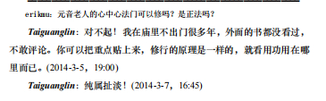
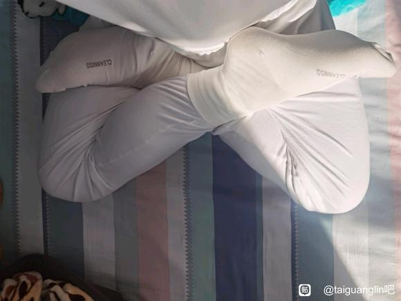
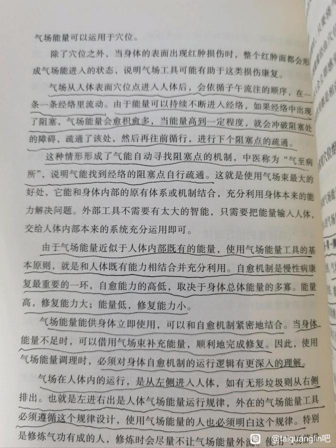

12佛門修行(972)
修行要領(236)
目標/重點/態度/信心(32)
千湍盈泰
2024-7-19
頂禮老師，請教一個困擾我好久的問題（可能的話請儘可能多講一些，因爲這個知識是經典上、網絡上找不到的，卻很嚴重）就是如何修報身的問題。感覺自己還算是法器，想即生成就。如果不想往生的話，就涉及需要修報身。據我所知，道家經典上有先修陽神，再用陽神轉化報身，把身體氣化的一種說法。密宗有幻化身，報身成虹光遷出這個世界的辦法。您能具體給我一個意見嗎？如果不想往生的話，需要修到什麼程度，才能保證不會下一世迷路（我平時讀書很多很雜，修行還算根氣，也有願力，希望有今生更快捷、更高標準的修法）
Taiguanglin
千湍盈泰，不想往生的話，你是打算在這個世界繼續修行成阿羅漢，成菩薩成佛這個意思吧？如果你是不求這些，你是求道家的，想求往，從永生這個方向就是活得很長時間修到陽神就差不多了。
至於你要想修佛的話首先得（發）個願，大菩提心，然後是先定一個你要去的世界，你不去極樂世界，這個世界有地藏菩薩的，地藏菩薩的地府裡有他的傳法的結界，還有彌勒菩薩的兜率宮，這兩個通常是最優選擇，你首先選一個要去的地方，有了地方之後，你就明確的念某個菩薩，你要去彌勒菩薩那裡，你就平時多念彌勒菩薩，多想著彌勒菩薩，你要去地藏菩薩那你就多想那個，這個是前提。
然後就正常的修行，你願意修參疑情也行，參思情也行，這個正常的方法和其他修行都一樣的，你先定個目標這才是關鍵。你要去哪裡這是關鍵，然後修行就按部就班的走，你說你的根器很好，那就是每個階段你可能花的時間比別人短而已，這個修法卻沒有任何變化都一樣。從唸佛打坐磕頭這個做著，每天打坐時間逐漸延長，你把前面的義理都看一下，從文字妄想開始注意力，然後情緒逐漸滅上去就可以了。
心畫世間
2025-05-15 11:54
頂禮覺者Tai師父：
1、失業與個人能力的困惑_x000B_• Q1：長期失業更可能源於個人能力/業力，還是環境限制？如何客觀分析？_x000B_• Q2：命運能否精確安排每日事務？選擇零工是個人意志還是命運推動？
2、努力與成功的邏輯
• Q3：科舉落榜生的例子是否證明“努力≠成功”？環境限制下，努力的意義是什麼？
• Q4：放生、佔察輪等行爲需要持續多久或量化到何種程度才可能改變命運？是否存在科學或因果依據？
3.、精神痛苦與解脫_x000B_• Q5：抑鬱情緒反覆出現時，如何平衡“自我說服”與真實心理需求？
• Q6：業力障礙極強時，禪定是否是唯一解脫途徑？是否有其他實際方法緩解現實困境？
4、業力與行動的界限_x000B_• Q7：如何區分“個人責任”與“業力/環境不可抗力”？
• Q8：在資源有限、事事不順的情況下，如何制定可行的行動策略？
5、與佛菩薩溝通的困惑
• Q9：佛菩薩爲何不回應我的請求（如託夢、唸咒）？是否意味著無緣？
• Q10：唸咒、佔察輪等法門未靈驗，導致信心喪失，但又自我歸因，這種矛盾如何調整？
• Q11：佛菩薩是否會直接干預命運？若不回應，是因業障太重，還是他們本就不以“顯靈”方式幫助？_x000B_6、關於“宿命通”與具體因果分析的困惑
• Q12：爲何無人能以“宿命通”或智慧看清我的因果？如何找到能具體分析業力糾纏的指導？_x000B_• Q13：“通用答案”（如“修心”“放下”）爲何感覺像雞湯？如何制定更落地的解決方案？_x000B_• Q14：若無人能看清因果，如何靠自己理性分析困境的深層原因？_x000B_7、關於放生功德的量化與信心問題
• Q15：如何設定合理的放生目標，避免因“看不到效果”而絕望？_x000B_• Q16：在無即時反饋的情況下，如何保持對善行的信心？
Taiguanglin
心畫世間，從你的問題當中看出來，的確是，中國人信佛，都是功利性的，這句話是對的，大部分人都是如此。想從信仰當中得到好處，甚至可以說如何和神佛做個交易，我做了這個你就得給我什麼，你不給我什麼，我就不信你了，或者是你是壞的，這樣的心念，有很多人都是帶著這種心念來求神佛的。
從你所有的問題當中看出來，好像你對當下的處境很不滿，但是沒有看出你當下處境是你造成的，可能是你前世的什麼因造成的，所以痛改前非的觀念我是看不到的。就是說沒有懺悔之心，或者沒有想改變過往的不好的觀念和認知，看不到這些觀念。
爲什麼要修懺悔？首先承認自己是錯誤的，以前肯定做了什麼錯事，所以當下承受這樣的痛苦，首先認可這個。然後從當下開始改變，不再犯過往的錯誤。從你的問題當中，好像是找不到工作而貧窮，沒錢，那貧窮就是因爲不佈施，可能上輩子吝嗇。
那我當下開始有什麼就佈施一點，就算不全部佈施，每天或者每個月堅持佈施，懺悔過往的那種吝嗇，改變當下，從現在開始做起。然後懺悔過去的錯誤的觀點，認可自己的確是錯誤的，這樣懺悔。但是我沒有看出你的這種心態，都是想怎麼做就可以馬上改變，但是自己以前做對做錯，好像無關緊要一樣。
而且從佛菩薩的立場上看，你這麼做，我必須要給你這個好處嗎？我教的是讓你解脫痛苦，從輪迴當中走出來，並不是讓你在輪迴裡享受各種福報，爲什麼要一定要給你，是不是？所以有些問題你就站到佛菩薩立場上看，他會不會答應你這些要求，或者你做了一點什麼，就馬上讓你得到好處。有可能就是不應該給你，你才能從中走出來。
你說這些修心、放下，都是雞湯文一樣的，那隻能這樣了，你的所有努力都已經沒什麼用了，在你的問題當中看來，那就只能放下了，還能怎麼辦呢？
所以說命運是不可改變的，才稱之爲命運。如果但凡做點努力都馬上能得到反饋和改變，那還能稱之爲命運嗎？
你想改變的話，很多時候，就是在某個契機之下心態一下改變了，就是突然間知道自己過往的確幹了很多壞事，從而升起了真真切切的懺悔之心，痛恨自己過往，從而要改變當下的時候，這個時候一下子世界都變了，然後就開始走出來。
如果一直覺得全世界都對我不公，我自己沒啥毛病，反正倒黴都是因爲外部的條件導致的，和我沒啥關係，這樣想的話你可能改變不了。好了，這是我想對你說的，然後再看看你的這些問題。
醒@了
2025-5-12
感恩師父。 對於現在當下的修行狀態，多數人執著於相，如何引入本心，信到深信的過程，願到大願的過程，行到大行的過程，修行由點組成面的去融入生活的過程，，不修執有，修了執空，不是障到神通，就是急於講法，如何去淨化？如何去引導？還是等待各自機緣？ 請師父慈悲開示。
Taiguanglin
醒@了，你問社會修行人的狀態，我認爲最重要的是發心的問題。但是很多人都不重點地說發心。很多講法的人只說法，只說一套一套的佛學理論，但是不關注發心的問題，發心才是重點。
首先是發心，你的發心是什麼，你是以普度眾生的大願來修行，還是求自己解脫，還是求人間福報，這才是重點問題。有了發心，其次是你的福德、功德夠不夠，這兩個都夠了，也有大發心，你大概率就能遇到正確的人和正確的法。如果沒有發心，福德、功德也不夠，修行就是爲自己的人間福報，那大概率遇不到正法，就會陷入到你說的這些問題當中。
你前世的所作所爲決定你當下的機緣，已經有了結果，所以當下已經沒有辦法再有太大改變，那麼這一世能做的就是在發心上，還有福德功德上多做點，這樣就夠了。然後祈求未來世好的機緣，也只能這樣了。
我可以說，現在能在我這裡學到法，並且能知道怎麼發心、怎麼修心、怎麼修禪，理論全部能學得通的人，都是前世已經修了足夠的福報，前世已經有了願。就算沒有大菩提心，也有出離心這樣的願的人，才能在最後這個階段裡還能遇到正法。否則很難遇到，就算遇到了也會被自己的所知障、我見給障礙掉。
就像有些人在回帖裡說的一樣，什麼現代人說的法就不看也罷。那不看就拉倒，你真以爲現代就沒有大修行，網上想遇到本身就難，你有這樣的想法就更遇不到，是吧。
所以最多的還是看你的發心，還有福德、功德。既然過去的行爲都已經決定了這輩子的機緣，這輩子能做的就是在福德功德上多努力。發心呢，境界低也能發很高的心，這是肯定的。所以發心問題反而比修行更容易一些。你只要心裡想通了，馬上就能發起來，境界再低的、業障重一點也能發起來，所以在這方面先努力一下更好一些。
TeddieBearLee
11-02-2024
親愛的太師父，已經好幾年了，每天早晨都會念到你的名字請你加持我們，好想你！可是師父，我怎麼也修不明白啊我的心一刻也沒安過！我老媽現在縱然可以雙盤打坐4小時甚至更多，但她也沒有體驗過任何真正的定或者靜！我現在生活狀態跟平穩，可能是一直沒有婚姻和姻緣的關係吧，雖然過得很好可是卻總是心有不甘，工作生活也沒有一處能讓我心安，我每天早晨邊誦經邊磕大頭，只是討個心安，師父我好需要一個可以讓我爲之振奮不顧一切的人生目標！師父您能告訴我一下嗎我怎樣才能擁有我真想過的生活？我有朝一日真能進入禪定嗎，我覺得好像都是不可能的神話。
Taiguanglin
你現在需要明白的是，你身上不好的情緒，是你自己本來自帶的，是你內心裡有的，並不是什麼外面的原因啊，生活有關係，就算生活不好，你修爲高的話，你不會感到痛苦啊之類的，你只是那種不好的情緒一直壓著，所以那樣而已。你得先找個，什麼發個願，要做什麼事兒，發願普渡眾生，不行那就發一個小願，就像在樓裡下面說的一樣（樓裡只貼吧內其它回覆），建個小廟啊之類的，你得有個目標，然後往努力的去做，你就不會有那麼多的煩心事，好吧。
sszhi
2024-02-14 19:01
4.如何增加學佛的信心和虔誠恭敬心？
Taiguanglin
信心，如何增加學佛的信心？普通人的信心是怎麼來的？自信心，都是自己的本事唄。認爲自己有本事，自己的學歷啊，身份啊，普通人是拿這些當做信心。
但是學佛，特別是學淨土的人，你的信心來自於佛菩薩。你要把這個事搞清楚，你不要以爲自己很了不起，佛菩薩的加持力遠遠超過你的自力，你只要認爲他們的力量給了你信心，這樣就可以了。他們希望你去極樂世界，你也想去極樂世界，這就能去了，沒有什麼特別的複雜的東西。
(TAI師父自白)
Taiguanglin
加油，只要沒死，修行就不間斷。
靈光臺
2024-02-19 18:27
2、若有未來初學，發願護持Tai法；除了學習佛法義理，數學邏輯能力的鍛鍊，是否也有幫助？
Taiguanglin
你有那麼多時間學習這個、學習那個嗎？那你還不如好好唸佛打坐，有空去放放生、多打坐行不行？一天打坐兩個小時、四個小時都不夠，還要去學習別的。如果你是工作需要，不工作就沒有錢的話，那沒辦法，那得先吃飯嘛。但是如果你有足夠的錢財過正常的生活，那時間還是用來修行吧，別幹亂七八糟的事兒，都沒有用的。
靈光臺
2024-02-19 18:27
3、其他世間學問能提升護持能力嗎？世間學問是不是也屬於一種教化眾生的方便“法門”？
Taiguanglin
世間學問和人辯論的時候倒是有點兒用。但是我都說了，不要跟人辯論。對你的生活有用的，你就學，對當下必須有用的就學，沒有什麼當下必要的，就不學也可以。人生短暫，古人不說了嘛：把有限的生命用在無限的追求知識上，最後就是個死。是吧？
常主真心，性淨明體
2024-02-19 15:12
師父好，看到大家都有問題在問，我怎麼一點問題都沒有，您說什麼我信什麼，讓怎麼做就怎麼做，一點疑惑都沒有，就算是有問題，也是先自己找在書裡找答案，找不到就看群裡是否有答案，請問師父，沒有問題是好呢還是不好？沒有問題，自己感覺好像沒有思考一樣。
Taiguanglin
沒有問題你還問問題？這是沒有煩惱也得找煩惱做，這個意思吧？沒有問題，你要是全都理解了啊，你自己腦子過一遍，你用你的語言把你對佛理的理解，你用你的語言來試著把它給解釋看看，你可以隨便在身邊找一個人來跟他講一講，看他能理解不。你要是能把你理解的佛理全部用你的語言把它傳遞給對方，他又能理解了，說明你真的理解了，好不好！
鏈接愛
2024-02-21 18:57
2、作爲一個凡夫知道了一切都是空花，越瞭解真相後，雖然沒有很驚恐，但突然多了一種緊迫感和壓力。我想怎麼能讓自己又瞭解真相，又融入世俗生活過得高興呢？日子還是要一天天過啊，修行每個階段讓師父覺得蠻開心的有什麼嗎？我想高高興興的自在的修行，不想苦哈哈的，有可能嗎？
Taiguanglin
凡夫堅持修行，一開始會有焦慮的情緒產生，但是你只要堅持修行，有了進境的話就開始感受到這種喜悅了。你別想著一開始就好像苦哈哈似的，那就別修唄，你就繼續輪迴就可以了。你回頭看就是萬丈深淵，你不向前使勁遊，就會順流而下掉地獄，這是肯定的。
鏈接愛
2024-02-22 23:27
師父，1、10年前師父說過16個字，其中“依法依己”裡面“依己”是什麼意思？我一直想不明白。
Taiguanglin
鏈接愛，依法依己，就是依靠學法，然後依法照做。依己，就是你得自己動起來，你得做，你不要去想著別人能幫到你什麼。你要去靠佛菩薩是可以，但是前提是你得做、有精進的表現，有大願，還有戒行、善行、修行這些都做到了，佛菩薩的加持也到了。你前面都不做到，一直想著佔便宜的事，很多人就在修行方面想著佔便宜，以爲別人給你灌個頂，你就一下子提高了，沒有這樣的好事，是吧！往往這種好事到後面都是詐騙，所以還是得靠自己。
一首落花情
2024-02-27 15:30
請問師父，如果知道明天就會世界末日，今天要怎麼度過才算是個修行人
Taiguanglin
一首落花情，知道明天末日，如果是我的話，我就打坐唸佛，思念阿彌陀佛。還能怎麼辦？明天要死了，就今天開始拼命思念阿彌陀佛，爭取一下子回去。
冰
2024-02-28 08:52
2、19-20年前後夢到一碗白乎乎的肉湯，我心想是肉所以不吃，算是通過戒肉的夢考了嗎，師傅可以在合適的時間提醒一下我嗎，提醒我向上走。
Taiguanglin
你的修行什麼時候可以給你提醒一下，激勵你？這個你向佛菩薩靠攏，別向我這個活人靠，你向佛菩薩求就可以了。要向佛菩薩求的規則都已經說了，先有發願，然後是戒行、修行、善行，這些都到了就可以。
哈哈哈哈火真多摩尼
2024-03-12 13:04
2、師父，以您現在的閱歷，能否對還在修行的我們提供一些避坑的指南。看網絡上分享的因果，有的修行人十幾年苦修，快要成就時因一些原因一朝全無，不得不重頭再來，或者修行途中不知不覺沾染上一些麻煩，耗費很多時間才慢慢解決，繼續修行等等，這些潛在危險該如何規避提前預防？
Taiguanglin
怎麼避坑？就是要靠佛菩薩啊！不斷地告訴你要靠佛菩薩，不要靠別人，也不要靠你自己，不要相信你自己！你要靠相信佛菩薩！怎麼和佛菩薩產生感應？就是大願，有發菩提心，然後是戒行、善行、修行。沒有大菩提心也行，那就發個出離心也行，也算，也認可。雖然出離心成不了阿羅漢，但是，去極樂世界還是綽綽有餘的。
去極樂世界和其它願又不一樣。所以說你先有個願，然後就把戒行、善行、修行都做到了。然後，和佛菩薩產生感應就可以，但是，你也不能強求。你要是爲了和佛菩薩產生感應，而刻意地去造作的話，它有可能又出現什麼外魔入侵那種事情。所以還是先發願爲主，不是直接把目標定在我要和佛菩薩感應，然後就天天等著做夢，那不行啊！你得先發願，然後才把修行、戒行、善行全給做到了，那肯定能和佛菩薩有了感應，然後，按照他們的指導的方法來修就可以了。
奇蹟
22-05-2024
修行的動力主要來自哪裡？如何能讓自己有精進修行的心態？
Taiguanglin
奇蹟，修行的動力主要來自哪裡？就是來自於你的慾望當中，你非常想解脫生死，非常想成佛，那動力就來了。還有一種是痛苦當中來的，佛爲什麼一開始就說苦集滅道，講四聖諦法先講苦，因爲眾生都在苦當中。如果你覺得自己不夠精進，那肯定是你的生活不夠苦，你才想其他事情。如果你覺得人生都是苦，從頭到尾全是苦，肯定會有更大的動力去修行的。
但是也沒有必要主動去找苦吃，很多事情你只要想一想就知道未來肯定會變苦的。比如我小時候經常跟母親去醫院看那些患者，小時候不是很懂，但是我知道人最後肯定會死的，而且死得很痛苦，光是知道這一點之後，我就覺得未來很可怕。甚至我還問我媽她會不會死，我媽說她也會死，我問我媽死的時候，會不會和那些患者們一樣非常痛苦？我媽說人都是這樣的，都會痛苦地死去。
當時我聽了這話就產生了很大震撼，難道人生就沒有什麼別的辦法能死得痛快一點嗎？如果不死就最好，但是好像沒有不死的方法。小學三四年級時候就有了這樣的想法，但後來接觸佛法之後，就覺得這是真正解脫生死，永遠消除痛苦的唯一的方法。有了這個想法之後，就專注地修行去唄。
掌南飛
2024-05-23 16:35
Tai師父好
1、人際交往中有些人因爲我吃素知道了我信佛會對我進行道德綁架，哪沒順著他的意就說我一個信佛的怎麼還這樣，認爲我信佛我就必須是個沒脾氣沒缺點的老好人，否則我和我的信仰都是不好的，可是我也有情緒做不到面面俱到，但我又不想給佛教丟臉，那我是不是該隱藏自己的信仰？跟別人說我吃素是因爲我討厭肉就行了？師父您如果遇到這種道德綁架您會怎麼做？您怎麼看待這種道德綁架，您會以此爲鑑讓自己變得更完美被挑不出毛病嗎？
Taiguanglin
掌南飛，道德綁架的問題，我個人的做法是嘴上不跟人爭執，該做什麼繼續做，反正他說什麼我就當耳旁風。如果他多次跟我說，我就說佛經裡說了一切如幻，你在我眼裡也是個幻覺而已，你說的全是屁話，我愛幹嘛就幹嘛，關你屁事，就這麼說就完了。
你可能年輕一些，你愛怎樣就怎樣，我對這些人根本不在意的，繼續做我的事，你能不說話就不說話，不搭理就可以。
Momo
23-05-2024
頂禮Tai師父：
1、修行，是一個離人越來越遠的過程，包括一些最基本的人的認知，由粗到細的不斷的淡化過程。弟子的問題是，是不是修到一定程度時，當修行人的執著、妄想淡化到一定程度，當善惡、好壞、甚至男女的分別都會形成障礙時，就必定得換一種處世方式，比如避世獨修等。所以您才會講，修行人最大的福德是有時間。
Taiguanglin
Momo，執著妄想淡化到一定程度就會避世獨修……，應該是相反的吧，妄想執著淡化到一定程度反而不需要避世，而是剛開始妄想執著太多的時候強迫自己避世。
所以那些隱居修行的大部分都是初學，修到一定程度，如果是以大菩提心修行佛法正法的人，肯定後面還要出來傳法的，不是大菩提心修行的人，有可能一直隱世到死去。一般那些人修爲到一定程度就上不去，因爲沒有大菩提心的人是得不到正法傳授的。
Momo
23-05-2024
頂禮Tai師：有一種方法：眼看著自然物，天空、白雲、樹木、花草等等，耳聽著風聲、雨聲、讀書聲，而眼見無所見，耳聞無所聞，從而去覺知自己身後的場景。訓練自己的覺知力。那麼請問Tai師，這種方法符合佛法理論嗎？打坐中，是否可以安住於這樣的覺知狀態中，從而入靜？另外在一人獨處時，是否也可處於這種覺知狀態，訓練自己不用五宮去感知這個世界，從而從夢中醒來？也有人把這兒的覺受叫成感知力__感應力__覺受這麼一個升級過程，是一個心的提升過程，這是否合理，請Tai師開示。
Taiguanglin
Momo，我們修行是爲了滅掉注意力，從而把六根境界全部滅掉，並不是讓我們把覺知力提高，訓練覺知力讓它變得更敏銳，這就是倒著來了，違反正常的佛學修行方法。
你還是正常的學佛，把注意力關注到一點，從而把散亂的注意力一點一點滅掉，然後思佛，用參疑情或者參思情的方式把注意力全部滅掉，這樣就可以擺脫有物質的世界，上升到二禪三禪這樣高的境界。如果你一直訓練注意力去聽什麼看什麼，反而只能更多的陷入這個世界。
修行是往內觀察，滅自己的慾望和執著，不是往外觀察世界，感知外面的世界，從而訓練感知力。是反過來往裡向內修行，以滅爲主，以舍爲主，舍掉你的慾望和執著。尤其是後面的五根境界六根境界，都是要滅的，並不是去訓練自己感受外面的世界，所以你說的這種方法是不如法的。
毛塵水
2024-7-18
頂禮師父！請師父教我們，修行路上，在身心疲憊、氣餒的時候，自我打氣加油的好方法。
Taiguanglin
毛塵水，身心疲憊、氣餒，自我打氣加油的好方法。修行人的信心不是來自於自己，而是佛菩薩的加持。但是呢，佛菩薩的加持是來自於你的發願和戒行、善行、修行，這些基本都做到了，他的加持就會跟到。所以你氣餒的時候，看看自己有沒有做完，每天的功課量有沒有做完，戒行、善行、修行都有沒有做完。
然後覺得你的境遇不太好，那是因爲上輩子沒有積福的結果，你這輩子就繼續積福就可以。
但是有時候對俗人來說，和別人攀比當中也可以得到一些幸福感，或者說給自己打氣吧。你去看看比你更苦的人，就像佛說的，當你抱怨自己沒有鞋的時候，看看那些沒有腳的人，因爲古代有刑罰是可以砍人腳的。
songer
2024-7-19
之前看寬淨法師《西方極樂世界遊記》，看到虛雲老和尚,彌勒菩薩和阿彌陀佛累累囑託“各教各派別，不要互相誹謗，說我正你邪，我道你魔，抓其片面缺點誹謗不止”時，一下對這篇遊記升起信任，覺得它很真實。想請教您，都是聽同樣的故事，同樣的法，爲什麼有些人能堅定升起正信，有些人會信著信著又疑了，是什麼因果導致這樣？那些起疑惑的人怎麼判斷自己的對錯？又應該怎麼做減少造業？
Taiguanglin
Songer，信和疑的問題，正常狀態下，信才是常態的，因爲沒有情緒的情況下，本來是應該屬於信，但是有了情緒之後才開始有疑，所以你要從根本上講的話就是有了情緒，其次是業障，就是有妄想情緒，到了情緒這個程度之後又有了業障，所以他會疑。
但是有了疑之後又會怎麼產生信，這裡就得用功德來堆，你在佛法上修的功德夠多，佛法上修的功德，不是其他地方，在佛法上，其他地方叫福德，有關佛法的叫功德，以前講過的，你在佛法上前世修得功德多的話，就很容易產生信，對佛法產生信，但是功德不夠的情況下就會產生疑，只能這麼解釋的。
還有起疑惑的人怎麼判斷自己的對錯，應該是沒有辦法，他有辦法能判斷的話，他就不會疑惑了，他因爲沒有辦法判斷，佛說的四種顛倒，常、樂，我、淨四顛倒，還有更高級的四顛倒，在講經的時候都講過了，這是凡夫的一種顛倒妄想，他認爲把不對的認爲對的，有人就這樣，這就是隻能說他的習氣和貢高我慢心，業障啊愚癡這些個導致的。他要是能判斷的話就不會這樣，因爲不能判斷才有這種問題。
怎麼減少造業？這個問題已經反覆的在前面就已經反覆的講，在佛法上不要試圖做什麼破邪立正這類事，你覺得哪個好你就學哪個就可以了，不要去攻擊其他人，這就可以了。
依一卓瑪
2024-08-15 11:26
頂禮師父！請師父講解一下佛經對現代人的作用吧！之前師父講的我都聽了，但是大部分佛經是佛因時教授，那麼我們現在學習佛經裡的哪些智慧呢？是了悟佛講經的道理呢？還是要照佛說的做呢？這裡有點迷糊，請師父開示！感恩師父！
Taiguanglin
依一卓瑪，學佛經，不是什麼學佛經什麼智慧的問題，而是我們認爲佛法是世界的真相，宇宙的真相。然後學佛最初級的目的是解決痛苦的問題，個人的痛苦，生死輪迴的痛苦，生老病死，還有其他的都加起來人生八苦，這個知道吧？這是一個。
還有一個是想知道真相，佛法是這個真相，它教你怎麼解除痛苦。苦集滅道一開始講的就是這個。
是了悟佛經講的道理嗎？就是真相而已。所以學佛要麼是你覺得自己很苦，我想解決苦，要麼想知道真相，無非就兩個原因。照佛做的做，佛是從苦的角度看的，佛是沒有痛苦的人，所以我們也想解決這個痛苦，成爲一個沒有痛苦的人。
所以向佛學習，向佛學習不是單純的學佛理，而是學做佛，像佛一樣思考，最後能成佛。不是從佛法那裡獲取什麼太多的利益，一開始肯定是有利益的，在一開始對人生是有一定幫助的，但是最終還是要成佛，解決一切問題，最後成爲佛，是這個方向。
還有智慧這類的問題。簡單來說，你沒有妄想分別執著的話，自然而然就有智慧了。智慧不是從外得來的，準確的說不是從學習佛經當中得來的，智慧本來就有，是因爲我們有妄想分別執著，被覆蓋住了，所以顯不出這個智慧。佛經告訴你這個真相，讓你把妄想分別執著一點一點滅掉，然後智慧就自然顯現，是這個過程。
大乘佛理都是這麼解釋的，不是智慧從外而來，學佛也不是要了悟什麼事情，而是知道真相之後，現在開始改變自己，好好修行，然後解脫痛苦。讓自己解脫了，還能帶別人一起解脫，因爲別人的痛苦也會反映到我們身上，讓我們也痛苦。
斷I章
2024-8-16
Tai師父好，既然佛菩薩是客觀存在的，那麼唸經唸咒時爲什麼需要以信心來唸才有作用？“信則有”與“客觀存在”不是矛盾的嗎？而爲什麼信心越強，效果越好？
Taiguanglin
斷I章，信心和客觀存在的矛盾，佛菩薩的意識遍虛空，這是客觀存在的事實，但是信和不信這是兩種不同的頻道，你可以理解爲廣播頻道，如果你的頻道對了，就能接收到他們那邊的頻率的廣播，你的頻道錯了，頻率沒對上就接收不到，就是這麼個邏輯，你相信的話就能得到他們的加持，他們的幫助。
如果你不相信的話，他們的幫助就會擋在你的不相信之上。因爲這個世界是唯心造，你的不相信也是一種心態，使得讓你處在那種不相信的狀況下，就是一種比較孤獨的狀態，凡事都要靠自己。所以說並不是信則有，而是信就能得到加持和幫助，不信就得不到，應該這麼解釋才是對的。不是信則有，不信則無，並不是你妄想裡產生的東西，他們是真實存在的。
但是你越是信心越強，說明你的頻道調的越準確，和他們心心相印，更容易得到他們的加持和幫助。如果不相信他們存在，或者不相信自己能接收到的話肯定是收不到了，因爲“不信”這個東西本來就是凡夫的一種愚癡。
再反過來說，從上往下，從這個世界產生的早期開始往下看的話，人在陽神狀態下，不包括阿羅漢和菩薩那邊，就是在到了凡夫之後，有陽神的狀態，到二禪三禪這個地方，陽神是純光體，發光的球體，都是一個細小的光子組成的，這些光體是可以重疊在一起的，所以這些陽神狀態生命體都是有他心通的，可以相互之間毫無隱瞞的可以瞭解對方的心思。
但是等有了肉身之後，到了初禪天開始形成肉體，有肉體之後相互就不能重疊到一起，所以他心通就消失了，不能重疊的情況下無法讀取對方的心思，才有了用語言交流的方式，佛經裡說有些世界是用香氣交流的，那邊是用氣味交流，那就是屬於鼻根的。
我們是用舌頭說話，也相當於算是用舌根交流，到了這個交流的界面上才開始出現“不相信”這樣的心態。不相信的前提是什麼？就是不能讀懂對方的心思，所以就有了不相信。所以說人本來是相信的，人本來就是單純的人或者純潔的人，他是什麼都相信的，看到什麼就信什麼，別人說什麼就信什麼，這是正常的心態。
而人開始產生不相信，是因爲他無法瞭解對方的心思，這是一點。其次是有業，前世有業，一般疑心重不相信別人的人，並不是什麼自己被人坑過了所以這樣，而是自己坑過了別人，那些疑心重的人都是前世已經坑過別人，是造了惡業之後，那些被害眾生的那些不好的情緒反映到他們身上的時候，他就會變成疑心病，所以我們看這個信與不信的問題，把相信作爲常態，而不相信作爲病態來看，這是正道。
掐口
2024-08-19 18:28
請問與人互動容易不舒服，特別對視的時候，該怎麼對治。
Taiguanglin
掐口，與人互動容易不舒服，特別對視的時候，對視的時候那你是斜視嗎？你不敢對視就是斜視嗎？在相學上不敢對視的人，不正眼看人的人，都是心術不正的人，你是這樣的人嗎？你心裡老想害別人還是怎麼的啊，想佔小便宜還是什麼？我覺得如果是一個信心不足的人的話，你的信心來自於哪裡？
先判斷這一點，普通人的信心來自於什麼？自己的個人能力啊，學歷啊，過去的成就啊。但是我們修行人的自信來自於佛菩薩的加持，但是佛菩薩的加持呢，是我們努力地修行結果引來的。我們也堅持做戒行善行修行，然後有大願，這樣的話就引來佛菩薩的加持。
你只要感受過一次的話，就相信原來佛菩薩真的在加持我，真的在保護我，那信心就來了。以後遇到人也沒有什麼覺得不舒服、低人一等這種感覺，所以堅持修行就行，該怎麼對治，我覺得吧，一種是讓自己的信心增長的心態，還有一種是俯視對方，從上往下看這樣的。
第三個，第三者視角看對方，也有這種方法。你覺得你是個修大乘的人，其他人就是普通人，你以悲憫之心觀察對方，看對方就沒有什麼不舒服的。就像佛經裡說的，遇到老的女人就想起這個是我的母親，年輕的女人就想起這個是我的孩子啊，這樣的方法。而且未來都要度他，對所有女性以這樣的心態來看，然後生起要度的念頭，就可以滅除邪念，以這樣的心態來對待別人。
你也一樣，你覺得見到人有點信心不足了，不敢對視了，你就想著他也是和你有緣的人，你未來要度他，有了這樣的想法的話，你這種不太好的心態會減少吧，好了。
Jhone
2024-11-12
想請問Tai師父，您的修行方法是打坐，磕大頭，唸經，放生，吃素，可幾乎未提及過克服自身的貪嗔癡，請問這對於修行解脫不重要嗎？
Taiguanglin
下一個問題，Jhone，打坐，磕大頭，唸經，放生，吃素，可幾乎未提及過克服自身的貪嗔癡。打坐、磕大頭、唸經，放生、吃素，就是針對滅自己的貪嗔癡，不能說針對性的修行，但是這個過程當中你的貪嗔癡慢慢都會減少的。
貪嗔癡，所有的慾望，癡是什麼？前面講過，癡對凡夫來說就是不懂因果，你只要相信因果，就算有智慧了，不是癡了。你學佛那不就算已經比別人要有智慧多了。
貪和嗔是什麼？都是情緒方面的，貪是慾望，慾望也是從情緒升起的。你的修行持續進行，各種情緒也會慢慢減少，慾望也就會減少。所以你所說前面這一系列的行爲，只要堅持幾年下來，你的貪嗔癡都會減少的，不是不重要，你這樣做的過程就是在減少的過程中，好吧。
偶米大
2024-11-13 15:47
2、我每次出遠門都會查看萬年曆的宜和忌的習慣，這種是不是有強迫症？該如何消除呢？
請師父慈悲開示.
Taiguanglin
你說的查看萬年曆的宜和忌，這是一種信心不足。我們修行人的信心來自於佛菩薩的加持。佛菩薩爲什麼會加持我們？因爲我們有大菩提心，我們要做的就是佛菩薩做的事情。你有這樣的想法，佛菩薩的意識遍虛空，我知道他一直在保護我，這樣想的話百無禁忌。
我做所有的事情都是爲了普度眾生而做的，哪怕是我睡覺吃飯，都是爲了更好的普度眾生來滋養身體，以這樣的心態來活的話，沒有什麼好禁忌的，任何事情都不會有什麼問題。
甚至有些人，比如說，我也不說別人，就是說上邊突然告訴我，你到幾歲爲止你得做事。這麼一說，我就知道，在這段時間我絕對不會出事的，死不了，也不可能出大事。因爲他們要求我這麼長時間來做事的，既然做事，肯定我的大部分需求都會滿足。有這樣的信心的話，每次最多的應該是問問自己，你做的每一件事情是不是符合我發的大願。哪怕一些小的執著，比如說想吃點好的，這也是爲了好好修行，然後普度眾生，以這個目標來做的，那也可以啊，每個人都有這樣那樣的習氣，也多多少少都有點喜好。
你不能把自己當做現在已經成爲菩薩的那種狀態來要求，所以你的強迫症或者習慣，我認爲這就是你對自己的信心不足，所以缺的就是大願吧，好不好？
聖輝
2024-12-12
阿彌陀佛， 請師父慈悲開示：
1、如何速成阿耨多羅三藐三菩提，成就一切如來境界！或許我不該這麼問吧，但又想問。
Taiguanglin
聖輝，如何速成阿耨多羅三藐三菩提？肯定是先有大願了，你得有普度眾生的大願，還有功德，還有精進修行。所謂的速成，這個是後來傳到中國之後出現的說法吧。一般情況下，佛法修行都不要求這種速度，所以前期修行很多初學們，都是在追求很多自己的利益，這個時候得到的加持明顯是少的。對於速成阿耨多羅三藐三菩提，是沒什麼幫助的。不過只要你進入佛門修行了，那一開始就算求個人的很多願望，隨著修爲的不斷提高，終究還是會放下，然後求解脫的。
王鵬
2024-12-13
頂禮Tai師父！其實沒有特別想問的問題，但是又很想多跟太師父結緣，就彙報一下我的情況吧，因爲身體不好，壞毛病也不少，大概2013年開始接觸打坐並開始打坐，2015年看到您的帖子了，打印了一份至今保存，期間也反覆看過幾次，覺得特別好。
所以也開始做大禮拜、讀《地藏經》。那幾年身體狀況、精神狀態有很大改觀；可是後來還是懈怠了，《地藏經》讀了一年左右就沒再讀了，一邊打坐一邊讀，大禮拜時做時不做，就是做也做的少了，頭兩年是可以每天五百多個的，打坐倒是一直有但也沒什麼長進，降魔坐接近兩小時吧，身體一直動的厲害，就是修行上沒有個明確的目標，生活中事也比較多壓力較大；然後最近幾年身體越來越差，總感覺可能活不了多久了。
所以今年初又發心要好好修行，多次反覆，每天堅持打坐、大禮拜、控制飲食，吃素有八、九年了，但是好吃，農曆七月開始每天讀一遍《地藏經》，併發心只要活著每天都會讀一遍，然後大概兩個月前機緣巧合又看到太師父的東西了，也請回了《坐禪1》、《坐禪2》並基本看完了，《坐禪2》我的感覺還是比較匪夷所思的。
但是也是信服的，修行也堅持得越來越好，每天打坐兩個多小時，之前一直降魔坐，一週前開始蓮花坐跟降魔坐每天換著做，蓮花座可以兩小時但右膝蓋翹很高，降魔坐接近三小時，但還是身體動的厲害，下腹部有病有病竈，打坐時感覺明顯，大禮拜五百個，《地藏經》一遍，其它時間儘量念阿彌陀佛，打坐和大禮拜時念往生咒。
Taiguanglin
王鵬，這是寫了一段自己的修行，總之還是要讚歎啊，堅持修行就好。但是你在這裡沒說發願的問題，發願很重要的，你的一切行爲到底是以什麼爲目的，爲導向的，這個很重要。哪怕是往生極樂世界也好，如果你發願普度眾生的話更好。正常的所有修行都在佛菩薩的加持下進行，所以如果有願的話，肯定能得到佛菩薩加持。所以你的這些小問題都不是問題，肯定能熬得過去的。
王鵬
2024-12-13
現在也發了大菩提心並每天發，今年來身體狀況和精神狀況也有很大改善，過了年我也五十三歲了，修行目標也越來越明確了，想爭取去極樂世界，想度跟我有緣的所有眾生。Tai師父您說過修行最大的障礙不是冤親債主而是我慢和懈怠，我會時時銘記，真的非常非常感激您，再次頂禮Tai師父。
Taiguanglin
王鵬，我上邊剛看了，你長段的修行的日常功課，然後說你上面沒有提到發心，你在這裡又提到發心了，很好啊，有願就好，有大菩提心必然能解脫，未來必定會成佛的。有這個大願才是真正的走向解脫的修行。如果沒有大願，都是在這個世界裡輪轉的，哪怕是求福報也好，求出離，光靠出離心也是出不去的。
只有發願普度眾生的時候，佛菩薩的加持力會跟上。
所以我相信你這輩子肯定能往生。現在是五十三歲，按正常現在的平均年齡來說的話，至少要二三十年吧，時間是肯定夠的。單說在往生這個事上，時間是肯定夠的。現在就看是怎麼積福啊，還有持戒，這個問題了。
鄭勇
2025-2-12
弟子在磕頭時，一是懺悔過去的惡業，二是磕去自己的貪嗔癡慢心。在思考自己慢心時，意識到與其一個心一個心的對治消除，不如直接對治我執，如果除去了“我”，自然就沒有貪嗔癡慢心了。
隨後開始感悟“我”，我在娑婆世界爲凡夫，受天地法則管理，所以在世間事上，儘可能的行善斷惡，隨順眾生，但是內心要明白，時刻提醒自己去除“我”。儘可能的提醒自己，保持借假修真的相續力量，儘量保持世間事的任何反應背後，都有上帝視角，讓自己擺脫“我”的感受。以此方式長期反覆練習，讓自己背後的清醒意識增長相續的力量。隨後的應驗中，我發現幾乎沒用，遇到事時，習氣的力量太大了。
但是這個意識提起來了，我會意識到自己沒有保持心不動，沒有做到借假修真，沒有做到世間的自己與消除“我”的融合。然後繼續應驗，我察覺到自己在某些事上，已經能想起來了，然後調整自己的心態，應急時很難想起來，但是緩慢的狀態下，想起來的次數會增加。這個過程產生了一些疑問，想請教老師:
1、這個方法的理念是否正確？這個方法的修行次第是否正確？是否值得在此下功夫？
Taiguanglin
鄭勇，你說的都是一種生活態度，你說修行那也算修行，但是並不是真實的打坐磕頭唸佛這樣的修行行爲，你只是改變了對人生的認知、態度而已。
你說要靠這個消除“我”，這是不可能的。因爲“我相”是在阿羅漢境界的分別心上產生的，只要你是帶著肉身生活的凡夫，這個“我”一直在，不可能徹底消除的，所以不要在這個方向上過多地執著。
你用這種心態來看待這個世界，理解這個世界，理解你的命運，這個倒沒有什麼；但是不要把它當作真正能夠解脫的一種修行來認知，那樣的話反而解脫不了。還是努力打坐磕頭唸佛，這才是正確的方向。
三顆橘
2025-2-13
老師好，現在很多修行人博聞強記，涉獵廣泛，研讀經教，但是很多人都不注重打坐參禪。給我的感覺是他們很對佛理都有自己的一套解釋，辯才也不錯，能夠自圓自說，有些甚至還有一些常人沒有的功能。他們通常說看住心，安住當下就行，修行在生活，甚至講的雲裡霧裡高深莫測，不用打坐也能成功。似乎就是那種理悟瞭然後看住心，平常心，讀讀經，念念咒，然後等待突然有一天智慧突然大開，把六祖慧能當榜樣，這樣的修行陷入誤區了嗎？
Taiguanglin
三顆橘，你問的這樣的問題，我已經回答了很多遍了，你只要不修行、不參禪、不打坐的話，你就滅不了六根境界。你一直看，一直聽，那對眼睛的執著、對耳朵的執著、對身體的執著，對身體這個“動”的執著，你都滅不了。它一直在用，你怎麼能滅呢？你得讓身體休息，不聽不看，維持這種狀態，每天練習，慢慢地把這個習氣都滅掉，是吧？這邏輯很好理解吧？
如果你是一個沉迷於打遊戲的人，每天一直都在打遊戲，你怎麼能戒遊戲呢？你要戒遊戲的話，你本來是一天打八個小時、十個小時，拼命打，現在起碼每天少打兩個小時。本來打十個小時，一天從早到晚一直痛痛快快打，瘋狂地打，那麼今天就少打兩個小時，打八個小時。至少兩個小時，我幹點別的，我休息一下。
這樣每天堅持，然後覺得這兩個小時，不那麼煎熬了。本來是有遊戲癮的人，哪怕兩個小時也很煎熬的。開始不那麼煎熬，那這八個小時遊戲時間再減少一下，再減少一下，這樣慢慢減少，最後就可以擺脫這個遊戲的控制了，是不是？
對肉身的執著也是如此。你不打坐參禪，那就沒有辦法徹底滅除對肉身的執著，所以就沒有辦法擺脫肉身，這個邏輯很簡單的。
心畫世間
2025-05-16 09:13
昨日經師父開示，心胸開闊了許多。回首往昔，我曾於宿世造下諸多惡業，如今深刻懺悔。從此發無上菩提心，誓將個人得失拋諸腦後，精進修行。待因緣具足時，定當以慈悲爲舟，度化萬千眾生，助其脫離六道輪迴之苦。_ 每當痛苦襲來，我不再沉溺抱怨，而是以大悲心觀照情緒，用感恩之心驅散貪執，選擇以正向方式疏導內心，將煩惱化作修行的資糧。_x000B_歷經世事滄桑，目睹身邊親友離世、一切繁華皆成泡影，我終於初步看透世間有爲法的虛幻。不再執著於情愛、財富與名利，明白這些不過是鏡花水月。往後餘生，只要一息尚存，便將修行作爲生命的核心，矢志不渝。_ 猶記十八歲那年，友人邀我接觸基督教，但其"唯有信主方能得救贖"的教義，與我自十四歲起在仙俠小說中萌發的"人可覺醒潛能"的信念相悖。此後，我廣泛涉獵道經、佛經、聖經等宗教典籍，以及冥想著作與外道思想。經反覆思索，深感佛教教義與我的宇宙觀、人生觀最爲契合。_ 初期修行時，我盲目閱讀各類佛法書籍，卻因缺乏系統指導而不得要領。嘗試參禪卻覺晦澀難懂，受限於盤腿功夫不足，最終選擇持名唸佛、持咒修行，並堅持茹素三年。事實上，悲憫之心早已根植於我心——路遇乞討老人，即便羞怯於他人目光，仍會折返相助；家中闖入麻雀，我力保其性命；甚至以買鼠烹飪爲名，解救被虐生靈。_x000B_十年修行之路，雖多走彎路，卻也承蒙諸多善知識點撥。直至得遇師父，往昔困惑才豁然開朗，修行方向也愈發清晰。這份法恩浩蕩，唯有以更堅定的修行決心、更勇猛的弘法願力，將佛法薪火代代相傳，方能稍表感激之情。
Taiguanglin
心畫世間，這一篇小作文下面沒有提問，挺好的，能對你有幫助就好。人一生都會有幾次契機，能得聞正法。前面還會有幾次，每個階段聞到不同階段的法的過程，不可能一上來就直接是最終極的法，一般人是不太可能的，都會有前期的鋪墊。
所以有人說爲什麼小乘佛法還得設計出來、還有維持、和他們爭論什麼這些問題的時候，我經常回答：因爲有了大學，不能把小學都給砸毀了，那就沒有辦法從小學開始往上走了，是吧？小學、中學都得有。所以前期的修行和機緣都是有必要的，是那些過往才成就了現在，包括那些過去所造下的諸多惡業，也是成就你的一部分。
所以惡業你不能否定它，你只能承認你的確做過，然後不再犯，痛改前非，不做了，這才是正確。而不是迴避、隻字不提，或者內心根本就不承認自己錯誤。有些人就這樣，他很痛苦，但是從來不承認自己的確錯了。他一直把責任推向別人或者推向社會，好像他自己一切都是好的，好事都是他乾的，壞事都是別人強加於他的。這種想法的人很難在修行方面有什麼進展，說實話也遇不到什麼正法。至少你在很年輕的時候能遇到正法，而且有修行的基礎，已經是很好的了。
就像你說的這樣，希望在佛法上有更高的成就，這一生解脫有點難，但至少往生極樂世界還是有很大概率的，只要堅持就行。
心畫世間
2025-05-17 16:22
師父，弟子近日於修行之道上多有困惑，特向您求教。在修行途中，業障似是橫亙在前的最大阻礙。它或使人無緣聽聞正法，或難以接觸解脫的實修理論；或令行者無暇靜坐參禪，生活中瑣事紛擾、逆境頻生，煩惱如潮水般湧來，甚至滋生厭世情緒。加之眾生根器各異，意志堅定、能潛心參禪者更是寥寥無幾。
據聞，當今世界六十餘億人口中，雖有五億人宣稱信佛，然其中三億餘人僅停留於口頭信仰，並未付諸實修。餘下一億多信眾裡，能尋得正確修行理論與方法者，可謂萬中無一，粗略估算不過數萬人。而這數萬人中，能日復一日精進不懈，衝破外在環境束縛，以如癡如醉投入遊戲般的熱忱修行者，百中才挑得出一人，至多不過千人，可堪稱爲“修行種子選手” 。
這千人之中，能突破四禪境界者，又僅佔十分之一，僅剩百人；此百人若想成就阿羅漢果位，還需具大願力、得遇殊勝機緣，並通過“再來人”的重重考驗，最終能達成者，不過五分之一，約莫十人而已。至此，弟子方才真切體悟到修行證道之艱難，宛如攀越萬丈險峯，步步維艱。
弟子心中疑惑：若想成爲有望證果的“種子選手”，是否需廣積功德、厚植福德，以此消解業力影響，改善修行外緣？同時立下宏大誓願，以破釜沉舟之決心，全身心投入修行，方有一線成道之機？還望師父慈悲開示，爲後世學人撥開迷霧，指明修行正途。
Taiguanglin：
心畫世間，你是作家嗎？寫小說的嗎？文章寫得很好。你說的對，真正要成道的話是很難的，但是往生是不那麼難的。所以當下我勸大家都是先把目標定在往生極樂上，這一世往生，後面的修行到那裡再說，這個是最簡單的方法。如你所說，先要廣積功德福德，還有大願力、宏大誓願，還有堅持修行、精進修行，這些都做到了，往生至少是沒啥問題的，所以先去那裡再說吧。
這個世界當下的修行環境未來也會慢，可能變得更加不好吧，只能是這樣。因爲眾生的根器越來越差，環境也會越來越差，沒有辦法。這一次的文明設計已經基本到快到尾聲了，還有一百五十年，所以這一世或者下一世，在兩世之內往生極樂世界是最好的方法。
在這兩世之內想修成阿羅漢，說完全不可能，這麼絕對的話是不好說的，但還是有點難度，大概率不太可能，所以還是求往生極樂世界最好的。
———————————————————————————
Taiguanglin
心畫世間，你是作家嗎？寫小說的嗎？文章寫得很好。你說的對，真正要成道的話是很難的，但是往生是不那麼難的。所以當下我勸大家都是先把目標定在往生極樂上，這一世往生，後面的修行到那裡再說，這個是最簡單的方法。如你所說，先要廣積功德福德，還有大願力、宏大誓願，還有堅持修行、精進修行，這些都做到了，往生至少是沒啥問題的，所以先去那裡再說吧。
這個世界當下的修行環境未來也會慢，可能變得更加不好吧，只能是這樣。因爲眾生的根器越來越差，環境也會越來越差，沒有辦法。這一次的文明設計已經基本到快到尾聲了，還有一百五十年，所以這一世或者下一世，在兩世之內往生極樂世界是最好的方法。
在這兩世之內想修成阿羅漢，說完全不可能，這麼絕對的話是不好說的，但還是有點難度，大概率不太可能，所以還是求往生極樂世界最好的。
心畫世界
2025-05-17 16:30
師父慈悲：近來常思索痛苦與認知的關係，心中諸多困惑，特向您請教。是否外境本無實義，一切意義皆由心賦？
曾見鄉間八旬盲翁，獨居茅廬，拾荒爲生。渴飲棄水，飢食殘羹，衣履皆拾於道旁，水電俱無，稻米亦以廢品換得。然其單目雖盲，獨眸卻清亮如星。每獲一塑料瓶，笑容便自眼角漾開。問及命運，他淡然道："不想那麼多，一個人自由自在。"年入不過兩千，病時咬牙硬扛，生死亦無所懼，直言死亡是"新的黎明"。在他身上，生命褪去一切浮華，僅剩最本真的生存本能，卻透出超越困境的安然。
反觀生活優渥之人，坐擁房、車、財富，眼中卻盡是貪婪。終日與人攀比，困於他人眼光，坐擁繁華卻難覓安寧。
亦曾遇殘疾智障者，搖輪椅穿梭街巷拾瓶，問及煩惱，只道"習慣了，活著就好"；癡傻老者寄人籬下，卻每日踏月砍柴，眼神純淨如孩童，勞作、進食皆出自本能，似不知苦累爲何物。
由此觀之，是否所求愈多，痛苦愈盛？因貪慾矇蔽雙眼，執著於本不屬於自己之物，愈是求而不得，愈是陷入自我否定與矛盾之中。
恰似親人離世，學佛後我僅存淡淡不捨，因深知生命並非消逝，不過是形態轉換。當我們執意追逐超出福報之事，求而不得便生嗔怨，既不甘命運安排，又自我懷疑，情緒如潮水翻湧。
再細思，面對他人辱罵會心生不悅，是因將自尊視爲實有；遭遇病痛會心懷怨恨，是因執著肉身爲真實。逆境當前，不甘與痛苦叢生，根源在於認定順遂方爲常態，執著於"我應得更好"的妄念。在財帛、人際、生死等諸多人生課題上，當現實未按預期發展，痛苦便隨之而來。
此種種煩惱，是否皆源於認知侷限？因無明遮蔽智慧，不識萬物空性，故而執著外境，強求圓滿。一旦事與願違，便陷入痛苦泥沼。懇請師父詳細開示，指引後世學人撥開迷霧，得見真相。
Taiguanglin
心畫世間，你問種種煩惱是否皆源於認知侷限？佛說了，《圓覺經》裡說，不能解脫是事障、理障的原因。事障是業，就是和其他眾生互動當中給其他眾生造成的傷害，他們對我的報復之心和不好的情緒讓我沉入到輪迴當中，還有就是我自己的妄想、分別、執著，讓我沉入輪迴當中。
我只講佛理，不說雞湯文，你昨天也說了不講，對雞湯文不感興趣，你要聽真相的就是這樣。一個是妄想、分別、執著，一個是事障，就是業障，這兩個讓人沉浸在輪迴當中，無法解脫。
你前面說的有些人老人，在困苦當中，他也看上去精神狀態還是比較好的，但是他也不知道真相，什麼是理障，就是不知道這個世界的真相。
這個真相就是三個初始設定，所有的意識構造，這些佛法的真相他不知道。所以你說這是認知侷限，那也是。不過這個侷限，不是靠自己能打開的，真相只能靠再來人傳播你才能知道，理論上一旦墮入輪迴根本走不出來，可以說這就是這個世界最可怕的地方，一旦墮入輪迴，靠自己根本走不出來。這個在第二本書裡專門說過了。
那什麼情況下才能遇到再來人學正法？一個是福報，福報和智慧，這兩者具足的時候，有概率遇到，這個也不是絕對性的，除非是有些人對這個世界有強烈的厭離之心，這種人可以遇到。
就算他沒有學到佛法，但是他經歷過這個世界很多痛苦的事情之後，就不想繼續玩，想結束這樣痛苦的生活，他也不知道輪迴不輪迴，知不知道另一說。總之他對這個世界有厭離之心的時候，有人告訴他這個世界的真相，這個時候有可能相信，也不是絕對會相信，有可能相信。
有人告訴他這個世界上帝創造的，給你這麼多痛苦，就是上帝安排的，就是讓你去上帝身邊，他也相信，然後信上帝去了，也有可能，所以這個時候能不能遇到正法，那也是有一定概率的。
在我們這個維度上是有一定概率的。但是在佛設計的文明的大輪迴當中，法界的大輪迴當中，所有眾生都有必然會遇到佛法的時候。因爲他必然會墮入地獄，墮入地獄了，肯定在那裡有地藏菩薩在教，肯定有辦法讓你遇到法。雖然不可能直接讓你相信佛法之後追求解脫，能不能改，有這樣的變化是每個人的意願和意志力的問題，但是肯定讓你會遇到佛法的。
只不過遇到佛法之後，有人拿佛法去追求個人福報，那這一次的機會就失去了。如果是遇到正法之後，真的想往解脫方向發展的話，他就可以遇到下一步的善知識，可以教更高的境界了。所以佛法是根據不同的層次都給你，但是每一次學到之後你怎麼發心，能不能按照佛法的要求來發心，這個才是他們的選擇問題。
有些人倒是福報和智慧很多，到了一定境界，他也不生出離心，那就沒有辦法，有些人在福報和智慧低的情況下也能生出出離心，那就可以繼續往上修了。
所以我勸大家珍惜當下這種修行的環境和當下接觸到的正法，這是這一輩子當下能做到的事情。所以堅持修行，堅持戒行、善行、修行和大願，這幾個要求儘量去做，爭取這一世能往生，或者至少在修行方面能有更高的境界。
這種機會，如佛經前面開經偈說的，百千萬劫難遭遇。尤其是發願這個事，發願這個事是很重要的。沒有發願的話，沒有大願或者沒有出離心的話，後面你學到了什麼對你的未來也都不會起太正面的效果，可能最多就是福報而已，然後下輩子做一個有福報的富貴之人。然後福報消耗殆盡了又得下去，所以還是當下好好修行，這才是關鍵。
應對懈怠退轉/修行進步(33)
覺
2025-5-16
2、有時候一段時間處於某種狀態（並不是一直是這樣，而是階段性），比如就是感到睏倦早上總是起不來，調多少鬧鐘也不行，或者想學個什麼東西，課買了但怎麼都學不起來，總是拖延推遲抗拒……，像這樣或者類似的情況是要一定要下定決心打破超越它們，還是要隨順接納？
Taiguanglin
下一個問題，如果是修行上有拖延症，那就強迫自己必須每天完成一次，至少半個小時以上的修行，能有兩個小時最好。
如果生活上的拖延症，什麼買了課又不想看，買了書也不想看，我勸你還是隨順接納，這些都是消耗時間的。你覺得你拿這個時間去做這個事兒、看這個書有必要的話，你肯定會做，沒啥必要的話你就會開始拖延。而且沒到很著急的狀態，肯定會拖延的，大部分人都是這樣，所以不用著急，你就隨順就可以。在修行方面精進就夠了，生活上懶一點都無所謂。
薛祖宜
2025-5-15
師父午安 我想了一天 我覺得問題應該是我很貪心 我試徒未學行先學走，基礎也未做得好的時候，用了分別心的方向去所謂觀照，可能是這樣貪心，反而要做的功夫做不好，是不是有這種情況？如果是，對不起、對不起。
Taiguanglin
薛祖宜，修行方面有貪心，大部分人都是這樣的，想在修行方面快速地能達到更高的境界，這很正常，沒有什麼錯不錯的問題。只不過在義理方面你得先理解透了什麼是分別心，什麼是注意力。一開始以爲用注意力觀察，誤以爲自己在用分別心來觀照，這個等明白了就好了，談不上有什麼好不好的問題。
總之，你的修爲已經相當不錯了，在這個年齡段，能達到這個境界已經很厲害了，所以我還是很讚歎你的。只不過就是有些心急，慢慢來，不著急。就昨天說的，把注意力一放下，就沉浸到情緒當中去，這樣才是正常地進入二禪乃至三禪的境界。你一直抓著注意力，就不能進入更高境界了。
貓貓|
2025-05-14 15:45
頂禮師父！每天功課打坐磕頭唸佛，生活工作，很難天天堅持，總有懈怠的時候，有畏苦成分，如何能保持持續精進？
Taiguanglin
貓貓|，每天功課打坐磕頭唸佛，生活工作，很難天天堅持，總有懈怠的時候，如何能保持精進？這樣問的問題很籠統，怎樣保持精進？你是時間不夠呢還是自己懈怠呢？懈怠就是想休息，那該休息就休息，不要給自己太多的壓力，每天你只要定兩個小時差不多了。一般上班的人，只要不是天天加班到很晚，一般兩個小時還是可以的。
臺灣的那位師兄，“先拜眾生再拜佛”，這個名字那位師兄，他是上班前就磕七八百個頭的，三四點就起來開始打坐磕頭。上班之前把一天的功課基本都做完，只要你有心的話都能做。三點就可以起來，四點也可以起來，總之你有心的話都可以做完。
懈怠是你的藉口也好，什麼也好，總之這也是一種修行的過程。都會經歷這種煎熬的過程，我想修，但是又懶，內心互相矛盾，想好好修行，又懶。
我也有一段時間修行方面也是這樣，想好好打坐，但是又想玩遊戲。玩一會遊戲，又覺得今天浪費了很多時間玩遊戲，又後悔，但是不玩的話心裡又放不下，因爲總想把那個遊戲打通關。最後自己就放下，先把遊戲打通關再說，畢竟修行是一輩子的事，打遊戲只是那麼幾天的事，那就把遊戲打痛快了，心裡放下了，然後就好好去打坐，我有這樣的過程。
內心有這種矛盾都很正常，你只要認爲修行是對的，你有這個念頭的話，慢慢會往這個方向發展。如果你想更快點，那就求佛菩薩，然後多做點功德，讓你更加精進也好，給你創造更多的修行時間也好，求佛菩薩就可以了，前提是你得先做功德。
貓貓
2025-5-16
之前一天會念六七部《地藏經》，三月一個月只念了八十部。目前是從四月玩到現在，每天就是玩，也不做功課，我感覺我要玩瘋了，樂不思蜀了。覺得自己應該做功課，但是就是不想做，就是玩。懇請師父提點。
Taiguanglin
貓貓，一天念六七部《地藏經》現在不想做功課了，所以說修行是不能過於操之過急的，就是一天猛幹，一旦崩斷就很長時間不想做了。修行是要循序漸進的，每天一個小時兩個小時這麼慢慢增加，不是一上來就大部分時間都在做。除非你在這方面有堅定的意志力，把這個當做自己一生的信仰、所追求的目標來做，哪怕一分鐘不修行的話，感覺自己吃虧一樣，這樣的心態你可以拼命做。
大部分人都不是這種心態，每天做一個小時、兩個小時，不要過度，你自己都很累了，還繼續做，一旦繃得太緊，然後突然放開了就會鬆弛很長時間，都不想碰書了。
當下實在不想做的話，有時間去寺院做個小義工，不做義工也可以，每天去那裡做做看看，也算是慢慢地薰陶自己。我不強求你不想做的非要做，我個人是如果身邊有這種人的話，我有時間我就帶他一起做，他願意的話就把他抓過來，一起念一遍經，這樣挺好。
所以我勸你也是，去寺院看看，都有什麼人，他們生活怎麼過，這樣可以吧。有些寺院還有抄經這種地方，你也可以進去抄著玩看看，不要做過度強迫自己做什麼，反而可能會起反作用。
zhugewuyue
2024-02-17 16:46
師父好，近兩年弟子學佛沒有剛開始那麼精進，甚至開始有些懷疑，出現懈怠、退轉狀態，沉迷受阻於眼前的安樂，請師傅指點後續該如何修行
Taiguanglin
zhugewuyue，你得先發個願，然後定個目標。發個願，發不了大願，那發個小願也行。比如我在短時間內，要念多少遍經啊，定個目標，然後去做嘛，還能怎麼辦呢？誰不懈怠，我一開始都很懈怠的，就算出家也有人懈怠，也有人經常早課逃跑，然後被罰，這個是很正常的事情，只能堅持，繼續堅持。
極樂之光
2024-02-15 21:51
頂禮師父！！！
我幫太師微信群“吃瓜群眾”請問師父一個問題
師傅好，以前弟子剛開始接觸佛法的時候，十分精進，十分信仰，但近兩年好像對佛法產生懷疑的念頭，感覺自己好像只能每天誦經，求佛菩薩保佑加持，其他什麼也做不了，對身邊的人和事，無能爲力。 反觀道-家，卜-卦，風-水，符，籙，等技能，雖沒有深入瞭解，但至少也能指示，趨-吉，避-兇。 目前的狀態是功課還是每天在做，信心不是很足，也明白可能是我執出現了問題，請泰師傅解惑並指點後續修行。
Taiguanglin
信心不足，那就定個目標吧，工作的目標也行，還是修行方面，定一個目標。你打算，最簡單的來說就唸多少遍經，每天要念多少，定一個，然後按照計劃推進就行了。如果覺得修行沒有意思，那可以先放一下，然後去盡情的享受生活，啥時候回來，想修的話，再修就可以了，不要太糾結這些問題。
zhugewuyue
2024-02-17 16:46
師父好，近兩年弟子學佛沒有剛開始那麼精進，甚至開始有些懷疑，出現懈怠、退轉狀態，沉迷受阻於眼前的安樂，請師父指點後續該如何修行？
Taiguanglin
因爲沒有大願、沒有願望、沒有一個明確的目標，所以開始懈怠。你得心裡許個大願，你要做什麼：你要成佛，你要普渡眾生，還是出離，你得有個目標。
那這個目標怎麼來的呢？就是我把這個世界給你畫的清楚一些，然後你把目標定在那，你不知道這個世界是什麼樣，那你也沒有辦法把目標定在遠處，只能在你看得見的地方，是吧。
我現在講法，就是告訴你這個世界是什麼樣子的，最終的目的地在哪裡，你如果不去那裡，不去向那個方向努力的話，你大概率就是下地獄，哈哈。不是馬上下，但是你只要在這個輪迴的話，最後都是下地獄，這是肯定的。
恆行無極
2024-03-04 10:49
頂禮太師父。有時候心裡明白哪些事是對的、需要去做的，但就是拖著不幹，這是陽氣不足嗎還是信心不足，請問如何對治？
Taiguanglin
恆行無極，簡單來說就是你腦子裡妄想太多，想法太多。你先念咒吧，或者唸經。
因爲你腦子裡想法太多了，所以才會想著拖延。如果沒有什麼想法的話，想到什麼就會馬上去幹，想到什麼就會馬上行動。但是你腦子裡想法太多，就前怕狼後怕虎，各種顧慮想起來，還有懶惰的情緒也會起來。所以先念咒或者唸經，先把這個腦子裡的文字妄想給滅掉一大半以上，然後心態就平了，行動力也就上來了。
有人問老和尚，開悟之前和之後有什麼區別？老和尚說：打柴的時候他就打柴，燒火的時候他就燒火。以前沒有開悟的時候，是打柴的時候想著燒火，燒火的時候想著打柴。現在開悟了，打柴的時候就專注於打柴，燒火的時候專注於燒火。
你現在說這種拖延症，一直想拖下去的這種心態，就是腦子裡妄想太多的緣故。你可以先把這個妄想滅掉，先從文字妄想開始滅掉，先念咒、看看經。
淨紅
2024-03-12 13:59
師父上午好。1、請問如何做到對手機想看就看，不想看就停下。特別是向抖音這種可以無線看視頻，電視劇的。心裡知道該停下可是就還想看，到底是誰想看？停下後覺得自己浪費了誦經磕頭的時間，然後很懊悔。就算戒手機後面再來實驗手機還是容易停不下來，請問這是妄想多嗎還是？
Taiguanglin
淨紅，閒不住，要想看電視，想刷刷視頻，這都正常，一開始都這樣，沒有什麼特別的辦法，只能拿出時間來好好修。你如果非要看手機的話，那就看一會兒，然後再修。
翅
2024-03-25 11:28
頂禮Tai師，修行斷斷續續，請問有什麼方法可以讓自己不懶惰。自制力差，控制不住自己。感恩Tai師！
Taiguanglin
翅，你得先有個大方向大目標嘛，我們說的發願，有個大目標，然後把這個大目標再分解成幾個小目標，從當下看，當下能做到的小目標開始。
我是並不建議，以修行的量，念多少遍經啊，作爲功課的標準來用，而是按自己的心態的變化來看的。但是像你這種情況，就得給自己定個量，每天做什麼，一個小時、兩個小時這樣定個量。只要堅持夠了，就可以了，其它時間該幹嘛幹嘛，不用太強迫自己。
修行是爲了減少煩惱，不是爲了煩惱之上再增加煩惱。所以只要每天堅持至少兩個小時，基本修行是往前進的。兩個小時不行，那一個小時也行，一開始半小時也行。
小Tai粉
20-05-2024
3、同體大悲心已發，戒肉夢考已過。求師父指點指點批評我。我覺得自己很貪心，一個感覺我和觀世音有緣分、有感應，就想要不要專門修大悲咒。另外一個，又感覺生活上很多事情不知道怎麼抉擇，疑心也很重，想著要不要專門修地藏佔察法。但我又修不好，然後每天就打妄想，想著怎麼選，念啥都不能專心精進。而且很饞吃的，一些粉面奶茶零食吃飽了還想吃。這半個月退步了蠻多。好消息就是，這兩天剛從學校宿舍搬出來，去外面租房住，這樣就可以不吹空調。壞消息就是精進不起來，吃得太飽，打坐不太行，然後生活學習老是牽著心，定不下來。求師父指點狠狠批評我一下。
Taiguanglin
下面這個問題，你幾歲了？感覺你的話都不是年紀大的人說的，感覺像上學的學生。很多問題你自己都批評完了，還有什麼好批評的？
每個人修行都是這樣，一開始有很多雜念，也有點貪得無厭的感覺。這個也想修，看了那本佛經說法門很厲害，就想修那個，跳來跳去的，什麼都想修，沒有辦法一門深入，一開始都這樣。你要選一個法門來精進地修行，至少修個三年左右，再考慮修別的。你現在決定修觀音法門，那就先修三年再說。
至於其他的各種小毛病都很正常。世界上哪有什麼人一開始就沒有毛病的，因爲毛病太多才要修行。所以努力堅持修行，完成每天的量。
秋晴
22-05-2024
頂禮Tai師！最近有點靠自己修不動的感覺，每天的功課還在做，但經常昏沉，喜歡聽一些善知識的音頻（像楊定一博士、雙生紫焰、丁愚仁老師，也跟著共修過，您瞭解不，可以幫助判斷一下嗎？），感覺他們話語中都有著深深的慈悲，而且他們的聲音就像有能量一樣，能直接把我帶到一個很高的頻率。下班沒事的時候我就喜歡聽著音頻在那個狀態裡待著，感覺在充電一樣。我不知道我目前的狀態是不是有問題，還是說一切的安排都是我現階段需要的？請您指點。
Taiguanglin
秋晴，修不動的感覺，每天的功課還在做。只要功課繼續在做就行。發願、戒行、善行、修行這四點做到了，修行就會在進步當中，但要達到質變的話，量要積累一定程度吧，所以不需要太著急。
聽這些老師的音頻，你覺得對你有幫助的話就聽聽，這個沒關係。只是我個人認爲既然你學的是佛法，我們都認爲佛法是世界的真相，讓你解脫痛苦最終極的法門，所以儘量多聽一些善知識的音頻，少聽世間的說法，西方的說法。我倒是在B站裡看過楊定一，就是世間法門而已。雙生紫焰、丁愚仁老師我都不知道。
會立
25-05-2024
頂禮Tai師父！師父！我做事沒毅力，學東西也不能深入理解。嚴重的拖延症。修行很喜歡也是堅持最久的，但也沒毅力，不精進。怎麼辦啊？做功德求菩薩讓自己有毅力，學東西深入紮實，做一件事時能做出好的成果嗎？能實現嗎？
Taiguanglin
會立，沒毅力，不精進，拖延症，這些都很正常，大部分人多多少少都有這個事情。這得有什麼事件作爲契機，一下子讓你感覺到時間緊迫，尤其在修行方面感到時間緊迫的時候，才會迸發出這種毅力，才會精進修行。但這也算每個人的業，所以也不需要太擔心。
你要是覺得有問題的話，就給自己定個每天修行的量，一天修行兩個小時，不管做什麼，打坐、磕頭、唸佛，什麼都算，堅持兩個小時或者三個小時、四個小時，這麼定個量，上午幾個小時、晚上幾個小時，這麼做就可以了，不需要給自己定個其他特別的目標，就按量來算。
至於求佛的事情，佛的加持力可以讓你在短時間內改變心情，進入一個更高的境界當中，但這個是短時的、暫時的，並不是你的真實修爲。所以在遇到一些關鍵事情的時候，可以求佛菩薩一些短暫的加持，比如你遇到一些困難的事情，短期內解決不了的時候，讓你可以短期內提高智慧之類，但不可能永恆地把你的意識層面上提高一個境界。
所以你要求佛菩薩的話，你就求具體的能求得到的事情。你要學某個技能，那就讓學技能的事順利一些，你就有可能更容易找到一些好的師父，更好的機緣，這種可以求。
定興
19-06-2024
頂禮師父，請教師父一個問題，原來吧每天唸經，打坐，磕頭，持咒都挺精進的，近幾個月，突然都提不起來了，唸經念不下去，打坐打不下去，磕頭磕不下去。這是怎麼回事呢。這兩個月經常去寺院，接觸過不少人，有的人一走進身邊，頭就嗡嗡的象過電一樣，回來後就特別疲憊，晚上總做夢，從那以後，就提不起做功課的唸了，和這個有關嗎。怎樣能讓自己重新恢復精進修行呢？
Taiguanglin
定興，修行到一定程度之後，就會出現新的冤親債主，或者開始下一段業，這個時候就會產生一種懈怠的心態，這個很正常。
但是你下面說接觸過一些人之後開始變了，有點感覺像是俗話說的撞邪的那種狀態，那你還是念《大悲咒》或者《楞嚴咒》這兩個試試看。
還有晚上夢多，我以前也有一段時間這樣，所以我把寫《大悲咒》的一個小本子放在枕頭底下睡覺，然後每天拼命念，唸到一定程度之後夜裡也會自己念，這樣的話，這種不好的夢也會消失。這個倒是很小的問題，不是什麼大問題。
你說怎麼讓自己重新恢復精進修行，最大的問題就是沒有願力。
憶佛唸佛
2024-08-17 19:59
老大，如何擺脫擺爛，躺平，沉迷手機，露水道心……您覺得根本在哪裡？
Taiguanglin
憶佛唸佛，比較懈怠，什麼原因？一個是沒有明確的目標，還有一個就是現在過得挺安逸，沒有吃過苦。一個修行比較懈怠的人，我是建議去寺院啊什麼地方一起修行，有些人是適合一起修行，有些人適合一個人修行。
像這樣懈怠的人是適合一起修行的，相互監督，每天被迫，一起上殿禮佛一起打坐什麼，這樣你去先參加個七天的或者最短三天這種活動，看看你能不能堅持下來。可能堅持的過程是有點煩躁的，有點累的，但是你出來之後，結束一段時間之後，會明顯感覺到自己有所進步了，這樣的話你更願意想去參加。
當然這個也是一種方便法，有些人就非常喜歡參加各種佛七啊各種活動，以至於到全國各地都去參加，這個就沒必要了，就到當地參加，在你的經濟情況、時間都能承受的情況下，去參加當地的那種活動看看吧。只能說太安逸了，生活太安逸了，吃得太飽了，沒有承受過什麼太大的痛苦，才有這樣的心態。
端莊誠靜Kt17
2024-08-17 18:07
頂禮尊敬的師父！
師父，我從小學五年級看第一部小說《神鵰俠侶》開始，一直到現在。當中斷斷續續的戒，最長的一次大概有兩年沒看，但是現在有時還是忍不住看。師父，我晚上念《地藏經》，半個小時就困的不行，強行念下去，有時候也會睡著，打個盹醒了再念，然後又打盹，但是看小說就不會，看一夜都不會睏。師父，怎麼樣能戒掉手機看小說，刷視頻，讓念《地藏經》像看小說一樣，也可以整夜不睏？
Taiguanglin
端莊誠靜，看《地藏經》會犯困，這都很正常，按照正常說法那就是業障。你可以按照《地藏經》裡的說法來做，《地藏經》裡不是說了嗎，無法讀大乘經典的人在地藏菩薩面前怎麼怎麼做，然後按照那個儀軌發願之後做一下看看，一次不行再做兩次，兩次不行多做幾遍。
然後說不定地藏菩薩把你給點化一下，你就腦袋就開了，以後就不那麼困了，有這樣的方法。要麼就是發願之後繼續堅持，一開始都有這樣的那樣的障礙，都是堅持過來的。打個盹都沒有什麼，有些人是念經，不好的情緒就會發作起來，有些人是念經就會身體上的障礙，先天性的疾病就會發作。
我個人是因爲先天性支氣管不太好，所以在寺院裡修行的時候參加禮佛，還有打坐的時候每次支氣管就會發作，咳嗽又幹嘔，痛苦幾分鐘我就會過去，平時就沒有，一打坐一禮佛它就出現，還有幾天不磕頭的話，不好的情緒就會開始升起來，經常每天堅持磕頭，哪怕一個星期磕五次，這樣堅持，磕頭的時候，唸佛觀佛唸咒持咒，反正正常的修行都做，那樣的話就沒有事，但是幾天不磕頭就會開始升起不好的情緒，那個時間段是這樣的。
所以每個人都有這樣那樣的毛病，所以才要修行，打盹兒不算什麼，堅持下去就行。
冰塊小透明
2024-9-14
明明知道唸經打坐學習對自己有益，總是在做之前先做其他不相關的事情，即使沒什麼其他事，心裡想著去做正事，可拖著拖著一天就過去了，心裡總想著工作生活穩定了才有心思去做，這是不是師父之前說的妄想太多而導致拖延。內心感覺不全是拖延的問題。不知道如何是好。
Taiguanglin
冰塊小透明，明明知道唸經打坐學習對自己有益，但是有拖延症。這個前面也講過了，因爲一個是沒有遠大的目標，還有一個是當下你沒有那麼迫切的需求，可能你現在過得挺好了，所以沒有那麼迫切的需求改變自己，所以有拖延症，反正這都很正常，誰沒有點拖延症。
你只要給自己定個時間，定個量，每天堅持做這個量就可以了。所以一開始不要給自己定的量太多，一天半個小時開始，一點一點增加就可以了。
實際上現在的很多人都有拖延症，多多少少都有，哪怕出家也一樣，出家也就十幾個人一起生活，肯定有人遲到，禮佛的時候肯定有人遲到，有那麼一兩個是常年遲到的，沒辦法人家就有那個習氣。
潮起又潮落~
2024-11-10 13:11
3、弟子通過打坐身體的疾病好了大半，法令紋消失了，皮膚也變好了，但是整個人的認知又懈怠散漫了，就想保持這樣的功課就行了，沒有生病那時候的勇猛心了。這個Tai師父有啥好的方法嗎？要跟印光法師一樣，寫個死字天天提醒自己嗎？
Taiguanglin
還有你說的人比較懈怠散漫，這個怎麼說呢？以前在寺院裡對於那些人，師父最願意說的話，就是說你沒有信心，還有就是沒有目標，沒有明確的目標。至少這一生我要達到哪個境界，就算達不到四禪八定那個程度，那起碼我先達到個初禪可以吧，至少初禪能保證在修爲上能夠往生的程度，雖然不管什麼福報，先看修爲。
然後就是發願，要往生的這個大願要時刻發，每天做功課的時候想一下，我要往生極樂世界，這裡的事情都要放下，這樣的想法每天反覆地發一次。主要就是當下日子還算過得好，你沒有那麼強烈地痛苦了。你說疾病好了大半之後，人已經滿足了，安住於當下的這種狀態了，覺得這樣就可以了。
實際上，你越是安住的時候，未來可能會出現更不好的事情。這不是詛咒啊，修行都是這樣，修爲達到一個階段之後，馬上就會出現業障，可能各種，有可能是病痛，有可能生活上的不順，破財啊種種，這些事會出現一陣子。然後過了這個階段，修爲再往上提升。
所以我建議你還是有這個大目標比較好，至少起碼是往生極樂世界，在這一生剩下時間內要達到某個狀態，某個禪定，修到哪個程度。還有福報儘量每天做一點，每個月堅持放生什麼的，這樣堅持做，只要堅持做了，你稍微懈怠散漫，這都是可以的。
因爲佛經裡說了，拿彈琴比喻，也不能一個人瘋狂地精進，這樣你有可能會崩斷自己，該休息的時候就要休息，然後把每天定好的功課量做就可以了。
合嚴
2024-11-11
頂禮師父，年後幾個月很精進，每天都打坐幾個小時，誦經，但最近幾個月有點懈怠，根本不想打坐誦經，請問懈怠期應該怎麼度過啊。
Taiguanglin
合嚴，懈怠的時候怎麼辦？本來修行就是這樣啊，精進一段時間就會業障發作，下一個業障發作，捱過去之後又會進步，所以每隔一段時間都會有懈怠或者什麼不好的事發生。
這個時候儘量堅持，如果堅持不了的話，你可以找點別的事來做，你可以去哪裡做義工，什麼幫助別人的，這種有功德的事可以做。
我以前也是，環境不允許的時候，我就繡十字繡了，繡了幾個觀音菩薩像，繡完了把它掛在牆上，看到的人都問這誰繡的，我繡的，大家都很吃驚，我一個大男人會繡十字繡，而且我可以一坐就三四個小時一直不動地在那繡。
人都這樣，每個時間段都不一樣，修行本來就是有松有弛的，該懈怠的時候，稍微懈怠一點，去做點你平時想幹沒幹的事情，因爲這個事情本身也是一種業，不是別人跟你互動之後的事情全叫業。還有你自己發願了，我想怎麼樣，這個事兒沒有辦的話，就有可能對後面的解脫有影響。還有一些，過去你想幹的事沒徹底幹完，這個也是。
所以我有一段時間就打了半年的遊戲，因爲小時候想打遊戲沒打痛快，一直心裡就有一個遺憾吧。我怕它影響未來的事，所以有時間了，就去痛快打遊戲，把想打的遊戲全打通了，然後心裡就釋懷了。所以說你懈怠的時候，你可以做一些積極的事，對你有影響的，像過去沒有了卻的心願去做一下。
懈怠很正常，我們不可能一天到晚就拼命地打坐，這個對修行整體的解脫並不是太大的幫助。能夠解脫最困難的主要還是消業，所以你覺得是業障來了，那就痛快地去解決這個業障問題就可以了。也可以稍微放一下，但是每天保持基本的兩個小時左右，修行要堅持住，這樣就可以了。不讓自己往回退步太多就行。
如善
2024-11-12
2、弟子自身， 最近幾個月打坐也沒什麼突破，心燥，坐不下去，就坐九十分鐘左右，就得去上廁所，很有規律。我想少吃點時，就會有想吃更多的念頭。大部分每天讀倆部《地藏經》，還是心莫名的燥，也堅持每個月拿出幾百塊錢來放生。經常背上壓了一塊石頭一樣，大拜完會好點，經常一百零八拜，偶爾拜三組或四組。晚上也睡不好，總醒，怕錯過打坐的時間，想聽聽師父的引導。感恩師父！
Taiguanglin
第二個問題，你說的這些問題，初學都有，一開始修行都有這樣的問題，都是堅持下來的，沒有什麼特別的方法。你說九十分鐘後就想上廁所，前面我講過了，上五分鐘十分鐘廁所不影響打坐的，回來繼續坐，九十分鐘後再坐半個小時到一個小時，一天湊夠兩個小時以上，這也可以了，五分鐘十分鐘內身體的狀態也不會馬上會改變回來的，所以回來繼續打坐就行。
還有心浮氣躁，這個很正常，每個人都這樣，一開始學佛都這樣。你要想更快的進步，就向佛菩薩求，發願，怎麼發願也說了，普度眾生是最好的，發願度和自己有緣的一切眾生最好，如果發不了這個願，起碼就發個願要解脫生死，這個也可以。
然後向佛菩薩求，希望他們加持你，然後做點功德，這樣這個效果不能說馬上有，但是堅持幾個月或者一兩年下來還是會有效果的。
背上壓了一塊石頭一樣，這是你的心理狀態，還是身體真的有這樣的感覺呀？從你整體說的內容來看，可能你上輩子是餓鬼道的眾生，餓鬼道眾生一個是情緒不好，一個是貪吃。
那個世界的眾生都是這樣的，從那裡剛上來的人也是這樣，帶著很多的這種習氣上來的，所以你好好修行就行，主要是修地藏法門，那就先從地藏法門開始修就可以了，好吧。
貓貓
2024-11-12
頂禮Tai師父！爲什麼一段時間挺用功，又一段時間嘴都不想張，每天就是玩，腦子裡也沒有關於持咒持名的想法，彷彿從來沒接觸過這些一樣呢？
Taiguanglin
下一個問題，貓貓，這個很正常，拼命修行一段時間，然後就會懈怠一段時間，也可以說是你貪玩的習氣發作了，但是玩完之後又回來繼續修行的話，修爲又會提高一個階段。所以我是不反對玩的，你實在想玩的話就玩。
像我以前也是個遊戲迷，動漫也喜歡看，該玩的都玩一下，要不然會給自己造成遺憾的，這個也是業。所以回家之後有段時間，家裡環境不太好，修行也不怎麼樣的時候，做個十字繡，然後再打遊戲。以前想打遊戲，但是沒打痛快的那些遊戲打一下，這樣很正常，你打完了心裡就釋懷了。
有些東西你一直放在心裡，有點遺憾的話這個都會成爲障礙的，所以你覺得用功一段時間之後就升起某個願望某個慾望，想玩，那你就痛快的去玩，你只要知道，這個是爲了下一步更專注修行的那種消業、消習氣的方式，你這樣想就可以了。
七生
2024-11-16
問題3、這個有點主觀的認爲，目前本人戒行還可以，逐漸戒掉了食慾（全素不吃米飯），淫慾（意識層面逐漸減少），善行（堅持行善），但在修行上一直沒有提上去，不知道是啥原因。
Taiguanglin
第三個問題，覺得自己戒行好了，但是修行一直沒有提上去。那你說的是你根本不修行，還是想增加修行的時間，但是提不上了，比如說打坐一個小時，想坐到兩個小時，但是有點困難，是這個意思嗎？
還是上班，或者因爲什麼原因沒有時間修行，所以沒法提上去，這個你得看是什麼原因。一般修行到一定程度，還不出現那種轉機的話，有可能是你的某段業正在阻礙你，所以先去消業。
Ella
2024-12-9
3、平時已經開始注意自己的起心動念，發現很多時候的念頭是惡念多，善念少，這個時候怎麼辦呢？是不是就看著念頭起看著念頭滅（不去管是善念還是惡念）？另外，起的念頭中，如何分辯哪些是妄念，哪些不是呢? 感謝師父解惑！
Taiguanglin
平時已經開始注意自己的起心動念，發現很多時候念頭是惡念多，善念少，應該怎麼辦？所以多唸佛，不可能一下子把惡念都給減少了。
我在網上也看過，有人爲了改變這種狀態，所以兜裡放了兩種豆，一邊一種豆，一邊是紅豆，一邊是黑豆。每次起了惡念就拿一個黑豆，起了善念就拿一個紅豆，把它都在裝在一個袋子裡。回家之後看看這個袋子，一開始大部分都是黑豆。時間長了，慢慢隨著修爲上來了，紅豆越來越多，最後是紅豆也減少到一定程度，也就是不起什麼念頭，這個是正常的方向。
你就正常的多唸佛，修行，堅持修行就可以了，不用管這些問題。因爲每個人都是這樣，修行都有這麼個過程。你已經知道你心裡惡念多，想讓它減少，有這樣的心態就好了。每次想起來的時候心裡多唸佛，然後懺悔一下這種不應該有的念頭，時間長了自然就會減少的。
起的念頭中如何分辨哪些是妄念，哪些不是呢？你起的念頭全是妄念，沒有一個不是妄念的。在凡夫階段起心動念全是妄念，你這樣想就可以了。
心畫世間
2024-12-9
弟子拜俯，請師父憐憫我等，爲我們迷途孩子講解。
1、障礙修行的外在因素和內在因素有哪些，如何化解？
Taiguanglin
心畫世間，你問的問題都是好像很高大上，但是沒有辦法具體說的，具體問題具體說。
障礙修行的外在因素和內在因素有哪些？外在因素你說的就是業障吧，業障是別人給你的，那隻能是靠懺悔，還有做功德迴向給他，尤其是發願度人家，這樣是效果更快的。內在因素，一個是你得有正知正見，正知正見是靠善知識的傳播，還有自己多看佛經等這些方式來建立的，還有懈怠，懈怠問題只能靠自己努力精進修行了。
心畫世間
2024-12-9
2、修行人常掉進的誤區有哪些？
Taiguanglin
下一個問題，修行人常掉進的誤區有哪些？我們從大乘角度來說，最大的誤區是以爲修行是全靠自己的事兒，或者說以爲修行是全靠佛菩薩的事兒。要兩者同時來，既要靠自己，也要靠佛菩薩加持，兩個都要來，而佛菩薩加持是根據你的情況來定的。
最重要的是有大菩提心。很多人不認爲大菩提心是修行必要的條件，這也是一個很大的誤區，以爲沒有菩提心，靠自己修一修行也能解脫，也能成爲阿羅漢，那是不可能的事情，這是一點。
心畫世間
2024-12-9
3、如何能直通高速修行，不走彎路？
Taiguanglin
第三個問題，如何能直通高速修行？還是大菩提心。你有大菩提心的話，佛菩薩會引導你，該走的路不走彎路。沒有大菩提心的人都是用自己的慾望來修行的人，就會遇到相應的那些外道師父，給你教一些你所求的那些東西。
心畫世間
2024-12-9
4、從諸佛大菩薩傳法經驗，凡夫若依教奉行，有什麼建議和方法能夠提高今生成道的概率？
Taiguanglin
第四個問題，從諸佛大菩薩傳法經驗來看，有什麼建議和方法能提高今生成道的概率？今生成道你指的是什麼？人是不可能一輩子直接成佛的，需要累世的修行和累世的消業，還有度人。所以你說今生成道，這輩子一下子解脫，除非你是阿羅漢轉世，這種人才有可能，凡夫是不可能一下子解脫的。
但是你說這輩子往生的概率怎麼提高，這個是有辦法的。就是你先發願往生極樂世界，多做功德，對於普通人來說，這個時候功德比修行應該是更容易辦得到的。在你條件允許內多做功德，然後每天堅持打坐磕頭唸佛修禪來提高你的心的境界，也可以提高。
我們不講直接一世成佛這個事兒，大乘以前是有些宗派有即身成佛的說法，但實際上是不可能的，對於凡夫來說是不可能的，所以不求這些快速的方法。只能是快速求的話，那就求這輩子能往生極樂世界，這個是一定程度上能做得到的。
清淨2024
2024-12-14 14:47
師父晚上好~感恩師父~
願師父長久相伴~
1、告訴師父一個好消息，我家的小狗吃素狗糧已經兩個月了，非常的健康，感恩師父法佈施~！
師父您說過，人生爲男或女是有因果的，那小狗的性別是否也同樣如此呢，我家是母的，如果這一世沒有給她配種，就等於沒有淫，若做人功德夠了，是否能得男子身呢？
另外向師父求救，我已經很久沒有打坐了。
事情是這樣，一開始沒有開跨就降魔坐，盤的時候，是腳指頭剛好在大腿邊線左右，大姆指出來一丟。
盤到九十分鐘以後開始膝蓋似痛非痛，可能那時候還不是膝蓋疼，只是膝蓋和大腿銜接處疼，膝蓋是偶爾抽兩下的疼。
但右腿腓骨打坐的時候，經常往裡縮(移位)，一縮打坐時間就長不了，因爲會疼。左邊腿也有點類似狀況，有點緊，但還沒有嚴重到移位。右腿腓骨移位時，下坐後需要用手往上推一下才能恢復原位。但下地後又什麼感覺都沒有了，和平常沒什麼兩樣。
可是時間久了以後，情況越來越嚴重，疼痛提前。聽到了您的開示之後，知道打坐需要開跨，腳露出外面等等，就不敢冒然打坐了，想開跨後再盤。
對比了好多答疑後，也不知道是哪裡出了問題，是兩外側半月板損傷，還只是外側筋沒拉開。當時心裡糾結怕打坐姿勢不對，把膝蓋弄壞以後就不能再雙盤了。
青蛙趴腿下去了但人下不去，蝴蝶也不能完全平下去，只能一邊開跨一邊打坐，打坐也不敢超過一個小時，兩腿膝蓋外側窩窩疼。
但因爲結婚和一些別的原因，到現在也沒有開成跨，因爲對象不喜歡一個人吃晚飯，現在一上稱，比婚前胖了十斤，打坐更痛了。。導致現在很焦慮，請問師父，我這是什麼情況呀？應如何正確的打坐雙盤呢？又怕時間久了，之前打坐廢了需要重新來過，我感覺現在都差不多那個狀態了...怎麼辦吶師父？555
Taiguanglin
清淨2024，你的情況你自己都說了，你都胖了十斤了，十斤可不小，尤其對女性來說，所以你還是先減肥。先正常磕頭，還有晚上少吃點，還有多和丈夫溝通一下，說服他讓他支持你的正常修行。你健康了，少吃、打坐、磕頭，健康了，對他也是有好處的，不是嗎。
坐姿都說了，我說了無數遍了，你現在問題是你還是從減肥開始，先回到以前那種正常的身材上，然後每天堅持打坐，就適度的減少，然後先搞定你的丈夫，現在那個是問題。我反覆的都說，消業和修心衝突的時候，先消業。你現在是要消和丈夫的業，所以優先是怎麼處理和丈夫的關係。
qinering
2025-01-13 09:47
尊敬的Tai師父：
如果懈怠了，怎麼鼓勵自己精進？修著修著有時候就沒勁兒了，提不起精神來了，望師父慈悲開示！
Taiguanglin
Qinering，懈怠了，怎麼鼓勵精進？一種方法是給自己定好功課量，每天堅持。還有修行本來就不能那種一味地猛精進，你要一個星期休一兩天，還有想吃點啥就吃點啥。平時你就很節制的修行，吃得少，但是呢，有那麼一兩天，一個星期，就放開了吃，想吃的去吃一下，這樣有控制、有節奏地去修行，不要一味的瘋狂的去修。尤其是自制力差的人，你要這樣來的話就沒有辦法長久的修行。
在寺院裡，是完全按照規矩來的，每天早課和上午禮佛，這是必須參加的。除非你病得躺在床上起不來了，一般情況都得參加。所以禮佛早課這些活動，對普通在家人來說，就是一種死規定的功課吧。不管有什麼事，只要到了時間段就必須要做。
每天該念多少遍，磕多少個頭，這些你只要給自己定下，你就必須堅持做，就像出家人參加早課禮佛一樣，你就堅持做就可以了。不要管別的，你今天心情不好，今天又沒勁了，不想幹了，這種想法一升起來就會越來越多。
你只要想著今天幾點開始，我就必須得幹點啥，你就往這個方向去想就可以了。不要想著今天有點累，又不想，你老這樣想的話就越來越難。所以一個辦法就是給自己立一個死規定，每天修行量定好，時間段定好，你就按照這個來。
還有一個是鬆弛有度，每個星期至少留一兩天，好好休息一下，這一天你可以不修行，可以去吃點好的，也可以去做點自己喜歡的娛樂，然後下一天就接著精進修行。還有一年內也可以給自己放一兩個月的假，出去旅旅遊啊，懈怠一下，然後再回來繼續修行幾個月，堅持修行啊。
這個得自己安排好，不要一個勁兒地橫衝，一個勁兒地拼命，在《四十二章經》裡，佛拿彈琴來比喻，琴絃繃得太緊了會斷，彈不出聲音來。所以人也一樣的，要鬆弛有度，好不好。
回憶助攻
2025-01-16 10:13
Tai師好！
1、請問：拜佛做功德後會有好的感受，但停止做功德後，殊勝的感受總是會逐漸消失，難道是之前拜佛的福德丟失了嗎？
Taiguanglin
回憶助攻，拜佛之後有殊勝的感覺，但是長時間不拜了，就會沒有這種感覺。這個很正常，本來就是這樣。我說過，修行是逆流而上，你要持續做才能持續地向前進步，你只要不修行了，就會順流而下，往下墮落。
只要停止修行，不修行的人，都是在往下墮落的過程中。因爲對五根境界的執著一直在變強。就算你什麼壞事都沒幹，你只要每天活著，看、聽、用身體感受，這樣對身體的執著就會不斷變強，這一點你能理解吧？所以你不修行，那就是往下墮落，只有修行才能往上走。
所以修到一定境界之後，每天兩個小時左右的修行，只能保持持平的狀態，不讓你墮落的更多。在前期，哪怕一天修半小時也會進步，但是到了一定境界之後，一天修行兩個小時只能保持讓你不再墮落了。想往前進步的話，還得往上加時間。
要持續進步的話，不管是磕頭、打坐、唸佛，都算，一天修行的時間，怎麼也得四個小時左右。哪怕沒有那麼多時間來做，平時上班不需要專注的做一些事情的時候，可以念念佛，這也算是修行。
總之，心念不離佛，念念不離佛，一直向佛這個方向努力。這樣才會進步，你放棄了，放下一段時間就會退步，本來就是這樣的。
星星要早睡l
2025-2-10
Tai師，我修行老是一陣一陣的，修一個月，身體變好了，情緒慾望也強了，就被手機、電腦勾引走了，懈怠、久坐、晚睡。等身體狀態下滑，慾望耗盡，再重新開始修行，進步很慢。有辦法能讓自己一直持續修行麼？
明天是我遇到您的法一週年，自己也發願度眾生，也形成了佛教世界觀、人生觀，能用業緣、因果來分析各種事情，也知道自己的肉身與思想、情緒是因緣合和而生的，是虛妄、遲早要捨棄的，但就時不時的會被情緒吸引走。怎麼辦啊？
Taiguanglin
星星要早睡l，你說懈怠，被情緒吸引走，因爲你才修了一年，這個很正常。人人都是這樣，不可能說一年就會有多大的，一下子變成了，像老僧入定一樣，一坐就會坐幾個小時，好幾個月、幾年都十年如一日般的修行，那不可能的。
你是正常人，你是普通人，你所做的，你所說的這個問題都是要經歷的，所以不要給自己額外的增加負擔。你修一個月之後，休個三、五天。這三、五天或者一個星期內，該玩的去玩玩，該吃的吃吃。那身體長胖了，再磕頭再減肥就可以了，盡情的爽一把，然後再回來修行。這樣可以讓修行走得更長，可以堅持下去。
如果你說我每天要精進修行，從來不懈怠，對初學來說，這麼做的話反而堅持不了。後面如果哪一天崩了，那就徹底崩了。所以該休還得休，我說的是休息的休，不是修行的修。
修行到一定程度，開始起來各種慾望的時候，就去做一些，只要不是造業的事兒，就可以。該做就做，沒什麼大不了的，才一年而已。這一年內你要是能戒肉，已經是很大的進步了。不知道你有沒有戒肉。
Rong文
2025-05-11 18:33
阿彌陀佛，師父您好，請問師父：如果修行出現聖賢和瑞祥，並且指導如何修行，比如出家和如何選擇自己相應的門派，但自己沒有能力去做，而且由於身體條件沒辦法這麼做，應該怎麼看待？是自己等待機會去做，還是強迫自己去做？而且似乎知道我確實暫時沒法這樣做，還安慰我。請問師父，我應該怎麼看待這件事？
Taiguanglin
Rong文，你說修行出現聖賢和瑞祥……，這是夢見的嗎？還是禪定中看到的？咱們就不管，儘量你能承受的程度，你能做的程度做就可以了。現在做不了不要著急，你就把他告訴你的那個方向，看作人生的大方向就行。做不到也沒有關係，不要給自己造成更大的壓力。
尤其是出家，選擇自己的門派，出家不出家這個問題，很重要的。你就算有這個心，沒有到這個處境或者條件不滿足的話就不要去做。因爲條件不滿足的時候做，很可能會把一些周圍好的善緣都變成惡緣，這樣就沒必要了，量力而行吧。
梵寄心
2025-5-12
2、一到週末想玩，想看劇，也想玩遊戲，但是都不起勁，玩玩就想做功課，做功課時候有想玩，最後變成，抄經加上刷小紅書，然後心情是死灰死灰的。一上班又覺得活過來了，功課反而到點能正常做了。
Taiguanglin
還有周末想玩又想休息，然後自己心裡過不了這坎，你就想著，你在玩的過程中又修了，這麼想就可以了。抄經加上刷小紅書，這也沒啥問題，一開始都這麼來的，一邊玩一邊修行。修到一定程度之後，你想玩的念頭就會越來越少，那就可以好好修行了。
功課/時間安排(46)
極樂是我家
2025-05-16 10:32
師父吉祥，昨天您說我是不是沒看書，我從三月開始跟您學習以來，每天一睜眼就是看（聽）您的書，三本書已經看完，繼續聽您的回答語音，還有您講經，爲了儘快跟上您的腳步，保證問問題時不是您講過的，所以有點著急，看的聽的都很快，跟著您邏輯大框架已經搭建好了但是細節還有點亂，原因是總怕您突然哪一天消失了，所以很緊張的心態沒法慢下來學習_ 感謝師父耐心回覆密宗的問題，我想說一下我爲什麼總問密宗的原因，這也是我目前的困擾。因爲我在去年年初入門時，面對浩瀚的經文，無從下手，無人指引，因爲我想有一本教材可以快速告訴我整個佛法的大框架。就每天求觀世音菩薩引導，很殊勝的就引導到了藏傳大圓滿的體系，開始就先學習了《大圓滿前行 》四個方面 （人身難得，壽命無常，因果不虛，輪迴過患），這個修學體系迅速讓我馬上斷肉，知道人身的難得，因果等等等迅速讓我對佛法的整個框架建立起來正知正念，學完四個方面就開始進入打基礎的階段，實修五加行 （皈依 發殊勝的菩提心 磕大頭，金剛薩埵懺悔法門，修曼扎供養「積累資糧」），每個都要十一萬遍，快的話也要三年。 我目前就處於修五加行這個階段。其實不能算是密宗，因爲我還在密宗之前的打基礎（顯宗）階段 。_ 但是隨著我對藏傳的越來越多的接觸，您提到的灌頂，上師即是佛，加持物，還有拼命唸咒動不動幾億遍等等的一些細節上，我又是內心不能接受的，這不符合我對佛法的認知。所以我一方面其實很感謝大圓滿前行的邏輯入門初學體系，非常適合現在打基礎的眾生，不那麼冗長又很有邏輯，讓我基礎知識非常穩固，但一方面又對未來修學方向充滿了擔憂，這種情況下，我又每天求菩薩給我指引方向，所以年初接觸到了您的書籍，看到您的體系後我就一下子沉迷了，找到了方向，這就是我所求的修學體系，感恩之情就不贅述_ 但是之前的學習並不衝突，而是給看您的書打下了堅實的基礎，接著看您的書一下子有豁然開朗的感覺，確實是對佛未講的點做了強力的補充。_ 但是就等於我現在是兩個體系並行（目前不衝突）從您的角度看我有問題嗎？_ 所以今天寫了這麼多，是想請師父根據我目前的情況給我修行整體的指導_ 我白天基本在修五加行：每天磕大頭一百四十個 金剛薩埵懺悔，發大菩提心這些 ，空隙中看您的開示。 另外吃全素，持戒，做善事，每天都會發大願。_ 晚上就是修師父您教的打坐，熬腿是這樣的：_ 每次上座要念六字時，心裡有一些小喜悅，感覺終於要跟觀世音菩薩呆在一起了的這種情緒「這算是思佛嗎」_ 雙盤後開始心裡默唸六字箴言，結定印，嘴巴不動， 觀想觀世音菩薩在我面前放光加持我，然後會不停的有妄念出現還得不停的拉回來。 有的時候會出現和觀世音菩薩特別親密的感覺（像看到媽媽一樣），好想現在就去觀世音菩薩身邊，去極樂每天跟著菩薩學習，「這種算思佛的情緒嗎？」 但這種想法也像妄念一樣，一會兒也就沒了。 每天差不多到了三十分鐘左右，腿有些隱約的痛感心就不安靜了，我就結束唸咒，拿起來手機玩五分鐘，然後繼續拿念珠開始念蓮師心咒（用念珠手動起來感覺也能分散疼痛的注意力） 如果太痛了就左右晃動，敲腿，一直到一小時再解開雙盤。 後半小時基本是上半身在動的狀態，因爲腿有點不舒服。_ 一小時後我解開雙腿休息三分鐘，再繼續盤二十分鐘左右就下座了。「我從三月開始雙盤，一開始雙盤只能三十分鐘而且膝蓋有點刺痛，現在已經不刺痛了」_ 今天寫了很久，也是我心頭一直糾結的點，請師父從我的思維和實修指引我哪裡需要更正，如何高效率繼續進展，更正前行的方向，感恩師父慈悲
Taiguanglin
極樂是我家，你做的挺好的，你只要對佛法有了大的框架，尤其是心的構造，這一點很重要。
心的構造，妄想、分別、執著，在凡夫階段是妄想，密宗教的拼命唸咒，是在文字妄想上用功。文字妄想基本滅盡了，就該打坐滅注意力了。滅注意力之後是情緒。每個階段修什麼法，都清楚之後，你有修行的慾望，還有大菩提心，這個方向就對了。然後具體修什麼法，這個就根據你當下的情況，你覺得哪個適合你就修哪個，這個不重要。所以你現在做的挺好的，幾個月內就能達到一個小時就已經很不錯了。
還有關於思情，在初學的階段妄想紛飛，而且是很具象化的，讓你思佛你就觀想佛，甚至想象怎麼互動這類問題，這都很正常，都有這麼一個階段。甚至情緒很容易激動起來，把這些都熬過去，後邊就會沉浸在那種細微的思念中。而且可以二十四小時不間斷的一直思念。
所以最好的方向、最終極的修行方向就是平時都抓著思情。平時工作上班，做什麼事的時候，只要一想起來，閒著就開始思佛，把思佛帶入到生活當中。而且你修得好的話，一邊抓著思佛情緒，你也可以正常和別人交流，也可以做一些不需要非常高度集中注意力的事。
所以應該是往這個方向努力，不只是在打坐的一個小時裡非常專注，其他時間該幹嘛幹嘛，對初學來說這麼做也行，但是你的大方向應該是把修行帶入到生活當中去。
wxpcjrjgcs
2025-05-16 11:14
2、看過很多修行法門，基本上在三年的時候爲一個時間節點，《地藏經》中也說滿於千日。這個三年有什麼說法嗎？
Taiguanglin
下一個問題，看我的修行法門，三年是一個時間點，三年有什麼說法，這個是根據大部分普通人的根器來說的。我們對外傳法都是取平均值，大部分普通根器的人，針對這些來講，不能針對那些根器高的人講那些特例，沒有意義。
所以你不要拿這種特例來說，有些人修了很短時間馬上就來境界了，或者看到了什麼，進入禪定了，這個是對大眾傳法沒有什麼益處的。所以我們只講平均值，那樣的話三年。我以前也講過，《地藏經》要念一年到三年，至少念滿一年是必須的，然後後面再念三年左右，覺得不夠的話可以再念，這樣挺好的。
三年有什麼說法？就是平均值的問題。
唸佛方能消宿業
2024-02-20 17:46
2、弟子一整天都是空閒的，該如何修行，可否大致定個作息時間？
Taiguanglin
空閒你就排個時間，我是從早晨四點開始，空腹一直修行到中午吃飯的時間，下午做事，晚上磕頭，晚上接下來再給你們幹這個。
水月光202429
2024-02-20 12:13
5、師父慈悲給我們做哲學鋪墊，並講了三個初始設定，爲了更好地學習師父的傳法內容，在師父正式講法前，弟子需要做怎樣的佛理準備？
祈請師父慈悲開示。
Taiguanglin
做準備，看十年前的那本書就可以啦。佛經你隨便看，你想看就看。如果你是純粹的初學的話，阿含經稍微看一點，長阿含看一下就可以了。
寧缺歲歲平安
2024-03-05 17:54
泰師你能介紹下你知道的一些在家人的修行作息以及時間安排嘛？天天上班，人都上的懵逼了，下班了回去都沒勁動了，早上定了打坐的鬧鐘還是困得醒不過來，太尷尬了，看有沒有一些好的方法及作息借鑑，打擾泰師了！
Taiguanglin
寧缺歲歲平安，首先想有時間修行，你工作很忙擠不出時間，只能肯定地告訴你，你福報不夠。所以先修福報，有條件多放生，多印經結緣，這些善事多做點。福報不夠的話你就拿不出時間，這個是沒有辦法的。
我建議在家人這種上班情況下的修行最好都放在凌晨，哪怕你難以起來，也最好是凌晨四點、五點起來，打坐一個多小時至兩個小時，先凌晨坐。因爲人的意志力是有上限的，你白天都工作完了，回去就沒有意志力再修行了。所以在凌晨意志力最充滿的時候，哪怕困得有點起不來，硬逼自己起來坐一個小時也行。
Q清風F88888
2024-03-06 18:02
47歲，最近早上雙盤20分鐘、張道長八部金剛功。上班，抽時間地藏經三品、大悲咒12，練呼吸、思佛唸佛。素食兩週，求教泰師父，這樣修可以不? 媳婦說我氣色不好，我也覺得有時有點疲憊、愛睏，不嚴重，有時感覺精神特別好！需要注意什麼嗎？
Taiguanglin
Q清風f88888，我覺得愛睏、疲憊是氧氣不足，如果你是健康的話，應該練腹式呼吸。還有素食也是，你是三餐都吃的嗎？那是沒關係。改飲食要慢慢來，不要一下子就全改了，可能你身體要適應，有個過程，慢慢來。
哈哈王0378
2024-03-07 19:56
師父您好，您說剛吃完飯後一兩個小時不適合打坐磕頭練呼吸，想請問師父平常吃完飯後會做些什麼呢？出聲唸經行嗎？
Taiguanglin
哈哈王0378，在廟裡的時候，基本上這是爲數不多的、自由活動的時間，也不修行，一般是打掃房間洗衣服，這些瑣事做一點。
在家裡呢，就看看電視，陪陪媽媽，也會做點，也會出去買點東西，活動活動。這個時候儘量活動活動，但是不要做激烈活動，正常情況下把白天要做的瑣事在這兩三個小時內都做掉。
出聲念行經嗎？我是不行經的，我是一直出去行走的話就也算是腦子空白，以前是儘量抓著思情，平時也是儘量抓著思情，時時刻刻抓著那樣的，後來沒了之後就腦子空白。
打坐磕頭唸佛
2024-03-09 14:19
師父週末好，如果因爲有事情（自己或者家人生病了，出差，旅遊等）不能完成每天給自己定的功課。打坐，磕頭，唸佛，唸咒等必須做的功課，最應該堅持抽時間完成的是打坐嗎？
Taiguanglin
打坐磕頭唸佛，功課給自己定了量，儘量去完成，如果因爲其它事情不能完成的話，那也別放在心上。
你這也是一種執念，沒有完成的話，就給自己帶來更多的煩惱，一定要完成的這種執念下會給自己帶來更多的煩惱，所以沒有必要。你有事那就先做事，功課推一推也可以，一天不做，你也沒必要第二天又給補上去，沒那必要，慢慢來。
打坐磕頭唸佛
2024-03-13 16:34
師父，我不太關心別人，還有佛菩薩的事情，也不好奇宇宙，問的都是跟自己相關問題，是不是說明我執重？
您能幫我定一個在家人的功課嗎？修行前三個月的，修行前三年的，修行三年以後的每天功課。好擔心師父突然說：法講完了，然後消失了。師父您就當佈置作業吧。
Taiguanglin
打坐磕頭唸佛，功課主要是用時間來堆的，所以三個月幾個月這些就不看，每天堅持兩個小時，一個小時有點少。當然一開始半個小時也行，一個小時也行，這樣慢慢來，就兩個小時。
一開始就唸咒，然後平時練腹式呼吸、磕頭這些一點一點來。光是念咒，可能最少也是一年，把一個咒唸到夢裡都能唸的程度。還有如果你是純小白，一開始的話先念一年地藏經吧，光念地藏經一天也是一個小時。先念著，差不多有感覺的時候，再做其他的就行。主要是先用唸經、唸咒來滅文字妄想，然後才開始打坐，試著打坐。
行者2023
2024-03-13
師父，我想把每天的功課定成這樣可以嗎？每天3遍楞嚴咒，3遍大悲咒，然後其它時間就一直唸佛號，想起來就唸！心裡默唸。再配合磕大頭和打坐。
Taiguanglin
行者2023，可以，你覺得怎麼做好都可以。主要是我看你這裡沒有練呼吸，你有練呼吸嗎？腹式呼吸先練起來，然後再慢慢磕大頭，然後是打坐，然後是楞嚴咒、大悲咒這些。如果你要拿那些滅文字妄想的話，那就太少了，楞嚴咒一遍4分鐘，大悲咒一遍40秒，真的太少了。
Ella
14-03-2024
2、在家人，修行時間比較緊張，比如每天只能騰出2-3個小時，這點時間想全部用來打坐，主要是想一鼓作氣，先完成一坐兩小時的目標，是否可以不念經？平時多念阿彌陀佛？等一坐兩小時穩定之後再返回來唸經，可以嗎？請您指導，感恩的心。
Taiguanglin
按你說的先把打坐修起來，這也行。一般建議，一開始初學建議先念一年《地藏經》，這是先解決那些冤親債主嘛。如果你已經有過這個基礎的話，可以。還有平時念阿彌陀佛，這樣都行。最後解脫還是靠禪定的，所以修禪定放在第一位也可以。按照你的生活習慣來分配時間就好了。
王立坤
2024-3-16
頂禮TAI師！密宗有五加行，比如磕十萬個大頭，誦十萬遍金剛薩埵，才有資格深進一步深入學習密宗，修行才能有效進步。請問修淨土做功德，放生、誦地藏經等能不能量化？修多少福德資糧才能達到五加行的效果？
Taiguanglin
王麗坤，大乘是不按這種什麼量來算的。雖然妄想本身是可以計算的，但是大乘是針對所有不同根器人的。有些人念一遍《地藏經》就有所悟，有些人念百遍千遍都沒有什麼變化，這是每個人根器不同而已。所以，不能對所有人說你得先念多少，這個是有點違揹人理的。
但是，我建議你先念一年的《地藏經》作爲打底，然後選一個咒，大悲咒之類的把它再念，唸到做夢的時候都能唸的程度，這就可以了。然後，開始進入正常打坐修行，磕頭、練呼吸，然後練打坐，都一起做。是按照你自己的感覺來算的，你自己覺得文字妄想少了就可以幹了，該修的修，不用搞這些。
心燈
18-03-2024
頂禮Tai師：請問師父，每天早晨我先背一遍《金剛經》，半小時打坐誦大悲咒，再小拜108個，然後上班時就誦大悲咒，上午下午各108小拜，晚飯後誦一部《地藏經》，再打坐心就靜不下來，但喜歡聽師父開示錄音，我也發了平等普化心，不知道這樣會不會有點亂？
Taiguanglin
心燈，經就選一個來唸，一開始就選《地藏經》念一年，《金剛經》就先放下，就選一個，然後磕頭練呼吸。大悲咒平時工作的時候有空就唸。
心就靜不下來？心靜不下來，所以才要多念，稍微有時間、體力還行的話應該磕點頭，心就更容易靜下來的。畢竟出汗和不出汗是不一樣的，汗裡會排出一些不好的東西，然後心就容易靜下來。
你這個是108小拜，有點少了，108小拜不是10分鐘嘛，10分鐘有點少。一般磕頭的話，如果你是健康人的話，一般最好是30分鐘，起碼是30分鐘。
哈哈哈哈 火 真多摩尼(撮)
2024-4-26
頂禮師父！師父，曾看到很多經咒都有一個利益——速疾成就。弟子對速疾的理解很模糊，按師父之前講解，在誠心皈依三寶的前提下，精進修行，十年一境界。如果沒有皈依三寶，僅依靠自己的修行者需要多少年一境界？甚至沒有人身的下三道眾生需要多少年一境界？祈請師父開示!
Taiguanglin
哈哈哈哈 火 真多摩尼(撮)，“誠心皈依三寶的前提下，精進修行十年一境界”，這是泛泛而談的，不是所有人都一樣。每個人的根基、心境、基礎都不一樣，所以很難說都是這樣的。但是通常來說十年一個境界。
如果你沒有皈依三寶，修外道就更不好說了，這不在我們的研究範圍內，不皈依三寶的修行應該算是外道修行。哪怕你沒有跑去寺院裡行皈依的禮，也沒有拜師，你心裡真實地學佛、信佛，十年前講過“視佛如父”，把佛法當做你的人生大目標來修，那也算皈依三寶了。
多少年一個境界是很難說的，每個人都不一樣，每天用的時間也不一樣。我也不希望大家把境界作爲一個修行目標——前面有人說一直想體驗禪悅之類的。說實話你只要把大方向選對就可以了，然後要定的是每天的功課量，時間儘量越長越好。
但是在家人一開始很難做到那麼長，那從一個小時開始也行。先把功課定好，每天修多長時間，修什麼法門，不要給自己定個目標——到幾歲的時候我要達到什麼境界，這反而會給你帶來很大的負擔，而且大概率達不到你的要求。
甚至沒有人身的下三道眾生需要多少年一境界？沒有人身的眾生想要修佛，先得到人身才行，之前的修行都沒有用！像什麼蛇、東北五仙，那些多多少少都會修行的動物，它們得不到人身的情況下，修多少都沒有用的。沒有從畜生道直接修到阿羅漢或者往生極樂的，下三道眾生都不能這樣做。
隨順世緣
2024-05-15 16:46
2、弟子接觸佛法快四年，戒肉三年，念《地藏經》三年，雙盤快三年（但是每次熬腿時間居多）。自從闖入師父的貼吧後開始有斷斷續續地磕頭、練腹式呼吸，但沒有雙盤堅持得好！現在每次降魔、吉祥坐勉強可以熬到兩小時，一般一小時後就開始逐漸腿疼！我過去是邊念地藏經邊盤腿，實在疼就看手機或書分散注意力！後來看師父的書說打坐時嘴巴要閉上，就不再念經改爲邊聽經咒邊雙盤（因爲不能背誦經咒無法自己心裡默唸），腿開始疼了仍然看書或手機來延長時間！
師父說的觀佛、思佛，每次上坐只能持續二十分鐘左右就想換成聽經！總的來說至今都只能算在熬腿，打坐好象沒上道、也沒啥進展，也沒啥其他師兄們說的通氣脈、經絡的感覺！
另外身邊的親人表示擔憂和不解，說我太偏執，說＂酒肉穿腸過，佛祖心中留＂，信佛心善就行了，何必戒肉、蛋、奶搞得一臉難看的菜色！弟子知道不是因爲沒吃葷而是因爲自己沒修好！請師父開示，弟子以後該怎麼修正？繼續更好地打坐、修行！弟子不想讓周圍人因爲自己的修爲、功夫不到家而對佛法有所誤解！
Taiguanglin
2024-5-20
戒肉三年還是比較短，可能是強行忍著硬戒的吧？這個對打坐也有一定影響。念《地藏經》三年沒有問題。總之磕頭和打坐要同時推進，一點一點增加時間，不要光打坐，更重要的是發願。
周圍的人怎麼看，我個人是從來不在意的，這類事情想都不去想，他們愛怎麼看就怎麼看。主要是你自己過得好了，他們就會認可了，你自己過不好他們就不認可。所以你還是做好自己，該怎麼修行就怎麼修行。
每天多長時間？年紀大的話，光是磕頭四、五百個可能要兩個小時，一個小時磕300個應該是沒問題的，磕得快的話400個沒有問題。按300個來算，每天堅持磕頭一個半小時，再打坐兩個小時。然後每天有空的時候念一唸經或者念個咒——選個咒，每天有空的時候背一背。一天能夠堅持三、四個小時修行已經相當厲害了，每天堅持兩個小時都不錯了。
鬆鬆和梅梅
22-05-2024
頂禮泰師！我現在屬於半體力工作，平均每天步數在1.5-2萬步，因爲吃素的原因，體力有點跟不上，下班回家的時候就有點累。但目前對工作也算滿意，安心幹活就好，沒有那麼多糟心費神的事。請問泰師，像我這種體力工作的人該怎麼修行？
Taiguanglin
鬆鬆和梅梅，修行怎麼做？這個已經反覆地說了，先發願，然後是戒行、善行、修行，這些全部做到就行。根據你的情況來判斷該怎麼做，你覺得每天體力活，工作時長，那就求時間，讓你有更多的時間，更多的收入，往這個方向求就行。前面最好發願，然後再做功德向佛菩薩求。每天需要上班的人，上輩子都是欠了社會很多債。你就是福報不夠，所以多修善行吧。
李磊
2024-7-16
Tai師你好，不好意思，最近一直沒有練功修行啥的，每天睡晚了一點早上起不來，然後自己也是天天胡胡亂亂的過。
1、想問下太師，有沒有一個典型點的修行計劃供我們這種上班族參考的？
Taiguanglin
李磊，有沒有典型點的修行計劃？對於上班族來說，我建議是凌晨起來打坐。最好是凌晨，因爲人的意志力也有個限度，到晚上回家之後就不想再練了，很累就早點睡。所以最好是凌晨起來，哪怕困也最好是早點起來，四、五點鐘就起來，先洗洗臉，然後打坐兩個小時。
然後磕頭可以白天吃完午飯之後，下班之後也可以，晚上稍微磕點再睡覺，這樣就可以了。還有平時上班時間，一有空就多念念佛，能拿著書看的話就唸唸經。
逍遙夢見滄海
2024-07-17 17:45
2、時間比較充裕，可以打坐 拜佛 打坐 拜佛這樣循環嗎，聽您講一般是拜完佛打坐，那打坐完拜佛可以不，這樣是不是更好的緩解身體
Taiguanglin
至於哪個先做無所謂，根據你的情況來定。一般我個人是上午打坐，早晨起來一直打坐到中午，因爲上午是什麼東西都不吃，然後吃完飯下午休息一下，然後磕完頭，晚上再打坐，一般是這個順序。
根據每個人的不同情況看，磕頭是消耗體力的，所以最好是吃完東西，然後磕完頭需要恢復，所以再打坐，這樣比較合理。如果先打坐再磕頭，我如果一天只幹兩件事的話，先打坐再磕頭可能有點那啥，每個人都不一樣，不好說。
lucky^-^
2024-7-18
頂禮師父 ！感恩師父的再次傳法，依教奉行，娃中考很順利，心想事成。上求佛道，下化眾生的願發出去了，我該怎麼行願？感覺自己太渺小了，工作比較忙碌，每天能堅持靜坐一小時再加上誦經、唸咒，最近膝蓋上方有點不太舒服，不知是否因爲打坐突然增加時間，拉扯到肌肉，還是磕頭的原因，先暫停磕頭，每天只做瑜伽動功。
Taiguanglin
lucky^-^，發了願之後該幹嗎？就是正常的修行就可以。這個問題前面講過很多次了，度人不是你主動跑去度，而是你的修爲到了一定程度的話，會有佛菩薩幫你引一些適合你來度的那些有緣人，引到你身邊來，這個時候你認真教就行。
不要自己忙著到處亂度，那樣反而會讓人覺得你有問題，是個神經病一樣的，是狂熱的宗教徒，有這樣的看法。對你自己，還有讓那些人對佛法產生不好的觀點，也是你的因果，所以還是管好自己就行。你就按照正常的，每天一個小時打坐也好，磕頭，唸佛，唸經，行善，做功德，然後再回向，這些就夠了。
小心
2024-7-19
頂禮Tai師父！現在時間比較多，是應該都用在自己在家修行，少和社會接觸？還是分些時間出去做義工或者接觸人，消業，種善根呢？
Taiguanglin
小心，有時間的話在家修行，當然這個錢什麼的各種條件都滿足的話，我是建議在家好好修一段時間。
還有消業不是你跑出去了能消的，業是按照你的命運劇本里寫的，根據不同時間段會它自己會上門的，你不用跑出去找。你心裡就坐不住，一定要出去的話，那就是有業，也有可能就像有些人他平時都不怎麼游泳的人，非要那天要出去游泳，然後就淹死了，這種都是業到了他就該去了。
所以如果沒有這種明顯的衝動的話，能待著就待著，有條件的話就待在家裡好好修行，然後能做好事能做善行，主要是佈施放生這些個，不用太多時間的，做一做就可以了。
容
2024-8-13
師父好！每天修行功課應該怎麼分配比較合適？比如三個小時，唸佛打坐磕大頭這個時間規劃？
Taiguanglin
容，你一天修行三個小時的話，唸佛就在平時生活裡做，工作不需要專注的時候就唸，每天吃飯、睡覺之前的各種情況下，你就儘量這個時候唸佛就行。
然後打坐磕頭，我建議是打坐兩個小時，磕頭一個小時，磕頭一個小時的話，五體投地，怎麼也能磕個三四百個，磕的快的話四百個，磕的慢的話三百個是可以做到的。然後打坐是往兩個小時努力，如果你做不到打坐兩個小時，剩下的時間你再去磕頭或者專注的去唸某個佛經，這樣就可以了。
Ella
2024-8-15
師父好，請問師父，作爲上班一族，修行時間是這麼分配的，晚上19：00-21：00打坐，然後21：00-22：00讀《地藏經》，讀完《地藏經》，並不多22：10分了，下坐開始磕大頭，想請教師父，這麼晚磕大頭40-50分鐘，磕完頭大概23：00，過一會兒洗澡睡覺，每天這樣對身體會有影響嗎？因爲早起實在很困難，謝謝師父指導！
Taiguanglin
Ella，我是建議你回家先磕頭，不要等到太晚，因爲從中醫上看，人的身體也有運作規律的，越接近晚上十一點到一點到子時，這個時候就是身體應該靜下來，然後排毒的狀態，排某些肝的還是腎的什麼來著，睡覺的時候這些臟器會高速運作來排毒的。
所以這個時間段你去磕頭，磕完頭大概二十三點，之前也是身體已經開始該靜的時候你還在磕頭的話，對身體談不上是完全不好吧，但是相比之下我建議是晚上七點到九點之間磕頭，磕完頭再念經，然後晚上就打坐，晚上這個時候，如果你從十點或者九點開始打坐的話，可以一直打到你能堅持到幾點就堅持到幾點，然後睡覺就行了。我是這麼建議的，先磕頭再打坐。
Io
2024-8-15
1、師父說默言禪，少說話不說話可以減少文字妄想，可是我們年輕人找工作面試得會說多說說得好，修行和世俗有時候有矛盾衝突，增加了煩惱，該如何平衡這種矛盾呢？
Taiguanglin
Io，修行和世俗的問題，矛盾衝突，咱們不管矛盾不矛盾的問題，而是隻看重時間。你把每天的二十四小時，從中幾點到幾點是修行的時間，先把這個定好，這段時間你就專注的修行，兩個小時或者三個小時，一天至少能保持兩個小時以上的修行是最好的，然後其他時間你該幹嘛幹嘛，不要在工作的時候還想著修行的事兒。
當然如果你幹活兒的時候，你不需要很專注的話，你可以再摸個魚念個咒，讀個經什麼的，這個都可以的，最好是能做這麼做就最好。
但是你的工作需求讓你必須專注的去，不能想別的事，你就專注的去工作好了。然後修行的時候就專注的修行，這個時間算好了，專注修行，這兩者不要衝突。
淨恩
2024-9-13
Tai師父吉祥_x0001_我的早課內容 一 香贊 二 淨三業真言 三 懺悔文 四 發願文 五 感恩 六（短視頻刷到就給加到早課內容了）弟子xx自無始以來。我所有的靈性靈心智慧心請跟我在一個時間一個緯度全部回到我身上。指引我幫助我。做一個有清淨心的我。讓我們心心相印 七 護身口訣頭頂佛師尊，心中有觀音。身前真武帝。身後有老君。左邊有青龍。右邊有虎神。弟子敬請護法神護佑_x0001_ 八 祈願剛成無上道的佛永久住世遊行法界度化更多眾生解脫共成菩提 然後才是早課內容。楞嚴咒大悲咒十小咒心經。早課的第六跟七加上屬不屬於外道_x0001_請師父開示
Taiguanglin
淨恩，寺院裡的早課也沒你這麼麻煩，六、七這些都刪掉就可以了，這個不需要。你就按照正常的香贊，淨三業真言，懺悔文，發願文，也不需要感恩，你就直接該做的功課都做完，然後迴向就可以了。
不要自己胡亂加一些東西，尤其是好像和佛法違背的這些內容，“我所有的靈性靈心智慧心請跟我在一個時間一個維度全部回到我的身上……”，他不本來在你身上嗎？難道你的靈性和靈心都跑出去了，還怎麼的了？
“做一個有清淨心的我……”，你就求佛菩薩加持就夠了，一個但凡能正常修行的人，還能打坐的人，都是意識完整的人，就是有妄想、分別、執著而已，沒有什麼跑出去的，反而是多出來了，所以我們修行是要以滅爲主。
好了，堅持修行，祝你這樣每天堅持正常，這是早課還是晚課？早課你一般做多長時間？在寺院裡至少是兩個小時以上，怎麼你這樣念這麼多的，如果你做不了兩個小時，就一個小時的話，你前面做很多的這些內容，然後感覺是整個早課的質量就下降了。
所以用最簡單的方法，甚至我個人是什麼香贊、淨三業真言、懺悔文、發願文這些都不念的，我是直接喜歡念什麼咒就唸什麼咒，現在也不怎麼唸咒了，就是正常打坐而已，其他的就基本都不怎麼做了。
楊學輝
2024-9-14
請教師父： 弟子每天做的功課有五項，每天念：一）《地藏經》每天一部（從去年年初開始到現在，有時候摻雜《金剛經》，從去年聽從師父教導，決定要好好消業障）二）楞嚴咒一遍（感覺念一遍楞嚴咒就幫助維持正法存在，感覺佛弟子有責任和義務念）三）大悲咒二十一遍（從二零一五年到現在，念得有感情了，不想捨棄）四）唸佛一千遍（快五十了，感覺要爲往生做準備了，所以每天念一千遍聊表心意，先報個到）五）念地藏王菩提聖號一遍（準備念一千天，地藏菩薩就安排人來保護我了）現在弟子的煩惱是：感覺自己的功課太雜了，想縮減到兩門功課，每天做功課的總時間不變。約二個小時。如上所言，每一門都有理由不捨得去掉，不知道怎麼縮減。 請師父幫助我選擇一下，做哪兩門功課比較好。 謝謝師父，頂禮師父！
Taiguanglin
楊學輝，有太多的法門，你是初學的話，我建議你一天一部《地藏經》，然後念大悲咒，唸佛就放到平時想起來就唸，也不要計數，沒必要計數，你這樣計數就給自己製造更多的煩惱，你就想起來就唸就可以了。你說的每天兩個小時念一遍《地藏經》，然後剩下的時間念大悲咒，平時就多做一些唸佛，我更建議是應該找個時間，兩個小時的話，從練腹式呼吸磕頭開始，這個更重要的。
覺
2024-11-16
2、我雖然主要是念佛，但每天在誦經等其他事情方面也要花大概近三小時，其他時間就是計數唸佛約一萬五千遍+不計數隨時隨心念。這樣修可以嗎？
Taiguanglin
你說大概花三個小時做其他的，其他時間就繼續唸佛。這樣也可以。我的建議是能不能找個時間坐下來打坐，雙盤打坐一邊唸佛，從一邊唸佛打坐開始，慢慢的專注打坐，往打坐方向努力，這是最好的。
你的發願是什麼？是往生極樂世界還是發願普度眾生呢？最終都是要靠打坐來解脫。而且打坐的話會提高往生概率，往生的成功率會很大幅提高，所以還是儘量往打坐方向努力一些，不要全靠唸佛。
有些人就根本不管不顧身體的什麼變化，就是拼命唸佛，唸佛的時間過長，也對身體不太好。你要想好了這個，第一本書裡講過的，時間太長了，會出現一些不好的作用。
山燁
2024-12-9
頂禮Tai師父!中午吃過飯到上班這段時間將近兩個小時幹什麼好呢？打坐不好，運動不行，睡覺不好，有師兄推薦經行唸佛唸咒或者聞思聽經，我感覺這個可以，除此之外還有更好的利用這段時間修行的方法嗎？請師父開示！
Taiguanglin
山燁，上班吃完飯之後的兩個小時，一般我是建議睡覺，正常普通人午後飯後稍微睡半小時左右是最好的，這樣下午就有精神了。
雖然出家修行的人是不允許白天躺著睡的，出家修行的是這樣。但是在家的人來說，好好睡覺也是爲了更好的去做事，用更清醒的狀態去做事，所以中午這個時間段你能睡半個小時最好。
其次，如果你不知道到底要幹嘛，那我勸你去讀佛經。不是這種修行的心態，因爲你現在不知道幹嘛，說明你對修行也不是很認真、很熱忱，每天要堅持打坐磕頭唸佛，不想抓住這個時間來做這些事，所以才有這樣的問題。
那麼我建議你看佛經，不是按照修行來看，而是多看各類佛經，拿這個時間來十三經都看一遍。或者，像一些人是坐地鐵上下班，就兩個小時時間，在地鐵裡一直看書，用這種心態把一些大部頭的佛經、重要的佛經都看一遍，這是最好的。
《阿含經》也可以看一遍，《阿含經》對於初學來說還是很有必要的。大部分小乘理論，還有佛是怎麼看待生活的問題，很有必要。還有大乘的一些大部頭的佛經，《楞嚴經》《華嚴經》這些都拿來看一遍，理解不了也沒事，可以先看一遍，這樣是最好的。
共渡
2024-12-12
2、師父，越修行越覺得時間不夠用。怎麼有效減少睡眠時間？通過大量持咒、唸佛減少妄想以及雙盤打坐嗎？
Taiguanglin
怎麼有效減少睡眠時間？一個是晚上不吃東西，晚上少吃，只吃水果蔬菜之類的。然後晚上你開始困之前先打坐，先坐一兩個小時，然後再決定要不要睡。一般一開始沒有辦法修到那種不倒單的程度，所以都是要睡覺的，所以睡前先打坐，這樣就可以了。
然後你說通過大量持咒唸佛減少妄想以及雙盤打坐嗎？這個本來就這樣，還有我是勸你把睡眠睡足，睡到你覺得不影響白天正常作息的程度，不要爲了打坐而不睡覺或者減少睡眠時間。
如果減少多了，而你的打坐功夫沒到可以代替睡眠那個程度的話，第二天會很疲勞的，很想睡，很困，這會影響你的正常的生活、工作的，所以該睡覺還是睡覺吧。
紅英
2024-12-12
頂禮師父 ！ 師父好！我在家一個人做早課應該怎麼做比較好？是楞嚴咒、大悲咒、十小咒都念，還是隻念楞嚴咒、大悲咒就可以？
Taiguanglin
紅英，一般在家人做早課就選一樣就可以了，不用做那麼多。你就選個楞嚴咒，楞嚴咒一般念得快的話是念一遍四、五分鐘，念得慢的話可能十分鐘、二十分鐘，一天念十遍左右，那早晨就可以念五十多分鐘的咒，這就可以了。然後主要是以打坐爲主。
Tai賢心8055
2025-01-13 16:55
頂禮Tai師父！我把每天的功課跟師父彙報一下，需要調整的地方祈請師父指正！
打坐熬腿的時候誦《地藏經》兩遍，楞嚴咒兩遍，大悲咒多遍，《金剛經》一遍，《法華經》一品，佛號未計數，求問師父：持大悲咒的話還要不要持楞嚴咒呢？《金剛經》與《法華經》要不要換成淨土三經？
Taiguanglin
Tai賢心8055，打坐熬腿時誦經，是不能出聲誦的。你要打坐熬腿，一出聲的話氣就往上來，就不能形成正常的循環了，所以你誦經就把經書放在前面，嘴動聲帶不動，這樣默唸是可以的。
還有，建議只讀一種經。你就選一個，初學的話，從《地藏經》開始，然後是《金剛經》，最後是《法華經》。楞嚴咒也可以背，我建議是儘量選一門，深入地反覆地念。
因爲最後你死的時候，如果禪定境界沒有達到一下子往生或者去天界那種程度的話，你一門深入地學的某一部經，更有效果。你學都沒有把它背全，比如說你到了閻王面前，你可以把《金剛經》嘡嘡嘡全給背出來，有可能人家就放你出來了，有一定的可能性，除非你幹了很大的惡業。但是你這個也會，那個也會，但是沒有一部經對你有很深遠的影響，對意識深處都有那種薰陶的話，效果就差一點啦。
所以我是建議，如果你把唸經作爲一種修行方式的話，就把一部經念得滾瓜爛熟的程度，反覆地念，反覆地念，這樣是最好的。
如果你選擇《法華經》的話，《法華經》比較長，一天可能只能念一遍，你要往生極樂世界的話，你選淨土三經都可以，我的建議就是選一部經。
還有大悲咒，楞嚴咒，這個沒啥衝突，你可以隨便選。但是一般初學我們建議先念大悲咒。《楞嚴經》裡說，楞嚴咒主要是保護四禪八定，專門修這個，開始修禪定的時候，給你提供保護的這種咒，比大悲咒應該是更有這方面的效果。大悲咒是對哪怕不打坐的人，他念一念，消一點業，小業、病痛啊，這些都有效果。楞嚴咒主要更靠的是打坐方面的這個功能，你可以自己選一下。
flphm
2025-01-15 17:15
頂禮師父！我弟四十二歲，自己打拼做生意，很能幹，目前財富自由。他酷愛教員，對孔子和陽明心學也頗有心得。他雖然富貴但覺悟很高，發心下半生以弘揚毛思想及儒家傳統文化爲己任，目前已經寫了數百萬字的東西，以我的眼光看水平極高，正在計劃發表。他同時也愛鑽研佛經，見地不錯，高度認同Tai師父您講的法。這裡想請問師父：
1、他現在是繼續完成之前的計劃，還是轉到佛法修行上面專門打坐修行更好？
Taiguanglin
flphm，問弟弟應該是好好修行還是繼續做他要做的事，這個就由他自己決定。修行這個事兒，是自己到了一定程度之後，自己很想修行，這個時候就覺得別的事情都是障礙，或者沒有意義的，然後就專注地修行了。但是有些事情，他就覺得這個事必須完成，這也算是一種願，要了卻這個願才能專注地做其他事。
這個時候，要做的事就先做完再說。就像我以前提過打遊戲，小時候想打，但是因爲那個時候各種條件不允許，沒打痛快，所以有了條件的時候，就想把它給打完，打完通關了，心裡暢快了，就不再去想那個事了，就沒有了這個遺憾。
所以對於他也是，如果他要做的那個事對他來說很重要，他覺得必須要幹完，那可以兩個並行，可以一邊修行一邊做，覺得自己更想做哪個，先做哪個都可以。
flphm
2025-01-15 17:15
2、在作事業的過程中，鍛鍊自己寵辱不驚、不隨外境的定力，是不是同樣是修心？
Taiguanglin
第二個問題，鍛鍊寵辱不驚這個算不算修心？也算是吧，也算是修心。但是和佛教的修心不是一個概念。我們修心是修行，是徹底滅掉各種執著，但是一般俗世裡說的修心就是一種品德、一種心態，都是往這個方向看的。
所以寵辱不驚，不隨外境轉的定力，你只要少一點慾望，少一點執著，或者心態大一些，你要做的是大事，對於小事就不那麼計較了，這樣的話大概能做到你所說的這種境界。但這個不能稱之爲佛教所說的修心。
flphm
2025-01-15 17:15
3、有沒有即可以完成他理想中開啓民智的文化事業，又不耽誤自己禪修、解脫的兩全之策？
Taiguanglin
最後一個問題，這個是既要做其他事兒，又要修行，有沒有兩全之策？沒有。因爲時間是一條線，一天二十四小時就這麼多，就看你怎麼分配，還要吃飯睡覺，你把大部分時間都拿來做那個事，這個事就做不了了，就看你怎麼分配了。你要是專注的，比如去參加一次禪七，七天到半個月時間專注的修行，然後再出來做點事。
但是從修行的角度往回看其他事兒，你如果去做別的事兒的話，修行的時候老是會想這個事兒，你心裡放不下的，一般正常人都是這樣的。所以你要修行的話，建議還是儘量多修行。其他的事，如果你覺得那個事必須做完，不然你這個心願不了的話，就沒有辦法好好做其他事，好好修行，那你還是去做你想幹的開啓民智那種事也可以。
我看你說的這個人，財富自由什麼的，挺好，說實話這就是沒吃夠苦，所以不知道修行的急迫性。不吃夠苦就不知道修行的急迫性，生老病死還沒經歷過，四十二歲啥都好，健康、有錢，所以生死最後逼迫自己的時候會是什麼感覺，當下還感受不到，所以感覺修行也就那麼一回事，等啥時候有時間了再修這樣也行。
但是佛說了，修行就像救燃頭急，頭上著火了要救火一樣，是非常急迫的事情。越是對修行瞭解，越是對佛法瞭解的時候，就發現修行需要的時間很長，光是滅淫慾啊、戒肉啊，都是十年爲單位的。你要幹別的事再來修行的話，可能這一輩子在修行方面成就就不會那麼高，這就看自己怎麼理解修行了。
至少我們認爲像我這樣的修行人，我自認爲我是修行人，這樣的人認爲，修行是第一位的，消業、修行。當然我是以消業爲目的，所以消業是第一位的。然後上面會不時的安排一些任務，那就任務是第一位的，然後再做自己的事，然後消業，然後修行。其他我個人是沒有什麼特別的目的的，要開啓民智這種宏大的目的，我個人沒有，但是我的任務，我的職業上這回要做什麼大的事了，那就去做而已。
麥花香158
2025-02-11 12:08
頂禮師父！弟子有兩個問題，求師父開示。
1、師父說的戒行善行修行，其中“修行”是否就是我們平時的雙盤打坐？_x000B_
Taiguanglin
麥花香158，戒行善行修行，其中“修行”是否就是我們平時的雙盤打坐？是，雙盤也是，磕頭也是，唸經、唸咒都算，所有的一切修行行爲都算修行。所以不一定要一直打坐，有些人身體情況不行了，或者年紀太大了，你還想往生極樂世界，不一定要靠打坐什麼的。
也可以正常的唸經、唸咒，然後唸佛，還有多做功德，還有往生的願，這樣還是有可能去的。但是我不敢說，任何人都百分之百肯定能去，這種話我不敢說。
酒釀圓子
2025-2-12
頂禮Tai師父！我是從今年剛開始修行的，請問剛開始修行，是不是先不要打坐，讀一年《地藏經》後再打坐？現在是否可以一邊唸經（睜著眼睛），一邊雙盤熬腿嗎？謝謝！
Taiguanglin
酒釀圓子，理論上可以一邊打坐一邊唸經，都可以的；只不過我是勸大家按部就班的來，打坐之前先練好腹式呼吸，這個是有必要的。雙盤熬腿之前，先把腹式呼吸練好，就算不能徹底練成，至少得有個練的過程。一般來說正常人只要練兩三個月都可以練成的。所以先把這個做到，然後再談其他的修行，好吧。
逐月A
2025-02-13 10:27
師父，我去年接觸Tai法修行，斷斷續續唸了一百零八部《地藏經》，然後就是念大悲咒，有吃素和發大願。_ 有一次，感覺在佛菩薩加持下，沒咋開胯，就能雙盤，很明顯就感覺盤對了。還有個感應是，讓我堅持專心持大悲咒，一門深入。_ 今年半年的目標主要是以滅文字妄想和磕大頭爲主，練習開胯，把磕大頭和唸咒數量再往上提，尤其是念大悲咒，希望能以師父爲榜樣，師父幫我看看行不行？_ 《坐禪1》裡寫，師父剛入門時拼命唸了三年的大悲咒，每天八百遍，當時師父有雙盤和磕大頭嗎？是一起練習，還是有先後順序？
Taiguanglin
逐月A，以前我念了三年大悲咒，一天最長是八百遍，念得快的話四十秒一遍或者三十秒一遍。最快能達到三十秒一遍，基本可以做得到的。稍微慢一點四十秒一遍，你可以算算，一天可以念多少。但是那個時候沒有磕頭、雙盤之類的。
最初那是剛入門的時候，那個時候看了大悲咒，就覺得這一輩子就唸好大悲咒就可以了，所以就拼命地念。等修爲到了一定境界之後，佛菩薩會教你下一步該修什麼，他肯定有這個方式的。當然前提是你得做好戒行、善行、修行，有大願，這個都有的話，很容易得到佛菩薩的引導。下一步你適合修什麼，他會告訴你的。
所以當下，既然你覺得佛菩薩叫你多念大悲咒，那你就多念大悲咒。還有打坐、磕頭、練習開胯，這些每天堅持做。如果你磕頭、打坐都做的話，大悲咒一天你背兩個小時都差不多了，兩個小時已經很長了。如果出聲唸的話，就不應該超過兩個小時。
Fun09
2025-02-15 18:36
我們是不是也應該去多看看書多經歷經歷人生呢？感覺自己挺空白的。
Taiguanglin
至於看書，如果你是想做研究或者寫書這些，有必要的話可以看。但如果你是想修行、求解脫的話，時間還是用在正經的修行上，不要花在過多的其他事上。
當然如果你是修行之餘，休息時候看點書，這個倒可以。但是不要把重點放在看書上。因爲你解脫了，哪怕不是解脫，你去了天界，這個世界知識都用不上，這個世界的知識只在這個世界有用，離開這裡啥都用不了。而且到了那個世界都不用上學，你就知道這個世界所有知識了，所以沒必要花時間。
Fun09
2025-03-10 17:36
頂禮Tai師父，感恩師父。請問怎麼管理自己的時間精力，有時候感覺自己精力不夠，想幹啥又提不起來，有時候又不知道該幹啥？打坐後，就感覺腿軟無力，生活中就沒什麼精力了樣。
Taiguanglin
Fun09，時間是你自己安排的事兒，這個外人就沒有辦法說了。你每天上班、正常作息，怎麼安排的，這個是你自己的事。
關於精力不足。從修行的角度來看，首先你要解決氧氣的問題，就是呼吸要練好，這是第一步最容易讓人提神的。你感到全身乏力了，可以靜下心來做幾個深呼吸，連續做十分鐘、十五分鐘深呼吸，你就感知到頭腦開始清爽了，也稍微有點勁了；不需要吃什麼，你光是做深呼吸，氧氣吸收的好了就可以，所以先把腹式呼吸練好。
打坐感覺腿軟無力，這都是呼吸沒有練好，就強行打坐，反而會讓身體負擔加重，所以才會這樣。你先把腹式呼吸練好；然後每天就算腿軟無力，也試著磕頭，大磕頭難的話，就普通正常的磕頭，五十個、一百個這樣先磕著，微微出點汗開始；一點一點來，這樣體能就上去了，主要是呼吸和體能的問題。
有時候又不知道該幹啥，不知道幹啥就靜靜地待著唄，修行不就是靜靜地待著嘛，不知道幹啥的人打坐就行了，好了。
Oppleeos
2025-02-16 11:53
師父，生了孩子以後熬夜帶孩子身體變差了，也沒有條件磕大頭，就是有空就站樁練腹式呼吸，打坐，唸佛和放生，這樣可以嗎。還有其他可以做幫助修行的嗎？
Taiguanglin
Oppleeos，熬夜帶孩子身體變差了，沒有條件磕大頭，那麼按照你的方法做吧。磕大頭也是隔一天磕一次，或者隔兩天磕一次，起碼三天出一身汗，這是對身體很好的。不光是修行問題，正常的養生運動這些人也這麼建議，至少三天出一次汗。
出汗是排毒的過程，磕頭也是、跑步也是，只要你出一身汗就對身體有好處，所以我建議每隔兩三天磕一次出一身汗。
熬夜也好，早晨哪怕早起一個小時，然後磕三圈左右，四、五十分鐘，也能出一身汗，一個星期堅持兩三次，這樣也就夠了。
還有按照你說的，有空就站著練腹式呼吸，然後打坐、唸佛、放生，這都可以，你做到了就好。一切都是儘量努力吧，我也不能說沒條件也要創造條件去做，這種話咱們也沒有辦法說；每個人情況都不一樣，我也不知道你的家庭情況、你的作息、你的工作什麼的，這些不知道情況下也不能瞎建議。只能這麼說，做到了就有相應的好處。
以前也講過，如果你修行的時間，因爲覺得這個人世間的事兒多，想壓縮修行的時間，不怎麼想修行了，或者乾脆就說你不想拿出這個時間來修行了——後面會有更多的俗事兒來纏身。
這個以前講過的，你只要不修行，反而會有更多亂七八糟的事兒砸到你身上，讓你喘不過氣來，根本沒有時間再去修了。
你越是想修行的話，越是能擠出一點點時間去修的話，你會發現有更多的時間。哪怕是用錢來買也好，總之還是有時間做的，不做後面就更沒有時間做了。
大部分人生活當中都有這樣的感覺。不修行結果有很多事來找他，弄得他更沒辦法修行；但是堅持修行反而更好，可以修行的時間是越來越多，所以就看你怎麼決定了。
極樂是我家
2025-03-11 19:22
4、現在三十五歲女，每天坐墊六小時，所有事都不操心，只修行，從小沒爲錢發愁過，每天發大願，日常修蓋寺院，大規模扶貧放生，唸咒磕大頭，腹式呼吸因爲以前健身七年一直都會，打坐目前剛開始，雙盤左右分別可以四十分鐘左右，單盤一小時，（妄念不斷，而且我念六字真言現在是必須念出聲，如果聽不到聲音默唸的話，心就更加散亂），準備今年五月去受持菩薩戒（我去年給自己留了一年的適應期，目前覺得可以守住戒律），修著藏傳大圓滿的五加行前行，這是我目前所有功課，我還不會思情阿彌陀佛，念阿彌陀佛很少，對觀音菩薩比較親切，能請師父根據我的情況指引一下我目前階段的功課定一個小目標嘛？感恩師父！（問題比較多不好意思）
Taiguanglin
關於修法，你說你思情不會，理論上是人人都會思情的。我們這個世界的人都有情慾，只要有情慾的人都有思情。這個情慾不只是男女之間的情慾，你小時候離開母親就思念母親，這也是思情。
對任何人只要有思念的情緒，你有過這種經驗的話，你就知道思情什麼樣的狀態，就是想一個人的狀態。只不過你和阿彌陀佛沒有那麼深的緣分，或者對他的瞭解不夠多，所以就升不起對他的思念而已。你說你念六字大明咒，那思念觀音菩薩也可以，理論上都一樣的，也可以去極樂世界。
我的建議是，你現在妄念比較多，那就繼續念六字大明咒或者大悲咒，就主修觀音菩薩的法門。然後唸的時候儘量想象觀音菩薩的像，你現在妄想太多，雜亂的時候，就先想象一個觀音菩薩像。你先看個觀音菩薩的隨便什麼像，記住大概的輪廓之後，想象觀音菩薩站在你面前，閉著眼睛一邊想象一邊念六字大明咒，這樣就可以了。
以前也在別的地方也講過，雙盤一個小時甚至兩個小時之前是不需要管什麼修法的。你主要這個時間段就是熬腿，就是和身體對抗的過程，就是調伏身體的過程；這個階段心法不重要，你只要能堅持兩個小時，然後身體不怎麼痛了，之後開始講究心法。
但是因爲心法它有個慣性，你一開始修了觀呼吸這種法門的話，兩個小時之內倒是沒什麼太大問題，但是之後再往上增加時間的話，一直觀呼吸，就會卡到一個地方上不去了。
所以我一直在教大家從唸佛開始，到觀佛，然後思佛一系列，這是連續性的，中間沒有隔斷，也不需要跳到別的去。你念佛唸到一定程度，對佛也產生感情了，或者說一種強烈的思念感升起，就可以抓住這個思情了，就不需要法門上跳來跳去有那麼多的麻煩事，所以這是最好的方法。
我的建議就是你一邊念六字大明咒，然後想象前面站著一個觀音菩薩像，閉著眼睛想象，這樣就可以了。
千湍盈泰
2025-3-13
師父法恩清涼。 一個人修行人，平時打坐之外的時間，比如走路時，心念、注意力應該怎樣是正確的？
1、無妄念。保持心的本然狀態，不外馳，不內收，儘可能消滅“注意力”。
2、無妄念，讓心和注意力輕微的是停留，收歸在於身體內部，比如胸內 。
3、無妄念，讓心無遮蓋地籠罩體外周圍，觀照一切感受（類似小四念處） 我自己的感覺。第二種，有助於身體能量收集。第三種，容易對外界“觀”的能力提升，但有時在不好的氣場中，會有不舒服的感覺，請師父開示。
Taiguanglin
千湍盈泰，平時心念、注意力應該怎樣是正確的？我以前多次講過，平時你就思念佛。你學思佛這個法門的話，想提高去極樂世界的概率的話，平時就思佛。只要不需要專注地集中注意力的情況下，你就思佛。
思佛和其他事兒可以同時進行的，不需要那麼專注注意力做的事兒，都可以同時做。你可以一邊思佛吃飯，一邊思佛跟人說話，你修到一定程度的話，你可以一邊思佛什麼事兒都能做，甚至夢裡還在思佛。做到這個程度的話，你往生基本就有保障了。
所以下邊這兩個，你自己想的方法，你自己決定。我認爲這樣的方法是最好的，而且修禪、入定也是更容易的。
喜樂西歸子
2025-3-13
師父，我是五十二歲女眾，不出去工作了，之前一天累計雙盤八小時（三次）蓮花坐三小時中要鬆開兩三次，降魔坐這面基本不怎麼用鬆開揉了。磕大頭加到了八百（計劃搞到一千）。坐中聽誦《地藏經》音頻，心裡跟著背（想借由它滅文字妄想加消業一舉兩得）。這兩天現出業來，心態不好和家人生煩惱。就岔氣了，磕不了頭了。於是調整方向，專聽師父講的法，以期從理上更深的契入來化解煩惱習氣。
在Tai學院“智譜清言”的軟件上諮詢過的答案是：建議我們功課適當，一天兩小時，長期多年的堅持，以期今生拿到一個成績。我想是不是我的功課量太大了，不適合我的能力（我去年七月份才開始熬腿子，今年上個月才開始磕大頭）。可是把功課減下來，又覺得虛度了這麼好的福報，年紀漸長，人命無常，怕錯過此生。但修行又不能急躁，過猶不及，內心有些迷茫了。
Taiguanglin
喜樂西歸子，你說修行的時間覺得太長，主要是看你的心能不能靜得住。你能靜下心來每天雙盤八個小時，磕頭一千，磕頭一千倒是有點多了，八百對五十二歲的人來說也挺多的。主要看你雙盤的質量，如果你磕頭超過了你體能承受的範圍，那雙盤的時候反而會氣更不通，會痠麻脹痛更嚴重。
所以要看你的身體能承受到什麼程度，磕頭到一定數量，剛好，然後打坐剛好舒服。如果不磕的話，身體又會開始堵，越來越不順暢，打坐也不舒服。
磕到那個數量，比如三、五百個，那就三、四百個。磕到三百個的話剛好舒服，那多磕二百個還行，還能堅持。但是磕到七百個、八百個之後再打坐的話，就氣不足，身體都沒法坐直，會往前塌，腿也疼。這樣的話你就自己調整一下，不要磕那麼多，以打坐舒服爲標準。
那麼，你要減少修行的時間，這個是看你能不能坐得住，你要是能坐得住的話，你坐得住。你不能坐得住的情況下，非要讓自己堅持這麼長時間，反而對自己有影響。因爲人都有個極限，堅持不住的時候一旦崩了，後面就會開始做很多放縱的行爲。
就像有些人減肥，連續十五天，基本吃的像個鳥一樣，什麼都不吃，儘量吃得很少很少，然後減下去十斤。但是十五天一過就開始狂吃，然後就都回來了，不光回來十斤，甚至回來十幾斤，因爲反彈嘛，都有這樣的人。
所以修行也這樣，如果你拼命地強忍著自己煩惱的心，一直坐著，等哪一天實在堅持不了，一旦爆發，可能就會放縱很長一段時間，這樣整個修行節奏都會打亂，這樣不太好。
所以我勸大家每天堅持一定的量，在自己能承受的範圍內稍微多加一點。當然你得有時間和精力，你說你現在不出去工作了，每天在家，那挺好的，每天可以增加一點。在自己不那麼煩躁的情況下能消化的量，這樣就可以了。
喜樂西歸子
2025-3-13
2、我是否應把《地藏經》改爲每天一至三部，在坐中全力念大悲咒，來對冶心性上小心眼、嗔心重的煩惱習氣？
Taiguanglin
第二個問題，《地藏經》改爲每天一到三部，如果你是初學的話，就像你說的，你才開始修一年，那一天一到兩部都可以的。因爲念一遍也不過三、四十分鐘，念得快的話可能四十分鐘、三十分鐘就可以唸完，那一天念三遍都可以。
還有坐中全力念大悲咒，來對治心性上的小心眼、嗔心重的煩惱習氣，這個你隨意。打坐的時候，你不能做到觀情緒，也就是參思情、參疑情，你做不到的話，你現在修地藏法門，那就觀想地藏菩薩也行。觀想都不行的話就唸咒，也有地藏菩薩的咒，滅定業真言。
你就專注地修一個人的法門，感應更快一些，進步更快一些。雖然整體的修行質量上，不能說哪個修行質量更高或者更差。但是咱們專修一個人的法門，更容易得到他的加持和保護，我是這麼認爲的。
芭卉
2025-03-14 19:47
頂禮Tai師父！弟子學佛得三寶加持，修行修正自我，發心供養三寶，利益眾生。自己是單親媽媽，一直帶著內分泌失調的孩子，後收養四隻貓狗，一直欠債，貸款活著，加上供養三寶，放生，修福，說累也不累，但是這錢還真是過不去，執著了欠債，而且也退休了，現在白天忙忙碌碌，自己有定課，誦經，持咒，還有現在小拜的經得一百多萬字，可是自己總是出狀況，拖拉時間，想功課，可是就怎麼都最後進佛堂，弟子功課也懺悔，家裡孩子現在是黑白顛倒，弟子也變成這樣了，晚上半夜功課，早上五點睡覺，今天十五還忘了，後來下午補上了，懺悔，結果身體越來越差，天天頭疼，煩惱就默唸聖號，弟子一直想問您，可是弟子覺得都是自己懶惰，放逸的問題，改了幾次，馬上就被各種問題又回到起點，請Tai師父指點。感恩！
Taiguanglin
芭卉，普通人如果自制力很差，那最好是過集體生活。
爲什麼出家後要過好幾年的集體生活？就是把你很差的自制力調伏過來，大家一起互相監督，按每天的作息來操作。每天幾點起床，通常初學是至少兩點半左右就得起床，在寺院是這樣。後面差不多等五年、十年後，也可以四點鐘起床，然後去早課也行。最初是要求很高的，十點睡覺，兩點起床，一開始都是過集體生活來調伏的。
你現在一個人自己帶著孩子，還養寵物，還搞不好作息，別人怎麼能幫你，你自己一個人過的情況下自己控制不了，那別人怎麼能幫你呢？要麼你去看看寺院的作息表，就照著網上開始練練。還有晚上，你不是打坐到一定功夫的情況下，晚上該睡覺就得睡覺。
按照中醫的說法，晚上走肝經，排毒解毒的臟器在運作的時候，這個時間段你不好好休息，身體就得不到恢復，然後身體就越來越差。所以晚上十一點差不多就該睡了，至少要睡飽四小時，十一點至三點，最好是睡足了。五點也可以起來打坐，如果你功課還行的話，三點也能起來打坐，不行的話睡到五、六點，正常睡覺再起來。
別人能給你的建議，就是每天把功課量定到白天，白天儘量做滿，然後晚上就算沒有做完，也要該睡覺先睡覺，還有吃的要控制好。
還有孩子也是，你這樣不是坑孩子嗎？你說孩子黑白顛倒，要不是你黑白顛倒的話，他能黑白顛倒嗎？是不是？所以你還是儘量做一個正常人，白天活動，晚上睡覺。你都退休了，那孩子應該是長大了，如果他不是小孩子的話，他有他的生活，你也不能完全控制他，你跟他好好溝通一下，該睡覺的時候大家都睡覺多好。
還有一種方法是，你白天讓自己身體疲勞一些，就是多磕頭。你如果沒什麼其他事的話多磕頭，多出點汗，身體疲勞了，晚上該睡的時候就困了。別這樣完全黑白顛倒，這個對越是年紀大的人身體的損傷越大，通宵一次，可能年輕的時候我們通宵去打遊戲，第二天還能睡一覺就起來正常活動，但是三十歲、四十歲開始，通宵一次的話，可能兩天都回不過勁來。
像你現在的這樣狀況不太好，你自己好好想想吧。
如果不行的話，去找個寺院當義工什麼的，跟著他們一起過。孩子看看他自己有沒有什麼方法，或者託管寄宿的學校，你先把自己搞好，然後再管孩子。貓狗這些，你自己把自己搞不好的情況下就不要養這些寵物。我以前也說過，修行人不養寵物也不殺寵物，沒這個必要，你養寵物花的錢，也可以拿來供養三寶、放生、修福，這都可以。
逐月A
2025-05-13 13:58
3、我平時是磕大頭和有時熬腿，心裡默唸大悲咒，但如果讓我乾坐著，也不打坐，念大悲咒就有點坐不下來。
Taiguanglin
下一個問題， 你隨意，按照你能堅持的方式繼續做就可以了，每個人根器不一樣，身體狀態也不一樣，只要堅持打坐磕頭唸佛，一直做著，慢慢都會好的，每天把修行的量、時間湊夠了就行。
極樂是我家
2025-05-17 10:14
感恩師父！
又到了本次師父露面的最後一天了
師父露面的每一天都給我帶來滿滿的希望和動力，再次頂禮！
備註：以下是昨日問題所以今天寫了這麼多，是想請師父根據我目前的情況給我修行整體的指導
我白天基本在修五加行：每天磕大頭一百四十個 金剛薩埵懺悔，發大菩提心這些 ，空隙中看您的開示。 另外吃全素，持戒，做善事，每天都會發大願。
晚上就是修師父您教的打坐，熬腿是這樣的：
每次上座要念六字時，心裡有一些小喜悅，感覺終於要跟觀世音菩薩呆在一起了的這種情緒「這算是思佛嗎」
雙盤後開始心裡默唸六字箴言，結定印，嘴巴不動， 觀想觀世音菩薩在我面前放光加持我，然後會不停的有妄念出現還得不停的拉回來。 有的時候會出現和觀世音菩薩特別親密的感覺（像看到媽媽一樣），好想現在就去觀世音菩薩身邊，去極樂每天跟著菩薩學習，「這種算思佛的情緒嗎？」 但這種想法也像妄念一樣，一會也就沒了。 每天差不多到了三十分鐘左右，腿有些隱約的痛感心就不安靜了，我就結束唸咒，拿起來手機玩五分鐘，然後繼續拿念珠開始念蓮師心咒（用念珠手動起來感覺也能分散疼痛的注意力） 如果太痛了就左右晃動，敲腿，一直到一小時再解開雙盤。 後半小時基本是上半身在動的狀態，因爲腿有點不舒服。
一小時後我解開雙腿休息三分鐘，再繼續盤二十分鐘左右就下座了。 4、今天寫了很久，也是我心頭一直糾結的點，請師父指點我不論思維還是實修哪裡需要更正，如何高效率繼續進展，指引前行的方向，感恩師父慈悲。
Taiguanglin
下一個問題，你修的方法沒有問題，你就這麼來就可以了。如果你年輕的話，磕頭稍微增加一點。磕大頭，一般十五分鐘以內能磕一百零八個，至少磕半小時以上，也就是兩圈，兩百一十六個。這才是開始，因爲半小時之後開始出汗，一般半小時以內還沒到完全出汗的程度，稍微出點汗才算是磕了頭了，排了毒了，然後再往上增加。
年輕的話一天磕一兩個小時都很正常，兩個小時就是七、八百個，一小時四百個，這麼算，至少四百個到六百個。然後打坐身體舒服就好。如果是你磕的太多了，氣消耗多了，反而變得不太舒服了，就腿疼的厲害，這樣就稍微減少。你的體能上來就可以多磕，反正一百四十個對年輕人來說是太少了，剛剛開始進入狀態的時候就結束了。
女眾/老人/小孩修行建議(12)
靈光臺
2024-02-14 19:20
師父再救我一次吧~~願師父再再再爲正見不足的“初學”說上幾句。也爲未來眾初學，瘋狂跪求解說。
師父最近說，女生“能量”泄漏太厲害了，且沒幾個能入初禪；但昨天的開示中，師父幫大家溫習了“滅文字妄想能守住好多好多能量”—— 頓時心生希望:
初禪雖如蜀道難，但入個欲界定的信心值卻直接拉滿，再爆表！感恩師父慈悲激勵！
第1問: 60歲以上的女修行，如何更好地守住本來就不多的能量？
Taiguanglin
靈光臺，60歲以上女修行，你就按照上面說的正常的修行就可以了，沒有什麼特別的方法。你就按照以往的方法正常修行，磕頭就不要一下子磕五體投地，先不磕大頭，就一般的，跪下來頭點地的那種磕頭試一試，慢慢來，不要著急。
靈光臺
2024-02-14 19:20
第2問: 老年修行人有什麼比較好的食補方法嗎？
第3問: 三高老年修行人有什麼比較好的藥補方法嗎？
Taiguanglin
食補方法是什麼，就不吃，補什麼補，不吃就行，三高怎麼來的，不就是吃來的嘛。你少吃點，吃一頓不就可以嗎？中午吃一頓，早晨不吃。早晨你要是一下子斷的話還不好，慢慢減少量，晚上也是慢慢減少量。還有不吃肉之後，接下來要斷的是米麵等這類主食。米得先斷，面可以稍微吃點兒，面比米要好的多，米對身體影響最大。
靈光臺
2024-02-14 19:20
第4問: 除了雙盤，老年修行人的血管如何更好的保持通暢？
第5問: 除了雙盤，老年修行人較堵的血管有什麼辦法更好地疏通一下嗎？
Taiguanglin
血管通暢啊，多出汗吧，還能怎麼辦？多出汗，你別往身體裡面裝稀奇古怪的東西啊，什麼支架之類的。
靈光臺
2024-02-14 19:20
第6問: 三高老年修行人曬太陽有講究嗎？（師父，您每天曬太陽嗎？）
第7問: 師父，您的三千網絡弟子，好多都不曬太陽哩（包括我）。您有什麼話罵一下嗎？
Taiguanglin
曬太陽有沒有講究，說實話，我也不曬太陽。
蘇小雅
2024-02-20 17:40
頂禮tai師父，師父吉祥如意，非常高興知道師父回來傳法了，我們都非常喜悅和榮幸，我們都是跟師父有緣的人。我想問兩個問題。
1、師父，我想問一下女眾修行的問題，前幾天的開示裡說女眾修行很難，要斬赤龍，那女眾能修上去的機率有多高，修到極樂世界的幾率是不是比男眾低？是不是必須要斬赤龍才行，還是有別的辦法。但是，我覺得像我在寺廟裡做義工時，裡面很多師兄義工或那個受戒的，就是包括皈依受五戒，受菩薩戒的師兄，大多數都是女眾多些，男眾還比較少，這能說明什麼問題呢？主要希望師父能給我們女眾升起一些那個學佛的信心，謝謝師父。
2、師父，前幾天開示說，寺廟的那個比丘尼，達到那個初禪境界的，四五十歲的都沒有幾個，那麼像我們在家修行的女眾，是不是想修到初禪境界就更難？初禪肯定是斬赤龍了，對吧，那我們女眾如果修不到初禪，修到欲界定能不能去極樂世界？修到欲界定的要求是不是兩個小時雙盤以上吧，請師父開示，謝謝師父。
Taiguanglin
蘇小雅，女眾啊，就單純唸佛也可以。發願去極樂世界、多行善業、，多放生，你就算沒有禪定功夫也可以。只要把肉給戒了，不殺生不吃肉這一點做到了，有足夠善業的話，就可以去極樂世界的下品下生。還有（你說寺院義工裡）女眾多男眾少，這說明女眾有福報唄！
虔誠的行者
2024-02-21 19:54
太師父，有個長輩60多歲，因爲無法雙盤，因此唸佛放生加磕大頭每天100個；因爲有冠心病和動脈粥樣硬化血液循環不好，有時睡覺手還發麻，通過做那種腳底震動按摩、加快血液循環的理療儀，身體狀態有所改善。請問師父長期做沒什麼壞處吧？針對她的情況，因爲不能雙盤打通瘀堵，還有什麼其他好方法可以改善身體狀況嗎？
Taiguanglin
虔誠的行者，你別把目標定得太高，特別是老年人。你就按“信願行”三步走，狂唸佛，儘量多放生，然後發願去極樂世界，念念不忘極樂阿彌陀佛，這樣就可以了。
然後，你的禪定功夫行不行？你把前面的做著做著，哪一天有可能就行了，你別一下子就執著最後的結果，那是不切實際的。你坐著坐著哪一天覺得自己有想打坐雙盤的慾望了，想試試了，那你就坐。不能一下子說不行，就完全廢棄，那不能這麼說的。
麥子
2024-02-29 12:22
2、師父開示女眾修到初禪的很少，寺院女眾男眾是分開修行的，那女眾遇到善知識指導的可能性也相對減少了，是嗎？
Taiguanglin
然後女眾這個問題，這個不能說什麼可能性之類的問題，就只能看每個人的因緣，不能大眾來說。我個人覺得，女眾遇到善知識指導的可能性，好像比男眾還要高一些。
因爲在修行這個問題上，男性相當有自負感，這個自負反而會把善知識推開的，尤其是一個修行稍微有一點感覺的更是如此。女眾這方面這種自負感更少，這種自負感、貢高我慢心更少，所以更容易接觸到那種善知識。但問題是，修行過程比男眾要長，只能這麼解釋吧。
掌南飛
2024-03-15 09:28
師父我還想問問，中醫裡面有種放血療法，只要按照穴位、淤堵的地方用針點刺把不正常的血（顏色過淺、過深）放出來病就能好很多，這個方法見效是挺快的，但是我有點擔憂，血就是能量，爲了治病經常放血的話會造成貧血等問題，那腹式呼吸產生的高能血又加上雙盤來修復身體，這些在身體裡堆積的死血能被化開嗎？會不會化開的很漫長呢？對於無法打坐的中老年人來說有沒有比放血更好的方法來化開死血呢？感謝！
Taiguanglin
掌南飛，死血能被化開嗎？只要你腹式呼吸磕頭打坐功夫到了，身體全身放鬆，毛細血管都可以打開的，這個死血都可以。所謂的死血就是淤血，都能迴流，都可以重新激活，死血並不是徹底死了，它只要是液態的，它就可以激活。所謂的死血，像結痂的一樣變成固態的，血管都堵住了，它才算真的死了，之前血流緩慢的情況下就產生淤血，然後就有那種什麼拔罐，還有拉筋膜的那種方式來活躍血管的，有那種外用的方法嘛。
中老年人無法打坐，散步也行，那叫行經，就是心裡邊唸佛邊走，或者邊默唸哪部經一邊走，慢慢走，主要是身體放鬆。有一個辦法就是磕頭打坐這些，還有一個辦法就是把你腦子裡的妄想變少，腦子裡的妄想越來越少那身體也會放鬆一定程度的，你只要把文字妄想滅掉七八成，身體也會自己放鬆一定程度，所以同樣也可以有化開死穴的效果。
好像無話可說
2024-9-13
頂禮師父 祈求師父大慈悲開示Tai法兒童版修行基礎指南 感恩佛菩薩師父慈悲垂憐傳解脫無上妙法，這個問題想了好久，思前想後還是祈求師父開示，師父以過來人的視角才能開示得圓滿周全通透。 修Tai法人家的孩子因爲生病治病，愛好，機緣等原因從小雙盤打坐，這個過程和詣自願，有些小孩子筋骨柔軟熱身活動後能直接雙盤，半年到一年左右業餘時間練能達到二小時。能成爲父子母子是莫大的緣份。師父們傳法是極樂搭檔二人組，冒昧請教師父能不能照葫蘆畫瓢組成一個娑婆父子二人組，以和詣自願不強迫不熬腿完成學業爲原則，由父母親以搭檔的角色引導孩子從小打下修行基礎，長大成年了往修行解脫明究竟上走，孩子命運職業等由孩子自己決定作主。
Taiguanglin
還有下一個問題，好像無話可說，要帶孩子修行，這個倒是好，如果孩子自己也願意修的話，那挺好的。還有搭檔這個事兒，這個是佛菩薩，你的上師，你拜的菩薩羅漢師父，他們才可以給你組隊，你自己是沒法亂組的。當然能成爲父子，母子這個關係比較親密，你有願力，你想和某人未來一起好好修行，有這個想法倒沒有錯，但這不影響你正常的修行。
但是因爲這兩個搭檔他的業的總量，還有修爲的境界，還有意識層面上，性格什麼的，都要匹配才行，所以要成爲搭檔，這個要求比較高的，你有這個心態也沒錯，可以，這個想法也可以，挺好的。
至於孩子，就如你說不強迫學佛，不強制，尤其是因爲咱們現在學校的環境都是無神論，你要教的話，你一定要跟孩子說好，不要在公開場合，不要在學校裡提起這事兒。要說出來就倒黴的事多了，旁邊的孩子們會，怎麼說呢，談不上欺負，就算不欺負也會拿另一種眼神看你，這對孩子的成長也沒有什麼好處。先學會融入大環境比較好。
莫莫
2024-9-13
Tai師好，十歲的小朋友適合打坐嗎？ 她自己想打坐，練過舞蹈，能直接上高盤一小時，除了有一側膝蓋高盤半小時後有點疼（這側膝蓋約兩三年前摔傷過，那時疼過好一陣子但沒有骨折之類），她說其餘地方不疼就是有點麻麻電電的感覺。小孩骨骼還沒發育好，不知道能不能答應她繼續盤，有沒有時間限制？在江蘇學業挺重，我希望她花更多時間讀書學習，有時候不想讓她盤她還不高興，您說小孩要是打坐次數多了骨骼會變形不？ 另外我以前聽您的答疑音頻時她可能也聽過一點，知道打坐九十--一百二後能修復骨頭，她想問問您小孩也需要打坐這麼久才能修復摔傷的膝蓋嗎？
Taiguanglin
莫莫，十歲的小朋友也可以打坐的，十歲的基本上身體本來就通的，更容易打坐，更容易進去的。還有一百二十分鐘可以，但是你一定要讓他兩個腿換著打坐，每天換著，不能一邊長時間坐，一邊長時間坐的話這個骨頭壓著的地方，小孩子可能會壓彎曲，骨頭本來就軟的嘛，就有可能會彎曲。至於修復身體的效果，一百二十分鐘對所有人都一樣的，只不過小孩子修復的更快。
這個快不是時間上達到這個效果的時間需要更短，而是都要達到九十分鐘到一百二十分鐘時間，然後修復的程度、速度更快而已，比成年人要快得多，因爲孩子長身體，骨骼生長的時候更容易修復。
我覺得挺不錯的，從小就練的這樣的孩子。還有你得教好心法，唸佛、觀佛、思佛基本的套路都得教好了，別讓她在打坐的時候胡思亂想，尤其是小孩子，她比較敏感，一旦進入境界的話，更容易遭到那些天魔外道的影響。
因爲小孩子靈識更靈敏，總之更容易受影響，所以你得教她，先背個什麼大悲咒、楞嚴咒，然後穢跡金剛咒也行，反正背熟一個保護自己，然後把基本的理論邏輯都告訴她，讓她知道怎麼做就可以了。
還有你覺得這個是不是會影響到學習？十歲的小孩才三四年級，這個年紀段不是天天都在玩的時間嗎？玩的更多的嗎？不知道現在小孩子學業重不重。你說學業挺重，那是不是她下課了就得一直在寫作業到很晚了，不至於吧，每天晚上睡覺前坐兩個小時，凌晨起來坐兩個小時，然後正常上學，我覺得應該沒啥問題，
而且打坐能讓孩子集中注意力，所以更容易讀書，學的效率比普通人更高，比不修行的孩子要高得多，所以這個時間我覺得沒什麼壞的，這樣每天打坐。
11月11號微信的問題
3、還有一個師父，我媽五十六了，我想讓我媽每天精進修行，每天我也給她洗腦，都是您講的東西我組織成我的話術。給她講，然後還念《地藏經》迴向給她，然後求地藏菩薩讓她早開佛智慧，她也信。不過不怎麼精進，所以想問下師父還有別的方法能快速讓她每天堅持嗎？
Taiguanglin
下一個問題，關於母親的問題。你最好是每天拿出一兩個小時，跟她一起念《地藏經》，這樣就最好了。然後就是你發願度她，這對她有幫助的，還有做功德迴向給她，最好是帶著她一起做，放生的時候帶著她一起去放，讓她看著。
就是和她一起過一些修行的時間，一起過一些好的時間，讓她從情緒上感到你的真誠，從心靈上能感受到你的誠意，這樣就更好了。就每天光是督促，其實沒什麼太大用處的，人要不要修行都是看自己的，所以督促還不如你跟著她，帶著她一起做。
1
2024-11-12
2、Tai師父慈悲， 請問師父，兩個孩子老大十歲，老二七歲，最近讓他們跟我一起默唸《地藏經》，我跟孩子說，只要認真唸完之後，獎勵零食啊什麼的，我還說如果不想念就別跟我硬念，我也不勉強你們， 但是感覺孩子還是看在零食的面子上，跟我念了幾次，我這麼做對嗎？ 因爲之前看您說別太逼孩子，所以我想到了這麼個方法，因爲孩子學習成績不好，背東西也背不下來，我也是沒轍了。
Taiguanglin
第二個問題，用零食勾引孩子一起唸經，可以，也沒什麼，這不就是用恩惠來讓人產生信的方法嘛，一開始只要孩子不牴觸，正常情況下都可以的。等過幾年之後，說不定孩子就有了自己的想法，那個時候你再想臨時把他引過來都不太可能了。
所以現在他還依賴你，還貪吃的時候，適當的做一下也無所謂，而且只要念過一次的東西都會存留在阿賴耶識當中，這對你來說已經算是功德了，對孩子來說已經種下了未來的善因，未來會有開花結果的時候，這已經是你的功德了，好吧。
葉二萌
2025-2-14
感恩師父_x0001_，師父曾說，小孩子不要太早跟他講佛法，以免引起反感。那麼在不跟他講的情況下，也想把他送去學舞蹈武術瑜伽之類的，早點開胯，以後盤腿會容易一些，請示幾歲開始學這些準備“體式”比較好呢？幾歲正式開始教他打坐比較好呢？感恩師父
Taiguanglin
葉二萌，想讓小孩去學習舞蹈、武術、瑜伽之類的，早點開胯。小孩胯是本來就開著的，小孩身體本來就很柔軟，小時候本來就會劈叉，都不需要開，所以你也沒必要在這方面過度執著。
還有舞蹈，武術，瑜伽，從佛的角度來說，武術這樣的對小孩來說不太好，就不要學了。舞蹈和瑜伽倒是可以，但是佛也說了，修行人是不看歌舞的，所以舞蹈也是。
如果從戒律上講的話，就不是很好。不過無所謂，對於普通人來說也沒什麼，不需要講究這些。你還是根據孩子的興趣來判斷，你帶孩子去學某一個，看看他喜不喜歡，他喜歡，自己也想學的話，你就帶他去學。不要管什麼開胯不開胯這個問題。
至於打坐這個事，我是建議至少身體長開了，有了第二性徵之後才開始打坐練功，這個比較好。因爲在這之前打坐的人，我看到的人是基本沒有什麼太大的進展，只是靜坐而已，離禪定比較遠。因爲每個人身體雖然不一樣，但是還沒有進入第二性徵之前，身體沒有完全長開，這個時候沒法做到，完全感知不到身體狀態的那種健康狀態。
孩子在成長的過程中，身體存在的感知還一直在的，完全想擺脫還是有點難度。到了第二性徵之後，才可以做到煉精化氣。然後徹底滅掉對身體的感知，或者說初禪境界，應該是完全沒有身體感知的話，基本開始進入二禪境界。
所以，我還是勸你不要過多的給孩子造成壓力，非要讓他去學什麼。你只是帶他去看看那些輔導班，他願意學什麼就教他點什麼。我建議還是小時候多玩，玩著長大的孩子更健康一些。
修行環境/地點/共修/閉關(10)
靈光臺
2024-02-14 19:20
第8問: 有些修行人所住的地方長年霧霾陰天，會有哪些不好的影響？師父啊~世界存在太陽神嗎？有沒有請太陽大哥多出來曬曬的咒語啊
Taiguanglin
還有把你腦子裡那些沒用的想法都通通去掉啊，腦子裡想法少的話，需要的能量也少，不曬太陽也可以，基本上不曬太陽也活得了。
不要老想著從外邊兒奪什麼東西，往身體裡邊裝好不好。你要舍，佛法教的是舍，是不斷的舍，什麼都舍掉，連生命都舍掉，身體都舍掉就可以了。你還一定要往身體裡不斷的裝，還要吸陽光之類的，這都沒有什麼用的，最後也不能阻止你老死。
阿難乎
2024-02-14 16:35
1.關於共修：Tai群有共修活動，也在常年進行，比如念地藏經、磕大頭，早起打坐等核心功課，搞這些活動對大家的促進意義有多大呢？請師父開示一下，關於共修的力量。
Taiguanglin
共修這個事兒不是我組織的，你們大家自己組織的。這個到底有沒有意義，這不是籠統的說的，是根據每個人情況說的。你覺得共修對自己有幫助，對自己起到激勵的作用，那就做。你覺得這個東西反而給了你壓力，那就不要做，不需要想那麼多複雜的問題，還有什麼共修的力量之類的。
妙蓮思
2024-02-15 06:04
2.弟子的情況是因家人等原因不得不移居美國，雖然也有如法的寺院也可以像在國內一樣參加法會等，也能放生（但目前只是隔幾天隨喜金額給固定放生團隊）和同樣的做功課誦經盤腿等，但弟子常常心裡有困惑，單純對於修行而言在美國的磁場氣場是不是不如在中國？畢竟美國不是佛教國家，在氣場上是不是對修行有不同影響？
如果都是同樣的環境用同樣程度的努力來修行，對於弟子最看重的往生而言，取得的成績跟在中國有什麼細的不同，還是完全一樣？對於高僧大德而言在哪裡沒區別，但是弟子劣根凡夫不知位置地理環境不同有什麼影響。比如師父前面回答提過小灰人等奇奇怪怪東西在國外比較多，但對修淨土的不會妨礙，那麼這些只是會障礙沒有修行的人對吧？
感恩師父弟子愧對師父，因修行懈怠事情也多這些年做的都不好也沒成績，開始知道師父出現時只覺沒臉沒勇氣去面對師父甚至網絡互動，但師父出山實在難得難值難遇，所以寧願硬頭皮厚著臉皮提問求師父開示，低級問題也不怕別人笑話，如果錯過這次機會，餘生都會活在無盡的遺憾裡。感恩師父看我這次比較長的囉嗦，頂禮再拜。
Taiguanglin
去美國可不可以正常出行？可以的，佛的意識遍虛空，這句話反覆說，佛菩薩的意識遍虛空。所以你在哪裡，只要你心念動了，你向佛菩薩求，那一切事都是可以做到。你每次打坐啊，修行啊，之前都心裡想想，佛菩薩要加持我、保護我，這樣就可以了。還有就是，給你產生不好的影響是周邊的人，不是什麼所謂的氣場，所謂的氣場也是人。就是那些人，他就是心態不好的人，周圍太多的話會有影響的，所以你要修行的話，還是找個比較清靜的，一個人，或者都是修行人的地方去啊，好不好。
圓山
2024-03-01 14:55
請問師父，未來我們生命的大約50年時間，如果有移民能力，是去國外（主要是美加）的修行環境好，還是呆在國內好？
Taiguanglin
圓山，我之前講過了，未來一百年是中國當話事人的時代。去美國幹嘛？美國有可能要崩了，可能要崩成好幾個，分裂吧。
流浪者月兒
23-05-2024
3、還是說只要信仰佛教，去哪個國家都能一樣的修行升級。謝謝
Taiguanglin
“只要信仰佛教，去哪個國家都能一樣修行升級”，是的，你只要信的是佛法，而且有大願的話，不管在哪裡都一樣，佛菩薩的意識遍虛空，都可以加持到你身上。
攝心
2024-7-18
頂禮Tai師父 ！我想問一下關於共修的問題，比如說一百個人一起共修，每人念某咒語一萬遍，一百個人共修就是一百萬遍，這個在功德上真的是等於一個人自己唸了一百萬遍嗎？
Taiguanglin
攝心，共修是相互監督和相互影響，這種影響力而已。並不是大家一起念，就一下子每個人都得到了乘以好幾個人的那種功德，不是這麼算的。這樣算的話，所有人都一起來，反正中國也有兩個億自稱佛教徒的人，大家聚在一起拼命念，那是不是很快都應該往生了，或者成道了，不能這麼算的吧，也沒有這樣的事情。
反而有些時候，聚在一起的人多，有些人是不適合這樣修法的。因爲人聚到一起的話，是看那個境界低的人的狀態。境界最低的人，他就經常跑來跑去，一會起來做點那個，他反而會影響到別人。所以想找個境界相當的人聚在一起，幾百人，那更難。
蘇小雅
2024-7-20
Tai師父好，祝吉祥如意，我想問兩個問題。
1、我們國內有四大菩薩的道場，分別是觀音菩薩道場普陀山，地藏菩薩道場九華山，文殊菩薩道場五臺山，普賢菩薩道場峨眉山。我今年去了一次普陀山，我覺得普陀山的道場真是太強了，上了島就像來到另外一個世界，太殊勝了。我就想問問師父，我們修行的同時，有時間一定要去菩薩道場拜拜吧。
Taiguanglin
蘇小雅，去寺院拜拜，如果是去寺院修行的話，得看什麼人，有些人是適合大家一起修行的，互相監督，也喜歡那種場所，也有些人是喜歡自己一個人待著修行的。如果專注的修行的人應該是更喜歡一個人修行，這就看你現在的情況了，現在你覺得還是有人在旁邊，大家一起監督，互相看著，這樣更適合的話，那就去寺院。
蘇小雅
2024-7-20
2、今年我給自己定的目標是雙盤從三十分鐘達到六十分鐘，但我現在時間不能固定每天去打坐，忍耐力也不夠。每個星期還有一天要去寺廟唸佛，有時還要經常參加寺廟裡的法會。打坐不能每天持續進行。我想爲了一門深入，是不是寺廟的這些暫時不去參加了，又覺得是共修，有點可惜，望師父指點一下，謝謝師父慈悲開示。
Taiguanglin
這個沒有什麼好不好的問題，根據你目前的狀態來決定就行。
虔誠的行者
2024-09-11
15：21
頂禮Tai師，
請教個閉關修行的問題。嘗試過連續幾天在家閉關專修不出門，反而產生一些不好的情緒。效果不如每天固定時間出門，在大自然中呼吸呼吸新鮮空氣，曬曬太陽，散散步，幾個小時後再回家繼續修，目前感覺這樣效果更好。現在不適合閉關修，是否因爲現在水平差的比較多，達不到閉關修行的程度？還是人每天都需要接觸大自然的新鮮空氣，陽光，出門散散步看看風景花草，身體獲取到大自然的能量，對身心修行才會更好？
Taiguanglin
虔誠的行者，閉關一段時間之後開始不好的情緒，因爲你的修爲沒到那個程度，所以佛在《四十二章經》說了，我現在講《四十二章經》，上面有一段就是專門拿彈琴來比喻，琴絃太緊了就崩了就沒有聲音了，琴絃太鬆了它也沒有聲音，要適當的就是每天堅持到你不能再堅持的時候就該休息，該出去，該幹嘛，然後第二天再來，或者晚上再來，一天兩坐，早晨來，然後堅持不了就晚上再來一次，這樣就可以了。
你真的以爲什麼人都可以，一坐就是八個小時十個小時，在一個地方堅持，那不可能的，沒有一下子就那麼來的，到了一定程度就會開始起煩躁的情緒。如果你強壓下去，熬過那一段，然後再繼續坐下去，理論上是可行的，也有這樣的人，這種拼命的，像萬行上師，他閉關的時候，身體的哪裡感覺出了問題，但是他強忍著硬闖過去，人家有那個願力也有那個決心。
但是在意識層面上，情緒上開始煩躁起來，無法忍住的時候，你最好還是該歇一歇，憋得太久有可能就會發生不好的事情，然後就被別人看作是走火入魔，有這種情況。所以和你每天都需要親近一下大自然、新鮮空氣陽光這個不相關的，有些地方根本就沒有新鮮空氣、陽光，照樣有人修行。
山花爛漫
2024-11-15
還有想問一下一個人唸佛和一兩千個人在一起唸佛有什麼區別？先感謝師父，阿彌陀佛！
Taiguanglin
你說的一個人唸佛，一千個人一起唸佛有什麼區別？很多人一起唸的時候，你作爲個人，你夾在中間，你就算有妄想，你也會被迫著跟著一起唸的，所以很多人一起修是相互之間有幫助，會有一定的加持力的，如果中間有那麼幾個人修爲高的話，加持力就更大一些。
所以對於初學來說，你自己一個人很難修行，就心態很散漫，哪怕是一個小時念個經，你都沒有辦法專注的時候，你可以去和很多人一起共修，這個也是好辦法。一開始都有必要這樣，初學是有必要去參加共修的，試一下，然後你自己再一個人修一下看看，感受一下就知道哪個更適合你，有些人是並不適合共修的，好吧。
一門深入/雜修(13)
東風4500
2024-02-17 22:43
多謝Tai師父對佛道雙修和耳根圓通的解答，弟子再做些詳述，以完結這兩個問題：
弟子學習背景是，自2018年偶遇某師兄分享《坐禪》而得啓蒙，後開始按照相關方法從零開始實踐，只是資質愚鈍，還在雙盤60-90分鐘階段熬腿，所幸沒出啥其他問題。
1、弟子身弱，又因工作腦力勞動較爲耗神，有時下班比較累，所以練習呼吸法門和道家五臟練氣法，只是擔心會不會有信仰不純的問題？當然我的理解是佛道也都是名相，本不必執著，只是這個問題總是時不時蹦出來，所以請教下師父。
Taiguanglin
這個東風4500啊，道家的那個養生功法也可以練，沒有什麼大不了的。你學佛主要是佛理明白了，任何東西都拿來用，都拿來方便法，可以用，沒有什麼大不了的。佛陀在世的時候，也把四大學說——地水火風四大說法從其他的宗教裡拿過來就用，還有藏傳佛教到了當地，也是把當地的一些神神鬼鬼都拿過來用，做成了護法，然後放在一起，本地化的過程中有這樣的過程，所以說把別人對自己有用處的東西拿過來用，只要你明白核心的佛理就可以了。
Lanlan蘭嵐
2024-03-12 16:13
2、接觸TAI法之前修行其他法門，現在如何更好地修行TAI法？尤其是破除法執，過了心裡那道坎。。如果之前的法門只涉及唸經持咒，是否可以繼續修持來滅文字妄想？如果之前的法門已經涉及禪修，是否就應該以TAI師的修行方法爲準繩？
Taiguanglin
Tai法，其實你這麼說，我也不知道應該怎麼解釋。義理都是相通的，最底層是文字妄想，然後是注意力，然後情緒。按照這個順序來滅，用不同的方式可以選。我主張的方式就是念佛，然後觀佛，然後思佛，一套連著來，一個小連招連著來，你不要在中間橫跳。因爲橫跳這個就比較麻煩，爲什麼？每一個修法都會產生慣性，你修到一定程度，你想把它放下來的話有點難。到了自然會開始出現那種修法的狀態進去，你比如說觀呼吸觀到一定程度了，你到了應該放下觀呼吸的時候還會繼續觀呼吸，你進入狀態不知不覺之間就會回到你原來修的法門當中。所以說，我就是建議你是念佛、觀佛、思佛這條路來走，比較方便。
還有義理方面是不管任何法門也好，宗派也好，當然底層義理都是相通的，沒有什麼矛盾的地方。所以，也和其他禪修方法都沒有什麼問題，你喜歡選哪種法門而已。
誰爲愛樂
2024-3-15
我多年至今按您的法修持，又發願受灌頂修持心中心密法明心見性並往生極樂，師父會嫌棄我兩頭修持麼？若不嫌棄，請問我要注意點什麼？ （心密修持也需要2小時以上跏趺坐，結印持咒不散，同時要無生法教義通達）
Taiguanglin
誰爲愛樂，你到底要最後想幹嘛，你要往生極樂嗎？那往生極樂多簡單呢，不要什麼心密持咒，就唸佛就行，你能思念佛，用思情來抓住這個思情走就可以了，其他不需要了。
你喜歡這種好幾種並行的，那也可以，但是最關鍵的時候看你最後死的時候，你能拿出功夫來，真實做到，那就看那時候情況吧。如果你平時專注於一門，專注于思情，思佛和觀佛、唸佛往這個方向走，最後你想往生極樂就概率更大一些，如果你修了其他法門就不好說了，到時候你有可能會…，你知道那什麼密法之類的，有時候想起來又會干擾到。
萌萌兔
22-05-2024
昨天沒趕上提問，我練一陣歇一陣，腹式呼吸小腹底部也跟著動。 各種原因：開始什麼都不懂，素食，晚飯一下子全斷掉，中午使勁多吃，弄壞了腸胃，亂喝藥。其他問題去年上半年也不能讀經，基本不能練習雙盤，那時一下子抽掉二十多斤，到現在恢復了幾斤吧，還是臉部骨骼突出。
大前年最開始是偶然機會，睡覺時媳婦聽音樂還是讀書，嫌麻煩默誦蓮師心咒，也沒有想什麼，純粹就是試著讀，讀了沒多少遍，一下子有全身被洗滌的感受。這個就不說了，很震驚後來也有膽怯，最強烈的時候就停止了。
後來又加上持誦阿彌陀佛，慢慢接觸得越多，加得也多，明知道專門一個法就行，卻還是放不下別的，加上打坐自以爲找不到感覺，明明可以靜心，自以爲退步了，想去找個導師諮詢，慢慢產生最上面我說的各種煩惱，直到去年冬天的時候專一持誦觀世音菩薩聖號，才慢慢好起來。佛菩薩加持吧，這半年多，除了週六日一下子有了三到六個小時，有時候利用不好，也許哪天給收回去多出的時間也不一定。
1、是不是這些年的修持，可以專門持誦聖號和練習起思情，加上每天幾遍《大悲咒》和發願必讀的經文？定力不夠，專一持誦觀世音菩薩聖號一段時間，一天內佛號和觀世音菩薩聖號都持誦的話會念混。
Taiguanglin
萌萌兔，修行感到迷茫很正常，一開始人們就喜歡跳來跳去地選擇法門，看到這部經說這個法門功德大就想修這個，再看那部經說功德大又想修那個，這都沒有必要的。
功德那些先別管，你就按我說的：發願、戒行、善行、修行，抓住這四個來做就行。你做的主要是修行法門，我教的是：唸佛、觀佛、思佛這三步。你看看能不能起思情，不行就先觀佛，再不行就唸佛號，就這三個。然後儘量雙盤打坐，時間一點點加上去就行了。
逍遙夢見滄海
2024-06-19 08:39
之前拜過師父，也是淨土法門，但是比較單一，就是持名唸佛。修學您講的法感覺很好，這算不算背師叛道呢？
Taiguanglin
逍遙夢見滄海，都是淨土法門，哪怕你是修道的，來看看我的書，然後按照修，也不算背叛師門，我是這麼認爲的。這無所謂了，因爲在我這裡學的人，有道士，也有坤道，什麼人都有。
我講的是宇宙的真相，按照《金剛經》的說法，佛法即非佛法，是名佛法，我們取名佛法。我們講的就是世界真相，所以你不管修什麼法門，看到了我的法，覺得和你以前學的法門發生衝突了，或者說我教的內容比你學的稍微境界高了，那都是很正常的。你可以照著該怎麼學就怎麼學，不算什麼背叛師門之說。
哪怕是你以前拜的某個宗派，現在要改投其他宗派，如果你是出家的徒弟，跟在那個師父後面一起修行，長時間一起居住。這種情況下，你要離開你的師父去學別人的話，要得到師父的同意。
但你只是個在家的人，隨便去拜了個師父，人家給了你一個名分或者一個證明小文件，皈依證之類的，再給紀念品，你再去學別的什麼，談不上背叛師門。你只要不攻擊你這個師父，不否定他，不在背後罵他，這就算可以了，這不算背叛師門，好吧？
莫塵
2024-7-19
頂禮Tai師 我2017年4月皈依，在接觸了您的傳法後，我更喜歡您的方法，於是淡化了皈依師父的指導，按照您的方法修行，這個可以麼？
Taiguanglin
莫塵，按照您的方法修行，到底是具體是什麼方法呢？理論是底層邏輯，佛經裡的大的理論，佛法理論不管誰講都一樣，當然也有些人不是大乘的，修小乘的可能理論上有些差別，先是理論上一致的話，其他修法是根據你的個人情況來定的，你更喜歡哪一個，就說明你跟哪個修法更有緣，你就修就可以了。
可能你師父教的方法你更喜歡那就修，你覺得我的唸佛思佛觀佛這些個方法更適合你就照著修，這個沒有什麼，你這個不算什麼背叛師門這種說法，談不上這個的，所以你喜歡哪個就修哪個，好不好？
寶藏遁甲
2024-08-17 18:14
Tai師:請問道家的可學佛嗎？誦持經文會有衝突嗎？
Taiguanglin
寶藏遁甲。道家可學佛嗎？可以啊，誦持經文有衝突嗎？沒有衝突。我覺得沒有衝突，道家那邊的神仙們也認可佛教的神仙，他們也認可佛菩薩，所以你兩個都修也可以。
我認識的一個人，她說是她15年看我的書之後想出家當尼姑，是個女孩子，但是去寺院看了看之後，寺院裡的那些和尚們，男和尚們對尼姑態度不是很好，所以她覺得在那裡當尼姑身份有點低下吧，在和尚圈子裡，出家人圈子裡，所以跑去當了道士，她是兩邊都修的。但是她覺得佛教的理論修心，還有佛教的世界觀邏輯上更加的完整，它能涵蓋道家的世界觀和修行體系。
兩邊不衝突，可能佛家的世界觀和修行體系比道家的更大，不能說更高，而是更大，範圍更廣，可以把那個囊括進來，這麼解釋吧，所以這都兩個一起修，都沒有什麼。
。
2024-11-12
師父，我曾經在剛信佛的時候，那個時候也有點信玄學嘛，然後我就找了一個看事的大師去看，那個大師說，我是太白真君的童子，可是我已經信佛教了，他說沒關係，上面都是三教合一的，後來我也有跟別人討論過，後來我自己還是覺得要遵循當下的本心，當下喜歡的，信仰的可能就是我應該去做的，請問我這樣想對嗎？
Taiguanglin
下一個問題，有個大師告訴你，你是什麼童子，上面三教合一……，我的建議是不要完全相信這樣的話。你有可能是天界下來的，這倒是有可能。但是不要完全相信，所以一般有人來問，我都會說你靠自己的修行來找回記憶，這才是正道。
你不要想著別人告訴你的，萬一人家蒙你，或者人家說的不對，反而會讓你產生懷疑，這個就沒有必要了，所以這種說法你就當個耳邊風來聽一聽就可以了。當下你喜歡道就學道，喜歡佛就學佛，這個都無所謂，根據你的情況來決定，你自己喜歡什麼。
我現在教的是大乘佛法，以普度眾生爲己任，以這個目標來努力的。如果學道的話，修道就是做神仙，長生的神仙，你自己選擇就可以了，怎麼選都沒有關係，我對其他宗教沒有任何不好的偏見，每個宗教都有接引他們的有緣人，一開始求長生也可以的，也沒有什麼錯的，人人都想長生，這個很正常。
你往長生努力一輩子，最後看看自己不能長生的時候，說不定就開始找更好的解決方法了，那個時候有可能就學佛了，是吧。
。
2024-11-13
師父您好，我目前就是專修地藏法門的，每天讀《地藏經》念地藏名號。我現在在唸大悲咒和阿彌陀佛的名號的話，是不是屬於雜修呢？因爲我是想去極樂世界的，所以我想加上阿彌陀佛的名號
Taiguanglin
名字是句號，現在唸大悲咒阿彌陀佛名號的話，是不是屬於雜修，《地藏經》也念……，這個沒有關係的，對於輪迴內的凡夫來說，所有的佛菩薩都是一夥的，都是一幫人，一個團隊的，都是一夥的互相幫助的。
所以你想去極樂世界的話，地藏菩薩也會幫你去的，幫你推一下，這是肯定的，他不會你（不）修他的法門他就妨礙你或者阻攔你，這是不可能的事。所以你想念阿彌陀佛就可以念，念地藏菩薩也行，念《地藏經》也可以。
覺知平等
2024-11-14
3、以前練張志順道長的金剛功。接觸到師父的法很歡喜，開始磕大頭感覺很好，現在想不練金剛功又有點捨不得。請問怎麼好？
Taiguanglin
第三個問題，以前練張志順道長的金剛功，接觸到師父的法很歡喜，開始磕大頭感覺很好，現在想不練金剛功又有點捨不得。無所謂了，你願意練就練，沒什麼。每一種功法也好，修煉方式也好，都只管你一時，你的境界提高了，到了某個境界之後，就該再修適應那個境界的法門，這是正常的。
沒有什麼捨不得，你說這樣捨不得，用某些人的說法，那就是你在著相，要追求修行法門，這也算是一種執著。所以我覺得你該放下就放下，如果你有時間的話，你可以繼續練，每天練一遍都無所謂了。
勤心莫退
2024-12-9
師父，我現在每天1~3部《地藏經》，地藏名號1080，阿彌陀佛名號不記數，然後大悲咒是幾十遍，磕頭108個。我讀的比較慢，一天大概要讀五小時。還有我是不打算打坐的。我的想法是往生淨土，度人度己。 我這個是不是雜修啊？專修不是都要撿一個去修的嗎？ 我感覺我這是不是太多了？ 而且讀多了我怕傷氣，那應該怎麼辦呢？默讀也算嗎？
Taiguanglin
勤心莫退，你現在說的所有方法都是滅文字妄想的方式，所以也算不上雜修。唸經也好，唸咒也好，都是滅文字妄想的過程，最好是選一個來專修，這個倒是好的。還有唸經是念經，然後平時不能唸經的情況下，找個佛號，念《地藏經》的話就唸地藏菩薩，或者阿彌陀佛也行，這個都無所謂了。
專修不是都要揀一個去修嗎？在平時的狀態裡找一個，不念經的狀態下，平時一邊做事也能一邊拿來修的一個咒或者佛號，找一個就可以了。如果你覺得太多了，那就自己選的少一點，阿彌陀佛或者大悲咒一直念就可以了。
讀多了怕傷氣，那就少讀點。一天出聲唸的是不建議超過兩個小時，兩個小時以內是可以的。默讀也算的，都算。
還有目前不打算打坐，這個倒無所謂，因爲你的修爲到了一定境界，就自己會想打坐。因爲打坐了就平時妄想更少，平時妄想多了，自己也會煩躁，自己也不喜歡那種狀態，所以自己會慢慢升起想打坐的心態，到時候再打坐就行。
以前我也是，最初念大悲咒的時候，也想著只要一輩子拼命念大悲咒就可以了。但是後來到了一定境界之後，就開始自己想去打坐，然後就開始打坐，這個都沒有什麼問題的。
如善
2025-2-15
頂禮Tai師父： 有個疑問，我以前是一直念楞嚴咒，《金剛經》，打坐，大拜的功課，後來又改唸《地藏經》，現在就唸佛，打坐，《阿彌陀經》，大拜。身邊的同修就會發起疑問，怎麼我一下由禪宗改爲淨土宗？禪淨真的要分開修嗎？我不可以一邊打坐一邊唸佛嗎？我可以一邊參唸佛是誰，一邊發願往生淨土嗎？
Taiguanglin
如善，可以。禪淨都是那些不瞭解真正修行、宇宙真相、如來真意的人，才胡亂分什麼禪淨，都是不同修行方法而已。最終的目的都是解脫，還有往生極樂世界。禪宗倒是不講究往生極樂世界，禪宗的說法比較極端的就即身成佛，這輩子死了就可以成佛。
因爲他們對業的理論沒有那麼完善，所以以爲只要自己放下，沒有妄想，就可以往生或者自己就可以解脫了，但實際上不是這樣的。
至於可不可以一邊打坐一邊唸佛，我們都是一邊打坐一邊唸佛啊。我教的淨土唸佛三昧，就是一邊打坐一邊唸佛，念著念著然後再觀佛，最後思佛，只要保持這種狀態就可以了。
一邊參唸佛是誰，一邊發願往生淨土，這個也可以。修行法門和願是兩回事，法門是法門，願是願。願是最終的目標、結果，修行法門是當下每天堅持做的修行，這兩者不衝突。
安心
2025-5-13
頂禮師父！我平時常讀《地藏經》，誦地藏聖號，也常有感應，但從未夢見地藏菩薩現身，都是聲音或意識上的啓示。上個月卻夢見觀音菩薩，她和我聊天特別親切，還和我提往事，好像曾經認識。醒來之後入睡，又夢見在學校裡有一男同學爲我引路，閒聊時，他說他家在南海的一個島上。醒來之後我在想這是不是也是觀音菩薩的化現，難道我和觀音菩薩更有緣嗎？我應該改變功課內容嗎？都說要一門深入，我就不敢輕易改變功課。
Taiguanglin
安心，你做的夢讓你產生這樣的困擾，我覺得它就是在告訴你不要執著於某一點上，你要知道完整的修行原理就好了，《地藏經》也好，什麼經也好，你把它作爲一個主要功課做的話，就是滅文字妄想的過程，並不是說你就抱上了地藏菩薩大腿不放了。對於凡夫來說，所有的佛菩薩都是一夥的，可以說都是一個陣營的，都是要把眾生度了，帶到阿羅漢。
帶到阿羅漢的話就得讓眾生放下執著，而你可能一直專注於一個法門，特別喜歡地藏菩薩，從菩薩境界裡看，你也是一種執著，所以用這種方式讓你放下這種執念，什麼方式當下適合你的修行你就做什麼。
當然你現在喜歡地藏菩薩就修地藏菩薩法門，到了一定程度的話，任何法門都是互通的。不管誰的方法，只要你認爲當下有必要就可以做，我也念《地藏經》，我也念大悲咒，《地藏經》和大悲咒也不衝突。
我求地藏菩薩就唸地藏菩薩聖號，我求觀音菩薩就唸觀音菩薩聖號，我對他們並沒有明確的執念，非要修這個或者不修那個。一直修著這個，然後又修那個的話，感覺背叛了這個人，不要有這樣的想法。
所以我覺得你這個夢境就是告訴你這一點，你不用刻意地給自己增加更多的心理負擔，你想修什麼就修什麼，只要知道這個執著本身就是錯誤的，有這樣正確的認知就行。
佛緣與根器/前世修行/功力(32)
咪了個喵xxx
2025-05-14 17:56
請問Tai師父，在很小的時候（十二歲以前）就接觸到佛法並且學習了唸經唸咒的人，是前世有修行的嗎？怎麼判斷自己前世是否有修行，前世的修行是否有找回的必要？
Taiguanglin
咪了個喵xxx，現在能修行的人，尤其是能夠打坐的人都是有前期修行的。末法時代，大乘佛法快要結束的時候，還能接觸佛法，能夠修行的人，都是上輩子已經積攢了足夠的福報，也有修行基礎的人。
怎麼判斷自己前世是否有修行，你只要是個正常修行人，當作前世有修行就夠了。
前世的修行是否有找回的必要？這個不是找不找回的東西，好像你這麼一問，這麼一想，好像前世的修行已經脫離了你的身體，跑到了別處，然後你要去把它找回來一樣，不是這麼看的。前世的修行成就了當下的你，那只是你的記憶而已，過去的修行都是你過往的經歷而已，沒有什麼找不找回來，你能把經歷丟掉嗎？你能把經歷直接滅掉嗎？或者把它扔出身體之外？不可能吧。所以沒有什麼找不找回的說法，你只是繼續修行而已。
你只要修行了，那就是在前世的修行基礎之上再繼續做的。可能重新投胎之後，你感覺又退回到了比較低的境界裡，但是因爲有前世修行，那這輩子修行的境界就比別人快得多，前世修行好的人。
Momo
23-05-2024
2、看了徐寧的一些錄像，自已的理解是要摒棄所有的人的認知、習氣、妄想、執著、分別，從而回歸原本智慧、光明、慈悲、大愛、無相。從粗到細到精微分成了各個層次。弟子的問題是必須由粗到細，由下到上逐次往上修嗎？有沒有可能有人往世修過下邊層次？如何知道自己該修何等層次的法？
Taiguanglin
第二個問題，你問的是必須要由下到上的逐次往上修嗎？肯定的，每次重新投胎肯定是從最下邊開始重新修行。有前世的修行的話，重新修行的過程會很快，比別人快很多，只是這個區別，你不可能跳過下面的修行直接修上面。至於曾經有沒有修行底子，可以去看《地藏佔察經》，那裡有佔察方法，可以試試看。
我個人觀點是你不需要看什麼，就從下開始修。修著修著，你覺得境界提升很快，可能你上輩子是修行的人，如果提升很慢，可能沒有修行基底。
詢淨求佛
2024-3-30
請問師父， 三種性一說，一種種姓的眾生是人天乘，第二種種姓眾生修到阿羅漢出三界但是也不回來度眾生，第三種是菩提種姓眾生，就是能成就佛果，這個問題一直都有爭議，請問師父這樣理解三種姓眾生正確嗎？如果正確那又如何理解眾生平等？
Taiguanglin
詢淨求佛，你說的這個三種眾生，人天乘是輪迴內的，輪迴內的人天乘，還有下邊還有下三途，都是輪迴內的，這算一種。
還有一種是你說的這種阿羅漢，出三界，但是不回來度人了。這是前面的一些失誤，我們的菩薩羅漢們的一時失誤，把一些沒有發大菩提心的人度上去了，所以就有了這麼一撥人。但是後來還是慢慢在減少過程中，還是有更高級的人勸他們，還正常下去把人給度了，消完業這樣。
還有菩提種性發了大菩提心的人，願意度和自己有緣的眾生，因爲願意度了嘛，把和有緣的眾生全度了，自己就能成佛。
眾生平等是自性這個層面上說的。所有人本來的自性都是不生不滅的，都是平等的，所以所有人都可以成佛，在這個層面上說的。但是隻要不是佛，往下菩薩、羅漢，他就是有等級差別的，尤其是要做事的時候，你不做事你就靜靜地待著，那就沒有什麼等級之說。但是你只要開始做事的話，就得按照計劃，大的傳法計劃進行，你分配到什麼任務就如實地執行，按照命令按照計劃執行，所以這個等級是很嚴格的，畢竟要做事就得要有這個規則。所以眾生平等只是在自性這個層面上，所有人最終都可以成佛這個意思。
最幸運的人
2024-02-19
能不能把上輩子的修行延續過來？
Taiguanglin
理論上應該是直接能延續的，這不需要特別的什麼方法。但是有一種說法，念妙法蓮華經，念這個經典的話，可以把上輩子的修行承續過來。有這樣一種說法，我自己也是基本上唸了兩三百遍這個經，你也可以試試，好吧？
最幸運的人du
2024-02-21 10:45
師父好。我們前些世所修的法能相續嗎？如果能相續，我們該如何契入前些世所修？如果不能相續，那爲什麼會對某些法門特別喜歡並且比同修進步的快？我們該該如何選擇與自己相應的法？
Taiguanglin
這個好像回答過吧？我好像昨天回答說，可以念法華經，念法華經有這個效果，可以把上輩子修行接過來的。但是你不管接還是不接，人還是會持續修行的。上一次修行的境界還是有所保留，只不過你的記憶被遮住的情況下，可能想不起來而已，到了機緣成熟的時候，還是會接觸佛法，還是會繼續修行。
那什麼法門適合？肯定是上輩子修過的法門更容易上手，這個是肯定的。選擇哪個法門？看你喜歡哪個就哪個，別人怎麼能告訴你是哪個法門？你自己看著哪個佛菩薩比較順眼，那你就修他的法門就可以了。
非子非也
2024-02-23 18:16
師父好，有時候會因爲看到某個師父的書或是看到師父的照片、視頻莫名其妙的淚流滿面是怎麼回事？是沒見過面的師父，莫名其妙流淚好多次了，求解
Taiguanglin
非子非也，看到佛像、佛經留淚，說明前世和佛有緣，是修行人。佛經也是這麼說的，沒有什麼太大問題，你就照常修行，至少說明你比別人走得快，走在前面了。
三日空
2024-04-24 21:28
人的智慧是什麼決定的？靜生慧的話應該跟禪定水平有關吧，但爲什麼同樣修行水平的人也有智慧差別呢？
Taiguanglin
人的智慧是什麼定的？誰的妄想、分別、執著更少，誰的智慧就高。你的執著越重，智慧就越少。
在俗世的那些理論上，進化論（認爲）人先有動物的基本慾望——吃、睡、淫慾，然後才進化出來我們人類的智慧和理性。實際上剛好相反，人在沒有情緒的時候是最理性的狀態。有了情緒之後，持續地出現其他執著——貪、嗔、癡、慢、疑、吃、淫慾、睡眠就墮落了，智慧反而沒有了，理性就減少了。
爲什麼同樣修行水平的人有智慧差別？這和前世修行有一定的關聯。同樣的禪定境界，有些人會用神通——如果把神通作爲一種智慧的表現，有些人有前世帶下來的，在禪定、神通方面會有更高的表現，看別人的根器也好，神足通也好，都有差別。但這個並不重要，主要還是以妄想、分別、執著少的程度來斷誰的境界高。
三日空
2024-04-24 21:28
頂禮師父！
人的智慧是什麼決定的，靜生慧的話應該跟禪定水平有關吧，但爲什麼同樣修行水平的人也有智慧差別呢？
Taiguanglin
三日空，定生慧的話應該跟禪定水平有關。你把妄想、分別、執著消滅到什麼程度，就能展現多高的智慧，所以智慧和禪定水平有關。
爲什麼同樣修行水平的人也有智慧差別呢？你問的時候是怎麼理解“智慧”的？有些人前世有修行，所以這輩子在某些方面有天賦，被人看作是有智慧的。有些人修行禪定水平倒是達到了，但是智慧卻沒有達到。所以每個人是有一定差別的，不能全靠我們所認知的書面的語言或者標準來，直接把智慧和禪定畫上等號。
Mr Ayong
2024-4-26
2、我少年時，喜歡在睡前參悟自然萬物與宇宙人生，通過邏輯悟到了很多身邊常人無法理解的知識，從此智慧頓開了一點點。後來有一次在書店裡偶然看到《金剛經》，好奇裡面的內容時，才發現原來我所悟得的認知，早在兩千多年前已寫在這經書裡，這就是讓我開始踏入佛法之門去探索自己與學習的原因…… 我想問問像這種通過邏輯參悟而所得法，是因爲前世曾經修學過禪宗佛法的緣故嗎？
Taiguanglin
我想問問像這種通過邏輯參悟而所得法是因爲前世曾經修學過禪宗佛法的緣故嗎？我說過在這裡聽我講法的人都是前世修行的人。我這次講的內容不是什麼人都能接觸得了的，所以我更願意在這種小眾的地方講，沒有辦法對大眾講——人更多的地方講，因爲這個內容普通人、初學者是接受不了的。
哪怕你是第一次剛學佛，然後接觸到第二次我講法，那你也是在前世已經積下足夠的福德、功德、智慧，還有修行的潛力都已經具備了，才能接觸到我這次講法。所以你說在睡前能感悟到，我相信你是前世有過修行的人。
我在樹下
2024-5-22
2、一個人根器的好壞，是以什麼作爲評判的標準？惡業和善業的總量，再加上一些其他的特殊因素？
Taiguanglin
一個人的根器好壞是以什麼作爲評判？當然善業惡業的總量是要看的，其次是你妄想、分別、執著的程度，就是習氣的程度。用業和習氣這兩個來看。
無無
2024-5-23
頂禮師父！弟子讀文言文時感覺很費力，而有的師兄卻很輕鬆，這是否跟最近世的投胎經歷有關？
Taiguanglin
無無，唸書的能力的確受上輩子影響，前世讀過書的人，這輩子讀書也比較容易。有些孩子上輩子沒讀過書，就連小學最簡單的內容都讀不好，這種孩子有很多，沒辦法，那就找其他事做，不一定要讀書好才能有出路。你讀不了文言文可能上輩子不是讀書人吧。
慧光
18-06-2024
師父，我有個很深的觀念，像我這種鈍根之人，拿相同的時間跟精力，對於一部經學十遍和學十部經，我更願意一部經學十遍，這是偏執嗎？“一經通則百經通”並非絕對，也有很深的道理吧？感恩師父！
Taiguanglin
慧光，你爲什麼認爲你是鈍根的人呢？我覺得應該不是，因爲我講的法接引最上根的人，鈍根的人我管不了。從十年前開始，我講的法就已經是接引最上根的這些人。
你能在這裡學，看我的書，尤其是第二次，這次講法裡關於業的部分，整個佛法完整的邏輯，你有機緣福報看的話，我認爲你是上上根之人。所以你不要對自己有自卑心理，這種自卑是所有情緒當中最不好的，你要相信自己可以行，我覺得你行的。
清淨
20-06-2024
3、師父，您之前說念《法華經》兩三百遍，可以找回前世修爲，如果前世有修爲，唸完幾百遍會有什麼不一樣的感覺嗎？
Taiguanglin
念《法華經》說是可以找回前世的修爲。每個人說法都不一樣，我當初也是聽了這樣的說法開始念《法華經》，至少唸完信心增加了，減少了文字妄想，好處肯定是有，但是有沒有找回前世的修爲還真不好說，感覺還是多多少少有幫助，每個人的情況都不一樣吧。
一念
20-06-2024
師父好！雖說不能有分別心，但我目前還是個比較有民族自尊心的人。實事求是的說，西方發達國家的人很多都從小就愛做慈善，出門在外不隨時吐痰等，比較有公德心，平均國民素質看似比中國人高。當然我也知道這跟經濟發展階段也有一定關係。還是想知道，您之前說的他們根器不如我們是在哪個方面呢？告訴我，好讓我也小小自豪一下。
Taiguanglin
根器第一看妄想、分別、執著的強度，第二個是業障，以這兩個來判斷。尤其是在凡夫階段，執著很重的話，那就算根器低。
咱們不拿別的，就單純的淫慾來說，你覺得在西方那邊淫慾重，還是東方這邊淫慾重？淫慾每個國家都有，但是你看一下，哪個國家對性更開放，或者眾生對淫慾的執著心更重，就知道哪邊根器高，哪邊根器低了。
業障也是，那邊現在正打架吧，一般情況下把殺戮戰爭都可以合理化的，肯定都是業障重的。
佳菲貓666 2024-06-22 12
43
Tai師父好，天龍八部裡，無崖子臨終前把七十年功力傳給虛竹和尚，虛竹和尚就幾乎無敵了。如果真有無崖子這樣的高人願意把幾十年的功力和修爲傳給我，我真的會大幅提升修爲和功力嗎？
Taiguanglin
佳菲貓666，無崖子給虛竹傳功是小說裡的情節，傳功本身就是不可能的事情。我以前也見過用氣功治病的，畢竟氣可以傳導到別人的身體，但是隻能短暫有效，不能永久性地留給別人。
內力強不是簡單地體內多出了某個東西，把這個東西拿出來給別人。所謂的內力是你整個身體所有臟器在你的意識層面上全面提高功率的結果，可以說每個細胞都比正常細胞工作效率高，這個人外在來看就是氣強，所以說氣的確可以傳給別人。
我也見過用氣功治病的人，短時間內，十天、二十天，或者一兩個星期內的確有效果，但是過了時間又恢復到過去。因爲氣依附於氣功師，他自己的身體已經非常好了，整個內臟器官工作效率都比常人要高，在這種情況下產生的氣如果傳到別人身上，尤其病人，他們全身臟器的工作效率比普通人要差，就承載不了這個氣。好比你的杯子沒有孔，你把水倒進了一個有孔的杯子裡，它會慢慢全部漏掉，所以根本不可能把氣永久性地傳給別人。
流浪者月兒
15-07-2024
如果說修行按雜念的多少來分高低，那些非洲原始部落的人處地偏遠，肯定是心思極度單純，那能說他們水平很高嗎？謝謝！
Taiguanglin
流浪者月兒，心思單純和雜念不是一個概念，心思單純簡單來說就我們這兒來說，就純潔的人吧，像小孩子一樣，那種狀態，那個算境界高嗎？那小孩子欺負起人來很殘忍的，那也算境界高嗎？比大人還殘忍，那算不算？
所以說不是心思單純就算境界高，而是妄想多少的程度，這個妄想這都是可數的。心思單純和妄想多少不是一個概念，妄想多就是多，少就是少。
偏遠部落的什麼原始部落的人，他妄想也未必少，很正常的，甚至和普通人都差不多，和我們這個世界的人差不多，只不過他們和我們這邊城市裡的人煩惱的事情不一樣。
小淨意1415
2024-7-18
師父好！想問下今生的修爲會帶到來生嗎？比如今生修到初禪，或者二三禪，那來生是得從頭修起嗎？ 一步一步來，還是說雖然從頭開始，但修起來會比正常人要快，很快就能找到自己前世的進度？
Taiguanglin
小淨意1415，肯定能把前世的一些修爲帶過來。前期都一樣，最早開始從小孩開始修，差不多都一樣。但是所謂的上根之人，修行的進步會很快，關於修行的那些緣分也多，能遇到善知識的概率也多。實際上所有的修行都是累世繼承過來的，不可能是某一世突然接觸佛法之後，就一下子成佛，不可能有這種事情，都是累世修行的結果。
青驄踏露行
2024-9-10
2、師父說的這幾個達到初禪的聽法師兄裡，是在家人多還是出家人多？
Taiguanglin
然後師父說的，幾個達到初禪的人，在家人多，比出家人多，在家的人比出家的人多。因爲我傳的法更適合的是在家人，尤其是境界高的人，出家人也有他的……，有些人是出家修行幾年，看了些書，然後就出現所知障，覺得自己學的是正法，有這樣的觀念，大有人在。
所以說，我一再強調發菩提心，這個是很重要的。因爲你有了發菩提心之後，可以得到佛菩薩的加持，保護之下，修行也好，其它各方面的不好的情緒會壓得很快。如果你沒有大菩提心的話，修行，那就是爲個人而修行，其中就有滿足你的個人名利、自尊心的那個訴求也會有的。所以學得越多，覺得自己越了不起，所以我慢心就越重，所以就越不適合學這種比較高端的法吧，所以在家人看的更多。
實際上現在在家修行，當然這個人口比例來說的話，在家人比出家人要多得多，所以在家人這裡會出現，修行一定程度的人，數量比出家人要多，這個也很正常，因爲人口基數大，出家人那裡也有一些修爲高的人，這也是肯定的。
DK
2024-9-10
頂禮Tai師父！ 如果這輩子雖然修了，對阿彌陀佛也有感情，但是因爲某些因緣沒有成功去成極樂世界，下輩子會比較容易碰到淨土法門，繼續努力嗎？還是會忘得一乾二淨，從頭開始？
Taiguanglin
下一位，DK，因爲某些因緣這輩子沒能去成極樂世界，下輩子會比較容易碰到淨土法門繼續修行嗎？這就看你的願了，你有這個願的話就更容易遇到，一般有大菩提心的人是肯定能讓你生在有佛法的世界，並且會引導你去修行的。
如果沒有大菩提心，也沒有往生之願，甚至也沒有出離心，這樣的人，只是爲了自己而修行的人，下輩子未必能遇到佛法。至少像你這個，你說的只是有往生的願望，但是這輩子沒有去成，下輩子還能不能繼續努力。這個你在出生前，你這輩子有一定的修行的話，在出生前，會讓你知道這輩子你要做什麼。
這個命運劇本，你不能寫，但是你可以多多少少看到一些。而且這個寫劇本的編輯菩薩，也會考慮你的這輩子的修行和最後死的時候願望，來給你安排這輩子稍微好一點的境遇，尤其是能不能遇到佛法，這個他是可以有辦法安排的。
所以我覺得你有這個願望的話，就算這輩子去不了，下輩子還有可能遇到佛法，這是肯定的。所以下輩子再遇到了，這個修行肯定是持續的、連續的做的，並不是什麼，死過一回就得從頭來，也沒有這種說法，修行都是累世的修，所以下輩子來了，肯定是比這輩子的這個修行境界，會續上吧，續上。
在那哪買的呀
2024-09-10 16:26
頂禮Tai師父！第一個問題，慧根和善根的區別？
Taiguanglin
在那哪買的呀，第一個問題，善根和慧根的區別，慧根善根，慧根是學佛修行來的，善根是多行善，多做好事來的，所以善根大，心善，他不一定慧根高。
你看一些基督教、天主教那裡也有精進的佈施、精進的做慈善的人，但是他們離學佛好像有點遙遠，反而他們深陷他們的認知當中，好像對其他宗教，尤其是佛教什麼的根本看不上，你說他們有慧根嗎？應該沒有吧，但是他們做了那麼多善事，也應該有善根吧，所以善根和慧根不一樣。
慧根專指學佛修行方面的，潛在的能力，前世已經修過的人，說明他有慧根，善根只是講，行善方面的事。
釋慈偉
2024-09-14
14：49
頂禮師父
弟子有三個問題：
十幾年前一個同租的舍友是我的佛學啓蒙師兄，他那時找人給我看說我有一世是出家人還說了一個偈語有兩句是：學佛倒比房交擼，一茗香荷冰入土。然後現實中我皈依是在比丘尼的寺院，這是不是能說明我那一世是位沒有精進修行的比丘尼？
Taiguanglin
釋慈偉，皈依是在比丘尼寺院，這個無所謂，不管在哪裡皈依，皈依都是三寶，沒什麼說法的。
前世不是精進修行的比丘尼，或許是吧，至少你到現在都沒有解脫，說明修行沒有得到結果，所以還在輪迴中。
屍體同志
2024-11-18 21:12
Tai師:有沒有這樣一種可能，一個人在過去世修行，成就了三禪之後有了偏差，再次墮落又輪迴到了凡人境界，今生因爲過去修行的善根再次起修，禪定直接跨越式進步，乃至直接突破進入四禪？
Taiguanglin
屍體同志，你說的就是上輩子修行人，這輩子修行進步更快，這個肯定是。但是他不可能直接跳過去一個修行階段，而是這個修行階段時間會更短一些，別人可能從普通達到三禪要四十年，他可能二十年就達到了，有這樣的效果。
也有一些人是自己修爲沒有到那個程度，但是可以提前會使用那個境界才該有的神通，也有這樣的人。實際上他的修爲沒有達到那個境界，但是卻有神通，這也是因爲上輩子修行帶來的。
恆河沙丫
2025-1-13
有關修行的問題。
1、有個師兄，佛緣深厚，他可以在和我說話的時候就入定，過一會就出定。如果我在和別人聊天，他在另外的地方入定也可以知道我們說了什麼。我知道這個師兄他打坐沒有障礙，但平時很少打坐，也沒有完全戒肉。他說，適合每個人修行的方式不同，而且他吃什麼都無所謂，覺得是一個味。他還會夢見菩薩教他治病救人的方法，現在也在踐行治病救人的公益。請問師父，像他這樣，是傳說中的上根之器嗎？如果他磕頭打坐精進修行，是否會很快到初禪？
Taiguanglin
有些人他是上輩子有修行，所以這輩子帶出來的，根器就比較好，底子就非常好，所以很容易就進入狀態。有些人還有點神通之類的，像這種定中有人教他怎麼治病。
以前網上有一個女士，這個我說過，楊寧吧，就是入定的時候，有人教她各種治病的方法。現在還在幫人看因果，這個看因果並不是再來人該乾的事兒，所以我覺得她不是再來人。但是，她有這個願就可以了，至少把人往好的方向引導的時候，佛菩薩還是會幫助她的。
所以至於你說這個人吃肉，他不完全戒肉，然後說覺得一個味，這個不是味不味的問題，而是造不造業的問題。如果他是再來人，都已經給他安排好了，他在的地方，像佛經裡說的，佛是可以拿神通創造出肉來給弟子們吃的。
在設計世界的時候，有些地區的肉是沒有靈魂的，動物是沒有靈魂的，吃了不造業，也有這樣的地方。所以他吃的肉也有可能是沒有靈魂的，但是一般人分辨不了，也有可能是這樣的。像故事裡的那種，也不是故事，就現實裡，濟公，彌勒菩薩轉世，他們的確真有其人，而且的確也不是戒肉的，但是也不影響他們回去繼續當菩薩、羅漢，有些人是這樣的。
但是對於凡夫來說，不要學這些人，他們只是以這種方式示現而已，也是一種度人的方便法。很多人都是，一開始給你講很多要求的話，尤其是不能吃肉，不能那個，不能這個，這樣的話就沒有辦法攝取一些人，所以就只能是降低標準，示現一些這種方式來度人嘛，所以這種可能性也有。
如果說他不是再來人，純是普通的凡夫，好像吃肉對當下他的修行和做的事兒不影響。如果是凡夫的話，他照樣是在造業，未來還是有果報的。
至於磕頭打坐，精進修行會不會很快到初禪，那就看他的情況。理論上底子好的人，有些十幾歲就達到初禪的也有，小時候都沒有身體堵的那種狀態，因爲小時候大部分人都是通的。
到了開始有第二性徵，就是十幾歲開始，男女都是十五、六歲，十二、三歲，這個時候開始有點堵。在這之前，十歲以下，哪怕是吃點肉，小時候吃點肉，但是他還是比較通暢的。所以十歲以下的孩子打坐，比成年人要學得快。也就說上輩子修行的人，這輩子底子比較好，學得快，就這個意思吧。
是不是很快到初禪，這個就看他的情況吧，能不能進入初禪，還得要有紮實的理論功底，還有法門也得對，只是腦子裡啥都不想，靜靜待著，這個是很難進入初禪的。
蘇七念1
2025-02-10 14:04
1、在末法時代的修行人都是前世修行過的嗎？那修行人會因爲什麼沒有往生呢？
Taiguanglin
蘇七念1，末法時代修行人都是前世修行過的嗎？那修行人因爲什麼沒有往生呢？這個很簡單，就是因爲對這個世界還有執著啊。
你說這個往生是去極樂世界吧？還是解脫呢？如果是解脫的話，你要解脫就得達到阿羅漢的境界。這個需要累世的修行，在第二本書裡說了，三千年是怎麼設計的，這個時間是怎麼來的，都有說過。
一個人要從凡夫階段開始接觸佛法，然後持戒、修行，最後解脫，這一世是根本做不到的。哪怕往生去極樂世界，首先你得知道，修行達到極樂世界可以收你的門檻，你得過吧，他們的要求，你得先達到。至少不要殺生吃肉，最基本的這一點也做到。
還有你對這個世界的執念，你該放下的都放下了，一心想去那裡世界。這個世界已經沒有什麼可讓你留戀的了，這樣才能去，還有很多執念的人是去不了。
藍蓮花
2025-2-12
師父我怎麼感覺我不是這個時代人，感覺和人家都不一樣，老是想我從哪裡來的，爲什麼到這裡。
Taiguanglin
藍蓮花，我怎麼感覺我不是這個時代人，感覺和人家都不一樣，好想知道我從哪來，爲什麼到這裡？那你就認爲你不是這個時代的人就可以了。我昨天也說了，你想去極樂世界，就從心裡把自己當做極樂世界的人來看待；然後去極樂世界當作回家一樣去想，這樣倒更容易去。你既然覺得你不是這個時代的人，你就把自己當做就不是這個時代的人就可以了。
爲什麼來這個世界？那肯定是有業，你要做的事，或者要還什麼債，要滿什麼願，肯定有事兒要幹吧。修行也是重要的事情中的一個。
S N Z Y L G
2025-2-14
2、爲什麼有的人很容易掌握各種修行法門，身體也很容易進入入靜或偶爾入定的狀態，身體方面有哪些因素決定？內心方面哪些是主要因素？
Taiguanglin
下一個問題，有些人天生就體質好，容易修行，這個是看前世修爲；前世修得好的人，這輩子出來的時候基礎就比別人要好一些，所以這樣。身體層面的因素，反而不那麼重要。我們是以業來看，因爲身體只是個皮囊而已。身體，我們稱之爲報身，就是我們前世所造的因，帶來的果報造就了我們肉身；所以你前世造的惡業多了，身體一直痛；如果前世造的善業多，身體應該是比較舒服的，健康的。
所以我們只是以過去的因果來判斷，不是拿現在當下的身體體質。還不如好好打坐，大部分不好的慢性疾病都可以靠打坐來改變。
蘇七念1
2025-02-15 14:59
2、師父你好，第八代根器之人是什麼意思？
Taiguanglin
下一個問題，第八代根器之人是什麼意思？這個是編輯書的那些朋友們總結的，不是我自己說的。但是我也覺得沒什麼差的，按現在說法就是文字妄想很多的人，還有連呼吸都已經倒過來的，就是用胸來呼吸的，我們這些普通人，就是這個意思。
眾生無盡願無盡
2025-03-10 13:40
4、師父，是不是修爲高了很多事自己就知道了？師父只是個和尚，可是感覺好像啥也懂，人間的雞毛蒜皮、各個領域，好像修爲高的人就什麼都知道，而且不是學習來的。
Taiguanglin
下一個問題，什麼都懂一點，活到四十歲，多多少少聽的東西還算多一點。在寺院裡待的時候，各行各業的人都能接觸。他們把自己的煩惱、現實裡經歷的一些，尤其是不太好的事情，好事說的少，都願意說一點。聽來聽去，也就大概知道一些人間雞毛蒜皮的事。
還有修爲高的人什麼都知道…，等你真的到了四禪，哪怕三禪，很多問題就在定中可以知道的。還有講法，看《楞伽經》你就知道，後面也會講到——所有正常的講法傳法，尤其是菩薩傳法，都是在佛菩薩加持下做的。所以開始上座講法的時候，有些時候，平時沒想到，備課的時候根本沒去想，但是開始真講的話腦子就會蹦出來，然後嘴裡隨口說出來都是對的，這就是加持力。
所以講法人的自信並不是靠自己修爲來的，而是佛菩薩在背後加持。加持的前提是什麼？你真的是以大菩提心來傳法。不求功德，不求福報，就是純粹的“我要普度眾生”的心願來做，不求別的，不去想其他事情，單純的我要讓聽到我的法的人最終都能解脫——有這樣的大願來講法的話，背後的推動力就很大。你不知道的問題，當下快要回答的時候，腦子裡就會蹦出來。
哪怕不在定中都無所謂，你能修到那個境界的話，頭腦已經非常清明，所以佛菩薩往你腦子裡輸入信息是很方便的。我是這麼理解的。
覺
2025-3-10
禮敬Tai師父！恭請您開示：
1、據說大修行者身上會自然散發香氣比如檀香、蘭花等香氣比如虛雲大師，這是什麼原理？我們普通人有時候誦經持咒唸佛有時沒點香也會聞到香氣比如檀香沉香味，主要是佛菩薩或者護法神靈帶來的對嗎？ 經文中比如《法華經》中也明確說受持這部經身體散發青蓮花香氣等，受持或者說修到什麼程度才會身體散發香氣呢？
_x0001_Taiguanglin
覺，我們通常說，修行到一定程度，就會有天人加持，天人來了就有香，有這樣說法。
還有自己本身，如果你不吃不好的東西，就是五辛菜啊肉啊這些都不吃了；然後精進修行；腦子裡沒有什麼邪念，一直保持很慈悲的心理狀態，身體也會產生一種香氣。但是每個人都不一樣，有些人沒有，有些人有，這個很難說。
對於修行的人來說，就更不要去介意這些東西，也不要追求這個東西，有就有、沒有就算了。你越是追求可能越得不到，也沒有必要，有香氣又不會讓你延壽百年什麼的，沒必要。
千湍盈泰
2025-3-15
3、 普通修行人， 如果累世修行， 是不是有可能到某一個階段，比如三禪、 四禪以後， 有了宿命通， 就會想起前世修行的經歷和成果，境界上會有一個大飛躍？ 看不懂的佛經一下都懂了。
Taiguanglin
第三個問題， 普通修行人， 如果累世修行是不是有可能到某一個階段， 比如三禪、四禪有了宿命通， 就會想起前世修行的經歷和成果？也不需要三禪、 四禪， 你只要能穩定地進入初禪的時候就可以， 腦子裡就會閃現前世的一些事情了， 尤其是和這輩子相關的事。
你說境界上會有一個大飛躍， 這個不太可能， 境界是慢慢修上去的。 但是呢， 你對很多事情， 以前想不明白的事情， 會一下子豁然開朗， 你就知道我這輩子爲什麼會這樣， 然後心就打開了， 就不會那麼糾結或者執著於這個處境了， 你能理解吧。
一粟春秋
2025-5-13
頂禮Tai師！從上大學開始，有時候正走著路，突然間會感覺意識和身體不服帖，覺得正在走路的自己很陌生，正在做的事情很奇怪。會心生疑惑，我是誰，我要幹什麼？有時候洗澡，看著自己的身體，會覺得這個身體很奇怪很陌生，會用一個觀察者的角度看待這副身體，不太認爲這副身體是我自己，這是什麼情況？感恩Tai師！
Taiguanglin
下一個問題，一慄春秋，感覺身體好像不是自己的一樣，能以第三者的視角或者上帝視角觀察自己有些人會這樣。前世可能是天人的人投胎到人間，年輕的時候會有這樣的感覺，這很正常，這樣的人在修行方面會比別人有更高的起步線。
理悟/明心/見性/開悟(16)
淡泊寧靜599
2024-03-05 20:37
頂禮師父！靈山會上大迦葉“拈花一笑”，他領悟到了什麼呢？師父能否開示一下，感恩師父！
Taiguanglin
淡泊寧靜599，禪宗是什麼？禪宗是以心傳心的——不立文字，以心傳心，這一點你至少能認可吧？他們就是這麼一直說的，以心傳心。
拈花一笑什麼意思？我認爲釋迦牟尼佛在拈花一笑的時候，他的意識擴大，直接擴大，覆蓋住了場上的所有人。在這個過程中，迦葉就意識到了，釋迦牟尼和他的意識重疊狀態下得到了什麼啓示，我是這麼理解的。
如一2
2024-03-04 21:48
師父：1、“明心見性”是兩個階段嗎？明心是指初禪、見性是指成佛嗎？2、到底什麼境界可以叫“開悟”了？
Taiguanglin
如一，前面兩個問題都回答了，十年前的書裡都有。我叫大家一天只問兩個問題，你問了四個問題。
炙熱擺渡人
2024-03-04 12:18
頂禮tai師父！“悟後起修”的“悟”是指什麼呢？
我們如果能夠在頭腦層面理解了您所講的義理，算是“悟”嗎？感謝師父解答。
Taiguanglin
炙熱擺渡人，你說的對。“悟後起修”的“悟”，就是你在義理上，明白了這個世界的真相，明心見性。知道了人有不生不滅的自性，然後，所有的我們看到的一切，我們的煩惱，一切通通都是在這個自性上產生的，長出來的妄想、分別、執著，本來是沒有的。所以我們可以靠修行，把它們全部消滅掉。你有這個認知，就算理解了。有了正確認知，然後開始修就可以了。
春雨
2024-03-09 21:42
頂禮師父！師父吉祥安康！師父什麼是明心見性？如何判斷別人是否明心見性？
Taiguanglin
春雨，明心見性講過了。按照果位來說的話，成佛了才能叫明心見性。但是按照我們的理解，普通人來說，義理上理悟了，知道人有不生不滅的自性，心就是從這上面長出來的妄想，所以都可以滅掉。你這麼認爲，知道這個道理並且信受了，那算是明心見性。所以這個東西你是看不出來的。沒有真實修爲的人，只是道理上信佛了，那也算是明心見性了。
天才櫻木花路
2024-03-09 21:55
頂禮師父！ 師父曾說過開悟像是進入四禪的狀態。但是聽禪師們的描述開悟是打破虛空，但四禪都還沒進入空無邊處定，頂多也就是虛空境界，而不是虛空破碎，不知這裡有什麼說法？感謝
Taiguanglin
天才櫻木花路，你可以把開悟當做任何境界來解釋。我認爲開悟在四禪。四禪算開悟，因爲它有一個明確的過程，不是什麼破碎虛空，就是虛雲茶（杯）掉的時候，“嘣“地一下就解開了那種狀態。在禪定中也有那種狀態，肯定有一個明顯的過程，有跨門檻的這個過程，所以我們叫它開悟。
你要說破碎虛空，就是從“空無邊處定“到”識無邊處定“，那就叫破碎虛空。你可以把開悟放到那兒，那也行；你要放到成爲阿羅漢才算開悟，那也行。不同的說法都可以，不用就糾結於這些名詞怎麼解釋。
隨緣了shi
2024-03-20 20:54
請問大士:那些沒有身體上的障礙，參疑情也許多年的老修行開不了悟，到底卡在哪裡了？
Taiguanglin
隨緣了shi，參疑情許多年的老修行爲什麼開不了悟？卡在哪裡？你說的開悟如果四禪的話，我認爲開悟是四禪，那首先得消業，還有願力也得有。不能單純地修，也得有願、發願才行。前面的修行想到四禪的話，基本也得有個願，最起碼也得有個出離心，這樣才大概率能修出來，否則基本上可能就卡在前面了。一個是願力，還有一個是業，這兩個方面。
天才櫻木花路
2024-03-21 08:39
頂禮太師父：問題1、如果開悟是四禪的話，那禪宗說見性開悟直登初地是有什麼說法嗎？
Taiguanglin
天才櫻木花路，見性開悟直登初地，這種說法你就當個故事來聽就可以。他就是怎麼說，我說我學佛了，我終究會成佛的，這樣說可不可以？行不行？應該沒有問題，我現在學佛了，我終究會成佛的，有問題嗎？沒有問題吧。見性開悟直登初地也沒有問題，初地是初地菩薩，見性開悟。見性，只要理論上我認爲人有不生不滅的自性，這也算見性了，理論上見性了。如果你要說成佛了才算見性的話，後邊什麼開悟啊，初地啊這都沒有了。所以這種話你文字上理解就可以了。
天才櫻木花路
2024-03-24 22:23
頂禮太師父！問題1: 六祖慧能聞《金剛經》開悟後連說一串何其自性，因爲他之前沒接觸過佛經，所以應是其開悟的境界，那請問這個是四禪的境界嗎？還是他直接透到了法身，真正能開悟見到自性？
Taiguanglin
天才櫻木花路，何其自性，這個是理悟了，六祖慧能聞到《金剛經》之後，至少他理悟了。不是聽一遍經，就馬上能證悟什麼四禪境界，只是理悟了，然後是去修行嘛，修行到一定程度，後邊有故事的。
天才櫻木花路
2024-03-28 17:28
問題2: 我們一般認爲理悟是逐漸讀佛經慢慢理解佛理的過程，是個漸悟的過程，但《楞嚴經》裡卻說理則頓悟，那頓悟是個什麼體驗？是虛雲老和尚那種“虛空打破也”的開悟，屬於四禪嗎？另外有種說法四禪八定都是有相定，而開悟見性是無相定，不屬於四禪八定的任何一種，這種說法錯在哪裡呢？
Taiguanglin
天才櫻木花路，第二個問題，我們一般認爲理悟是逐漸讀懂佛經，慢慢理解佛理的過程，是不是？這個理悟，很難說的，有些人是慢慢理解，有些人是看到某段話馬上就明白了。
像慧能，他不是聽了《金剛經》一段之後，馬上就悟到什麼了嗎？他不是真正地“悟道”了，不是真正成阿羅漢、成菩薩。而是馬上明白了這個核心道理——有不生不滅的自性，相、分別心、執著，他馬上就理解了。
虛雲和尚“虛空打破也“開悟？開悟是四禪。《楞嚴經》上的”四禪八定“基本上都是屬於凡夫的，全套都是凡夫定。後面還有阿羅漢的九定，然後菩薩的十地。你要說開悟見性了，這個也可以理解成爲成佛，但是我們一般是理解爲理悟了——道理上理解了”自性恆常“這個核心要義。
開悟見性是無相定？無相定是阿羅漢的定。把分別心給滅掉，就能稱爲無相。分別心要分九個，前面都講過，一個一個要滅的。
這麼判斷你說的四禪八定是凡夫的，不是有相定，應該叫有執著的定。後邊阿羅漢的也不能叫完全的無相，因爲阿羅漢還是有相，只不過把相一個一個在滅的過程中，應該說從有相到無相的過程，這麼解釋比較嚴謹一點。
天才櫻木花路
2024-04-23 11:19
頂禮Tai師父：
1、禪宗認爲打坐求佛道如磨石成鏡，並且自古禪宗公案大德似乎都不是坐中開悟的，這是什麼原理？不是四禪就開悟了嗎？爲啥反而不鼓勵打坐呢？
Taiguanglin
天才櫻木花路，你說的這個“不是在打坐中開悟”，這個問題在前面的音頻中解釋過，你往前翻翻有關業的部分有講過，你可能沒聽，好好去聽一下。
天才櫻木花路
2024-04-23 11:19
2、禪宗說的悟後起修“融得一分境界，證得一分法身”這個是指消除菩薩妄想嗎？ 大慧宗皋大師小悟上百次，大悟幾十次。請問這個是指入了幾百次的四禪嗎？
Taiguanglin
禪宗說的“悟後起修，融得一分境界，證得一分法身”是指消除菩薩妄想嗎？不是。對凡夫來說也一樣，凡夫哪怕滅一個文字妄想、滅一個淫慾之後，也可以這麼說，這只是一種比喻而已，談不上和哪個境界相對應。
大慧宗皋大師小悟上百次，大悟幾十次，請問這個是指入了幾百次的四禪嗎？不是。他只要滅一個執著，進入欲界定也好、初禪也好、二禪也好，都說是悟了一次。有些禪師直接說得很清楚，他悟了十八次，十八次是整個禪定的境界，凡夫九禪和羅漢九禪加起來十八次剛好對上，所以小悟幾百次，大悟幾十次，就是他每次感悟一下，突然自己有了新的認知，就說自己悟了。
普通人都可以這麼說，有人看了我的講經之後，說他再看佛經就很容易理解了，說自己悟了，悟到了怎麼理解佛經，也可以這麼說嘛。就算沒有在禪定功夫上達到那個境界，從而真實地悟了佛法，哪怕是理悟了，他也可以說自己理悟了。
所以小悟上百次，大悟幾十次，就是每天堅持坐禪，十年、二十年、三十年、四十年，每一次有個小小的提升之後，他都說自己悟了一次，這是可以的。所以後面說幾百次四禪，不是的。
一念
2024-5-24
師父好！您之前解釋過頓悟是怎麼回事，就是正好消了最後一個業。那禪宗的棒喝、頓悟，一般不是老師父對徒弟們主動做的嗎？難道他們之間本來就有業，要打一棍子？沒那麼巧吧。
Taiguanglin
一念，棒喝不是頓悟，棒喝只能算是幫人理悟。他這麼一棒下去，人家突然間就明白了某個道理，道理上你明白了是理悟，不叫頓悟，頓悟是消了業才出現的現象。
只是一下子明白了什麼道理，然後豁然開朗，這是一種上根之人；還有中根之人，一棒喝下去之後，他就開始一直思考師父爲什麼要打我這個事，一直在腦子裡不停地想，這樣想著就進入一種參話頭的狀態，無時無刻都在想著那個問題，就會進入那種參話頭式的參疑情狀態，對他的修行來說也是相當有幫助的；根器低劣的人可能受不了這種辦法，就跑掉了，這對師父來說也是好事。
無名
24-05-2024
最近才知道要悟後起修，如何才算是開悟，才算是明心見性呢？以前我站在窗戶邊上偶爾會出現要跳下去的念頭，雖然唸經、拜懺後出現少了，但也有，念頭一起來就唸南師教的咒“大千世界無掛無礙，自去自來自由自在”，這次我忽然想，這只是一個妄念而已，然後就好了。
Taiguanglin
無名，如何才算是開悟，才算明心見性？你這個開悟是指的理悟吧？我十年前的書裡講過，四禪之後才算是真正的開悟。但是你問的問題應該是理悟，理悟就是你把我前面講的義理全部看完，然後知道了這個世界的真相，相信它，這就算理悟了，也算是知道人有恆常不變的自性，這樣就可以了。
然後每天開始拿出時間真正地修行，戒行、善行、修行加上大願這些都做到就可以了，沒有什麼特別難的。修行就是生活中的一部分，你像小時候做作業一樣，每天拿個時間來做，這就行了。
橘子長生
2024-05-27 10:04
2、還有，師父，我想問無心是什麼狀態呢？
Taiguanglin
什麼是無心？那得看這個心指的是什麼？沒有文字妄想也可以叫無心；沒有文字妄想和注意力也可以叫無心；沒有文字妄想、注意力、情緒也可以叫無心；沒有文字妄想、注意力、情緒，再到四禪無色界定的這些執著，也可以叫無心——也就是說阿羅漢也可以叫無心；到菩薩也可以叫無心，各種境界都可以叫無心。所以就看你怎麼定義這個無心。
飛虎隊
2024-12-10 19:05
頂禮師父
1、開悟，明心見性獲得大智慧，都是指修到四禪的境界嗎？
Taiguanglin
飛虎隊，開悟，明心見性獲得大智慧，都是指修到四禪的境界嗎？開悟，明心見性都是什麼境界，每個宗派說法不一樣。在我這裡，我是到四禪才算開悟的，就是滅盡所有的情緒，離了所有的苦才算開悟。
明心見性，如果嚴格來說，是成佛了才叫明心見性。但是一般情況下我們稱之爲理悟——道理上你悟到了，道理上你相信了眾生都有不生不滅的自性，有這樣的想法，這樣也算是明心見性了，理悟了，也是修行的開始。
這些概念的問題，我們不是以當下的什麼開悟，明心見性，一禪二禪三禪具體的概念性的解釋來看，而是像《圓覺經》裡說的，一切聖賢都是以無爲法來作爲標準的，無爲法就是看你滅到了什麼程度。
所以，要說初禪的話是滅絕淫慾，二禪是滅盡下三根，三禪是滅盡上三根，四禪是滅盡情緒，這樣一層一層，以滅了爲標準。要說四禪就是滅盡情緒爲止，至於到這裡算開悟還是不開悟？還是什麼？算不算明心見性？這個都不重要。
就好比有一根線，它是客觀存在的一根線。我把它橫放著，我說它是漢字數字“一”也可以吧，我把它豎放著，我說它是阿拉伯數字“1”，這也可以吧？這個不重要，你怎麼定義它不重要，但是它是客觀存在的一根線而已。
所以說四禪是什麼境界？客觀上就是滅盡所有的情緒到了那個境界，叫四禪，佛是這麼標準的。
至於他算開悟還是不算開悟？這個完全不重要。就是我們後人給它隨便定個概念——這個狀態叫開悟，那也行；不算開悟，那也行。這個不重要。只是你有沒有真的滅盡了所有情緒到了那個程度，是按照這個標準來看。
觀呀觀自在
2025-2-15
師父好：您在《坐禪1》中寫到：～進入欲界禪定後，參了兩年話頭，後改爲參思情，思念阿彌陀佛。…疑情、思情都是苦情…三禪滅苦情，苦情一破進入四禪下段。破苦情有明顯的感覺，就叫開悟。～_x0001_問：您這裡說的開悟是明心見性還是大徹大悟？
Taiguanglin
觀呀觀自在，開悟，我在書上給開悟做的定義是，到了四禪就算開悟。和明心見性、大徹大悟沒啥關係，大徹大悟是很普及的說法，哪怕你看個小說，突然悟到了什麼，也可以叫大徹大悟。
明心見性是佛學上的說法。如果嚴格按境界來說，是成佛了才能叫明心見性。但是，從我們一般人的境界裡，哪怕你不是修行人，你只是看了佛經之後知道了：原來人有生不滅的自性，我們應該怎樣修行回到那個境界——你有了這個想法，那也叫明心見性了。因爲性是這個世界的真相，可以這麼解釋。
心是自己的意識，知道我們這個世界真相、我們意識的結構、我應該怎麼做了，有了這樣認知也可以叫明心見性，這叫理悟，也可以叫明心見性。我指的開悟是修行境界上，專指四禪以上才叫開悟。
修行的利益/境界(7)
oo阿祖oo
24-04-2024
頂禮師父！頂禮師父！頂禮師父！
請問修爲高低和容貌的關係是什麼樣呢？大概修到什麼程度，看起來會比較年輕？
Taiguanglin
阿祖，我勸你不要在意容貌這些問題。修行人對身體應該有的態度就是儘量捨棄，最好能儘快捨棄，不要在身體上做過多的功夫，或者關注身體的情況。
修行到什麼程度才能讓容貌看上去年輕？理論上只要你修到初禪，筋膜都伸展開，比普通人、同齡人年輕五歲到十歲左右是可以做得到的。年紀越大，看上去年輕的程度也就越大。一般人修行氣質上是可以改變的，但是不可能改變骨骼和肌肉的相貌，像做整容一樣的變化是不會有的。
佳菲貓666
2024-07-15 18:34
Tai師好！看網上虛雲老和尚晚年照片和平常的老人沒什麼區別，難道沒有什麼方法，可以練的像一些新聞報道的奇人一樣返老還童嗎？
Taiguanglin
佳菲貓666，虛雲和尚照片。返老還童是不可能的，人只可能是向衰老的方向走，但是修行好的話衰老的時間會變得緩慢，會比普通人老的慢一些，可能是年紀越大，差距就越大，可能三十多歲的時候，看上去像個三十歲，然後到五十歲的時候看上去是四十歲左右，然後七八十歲的時候看上去像五十多六十歲這樣，所以他一百二十幾歲的時候估計也就看上去八九十歲的程度，返老還童是不可能的，只是衰老慢而已。
善敬
2024-11-14
頂禮Tai師。最近有一個阿斯湯加瑜伽的掌門人去世，才五十三歲。我的疑惑是像他這樣子按理說應該是身體非常柔軟，呼吸比較綿長，打通中脈的，爲啥壽命還是那麼短呢？請Tai師開示。我記得以前Tai師父說過打通中脈可以比普通人多活十幾二十年。
Taiguanglin
善敬，瑜伽掌門人去世……，人家命就那麼長還能怎麼辦呢？不是說你修了行了就肯定能活多長時間，比正常人多活些時日，在你原來的命運裡往後延一延，這個可以。並不是說和別人相比就能活多久。他五十三歲死了，說不定他不練這個瑜伽的話，可能就死得更快了，四十幾歲就該死了。還有他是怎麼死的？是不是某個癌症之類的疾病，或者什麼疑難雜症死的，這個也是一種因果病。
和這個瑜伽又不一樣，瑜伽是讓身體全身柔軟了，各方面機能都提高，但是癌症是冤親債主帶來，你身體再好又有什麼用。所以還是修正常的佛法消業，解決冤親債主，然後再把身體機能提高，這樣都整合在一起。
可以說你命運能多活十幾年，二十幾年的話，那是有人已經給你修改命運了，你已經有了足夠的功德福德，這個時候有人給你修改命運才帶來的，不是單純的靠身體機能強化。這個身體機能強化，可以讓你活的質量比別人更高，同樣的命運下，也可以多活幾年、十幾年、二十年，但是延長到一定程度的時候，就開始影響到更多的人，那就有必要由設計命運的人來看一看。所以說十幾年、二十年應該是有人已經修改過了，不是單純的依靠身體的好來延長的。
所以短命的事，我們看佛教的什麼高僧傳那些書，有些和尚就是短命的，人家修爲很高，載入史冊了，載入高僧傳了，但還是短命啊。
以前我講過的《禪》那部電影裡，那個日本和尚他也沒有活很長時間，好像也是五十幾歲。所以命運本身並不是靠我們身體機能來全部決定的，這是一個整體，前世的業，今世的願等等，前世出生前的願，都綜合起來看的。
無爲心內起悲心
2024-12-09 10:01
Tai師父好！想向師父請教幾個問題:
1、修爲達到多高可以自己獨立開闢一方小世界；
Taiguanglin
無爲心內起悲心，修爲達到多高可以自己獨立開闢一方小世界？你說這個小世界是有多大的？欲界天的下邊兩層，一般靠福報也能上得去的。那些天王，四天王啊，忉利天啊，這裡的天王也是凡夫，最低層的天王也是凡夫，是靠福報來坐到那個位置的，並不是靠修行用修爲來做的，所以你的福報足夠大的話，開闢一個小世界是可以的。
S N Z Y L G
2024-12-13
2、打坐入靜，進去後有時感覺過了半個小時，一看時間過了一個半小時，入的越深是否都會有這樣的感覺？ 有這樣的感覺才會衰老比別人慢？
Taiguanglin
下一個問題，打坐入靜進去後……，對，這個應該是對的。感覺時間過得很快，衰老比別人慢，對啊。功夫到了肯定比別人慢的，至少根據你的修行狀態來，如果你二三十歲就開始修行了，到你八十的時候，可能是和五六十歲的人差不多，整個內臟健康程度。
粉絲
2025-3-12
修行到一定程度會牙齒長出來，白髮變黑嗎？（此處無提問，根據師父答疑總結）
Taiguanglin
修行到一定程度會牙齒長出來，白髮變黑，也有這樣的現象，但是不能是時間倒流或者返老還童，重新變年輕，不是這樣的。
就是把你的自我恢復能力極大地激發出來，讓以前不好的身體重新變得健康一些，是這個方向，並不是真的返老還童。像有些女性絕經後，打坐一定程度之後就會重新來月經，並不是變得年輕了，而是她的器官又開始恢復了功能。以前可能四十幾歲到五十歲該器官基本上功能就喪失了，但是又開始重新恢復了，並不是她完全變得年輕了。
可以簡單理解爲，修行可以讓身體變得絕對健康。
在絕對健康的狀態下，身體原來該有的機能會激發出來，它並不是從外來的，或者返老還童回到小孩子那個狀態，並不是。
從來沒有人說修行變得年輕，最後變成小孩子，沒有這樣的。就是一段時間後變得更健康，顯得年輕而已，並不是說他的實際年齡減少了，而是身體變健康而已。
掌南飛
2025-03-15 19:22
頂禮師父！
1、 以前夏天中午飯吃不完放到下午吃， 連續三天， 結果食物中毒住院了。 後來學了佛， 看到宣化上人很珍惜食物壞了他也吃， 我就想著我也珍惜食物， 又把夏天中午飯吃不完放到下午吃， 結果又食物中毒了。 請問師父， 這是消業還是我自己沒罪找罪受呢？ 爲啥宣化上人吃壞的食物沒事呢？
Taiguanglin
掌南飛， 食物中毒， 你爲什麼要把變質的食物吃了呢？ 這不是正常人的所爲， 變質的就不要吃了吧， 你就不要跟宣化上人比了。 修行到一定境界的話， 他可以改變一些周邊的事物， 吃到肚子裡的更可以改變。 你能做到這個境界的話， 你也可以試試， 你沒到這個境界就不要做這種事。
你看那個鳩摩羅什還是誰來著， 就是翻譯佛經最厲害的那個人，我記得是鳩摩羅什吧。 他的故事裡就說了， 因爲他被當權者逼著一下娶了十個老婆， 然後下邊和尚們就跟著學要娶老婆， 他就拿了一碗鐵針， 告訴他們誰能把這碗鐵針吃了， 就可以學他娶老婆了。 然後就當著眾人的面把鐵針吃了， 就像吃麵條一樣呼嚕呼嚕吃了。
他能把這個東西改變成任意狀態， 他到這個境界了。 人家鳩摩羅什本來就是極樂世界來的教職業的菩薩， 人家有這個實力。 你沒有這個能力， 你就不要學他， 宣化上人已經到了那個境界了。
還有一個故事， 講的應該是虛雲吧， 某一個常在山上修行的人。有人去看他， 他都沒有吃的， 怎麼辦呢？ 那個和尚在山洞裡修行嘛，然後就說， 你去外邊撿幾個石頭進來吧。 山洞外有個小溪， 小溪邊上有很多像鵝卵石一樣圓圓的石頭， 他就去幫忙撿了幾個石頭。 這個和尚就把石頭放在鍋裡煮， 煮了一會兒拿出來就給他吃， 居然能吃， 石頭被煮了一會兒之後， 變得能吃了。 而且他說口感還像土豆一樣， 味道又不像土豆， 但是能吃飽， 那個和尚也吃。
有些人是已經修到這個境界了， 所以可以這麼做， 可以改變身體周邊的東西。 哪怕他改變不了身體周邊的東西， 吃到肚子裡， 變成自己肚子裡的東西又可以改變。 境界稍微低一點， 他不能改變外邊的東西， 但是可以改變裡邊的東西。 你連裡邊的東西也改變不了， 那你吃毒的東西肯定出問題的。 所以你先好好打坐修定。
如果從禪定功夫來看的話， 佛在世的時候， 也是把規矩定得比較明確的。 主要是因爲那個時代， 沒有冰箱， 食物沒有辦法長時間保存，也沒有現在這樣的運輸工具， 也沒有辦法長途運輸。 既不能長時間保存， 也不能長途運輸的情況下， 大部分人吃的都是當地、 當季的食物，這個能理解吧。 所有人大部分吃的都是當地、 當季的食物。
所以一旦到外地吃其他食物的話， 就可能水土不服。 按照現代醫學上的說法， 水土不服就是你肚子裡的微生物群、 細菌群和這個食物不匹配， 所以會拉肚子、 會生病。
那你在當地連續吃幾年或者幾十年， 按照現在遺傳學的說法來說，有三代人， 就是爺爺、 爸爸、 兒子一直在當地生活的話， 他們的基因都會和當地的食物相匹配， 腸胃裡的細菌群都會匹配， 所以在那裡吃
了就沒事。
在佛陀那個時代更是如此， 到外地吃的話大概率都會出問題。 所以按照佛當時的規矩， 剛來的初學不能遠遊， 必須三五成群， 要互相監督， 到附近的城市裡。
一般佛陀傳法都是在郊區傳， 不在城裡傳， 也不離城市太遙遠，可能徒步一兩個小時就能到城裡去。到那裡討個飯再徒步一兩個小時回來， 就可以吃飯， 大概就這麼個距離， 佛就住在這樣的郊區。 他規定剛出家的初學必須三三五五， 大家一起出去， 只能走到離你就近的城市裡， 不能到更遠的地方， 這樣定了規矩。
然後再下一個規矩是， 如果你能到欲界定， 還是初禪， 應該差不多是欲界定吧。 欲界定的時候呢， 你可以走得遠一些， 然後到初禪的時候， 你就可以走得更遠一些。 他在這裡以禪定修爲來分一個弟子可以出行的距離， 主要原因就是因爲吃。
一個剛來的學生， 他只能吃當地的食物， 不能到外地亂吃。 但是我們出家人到了外地， 誰給你啥你就得吃啥， 所以你不能跑到外邊。一個剛出家的人跑到外邊去吃大概率會生病， 所以不允許跑出去。
等到了二禪， 舌根已經發生變化， 下三根已經滅了， 所以你吃什麼都沒問題。 這個時候， 佛就允許二禪以上的弟子可以離開佛出門遠行， 甚至一個人都可以。 因爲二禪是沒有淫慾的， 沒有淫慾的人不會被異性所勾引。 他沒有食慾， 也沒有舌根境界， 所以也不會食物中毒、水土不服， 這種事對他已經沒有了， 所以他就可以遠行。
所以佛在世的時候， 基本上已經把可能出現的不好的事情， 都給你用規矩給定好了， 讓你避免這種事。 所以我們正常人也是， 你就不要盲目地學修行境界已經到了那個層次的人， 不要盲目地學。
到了那個境界， 你不用想， 你腦子裡都沒有“ 吃壞食物” ——這樣的觀念都不會生起， 你也不會有“ 這個食物是壞的還是好的” 這種想法。 甚至味覺都有所變化， 別人口裡不太好吃的東西， 在你口裡都可以吃， 都好吃。 到了這個境界再說吧， 一般情況下咱們就不要學那些人。 你就正常地該吃的吃， 不該吃的就不要吃， 好不好。
求法拜師/分辨善知識/邪師(16)
萍兒460
2024-02-20 15:42
想請教師父，如果對佛教名詞，比如住相，法相這些名詞不明白，有沒有專業解釋這些名詞的書籍能推薦一下，謝謝師父！
Taiguanglin
萍兒460，淘寶上搜索一下就有，你隨便看就行。也沒有什麼特別推薦的，因爲我從來沒看過，我得看了才能推薦。
慧光
2024-03-01 11:35
“請邪師怎麼判斷，第一，三法印，無常，無我，寂滅。第二，聽完讓你在發心上有沒有進步，在普度眾生的大願上有進步，就是正法。聽完讓你變的更自私，或者說在人和事和物上更執著，就是說格局變小了，是邪說。第三，按照上師所傳修行，明顯得到佛菩薩加持，讓你增強信心，那就是善知識，如果感受不到佛菩薩加持，魔事頻繁，那是邪師。”
請問師父：按照您的這個開示標準去判斷…沒有…一定是…非出家師父講法不學，是這樣嗎？
只要是符合您說的這個標準…白衣說法也是可以聽的嗎？請師父慈悲解惑，頂禮感恩。
Cindy：2024-03-01 11:53
幫您梳理下，您可能想問的是：
1、網上的白衣說法靠譜嗎？跟白衣學習能解脫嗎？
2、白衣可以像法師那樣，在網上直接講一部部的佛經嗎？
Taiguanglin
2024-03-01 12:11
維摩詰居士也是白衣，菩薩的世界裡沒有出家在家之別。只是爲了讓正法保持完整的，不變質的傳承下去，才建立僧團制度。末法時代，僧團內部都有很多人幹不如法的事情，已經很難用簡單的標準來劃清誰可以講法，誰不可以講法。所以說不要依靠人，要依靠佛菩薩，多造善業，發心正確，就能讓佛菩薩引導你得遇正法。相信佛菩薩的指引，不要追著自己的慾望去找什麼上師。
我也一直強調，如果講法人把信眾往自己身上引，那就要小心，向佛菩薩那裡推才是正確的。修行最後要成佛，自然是向佛菩薩靠攏，不能執著於活人。活著的傳法者，你只需尊重，條件允許，自願的情況下隨緣供養即可。佛菩薩一直與我們每個人在一起，比活著的人更近。
慧梨
2024-03-08 12:32
我去年暑假去了佛教四大名山朝山，想求一個師父指導我的修行之路，我也發了大願，平時也在做些功課放點生，額，現在還沒有，就有點不知所措……是我還不夠至心嗎？
Taiguanglin
慧梨，你要師父做什麼，你是學義理嗎？義理我都教了。你是希望心裡有個仰仗的人，倚仗的人嗎？那個你可以找人，而且是拜了師父的話就得聽師父的話，就願意接受師父的指導和約束，這樣才行嘛。現在很多人都沒有這個心態，對師父沒有這種恭敬的心態，也不願意接受這種約束，所以基本上就是走個形式，磕個頭拜個師，然後互相贈送禮物，這就算完了。然後他給你功課，你做不做，人家也不會天天檢查，基本上都是這種狀態。
如果你是以出家的狀態拜師的話，那就又是不一樣的。師父在你身邊帶你一起修行的時候，起碼在他身邊的階段是要聽他的話，繼續跟他一起修行，接受各種指導。
不過如果你是單純地在家的話，你一定要拜師的話，你就發願，然後求佛菩薩給你指引，讓佛菩薩給你引來一個師父的緣就可以了。
Celine
2024-9-9
阿彌陀佛，頂禮Tai師父。有個比喻說，我們一旦到了彼岸，連船也要是舍的。對我來說，善知識和法就是船。我的提問是，對我這樣業障深重的凡夫來講，今世能走上修行之路很大程度仰仗善知識結緣和攝受，我不太知道怎麼做才是船也要舍？
第六意識明白：對善知識的執著是凡夫習氣所致，最後也會成爲修行障礙。但目前若不依著這份虛妄的執著似乎修行是很艱難的。拿捏不準對善知識執著或不執著這個度。望師父慈悲開示。
Taiguanglin
Celine，你說執著，第六意識明白，對善知識的執著是凡夫的習氣所致，也會成爲障礙……，所以我們不要求所有人當下就放下一切執著，淨土法門不就是爲了這樣的人準備的嗎？你執著於阿彌陀佛就行了，你專注地思念阿彌陀佛，一心想去那裡，一心想著阿彌陀佛，這樣就可以往生了。去了那裡後面的修行再說嘛，因爲法尚應舍，何況非法，這裡說的彼岸是成爲阿羅漢，解脫生死的才稱之爲彼岸。
對普通人來說一開始就直接要求解脫生死有點難吧，所以你自己都覺得你業障深重，那就把目標定在帶業往生嘛，活著的時候儘量修行，你已經知道第六意識明白了，一切的執著都是障礙，有了這樣的想法就可以了。
然後多修行，堅持修行，每天把磕頭啊打坐啊唸佛啊這些個都做足了，還有平時有大願，往生的大願，有普度眾生大願就更好，然後多做功德，往生的方向努力就可以了。
不可能一下子讓你放下什麼就可以放下，放下那個你就可以放下，那人人都可以成爲阿羅漢，因爲做不到，所以先修淨土法門，先確保自己能夠往生就行，好吧。
你不要糾結於這個問題，有些人遇到善知識，就開始糾結萬一人家消失了不出現了，那又怎麼辦呢？這樣的想法。人都是活在當下的，珍惜當下，遇到的時候好好學，而且現在網絡這麼發達，書也都寫好了，已經留下來，把這些反覆多看幾遍，以後拿書看看也就可以了。
小白（獅子）
2024-11-14
有些人自稱境界很高，邀請我追隨他，我該如何辨別真假呢？不讓自己被騙。
Taiguanglin
下一個問題，但凡要求追隨的，那都不用管。因爲菩薩是以度人爲目的的，不是讓你追隨誰。度人的方式是什麼？讓你知道宇宙真相。第一點，佛菩薩就在我們身邊，有必要追隨活人嗎？人家告訴你這個真相以後，你就和你身邊的佛菩薩直接交流就可以了，有問題的話就拿功德去兌換就行，沒必要去追隨活人，我是這麼認爲的。
當然如果人家的修爲也好，人品道德方面都很好的話，你可以去學。但是最終極的老師，法身的佛菩薩就在我們周邊，意識遍虛空，他們一直都在的，所以我們去追隨人，那也是在沒有辦法和他們直接交流，從他們那裡得到正確信息的情況下去學這些活著的人，而活著的人傳法的目的，也是讓人發大願成佛，發大發菩提心度人。然後就知道這個世界真相，是往這個方向引導的，而不是讓他追隨自己。
而且自稱境界很高，有願度人的話，自然而然佛菩薩會讓你下來傳法，然後就有人願意去追隨，都不需要求著別人來追隨，這個沒必要。真正修爲高的人都是躲著人的，儘量不見人，因爲怕結緣怕造業。
麋鹿聽音
2024-11-15
Tai師父好，弟子有一個問題，如今是末法時期，AI技術逐漸成熟，未來是否會有動機不純的人來通過換臉、更換人聲等來製作AI視頻、音頻，誤導眾生呢？假如遇到這種情況我們該如何辨別，又如何去修正這種問題呢？請師父慈悲開示。
Taiguanglin
下一個問題，有了AI之後會有人用來做壞事，這個就不用想了，在沒有AI的時候也有人在做壞事，做壞事的人一直在，只是有了AI之後做壞事的方式更豐富了而已，一直都在有人做，沒有辦法，人當中就有這些壞人。
假如遇到這種情況，我們該如何辨別？又如何去修正這種問題？修正就不是我們的事兒，打擊騙子是公安機關的事，不是我們普通人的事。如果你是警察的話另說，咱們普通人只要做一個守法公民就可以了，所以說修正這種問題咱們管不了。
至於我們該如何辨別，首先是你自己沒有慾望，就不會被一些騙子給騙。你自己有慾望的情況下很容易被騙，沒有慾望的話你自己靜靜的待著，不動，保持靜態，那就不會被人騙了。第一個是沒有慾望。
第二個就是，如果你說的騙是佛法方面的，或者修行方面的騙子，你得先對佛法有個基礎的認知。最基礎的認知不是靠人來教的，人都有是騙子的可能性，對佛法最基礎的認知是先從佛經裡看的，先多看一些佛經，你就知道佛法大概講的是這樣的故事，大概這樣的世界觀。你要看更多的故事的話，佛是怎麼帶人的，這些故事你看《阿含經》就夠了。《阿含經》裡有很多小故事，就佛平時是怎麼帶人的，怎麼引導人的，這些都有故事，所以你看看就知道佛是這樣的人。
然後再看現在來向你傳法的人，他傳的內容是不是和佛當初的言傳身教比較契合。雖然時代過了，但是佛要做的事，還有傳法度人的目的，這些是不變的。你根據這個來判斷，所以平時還是多看正常的佛經，尤其是初學，先看正常的佛經，比較普及的那些佛經。
尤其是你要看一個人行爲的話，先看《阿含經》，《阿含經》裡佛的一些故事，把這些佛的故事作爲藍本來比較，你認爲的那些法師的行爲，言論，這些來看，這是最合適的。
勤心莫退
2024-12-9
2、師父早安，請問仁山法師是正知正見的師父嗎，他是專門講法的，我在他的網站上看，一個《地藏經》講了七十個小時，他是不是阿羅漢 菩薩來的。那我就可以放心聽了
Taiguanglin
下一個問題，仁山法師怎麼樣的人，我以前專門講過了，不要跟我問其他法師是什麼樣的人或者什麼正知正見，這個由你自己來判斷。我只給你判斷的標準，什麼樣的是善知識，我在書上都講過了。
還有，不建議你過度地關注一個人的個人行爲，哪怕他是講法的人，你只學他講經的部分。他講的《地藏經》很好，你就學他《地藏經》部分，聽一聽就可以了。不要去關注什麼人家是阿羅漢、菩薩，這個都無所謂，你只學這個部分，這個部分就拿來和已有的佛經進行對照一下，這樣就可以了。
還有，大乘重點是讓你發大菩提心普度眾生，這個是很重要的一點，往這個方向去靠一靠。你去看書上怎麼講善知識的，判斷善知識的四個重點，你拿這個來比較一下就可以了。
還有網上看的，尤其是和你不見面的那些人，你就不要管他什麼阿羅漢菩薩，這個無所謂。和你見面有業緣的話，反而影響會大一些，這些有必要看一下，如果有必要管就考慮一下。
如果是網上那些法師，像我這樣的，你都不用管我是不是什麼再來人，這都無所謂。你覺得好聽，覺得對你有幫助的話，你就可以聽一聽，如果對你沒有幫助，你不聽就完了，我又不影響你的生活是吧？
仁山法師也一樣，網上那些講法都是這樣的，只要是影響到你的生活，在你周圍的人，和你接觸的人，這樣的話就仔細的辨別一下，其他人全憑你的個人感覺來判斷。
但是有一點我建議你，但凡在網上出來講法，有一定信眾基礎的人，你不要去攻擊。哪怕他講的你覺得錯了，可能也是一種方便法，你也不要去攻擊。你自己心裡想想，這樣不對，那不聽就完了，不要去影響其他人正常的修行。
只要一旦攻擊了，就有果報了，如果萬一人家講的是正法怎麼辦呢？你的果報就大了，是吧，所以不去攻擊這個事兒。全憑你的意願來決定要不要學，判斷的方式我都已經講過了。好了。
正念
2024-12-9
頂禮師父! 網上有個泰國老正，號稱世中仙，他說可以幫人洗靈，洗靈說是東方佛界來的，可以洗掉人的身上的怨念，負能量之類的。這個是真的嗎？網上很多人發視頻說自己在他那洗靈了。然後他說自己是菩薩下來的，因爲一時衝動說要度十萬人成佛，就下來做人了，他說就把自己坑了，現在也沒有一個成佛的。師父，這種是真的假的？你有聽說過嗎？
Taiguanglin
正念，泰國老正，我在B站裡有一段時間也看過他的視頻，後來好像都被刪了。人家不在中國這邊做，是在泰國那邊做。人家好像也是稍微有那麼一點點的神通，能看一些東西，所以就幫人看個事兒這些吧，有些是說的似模似樣，但是有些不如法的地方也有。
我不說別的東西，就說你說的這個部分——洗靈，這個我是不相信的。靠功德，多做佛事，然後用功德來對沖一下，讓自己心態變得好一些，這是可以做到的。因爲冤親債主會影響你的心，讓你昏昏欲睡，心態一直很不好，情緒不好，這個是有的。所以你多做功德的話，心態會發生改變，會好一些，這個是可以的。但是我不能說他是洗靈了，把自己給洗了怎麼樣，而是用其他眾生好的影響力來對沖的結果。
然後說“菩薩再來的人一時衝動”這樣的話，這個是不太可能的。菩薩本來就是一直要度人的，菩薩就是發願普度眾生的，他不是一時衝動之下要說那樣的話，然後下來度人。如果他說他只是個阿羅漢，他沒有普度眾生的大願，一時之間想不開了，要度一下人，然後就這樣了，說不定邏輯上還能說得通。
但凡是菩薩再來的人，他傳法肯定是以正知正見和佛理來傳播的，不是拿神通這些事兒，也不會講過多的稀奇古怪的事兒。你看觀音菩薩來當達摩也好，大勢至菩薩來當玄奘、印光法師也好，他沒有講太多的那些稀奇古怪的事，也不給人過度的介入因果當中。正常的只講佛理，只講修行和佛法，這個部分專注的講，那些神神叨叨的事儘量少講，這都是把人往偏了帶的。
還有，正常的傳法的人是讓你走中道，正常的修行來化解很多事情，而不是找旁門左道的方式，什麼捷徑，什麼洗靈，這些事一下子幫你怎麼樣了，這不可能的事情。修行都有個過程的，如果有什麼捷徑的話，佛爲什麼不講捷徑，佛爲什麼不直接把人都給度了，是不是，你自己判斷吧。
麥花香158
2024-12-13 18:37
頂禮師父！我原來以爲修行就是去極樂世界享福，聽到師父開示後，懂得了業的原理，從原來抗拒發大菩提心到後來決心今後成爲阿羅漢再回來度有緣人。我感覺從師父教導之後打坐也進步很快，很多事情就像佛菩薩安排好了，把我往修行路上引，感恩師父！感恩佛菩薩！我現在還沒有皈依，不算是居士吧？一直想找個信任的師父皈依，但是哪有比師父更讓我信任的師父呢？師父能不能在網上給我辦個手續，有師父賜我法名，我一定能堅定信心，也是我修行莫大的動力！
Taiguanglin
麥花香158，皈依這個事兒吧，我一向是不那麼注重儀軌的人，我只注重發心。所以你也不用想著，必須得找個出家師父磕個頭拜個師父，當然你那邊有條件的話也可以這麼做，這個倒無所謂，然後拿個皈依證，這樣都行。
你心裡願意皈依的話，心裡向阿彌陀佛皈依，向觀音菩薩皈依，然後發願往生極樂世界，內心這樣真誠地皈依，求觀音菩薩給你來個信號，說不定他就給你來那麼一個信號，給你託夢什麼的，認可你的這種行爲。或者他會給你安排一個，適合你行皈依禮的師父，正式的向三寶皈依，這個也可以的，你去求觀音菩薩就可以了。
我現在是不方便，我現在也不收徒，進行大眾傳法的時候最好還是不收徒。因爲收徒的話，總得有一些個別的內容吧，比大眾傳法更多的一些內容吧，是不是。但是我現在基本上該傳的都傳，所以拜師了也沒有更多的利益可說。我勸你還是向觀音菩薩求吧。
慧裕
2024-12-13
師父吉祥！今日有人轉發視頻，揭露東林寺的非法行爲，比如飯菜添加讓人上癮的東西，精神上控制信徒，斂財等。本想找機會去那裡學習，現在猶豫了。請師父開示。
Taiguanglin
慧裕，東林寺的非法行爲，網上一些報道，我覺得你不要信這些東西，你心裡膈應就不用去，不去就可以了。如果真的飯菜添加讓人上癮的東西，他應該拿去化驗去找…管理食品的部門，還是什麼正經的部門去化驗，然後拿著化驗單，去國家正規的部門去舉報，而不是在網上發這些，網上發這些有什麼用，人家一個大寺院運轉的很好的。
我看到那個視頻，因爲你發了，所以我還專門在網上搜了一下，剛才看了一段，都是講的莫須有的事，可能就是他的想法吧。你想，真的要斂財的話，寺院收錢那很正常，斂財主要是錢用到了哪裡，這才是關鍵。寺院收了錢拿來建寺廟，擴建寺廟，還有拿去做其他的慈善，這個就沒有問題了吧。
拿了錢，再就是，那些和尚在外邊包養女人，或者買高檔奢侈品啦，晚上就換著衣服出去玩去了，去那些夜店玩去了，有這樣的事的時候，你才可以說是斂財，是非法的，正常地收錢去建設寺廟，給來的信眾提供一定的服務，這個很正常，沒有問題吧。
所以不要網上說什麼就信什麼，還有學佛學的是佛說的這個真相，世界真相，是真理。而不是跟著一個寺院的一些行爲去做的。寺院那麼大的地方，多多少少都有一些問題，這很正常。
就像國家管財務的部門，財政局出來查賬，稅務局出來查賬，沒有一個公司是完全乾乾淨淨的公司。都能查出來東西，只要查，就能查出來東西。寺院也是有人在維持著運作的，寺院裡的人都是凡夫，大部分都是凡夫，多多少少有這樣那樣的問題很正常，只要在大方向上沒有錯就對了。
所以我建議你不要管這些問題，你想去看就去看，你覺得飯菜有問題，那就不吃就可以了唄。
qinering
2025-01-14 12:01
2、有一個師父給在網絡上結緣的弟子起了很多法名，並未現實中見過面，這樣算不算師徒關係?還是說只能算結佛緣?;
Taiguanglin
給網絡上給人起名，算不算師徒關係？不算，這還得看你說的這個師徒是什麼樣的師徒。你看寺院裡的師父，有入室的弟子，就是出家的弟子，還有在家弟子，還有隨便起個名，互相贈個禮、紀念品這樣的，皈依的徒弟，皈依上師。
有些在家人拜了皈依上師之後，真的把人當做自己的像父母一樣那樣恭敬對待，但是說不定那個師父倒不那麼看重這個因緣。因爲人家有自己真實的出家弟子，在家人都是作爲一個信眾吧，傳播的信眾來看待。但是收了徒了，哪怕走了這個形式收了徒，就算是信眾當中稍微親近一點而已。但是離他的那些出家弟子還是有區別的。
所以這樣在網上隨便起個名字認個師父，我覺得這不是正經的佛門裡的師徒關係，更談不上再來人之間的師徒關係。再來人是一旦拜了師，基本上在你解脫之前都由這個人來負責的。和人世間的師徒還不一樣，人世間的師徒只管一世，說不定下輩子徒弟又變成師父了，但是再來人收的徒，是一直管到解脫爲止。只能算是一種佛緣吧。
素山Celine
2025-1-15
頂禮Tai師父。 弟子最近被寺院的師父說了。緣由是： 1.弟子日常以菩提心攝持自我誦《地藏經》。這位師父說不是以菩提心而是以恭敬心、感恩心。 2、誦完經弟子按儀軌迴向，迴向西方。師父說不是自己迴向，而要發給師父請師父迴向。 弟子現在有點困惑，不知道要怎麼做了…常會有一種現象是，一個寺院一個說法，一個師父一個說法…時常也有說法會相互衝突的地方。現代人修行真的很難啊… 請問Tai師父怎麼看待這種現象？
Taiguanglin
素山Celine，你說這位師父說要有恭敬心、感恩心……，可以說他這種說法都是以人爲中心的，把這個人的作用放大，連回向都要通過師父，這種有點過了，我不認爲這是如法的。
講法的人只是把這個世界之真相告知於你，僅此而已。恭敬別人應該說是能解脫的一個必要的心態，你有貢高我慢心是沒有辦法好好修行，也沒有辦法正常解脫的。要尊重自己，同時也要尊重所有眾生。就像佛經裡，不善把仇人也當作父母一樣看待，這樣的心態，這樣的平等心來看眾生。
在現實裡，有很多人自以爲是，貢高我慢心很強烈，所以教這些人的時候，我們就強調恭敬心。但是實際上客觀來講，我們尊重所有人是常態，我們修行人的心態應該就是尊重所有人，沒必要過多的強調。而我們所要達到的目標是成佛，往佛的方向去，所以就按照正確的佛理去正確修行就可以了，不需要把中間引導的人的作用放的過大。修行一個是靠自己，一個是靠佛菩薩的加持，這兩者都是重要的，並不是說佛菩薩的加持是決定性的作用。
你能引過來佛菩薩加持，前提條件是你得有修行的意願，所以你的作用也很重要。個人的作用和佛菩薩的加持，這兩者都很重要，兩個加在一起，各佔一半，沒有哪個更重要之說。但是引發的前提是個人有修行的意願，也就是得先有願力。然後才能把佛菩薩加持引過來，這樣看的話，個人的意願還是稍微多重要一些的。
所以過度強調中間師父的人，尤其是凡夫師父，這種你就看一看、聽一聽就可以了，這對你的正常修行應該沒有什麼過度的影響吧，你就正常打坐磕頭唸佛，就可以了。
至於迴向，你怎麼迴向都可以，迴向給法界眾生也好，他既然說要通過他來回向，那你就想，你把修行的功德當中一小部分迴向給你的師父，這樣想也可以。
慧裕
2025-1-16
師父吉祥！我們當地有個女居士特別喜歡講法，講起話來滔滔不絕停不下來。去年有個大仙說女居士沒有陽壽了，觀音菩薩要她來給女居士做法延壽，以便她弘法度眾生。她給了大仙幾萬塊錢延壽。請問師父，真能延壽嗎？這樣是否如法？
Taiguanglin
幾萬塊錢延壽，感覺這是被騙了。哪有這麼好的事，幾萬塊錢都被延壽。而且這種騙，都沒有辦法證明他是騙子，也不能說不是騙子，看你怎麼看了，我覺得是騙子。因爲你要活了多少年之後，他肯定會說，你看，做了法事活了這麼長時間，他也不能說你活這些年本來就是你的壽命。
還有，觀音菩薩不會讓人幹這種事的，不可能收幾萬塊錢來給人做延壽這個事兒，他自己不能做嗎？還要讓人代他做，還收錢，這不可能。我覺得就是一個騙子。
妙助
2025-02-12 18:17
頂禮師父！有同修在居士老師帶著學習，受戒有十年了，後來連小五葷蔥蒜類都戒了六、七年，去年老師讓放開小五葷，前段時間老師又讓開始吃雞蛋，法講的很好，這做法怎麼理解？
Taiguanglin
妙助，本來不吃的還讓吃，當然是不對的。既然已經不吃那就挺好的，幹嘛還讓人吃。
我覺得人家可能是自以爲已經修得很好了，就不介意那個了。也有些人這樣，覺得修的挺好的，然後就不介意。你自己吃你隨便，但是你不要勸別人吃。尤其是作爲一個修行人，帶徒弟或者教別人做的時候。就像我自己說的，我回家之後就不忌五辛了，在外邊吃就沒辦法，要不然太麻煩了。但我還是勸大家能不吃就不吃，但是不要過於糾結，就把這個理論說清楚，不吃是最好的，但是你要在生活上不吃很不方便，那沒有辦法。
至少吃五辛不算是造惡業，因爲那不是肉，沒有和其他眾生直接結惡緣，不算造惡業。只是從佛經上看，吃五辛有這樣的壞處什麼的。比如說生吃會增加嗔恚心，熟吃會增加淫慾心，有這樣的不好的事。還有吃五辛的話，天人們不喜歡，所以不吃等這樣的說法。當然了，看你的發心，修行的精進程度，這些我覺得是更重要的。但是就算你自己吃了，也不要勸別人吃，這是個很重要的問題。
《圓覺經》裡好像也講過了，再來人傳法度人的時候，自己還有業要消。哪怕自己有這樣那樣的，從外人看來不好的事情，也不能勸別人去做，可能是他的業裡有這樣的事，他只能犯戒或者做一些不太好的事情去消業。但是這樣的人也不會勸別人去做的，至少把這個邏輯、法理都給說清楚了。
你說這個居士老師，他自己吃了還不算，還得勸人吃，那這樣的人就還是遠離的比較好吧，我是這麼看的。
雲蔚
2025-2-13
問題2、請問如果求法時，如果因爲師父手裡有好的傳承，但是他的戒律又不被我看好，譬如吃肉等等，我又供養了戒律不是很好的僧眾，也跟他有了這種學習的糾纏，會不會產生不好的因果？譬如以後生還會遇到這種不是很如法的僧眾又產生糾纏，導致遇不到戒律清明的師父。感恩解惑。
Taiguanglin
下一個問題，你供養僧眾，不管人家持戒好不好，那本身就已經是功德了。你看東南亞的國家，那邊是肉也吃的，他們給什麼他們就吃什麼。你看電視，那些泰國的出家了，每天出來化緣的時候，很多信眾跪在路旁給他們佈施。
你能說因爲他吃肉的和尚，所以他們做的事沒有功德，或者說有什麼不好的因果，產生什麼糾纏了這種說法嗎？這合理嗎？你給出家人供養，不管人家持戒不持戒，本身對你來說就已經有了功德。
如果對方的境界越高，你的功德可能就越大，只有這個區別而已，並不能說因此而產生什麼不好的果報。
還有你自己只要義理通明瞭，佛法的理論都瞭解了、掌握了，自然而然後邊該怎麼修，你自己就有了想法，要不要依靠僧眾？要不要跟人產生糾纏？你需不需要，你自己來判斷。你的修爲夠了，你就應該想著去度人了，而不是隻接受別人的指導了，是不是？
你怎麼老是覺得還要跟誰產生糾纏，還有什麼傳承。你在我這裡看，如果你從頭到尾一直都在看的話，佛法的確有傳承，這是出家人爲了把佛法傳下來而有的傳承，並不是爲了普度眾生而有的那個傳承。
任何人，你只要知道了佛法的核心義理，拜的不管是誰都無所謂，哪怕沒有明確的師父都無所謂。你只要知道了核心義理，如法的修行那就可以了。因爲佛菩薩就在身邊，你爲什麼一定要糾結於要不要和某一個活著的凡夫，或者活著的人來有個什麼傳承這樣的關係，這個沒必要的。如果你命裡有這個因緣，有這個業那倒好，沒有的話不需要強求。
你看我這裡有很多人，他們說在機緣巧合下，他們求了佛菩薩之後，然後看到我的書了，就開始來學習了。
那我和他們也沒有什麼明確的師徒關係，說不定很多人都沒有明確的和某一位出家師父，確定了什麼師徒關係，或者說沒有明確的皈依誰，甚至皈依證可能都沒有。但是人家照樣修行有感應，也在進步當中，不是必須明確和某些人有傳承關係、師徒關係才可以。
所以你這是想多了，不需要有這樣的想法。你就正常的每天堅持打坐、磕頭、唸佛就可以了，你就想著佛菩薩就在身邊，有必要的話他就會幫你。如果你真的需要有一個活著的人指導你，那佛菩薩也會給你安排的，這樣想就對了。
了生脫死
2025-3-10
老師，我在抖音裡看到一個叫妙善的人講法講的挺好的。並且她也非常能幹，啥都會。但有一次我看到她們姐妹人人一件貂皮大衣，我就不太相信她們了。這是我偏執了嗎？
Taiguanglin
了生脫死，我覺得你說的對，不能算是偏執吧。所謂的妙善，這個人肯定不是出家人吧，出家人是不會穿貂皮大衣的。
一個在家人把佛法當做一個哲學來研究，然後出來講。
我在網上看錢文忠教授講的內容，人家都收費呢，他講有關佛教的故事也好，講經的內容，都是掛了收費，還不便宜。一個在家的外行人，不管再怎麼說，他也只是個學者，他也沒有實修啊；我看他外相，也就沒有什麼實修的人；他講個法還收費，你說他如法嗎？不如法。但是人家做了，也有人願意花錢買，這個也沒法說啥。
所以，你說這個穿貂皮大衣的事，我覺得是有點過分的。如果你說一個人修行，穿個皮鞋、戴個皮帶倒不好說什麼，因爲這個世界就是那麼社交或穿搭的嘛。正常人都是這麼穿搭，你穿個完全不一樣的，有時候就不太合適，但是儘量少用點動物製品，貂皮大衣這種是有點過了。所以，我覺得你的判斷是正確的。
不去破邪立正(5)
靈光臺
2024-02-19 18:27
第2112問: ［踢館之問］
1、若有踢館人，踢我八戒等，雖能忍其辱，但“沒能守護好”的苦悶心，總能瀰漫很久！！！跪問師父：做多少功德和福德，才有可能求得大師伯加持——開點“辯才無礙”的智慧？
Taiguanglin
靈光臺你又來了。辯才無礙你就別要了啊，你別跟人辯好不好？我在昨天就說了，別跟人亂辯論，要幹什麼護持正法、破邪立正的事兒，這些事兒不要幹。
極樂甘泉
2024-02-20 18:26
2、關於邪師：就算一個人是邪師，是不是也不要攻擊，背後說他的壞話甚至辱罵他，傳他的各種八卦啥的呢？因爲您曾經說過，不要攻擊任何人，恐怖分子也不要攻擊。
Taiguanglin
關於邪師，你不要攻擊他，他不來攻擊你你就別管，你修自己的就可以了。這世界惡人自有惡人磨，自然有辦法治的，不用你去管，好不好？
極樂KAKA
2024-08-16 12:39
頂禮Tai師父！關於業這塊有一個疑問，網上有人誹謗大乘，說觀音菩薩，地藏菩薩等都是後人編造出來的，並不存在，念那個音節並沒有任何利益。我好心提醒他不懺悔的話會下地獄，那個人卻不能理解我的好意，從他的角度理解，說我詛咒他，說他修養和智慧比我高，我下輩子要變成畜生。我說我好心提心你懺悔卻當成詛咒，無藥可救就離開了，這算是造了惡業和他結了惡緣嗎？以後我們遇到這些事情怎麼辦？（補充下：我去年皈依受過五戒自認爲是居士，看到這種事情覺得有責任說一下。）
Taiguanglin
極樂KAKA，首先我以前說過，儘量不要和人爭執，其他人說什麼，你最好不要去管，也不要做什麼破邪立正這種事兒，對凡夫來說這都是，我說多管閒事吧那有點過了，但是呢，修好自己是第一位的，有時間就多唸佛，多唸經打坐，這就可以了，沒有必要和說邪法的那些人去爭執，這是沒有必要的，那些人結緣對你當下是沒有什麼好處的，你願意未來度，那也是未來的事，現在是不需要結這樣的緣，這是第一點。
還有勸人學好，不要說不好方面的事。也就是說你剛才不這樣的話會下地獄，這樣的話就不要說了，你就說你有正知正念，你可以解脫，可以往生，你就說好處，不要說你不這麼做的話會下地獄，你不這麼做會如何如何，這些話只會讓人反感，這有點像恐嚇是吧？
不理解的人那裡就是恐嚇，我們看十字架那邊說的信者永生，不信者下地獄，那不就是恐嚇嗎？你只說信者永生，這就不一樣了，你信者永生，不信繼續在地球上待著唄，不永生 的情況下再繼續做人也可以，你這麼說的話那又是另一回事。但是他們說不信者就下地獄，在我們看來，不信的人看來，這麼一看那就變成恐嚇了，所以就產生了反感，更不信了。
所以我們勸別人學好，就說你學好之後會得到什麼好處，往這個方向引導。別說你現在幹了這個事兒，你肯定怎麼怎麼樣。比如說勸人戒肉也是，你就說我不吃肉之後身體變得非常健康，往這個方向說。你別說你吃了之後會生病或者死了會遭報應，下地獄變成畜生這些，這隻會讓人反感的，你覺得是吧？
所以我們度人也是需要有智慧的，還有度人什麼的，都是等佛菩薩指引你去做的時候再做，沒事就不要跟人起這些爭執，我覺得這樣比較好。
勤心莫退
2024-11-16
師父，您好，我在生活中有時候遇到一些不如法的事情怎麼辦，甚至是一些邪師也不能指責他嗎？或者是某些師父或者僧人，吃喝嫖賭收斂錢財的事，也不能指責嗎？還要維護嗎
Taiguanglin
勤心莫退，看到一些不如法的事情，要不要指責？你不去管就可以了，遠離這些人，不用管，也不要到處去傳他們不好，這樣的說法，這本身也是造業。
咱們這個世界還是需要有人來維持秩序，但是維持秩序這個事兒用不著你來管，你不是公檢法裡的人員是吧？如果你是公安，宗教界的專門管戒律的那些人，責任在你那裡的話你得做，不是這樣的人的話，你沒必要結惡緣，你只要遠離就行。
還有對你親近的那些人，你可以跟他們說，那個是邪師不要親近，不要學他的，這樣說是可以的，對親近的人是可以的，但是稍微遠的人就不要亂說那些反面的負面的話，這反而都是一種造業。
或者說某些師父、僧人吃喝嫖賭，收斂錢財的事，也不能指責嗎？我覺得，你不指責可以，但是也沒有要你維護，你做個旁觀者靜靜的看著就行了，不指責不維護，這總可以吧，也不散播這樣的信息，也不用散播，你看完就拉倒，你別轉發給別人，知道這些人是這樣的人就可以了，管好自己的業，先管好自己。
我這次講經也專門講過，什麼人會出來幹破邪立正這個事兒，佛經裡說了是這個大願菩薩，由佛來安排個大願菩薩下來做那些事兒，而且這些人都是以什麼長官，有權力的那些人的身份，再以檀越的身份，就是以當權者吧，以這樣的身份來做破邪立正事，不是我們平頭老百姓做的，所以咱們就管好自己的業就行。
不攻擊，不到處亂傳，不聞不問，對這些人，對這些所謂的邪師，不管他就可以了。修好自己的。
蘇七念1
2024-12-10 17:14
1、師父，在網上看到有人假冒住持，方丈，和尚去騙錢，讓人找他做法事，算命之類的。該不該曝光他？
Taiguanglin
蘇七念1，網上看到有人假冒出家人，然後騙錢、算命之類的，該不該曝光他？這個你自己決定，你要不要造這個業，來攬這個業報，你自己決定。我們只說因果，不講事情的對錯。昨天也講了，李連杰的因果，他自己說的啊，曾經上輩子見義勇爲的事做多了，傷害了一些他認爲的壞人，所以這輩子有身體受傷的果報。
那你要不要做這種事情，要不要承受那個果報，你自己想好。大乘的確有這種忍，就是當你看到有一個瘋子在大街上砍人，你有能力去制止他的話，你可以去制止他，你甚至可以殺死他，殺死他之後你該下地獄就下地獄，由你來承受這個果報，來阻止這個惡業的蔓延。
那個瘋子殺人多了，被他殺的人不僅承受了痛苦，他們還要報復，然後兩邊就互相報復來報復去，這個殺來殺去的因果會延續下去。你把這個殺業攬到自己身上，然後把這個果報自己承受，讓更多的殺業阻止在那裡，停止在那裡，這也是大乘所說的忍。
所以在這種理念下，有大乘佛教的地方就有僧兵這樣的組織。李世民的時代，也有少林寺的和尚們去幫忙打仗過，朝鮮、日本都有僧兵的歷史，大乘是有這個理念的。
但是你要不要做，你自己想好。你是以大乘的這種心態來做，有人這樣出來行騙了，你爲了阻止他繼續行騙，讓更多人受到傷害，就由你自己來把業攬到自己身上，你要不要做這個事兒？你自己想好。
至於我個人，像我這樣的人，我是不參與這種因果的。他能騙的也是那種貪圖小便宜的人，他們之間業我是不想參與的。而且這個世界壞人多的是，比他惡劣的人多的是。
以前有人來問我，他學佛之後，他是喜歡算命的人，他算命挺好的，所以他心裡就有一個結，佛是反對算命的，但是他又喜歡這個，他又學佛，然後就心裡犯嘀咕，要不要以後再給人算什麼的。
我就跟他說，這個世界比你壞的人多的是，殺人放火的人多的是，坐在高位上發動戰爭的人多的是。你一個算命的，你都不收錢的話，你那都不算是騙人錢。你就是給人提供一點情緒價值、參考價值、一點信息而已，這有什麼好不好壞不壞的。你喜歡就去做，如果你能用算命的方式引導人向善，這也是功德。
你不要老一點點的問題就想著把它放大，然後覺得這個是違背佛理的，或者違背了佛當初的教導，從而給自己造成很大的果報。尤其是在家人，不要拿出家人的標準來說，尤其是出家進行大眾傳法的那種標準來，大眾傳法是不能亂給人算命的，也不能給人看因果，這都會給人帶偏。這都是有前面很多的教訓之後定下來的規矩。
但是你作爲一個普通人，你想算命就給人算一算，拿這個賺點錢都無所謂，但是你學佛後知道算命不是很好，你自己有這個心態就好。但是你就喜歡幹這個，你以這種方式多幫助人，也沒有什麼錯的吧。
至於這種事，假冒出家人出來騙點錢，他造的業也就是騙點錢的業而已。他又沒有殺人放火。他要乾的壞的事兒多了去了，行騙幾個億幾、幾百億之後跑到國外的這種人多的是，還不止一個，全世界壞人那麼多，現在仗打得那麼厲害，每天都有人死。
你要做行俠仗義的大事，你去戰爭場面阻止它，你去把發動戰爭的那個人砍死他，美國總統啊、以色列的總統啊，你弄死他，把戰爭阻止，你這是多大的功德。把這個惡業攬到你身上，讓戰爭停止，你多大的功德，是不是？
所以這種小事我個人建議，除非你自己被他傷害了，你自己被他騙了，或者你的家人、你周圍人被他騙了，你一定要討回這個公道，那你去告啊、報官啊倒無所謂。因爲你已經在這個業裡邊了，但是如果你不在業裡邊，你就看電視那麼多新聞，你每一個都要去站出來，都要去喊一嗓子，還要去舉報，還要去跟人槓，這真的活得太累了。
你的心態已經不再是一個修行人的心態，你是越來越深深地陷入這個世界的輪迴因果當中。
如果你是一個正常的想解脫的修行人，那就儘量少造點業，少造點業，尤其是那些小錯，不要見他人過，這也是一個修行人的心態。
這回講《楞伽經》的時候講過，喜根比丘和勝意比丘的故事。有人喜見他人過，樂見他人過，這個也是毛病，老看別人的問題。的確他騙錢了是壞事，但是他也是有那個業和習氣，被他騙的也有他的業和習氣。
如果你是一個法官、檢察官、警察，你是幹這一行的，你應該盡忠職守，你去幹，沒有問題。但是如果你是個平頭老百姓，最多你就舉報一下。你受傷了，你找正常的合法途徑舉報一下，這個可以，實在憋不住了，那你去舉報，這個可以，但是不要到處曝光，然後怎麼樣？你得花多長時間？我都沒多少時間和精力，怎麼說，都沒有必要，我是多一事不如少一事的這類人。
一般修行人都是從潔身自好開始，然後有大菩提心。大菩提心是度人的大菩提心，而不是故意參與到別人的惡業當中，自己還造惡業，這個沒必要。如果你是以同體大悲心修行的人，一定要學人王，那你要以人王的這個大心來做事。人王是不管這個事的，你想想看，人王管過這種假冒僞劣產品，行騙的小毛賊呀，人王管這事嗎？你要大心的話，你做這種大事，想著大事，不要把注意力放到這小事情上，我是這麼建議的。
你自己想好，你一定要舉報他、曝光他，你願意造這個業，我也不阻攔，這是你個人的選擇。你個人做的事，你最後自己有果報，如果有功德，那也是你的功德。
佛法與牟利(2)
唐偉
26-03-2024
在家人總要賺錢的，如何避開以佛法牟利的嫌疑？
Taiguanglin
“賺錢如何避開以佛法牟利的嫌疑？”你避開不了那就正常賺錢就可以了。有些事情咱們就叫寺院附近賺錢的那些人叫佛商嘛，專門賣個佛像、小金牌這些的，人家拿那個賺錢也是他們該賺的錢，也談不上什麼。
就像我現在講法，講完法之後，要是向大家討個飯的話，大家願意給的話，那肯定不是什麼一塊兩塊吧，如果你在外邊給錢的話，可能是一塊兩塊。但是我雖然說我不拿佛法賺錢，但是人家給，你們給的話，肯定是衝著這個佛法給的。所以說這個東西就沒有辦法斬得特別斷的。我雖然嘴上說是我傳法不求回報，大家也是佈施，希望大家不求回報的佈施，我是這樣希望，但是大家肯定是衝著我講了佛法才佈施的嘛。
所以說，有沒有用佛法牟利這個嫌疑，怎麼避開？這些問題根本不值得談，沒有辦法用這個來徹底割開的，所以你該賺錢就賺錢。只是你沒有傷害人，沒有欺騙這就可以了。
如
2024-11-16
請問師父我可不可以通過宣傳佛法去賺一些錢呢？就比如說我發在網上發一些視頻，然後去掛一些經文的鏈接啊，然後賺幾塊錢佣金。或者賣一些其他的日用品之類的。
Taiguanglin
如，宣傳佛法賺一些錢，這個可以吧，至少怎麼說呢，你不明碼標價的收款，而是隨喜款，算是一種隨喜款，隨喜打賞款，這樣掛的話應該是沒有問題的。
還有你在這些視頻裡掛一些鏈接賣點東西，這也是他們願意買的話，那是自願的，又不是你強迫他們買的，又合法，只是借佛法的因緣來吸引一些人過來看一下而已，所以這個也是可以的，賣一些日用品什麼的，這都無所謂。
只要不是強迫性的話，或者說完全和佛法作爲一種等價的價格，給他標了個價格，你要看這段視頻，這裡講了一些法，這段視頻的你得先付錢，或者充電，或者交月卡錢，這樣的話是另一回事。
但是這個法是你可以看的，但下邊有個打賞的項，開通一個打賞的項目，你看完覺得可以的話，打賞個幾塊錢你隨便打賞，這樣的是可以的。
我是反對直接佛法內容和金錢掛鉤的，這堂課值多少錢，這樣算的話就不是一個傳法的人該有的態度。
正視神通(12)
如一2024
2024-02-28 11:14
2、有的人容易看到鬼（有個朋友天生有陰陽眼）。老人們常說火焰低的人容易看到這些東西。這些是體質虛導致的幻覺嗎？
Taiguanglin
看到鬼，怎麼說呢，光譜頻率不一樣，可以這麼說。我們看不到紫外線、紅外線這些吧？鬼的頻率和我們不一樣，但是有些人他眼睛能看得到，沒辦法，人家生來就這樣。還有些人體質虛弱的狀態下，就容易看到的，也有人是本來就能看到的，也有些是借別的鬼神的力量，身上有附體的鬼神，像巫婆、神漢這些是借別人的力量來看到的。看不到反而更好，要是你的心態不夠好的情況下能看到的話，反而經常被嚇著之類的。
匿名
2024-03-01 07:32
請教師父，有人因爲修行打開了第三隻眼，能夠看到一些東西，最開始是因爲眼前出現亮光和畫面，他也知道這樣不好，刻意關閉不去用它，但是這幾年一直困在身體層面上，上不去，我也一直勸他不用把希望放在中藥調理上，因爲他覺得只有身體調理好了，修行才能上去。
這兩天聽師父的開示，他也認識到自己錯了，應該放下對身體的執著。但是說說容易做做難，師父可不可以就我們這些困在兩小時之間，放不下身體感受的人做些開示，如何才能儘快地放下對身體的感受？
Taiguanglin
師太，有關神通你不能強求，但是它來了你也不能拒絕，你要有這個觀念才對。你強求也是執著，拒絕也是執著，來了你就接受它。它來了之後你不要主動地頻繁地去用，但是你只要接受了，它有用到的時候——有可能後面有些業就是靠這個神通來消的，或者幫助別人來造善業的。這樣你這個業障，修行前的業障可能就消掉了，然後修行就可以再往前走了。
你把該來的，本來要來的，你自己使勁擋著，我們中國不就有句話嗎？ “天予不取，反遭其咎”。有這樣的話。該來的你就接受，完了拿著那個做好事，後面就可以積善業，又可以消業，然後修行就進步了。
虔誠的行者
2024-03-03 10:05
太師父好。
最強大腦微觀辨水的王昱珩也是再來人嗎？真正看到了超出常人的能力確實存在，更加增強了修行能夠解脫的信心。
Taiguanglin
虔誠的行者，你說的這個人我不知道，我也不怎麼看電視，我哪有時間看電視，你看這個時間段我還得回答問題。
超出常人的能力的確存在，你說的微觀是能觀到水的粒子那種程度嗎？那也是天眼的一種吧，有微觀、有遙視、能看到其他道的生物的，這些都算是一種能力吧。
阿吉倪Bonny
師父！有些學佛團體中一些師兄可以看到法界信息 ，他們可以看一件事的因果。比如車禍是什麼原因？哪個來討債？然後是因爲前世什麼事情？當然他們不是爲了顯擺，主要是用來給修行的人增加信心隨之精進的。他們在分享的時候意思總會提到佛、 菩薩、 護法對他說了什麼什麼，特別是護法一直會指導他。這些是允許存在的嗎？是真實的嗎？ 有時真得覺得很神奇
Taiguanglin
阿吉倪Bonny，這是存在的，有些人有神通，這是存在的。修到一定程度，不能說大概率，有些人是會出現一些神通，這個也很正常。出了神通，有些人是願意拿來做事的，有些人是不願意，就靜靜地待著的，這個都隨意。每個人因緣不同，不能強求。
神通不能強求而來，但是來了願意拿來做事的人，我們也不能說什麼，因爲這是他的因緣，而且他也能幫到不少人。像網上能看到那個叫楊寧的人，她也用神通幫人。而且講的大乘義理上好像也沒有什麼太大毛病，很正常。基本上她也說到了每個世界都有一個佛，佛有不生不滅的自性，這些內容都對。所以人家也有不少信眾的。
小Tai粉
21-06-2024
4、讀書過目不忘能靠打坐修出來嗎？想著時間要不二八分，80%修行，20%學習。修行境界突破，學習記憶應該會更輕鬆點。
Taiguanglin
讀書過目不忘，打坐能達到這個效果嗎？你有這個慾望的話發個願，然後精進打坐可以得到，但是咱們不求什麼超乎常人的能力。單純的打坐修行對學習是有幫助的，因爲學習主要看專注力——注意力能集中到什麼程度，沒有妄想專注地去學習，這樣的話效果會很快的。
所以打坐能滅掉大部分文字妄想，注意力高度集中，這樣的時候你再去學習的話比別人學得更快，甚至會進入一種學習狀態，現在所說的心流這樣的專注狀態下學習，考試的時候也能發揮得很好。
容
22-06-2024
有一次，我無聊打了莫名的妄念，心想我會不會遇到這麼一個人…..結果真遇到了。然後又這麼想了一下，又遇到了這麼一個人……這是預知能力嗎？他們是註定要遇到的人嗎？
Taiguanglin
起了妄念之後，未來會出現妄念裡的那個想法，就是“言出法隨”，有這樣的神通，說出來的話都會變成現實。我看你想一下都能變成現實，那挺厲害的。這種變化只是在你的已經寫好的命運劇本內的變化，不可能超出劇本。所以這也只是一種意念裡的小遊戲而已。
佳菲貓666
2024-07-19 11:08
Tai師好！
1、聽了講的金剛經，天眼可以看到鬼道眾生，如果凡夫階段沒有開天眼，沒有修到初禪，還有其他方法能看到鬼道眾生或佛菩薩或天人來和自己互動嗎？
Taiguanglin
佳菲貓666，在沒有修到初禪以上的情況下想開天眼，道家那邊是有辦法的，但是我不知道。佛門是沒有那種刻意的修神通的方法，因爲佛門是禁止玩弄神通，故意專門去修神通，沒有專門修這個的方法的。
尤其是就算有也不會對外傳，在大眾傳法的時候不傳這個的，肯定不傳的，除非有師承的，裡邊的那些人也或許會學，但是一般是對外不傳的。
無畏236
2024-09-12 12:35
2、天眼通是像楊戩一樣印堂穴開了往外看？還是用陽神或兩個肉眼看？
Taiguanglin
天眼通像楊戩一樣，印堂穴開了往外看？這個是不對的，但是有一種強行打開天眼的方法，這個不是讓你用心眼看，就是單純的打開眉心處的一個眼睛，閉著眼睛坐的時候這裡應該是黑暗的吧，但是感覺像眉心處開始出現一個縫，然後有光射進來，然後就逐漸地逐漸地到一定程度的話，就會看到一些東西。
但是這個你看到的東西不是天眼，這個最多也就是能看個鬼而已，真正的天眼是天界都能看到的，你看不到的，用這種方法是看不到的，但是看到鬼也很了不起啊，所以道教不是有專門修天眼的，然後做一些法事之類的，還有修天眼的方法，他們是有這個方法的。但是和咱們佛教說的用陽神看的那種，真正的天眼是不一樣的。
皎月
2024-11-15
師父，如何算是神通看命?假如之前是在一些壇口看的算是神通看的嗎？
Taiguanglin
下一個問題，什麼是神通看命？在佛法裡是用宿命通看才算真的神通看。在堂口裡看，那不是靠自己的本事看的，是借什麼靈體的、仙家的那些本事來看的，所以他看的並不是完整的，這個你要知道。他有可能看到某些片段，或者是某一部分，很多時候他看不到完整的因果，所以這個算命他也只能算到一定程度，不可能算到完全通透。但是這也沒辦法，當下問題解決了就可以了，算命本來就不指望能算一輩子，最多能算個未來三五年，一年到三五年，這樣就可以了。
光影
2024-12-10
2、如果一個人打坐有有天眼，然後用天眼的光幫別人治病，這樣算介入別人因果嗎，這樣算是積德行善嗎
Taiguanglin
然後有天眼幫別人看病……，正常的看病不算介入因果。因爲大部分疾病都是後天的不好的習氣導致的，什麼吃的，心態，睡眠，工作壓力大等等這類問題導致的。這種病你幫人看了之後，告訴他什麼原因，你是因爲什麼原因，現在有這樣的病，我給你先治一治，但是你得改你不好的生活習慣，比如說戒肉什麼的，你往這個方向好的方向引導，那都是功德。
至於冤親債主帶來這個病，這是有因果的，主要是和別的眾生有因果。這種病你不能隨便介入，但是你可以告訴他，這個是有冤親債主，應該怎麼辦？怎麼懺悔，怎麼發願等等，這些問題可以告訴他。
而且一般人光是看，是沒有辦法介入管別人的事兒的。你光是看本身，就算多多少少是介入了一點，但是隻是看了之後，沒有勸他怎麼化解，怎麼送走冤親債主這些問題的話，都不算介入。所以適可而止就可以，點到爲止，這種看到了點到爲止，不要說的太多。
千湍盈泰
2025-3-12
師父法恩清涼_x0001_。如果修行人在某些地方，比如天眼，感到處於神通的初期的狀態，是應該“慧而不用”，不去理會它，還是可以適當地去注重它，增長它（一切如法，不貪求的姿態）？
Taiguanglin
關於神通的問題，一般情況下，只是對於周邊和你有業緣的人，是可以稍微用一些的，而且最好告訴他們不要到處傳。對於不相干的人就不要用，因爲你用完了後邊有的是麻煩事，所以就儘量不露出來，你不想麻煩的話不露出來是最好的。只是知道而已，神通本質上只是知道的能力而已，就像《地藏經》裡什麼阿羅漢來度地藏菩薩前世的那個，他也只是幫他看一下母親在地獄受苦的狀態而已，並沒有干預因果，而是勸他念佛，是吧。
所以在人間行走的人，不管是再來人還是凡夫修行者，有神通的話，最多是用來幫人看，而不是介入別人的因果。但有些時候光是看本身也會形成一種影響力——他本來不知道，他才能正常地去受報，一旦知道了就想著逃避，有那樣的想法。
所以只有到了因緣成熟的時候，有些人的確他有真誠的誠意，或者在修行方面的確有一些努力的前提條件，這樣的話可以告訴一些。但是一般人你就不要說，尤其是對於那些不修行的人，就不要提關於神通的事，也不要幫人隨便看。
橘子舟
2025-05-15 19:22
5、從小就有出口成真的經歷，或者是腦子突然想到一些話，腦子突然出現一個畫面，過會兒就變成現實生活中的事情了。最近一次是去年，朋友考完法考，她很擔心不及格，我問她多少分合格，她說一百八十，我說你一定會考到一百八十一的。結果她真的考了一百八十一分。這是什麼情況，是菩薩爲了引我修佛法故意顯的，還是有什麼眾生想引誘我修外道給點小神通我看看，讓我心生貪念？
感恩Tai師。
Taiguanglin
下一個問題，你有出口成真的本事，這叫“言出法隨”，我倒是恭喜你，你有這樣的能力就不錯了，可能你上輩子修過行。這種事情在現實裡不只是你，也有不少人有過，所以不需要太較真，你就正常地好好修行就可以了。
有些人就把人生中的一些小事，或者自己經歷的一些小事過於放大了去想，我能遇到這樣的事，是不是我是天選之子，我有什麼特別的使命？對不起，你是普通人，你就好好修行，你求解脫再說，好不好。對這樣的人，我都想說這樣的話。
你不是“教員”，你不是出來鬧革命的，你也不是在修行方面可以馬上修成玄奘、達摩祖師那個程度的。你就做一個普通人好好修行，等你的心量足夠大了、能力足夠強了、願力足夠大的時候，上面會給你安排任務，這個時候你就好好去做，這樣就夠了。先認爲自己很普通，這是最好的。
佛菩薩(28)
地藏菩薩(15)
鄭勇
2025-5-15
師父好，前幾天您開示的地藏菩薩的信息令我很受用，感謝師父。 您提到地藏菩薩曾經也有位搭檔，同時道家有種說法太乙救苦天尊與地藏菩薩是同一位本尊，請問師父，太乙救苦天尊是不是就是地藏菩薩曾經的搭檔？或地藏菩薩曾經搭檔的聖號能否開示？ 謝謝師父。
Taiguanglin
鄭勇，地藏菩薩的搭檔是一切智成就如來，在《地藏經》裡有。
是不是道教的那個？不是。道教是佛教之後出現的。道教的確是本土產生，而且往前推的話，是先秦時代的方仙道，但是道教真正起源是公元一二幾年到一四幾年的漢朝期間，比白馬寺的建立（漢明帝時代白馬寺，西域來個和尚，帶著一些佛經來到洛陽建立白馬寺）時間要晚。這個是公元六十幾年，我記得是這樣的，六七年還是多少。
道教是張道陵，公元一百二十幾年到四十幾年這個階段，他建立道教，在四川那裡建立五斗米教，這裡才算是道教的起源。他起來之後，把原來的老子思想、方仙道的內容拿過來了。
而佛教這個時候已經在中原開始傳播了，雖然勢力不夠大，影響力不夠大，但是已經有了。道教在後續的發展當中把佛教的一些菩薩拿過來，改個名就放上去了。是這麼來的，並不是它原有的，所以也不是地藏菩薩搭檔。
阿難乎
2024-02-15 20:14
3.地藏菩薩是不是只有在風劫來臨後，短暫的成佛休息，出現眾生後馬上又變成菩薩，要開始幹活兒了呢？
Taiguanglin
還有地藏菩薩風劫來後短暫休息，地藏菩薩他是一直幹活兒的，因爲他不只在我們這個世界，只要有地獄的世界，他都在，所以他分身無數個，到處去幹活兒，一直都在幹活兒。
668861
2024-03-08 21:22
聽師父講的義理開示，生起發願的念頭，因爲一直念地藏菩薩聖號、地藏經。地藏菩薩廣度眾生感覺就很偉岸。而我學佛也是因爲聽《地藏經》時夢中遇到地藏菩薩開示開始的（聽著地藏經睡覺，夢中遇到一個老和尚在昏暗的環境中給我講法，遠處有個高塔，講的啥我記不住就最後離開的時候讓我多念阿彌陀佛）。
發願：願我成就佛菩薩後也像地藏菩薩一樣廣度眾生。剛發完願就感覺後背一股風吹過。然後就止不住的哭一直哭。
然後我還想問一個問題：就是地藏菩薩爲什麼不成佛後再度眾生那，成佛後渡人的能力不應該更強嗎？
感恩師父慈悲開示！
Taiguanglin
668861，恭喜你發願像地藏菩薩一樣廣度眾生，這樣的大願不是一般人能發的，恭喜你！
你問爲什麼地藏菩薩不成佛後再度眾生？在普通人眼裡，在凡夫眼裡，成佛和等覺菩薩其實沒啥兩樣的。成佛了，用佛的狀態可以提供持續性的加持力，這就像遊戲裡的全屏攻擊。但是等覺菩薩就是一個佛用化身，分無數個化身，去到不同的人面前去度，其實這也是動了妄想的，這等於是動了妄想，動了妄想那就等於變成了等覺菩薩。所以說你用化身的方式去度人，那也就變成了等覺菩薩，你不用化身，只是以佛的狀態提供加持力，那也可以幫人。
所以說這兩種等於不同的“攻擊方式”——一個是全屏攻擊，對所有人、所有外物造成同樣的平均打擊；一個是化身，給特定的人看化身的方式。所以說這個基本上，你說地藏菩薩是等覺菩薩吧，也算是，但是他早就可以成佛了，但是暫時處在那個狀態。
他的搭檔一切智成就如來，這個也是《地藏經》裡有名字的，一切智成就如來，他的搭檔是以佛的狀態一直幫助他。這兩個人是一對，一個佛，一個等覺菩薩，他倆都是人王職業的，他們的世界已經早就結束了，早就解散了，該度的人全度完了，所以一直以這種方式度人的。
薛祖宜
2024-8-15
師父午安！我們所追隨眷屬的釋迦牟尼淨土也好，阿彌陀佛淨土也好，你敘述過的，已悉知是拍（搭）檔體系架構的輪流位置替補當值似的，但如果有修行眷屬於地藏菩薩體制的話，因爲皆知巷聞他老人家是地獄不空誓不成佛，那地藏王又是什麼體制架構呢？我們需不需要了解呢？
Taiguanglin
薛祖宜，地藏菩薩，你是問地藏菩薩是怎麼做的嗎？你寫文章也好說話也好，有點像個古人一樣，感覺從我的視角上有點看詞不達意，你就直接說簡單點說，用我們能理解的話說就可以了。
你問地藏菩薩，地藏菩薩和他的搭檔，在《地藏經》裡說了，他的搭檔叫一切智成就如來，他倆是一對，他們倆的世界早就消失了，他們倆的世界裡的眾生該度的都度完了，所以他們倆的世界都解散了。
但是世界解散了，佛還是佛，地藏菩薩有這個大願，繼續在地獄裡度人，他的搭檔也就繼續在背後提供支持，所以兩個人的架構還是在的。
a修心
2024-9-9
2、地藏王菩薩和閻王是什麼關係？
Taiguanglin
還有地藏王菩薩和閻王什麼關係？閻王是體制內的人，他是管理員吧，算是公務員，而地藏王菩薩是有身份，但是不是體制內的，他和閻王並不是上下級的關係，但是他的級別高，這個級別不是體制內的等級，而是果位，果位要高。所以閻王不能說是給他足夠的面子吧，而是地藏王菩薩的要求，他們基本都會聽的。
而且地藏王菩薩不止在這一個娑婆世界，他在所有有地獄的世界都有分身，都在度人。一般閻王，各個世界地獄的那些管理員們還是聽地藏菩薩的話，所以向地藏菩薩求很容易消業，尤其是你的冤親債主是鬼道眾生或者是地獄道眾生的話很容易消業的。
KAKA
2024-9-11
頂禮師父， 請問
1、九華山金喬覺是地藏菩薩的化身還是報身？
Taiguanglin
KAKA，九華山金喬覺是地藏菩薩的化身，還是報身？他是報身來的。他到等覺菩薩之後應該是沒有業，他完全可以成佛的。但是他偶爾會進入人間和某些人結緣，直接的業緣，然後再把他帶到他的那裡繼續度，或者說有意識的帶，引導他，然後度。所以這個佛菩薩，一般是等覺菩薩，一般佛是不太會做這種事，但是等覺菩薩有時候會故意再下來到人間某些人的身邊和他結直接的緣，這是有可能的，
KAKA
2024-9-11
2、法界還有像地藏菩薩專門在地獄度眾生的大菩薩嗎？
Taiguanglin
法界還有像地藏菩薩專門在地獄度地獄眾生的大菩薩嗎？有，很多啊，只不過地藏菩薩是發願自己最後一個成佛，所以他會一直度，其他大部分人沒有這個一直要度到所有眾生都成佛的大願。
比如說我在這裡就看到有一位人，他發願說要在這個娑婆世界最後一個成佛，要把所有娑婆世界的人全部都給度了，他發這樣的願，那肯定地獄道的人他未來也會去度吧，所以下地獄去度的菩薩還是有很多的，只不過地藏菩薩他是發願最後一個成佛，所以我們管他叫大願地藏王菩薩。
偶米大
2024-11-14 16:58
2、之前師父您提到唐朝的金喬覺（在九華山），他是地藏菩薩的報身而非化身，他下來度脫幾個跟他有緣的眾生，是否同時也在消他自己的一段業？
Taiguanglin
第二個問題，地藏菩薩是報身來……，佛也好，等覺菩薩也好，他可以和凡夫結緣再度，他有這個自由的，要不然怎麼能說佛是大自在。他可以起妄想，也可以不起妄想，他是可以控制的，所以他願意跟人結緣的話，也完全可以下來跟人結緣，然後再度。
地藏菩薩是偶爾會做這個事的。而且地藏菩薩一直停留在等覺菩薩的位置上，實際上他離佛就差一步，他想成佛就成佛。但是他故意停留在那裡，一直幫助人，也偶爾會下來度人。所以他下來度人的時候也談不上是消業，是他專門故意來跟你結緣，算是造業，然後再帶你解脫。這個也不能說他是在消他自己的那一段業，因爲他已經是圓滿的人，只是下來陪你玩一下，順便帶幾個人。
恆河沙丫
2025-1-13
頂禮Tai師父。師父每個月上線解惑，給了我們信心，而且又要精進修行，不然，心裡上會覺得這一個月對不起師父。呵呵。
有關佛理的問題：
1、地藏菩薩的世界解散了，意味著地藏菩薩的業全部消完，他已經成佛了，對嗎？ 因爲他的大願“妄想”，一直是等覺菩薩身份度人，對嗎？他的世界解散了，那麼他沒有搭檔了，只能以化身，而不能以報身的方式度人，對嗎？
Taiguanglin
下一個問題，地藏菩薩的世界解散了，意味著地藏菩薩的業消完……，他是可以成佛的，只不過他沒有成佛，只是選擇繼續以等覺菩薩的狀態來度人而已。
那麼他搭檔沒有了嗎？不是的，搭檔是永恆的，一旦結了搭檔就基本上不會改變的。所以《地藏經》裡不是說了，他的搭檔一切智成就如來，這兩個人，一個人是以佛的狀態，一個人是以地藏菩薩狀態一直度人。
地藏菩薩以等覺菩薩狀態度人的時候，他不光是顯化身，有時候偶爾他也會進來和人直接結緣的，有必要的時候。那樣的話就會暫時出現報身，度完人之後，他還是可以成爲接近於佛的那種等覺菩薩狀態。但是這個搭檔是一直在的，搭檔是不會輕易改變的。
正念
2025-1-14
2、Tai師父，只要在某一世，哪怕只是聽到別人念一句地藏王菩薩的名號，那麼地藏王菩薩生生世世都會來救度你，這個是真的嗎？
Taiguanglin
下一個問題，地藏菩薩一直在度人，但是問題是，這些普通人們他不想被度，他有很多錯誤的觀念所障礙，所以一直在輪迴中吃苦。不是人家不度，而是我們自己不願意被度，或者根本不相信這套說法。所以問題在於我，不是地藏菩薩生生世世度不度人的問題，是一直在度，你沒有被度是因爲你的問題，並不是人家不願度你。
貓貓
2025-3-14
Tai師吉祥！希望能開示有關地藏菩薩的一些話，以增強信心。
Taiguanglin
貓貓，有關地藏菩薩的一些話以增強信心，那你說的是具體什麼話呀？地藏菩薩的經多看幾遍就可以了。《地藏十輪經》《大乘大集地藏十輪經》吧，那個佛經也可以，你去看一看，還有《地藏菩薩佔察經》，這些都看一遍，你就知道大概他講法的邏輯，還有他的義理部分，瞭解一下就可以了。
貼吧用戶_JQAEGGy
2025-05-11 18:50
5、彌勒菩薩在兜率天，釋迦牟尼佛還在管理著娑婆世界，爲何他入滅前要將中間時間託付給地藏菩薩？作用是什麼？
Taiguanglin
下一個問題，彌勒菩薩在兜率天，釋迦牟尼佛在管理著娑婆世界，爲何他入滅前要將中間時間託付給地藏菩薩？這本書是強調地藏菩薩的大願和他個人的功德的，還有地藏法門的，所以把他的作用稍微誇張了一些。地藏菩薩的確在度人，在其他世界，但凡有地獄的世界，他都在度人，只不過他的形象很高大，所以把他推到前面而已。
就算佛不再住世了，這個世界還是有再來人一直在做傳法的事的。只不過把地藏菩薩，還有觀音菩薩這些立爲偶像推出來了而已，這麼理解就可以了。並不是說這個世界就直接交給地藏菩薩，其他人就不管了，不是這個意思。
鄭勇
2025-5-12
向師父請教：
1、三千年傳法活動，地藏菩薩處於哪個團隊？具體職責是什麼？
Taiguanglin
鄭勇，三千年傳法活動，地藏菩薩處於哪個團隊？具體職責是什麼？地藏菩薩不屬於傳法團隊，算是單幹的，但是所有的傳法活動他都會配合。每個人都有自己的作用，地藏菩薩就負責下邊地獄的度化。
鄭勇
2025-5-12
2、地藏菩薩是第一次受釋迦佛囑託爲代理佛，還是在很多世界都會受有緣的佛囑託他爲無佛時期的代理佛？
Taiguanglin
地藏菩薩是第一次受釋迦牟尼佛囑託爲代理佛……，他的分身在的世界的佛們，經常會自己不在的時候讓他出來。代理佛並不是說佛不在了，就全權交給地藏菩薩來管理，不是這個意思。前面講過了，地藏菩薩和觀音菩薩這類形象，我們要樹立起一個偶像，所以把他推出來。地藏菩薩是有典型意義的，他有大願，這個願很重要，所以想把他推出來而已。不是說這個世界就暫時交給地藏菩薩管了，其他人全都不插手，不是這個意思。
鄭勇
2025-5-12
3、想了解更多地藏菩薩的信息，如地藏菩薩的翠微淨土等，能否多講一些關於地藏菩薩的情況。感謝師父。
Taiguanglin
下一個問題，地藏菩薩以前是人王職業的，我只能說到這裡。他的世界早就解散了，他和他的搭檔都成佛了，但是他有願還沒有完，所以繼續度人，僅此而已。一個已經解散的世界的佛，如果你問他的故事，肯定能講一大堆。就像佛講自己的故事一樣可以講很多，但這都沒有太大意義。你只要知道他已經成佛了，並且他的世界解散了，你願意學他的大願就夠了。
韋陀菩薩(2)
毛塵水
2024-02-16 17:54
想請教一下。沒劫下凡行動，有韋陀菩薩近代化身及祂的的撘擋嗎？
Taiguanglin
還有韋陀菩薩，他目前沒有投胎。
掌南飛
2025-05-12 21:12
2、請問寺廟裡的韋馱菩薩和伽藍菩薩是什麼職業的呢？他倆是搭檔嗎？ 感謝回答！
Taiguanglin
下一個問題。請問寺廟裡的韋陀菩薩，伽藍菩薩什麼職業？韋陀菩薩是真實存在的人，他是人王職業的人。但是目前娑婆世界人王職業的首座是文殊菩薩來兼任的。
伽藍菩薩，你說的是關羽嗎？這個是虛構出來的故事，所以伽藍菩薩這個名稱是虛構出來的，給關羽加上去的，不是真實的，所以也談不上是搭檔。韋陀菩薩有他的搭檔，但不是所謂的伽藍菩薩。
月光菩薩(5)
靖
2024-3-30
請問師父 法滅盡經中預言的月光菩薩已經降世傳法了嗎？
Taiguanglin
靖，月光菩薩最後52年，他傳法這麼個說法嗎？但是還有一百多年，至少有一百一十年到一百二十年左右吧，按照這個時間來往前推的話，月光菩薩至少要在二十多年後或者三十年後他才會出生，然後他還得修個三四十年，然後才能出來，這樣再傳五十二年吧，基本上一百年、一百一十年年、一百二十年時間給填滿，我認爲是這樣的。反正他現在還沒出生。
momo
2024-5-24
您講過幾十年後，月光菩薩出世，那麼東方琉璃世界，是不是也有如西方世界這種大型團隊，下來示現度人的活動？
Taiguanglin
Momo，其他世界也有其他世界的傳法團隊，但月光菩薩不是東方琉璃世界的，下一個要出來傳法的是釋迦牟尼佛下邊的人。同樣名字的菩薩很多很多，所以月光菩薩並不是東方淨琉璃世界藥師佛下邊的人，他們沒有在我們這個世界進行大範圍傳法活動。不可能讓兩個世界的團隊同時出現在一個世界進行傳法活動，只可能讓一個世界進來，要不然兩個世界撞在一起，誰來做決定，是不是？
回憶助攻
2024-06-21 16:10
Tai師父好，1、月光菩薩就是推背圖中的紫微聖人嗎？月光菩薩未來是在南方還是北方傳法活動呢？
Taiguanglin
這種未來的問題我沒有辦法回答，未來的事情不能隨便透露，會影響到未來的劇情發展。月光菩薩如果真有的話，估計是全世界範圍內，不是北方南方。
回憶助攻
2024-06-21 16:10
2、在月光菩薩傳法後，地球會迎來小冰期嗎？感謝回答！
Taiguanglin
小冰期什麼的我也不知道，可能那個時候我都不在了，我還管那個幹嘛。
誦嚴
2024-08-16 22:39
Tai師好！月光菩薩是東方淨琉璃世界那位菩薩嗎？什麼因緣來地球上傳法？未來世人如何辨知傳法者是月光菩薩轉世呢？
Taiguanglin
誦嚴，月光菩薩，據我所知，最後一個出來傳法的月光菩薩，應該是釋迦牟尼佛下邊的人，不是其他世界的人，畢竟這個世界是釋迦牟尼佛的世界，最後還是會由自己的人來進行最後一段時間的傳法。
未來世人如何辯知傳法者是月光菩薩？我猜是辯知不了，只有等他差不多結束了，快離開的時候他自己說，然後就離開了，這樣才算徹底坐實了他是月光菩薩，在那之前應該是辯知不了，而且他應該做的是大眾傳法嘛，雖然我做的也是大眾傳法，但是我是在小範圍內做，他做的肯定是更大範圍內做。
越是大範圍做的話，傳法的內容更得是低端的，不能高端，只能是比較低端的內容，可能攝受更多的人嘛，所以更不會提自己的身世。
摩利支天菩薩(1)
薛祖宜
2024-4-23
師父，例如一個人在驚恐和緊急的情況之下口裡突然不斷念出一個菩薩的名字，而這個菩薩在他過往日常信仰和日常生活當中都從未聽過的，例如摩利支天菩薩。這是否這個人和摩利支天菩薩有比較多的緣份呢？有否需要加多對這位菩薩的思情修行呢？另外可不可以多介紹這一位菩薩呢？因爲我在佛經和網上找，他的資料不多。
Taiguanglin
薛祖宜，一個人突然念一個從來沒聽說過的菩薩名字，只能說他可能前世修過這個法門，關鍵時候前世的修行拿出來用一下。
摩利支天菩薩，說真的是很偏門的菩薩。有一種說法，她是釋迦牟尼佛現的一個天女相，像穢跡金剛一樣。佛經上的確少，我對她沒太大的瞭解也說不上什麼，只知道她有可能是釋迦牟尼佛的一個化身。
你願意修就修，你已經知道、相信她是釋迦牟尼佛現出的一個像，那一樣的，等於在修釋迦牟尼的法門。
其他佛菩薩(5)
緣起塵微
2025-5-13
頂禮師父，西藏地區信仰的綠度母，是觀音菩薩的化身嗎？_x000B_
Taiguanglin
下一個問題，緣起塵微，西藏地區的綠度母，一般說是觀音菩薩的化身，佛菩薩的名號很多，有些是有真人的，有些時候沒有真人的，就是某位菩薩不一樣的化身而已。這個對我們實際修行沒有什麼影響，你願意怎麼信都可以。
白雲邊
2025-2-10
師父好，請講講準提菩薩的情況，例如是哪個系統，與阿彌陀佛有什麼關係，哪個佛國的等等
Taiguanglin
白雲邊，準提菩薩，按照現在的說法是釋迦牟尼佛的一個化身。從來就沒有完全說是準提菩薩這樣的說法，而是曾經釋迦牟尼佛在一部經裡講，他以化身的形式念過準提咒，然後就以化身佛，一種化身菩薩，以這個來看的。也有說是觀音菩薩的化身，所以這個應該是從密宗那裡來的，唐密還是什麼。
所以你說他和阿彌陀佛有關係，那也有關係，因爲阿彌陀佛、釋迦牟尼佛也多多少少都有關係。所以他是屬於哪個系統，我更相信他是釋迦牟尼佛的一個化身，所以是釋迦牟尼佛，這麼看就可以了。因爲這是佛經裡有記載的，他是釋迦牟尼佛顯了一個化身，然後唸了準提咒，這個是有記載的。
有一無空
2024-03-14 20:34
2、孫悟空是佛嗎，真實存在不？
Taiguanglin
孫悟空是佛嗎？孫悟空，小說裡的人物，沒有真人。
李磊
2024-11-13
Tai師您好，不好意思，想問兩個可能比較與修行無關的問題：
1、近期看到網上有人稱揚 準提菩薩的準提法，想問下準提菩薩是什麼樣的一個存在，她被稱爲佛母，那她和諸佛是有什麼樣的淵源呢？
Taiguanglin
李磊，準提菩薩稱爲佛母，這是一種形象的說法而已，一般情況下都認爲準提菩薩是觀音菩薩的一個化身。爲什麼叫佛母？是一個讓你成爲佛的法門，我們就稱他爲佛母，有人傳了你一個可以成爲佛的法門，就說這個人是佛母，有這樣的說法，邏輯上這樣是說得通的。
所以佛母的意思並不是真的把佛給生出來了，或者造就了一個佛，而是他有著可以讓你成爲佛的法門。所以什麼心咒那些也可以稱之爲成爲佛母，我建議是不要對這些問題過於執著。正常的佛法是讓你好好修行，而不是對某個菩薩產生過度的迷戀，這都是已經有點走偏了。
你喜歡哪個菩薩，那修他的法門，這個沒有問題。但是不要過度的把菩薩當作什麼形象，或者什麼他的淵源這個問題，把他看得比佛說的義理還要重的話，就本末倒置了，算是在故事上用功。
這次出的第二本書裡講過，佛經要分故事和義理，故事是爲義理服務的，所有菩薩過去的故事，都是爲義理服務的，準提菩薩你就把他當做一個普通的菩薩就可以了，所有的菩薩都是一樣的，沒什麼區別的。
貼吧用戶_JQAEGGy
2025-05-11 18:54
5、藥王菩薩和藥上菩薩與藥師佛是什麼關係？
Taiguanglin
藥王菩薩、藥上菩薩與藥師佛什麼關係？有些書上說是藥王、藥上菩薩是藥師佛的弟子，也有些書上說是阿彌陀佛的弟子，但是並沒有哪本書明確地說藥王菩薩、藥上菩薩是歸屬於某個世界的。因爲任何菩薩他都有歸屬世界的，哪怕到了等覺菩薩也是有。
一旦成爲等覺菩薩的話，他可以任意地去任何和自己有緣眾生所在的世界去傳法。到了那裡，那個世界的佛講法的時候等覺菩薩也會參與的，所以他沒有明確地說而已。
那麼他是不是藥師佛的弟子？反正佛經裡沒說清楚的，我也不敢說。反正他就是等覺菩薩，是誰的弟子不重要。
不同法門與選擇(66)
南傳/小乘/四念處(21)
A北京居士法寶
2025-05-15 14:47
頂禮Tai師父！師父，小乘的人不認同一些大乘經典是佛說的，如果他們修到了阿羅漢，去連接佛菩薩的意識，那就可以確認大乘經典是佛說的，這樣就可以避免小乘人和大乘人之間發生的爭論。師父，爲什麼三千年了，小乘人和大乘人之間還在爭論不休。弟子祈請師父開示！
Taiguanglin
A北京居士法寶，小乘針對的是什麼？以前也講過了。大乘針對的是可以解脫的和想往生極樂世界的人；密宗是中間的，根器稍微差一點，是要培養反覆輪迴著繼續修行的修行人。
而小乘是培養一個正直善良的普通人，和修行人還是差一點的，不一定都修行。總之用戒律來可以約束他們，做一個有道德、有修養的普通人，這樣就夠了，差不多了，小乘在傳播的定位是這樣的。
所以學小乘的人，在禪定方面功夫還差一些，甚至可以明確地說學小乘就沒有大菩提心。學小乘就是以出離心爲目標，以成爲阿羅漢爲目標，在這個方面努力的。所以沒有大菩提心，很難得到佛菩薩更高維度智慧的傳遞，沒有大菩提心是不教的，往上再不教的。
書上告訴你爲什麼要發大菩提心，佛經上反覆強調大菩提心。如果你做到了有大菩提心，再有修行，那可能會連接到佛菩薩意識。或者說會遇到真正的再來人，學到大菩提心，還有更高維度的佛法的真相，但是沒有這個心態的話你就學不了。
還有，小乘一直在糾結佛說和不說這個問題，它本身邏輯上就有一個漏洞，這個世界不是隻有一個佛，如果這個世界真相是普遍存在的真相的話，那成佛的人應該有很多。那爲什麼一定要抓著一個人說的盯著不放呢？是不是？
只要是真相，別人說了，那也可以說的，菩薩可以講法，阿羅漢也可以講法，只要說的是真相就夠了。非要佛說了才算是，不是佛說都不算，這就是大乘裡所說的我見，嚴重的我見導致他們接觸不了更高維度的法，所以只能處在那個狀態。
而且在根器上，小乘也有適合的人，我們講根器，這個世界的人有很多種根器，有差的根器，有些人根本學不來佛，也有些人一直學外道邪說。每個人根器不同，不能只留一個大乘佛法，所以小乘也留。小乘就攝受那個境界的人，等他們修得好了再往上走，這樣慢慢來。
所以有爭論是很正常的，沒有什麼大不了的。沒有爭論的話，這個世界才是真正可怕的。
無間淵落
2024-02-12 14:51
師父，2024年新春您的迴歸讓弟子非常感動。弟子2014年發願信佛，當時還盲頭蒼蠅一般找不到具體的方法，可以說是處於迷信的狀態中，直到21年經歷人生困頓之後在網上種種搜尋，有幸得遇tai師法門，如獲珍寶，每日打坐唸佛茹素，氣感明顯，領悟日益增多。所以我是堅信tai師教導的，tai師猶如我的再生父母一般。我上一年和一位南傳弟子討論，他講述了大量南傳佛法中的概念法和究竟法，他向您提出了一個問題：有分心在心路的哪個位置？弟子我對南傳佛法的心路歷程始終興趣寥寥，所獲有限，回答不上他的問題。請師父百忙之中有空的時候再來看看，謝謝師父，頂禮師父
Taiguanglin
（2021年2月12日）
有人問南傳佛教的小乘佛法的有分心，這指的是第七識的分別心，以後我會講分別心。上次講分別心就隨便點了兩下，就沒怎麼講。因爲佛傳法也有它的規則——越級不傳。沒到那個程度的人，不傳那個程度的法。
但是這一次講長篇佛法的時候我會講，爲什麼，因爲這次傳法也是上邊的要求，這個我說過了。還有，上邊那位沒經過我的同意，就向天界的那些四禪以上的人發了通告，他們是能夠得著分別心的，所以這次我會講九個分別心，全部內容全給講，到時候你看看就行了，好吧。
Taiguanglin：（補充說明：之前有人問有分心是什麼認爲師父說錯了）（2021年2月14日補充）：
剛才找了有分心的解釋，是對分段生死的執著，是執著中最底層的執著，還分生心，住心，死心。睡夢中的叫住心。分段生死怎麼產生？以後在長篇義理中會講。還有南傳佛教的世界觀和大乘不一樣，南傳沒有中陰身，南傳講的是佛未接手管理的無限地獄世界，以後講佛教世界觀的時候會細講。
DD泰粉絲
2024-03-03 14:50
之前在一個寺廟，出家師父常說，要保持覺知當下，tai師父能說說這個覺知嗎？
Taiguanglin
DD泰粉絲，覺知，小乘叫sati，就是四念處。他們說sati，我們叫四念處，就是觀身、觀受、觀心、觀法。
觀身什麼？觀身就是觀察自己身體，覺照、觀察都一樣的意思，就是你在坐的時候知道你在坐著，走著的時候你知道你在走著，躺著你就知道你在躺著，有一個覺知的心，一直知道你在幹什麼。
然後感受也是，觀受也是，你的六根感覺全部觀察到。皮膚的冷熱感覺、眼睛看到的、耳朵聽到的……不是專注於知道哪一點，全部同時都要知道。
觀心——情緒，你的情緒起來了，你得知道是什麼情緒。
然後觀法，這個法是內外都說的，腦子裡的想法也叫法，外面的變化也叫法，全部都看。
自由奔放的林藍
2024-03-04 12:06
3、關於觀想和咒語，南傳四念處和大乘修法的差異，以及對現在眾生的適配性。這是我最大的疑惑，遇到Tai師，也是因爲這個疑惑。
我從2016年開始修行內觀法，也就是四念處（或稱四念住，毗婆舍那法），師從葛印卡的十日內觀。2018年我又花了一年半念滿準提咒一百萬遍。無意中我遵循了師父《坐禪》中的方法——滅八成文字妄想。
四念處的教法我也覺得很好，開示也是很白話，富有邏輯。四念處的教法，讓我對佛法有了正念和正信。
後來我在四念處和“唸咒唸經觀想”之間搖擺，原因是，咒語帶著特定的波動，觀想是想象，而四念處要求如實觀察身上的感受，並保持平等心。
而且我在唸咒時，總是不自覺地想求點什麼，我覺得這樣的心不是正的，於是完成一百萬遍的發願後，我就回到了四念處。
現在我的疑惑是：繼續四念處，好像師父開示說現在人很難通過南傳修法達到什麼成果了。
而修大乘的，觀想佛和菩薩的樣子，從義理上，我還沒從“如實觀察實相”這個四念處的觀點上脫離，會覺得觀佛形象是憑空想象的，是虛妄的。再者，念準提咒，因爲一直往外出氣，容易氣虛。且身體會有咒語的波動，也就蓋住了身體本身的感受，也是一種人爲製造的感受。
我說的比較多，都是些背景交代，我知道有時我們以爲提的問題能解決的疑惑，但有可能連提的問題都不對，所以只能把我的背景情況給師父說說，希望師父能感知我的疑惑吧。
Taiguanglin
下邊的問題，是你要確定你的目標：你要繼續做人？還是做羅漢？做菩薩？還是怎麼樣？得先確定這個目標。你決定要捨棄肉身，起碼要達到三禪。三禪開始就徹底沒有肉身了，你要往這個方向努力的話，就學打坐、學參禪。參禪就按照我教的那個方法，先滅文字妄想，然後滅注意力、滅情緒，往這個方向走。如果你只想繼續做一個會觀察自己的人，那就按照你四念處的方法繼續修就可以了。
爲什麼要打坐？打坐的目的是什麼？前面都講過了，打坐是長時間地練習不使用身體，最後達到捨棄身體的結果。你要扔掉這個身體，起碼也得先練習不使用身體吧。你所說的四念處觀法，一直在生活當中都在用，每天單盤有時候也就坐一個小時、兩個小時，也在用是吧？但是要徹底地，把六根境界全部滅掉，才能捨棄身體。所以你就按照上面我教的方法，或者修耳根圓通、或是觀想阿彌陀佛像，這些上三根的方法，來先把下三根給滅掉。這樣按照正常的修法來修。
你說的這個如實觀察實相，這個四念處，在生活中平時不打坐的時候可以用。但是打坐的時候，就要用正常的方法，先把肉身的六根境界一個一個全給滅掉，這樣才能解脫。就算解脫不了，起碼能達到三禪；達到不了三禪，起碼能到二禪；實際上達不到二禪，也起碼能達到初禪、安住於初禪吧。起碼你能有個突破，就比那個四念處要強。
你下邊回覆上問的“南傳觀法”，南傳的觀法是在“分別心”上用功。你得先明白這個意識的結構圖，分別心在最上面，再往上就是菩薩的妄想。（往下）是阿羅漢的分別心，然後是執著。而我們現在肉身上用功，這是最下邊的注意力，再下是文字妄想、淫慾。（往上）是注意力、六根注意力，然後是情緒，然後是四禪天的對黑暗和光明的執著這些，再往上是這些。
咱們現在是在有肉身的狀態下，你說用觀法把身體給觀到粒子的程度，觀察到極細的粒子，然後再觀進去會消失，理論是對的。用分別心觀察所有的執著，包括肉身，理論上是對的，在佛的時候這個辦法的確可行。
但是現在你用這個觀法，無法跳躍中間的情緒，在注意力上也是。你這個觀法是觀哪裡？是可以全身都一起觀嗎？你有這個分別心，可以啓用到這種分別心程度嗎？你可以觀到整個感受，同時又情緒、六根境界、文字妄想全部能觀到嗎？一般人是很難做到的吧。如果你能做到的話，也不會有這些個問題。
這個可以說你拿別人的境界，或者以前人的境界來說，你現在連吃肉的問題，怎麼吃素的問題都沒解決。我勸你就老老實實打坐，你說滅了文字妄想，那現在就是滅淫慾的階段。有沒有淫慾你自己很清楚吧，滅掉淫慾就可以進入初禪，這個肉身是明顯有變化的。
你說的後邊用觀，觀到身體的細微粒子，然後滅掉，那前提你也得先入禪定，才能觀到那個程度，明白我的意思吧？你得先入禪定境界，然後才能進入觀察粒子的境界。粒子是微觀，在天眼中都有，一個微觀，還有遙視，這些都有。這個微觀，你得先進入禪定境界，最起碼初禪。要進入初禪，前面講過有一個長篇的內容《初禪》，你去看那個，先看看能不能進入初禪再說。
自由奔放的林藍
2024-03-09 18:22
2、師父說三禪四禪（還是四禪之後），就再往上走，就需要菩薩以心傳心。那麼南傳觀呼吸四念處的法門中，歷來也有一些達到四禪的高僧，他們必然是經過以心傳心的階段，那麼，他們在被傳心之後，應該是知道了菩薩和西方極樂世界的存在，繼而認可大乘教理。爲何我看到流傳出來的南傳的著作，都還是講他的法門，講自證自悟呢？
Taiguanglin
還有三禪、四禪的高僧，基本上你說這一世之內，直接修到阿羅漢的人那都是再來人。大概就是再來人，或者說本來就是四禪以上的人。本來四禪左右，三禪以上，他一生之內，可以（修）四五個層次就達到阿羅漢了。
很少有說，一個凡夫從淫慾開始慢慢滅，然後到阿羅漢。在佛那個時代，用極大的加持力是可以做到。但是後來，基本上就都是有底子的人來的，所以你可以這麼理解就行了。
去其它世界這個事情，就算是阿羅漢，他也得先認爲有這個事，他得知道才能去。沒人知道的情況下，他去不了，你沒告訴他，他也不知道。你想，他就算進入阿羅漢的境界，他看周圍就是一個一個小球，一個一個佛世界，他怎麼知道往哪個方向，過十萬億個佛土，他一個一個跳，一個一個往裡觀察是吧？
他能找到嗎？十萬億個中的一個，十萬億個那麼多的，他能找到嗎？比中彩票還難。所以這個是先得有人告訴他，然後是鎖定那個佛的意識，然後可以跳，這個跳都是這麼跳的。如果不鎖定的話，只是從這邊往旁邊跳一個世界，這樣跳那就跳不過去的。
心靈雞湯不頂餓
2024-03-11 21:33
大乘就不是佛說的，你按照大乘，再怎麼用功，也不會有收穫，南傳佛教這樣評價大乘經典:“不再接受不斷地從印度等地流傳出來的後期編造的經典”。大乘根本就帶不來解脫。大乘經都是後人造的,對原教法的二次創作，你修修你就知道了，帶不來任何成果。
佛涅盤時蘇跋德問什麼其他婆羅門教能不能解脫，有沒有證悟正覺，佛答沒有八正道就沒有沙門果。
佛陀只教導過十遍、十不淨、十隨念、入出息、四無色等總共四十種禪修業處。瑜伽師地論絕無可能是彌勒菩薩所作，因爲菩薩只有在最後一生才一次證悟四個道果，也就是說，在最後一生前，菩薩不會有初果。菩薩自然不會知道初果的境界，哪裡來的什麼瑜伽師地論中的聲聞地呢？佛陀親自說，“長久以來，我和你們一樣因爲對四聖諦的不隨覺，而流轉於生死”。世界上只有三種人證悟四聖諦，那就是佛，獨絕佛和阿拉漢。沒有菩薩。
無間淵落：2024-03-11 22:39
南傳的師兄好,南傳不承認菩薩果位，不代表不存在。就好比南傳不承認有中陰身，但是又無法解釋瀕死體驗中出體的那個是什麼
Taiguanglin
別辯了，個人因緣，各修各的。
我記得南傳沒有極樂世界和淨土法門，所以不是一路，我們修我們的淨土，求往生極樂，他們修他們的。
心靈雞湯不頂餓
2024-03-11 22:57
南傳沒有淨土法門，他們有佛隨念，憶念佛陀的功德。他們沒有淨土信仰，不承認淨土的存在，不承認《楞嚴經》等大乘經，不承認第七、八識，他們指出如來藏體系的出現是對經文錯誤的理解。他們不認爲業可以消除，不認爲菩薩有能力度眾生。
無間淵落：
就好比南傳不承認有中陰身，但是又無法解釋瀕臨體驗中出體的那個是什麼。
心靈雞湯不頂餓：
並沒有什麼瀕死體驗能出體的，瀕死體驗確實存在，但是沒有出體一說。 瀕死體驗時生起的是意門心路，業相趣相呈現在意門面前。死亡時心緣取其中一個業相作爲目標，帶來下一生的結生。要說中陰身，夢裡也有身體不是嗎？很多人以爲出體，實際上是進入了類似做夢的狀態。很多人有過所謂的出體體驗，都有這個疑問，即：爲什麼出體無法到達現實界。
大乘確實不是佛說，這個教法無法導致利益，因爲大乘壓根就不是佛說的。我不是在區分佛法的大小乘，而是在說只有一個真正的佛教，大乘並不是佛教。地藏經屬於大乘教，是僞經。
Taiguanglin
好了，這裡我所講是我所講，佛所講的法包括在內，在這之上又加上我所講，合成一個完整的邏輯，義理圓融。佛是實語者，佛所說法沒有問題，只是實語者不等於要把所有真相全部說出，小乘是方便法，只講一部分。
我不是佛，所以也不用爭論佛說非佛說，本來就不是佛說。我所講的部分能讓你增加信心，有助於修行就好，沒有就大可不用在意，各修各的。別再爭論下去了，沒意義。
天才櫻木花路
2024-03-12 23:44
頂禮太師父！請問小乘南傳的禪定標準是否跟大乘不同，簡單很多？之前網上比較流行依《定慧之路》判斷幾禪，可以不講究盤腿姿勢，時間長短。依此判斷入禪定容易很多，只要觀察到呼吸輕微（覺，觀支），身體舒服（喜，樂支）就算初禪了，也沒啥時間講究，5分鐘內體驗到也算，因爲初禪本不穩定，佛說聲音是初禪的刺什麼的，然後二禪還能聽到聲音，三禪聲音才遠離，四禪才斷呼吸，所以修出入息可以到四禪。
還引經據典優波里尊者給佛理髮，不知不覺就進入初禪，調了一下呼吸進入四禪，入三禪還聽到佛與母親的對話等等。很多禪修群依此修行，人人禪定等級很高，輕輕鬆鬆這個二禪，這個三禪的。直到讀到太師父的坐禪，才發現之前的那些可能連欲界定都不是。但也有疑問爲啥差別那麼大呢？而且小乘南傳佛經裡，佛講的入禪定也確實太簡單隨意了些，輕輕鬆鬆也不用打坐調身就入了幾禪幾禪。這是不是有啥說法？
Taiguanglin
天才櫻木花落，南傳的這個禪是2500年前佛對那些很多再來人講的方法。他們修爲很高的，本身就是初禪、二禪的人，拜釋迦牟尼佛的門下，一開始都是外道修行者，然後拜他。而且釋迦牟尼佛的加持力超過你的想象，他一個人坐在中間，讓整個國家的人都可以短時間內感應到強大的加持力，他不是你想象的普通人，真的。所以在他身邊修行，他只要稍微放一點能量，就可以讓你體驗好幾個層次以上的禪定。所以怎麼說呢，和他們看的現實已經完全不一樣，你現在不要拿過去那些人講的南傳佛教那個說話，對現在沒什麼意義。
明月
2024-3-16
師父怎麼看待南傳原始佛教的修行？八正道，四念處，泰國緬甸證果的師父很多。我一直在修隆波田的動中禪，他們更多談到的是內觀自心，很少提到佛菩薩加持，弟子多年修習，進進退退，一直以爲心淨則佛土淨，這是我進步緩慢的原因嗎？
Taiguanglin
明月，南傳佛教，我不認爲他們有那麼多證果的師父。你說證果是什麼果？初果還是什麼？須陀洹、斯陀含，證那些果？還是二禪三禪這樣算？他們自己說的天花亂墜，說實話都很一般，大部分人初禪都沒到，連欲界定都沒到。該幹嘛都幹嘛，就是說給別人聽的，幾乎是那樣，我從來沒見過。不能說從來沒見過、一個都沒見過，就見過那麼幾個，和人數相比，就那麼幾個，而且他那麼幾個是打坐雙盤的，很多人都連雙盤都盤不起來，南傳佛教的。
內觀自心，在他們那裡，這屬於生活心態，平時觀察自己四念處。八正道是理論，因爲他們那邊的理論欠缺，所以沒有佛菩薩加持這一說。而且他們沒有大菩提心這個概念，他們是沒有這個的，他們是以出離心來修行的，只要自己離開就完了。
所以你說你爲什麼進進退退沒有進步？我認爲，是你現在沒有大願，第一個是有大願，然後才是正常的修行方法。還有福德、戒行這些，戒行、善行、修行之後得帶上。
楊學輝
2024-3-19
tai師父好，我妻子的修行方法對嗎？請師父開示。 背景：我和妻子在三年前接觸到坐禪，她最初看的時候很歡喜，覺得裡面的義理很好。但是她並沒有按照裡面的義理修行。她很怕念地藏經，說會做噩夢，會被魘住。念金剛經唸了幾天也不堅持了。 平時我勸她多念地藏經，她總說每個人的修行方法不一樣，她有她自己的修行方法。 我告訴妻子，tai師父現在每天都有答疑，她就讓我請教您，她目前的修行方法是觀心，就是觀自己的念頭，保持自己心裡清淨，請問她目前的修行方法對嗎？她之所以會有疑問是因爲她這兩年身體不太好，對自己的修行方法產生了懷疑。
Taiguanglin
楊學輝，你妻子修的什麼觀念頭，以前已經多次講過小四念處的修行方法不適合我們現代人，那是佛在的時候的那些小乘人——給他們修的。佛自己的加持力是很強大的，說不定那些四禪啊，無色界天的人下來在佛身邊修一世就可以成阿羅漢，他只要幫一下就可以。但是我們現在沒有這樣的條件的情況下，我認爲觀念頭這種四念處方法不是很合適。
你說妻子念地藏經會做噩夢，可以念前先念幾百遍地藏菩薩的聖號，然後求地藏菩薩加持保護，心裡這樣想，然後再念地藏經應該沒有問題的，都有前面這些鋪墊的，你一上來不行的話，你做這個鋪墊就行。
神經蛙
2024-3-23
頂禮師父！讀懂了《楞嚴經》，知道了我們都活在妄心裡，也知道了哪個是真心，但是時常還是會被習氣牽著，隨著習氣走，有什麼方法或是法門可以鍛鍊覺知？使覺知保持的時間長久？ 感恩師父
Taiguanglin
神經蛙，修行不是有什麼問題就想怎麼解決這個問題。你說要鍛鍊覺知，按照南傳的法就是四念處。但是我已經多次講過，咱們修四念處已經不適合。如果你是初學的話，就以先滅文字妄想開始，先滅文字妄想，拼命唸咒，隨便找個咒，拼命念，念個一年兩年三年，唸到你腦子裡不起文字妄想的程度，八成以上都給滅掉了，平時坐著沒有什麼文字妄想，這個時候才開始修別的。
潘宏銘
2024-7-20
頂禮師父！
1、有人說“一念不起時，那個了了靈知，就是我們的佛性”，然後“學人於此深信不疑，立定腳根，安住保任，時時保護，別再忘記”，這樣“保護綿密之後，久久功深，忽然之間一念脫落，能保之心和所保之境全都沒了，此時你就見本來面目，開悟成道了”。請問這是屬於什麼修法？按照這個方法修行可以達到哪個級別的成就？
Taiguanglin
潘宏銘，這個“立定腳跟，安住保任”，“立定腳跟”是什麼？站著嗎？如果你站著的話，這也只能算是小乘的四念處修法。這個以前也講過的，這個四念處在佛在世的時候，那個時候的根器高，佛佗的加持力大，所以以這個方法可以修到。因爲這是直接拿分別心來觀察前面所有執著心的修法，但是它是不怎麼關注身體的，打坐這些不怎麼關注，只是平時就這麼提著分別心觀察自己，理論上在那個時候是可行的，但是現在人是不可能用這個方法能修到解脫。但是平時不打坐的時候可以拿這個來修一下，消滅一些妄想，這是可以的。
花弄月
2024-8-14
2、弟子平時一直觀照自己，知道自己的行動，情緒，要生氣的時候提醒自己都不是事，這種算分別心觀察自己麼？但是專注做事的時候就忘記了，如果是分別心的話，有什麼進一步的提升方法嗎？ 弟子最近也夢見過兩次師父，一次是看見師父面相清瘦，穿白袍在茶几前喝茶，我在對面想拜師父收我，被師父微笑拒絕了，說先不結緣。第二次夢見和師父在路上行走聽師父說什麼。可能是想和師父結緣心切，夢到了兩次。
Taiguanglin
還有觀，從佛那裡傳下來的四念處的觀法，是直接用分別心來觀察一切的，這個叫照，那個時候應該稱之爲照。但是我們現在有注意力的情況下，在凡夫已經有注意力的情況下，是沒有辦法同時照所有的，只能用注意力去觀察一部分，你觀察前面就觀察不到後邊，你觀察情緒的時候，你就觀察不到其他眼前的一些東西，你沉浸在情緒的時候你都聽不見聲音是吧？
你下面說專注做事的時候就忘記了觀察，這也是專注，也是一種禪定的基礎，但是這個和分別心還是很遙遠的。
有什麼進一步提升？就是打坐入定，天天打坐入定，往這個方向努力才是真正能提升境界的。你平時的所做的努力對修行是有幫助，但是它只是助緣，它只是給你加分的行爲，但是最終還是看禪定功夫，靜坐的情況下禪定功夫，而不是看生活方面的。
現在的人都是這樣，情緒和注意力很熾盛的現代人只能是這樣。不要看兩千五百年前佛陀在世的那些人，靠四念處修行，然後就入定，然後解脫了，對我們這些人是不適合的。
偶米大
2024-08-16 18:10
師父好！泰國是小乘佛教，全國寺廟多不勝數。有人說，泰國有些寺廟有點邪乎，要謹慎前往，我們作爲學大乘佛法的人，需要注意什麼？
Taiguanglin
偶米大，小乘佛教，需要注意什麼，你不去就沒有什麼事兒了，儘量不結緣，最好的方法是不結緣，你願意結緣就結善緣，多幫助一些人，尤其是那些不見面的情況下，捐款之類的，反而更好一些。因爲見面就是另一種緣了。
如果你一定要去的話，我前面講了，滿足什麼樣的條件就能得到佛菩薩的保護，你的命運受到保護，就不會怕那些所謂邪乎的廟，什麼那邊亂七八糟的事了是吧？你就做到這點，怎樣才能得到佛菩薩的命運上的保護和加持，這就可以了。
dk
2024-11-13
頂禮Tai師父！ 原始佛教好像都是小乘內容，那釋迦牟尼佛有沒有在活著的時候說了大乘內容呢，如果講了，爲什麼當時弟子們結集經文的時候完全不提，如果活著的時候沒講，是什麼時候講的？
Taiguanglin
dk，釋迦摩尼佛活著的時候，最後十幾年二十年是講了大乘一些內容的，但是小乘他們不承認，最後集結經文是那些參與集結的人，大家都認可的情況下，才能集結成爲經文。
有一部分人不認可的話，他就不能成爲經文，所以佛傳的大乘經典就有一部分在不認可的情況下，也沒有被小乘他們流傳下來。後來佛去世之後又出現了很多佛經，這個都不是佛活著的時候講的，但是他講的還是大乘內容，就爲了補充那些失去的部分。佛這時候講了，但是沒有集結，然後沒有講的部分，佛陀入滅後也有人陸續講了，進行了一些補充，是這樣的。
阿吉倪Bonny
2024-11-15
Tai師，今天聽你昨天的音頻你說，從來沒見過一個大乘的人被小乘的說服，可能會去了解一下啥的。我就遇到了而且百思不得其解呀！是我老公的親阿姨，二十多歲出家在國內寺院幾十年，後來去緬甸禪修了幾年， 現在回國都六十多了，把大乘都否認了，只認可小乘了。她這種是屬於業嗎？一般說來，這是前世種啥因的果報？
Taiguanglin
阿吉倪Bonny，你說這位二十多歲出家，在國內寺院幾十年，後面去緬甸禪修幾年，回國後就否定大乘了，這個人是什麼情況？我個人認爲，她本來的思維就是小乘的程度，她一開始學佛就是不認同普度眾生的這個概念，這個邏輯的，她就是想修好自己而已。
所以在大乘環境裡，對一個小乘人，他本身就是個小乘人，他只想照顧好自己，對這樣的人，大乘環境一再薰陶，一再要求他去多爲眾生做事，他反而是很糾結的，或者是說很壓抑的，在這樣的環境。還有大乘裡對個人的禪修問題，並不像緬甸那邊的那種禪修，小乘的禪修那樣關注度大，而且修行法門也不像那邊比較普及。
緬甸和東南亞那邊一些國家，他們會專門拿這個做生意賺錢的，有不少這樣的禪修中心或者地方做的挺好，全世界有很多人都跑南東南亞一些國家參加禪修，沒有跑中國，很少有跑中國來禪修的。因爲這裡對宗教的國家政策也好，環境也好，不是那麼很放開的，也不能拿這個專門去賺錢，所以這邊管得嚴的情況下，來這裡的人就少，那邊的人多。去了那裡，那邊就教你很多應機的一些法門，所以就很容易被他們的一些說法給說服了。
至於她這種情況，我個人還是相信她本身就是隻認可小乘的那種說法，就是以自我爲中心的修行人，她不太認可普度眾生這種說法。可以說這也是大乘理論上一些欠缺的部分，不能用邏輯完整的說服一個人，說這個世界是怎麼樣的，爲什麼要修行，菩薩爲什麼度人，把這個用邏輯完整的給你說服了，大乘理論有欠缺的地方。
我在原來的吧裡，也有人說我是外道呀邪師呀，發願也是可以看《大乘起信論》發願，不需要看我的書，那種說法也看過了。你看《大乘起信論》，它那個發願有邏輯嗎？它用邏輯告訴你不發願不能解脫的，這個邏輯它說明白了嗎？實際上沒有。《大乘起信論》裡你看一遍它也是在勸你發願而已，它沒有說發願會有什麼效果，爲什麼會把你引向解脫？它這個沒有說清楚，它只是勸你發願而已。
現在的人都學過科學，接受過九年義務教育，十二年上學學的科學知識，都是講究邏輯的。你不能單純的勸行善，你得靠邏輯來說服人家，發大願會有什麼樣的後果，或者是有什麼樣的好處，最後有什麼樣結果，這個一加一加一加一，這樣最後結果是多少，明明白白的告訴你，人家才有可能去思維，然後接受還是不接受，這到時候再說。
但是隻是單純的，更像是道德層面上教你，你應該發大願，發菩提心，多度人，應該多對別人要好一些，這樣的理論，實際上現在很多人是接受不了的。
他認爲這是對的，從道德觀念來說，普度眾生，想著這個事兒應該是對的，但是沒有辦法用邏輯來證明。所以跟別人說的時候也承認普度眾生應該是對的，但是因爲沒有邏輯來證明的情況下，他內心還是不願意相信，還是以自我爲中心的，只能是這麼解釋了。
所以很多人學佛幾十年，他對佛法的理解，發願的理解，也沒有太深入。而且出家修行的人，尤其是有些沒有大菩提心的人，很容易升起貢高我慢心，前面也有人問我慢心的問題，自己修行，怎麼瞧不起別人這些問題。
從佛理的根本上來看的話，應該是因爲你有妄想，再多是因爲有分別心了，然後就你和眾生分別開來看待，有了我相人相，然後開始認爲自己了不起，別人差勁，這種想法，產生貢高我慢心，是吧，大的邏輯是這樣吧。
但是從我們凡夫的角度來看的話，爲什麼會有貢高我慢心，爲什麼會覺得自己了不起，瞧不起別人？因爲你對別人沒有責任感，沒有大菩提心。大菩提心是一種責任感，你要度別人的話，你對他是有責任的，至少你自己認爲是有責任的，未來一定要度他，度了他我才能成佛，有這樣的責任。但是沒有大菩提心的人，他沒有這個責任感。
打個比喻，如果你是父母，你有一個孩子，他出生就有點障礙，身體障礙也好，智商也好，哪裡有點比正常人要差一些。你作爲父母，你能在這樣的孩子面前生起貢高我慢心嗎？是吧。你能升起嗎？你是正常的父母的話，你面對自己有缺陷的孩子，你會升起貢高我慢心嗎？你覺得自己比他了不起，孩子差勁，會因此瞧不起他嗎？不可能吧。正常的父母應該是爲孩子感到惋惜，爲孩子感到痛苦，這應該是正常的父母的心態是吧？因爲父母對孩子是有責任感的，既有愛，又有慈悲心，又有責任感，所以對孩子是感同身受的心態，一起感到痛苦，這才是對的。
那麼你有大菩提心的話，你看一切眾生，和你有緣的所有眾生都是你未來要度的人，他們有多差勁，你就應該感受到，這就是你的責任，這就是你未來要度的人，你因此要感到責任，就不會產生貢高我慢心了。
你會覺得這些人早晚都是由我來度的，希望他們好，希望和他們結個善緣，儘量能往好的方向引導，這是正常的心態。而沒有大菩提心的人看到比自己差勁的人，他就升起貢高我慢心，覺得自己很了不起，自己修行了二十年、幾十年，自己唸了三千多遍《地藏經》，很了不得啊，這種心態吧，都是因爲他沒有大菩提心才會升起的。
所以我在勸大家發大菩提心，如果你在寺院待了二十幾年都發不起這個願，我不能說這個人完全白學了，但是起碼對佛法的核心義理沒有理解通透。他只是以自己追求解脫，追求安逸的這種心態去學佛而已，並沒有上升到要和其他眾生怎麼互動，怎麼度人這個問題上，所以很容易被小乘給迷惑掉，我只能這麼解釋了，好吧。
千湍盈泰
2024-12-14
法恩清涼 ！
1、平時看電視，看視頻，同時內在裡，升起另一個全方位視角，觀察自己因看視頻而升起的每一個念頭，每一個情緒。（呼吸極輕微，極緩慢，幾乎不起文字妄想，但是能大致 知道視頻裡的內容），這樣算是小四念處嗎？
Taiguanglin
千湍盈泰，看電視的時候會有更高維的另一個意識，可以觀察自己看電視起妄想，這算是小四念處，就是用分別心來觀察所有的妄想。
還有打坐時達到初禪以後，同樣的觀察內在唸頭和情緒，這樣算是四念處嗎？可以，理論上是可行的，但是現在我還是勸勸你修情緒，參情緒，這個更適合現代人，因爲你想繞過情緒把它滅了，把所有的都給滅了，有點難度。
還有佛在世的時候，佛的加持力是超級大的，不是你能想象得到的，所以在佛經裡，很多人聽了佛的一段法之後，馬上就證入了什麼果位，在佛經裡看上去是比較誇張的說法，但是在佛的那裡是可行的，理論上是可行的，但是現實裡很難做到。
所以你不能忽視佛的加持力，後世我們這些人，在沒有佛的直接加持力的情況下，你想全靠這種跳過情緒的修法，來直接滅掉所有前面的執著，這有點難度，所以咱們還是以保險起見，保證安全。
這個情緒，你看上去你沒有情緒，其實是一直都有的。就像《楞伽經》裡講的，這算是一種覺想地者，自以爲自己覺悟了，有這樣的錯覺，會產生這樣的錯覺，然後安住在自己的狀態裡不能往前走。
其實修行每升一個階段，你能感受到的境界，清淨和舒爽的狀態，都是你前面的階段你想象不到的，所以一旦到了那個境界，就覺得這個世界太美好了，好像這就是很終極的狀態，會產生這樣的想法，然後安住在那裡。
你再往前再走一步的話，那個感覺又不一樣，但是還是更加的，更加的清淨和舒爽。所以還是精進修行才對，而且理論要通透，自己在某個階段，要明確的知道。
千湍盈泰
2024-12-14
2、請師父開示，如果打坐時，達到初禪以後，同樣的觀察內在唸頭和情緒，這樣算是四念處嗎？可以替代參情緒嗎？（禪定時感覺彷彿只有光，感覺並沒有情緒和妄想）。我平時生活中，除了工作外，很注意去這樣做，出外散步也好，吃飯時也好。這樣修下來，雖然不能代替禪定，是不是也是很有益的修行方式呢？
Taiguanglin
下一個問題，我平時生活除了工作外一直都做這樣的修行，可以啊，四念處是融入到生活當中的。
慧裕
2025-1-14
2、有師父常告誡弟子不要有分別心，四念處修行在用分別心，請師父開示。
Taiguanglin
下一個問題，有師父常告誡弟子不要有分別心，四念處修行在用分別心，請開示。這個師父說的不要有分別心，是一種生活態度，就是你在生活裡不要帶有美醜、對錯這種分別來看待世界。是非對錯不要那麼明確，是這個意思。而四念處修行，是拿七識分別心來觀照前面所有的執著，這是一種修法，凡夫是做不到直接沒有分別心的。
這個師父告誡的並不是讓你直接沒有分別心，如果你能做到直接沒有分別心的話，那就是菩薩境界了。你把分別心區別開來對待，修行時候講的分別心，和一種人生態度的分別心。
容
2025-1-16
2、泰國是佛教國家，爲什麼殺盜妄淫氾濫？
Taiguanglin
還有，泰國是佛教國家，爲什麼殺盜妄淫氾濫？所以說佛教的傳播，需要把握一個中間的度。如果爲了讓更多人信，而把這個標準不斷降低的話，算是成爲一種世俗化的宗教。這樣的話，所謂的那種自稱自己信佛的人倒是很多，但是整個佛教開始有點變質了，它只能是變成一種世俗化的宗教而已，不能把人引向解脫覺悟。
如果是一直處在很高端的狀態，一直講高深的理論，引導大家打坐修行，往這個方向多走的話，就會和普通大眾又脫離開來，就會變成很小眾的一種修行宗教，這樣也不利於傳播。所以需要把握中間的度，傳法就要把握中間的度，既有高端的修行，又要可以攝取大部分普通人。
而泰國，就是一種小乘佛教過度的世俗化。小乘基本打坐的人都很少，就算打坐也是類似於冥想，就是靜坐而已。也沒有什麼明確的可以讓你滅掉下三根境界和上三根境界的那種理論體系。我看他們講的那些理論，好像都是在自己覺受上用功，這是沒有辦法解脫的。
屍體同志
2025-03-13 11:45
問：平時待人接物、工作生活，注意力始終保持當下覺知，算不算有效減少妄想？
Taiguanglin
屍體同志，平時一直保持當下的覺知，這個也是一種修行方法，以前也講過，這叫小乘的四念處修行。算不算減少妄想？這個肯定是，所有的修行都是爲了減少妄想。
密宗/唐密(21)
蘇曉
2025-5-17
請師父講講藏密供護法和薈供的修法
Taiguanglin
蘇曉，藏密供護法和薈供的修法。我教的是淨土禪，不提那邊的佛法，你就網上基本都能查得到，或者你找一位那邊的上師好好學。我就不教這個了，我一教大家就亂了，而且藏密他們修行的邏輯上有什麼問題，這個也都說過了。
咪了個喵xxx
2025-05-14 18:12
能否請Tai師父介紹一下漢傳密宗佛法，感覺是很神祕的宗派，我隱約記得以前讀過的藏傳資料裡說，蓮花生大士還向漢地來的密宗修行人學習過佛法（不知記憶是否準確），漢密的出現是否更早？現在還有流傳嗎？
Taiguanglin
關於密宗的事，以前好像講過，密宗是佛給特定的人教了一些，可以說就是驅魔師的一種實際操作的法門，主要是驅魔的方法，後來就傳到了漢地，也傳到了藏地。驅魔師收徒很嚴格的，因爲收徒難，而且想修到那個境界也不容易，所以慢慢慢慢消亡了。
藏密留下來的都不是真正的驅魔方法，他們傳承這個很稀少，儀式感的方面反而留得更多，但是藏密中有真才實學的人還是有的。這個本來就是密法，不對外普傳的，尤其是對在家人是不教驅魔方法的。
你問漢密的出現是否更早？不能這麼看，因爲最早都是佛那裡傳下來的，只不過傳播的過程當中先來哪裡，後來哪裡。那麼看的話漢地裡是先來的，藏地是蓮花生大士帶過去的。之前已經在漢地是在東漢末到南北朝，算是唐朝之前，在中國已經有學密宗的人了。
現在還有流傳？漢密基本上沒有了，後來都叫唐密，唐密的一些方法由天台宗繼承之後，大部分真實的傳承基本上沒有了。因爲驅魔的方法的確難學，需要收徒，然後開始到修行都有難度。
極樂是我家
2025-05-15 10:03
3、關於密宗有很多是師父不認可的，前期他們的修行基礎非常細節且成體系，就是說基礎打得非常好，譬如五加行，這是內地沒有的系統打基礎的方法。 他們後期也是即身成佛的理論，有複雜的體系。譬如死後有文武百尊的壇城出現，應該怎麼辨認個操作，去融入哪個點就能成佛等等（我畢竟沒接這個法，描述的不詳細，只是有個大概）。 但是有個疑問，您講蓮師是文殊菩薩的大弟子，也是文殊菩薩管理傳播密宗那一塊，這麼大的菩薩管理傳法團隊，按道理不可能傳根本性錯誤的法去流通，譬如即身成佛等，這個怎麼解釋呢？
Taiguanglin
下一個問題，密宗的問題，密宗的即身成佛就是因爲佛沒有把業的問題全部梳理開來講，所以有人從而推導出來：“不考慮業的話，是不是可以即身成佛？”有了這樣的觀點，就慢慢發展成即身成佛這套理論。
這個理論再往下發展，就可以爲了成佛而不惜做一些惡事，沒有業好考慮的。所以雙修法都可以出來，也可以拿人做祭祀的用品，活人都可以拿去祭祀，也可以，是吧。因爲不關心業，沒有業。
那這個問題是不是佛故意沒說的呢？前面已經講過了，業沒有辦法講，因爲前面經歷了無數次的傳法，早期業是不能講的，講的話可能佛法就傳承不下去了，或者文明就提前亂套了。所以沒有辦法，只能放任這樣發展下去。
所以這個不能說是錯誤，不是法錯了，而是沒有把真相全部告訴你，只能這麼說。但是佛也在佛經裡多講了很多故事，他曾經在哪裡做什麼，他修了多少多少劫，又見了多少多少佛。
他都是在暗示你，你的修爲到了一定境界就可以理解這些話。原來成佛需要見很多很多的佛，要輪迴很多世的修行，慢慢就會理解，你的修爲到了就可以理解了。或者說你修爲和福德都到了，就可以遇到像我這樣的人告訴你業的原理，這也是你的修爲和福德的結果。
如果你根本不修行，還在文字上下功夫，像個學者一樣，網上的那些教授一樣，一直在文字上玩功夫，不去實修的話，你可能就一輩子也接觸不到這樣的佛法。
佛經體系只是最初級的，把人引入佛法修行當中的。所以你看佛法裡的修行裡，很少講二禪、三禪、四禪怎麼個過程，都有什麼體驗，講的很少。因爲這都是後面求真實的人那裡學來的，讓你去真實地修行之後，遇到真實的人來學這些真實的內容。
佛法以書的體系——佛經體系只是讓你先信佛，然後開始修行，然後持戒等，讓你開始做基礎的事。你只要做到了，後面的事情會自然而然有人來引導。尤其是有大菩提心的話，自然而然會有人來引導你好好修行，教你怎麼修行，這些都會有。所以佛經只是引你入門的工具而已，並不是完整的佛法體系，佛是故意會不講一些內容，這很正常。你這樣理解就可以了，並不是密宗錯。
還有，密宗把人的位置放得非常重要，都得通過上師來做，要上師灌頂了，你才可以修什麼法門等等，那爲什麼會發展成這樣？
首先，祕法的確是有人傳承的，必須有人往下傳才行，這是第一點。第二點，西藏是政教結合的社會，政教結合那就得完成中央集權，中央集權的話就必須讓最高統治者發號施令，通過他來實現社會的治理，所以必須把人提高。
在這種情況下，想維持中央統治的情況下，選擇兩種路，一種是純粹的無神論，就是不要拿神佛做事，但凡你敢拿神佛做事，我先殺了你再說。整個社會形成這樣的氛圍，全部用人類的道德、人類的法律體系來控制，這是一種。這對佛法的傳播是有好處的，這樣大的國家是有好處的。
還有像西藏這種，西藏都不是國家，就是一個小地區，這樣的地區可以選擇神治文明的方式。但是到了沒有真實的神控制的話，可以稱之爲僞神治。
如果選擇了僞神治的話，統治者必須牢牢抓住神與人溝通的橋樑，必須壟斷這個橋樑，不管真不真，能不能溝通是另說。他必須讓所有人知道，只有統治者才可以和神溝通，其他人是不能的。讓整個社會都這樣認爲的情況下，這個社會才能穩定地維持下去。
如果說神是存在的，但是所有人都可以和神溝通，那統治的合法性和權威性會崩塌，整個社會都會亂套。人人都可以跟神溝通的話，那神治文明就亂套了。所以一旦走了僞神治文明的路，統治者必須把和神溝通的這個橋樑牢牢掌握，別人都不許。別人和神要溝通，必須通過統治者。
所以在這套邏輯下，整個西藏的社會觀念就是這樣的，所有的事情都要通過上師，這樣才能正常地維持。這是社會觀和宗教方面的都是結合起來，最後形成了現在這樣的狀態。並不是說它的錯和對，我們只要知道這個邏輯就可以了。
密宗它的修行方面，五加行也好，三密加持也好，我們通常都知道三密加持，我以前也說過了，這種拼命唸咒的方法對身體是有害處的。所以有不少密宗修行的上師、喇嘛們，到了晚年還得去做心臟手術，偶爾也會看得見的，網上也會說的。就因爲念咒念得過多了，把心臟都給壓壞了，所以不得不這樣。
修行方法也好，修行體系也好，首先得對意識有個完整的理解，再到人體有個完整理解。之後，再看每一種修行方法在什麼時候用，怎麼用，這些都明白就好了。
對其他宗派的事我是儘量不提的，因爲說它不好也不行，好也不行。你說不好的話，那邊也有很多信眾；說它好的話，有些問題的確是不太好的。但是作爲傳法的人，對小眾範圍內傳的時候，我相信大家都是有智慧可以分辨、可以理解的，所以講這些。而且密宗的建設當中我也參與過的，所以我更不想說過多的話，你大概理解就可以了。
竹子問
2024-02-13 17:33
還有我想問問倒立是否允許？修藏密破瓦法是否可以？
Taiguanglin
你就不要問其他宗派的事兒啊，我不瞭解的事兒我就不評論，也不想貶低別的一些稀奇古怪的事兒。倒立，也有打坐姿勢像倒立的修法，但是我是不主張的。這個主要是爲了通後脖子的那個穴位，實際上說真的沒什麼太大用。
你說的密宗，修藏密破瓦法，破瓦法是什麼，我沒聽說過。
三日空
2024-02-26 15:39
3、還有個小問題，Tai師父不想回答就不用回答，我就是好奇，密宗是正法嗎，爲啥要加密呢，太深奧了凡夫不能理解類似雙修之類的方法嗎？
Taiguanglin
密宗最早是爲了針對專門破壞佛法的那些鬼神、魔王眷屬，而專門做出來的一種可以說是戰鬥類的職業。密宗有這個驅魔師，這個是第四個職業，隱藏職業。一般人是學不來的，也有明確標準的。一開始佛傳的時候，爲了對付那些專門來破壞佛法的人，所以專門傳了一些密法，這個是不對外傳的。
在密法當中，有一些咒語手勢。手印一結，在鬼神眼中你的形象就會變成佛的形象，有這樣的祕法。這個傳到後來有沒有傳下來就不好說，但是，它有一個明確的規則，首先是傳男不傳女，傳內不傳外，這個規則是很明確的。只有男性比丘才可以學，男性出家人才可以學，女性都不可以，在家人不可以學。因爲在家人還有所牽掛，只要你有親人的話，那些鬼神欺負不了你，他就跑去欺負你的家人，也是很麻煩的事情。
所以，最好是孑然一身的人學，沒有親人牽掛的這種人學。還有他的八字也夠硬，也有看八字，一開始都是看八字的，起碼是你的修爲已經達到了一定程度才會教。這是最初密宗開始的時候是這樣的，後來，傳到西藏就成了一個大雜燴。
最初松贊干布娶了尼婆羅公主，尺尊公主就把原始佛法帶進來，就是小乘的原始佛法，然後再娶文成公主，唐朝的文成公主就把大乘佛法帶進去。後來，松贊干布在位的時候，玄奘來了。
玄奘去了長安，後來玄奘譯經18年，這個時候松贊干布已經死了。後面的人就把玄奘譯經之後的新的大乘內容又帶回來，之後又過了好幾十年，到了赤松德贊去把蓮花生大士請來。蓮花生大士是有了正統傳承的密宗驅魔師，他是有這個職業傳承的人，把他帶到了西藏。
所以，整個西藏就是有大乘、小乘、還有密宗，所有理論都混雜在一起。密宗也有諸佛同體的說法，一開始是有的。後來他們成爲政教合一的這種局面，這個時候開始，不斷的把人的作用提高起來。
爲什麼？因爲發號施令的肯定是人，他不可能讓神發號施令，不太實際，得是人發號施令。把人的作用不斷提高的結果就是把人放到信眾與佛之間，這樣，他要壟斷與佛溝通的中間的線。這是他們的邏輯，所有政教合一的國家都是這麼個邏輯。
就是說你要和神溝通，你自己是不行的，作爲信眾你是不能直接和神溝通的，必須通過中間這個人。這個人是最高統治者也好，宗教領袖也好，只能通過他，由他來發號施令，由他來解釋經典，必須這樣政教合一的國家才能夠運轉起來。
如果每一個人都可以自己和佛直接溝通，然後自己想怎樣就怎樣，甚至像洪秀全這樣跳出來造反，那是不行的。所以，他們政教合一的結構下，就把這個人，把這上師的地位不斷提高，把諸佛同體的理論慢慢給模糊掉。你要想和佛直接溝通是不行的，必須和上師連接起來，上師作爲橋樑才能溝通，這是他們的邏輯。
你看李連杰的視頻，我在b站看的。李連杰說拜了一個密宗上師，密宗上師教了他一段時間之後，接著就居然告訴他，你要再想學的話，就得找另一位更高級的上師從他那裡得到灌頂，然後我才可以繼續教你，你說這什麼邏輯？李連杰爲了得到更高級上師的灌頂，他等了10年，這個視頻是這麼說的。如果說這個是李連杰的業，那沒什麼好說的，李連杰必須要經歷這10年等待的痛苦，也沒什麼好說的。但是，從我們大乘理論來說，這是有點那啥的，我也不好怎麼說，反正就是那啥。
對於我們來說，我們是把信眾推向佛菩薩懷裡，我們把自己的作用不斷弱化，我們只是引路人而已，我們不會把你怎麼樣。
還有你問的雙修，它也是有理論依據的。雙修是在你淫慾快要滅盡，進入初禪之前這個時間段練的。以後錄個音，錄個長篇的音來講。
小貓咪柴
2024-02-29 12:06
頂禮太師。西藏喇嘛有虹化肉身。他們去哪裡了？是啥境界？阿羅漢嗎？佛嗎？
Taiguanglin
小貓咪柴，身體虹化至少是四禪以上的。但是他個人四禪以上，在那個關鍵時刻、最後死的時候，有可能他的護法神、他的本尊，一般密宗叫本尊，他拜的那個本尊給他強大的加持力，一下子讓他顯相成爲虹化的這種現象，有這個可能。可能他自己修禪並沒有到那麼高的境界，可能也就一、二禪的基礎，但是他的本尊想讓周圍人看看，所以就給他來這麼一下子，也有可能這樣的。
實際上現在密宗設計的時候，一開始給他設計的時候，是成爲一個合格的修行者，輪迴著繼續來修行，這是給他們定的規格。
三個宗派三個派系，大乘、密宗，還有小乘，都有給他們設計的大概方向。
大乘是能成爲阿羅漢，不行的話去極樂世界或者天界。天界都算少的，起碼是往極樂世界帶，然後能直接成爲阿羅漢就最好。在正法時代、像法時代是能往阿羅漢方向努力，這是大乘。
然後中間的密宗是成爲一個輪迴修行的修行人，好的修行人，正經的修行人，能輪迴著連續來，這麼一個方向。
而小乘呢，給他們定的規格，做一個合格的人，先做人。所以小乘對修行不是那麼很執念的，對理論研究更深入，他們就喜歡搞研究理論。
爲什麼小乘地方、小乘國家那麼多人信小乘佛法，因爲那個佛法就是很普世化，就是世間化。如果過於宗教化，尤其是往修行方面過於強求的話，和世間人間就脫離得比較大，反而普及開來就難。但是它相當的俗世化，所以就信的人多。但是信得人多又怎麼樣，你看泰國那樣的，90%信佛，犯罪率還是很高。
OK280
2024-03-01 18:03
2、師父上次說了高原地區的密是驅魔師蓮花生大士創建的，師父能再講一下唐密的來龍去脈嗎？與極樂世界的這次傳法有關係嗎？
Taiguanglin
還有唐密，本來的確也傳到中國來了。但是後來因爲這回是極樂世界的人在管，已經和魔王簽好了協議，所以魔事少。正常修行的人魔事少，密宗這個驅魔師基本上沒什麼用武之處，所以就沒落了。
東風4500
2024-03-03 14:30
1、藏傳佛教的三脈七輪和中土的經絡是兩套能量系統嗎？有啥關係嗎？師父之前講過陽神的車輪式旋流，又是哪套循環系統呢？
Taiguanglin
東風4500，三脈七輪，這個藏傳佛教有，瑜伽也那麼說的，中脈、左右兩脈加起來就是三脈。前面講到陽神的車輪式旋轉，這個在人體裡就是中脈。氣的運轉在前面是往下走的：從頭頂一直往下走到會陰；後邊是往上走：從會陰順著背往上爬到頭頂。這個是一個轉圈的，這叫車輪式旋流。這人人都有的，不是哪個佛哪個教派另一套的不一樣的能量系統，這個人人都有的，只要人有肉身就有。
七輪是七個重要的穴位吧，我認爲就是穴位，什麼頂輪喉輪……這樣往下排的。最重要的穴位在打通氣的時候，每個人感受都不一樣，每個氣脈每個輪打開的時候都有感覺的。但是也不是所以人都這樣，有些人身體本來就很健康，他就感受不到什麼氣的打通的過程。但是有些人本來就堵的厲害，打通的感覺就很強烈。這些在哪個宗派間都沒有什麼特別不同的說法。在肉身層面上，大乘、藏傳、瑜伽、道家都一樣的。
虔誠的行者
2024-03-09 12:03
Tai師父好，有些人去過西藏感受過類似神、佛加持的神聖感覺，有的去過就不回來在那住了，西藏真的有什麼神奇的力量嗎？
Taiguanglin
虔誠的行者，每個人不同因緣嘛。有人和密宗有緣，那就去那裡修，有人和大乘有緣就在這裡修。所以說，你不要聽別人說怎麼樣，你也覺得去了那裡，肯定有好的感覺，不一定的。去了那裡有可能是一路倒黴的，也有可能會遇到好人啦、善緣啦，然後就真的在那裡出家修行了，也有可能。
但是，咱們這邊大乘是，基本是以戒肉爲主的，我們的身體也不是適合吃肉的身體。西藏藏傳那邊是高原民族，他們從小就那麼吃著長大的，所以他們吃點雖然有業報，業報是有，但是身體是能承受一點的，就像印度人，可以承受恆河水的，恆河水都可以喝的一樣，所以每個地區人不一樣的。
我們這邊大乘地區、中原地區，人還是以蔬菜、糧食爲主的這種生活方式，雖然現在生活好了，天天吃肉都是可以的。但是畢竟，不是那麼純肉的飲食結構。還有空氣、氧氣成分也不一樣，所以你覺得可以的話，你去看看，去旅遊一下看看，這沒問題。
天才櫻木花路
2024-03-10 15:05
頂禮太師父，聽之前師父說西藏密宗的雙休是進入初禪前的修法，能否稍微展開來講？宗喀巴大師講雙休的密宗道次第廣論裡講雙休要處女，最好還是得14歲左右的。這個感覺有點離譜吧。
Taiguanglin
天才櫻木花路，雙修以前講過的。不是什麼處女不處女的問題。男的要坐著，女的坐在前面。女的要體型大的話，這就壓得你喘不過氣來，所以說女的體型要小。而且年輕人，小女孩身體健康，兩個人氣的互通上就順利一些。如果身體不好的話，對方壞的氣會流到自己身上來。這種狀態下是兩邊的氣來回竄的，所以必須是健康的、年輕的，是這麼個說法。
這些問題以後最好還是不要再提了。這個從大乘來說是屬於邪法，不是正經的法。因爲我們是儘量不結緣的，尤其是和異性儘量不結緣，所以不修這種方法。
依一
21-03-2024
請教師父，修習破瓦法是將頭頂百會穴衝開，保證死亡時可以從頭頂百會穴出去極樂世界。看了師父的教法不建議打開穴位，容易漏氣，但是學了破瓦法不練習，也會封上，所以我們有這樣的機會，要不要學習一下有個保障呢？感恩師父開示！
Taiguanglin
依一，破瓦法打開頭頂百會穴能幫助快速去極樂世界嗎？是這個意思嗎？不能。去極樂世界是靠佛力的，靠佛菩薩的牽引之力。他不是把你像拉風箏一樣拉過去的，而是在你死亡的那一刻給你加持力。在這裡你的意識熄滅、生命熄滅的時候，從那邊升起來，新的生命生出來，就是這麼直接瞬間跳過去的，不是拉過去的，所以你意識出來的話，你以爲像牽風箏一樣，把你拉過去，不是那樣的，所以說你要去極樂世界就不要搞這些，就專心的唸佛，請阿彌陀佛把你帶過去，這樣就行，不用學其它的。
神經蛙
23-03-2024
頂禮師父！師父可以說說唐密的情況嗎？感恩師父。 唐密比臧密傳入中國更早，臧密是培養修行人，那唐密也是培養修行人的嗎？唐密也是佛法的一個完整備份嗎？ 唐密屬於釋迦的法還是極樂世界的法？是哪個佛菩薩在負責？感恩師父
Taiguanglin
神經蛙，只要是中原地區的都是極樂世界的人管。不管是什麼宗派，他來到這裡邊就是極樂世界管，如果那邊是強行要伸手的話，我們是不允許的。所以藏密是西藏和四川那邊有，不能往這裡廣傳，你個人行爲可以學，但是不能廣傳。要廣傳得是得到同意後，像北京的雍和宮這樣的，允許的才可以，否則不能隨便亂傳的。
各有各的管理片，爲了避免衝突。我們這邊也不會跑到西藏傳漢傳佛教，也不會跑到東南亞傳咱們的大乘。所以個人行爲來搗亂的有，但是不是設計好的廣傳這種大範圍的進行傳播。
唐密也算是培養修行人。一般佛法在穩定之前，肯定會有一些天魔外道搗亂的，所以需要一些驅魔師進來，去趕跑一些厲害的，保證這邊的安全，所以密宗是就幹這個的。一開始密宗就是以驅魔師組織來建立的，最初是這麼設計的。但是後來，魔也沒有那麼多了，該跑的全跑了，然後就開始以修行爲主。
唐密屬於釋迦的法，還是極樂世界的法？這個不能是一個宗派是屬於誰的法，是所有佛的法都一樣的，本質上都是一樣，但是根據不同的根器，不同的情況，傳不同的宗派而已，所以不能用這個來分。
掌南飛
2024-03-25 23:12
2、師父可以講講雙修嗎？感謝回答。
Taiguanglin
雙修就別談了，已經講過了，前面都講過了。
王先森
25-05-2024
頂禮師父！！之前參加了個共修，是密宗的法門。後來因爲他們的修行方式感覺不適合我就沒去。因爲我現在是按照師父的開示去修行的，但和我結緣的那位師兄和我還有聯繫，我和他說了我現在的修行方法，他說他們修的是今生就能夠即身成就的法門，怎麼可能今生就能夠成佛。我百度了一下，確實有這種說法，但還是看不懂，希望師父開示。
Taiguanglin
王先森，在前面已經說過了，密宗有即身成佛的說法，密宗比大乘低一個階段，他們求的是累世做修行人。這輩子修的不夠，下輩子接著做人繼續修，以這個方式輪迴，所以密宗有很多輪迴的案例。大乘在漢傳佛教以解脫和往生爲主要目的。
因爲密宗沒有業的完整理論體系，所以才有即身成佛這種說法。你願意信就信，我也不好說什麼，人家也是一個完整的宗派，也有那麼多人信。不過即身成佛是成不了的，等覺菩薩再來的人才有可能一世當中會成佛，對凡夫是不可能的，即身成阿羅漢都困難。
無畏236
2024-09-12 12:35
Tai師父吉祥。
1、藏密據說給人灌頂，有的是拿個蓮花從頭頂百會穴送入人體內，感覺不太相信，真是這樣嗎？
Taiguanglin
無畏236，藏密的灌頂？真正的灌頂，本質上是一種功德的轉移，迴向功德，師父用他的功德來壓制住你的冤親債主，會讓你短期內提高智慧，好讓你修某個法門，是這樣的。但是如果師父沒有這麼大功德的話，也就轉移不了多少，所以現在能真正做灌頂的人是很少數的，而且灌頂之後，師父自己也變得很累或者病啊什麼，所以一般都不太願意，真正的灌頂是不太願意做的。
但現在，密宗那邊很流行說隨隨便便灌頂，摸一下頭，就說灌頂了什麼的，如果他的修爲高的話，他只是短暫的摸一下你，也會給你一定的加持力，這是真的，但是長時間的，可以維持很長時間的提高一段境界，這個就有點難。
你說的這個拿著蓮花從頭頂百會穴送入體內，我也不太敢相信啊，這個蓮花是實體的嗎？能看得見的嗎？是真的就把腦瓜子剖開了，往裡塞進去，是這個意思嗎？還是某個什麼觀想的東西，讓你感覺到有東西進入腦袋了，有這樣的狀態啊。
如果是境界非常高的人碰一下，然後你就一下子感覺腦袋清爽了，那是不是也可以理解爲，什麼東西送到體內了這麼理解，這種是可以做得到的。
還有天眼通，實際上真實的天眼通是用心眼看的，所以這個時候的心眼已經到了膻中處，從這裡開始看的，不是從眼睛腦瓜子的頂門上看的，所以你說的這種看法應該是錯的。
容銘
2024-11-12
有緣讀了您的《坐禪一》，醍醐灌頂，請教師父，我現在修唐密的穢跡法，不修禪定，這麼修能有成就嗎？還是必須在禪定的基礎上修穢跡法才能有成就？
Taiguanglin
下一個問題，容銘，你說的穢跡法是怎麼個修法？一般密宗都是瘋狂唸咒的，有空沒空都嘴裡一直在唸，看藏地的那些老太太們也好，出家人也好，都是拿個佛珠一直在唸，嘴巴一直在動，就一直在唸。
持續長時間唸咒這個修法，我在《坐禪一》裡也講過了，這種長時間呼氣對身體不好的，過了一段階段就應該放下了，最終能解脫的還是禪定，光持咒可以滅文字妄想，在佛力加持下也可以進入短暫的定境，但是它和解脫還是有點距離，在密宗是用這個方式先起步的，這是先起步的方式。
後面還是修的禪定，那邊還是修禪定，只不過都是以所謂的三密，口密、心密、意密，三密加持的方式來修行。這個理論上都是相通的，沒有什麼差別。
你現在問的就是你想用最初級的方法能不能成就，這個問題，是吧？我以前有段時間瘋狂念大悲咒，念大悲咒的時候也覺得我這輩子就狂念大悲咒就可以解脫了，或者這輩子就這樣過去了，也沒有什麼大不了的，就靠這個至少能保證下輩子還能成爲人，還能繼續，當時有這個想法，但是修行到了一定境界之後，自然而然的該修禪定就會修禪定。
就是說你的因緣、機緣，你的福德、智慧都到了那個程度的話，該修禪定就會修禪定的，所以現在你就按你的方式先念咒，這個可以的，先堅持幾年看看吧，好吧。
Ella
2024-12-10
師父好，
1.、有個比較好奇的問題，前一陣聽到“雙修”這個詞，不瞭解，故去網上搜了一圈，發現不僅有關這方面的資料很少，吱吱唔唔，且說的很神祕，想知道是個什麼樣的原理。
Taiguanglin
Ella，雙修的問題，正常的佛法是不提倡雙修的。我們都要求戒淫，而且瞭解業的人，是儘量不去和人再結新緣，所以不做這種雙修的修行，不提倡。
但是在密宗那邊有，之前印度那邊就有這個修法，然後傳到了密宗那裡，所以西藏也有這個修法。你在網上搜一下，有一個近代的，一個雙修的女性，後來曝光，她都生了孩子了，曝光她的人生經歷，有這樣的事情。
我還看過B站裡，有一個叫自說自話的總裁，他說很多稀奇古怪的那種事情，講故事，他的視頻裡就有這個。有一個女性，他們叫佛母，她是被人帶進去雙修的，她有這個經歷，後來應該是反對的，她的立場是反對雙修的，因爲她都生孩子了。
雙修的原理是什麼？作爲男性，是一個女性幫助男性修行的一種做法。女性自己這邊是不修行的，只是幫助男性。
怎麼個幫法？男性要把注意力放到男根上，讓它一直處在勃起的狀態，一旦動了淫慾的話就會泄。不動淫慾的情況下，只是把注意力放到勃起的狀態，一直處在那樣的狀態，就是高度專注的狀態裡。如果你的注意力渙散了，它就會萎掉，那也不行，那也算失敗。如果動了淫心，他就會射，那也算失敗。
就是高度專注，但是不動淫心，這樣的狀態一直維持，就是讓你保持這種狀態下才算是修行。所以這個怎麼說，這種狀態如果一旦泄了的話，漏氣了，可能之後好幾天都得要補氣，這個過程要很長的，所以這是得不償失的一種修行方式。
所以邏輯上是這樣，它的確是一種修行方式，但是很多情況下它都是一種找藉口，找藉口找女人的那種事情吧，應該是。
看歷史上元朝的時候，有不少喇嘛進到元大都的宮廷裡傳法，然後他們就講這種雙修的法，然後元朝的皇帝就給了他們不少宮女，讓他們去雙修，實際上都是一種找藉口縱慾的那種說法而已，在那個時候應該是那樣的。
所以理論上、邏輯上它的確是修行的方法，但是它是在造業，和其他異性結緣，從業的角度來說是不應該的。但是有些大乘佛教也好，密宗也好，對業的理解不夠完善的情況下，會選擇一些這種造業的方式修行的方法，所以它是不究竟的方法，所以不提倡。
至於女性，你看雙修的雕像，都是男性大，女性身軀很小，因爲這個男性要維持那種狀態，維持那種雙盤的姿勢，如果有個很大身軀的女性壓在上面動了，男性就不能維持那個狀態了，那就都不行了，所以通常雙修都選一個小女孩。所以它都是一種戕害女性的行爲。所以大乘是不提倡這種修法的。
咪
2024-12-10
師父好，看到有師兄問關於雙修的問題，我也一直很疑惑，因爲修行們都在辛苦的戒淫，而雙修反而以此爲法門，曾在網上找答案，想看這究竟是不是邪法，但好象還說不是，說是釋迦佛在後來密傳的修法。還有說這是劍走偏鋒的修法，說凡人不好把握，也是一種方便法門。弟子慚愧，想知道這是怎麼回事，是什麼原理。據說蓮花生大師也用這個法門，並傳到藏區，對方益西措迦還因此成就。雖說這問這個問題似有不妥，但始終是個梗，還望師父解惑。
Taiguanglin
咪，雙修的問題前面已經講過了，你去聽一遍。它是有邏輯的，它的確是一種修行法門，但是它忽略了業這個原因，所以說大乘是不主張這個雙修法門的。
釋迦牟尼佛沒有傳雙修的法，釋迦牟尼佛根本就沒有傳任何和其他異性有接觸的這種法門，他自己都出家了，他還給人傳什麼雙修法。你要傳的話你總得示範一下吧，他這輩子出家之後，就沒有和異性有直接的接觸，所以根本就沒有傳這樣的法。
就是在印度本來就有這種雙修法，是有人直接拿過來用了之後就說是釋迦牟尼佛傳的。所以在密宗裡也是，蓮花生大士他自己不修這個法，但是到了西藏之後，當地的貴族們是放不下這個的，但是他又想修行，所以蓮花生大士就傳了方便法，他自己是不修的。
所以傳了之後，那邊他們學了之後，就說蓮花生大士也修這個法。然後他去世之後，又給他弄個是模是樣的故事來，給他弄個故事，說他修了這樣的法。還有這樣的佛母，蓮花生大士有好幾個，三四個還是五六個，有這樣的異性，跟他一起修行，也有這樣的故事，給他弄出來，編出來的。
蓮花生大士一生都是很精進的修行，他出家之後，並沒有和異性發生什麼關係，他只是根據西藏當地貴族們的需求來傳這個法之後，是後面的人給他編的故事。
Celine
2024-12-11
師父，我的孩子多動症，學習困難，難管教。弟子讀《地藏經》，廣修善行後，求地藏菩薩開示一個方法。沒多久一個偶然機緣，遇到了一位昆明的住持師父，那位師父說，孩子這種情況是父母業力所致（孩子爸爸開餐廳和酒吧），讓我初一、十五爲孩子點燈供三寶，讀《地藏經》每晚發給師父迴向。還建議我儘快帶孩子搬到昆明，週末和假期可帶孩子住到寺上去，積福報、消業。
我個人的修行，十年前在淨土寺院皈依過，但沒修起來。去年在一藏傳佛教的上師處皈依，陸陸續續修密宗大圓滿法。這一段經歷，師父指出我有修偏的地方。要我重新皈依，懺悔。弟子已帶全家重新皈依。
弟子的問題是：
1、藏傳佛教在漢地傳播範圍很廣，它是屬於外道嗎？
Taiguanglin
Celine，藏傳佛教在漢地傳播很廣，它是屬於外道嗎？不是，藏傳佛教和小乘都是佛法，只是針對不同的根器而已。
以前也講過了，大乘教的是讓你這輩子能夠解脫，解脫不了至少往生，都是離開這個娑婆世界的，至少離開輪迴，往這個方向努力的。
密宗是第一個階段，密宗培養的是輪迴來修行的人，就是輪迴的可以修行的人，所以下輩子還會輪迴繼續來修行，就是往這個方向推動的。所以密宗的主要修法是什麼三密加持，主要是念咒，這個唸咒來說應該是針對文字妄想，然後下輩子繼續修行。很多一些密宗師父到晚年也會生心臟病，因爲長時間唸咒是對心臟有害的，這個以前也講過，十年前書裡就講過了。但是他們是很精進地念，咱們也不說他們有什麼不如法的地方，因爲這個也是在那個時代適合西藏地區的佛法。後來傳到內地之後也有唐密，唐密也是密宗，中原地區也傳，但是後來逐漸減少了。
不同的派系都是針對於不同根器的人。
南方的小乘是針對一般的普通人，小乘佛教傳播的目的是讓人做一個合格的人。藏傳佛教是修行人，下輩子還能輪迴繼續修行的那種修行人。而小乘是道德規範的、有良心的好人，往這個方向推的，它的境界還是低一點的，基本就這樣分的。
密宗那邊是文殊菩薩管的，文殊菩薩弟子們管，小乘現在是彌勒菩薩的弟子們，是爲了未來彌勒菩薩出世的時候度人而做準備的。
你說藏傳佛教是外道嗎？它不是，它只是適用於一部分人的那種根器的法門而已。
潘宏銘
2024-12-14
1、頂禮師父！我和妻子都信佛學佛，修唸佛法門，已有十多年了。聽說藏傳那邊有種適合男女兩個人修的雙身法，對有條件的修行人幫助挺大。請問師父，這種方法的原理和修法是怎麼樣的？ 我們這種夫妻同修可以用嗎？感恩師父！
Taiguanglin
潘宏銘，雙修我已經講過了，雙修不是真正解脫之法。它算是那種不考慮業的，單純的提高專注力的一種修法，最多也就是初禪境界，所以不適合修。我們大乘是不建議修這種雙修法的。
大同覺文
2025-02-04 07:57
Tai師父好！提問：
1、藏傳佛教的密宗是可以修行的！對吧？
Taiguanglin
大同覺文，藏傳佛教的密宗是可以修行的，對吧？肯定是啊。不同的人有不同的因緣。我有個親戚，是延邊人，朝鮮族，自己跑去那邊，現在在四川。在那裡皈依了一個藏傳上師，在那修行。人家就有這個業緣。那沒辦法，人家該修什麼就修什麼，不能說是不能修行。
我以前說過，大乘、密宗和小乘，針對不同根器的人，你和那個宗派有緣的話，那去修就可以了。
當然我前面也講過，密宗的什麼“必須上師灌頂了，你才能修行”，這樣的說法我是不那麼認可的。但是我也不能去完全反對。因爲他們那個宗派已經形成了這個傳統，就是這麼一代一代這樣傳承下來的，你不能說因爲和你的觀念不同，就完全否定人家的傳承，是吧。
下面第二個問題，所以藏傳佛教是可以修的，密宗是三密加持這個修法，沒有問題。但是第一本書裡也講過了，長時間出聲唸咒或者呼氣的唸咒，哪怕是嘴動，不動聲帶的一直唸咒，這樣也會拉長呼氣的時間，然後有可能會出現心臟問題。
因爲也有一些密宗師父到年紀大了，做心臟手術的，有相當一部分人做這種心臟手術的。因爲一輩子都在拼命唸咒，所以年紀大了有可能會出現這種問題。所以你對身體有了基本瞭解之後，再選擇某種修行方法，好吧。
理論上大乘佛法、密宗佛法、小乘，核心的要普度眾生的這個大方向都是對的。小乘雖然說是先度自己，那對眾生來說，先度自己才能度別人，邏輯上也沒有錯。
當然從我們大乘這裡看是，你得先有度眾生的覺悟，你才有可能解脫，這是我們大乘的核心理論。但是小乘又反過來說，我自己都沒解脫，我怎麼度你呢？這麼說，邏輯上也成立，所以看你怎麼理解吧。
如果你看了我的第二本書的話，就知道整個裡邊的運作邏輯。他們說的邏輯是從個人的角度看的，我說的邏輯是在這個大環境上，整體上，大局觀的這樣看。你看看哪個邏輯更能讓你信服吧。
地藏法門/佔察(9)
極樂甘泉
2024-02-24 10:40
師父好！
有師兄說: 他不想往生到極樂世界的原因是因爲在那裡修行好了還要回來度眾生。他認爲“乘願再來”和“輪迴苦”是同一回事。
因爲他在這個節點上想不開，所以寧願不成佛也不發願去。這位師兄酷愛修地藏法，她的心願是留在地藏菩薩身邊。她認爲只要留在地藏菩薩身邊就沒有投胎輪迴這個苦事了，師父有什麼看法呢？
Taiguanglin
極樂甘泉：我前面講過了，地藏菩薩身邊也有個班底，也收人，可以去他那裡，他就修地藏法門，去地藏菩薩那裡就可以了。
志在解脫
2024-02-25
拜佔察要達到一時境界，一時是啥境界，是自性清淨的境界嘛。
Taiguanglin
志在解脫：拜佔察也好、拜什麼其他法門也好，都是專注的、清淨的，你（要）拜的話肯定是專注的。注意力，肯定是有注意力的，要不然沒有注意力你怎麼辦？注意力肯定集中到你想要的事情上嘛，所以說要專注於一點，然後不打其他妄想，你要專注地觀想，請地藏菩薩給你個好結果、給你個答案，是這樣的。
寧缺歲歲平安
2024-02-24 19:35
泰師好，想問下:
如果不想去極樂世界，且修的是地藏法門，最後可能會去哪裡呀？
Taiguanglin
寧缺歲歲平安：地藏法門可以修的，地藏菩薩手下也有很多人，他有（一）個大的班底，他也收徒，你可以修那個，也可以去地藏菩薩那裡，地府也有他的結界，就像忉利天宮有彌勒菩薩的結界一樣。地府也有地藏菩薩的結界，那裡也有人在修行，你可以去那裡。
妙蓮思
2024-03-02 22:40
感謝師父解答，在此爲前兩天冒出的這個念頭懺悔，我一定聽師父的不會到處亂傳書給人看，一切按師父說的來，感恩師父慈悲。
然後還有個問題請教師父，平時按您教的淨土禪淨土法門來修行，如果以後再加上經常用佔察法的捨身已輪相進行佔察，弄清楚自己修行的具體情況，從而更加努力或增進信心，這樣的話合適嗎？
Taiguanglin
妙蓮思，可以，你說的都對，不過佔察法這個，我建議還是一年一次或者兩次就可以了，你總不能一個星期佔一次吧。佔多了也是怎麼說呢？對你的命運產生的這種確定性可能會變得更強，好像不是什麼好事。
因爲人不確定性越大，你進步的可能性就越大。你把佔察當做什麼家常便飯一樣，天天佔天天佔，好像對你的整個命運就變得更加確定了，對進步好像有影響，我是這麼認爲的。所以一年一次兩次還可以，多了就沒必要了，除非有什麼特別想知道的事情的話，你佔一下。
葳蕤
2024-3-16
請問師父，想追隨地藏菩薩，爲了這個目標，我應該怎麼準備，或者怎樣實現這個目標？
Taiguanglin
葳蕤，我都不知道這倆字怎麼念。想追隨地藏菩薩，爲了這個目標我應該怎麼準備？那你發個願——和地藏菩薩一樣的願就行。然後每天修地藏法門，然後發願去地藏菩薩身邊。地藏菩薩身邊也有一幫人，他也有自己的班底的。每個世界地藏菩薩都有分身，有地獄的世界，他都有分身。也有很多人願意追隨地藏菩薩修行的，也有他的班底，所以你可以加入到他的班底裡。然後從下邊開始，從地府那邊的工作開始學習，這也是很好的。先發願啊，然後是戒行、善行、修行這都一樣的，其他修法全是一樣的，
攝心
2024-5-20
太師您好！
我現在遇到一個問題自己很難抉擇，想請太師開示指點迷津！
具體問題是，我對地藏菩薩能生起比較強的信心，修行也是從唸誦《地藏經》開始的。曾經有一段時間唸誦地藏菩薩聖號一百萬遍。就在唸誦這一百萬遍地藏菩薩聖號期間，夢中見到過地藏菩薩！非常感恩！
後來瞭解到去阿彌陀佛的西方淨土更適合現在的眾生，唸完那一百萬遍地藏菩薩聖號後就沒有接著念。再後來覺得眼前障礙比較大，先做功德消業啥的，就沒有系統地做一門功課。後來遇到一位修行人，叫我念金剛薩埵心咒。在我念金剛薩埵心咒期間，夢到一條代表唸誦地藏菩薩聖號的大河快要乾枯了！然後我就又唸誦地藏菩薩聖號。一念地藏菩薩聖號，就能感覺到地藏菩薩很親近。這種親近感和對地藏菩薩的信心，是念別的佛菩薩聖號都很難到達的！
我現在的問題是，修地藏法門吧又怕門檻比較高，去不了地藏菩薩淨土；念阿彌陀佛聖號吧，又要顧及眼前生活中的障礙。所以比較糾結。想請太師指點一下，我該怎樣做？
Taiguanglin
攝心，你覺得和地藏菩薩有緣，那就專注地修地藏法門。地藏菩薩那裡是沒有淨土的，但是地藏菩薩有他的道場，各個地獄都有他的道場，他也有很多信眾，有他的班底，可以加入他的團隊。所以你不用管別人說的什麼話，由你的感受來判斷，你感覺和哪個菩薩更親近，就先修哪個菩薩的法門。
小心
2024-12-10
頂禮Tai師父！
1、朋友對地藏菩薩很有信心，請問如果想這輩子結束跟著地藏菩薩的團隊繼續修行，這輩子應該怎麼修行，念地藏菩薩名號，地藏菩薩臨終會來接嘛？
Taiguanglin
小心，想去地藏菩薩那裡，在第二本書最後都寫過了，你想去哪個國，你就繼續用唸佛、觀佛、思佛的方式來修行，但是隻要把這個思佛的對象，換成你想去的世界的主人就可以了。地藏菩薩也是如此，你思念地藏菩薩這就夠了，打坐、磕頭、唸佛繼續做，然後思佛的時候思念地藏菩薩，這樣就可以了。
但是你要知道，地藏菩薩是沒有自己的世界的，他分身無數，在不同的所有有地獄的世界裡都度人。所以你去了他所在這個世界，他在這個娑婆世界創造了他的結界，幫助他修行，還是這個世界裡，你要知道這個事就可以了。
一心田
2025-3-13
頂禮師父，詳情師父詳細講講地藏法門，及團隊修行。
Taiguanglin
一心田，地藏法門，你想真正把一個法門修好，最關鍵的一步，就是和佛菩薩同願，這才是最核心的方法。其他的具體修法、心法什麼，打坐、磕頭、唸佛，這都是外在的修行方法而已，真正的最核心的內容就是和他同願。
你想修地藏法門，那就和地藏菩薩同願。他發願最後一個成佛，把所有眾生全部度了，自己最後一個成佛，要把地獄眾生全部度了。那你也發同樣的願，就是地藏法門。
團隊修行，這個團隊是什麼意思？是我們活人之間的團隊，還是地藏菩薩那兒的團隊？我不清楚。你有和地藏菩薩同願的話，也可以加入地藏菩薩團隊當中，肯定是這樣的，你自己想好了再修就可以。
行雲流水
2025-5-17
師父，您好！請問地藏佔察懺，裡面有請諸護法神，事後還得送走護法神嗎？可以將每天做的功德迴向給護法神嗎？感恩師父
Taiguanglin
下一個問題，地藏佔察懺，裡面有請諸佛菩薩，事後還得送走護法嗎？所以這樣每天做的功德迴向給護法嗎？功德你還是迴向給你的冤親債主，但是你有求於護法的話，你可以把功德迴向給他們。裡面有請諸護法的，有普招請真言和奉送真言，有請的和送的，你在網上查一下。一般寺院裡做法事，前面有普招請真言，做完法事之後最後還有奉送真言念，至少念三遍，把請來的護法神們都送走。
唯識(2)
莫西
2024-3-29
Tai師！最近學唯識理論，太多的名詞我已經懵逼了。
問題1：玄奘大師（大勢至）歷經千辛萬苦，所取得的核心《瑜伽師地論》，應該是發揚光大吧，怎麼唯識宗的傳播越來越少了？
Taiguanglin
莫西，《唯識論》還有《瑜伽師地論》，在大乘佛法剛到中國之後，大乘佛法的第一部理論，它不是四諦法——苦、集、滅、道這個，這是小乘最初的。大乘的最初理論是“心的結構”，然後根據這個“心的結構”再傳“禪”的修行方法。
因爲你得先知道“心的結構”，下邊是文字妄想，然後注意力，然後情緒，然後你又知道初禪、二禪怎麼修，每個怎麼滅的。先有“心的結構”，然後才可以教禪定方法。所以這《瑜伽師地論》、《唯識論》主要是教“心的結構”這個理論的。
但是他講的對當時的人來說都很難的。當時的人大部分人都是文盲，在唐朝時代，大部分普通老百姓都是文盲，能讀書的人少數的，在那種狀態下你又教一個外國來的，還有經過翻譯的，又提出了很多當時別人都不知道的新名詞，所以要想傳開的話相當有難度。
而且唯識如果是寫下面幾段——文字妄想、注意力、情緒，我們能感受到的這些心理結構還好說，唯識裡都講到了後邊，阿羅漢、菩薩的階段，所以就更傳不開了。
所以《唯識論》只是作爲佛法的理論來講是有必要的。因爲佛法是一個完整的系統體系，是對這個世界從頭到尾完整的解釋，既然是完整的，那麼每一部分都得有。
就像我這次講法，既講分別心，分別心九個都講了，然後又講菩薩的妄想——起碼把它簡單講一講，菩薩妄想怎麼樣，這樣把一套都給完整的傳出來，這不是也說明咱們是圓滿的、圓融無礙的大法。如果是下邊難我就不講了，純粹地就變成了一個小乘法、小乘理論了，雖然和現在的小乘理論不一樣，但是往後修到一定程度會發現這個理論是欠缺的，這樣就不太好吧。
莫西
2024-3-29
問題2：淨土（大勢至）和未來佛（彌勒）都有宣揚唯識，請問Tai師，唯識如何去實證？
Taiguanglin
所以說什麼唯識淨土，大勢至未來佛彌勒都有宣揚唯識……，實證這個問題，怎麼去實證？那就只能修禪定，哪有什麼其他辦法？唯識靠禪定去知道，認識到你的心是怎麼個結構的，這樣就算實證了。畢竟它是一個理論的核心部分，所以肯定是要傳開的、宣揚的，所以早期先宣揚理論部分，然後後邊慧能那個時代就開始傳禪學。
藥師法門(2)
李磊
20-05-2024
太師好！不好意思，今天有三個問題想請您幫忙回答下:
1、昨天第一次讀《藥師經》，然後自己瞭解到的感覺修藥師法門的人比較少，是因爲要求太高，需要的儀式太複雜、太豪華了嗎？
Taiguanglin
李磊，每個人都有自己有緣的佛菩薩，可能和藥師佛有緣的眾生比較少，所以修的人比較少，這是很正常的事情。佛經裡說觀音菩薩、地藏菩薩和這個世界有緣，所以這個世界選擇他們法門的人最多。藥師佛和這個世界眾生緣分比較少，所以修的人就比較少，這沒什麼好解釋的。不管修什麼法門都一樣，只要精進修行都有效果。專注地修他的法門也可以去他的世界。
wxpcjrjgcs
2025-05-13 12:45
3、藥師法門有一種修法：在藥師佛像前放一個空碗，然後對著佛像念藥師灌頂真言，唸到一定程度，碗中會出現一粒藥丸，可治百病。而且藥丸取走後，就又會出現新的一顆，永遠取不完。請問這種修法是否真的存在？
Taiguanglin
下一個問題，藥師法門有一種修法……，你說的法門我是從來沒見過的，你說的藥丸，它是真實的看得見的東西嗎？還是什麼看不見的東西？這個你也沒說清楚。
我沒有聽說過有這樣的修法，但是不管是念《大悲咒》也好，藥師法門也好，哪怕是《地藏經》也好，都可以對著一杯水念，唸完把它喝了，或者說拿來洗洗傷處等等，這是有效果的。
其他法門(11)
老耿
2025-2-11
Tai師父新年好,現在資訊傳媒發達,造成現在的人淫慾熾盛,深受其害而不能自拔,淫慾翻滾時念佛唸咒也不管用,我深有體會。我知道師父之前講法中，不提倡修不淨觀和白骨觀,但弟子還是懇請師父詳細開示不淨觀和白骨觀的修法。謝謝Tai師父！！！
Taiguanglin
老耿，不淨觀、白骨觀這種修法。不淨觀是觀察人體裡邊穢物。也就是說你要修的話，你找個解剖圖，仔細記錄一下，記在腦袋裡，越是骯髒的解剖圖越好。
記住之後，打坐的時候你就觀想它，想象前面有個解剖圖。不打坐的時候看到任何人，就把你的想象投射到他身上。你就想象，你能看到他身體裡邊，像解剖圖一樣，那個骯髒的東西你都能看得出來，那麼想象就可以了。
這和《觀無量壽經》裡的落日西山觀，原理是一樣的。落日西山觀是觀察太陽，想象一個黃昏在往下落的太陽，然後一直觀察一直觀想。然後正常情況下，不打坐的時候，睜著眼睛看的時候，你的眼前還是有這麼一輪太陽。一直想象到它會出現在你眼前的那個程度，這樣一直觀察。《觀無量壽經》裡的修法是這樣的。
這個邏輯是一樣的。你要把這個不乾淨的解剖圖記住，之後天天觀想，打坐的時候觀想。然後白天看到人了，就把你觀想的那個圖貼到他身上，想象你可以透視他的皮膚和衣服，看到裡邊不乾淨的東西，這麼觀察就可以了。
白骨觀也是同樣的原理。你找個骨頭架子的圖，用腦袋仔細記錄一下，觀察細節之後仔細記住。然後打坐的時候觀想這個骷髏架子站在你面前。然後平時睜著眼睛生活，看到人的時候，就想象你能看到他的骷髏架子，這樣想象就可以了，這是正常的修法。
我只說修法，好不好這個問題以前也講過了。這種修法，讓你對異性產生很不好的那種執念，討厭也是一種執著。然後就感覺好像自己都不能和女性正常接觸了，正常地交流、說話這些都不行。甚至公交車、地鐵周圍有女性，聞到她們身上化妝品的味道，他都受不了，有這樣的人。
所以我是不建議大家修這種，用另一種極端的方式來滅另一種執著的這種方法，這個不太適合現在人。但是你既然問了，我就告訴你怎麼修了。
好了，今天的回答就到這裡吧。
有一無空
2024-02-25 09:57
頂禮師父：弟子之前有接觸到準提法門，請問準提佛母是極樂世界的佛嗎？準提法門是方便法嗎？慈悲師父開示給予介紹。
Taiguanglin
有一無空：“準提法門”，你自己怎麼認爲就行，因爲有不同的說法，咱們大乘說準提菩薩是觀音菩薩的另一個化身，而藏傳密宗也有說準提菩薩是釋迦牟尼佛的一個化身。如果你認爲準提（菩薩）是觀音菩薩的化身，也算極樂世界的法門，你不用太在意。
東風4500
2024-03-03 14:30
2、師父能否開示下準提法門，這是不是另一個buff?
Taiguanglin
有的說準提菩薩是釋迦牟尼佛的化身，有的說是觀音菩薩的化身，各有各的說法。不用管這個。是不是另一個buff？任何咒語都是連接它背後的那位大神的，只要能和他產生感應就行。只要是能和佛菩薩感應的，那都算是個buff。
lucky^-^
18-03-2024
2、開智慧修什麼法門？我記性不太好，看書慢又記不住，有斷片的感覺，小時候經常發燒，是不是燒壞腦子了？
Taiguanglin
記性不好的就背虛空藏菩薩咒。虛空藏菩薩有個咒語可以提高記憶的。
虔誠的行者
2024-03-27 07:00
太師父好，目前少林寺還有什麼類似武功祕籍的氣功嗎？比如易筋經真的是達摩流傳下來的嗎？現在人適合修的有哪些氣功？
Taiguanglin
虔誠的行者，”目前少林寺還有類似的武功祕籍和氣功嗎？“，這應該你去問釋永信吧。應該有吧，據說有，他不是一直在教嗎，少林武術學校，還有很多的，一直都有，也有硬氣功，那不是硬氣功嗎，鐵頭功那些都算是氣功。還有易筋經，這個是真的，達摩的確流傳下來易筋經。除了易筋經外，還有一套功法能打架，用來打架的武功也有。
還有現在人適合修的是哪些氣功？我個人認爲修氣功，這些前期是爲了讓身體更快的健康而已，但是後來你要堅持往這個方向努力，一輩子修氣功，我覺得這已經不是修佛法了，修佛就是要捨棄身體。
all is well
請問Tai師父：關於見性，《達摩大師血脈論》以及《黃檗禪師傳心法要》是不是已經不適合現代人學習了？感恩您開示！
Taiguanglin
all is well，《達摩大師血脈論》以及《黃檗禪師傳心法要》是不是已經不適合現代人學習了？並不能說不適合學習，而是他們那個時候寫的書不是按照我們現代人的語言來寫的，所以我們難以理解。
還有他們那個時代的人根器比咱們要高一些，所以這些書都是針對於境界比咱們高的那些修行人寫的。我們現代人要想學這些書，你得先有一定的修行基礎，還有對佛法基本的認知。大的框架你都知道了，再去看就能看得懂，所以不是說不適合學。
閒寮
2024-11-11
師父您好，我是一個初入佛門的修習者，因爲是理工科男，喜歡邏輯思維的學習知識，通過這一段時間的學習佛學瞭解佛教常識，我不知道該學習哪個宗派何種法門？倒是在初學中對天台宗的五識八教感覺比較脈絡清晰？是否說明自己適合天台宗？
Taiguanglin
閒寮，我是一個初入佛門的修習者……，你問這個問題，我倒是想問問你，你有沒有看過我的兩本書？《坐禪一》和《坐禪二》。整個佛法體系先看完，然後再看什麼宗派，每個宗派它側重點不一樣而已，但是佛法體系都是一樣的。
佛法是什麼？就是這個世界的真相，佛法告訴你的是世界的真相，而每個宗派更多的是專注於某個理論或者某種修行方法上，在這之上才建立的宗派。
所以你先把這個真相弄懂了，然後就知道該怎麼辦了，要不要學習哪一個，每一個都可以學，每一個都有不同的緣分吧。
像以前我在網上看了李連杰，他是和密宗有緣嘛，他是學密宗，爲了得到一個灌頂可以等十年。從我的角度來說，這個有那必要嗎？有這個想法。但是那就是人家的業啊，人家就和那個密宗師父有緣，那沒辦法。所以你先把這個書給看完，對佛法整個邏輯，整個大框架都有了大體的瞭解之後，再看其他宗派的書，好不好？
老奇了
2024-11-12 18:29
頂禮師父！不瞞師父，我從幾年前抑鬱，幸虧接觸佛法擺脫困境，中間路上遇到一個算命的，搭訕我，說我有佛光，四個佛菩薩加持，我本來不信，但是她把我很多事說的很準，但是去年我又被一個假道士騙去修道，看到三清祖師爺也有感應，腦子還有畫面，古代當過男道士，怎麼感覺我和佛家道家都有點緣，在我上個月決定修淨土法門的時候(因爲我想究竟脫輪迴，這條路目前更實際些），當晚夢到一個男神仙，夢中我好像和他很熟，讓我不要修佛，仙比佛厲害啥的，這是啥情況，能否告訴我，道家頂級的的大羅金仙是否就是佛家的阿羅漢級別？按理來說，這輩子修行包括走啥路應該也是註定好吧，我目前腦子還不夠智慧導致換來換去會不會被鄙視，把我拋棄？
Taiguanglin
老奇了，人有很多前世嘛，有可能在過去世修過道，這個很正常，但是你問是道厲害還是佛厲害？這樣的問題的話，當然我們作爲佛教徒的話肯定說佛厲害，因爲這個理論是更加究竟的。
道教是以永生爲目標的，你看他們的書最後是把意識依附到他們稱之爲“炁”的那個東西，也是宇宙的最根本的元素吧，也是物質，依附到那裡，然後才能永生，說什麼與日月同壽，天地同壽那樣的說法，我們是不求永生的，而是直接斷生死，不再輪迴，也是以這個目標來修的。
還有，發願不一樣，道教畢竟是爲個人目標修行的法，他們都是以個人目標。你看網上搜一下，呂洞賓和他師父的那段對話，呂洞賓問師父，你都度了多少年了？在那裡邊那個師父應該是已經很久了，上千年的修爲，呂洞賓是幾百年的，但師父說，就度了你一個人，呂洞賓問爲什麼只度一個人呢，我可不可以自己下去多開道場多度人，這樣行不行？他的師父說，凡夫普通人有這樣那樣不好的地方，所以不值得度啊，這樣的一套意思。
所以道家那邊，可以說是自古神仙還是神仙來做，他們的說法是這樣的。他們認爲就是這樣的，而且按照道教的邏輯來分析，上邊那些有官職的也算體制內的公職人員，神仙們，都有崗位，那個崗位既然是有限的崗位，那你當個散仙可以，但是要想上去爭這個崗位的話，估計他們就不是很喜歡，所以從這個邏輯來分析的話，他們那邊是可能不是很樂意來度人，應該是這樣的。
所以佛教還是比較究竟的，單純的從理論上講，邏輯上講，我們還是覺得究竟，不講妄想分別執著，只是以我們凡夫普通人都能理解的邏輯來講的話，佛教是普度眾生爲目標，道教以個人的永生爲目標，你覺得哪個好那你就修哪個。
還有，連佛教內部對業講的也不是很透徹。業是必須要消的，道教那邊更沒有什麼業的說法，只要你成神仙了，那一切過去了，一切全部影響不了你，他們稱之爲承負，就是能壓住你的負擔，你修行就是爲了打破負擔，可以說就是一種躲避吧，也不能徹底銷燬，而是躲避。所以有些修道的人就修偏了，到處去吸氣，所謂的吸氣，什麼吸日月精華也好，還有吸樹啊，木啊，花花草草這些精華，甚至別的人的精氣也吸，有這樣的修法。這個從業的角度來說，這是在造惡業嘛，但是他們那邊倒沒有什麼太大的說法。
目前在網上看的話，道家那邊比較認可的，出來露臉次數比較多的，還是那位已經去世的張志順道長，看他的說法，再看他說的一些理論，你大概瞭解一下就可以了。所以道教修再好，他連阿羅漢都成不了，按照我們的說法是他們成不了阿羅漢的，最多能成爲無色界定，那個程度就已經算是頂天了，他們解脫不了生死的。
覺
2024-11-12
頂禮Tai師父！ 問題一：聽說般舟三昧是要七天甚至九十天不坐不臥經行唸佛，這個普通人看來簡直不可思議，懇請師父開示，般舟三昧要怎麼修，怎麼才能做到九十天不坐不臥，過程中怎麼才能膝關節等不磨損受傷呢？
Taiguanglin
覺，般舟三昧，就是行經，心裡一邊唸佛也好，唸經也好，唸咒也好，一邊走一邊念。沒有說九十天不坐不臥行經唸佛，這種事不可能有。七天甚至九十天，你別說七天了，七個小時，你讓人七個小時不坐不臥邊走唸佛都夠嗆，正常人都很難做到，一天二十四小時都做不到，怎麼可能九十天。
如果真的有人光是靠走路，一邊走路能做到九十天，肯定是佛經裡說的什麼鬼附體，魔附體，靠魔力來維持的，那不是正常的修法。 我們所說的行經，般舟三昧，就是全身心的感受，你一邊慢慢走，慢慢思，慢慢念，心裡唸佛，同時感受整個身體的所有感覺，專注的去感覺身體。
這叫小四念處修法，以前也講過的，這種全部都要感覺的修法。但是這個和解脫還是有點距離的，你靠這種修法是解脫不了的，最後還得靠禪定，所以我是不相信有人能夠九十天都不坐、不臥、行經唸佛的，佛也沒有幹過這種事兒。
CJ
2024-11-13
請問尋找與自己相應的修法/法門是否有推薦的路徑或方法？謝謝
Taiguanglin
CJ，請問尋找與自己相應的修法/法門是否有推薦的路徑和方法？你聽過我講的《圓覺經》沒有，《圓覺經》後面有三種法門，奢摩他、三摩鉢提、禪那，怎麼選，像占卜的方式一樣向佛菩薩求。你也可以向佛菩薩求，就把你知道的所有法門全部寫下來，然後像個轉盤，賭一樣。怎麼賭法，你自己琢磨琢磨就可以了，也可以像搖籤一樣都寫在簽上，然後搖一搖看掉出來哪個，這都可以。
主要是求佛菩薩加持，讓他幫你做決定，你自己不能做的話是這麼做的。但是一般情況下，修什麼法門就看自己喜歡哪個，討厭哪個，就算沒有討厭，自己感覺和哪個很有緣。多多少少都有這樣的感應，很多人、絕大部分學佛的人都有這樣的感應，覺得自己和哪個菩薩感覺更親近啦。有的話你就修他的法門就可以了，沒必要刻意的去研究，如果你自己覺得沒有特別喜歡的佛菩薩或者哪個法門，那你就慢慢試一試嘛，最常規的從《地藏經》開始一個一個試，我建議初學最好是念一年《地藏經》，不管是喜不喜歡，先念了再說。
素山Celine
2025-1-14
弟子最近皈依的一家淨土寺院，主要的修行法門是「敬三寶」，很強調對三寶的恭敬心和行爲，從事項上修，對弟子們像帶孩子一般，從日常的吃住行、做事上面手把手提點和鍛鍊。這和弟子以前的認知很不同，不太佈置唸經咒、打坐、大拜等功課，只讓平日多稱念“南無觀世音菩薩”。白天從做事上去修，積福、消業，晚上忙完了師父也會和我們面對面交流，回答問題，但未講過很高深的佛法，也未提過發菩提心。 想問Tai師父：「敬三寶」這個法門，特別強調憶念三寶、感恩三寶、供養三寶，按這樣說法，現代很多人只在家裡佛堂修是不行的，必須要依止善知識，才佛法僧三寶俱全。這和Tai師父說“遇事往佛菩薩處去求”，這是有矛盾呢？
Taiguanglin
素山Celine，敬三寶這個沒有問題啊，這個是入門的。一開始對凡夫講的所有法門，都可以看作是方便法。因爲人們不尊敬三寶，所以人家要求恭敬三寶，這個沒有問題吧。尤其是對在家的初學，那些剛來皈依的初學，要求先從恭敬三寶開始學習，這個沒有問題。高深的佛法也談不上吧，高深的佛法到你的修爲達到一定境界才會提，發菩提心也是，達到一定境界了才可以提，一般一開始前期都不提，我也沒說不要恭敬三寶。
這和Tai師父說過“遇事往佛菩薩處去求”，這是有矛盾嗎？這有什麼矛盾啊？恭敬三寶和向佛菩薩求有什麼矛盾？如果你求了佛菩薩，你就不恭敬三寶了嗎？那些三寶也是佛菩薩的一種駐世的、推廣佛教的、推廣佛法的這種人的組織、僧團，他們有他們的功德，而且佛法也是靠人來傳承下去的，所以應該恭敬。
我也教大家，除了放生之外，也可以去寺院裡做佈施、供養，我也教大家做啊。不是讓你遇事往佛菩薩求之後，就完全不去寺院裡做功德了。而且你想向佛菩薩求什麼事情，先做功德，這個做功德最好的方式，還是放生和在三寶上佈施。所以還是得去那裡，佛菩薩就是讓你這麼去做的。
你想向佛菩薩求什麼願，自己又沒有功德，你要做功德，不去三寶那邊做功德，而是去亂七八糟的地方，不相干的事情上做功德。尤其是一些富豪們，去國外佈施，去國外做什麼，還跑去美國做慈善……，這都是怎麼說呢，他們有個人的目的，並不是純粹地想做慈善。
所以你要做好事先在自己周邊，你周圍有寺院的話去那裡，先從這邊開始，這個沒有問題，和我說的完全不衝突，應該是沒有衝突的。
高僧大德(33)
鳩摩羅什(1)
山搖娜
24-05-2024
頂禮太師父！請問太師父爲什麼要安排鳩摩羅什三次犯淫戒？第一次就算了，是被逼迫的也算救人了。第二次呢，還是登堂講座的時候匆匆離場？第三次呢，也是接受下來的。這些安排不僅僅是他的業吧，應該有別的意思。太師父願意講講這位大師嗎？
Taiguanglin
山搖娜，鳩摩羅什也是團隊內的人，他是教職業的再來人來傳法。如果不是四大職業內的人，他第一個目標就是消業和度人，只度和他有緣的人。如果是四大職業的人，第一個目標主要是做傳法團隊給的傳法大任務，其次是自己消業和度人。在這裡沒有什麼出家在家的問題，也沒有什麼清靜不清靜的問題，主要是消業。
再來人比誰都怕自己回不去，他自己清楚什麼事該做，什麼事不該做，而且後邊還有團隊和搭檔一直看著，所以你說的這些鳩摩羅什的事情都是他應該消的業，都是他命運當中安排好的事情，畢竟他自己也有業要消，同時還要進行傳法。而且他的這種行爲也是一種篩選一些智慧低的人的一種方法，如果有人覺得他這樣做不如法，所以不聽他的法，那沒辦法，人家就那個智慧程度。
蓮花生大師(3)
無名師兄
17-06-2024
Tai師父好，1、請問蓮花生大士是文殊菩薩嗎？蓮花生大士的拉普溫泉爲什麼能治424種病？據說有很多人骨折了泡完溫泉都痊癒了請問這是什麼原理？泡這個溫泉對打坐修復身體有幫助嗎？
Taiguanglin
蓮花生大士是文殊菩薩的弟子，不是文殊菩薩。
你說泡溫泉能痊癒，實際上怎麼說？這只是一個契機而已，是那個人的福德和智慧已經到了可以治這個病的程度，這個時候才會出現這種機緣，有人告訴他有這麼個溫泉，或者有人帶他去。如果他的福德、智慧、功德都沒有到這個程度，不可能遇到這種事情。所以先有功德，然後才有可以治病的這個事件。
其他什麼遇到好醫生，都是同樣的道理，先有自己的功德，你才有可能好，遇到可以給你治病或者點撥的老師、師父、醫生之類，功德不夠的，根本遇不到。
靖
2024-8-17
請問師父，蓮師是哪個世界的人啊，是極樂世界嗎？
Taiguanglin
靖，蓮花生大師是哪個世界的人，他是文殊菩薩的下邊人，他是文殊的弟子，他和赤松德贊兩個人都是文殊的弟子，一個是學政治的學人王的，一個是學那個，蓮師是驅魔師，是有傳承的認可的驅魔師。
淨恩
2024-11-11
3、以前做功課誦蓮師祈禱文。家中供曼扎盤，我不學密。是一個師兄結緣給我的。當時不懂就結緣了，前段時間遇到一位修行很高的師兄讓我不要再供曼扎盤。也不要再誦蓮師祈請文。不要做跟蓮師有關聯的事。她跟我說了蓮師現狀。我不敢公開說原因。那位師兄說的對嗎？ 願Tai師父身體健康。去救度更多眾生 ，願Tai師父加持我，讓我早開智慧。
Taiguanglin
第三個問題，曼扎盤，這個我不敢說他們供的好或者不好這樣的話，這個很正常，他們供什麼都無所謂，只要不是供壞的東西，這個曼扎盤我查了一下，它說的是想像整個世界都在一個小的盤裡，然後供養。也就是想像自己供養整個法界眾生吧，是這樣的意思吧。這個很正常，沒有什麼問題。
至於念蓮師祈禱文，你說的蓮師是蓮花生大師嗎？是密宗的創始人嗎？他沒有問題，人家是文殊菩薩的弟子，他是文殊那一系的人，文殊身邊的人，人家也是菩薩級別的。有人說他的現狀怎麼樣，我不知道，那他是誰，反正蓮師很正常，蓮師人家功德也大著呢，他創立一個門派也不容易啊。
虛雲老和尚(3)
好像無話可說
2024-3-23
頂禮師父，向您跪拜感恩祈請慈悲開示。 感恩師父上次吉言開示我己在往回走了，我己發願不找所有人報仇，怨報要解總得有人讓步，那就讓我讓步吧，自己能做的就是少給這個世界添點亂。己發平等普化心願普度眾生，願聽佛菩薩安排。
以前見到不喜歡的人心裡不舒服，夢中還和他們大吵，發了願心後見面心裡平靜了，夢中還和他們聊天。以前打坐雙盤要下坐時兩條腿很僵硬要用手才能弄下來，發了願心後不用手，上面腿可以滑下來了，這就是心軟身柔吧，聽了師父開示後又往好的方面發展了。
師父這次出山傳法開示，應該是很多師兄修爲再次突破的禪機。再次感恩師父，這些都是拜師父所賜，感恩之情無以言表，這也是很多師兄們內心真實的想法吧。
1 1900年時長安8月伏天發生瘟疫，虛雲法師及眾多僧人求雪7天，後天降大雪，千里冰封。感嘆佛法之奧妙，這些殊勝事件是什麼原理，要有一定修爲的人才能做到吧。
Taiguanglin
好像無話可說，這個就是發願，虛雲當場發願，雪覆蓋的所有眾生自己全度，這麼發願就行。
這種叫怎麼發願呢？這種事情基本上佛經裡不是明說的，但是你敢下這個狠心，他馬上就給你這種感應，這種結果。你只要發願就行。如果你的修爲也到了，你要求雨，可能天下大旱，你要求雨，你就發個大願，雨水所覆蓋所有眾生我全度，這麼一狠心，那就能來。
天才櫻木花路
2024-03-28 17:28
頂禮Tai師父：問題1: 虛雲老和尚新婚之夜拋棄2位夫人去出家算不算造業啊？ 一般人應該不鼓勵這種方式出家吧，這種顯然沒有跟家人溝通好，硬逆著父母妻子的意願出家，照理算是沒有處理好和家人的業吧？
Taiguanglin
虛雲的問題，他年輕時候拋下兩個妻子出家，但是後來兩個妻子都出家了。
這個前面講過的，佛緣和其他緣不一樣。如果你能把惡緣轉換成佛緣的話，這個算是成功了。如果你不能轉化，兩個妻子一直憎恨他一輩子，發願一定要把這一輩子沒續的夫妻之情，下輩子還要繼續下去，那就又結下了更大的惡緣。不能說是惡緣，反正這個故事就沒結束。但是兩個人都出家了，那就可以了。
父母也是，父母放他出家那就可以了。如果說產生不好的情緒，一定要心裡詛咒這個孩子，那些就不好了。
逍遙夢見滄海
2024-05-04 10:16
1、虛雲老和尚是再來人嗎？
Taiguanglin
逍遙夢見滄海，虛雲是再來人，他是阿羅漢轉世的。
淨空法師(5)
慧日永明
17-02-2024
3您瞭解淨土的敬空老法師嗎，可否客觀評價一下。懇請慈悲開示！
Taiguanglin
淨空法師已經圓寂了吧。淨空法師是菩薩轉世，他不是極樂世界，也不是娑婆世界，他是另一個世界來的，他只是來渡幾個和他相關的人。所以一開始是他想往大陸過來，但是後來發現不太適合，所以就阻止了。畢竟他不是我們極樂世界設計裡邊的人，所以就阻止了。
我也看過他講的，後來被人攻擊的那一段，就是千禧年過去的時候，有一段黑暗日子，不是社會的黑暗，而是整個天地都變成黑夜的那種說法吧，我也看過。但是怎麼說呢，他可能是，自己往自己身上潑髒水的一種方法吧。
唸佛方能消宿業
2024-02-20 17:46
1、之前您說印祖是大勢至菩薩再來，說啥都對。那前兩天說淨空法師也是菩薩再來，那是不是講的經也都是對的？
Taiguanglin
唸佛方能消宿業，印光和尚說的都對，反正咱們都是一夥兒的，我只能承認他說的都對。至於淨空，他不是我們世界的，他講的對不對關我什麼事啊？我就不管這些了。你願意聽就聽，你不願意聽就不願意聽，但是我是看過不少他講經的。他講經在最高義理上，是基本沒什麼錯的。我看的那幾段都對的，你願意聽就聽。
唸佛方能消宿業
2024-02-25
2、淨空老法師是其他世界的菩薩，爲啥一生都在弘揚極樂世界？其對接引學佛有極大意義，也是劇本安排好的嘛。
Taiguanglin
淨空法師是其他世界的，但是他要來這裡帶他的幾個人，那就得按照我們的規矩來，不能傳其他世界的法，只能傳極樂世界的法。
唸佛方能消宿業
2024-02-26 15:48
2、淨空法師是菩薩再來，那其是不是也有搭檔呀，若其已經往生，您可否透漏一下搭檔是誰。相信很多人學佛和弟子一樣，由老法師接引入門，走上正知正見的學佛道路，望師父慈悲開示！
Taiguanglin
淨空不是這個世界，也不是極樂世界的人。他只是來帶幾個和自己有緣的人而已。他也有搭檔，不過他的名字和他的搭檔的名字都不能透露。他自己要求的，後面知道的人也都不說的。反正他已經結束他的任務，他想做的事情已經結束了，就讓他回去吧！別再把他往這裡引了，好不好？
果慧
2024-03-02 16:54
您說的妙法老和尚因果書我沒有找到，可能不賣了吧。
Taiguanglin
至於妙法老和尚的書，這裡找不到了嗎？我以前是看過的，我不知道是不是已經被禁了，還是怎麼的。
夢參法師(2)
寧缺歲歲平安
2024-02-27
師父你好，想請問下，夢參老法師現在是在哪裡，是去了阿彌陀佛的世界還是地藏王菩薩的世界呀?
Taiguanglin
寧缺歲歲平安，夢參老法師去了哪裡，我真不知道。這種事情，你靠你自己的修行，等你有了神通自己看，別問別人，基本上告訴你也可能是扯淡的。
青白瓷
2024-02-27 17:55
去年開始拜地藏懺，由此開始看夢參老和尚（已往生）的開示，他是可以信賴的善知識吧？感恩Tai師開示
Taiguanglin
還有夢參老和尚，我看過他的一些視頻是沒有毛病的，我覺得可以信賴。至少已經去世的人，他沒有什麼太大毛病，可以看，活著的人你最好還是悠著點。
南懷瑾(2)
如一2024
2024-02-24 08:02
師父：
1、有人勸我多讀南師書。我心裡一直與南結不上緣。請問南師是咱傳法團對的嗎？若不是就不讀。
Taiguanglin
如一2024：南懷瑾不是咱們團隊的人。但是可以出來廣泛地傳法、還留下很大影響力的人，都是安排好的人。就算不是團隊內核心人物，不是團隊再來人，但也是能達到天人的吧。你願意看就看，而且他的法基本上（是）接引新人、接引初學用的。
逍遙夢見滄海
2024-05-04 10:16
2、南懷瑾先生也是再來人嗎？他到老都在抽菸，可以往生嗎？
師父，喝普洱茶有助於熬腿嗎？
Taiguanglin
南懷瑾，我不好說，畢竟不是很熟的人就不好評判。
他抽菸到老能往生嗎？按理說光是拿這個身體的話不能說往生，但是他做的功德很大，這個也很重要。他一生所造的功德很大，也算到處傳了很多的法，幫助了很多的人，所以功德足夠大的時候，他的修爲不行或者身體層面上有障礙也沒有關係，可以在佛菩薩的巨大加持力下往生。畢竟往生不是個人的事情，凡夫自己是往生不了的，只有在佛菩薩的加持下帶過去。
元音老人(3)
用志不分
2024-02-13 17:33
感恩Tai師！過年好！
我想請問，下圖中第二段是您的對應回覆嗎？還是說另有指向？

Taiguanglin
用志不分，元音老人的書我從來沒看過啊，他隨便節選一段來問我，可能就是斷章取義的問，我就斷章取義的回答：這一段是純屬扯淡。可能是這樣個回答吧。我從來沒看過，所以我就不評論了。
啊多大的呢
2024-03-14 12:22
頂禮Tai師！元音老人頭上這條縫是啥？

Taiguanglin
啊多大的呢，人年紀大了，已經都是氣竭、氣衰，精氣枯竭的時候。筋膜也好，整個皮膚下邊都會塌陷下來，骨頭是頂著的，但是皮膚下邊的筋膜、肌肉，都會收縮、塌陷，所以就會出現這種情況。
Tai賢心8055
2024-12-14 16:42
頂禮Tai師父！我有個親戚是跟著臺灣的元音老人學《心中心法》的，她也是打坐，而且還結個什麼手印，結的手印不能讓天魔凡人看見，需要在手印上蓋一塊布遮住。
祈問師父《心中心》是正法嗎？我那親戚以此修行能了生死得解脫嗎？
祈求師父慈悲開示！
Taiguanglin
Tai賢心8055，我以前回答的時候專門就說過，不要問我其他人的修法是不是正法這類問題，我的嘴裡一說出來，大家都開始傳來傳去，傳的過程中又變來變去，我不適合說這樣的話。所以你想了解的話，你可以去了解，跟他問問，他們是怎麼個邏輯，佛法的理論上怎麼說的，怎麼打坐，還有什麼發願修行戒行這些都問問，你跟他了解一下就可以了。
我在這裡教法向來都是公開的，也不限制你去學更多的法門，不管是佛法、道教、還是其他宗教，還是科學，所有的你可以都去學，學完了覺得哪個更適合，哪個更像真相，那你再學哪個。
尤其是這種，教你拿出專門時間來修行，是想改變你的生活的這種哲學也好，改變你的思維，先從改變你的認知，改變你的認知信仰，然後讓你改變生活模式的這種教法，一定要有個限制，不能像惡意競爭的廣告法一樣去誹謗別人，或者和別人進行比較之後，自己說他們是那樣的，我是這樣的。
除了佛之外，其他的還是儘量少說。佛是可以這麼說的，看佛經裡，佛講外道，因爲佛是從最圓滿的境界裡，看外道它的侷限在哪裡，明確的可以看出來，然後外道的邏輯是這樣的，而我的邏輯是這樣的，這樣可以說。
但是後世的傳法人來說，在大部分正常人眼裡，我也是個普通人而已，我不能詆譭別人，這樣不適合，也不想造這個業。而且我也沒有深入瞭解其他人的一些法門，像《心中心法》聽是聽過，但是我也沒細看書什麼的，還有這個元音老人不是已經去世了嗎，去世的人更不去看了，他的傳法也就到那個境界了。
像南懷瑾，也有很多人看他的書，既然去世了，他留下來的書已經定型了，定格了，有人看了之後，大概梳理一下他的邏輯，這個也可以，你找一下看看就可以了。
至於能不能了生死，那得先有個生死是怎麼形成的原因。他邏輯上得把這個說清楚了，然後再教你怎麼解脫，還有絕大部分人教人修行，他更注重的是自力，絕大部分理論都是這樣的，教你怎麼修行，但很少有人說佛菩薩的加持和自力是一樣重要的。這個是…，但是很少有人說，就算說了，他也很難明確地告訴你什麼條件滿足了，能引來佛菩薩的加持，這個很少有人能說得清楚的。所以你去和人比較一下，你去了解一下他的說法之後，看看吧，你自己判斷。
還有你說結什麼印之後，印不讓天魔凡人看見，拿個布蓋，這個倒是可以的，反正咱們凡人是用肉眼看的，你蓋住了看不見的確是。但是天魔是你用什麼蓋都沒有用的，人家又不是用肉眼看，而且在陽神狀態的生命體，物質都不存在，從他們那裡看人也是一個陽神狀態的光體，只是有形象的光體，而且更粗重的那種物質。
其他大德(14)
貼吧匿名1966
2025-05-13 21:50
問題2、我們中國唯一的《六祖壇經》是法海編寫的，這個法海和蛇的故事真實存在的嗎？法海是不是教職業的再來人？
Taiguanglin
第二個問題，我們中國唯一的《六祖壇經》是法海編寫的……，法海是真人，但他不是再來人。法海還有蛇，還有許仙的那個故事，是真有其事的，雖然名字是稍微改了，但的確是真有其事的。
阿難乎
2024-02-15 20:14
2.網上有關於王鳳儀善人講疾病對照，講什麼病，就是什麼造成的，請問師父，那個參考我們對照可以用嗎？
Taiguanglin
還有王鳳儀善人講疾病對照，講什麼病是什麼造成的，你可以用吧，不過王鳳儀我只聽過，沒看過太多，就看過一兩個病例，沒看過太多的。
麥子（如鳳）
2024-02-18 11:44
頂禮Tai 師父! 我最近在聽廣欽老和尚的開示，提問：
1、廣欽老和尚是菩薩嗎？
Taiguanglin
麥子如風啊，這個活著的人咱們就不評論了好不好？廣欽和尚已經去世了嗎？我不知道啊，反正我也不敢再說什麼了。
安忍如大地
2024-02-19 20:13
師父您好！末學是2016年在藏地通過妻子的手機接觸到您的。這麼多年兩人修行都在進退之中，最近聽說您出現且回關了她，她高興得很。目前，有以幾個問題向您諮詢，當年看到您說過宣公上人仍在這個世間，就感覺您很不簡單，最近又聽見您證明淨空老法師是他方世界菩薩再來，實在敬仰。
同時，慶幸這些年雖然不精進但都還是在正法範圍內學習。相關資料及聽聞這二位都有過磕頭的經歷，但未聽說淨老提倡打坐，末學想問的問題是：
1、金山活佛（民國時期）他是否菩薩再來？
2、安祥禪（臺灣耕雲導師）這個法適合現代人嗎，如果適合，可以修到什麼程度？
3、東北真是人才輩出（您出生在東北，可能都是上面安排好的吧），除了宣公上人，還有王鳳儀老先生（據網絡上說燃燈古佛再來），他的善人道在現代有很多傳人以劉有生最爲代表，同問善人道是否可修，能到何等境界？
如果簡單地問就是：現代人是否必須磕頭、打坐、練呼吸，才能用人身來成就或者說找到自性，有無其他途徑？絕無一絲不敬，更無挑釁及踢館的意思，感恩！
Taiguanglin
你問的這些人，我大多都不認識，他們說的什麼修行方法我也不知道。還有，別讓我評價別人的修行方法、理論，這都是引戰的。他們也有他們的粉絲，他們的追隨者啊！你這麼一問，我隨便說幾句話，就把一幫人給得罪了，是不是啊？所以就沒必要！還有每個人因緣不同啊，我前些天發了幾句關於基督教的事兒，就有人有點兒坐不住了，所以說，就這些事兒就別提了，好吧！
唸佛方能消宿業
2024-02-21 19:58
6、夏蓮居老居士的無量壽經會集本，可否學習依止，有必要讀經背經嗎？
感恩太師慈悲！我比較直接，得罪之處您批評就是！
Taiguanglin
夏蓮老居士我不認識，他的書我也沒有看過。你找人問的時候，尤其是你找和尚問的時候，不要拿那些居士的東西去問他。明白沒？這是一種不敬，人家是專業的，居士是業餘的，你拿業餘的去問人家專業的幹什麼？你就問你想問的就可以了。你把人家的讀一遍，然後再把別人的再讀一遍，你自己對照一下，看看哪個境界高，哪個合適你？主要還是看哪個適合你就學哪個，不要到處去拿對比，沒有意義的。
炳麟
26-03-2024
師父，智敏大師的書能看嗎，比如他所解釋的《俱舍論》，《菩提道次第廣論》 這些？
Taiguanglin
炳麟，別人的書，他的書我都沒看過，所以我也沒有什麼表達意見的資格，沒看過嘛。
李磊
30-03-2024
泰師好，剛聽群裡師兄通知說您從明天開始休息一段時間，想問下泰師，平時我每天中午和晚上會聽你講的答疑和義理，想問下泰師， 1. 在您休息這段時間，可有一些大德講經視頻或者一些建議讀的書籍推薦？
Taiguanglin
李磊，我以前很喜歡看宣化上人的，不過他的已經算是很老了吧，雖然談不上過時的問題，如果你沒看過的話可以去看一看。然後現在在網上能看到的就海濤法師、體佛法師，好像都是臺灣人，大陸的人講法好像沒有他們那麼廣，人氣沒有那麼高。不過他們都是學院派的，都是拿佛經裡的那種名詞一套一套說的，你要沒有基本功底的話，你都聽不懂他們在說什麼。就是很多佛學名詞吧，都說那個的，你可以去聽一聽。
如果是你要讀經的話，就讀大乘十三經，讀《心經》、《金剛經》、《法華經》。
S N Z Y L G
2024-7-19
Tai師父好， 印光法師，虛雲和尚，廣欽老和尚等這些近代大師他們修行經歷中，哪些對於後人修行是有指導意義的
Taiguanglin
S N Z Y L G，這是近代大德當中，他們當中修行經歷，對後人修行是有指導意義的，哪些對後人修行有指導意義。我覺得最重要的是發願，這只是你心態轉變的話就可以的事情，其他的怎麼修行怎麼怎麼打坐這些每個人因緣都不一樣，能努力就好，努力不了也每個人都業也不一樣，努力不了也沒有辦法，因爲業就是每個人不同的障礙。
但是發願是人人都可以學的，哪怕有些人是業障很重，修爲很低，但是也可以發大願，也有的人是能做到的。但是有些人是修爲很高，但是他發不了願，已經達到二禪三禪的人，但是他不會發願，所以你這個願力才是，我覺得是最值得學習的東西，這些大德當中。
屍體同志
2024-08-23 11:27
師父，心中心密法初祖大愚法師修般舟三昧成就，得普賢菩薩傳授六印一咒的心密，已經見性並神通廣大。主張（密+禪）→見性，並歸於淨土生西方。五十年代隱居終南山，二十多年前還有人見過，推算現仍然住世，歲數該在一百四十上下。問題來了:_x000B_他爲何不往生，也不出來度化傳法？
Taiguanglin
屍體同志，別人的事就不要問了，我不知道。這次講法的時候我就定了規矩啊，不評論其他修行者，不管是出家人在家人，好像這對他們的信眾也好，他那個人也好，都不太好。人家也有他的信眾，不管他教的是什麼法，高端的大乘法，還是密宗的法，還是小乘的法，哪怕他的理論欠缺，欠缺邏輯也好，哪裡不好，只要是正常的把人帶往好的方向，從當下這個境界裡往好的方向帶，那都是好的老師，我就不評論他們怎麼樣。
所以你說的這個人我都不知道，有這樣的人我都不知道，以後就不要問這些其他人怎麼樣的問題，我就講我自己的法就可以了。
qinering
2025-01-14 12:01
3、楊寧老師是極樂世界傳法團隊來的嗎?
Taiguanglin
楊寧這位，她不是極樂世界團隊裡的人。
醉日
2025-01-14 10:26
2、Tai師父網上都在講的紫薇聖人，確有其人嗎？她未來要做什麼？
Taiguanglin
下一個問題，紫薇聖人，這個怎麼說呢，不敢說有，也不敢說沒有，因爲這個是後人封的。有人出現，他做了很大的事之後，後人就給他封個什麼。
有可能是下來的人，比如說教員，教員活著的時候，雖然歌功頌德的人多，但是還沒說到天人這種程度。但是後來就開始有人說了，他可能天人下凡，甚至是菩薩下凡，都有的說法。還有些出租車司機，在出租車裡掛教員的像，也有些家裡還掛著他的像，說拜他還管用，也有人這樣說的。
所以紫薇聖人到底有沒有，等事情來了再說吧。而且聖人出世，那肯定是在亂世，天下大亂的時候，需要有人出來收拾這個局面的時候才會出現。天下太平，至少在目前中國國內還是太平的。
先拜眾生再拜佛
2025-01-15 18:37
Tai師父好！弘一大師與印光大師都是近代推崇淨土法門的高僧，請問弘一大師是再來人嗎？
Taiguanglin
先拜眾生再拜佛，弘一是不是再來人？不是的，弘一不是再來人。
覺
2025-1-16
禮敬Tai師父，請問師父： 您知道張祥前嗎？從佛法、從解脫、成佛的角度您怎麼看待他的“統一場論”以及他所描述的果殼星人社會和科技？
Taiguanglin
張祥前，沒聽說過，我也沒看過他的理論。我講法就專注地講自己的，對別人的說法，我就儘量不評論。一說出來，有人就到處傳，說我說某某人的說法是對的或者錯的，拿這個來說事。這個沒必要，我就講自己的法就可以了，大家也儘量少問。
如果是已經社會上很普及的，大部分人都知道的，這種人還好一些。問一些犄角旮旯，不是很普及的這種人，我也不知道，還得上網查一查，這樣得費很長時間。這個沒必要。
貼吧用戶_QUDy8Na
2025-03-11 18:59
師父，請問明朝的憨山大師是淨土團隊的人嗎？他真實身份方便透露嗎？
Taiguanglin
貼吧用戶_QUDy8Na，明朝的憨山大師是淨土團隊的嗎？他真實身份方便透露嗎？關於憨山大師，別人的事我就不好說了。不過他的確講了不少淨土法門的事兒，他也提倡唸佛，也是在淨土禪的發展上做出了很大的貢獻，所以也算是，你就那麼認爲就可以了。
佛教百科(140)
佛經佛學名詞/人物與公案(41)
好像無話可說
2024-02-27 17:43
師父能開示下龍華三會的起始由來，前因後果嗎？
Taiguanglin
龍華三會，你網上搜就有。這個不是什麼特別祕密的事情，你網上搜就有。這類能網上找到的就不要問了。
天才櫻木花路
2024-03-14 11:10
頂禮Tai師父，想問下天台判教，按圓教判阿羅漢只在七信位，離初地菩薩還差著十住、十行、十回向呢。那這三十幾個位階的菩薩是打了幾個妄想呢？有沒有起分別心？
Taiguanglin
天才櫻木花路，你說的這個十住、十行、十回向，這是《瓔珞經》裡的吧，佛說《瓔珞經》裡前面還有個十信。我對這些說法的理解是這樣的，只有十地是和真實妄想對應的果位，而前面的十信、十住、十行、十回向都是修行的態度，修行人的一種態度、信念，我是這麼理解的。
那信是什麼？以前講過由信而入，由信而住，由信而悟，信是第一步，你得信正法，信佛法是真實的，是這世界的真相，你得有這麼個信，所以把信放在第一位。
然後是十住，十住是修行的過程，主要是修心的過程，這個時候的心態。然後十行是消業的部分，一個是持戒，一個是行善，一個是忍辱，當惡報來的時候忍一下，讓它過去，這個事情主要是消業的部分。
然後十回向是度人的部分，我們的迴向只是把功德迴向給其他眾生就完了，但是菩薩羅漢他們的迴向，是真實地去把那個人給度出來，帶出來，這才算是真正的幫助人了。不是簡單的把功德迴向給他就完事，真正把人給帶出來才算結束嘛，所以在這裡叫十回向。
後面的十地是菩薩的果位，這是我對《瓔珞經》的這個部分的理解。每個人對佛經都有不同的理解，其中這種核心義理部分，和修行有關的部分是不能有偏差的，《瓔珞經》的這個部分也算是義理的一部分。
但是修行的態度，有些人在境界很低的時候，也能拿出很高的態度，也可以發出很高的願。也有些人到了阿羅漢，他也不發大菩提心，他的態度就那樣。沒辦法，每個人都不一樣，我們不能要求每個人必須和境界有對應的態度，所以這是態度問題，佛給出的每一個十信、十住、十行、十回向，都有個名字，都有內容，是希望人們以這樣的態度認真對待修行，但是真的放到每個人身上，那就不一定了，我是這麼理解的。
分別心是阿羅漢開始有的，分別心那是真實存在的，而不是態度。
小小小靈兒
2024-02-25 03:39
頂禮師父。師父之前講過的一生補處的大菩薩。是不是說，就是一直都是在打補丁補漏洞的大菩薩的意思嗎？
Taiguanglin
小小小靈兒：“一生補處（菩薩）“，就剩一個業，可以這麼解釋，就剩一個業和一個妄想。這一個業消完，這一個妄想也就消了，然後就可以成佛了，這麼個意思。
三顆橘
2025-5-13
請問師父，《陰律無情》這本書是真的嗎？
Taiguanglin
三顆橘，《陰律無情》這本書真的嗎？我覺得有真有假，有些誇張的地方很多。這種講因果、那個世界的規則的內容，看一看就可以了，不要太過於把它當真了。
無明螢火
2024-02-25
師父，弟子又來問問題了，感恩師父，問題見下：
1、釋迦牟尼佛在靈山以正法眼藏付與大弟子迦葉，我一直想不明白什麼是正法眼藏，爲什麼是眼藏呢？眼在這裡意味著什麼？是眼藏神，眼和心關係密切的原因嗎？
Taiguanglin
無明螢火：正法眼藏在這裡是一種比喻。給迦葉傳的是用菩薩的“妄想”來觀下邊的“分別心”和“執著心”。觀，在這裡比喻成用“眼”，實際上是用“心”，（其實）也沒法說是用心，或者是用“妄想”來觀，怎麼說都很難解釋、很難比喻。而且禪宗是什麼？是以心傳心，是兩個陽神重疊在一起的狀態下，把上一個禪定狀態讓下邊的人體驗一下，就（是用）這種辦法傳授的。所以，正法眼藏，不要用你的眼睛來看，說真的不用摳這些字眼。
如一2
2024-03-03 23:36
2、斷“見惑”和“思惑”是什麼意思啊？
Taiguanglin
“見惑”是認知。執著分三個層次，前面講過，“見”、“執”，中間還有個“取“，”見取執“這個順序。“見惑”是“我認爲”，認知上一個錯誤的疑惑、錯誤的觀點。
“思惑”是思想上的錯誤的觀點。可以這麼認爲的。思想上這個怎麼解釋呢？我們認爲：一般不認可因果的思想，都是錯誤的思想，我們是這麼解釋的。認可因果的話，那就算是正確的思想。
lucky
2024-03-13
師父好，“老衲打一坐，能消萬擔糧”這個想聽師父講解一下。
Taiguanglin
老衲打一坐，能消萬擔糧，這種公案裡的說法，你看一看就可以了，每個人有不同的解釋。在我看來，他說自己作爲一個老修行、修爲高的人，他認爲他自己打坐修行的功德很大，我是這麼理解的。
實際上公案這個事，對現代人來說都不是很適合，爲什麼？因爲現代人是讀了很多書，講究邏輯的，你講那些聽完之後懵逼的那種問題、產生更多疑問的問題，反而對現在的人不適合。現在人就用現在最直接的辦法，告訴你意識是怎麼樣的，然後就修行應該怎麼樣，這樣明確的告訴你。我們都是靠有答案的學校裡教育教出來的，考試也是有答案的試題，用那些公案的很玄的問題讓你去思考這些，現代人根本沒有用。你出一些聽完就有點懵的問題、當下想不出來的問題，人家就拿手機查這個答案，哪有時間去想那個，是不是？
所以說，咱們現在要的就是方便麵一樣的佛法，要速度快，雖然修行過程肯定要很長時間，但是在理解上要快速的理解。你不能跟人說什麼深入經藏智慧如海，這句話對，你有時間深入經藏嗎？真的你有沒有時間讀，十年出家讀十年佛經也就那樣，能把大部分經書都大概看一遍就行，但是這個和實際修爲又沒什麼太大關係，義理上有點通了，實際修爲又是另一回事。
慧光
2024-3-26
師父吉祥。 問題1：馬鳴菩薩在《大乘起信論》中說過，讀經，聽教，不要執著言說相，文字相，心緣相。前兩個容易做到…可後面一個離“心緣相”…就不是很明白，心緣不是思嘛，如果不去思維，怎麼滲透到八識心田，以至於用時啓用不了，難到不去心緣…攝耳根就直接收錄進去了，用時直接啓用？感恩師父！
Taiguanglin
慧光，《大乘起信論》的心緣相，心緣，我的理解是心中攀緣的意思，就是說我喜歡某個人講法，我喜歡某一種講法類，這種叫心緣。比如說大家在這裡聽我講法，大家喜歡我這種風格的，這種大白話風格的，這也叫心緣相。所以他的意思就是不要被這種相抓著，被這種相牽著，執著於這種相的意思。只要是法你都聽一聽，不需要非要聽一個人的。
因爲凡夫他都有情緒，有慾望，他按照自己的情緒、慾望來判斷哪個更適合自己，讓自己更心生歡喜，所以說心緣相也是不可避免的事情。他說的這些，不要執著於言說相、文字相，那問題是你不執著於言說和文字的話，你是怎麼接觸佛法的？那不都是書和文字嘛，對普通人來說講的都是書和文字，咱們還沒有到以心傳心的境界，這種情況下只能是書和文字來傳。所以說我們不執著，就是在已經有的書和文字上，我們就不再特別地追求，這個一定要是這樣的，一定要是看這樣的書，一定要看這樣的文字。比如說佛經，一定要儘量看原文的，什麼巴利文的、梵文的，這樣才是真正的學習，這種執著就不要了，這個意思。還有心緣也是，你喜歡某一種講法類型，你不要把這個看得過重，他的意思就是這個。
還有聽法，還有一種方式，就是你不用去思考，你不用特別地去思考，你就聽一聽就完了，當下忘記也沒關係，只要是你聽到了，它都會記錄到你的意識深處。所以說有些佛法、佛經你理解不了，那沒有關係，你就當下念一遍就完了，你念完，你只要認爲這個是對的，雖然我不理解，但是起碼這個佛經應該是對的，那這麼一認知，它就已經存到你的意識裡。當你的修爲到達一定程度之後，自然會翻出來，就能看到，就能理解到什麼意思，而且在關鍵時刻，說不定就拿出來能用上。
所以以前也是我在廟裡，師父講法都是有時候講一些高端內容，對普通人也會講，他提前都會說大家聽這種佛經，你聽這種法你只要聽一聽就可以了，不用特別地去思考理解這些。
炳麟;2024/3/27
想請教師父“如心門中，或止，或觀，或覺，或了，或覺了諸心入於非心，覺了非心出無量心，或覺了非心非不心，能知一切心非心，如是緣心不同，至處亦復非一”這句話從“或覺”之後什麼意思呀 謝謝師父
Taiguanglin
炳磷，“或覺或了”在這裡，了是滅的意思。業也可以叫了業，心也可以叫了心，也有這種說法的。
“或覺了諸心入於非心”，就是覺知之後又給滅掉了。“諸心於非心”，在這裡，“諸心”是我們正常起的這種妄想。“非心”是另一種狀態，這是分別心下產生的不同的狀態，可以這麼理解。以分別心來看，這個執著和那個執著，把這個兩個都滅掉，這個意思。
還有“覺了非心出無量心”，就是可以說分別心都沒了，那就到了菩薩的妄想狀態。
下邊“或覺了非心不非心，能知一切心非心”，就是到了菩薩的妄想狀態的話，再把下邊這些分別心都給覺知和消滅，這個意思。“非心非不心”都是分別心下出現的。
還有“能知一切心和非心”都是分別心下，有了分別心就有了非心和非不心的區別，這些都可以這麼滅掉。
然後“如是緣心不同”，你抓著哪個分別心去追的話，這叫緣。
“至處亦復非一”，後面還有話嗎？怎麼到這一下斷了？我記得這些是《釋禪波羅密經》裡的對吧？好像是這樣。“至處亦復非一”，我不知道後面還有沒有什麼話。“至處亦復非一”就是非和一，是分別心下產生的多個不同的狀態。所以“至處亦復非一”就是把分別心都滅掉的狀態，稱之爲菩薩的智妄想狀態，菩薩的妄想狀態叫智出，可以這麼說，反正我是這麼理解的。我以前讀這種像繞口令式的話，也是費老半天到處去查看的。
天才櫻木花路
29-03-2024
頂禮Tai師父：
問題1: 爲啥有慧解脫和俱解脫兩種阿羅漢，阿羅漢果不應該消除了執著只有分別心了嗎？ 難道可以不通過禪定獲得？ 其它果位跟禪定的對應關係又如何？
Taiguanglin
天才櫻木花路，“慧解脫”、“俱解脫”這是小乘說法，大乘一開始有，後來不再拿來說了，因爲這個東西只會讓你混淆而已。
“俱解脫”按照原來的說法，“俱解脫”是正經的解脫，就是證得阿羅漢。而“慧解脫”就是，什麼初禪、二禪、三禪、四禪都可以給它起個名字——”慧解脫”好像八種吧，都給它起個名字，都算是解脫，等於不停地給人取名相，不需要的，都給幾個名字說是解脫。所以這個事後來就不再這麼解釋了，只有小乘法裡還有這樣的說法。
天才櫻木花路
2024-04-27 14:47
頂禮Tai師父：
1、佛學理論講：見思惑是我執（見惑88品，思惑81品），破完我執成就阿羅漢。但阿羅漢法執未破，這法執具體指什麼？阿羅漢的變異生死又是什麼？
Taiguanglin
天才櫻木花路，阿羅漢是沒有執著的，所以也沒有我執，只有相。你說阿羅漢法執未破，這個“法執”怎麼解釋？世間萬物都可以稱之爲法，認爲世間萬物存在，這個叫法執。還有一種所謂的法執是修行人修到一定程度之後，認爲自己認識的那個佛法就是正確的佛法，這也叫法執。我認爲“阿羅漢法執未破”這句話本身就不成立，阿羅漢那裡沒有執著心，只剩分別心。
還有這個變異生死，我不知道你是從哪裡聽來的，我說的是“分段生死”吧，但我也知道，我也看過，在佛經或者各種論、疏、品裡的確出現過。阿羅漢的變異生死，我認爲是後世那些修行者們給佛經里加的解釋，對我們現在人來說沒什麼意義。你還不如按照我寫的，先了解分段生死是什麼就可以了。分段生死就是：你對當下妄想的執著，想讓當下的妄想持續下去的執著，有這個執著就成爲凡夫，成爲非想非非想處天的眾生。
覺
25-05-2024
恭請Tai師父慈悲開示 ： 法華三昧要怎麼修， 修到怎樣才算證到了法華三昧？
Taiguanglin
法華經裡的法華三昧，不管是什麼三昧，你在百度裡查一查，有108種三昧，甚至更多。法華經裡提的三昧，或者說大乘經典裡提的三昧都不是凡夫境界上說的，凡夫境界上只能算入靜的狀態，三昧是到了菩薩狀態之後才算的。
所以你問的“法華三昧”，現在的你不需要考慮，你現在就正常修行，先念經唸咒，滅文字妄想，再打坐雙盤，滅注意力進入禪定，先坐到初禪，你能進入初禪之後再說其他的。光是初學進入初禪，沒個十幾年二十年的功夫是不可能的。
海之戀
17-06-2024
師父，請您講一下佛經中的“善男子，善女人”是什麼樣的人呢？
Taiguanglin
海之戀，我們通常認爲守五戒或者八戒，最起碼守五戒的在家居士和在家修行的女人，在佛經裡叫“優婆塞、優婆夷”，這些人就稱之爲“善男子，善女人”吧。
掌南飛
2024-06-18 21:03
Tai師父好。
達摩傳給二祖：吾本來茲土，傳法救迷情，一花開五葉，結果自然成。
二祖傳給三祖：本來緣有地，因地種花生，本來無有種，花亦不曾生。
三祖傳給四祖：花種雖因地，從地種花生，若人無下種，花地盡無生。
四祖傳給五祖：花種有生性，因地花生生，大緣與性合，當生生不生。
五祖傳給六祖：有情來下種，因地果還生，無情亦無種，無性亦無生。
您可以講講這些偈子的意思嗎？感謝回答！
Taiguanglin
掌南飛，達摩祖師的偈語：“吾本來茲土，傳法救迷情，一花開五葉，結果自然成”。這就是字面意思，沒什麼好解釋的。當他開始傳的時候，後面的事情還沒有發生，所以“一花開五葉”就是個謎語。後面五祖到六祖出來了，就知道他說的既是謎語，也是預言。這一句話也沒什麼好解釋的，就是這個意思。
二祖傳給三祖：“本來緣有地，因地種花生，本來無有種，花亦不曾生”。“本來緣有地”是傳法要講緣分，佛不度無緣人。“因地種花生”是先得有人願意學，有想學的願望時，才有人來傳法。“本來無有種，花亦不曾生”就是空的意思，在佛的境界裡，一切本來都是空，想學的願望是空，傳法的事也是空。“花亦不曾生”就是修行成道這個過程也是空。
“花種雖因地，從地種花生”有人願意學，所以有人來教，看人願意學的程度和根器來教。“若人無下種，花地盡無生”，就算人有根器，也有想學的願望，但是沒有人來傳法的話，他也成不了道。已經解脫的人來帶的情況下，才有可能解脫。
“花種有生性，因地花生生，大緣與性合，當生生不生”。“花種有生性”就是所有人都有佛性，本來都是佛，所以他就有成佛的可能性。“因地花生生”就是根據他的大願和根器來傳法。人人本來是佛，都有成佛的可能性，但是他得有緣分進入可以學佛的環境，才能學佛，然後成佛。“大緣與性合，當生生不生”，“大緣”就是有佛緣，得先在佛法上種過善因，才可能有佛緣。“性合”就是他的信念、願望。想學佛的願望和佛緣都契合的情況下，該生的時候就應該可以生。生和不生應該是從分別心的角度來說的，都是一樣的意思。
“有情來下種，因地果還生，無情亦無種，無性亦無生”。“有情”可以說是有緣，有緣的師父來教。“因地果還生”，所以有因緣的情況下，他就可以修道成佛。“無情亦無種，無性亦無生”，這個簡單，反正在佛的境界裡什麼都是空，所以有情也是空，師父也是空。“無種”就是佛性，我們所講的都是空。“無性亦無生”，佛性還有修行成道的過程，從佛的境界來看全是空。
海之戀
18-06-2024
師父吉祥！請您講一下佛經中的“善男子，善女人”是什麼樣的人？
Taiguanglin
海之戀，善男子、善女人就是守五戒或者八戒的在家信眾，佛經裡叫優婆塞、優婆夷。
回憶助攻
2024-07-16 20:38
Tai師好：
1、請問“如來不爲一眾生故出現世間,爲欲利益無量眾生耳”這句話應該怎麼正確理解？
Taiguanglin
回憶助攻，“如來不爲一眾生故出現世間，爲欲利益無量眾生耳”，這句話就是字面意思嘛。他不是單純爲了度和自己有緣人那麼簡單，如來可以處在那種《圓覺經》裡講的叫“禪那”狀態，一直提供加持力的狀態。通過“中間人”把加持力傳遞給所有眾生，和自己有緣的眾生的有緣的眾生的有緣眾生，這樣傳下去。
當然這中間的“中間人”起碼是菩薩和羅漢這樣的級別，他那個傳遞的加持力會足夠強。如果是凡夫的話，就基本上沒什麼加持力傳遞了，所以他不只是度和自己有緣的人，可以一直幫助普度其他人。
上天安排的最大
2024-7-19
祈請師父慈悲開示以下達摩與慧可的對話禪機，一直似懂非懂的不太明白。 時值寒冬，達摩在洞內坐禪，慧可站立洞外，合十以待。半夜時分，鵝毛大雪，第二天一早，達摩開定了洞口一看，慧可似雪人般在雪地裡站著。達摩頓生憐憫之心，終於開口問道：“汝久立雪中，當求何事？ 慧可回答道：“惟願和尚慈悲，開甘露門，廣度群品。 達摩道：“諸佛無上妙道，曠劫精勤，難行能行，非忍而忍。豈以小德小智，輕心慢心，欲冀真乘，徒勞勤苦。 聽了達摩的教誨，爲了表達自己求法的誠意和決心，慧可斷臂求法。達摩被慧可的虔誠舉動所感動，說：“諸佛最初求道，爲法忘形，汝今斷臂吾前，求亦可在。達摩見慧可法器，於是傳衣鉢、法器予他，併爲其取法名慧可。 慧可禪師問道：諸佛法印，可得聞乎？ 祖師道：諸佛法印，匪（非）從人得。 慧可禪師聽了很茫然，便說：我心未寧，乞師與安。 祖師回答道：將心來，與汝安。 慧可禪師沉吟了好久，回答道：覓心了不可得。 祖師於是回答道：我與汝安心竟。 慧可禪師聽了祖師的回答，當即豁然大悟。
Taiguanglin
上天安排最大，達摩和慧可的對話，前面就不用說了，最後面的這一段，“我心未寧，乞師與安，慧可禪師便說”，再往下“諸佛法印，可得聞乎？”慧可問就是佛法，最核心的佛法你知道嗎？
祖師是說諸佛法印，匪（非）從人得。就簡單來說，這不是人從人那裡得來的，就是字面意思，你不要想的太複雜，這不是從人那裡得來的，是從上面往下傳來的。
然後慧可禪師聽了很茫然，便說“我心未寧，乞師與安”，我心不安，我心裡很不安焦慮，有不好的情緒。請你幫我安一下，祖師回答說，“將心來，與汝安”，你把心拿出來我給你安。
慧可禪師沉吟了好久，然後想了一下“覓心了不可得”，他拿不出心來，他悟了一點，然後祖師於是回答道，“我與汝安心竟”，我幫你把心給安了，這麼一說。“慧可禪師聽了祖師的回答，當即豁然大悟。”
在這裡有一個問題，可以有兩種解釋，一種是“覓心了不可得”，他專注於想這個事兒，心在哪裡，我怎麼把它拿出來，專注於想這個事兒的時候，進入了參疑情的狀態，也就是說你在參疑情的時候，這種不好的情緒會驟然下去，所以從這裡開，也可以說在達摩的加持下，短暫的這種狀態下他有所悟了。
還有另一種解釋是，“覓心了不可得”，他知道心是找不到的，但是祖師又回答說“我與汝安心竟”，我給你把心安了。這樣一說話又變過來說心是存在的，前面說“覓心了不可得”，他是自己悟到了，但是祖師又說心是存在的，這樣一來，然後他就中間想到了，這個心應該本來是沒有的，本來清淨的，本來是不存在的，但是因爲自己起了妄念產生了心，所以靠自己的修行把妄念滅掉，就可以回到無的狀態，這樣也算豁然大悟吧。
慧 光
2024-8-12
師父吉祥。有位師兄想請教您，讓我幫忙問的，問題如下。
1、請問一念不生後冒出的無明種子是什麼種子？是否能被意識覺知到？這種無明種子與無明惑、塵沙惑有什麼區別？
Taiguanglin
慧光，你說的這些問題，我都聽不懂他在問的什麼，你讓他先看十年前的那本書，還有這次馬上要出來的第二本書，用我們能理解的話來說好不好？不要拿這種稀奇古怪的問，什麼一念不生後冒出的無明種子什麼種子，一念不生了還能冒出無明種子嗎？一念不生，那不是已經成佛了嗎？
或者說你把“念”作爲文字妄想來看的話，還能冒出什麼種子，無明種子，那就到了覺知的狀態吧，就是用分別心來觀察唄。是否能被意識覺知到，那個能覺知的意識是不是妄想和合而成的，也不好說吧，這種無明種子以無明惑塵沙惑這些，有些是小乘理論裡出來的，而且更多的是，這種稀奇古怪的名詞都是佛入滅之後，後來後世人的經，後世人寫的論和書裡，把複雜的問題又變得更加複雜，甚至把簡單的問題變得複雜，增加這麼多的名詞來說的。
我對這些說法是很看不慣的，你就直接用我們能理解的話來說就可以了。
慧 光
2024-8-12
2、一念不生破了本參，是否是斷了分段生死，無明種子冒出來，是否是未斷變異生死？兩段生死的次第是怎樣的？ 感恩師父。
Taiguanglin
一念不生破了本參，本參又是什麼？你是怎麼理解什麼是本參的？是否斷了分段生死？什麼是分段生死？這回講過了。無明種子冒出來，是否是未斷變異生死？什麼是變異生死？分段生死，你就先把這個理論給講講，講給我看看兩段生死的次第是什麼？我是不按照他們的理論來講的，你就問問他們愛怎麼問就怎麼問，我也不想拿這個對照。
薛祖宜
2024-8-14
師父午安！上一次在問答裡面聽過你說一百零八種三昧，這請問有否需要敘述一下呢？因爲在網上查找只是片面的。
Taiguanglin
薛祖宜，一百零八種三昧，我們在凡夫的狀態下去理解菩薩的三昧是根本難以理解的。咱們是有分別心，也就是有我相的，有我相的狀態下的所有妄想都是以我爲中心的，這一點你得理解。其次我們是有情緒的，情緒裡帶出慾望，然後注意力這些，所以我們所做的一切行爲，哪怕是發菩提心，那也是我們凡夫的執著來做的。
在菩薩境界裡是沒有我相，更沒有情緒和慾望，在那種狀態下發的願不是以我相爲中心來發的，這種願和我們不一樣，所以你看到網上查的一百零八種三昧，每一種進入菩薩修三昧之後，會得到什麼樣厲害的神通或者什麼好處，這些都是以菩薩之無相的狀態下做到的。
所以這個時候是沒有我相的狀態下起的願，是以眾生爲整體來思考的情況下起的願,你理解這個意思嗎？以眾生作爲一個整體來發願，這樣的話他的三昧也都是有一定的功效的。他進入三昧之後會有什麼樣的神通，什麼樣的好處，這個就是他的願，可以說進入三昧之前的願，他有這個願，所以就變成這種狀態。所以從我們視角去看三昧的話，你就當很遙遠的修行看待就可以了，現在當下就是初禪二禪三禪這麼上去就行。
上天安排的最大
2024-8-14
祈請師父慈悲開示以下打禪機的公案，這公案應如何才能理解透徹，由其是達摩祖師最後兩個回答應該怎麼理解。 《五燈會元》中梁武帝與達摩的一段對話，摘錄如下： 帝問曰：“朕即位以來，造寺寫經，度僧不可勝紀，有何功德？ 祖曰：“並無功德”。 帝曰：“何以無功德？ 祖曰：“此但人天小果有漏之因，如影隨形，雖有非實。 帝曰：“如何是真功德？ 祖曰：“淨智妙圓，體自空寂，如是功德，不以世求。 帝又問：“如何是聖諦第一義？ 祖曰：“廓然無聖”。 帝曰：“對朕者誰？ 祖曰：“不識”。帝不領悟。祖知機不契，是月十九日，潛回江北，留下一葦渡江，面壁九年，只履西歸的千古佳話。
Taiguanglin
上天安排的最大，達摩和梁武帝的對話，這裡邊問了，我就簡單解釋一下，帝問自己有沒有功德，達摩說無功德，在這裡一種是客觀上講，在菩薩境界裡是沒有任何功德的，菩薩阿羅漢都沒有功德，在凡夫的這裡才講功德。這個功德是什麼？就是業，善業帶來的其他眾生對你的好的情緒，在菩薩羅漢那裡是沒有情緒的，所以根本就沒有功德。但是在凡夫這裡有情緒的狀態下才有功德，這個能理解吧？
還有一種是說法的邏輯，你執著於什麼，我就會跟你說反話。比如說有人問我，他想出家，我就勸他不要輕易出家，在家修行有這樣這樣的好處，我就說這個；如果這個人執著的認爲在家修行比出家更好的話，我就跟他說出家修行有這樣這樣的好處，出家更好，我會這麼說的。這就是一種破執念的一種說法邏輯吧，你認爲這樣，我就偏偏說那樣更好。
所以他說功德的時候，達摩就說沒有功德，客觀上講達摩是觀音菩薩的話，在他那裡根本就沒有功德之說，而且菩薩羅漢，哪怕是羅漢這裡也沒有功德可說。所以這個帝又問了，爲什麼沒有功德，那觀音菩薩說了，說這是人天小果有漏之因，也就是在輪迴內，凡夫階段的那些善因善果，所以這是有漏的，如影隨形，雖有非實。如影隨形，就像影子一樣，影子雖然跟著你一直在，你看著它是在的，但是實際上是不存在的，影子不是真實的，是這個意思。
這樣帝王就問，如何是真功德？達摩說了“淨智妙圓，體自空寂，如是功德，不以世求”。淨智妙圓，體自空寂，這都是菩薩和佛的境界，能聽得懂吧？在那裡是沒有功德的，如是功德不以世求，所以這些功德都不是在世間求的。下邊第一問，聖諦第一義。佛法的核心義理是什麼，最核心的重要義理是什麼呢？達摩就說了，“無聖”。第一個字什麼唸的，我都忘了。就是無聖人吧，世界是無聖。可以說我們一直在修佛，就是往佛這個方向努力。
你有這個念頭的時候，就已經有了我相和人相，我是凡夫，那個是佛，有這樣的分別那就已經掉入了，還有努力這個過程就是執著，這是一種凡夫的執著，有了羅漢的分別和凡夫的執著。所以菩薩那裡是沒有我相也沒有執著的，所以也就沒有無聖，也可以說是無修無證這種狀態。
所以這句話就是空的意思吧，最核心的，聖諦第一義，佛法的最核心的義理是什麼？達摩的意思就是一個字“空”，然後他取了聖諦的“聖字”，把它拿過來就說廓然無聖，沒有所謂的聖諦，這個“聖”是後面聖諦第一義的一種縮寫，他就說“無聖”，無聖那就是空的意思，你說的那個聖諦第一義是不存在的，是這樣的意思吧。
然後這個帝曰“對朕者誰”，他問“你是誰”，是這個意思吧？達摩就說不識。在這裡，達摩如果說我是誰，那就已經掉進了我相，所以就已經不是菩薩的境界。如果他不說自己是誰，就保持沉默的話，梁武帝還理解不了，而且按照當時的規矩來說，皇帝問你話你不說的話，那可能是要找死了。所以說達摩在這裡，他回答我是誰也不行，已經掉入我相的狀態下，已經不是他要表達的意思了，所以也不能說我是誰，也不能完全不回答，沉默不語，這個情況下他最後選擇的做法是“不識”“不認識”這個回答，但是皇帝他理解不了，所以達摩就離開了。
整個對話裡，達摩要說的是勸皇帝不要執著於功德，而是真正往空的方向去努力，就是修習解脫的智，往解脫的方向去努力，他勸的是這個方向。
薛祖宜
2024-9-10
師父再午安！《四十二章經》第十一章最後一句，“無念無住無修無證之者”，是一個已經不用再處理幻化世界的佛嗎？可比喻爲一個完成任務退了休的佛嗎？
Taiguanglin
下一位還是香港的這位薛祖宜，《四十二章經》第十一章最後一句，“無念無住無修無證之者”，這個應該指的是佛。是一個已經不用再處理幻化世界的佛嗎？可比喻爲一個完成了……，也可以這麼說吧，按照你的理解也沒有錯，反正佛和等覺菩薩在我們這裡看都是一樣的。
一個佛成佛了，他可以說不再去管世界，但是成佛狀態下控制世界還是可以的。實際上控制，這個世界在佛的意識裡幻化出來的話，等於是佛已經動了妄想，那就是等覺菩薩。但是呢，他成佛了之後還也可以繼續住世這個世界，也可以完全入滅，不再管理這個世界，把這個世界的管理權交給下一個人，然後自己就進入到純粹的涅槃當中，這個也是可以的。
所以在這裡無念無住無修無證之人，你管他叫等覺菩薩也行，叫他佛也行，這個沒有關係的。
誰爲愛樂
2024-9-14
請師父通俗一點講下十波羅密中的方便，願，力，智。 方便是善意的欺騙嗎？願和妄想的區別？力是神通威神力嗎？智是什麼意思？只有佛才能完全達到智嗎？
Taiguanglin
誰爲愛樂，十波羅密，方便，願，力，智。方便是，不動地之前的那叫什麼？遠行地，就是度人的智慧。根據不同的人使出不同的方法，用方便法。針對不同根器的人可以用不同的方法來度，這叫方便。
方便是善意的欺騙嗎？你要說佛講小乘法也是善意的欺騙對吧？那我也沒辦法，但是佛只講真話，他可以部分不講，但不會完全是欺騙的顛倒過來，這種話是不會說的。他只是部分的不講，你說實話也不需要全部講，別人接受不了的，那不一定全部講。所以說應該不能算是欺騙，只是根據不同人的狀態，你就講適合他的法。
願和妄想的區別？可以這麼認爲，在菩薩和佛的境界裡，願是妄想之前的那一剎那的狀態，起妄想之前的那一刻，那一剎那，剎那和刻都是時間，時間的表述在菩薩那裡是沒有的。所以說如果妄想它前面有那麼一點點準備的過程的話，願就是那個準備的過程。
力是神通威神力嗎？不是，力是度人的能力。而且力最主要的表現是一個堅定，什麼是堅定？不受外境影響，還有靜靜的待著的時候不受外境影響，這是一種；還有第二種力，一旦決定做某事了，也不會動搖，堅持不懈的完成爲止，這叫力。菩薩的那裡不講這些神通，他們已經超越了我們凡夫認爲的神通那個程度了。
智是什麼意思？我的書上都講過了，現在在貼吧連載，好像這幾天沒有更新了。智是什麼？前面的方便是對個人的傳法，而智是已經到了大範圍傳法的程度，就是宏觀態傳法。
佛經裡說的有十地的菩薩可以身放大光明，甚至被他的光明照到的眾生都會悟到一些更高的境界，這種程度。但這也是一種表現方式，十地的菩薩已經可以給佛做左右侍者，可以穩住這個世界，對這個世界也是有相當大的加持力的，這也是一種傳法方式，傳達的方式。
佛才能完全達到智嗎？佛是沒有妄想的狀態，所以你也可以說是圓覺智，《圓覺經》已經講過了，就圓滿覺悟，到那個狀態也可以算是圓滿的智吧，圓滿的智慧，等覺菩薩就差一點點，這麼理解也可以。
星星要早睡
2024-11-11
Tai師，斬貓公案是表達了什麼意思？爲什麼趙州頭帶草鞋就能救貓？
Taiguanglin
星星要早睡，斬貓公案表達了什麼意思？爲什麼趙州頭戴草鞋就能救貓？他爲什麼斬貓？就是因爲有兩個人在爲了這個貓爭執，然後他就把貓給斬了，這是不是算一下子解決了問題？解決了問題是吧。在他看來是解決了這個問題，只要把問題給解決了，人與人之間衝突就沒有了，兩個人互相爭搶什麼東西，把這個東西直接給砍掉，毀掉，你倆就沒什麼好爭了，是吧，就這種邏輯吧。
這個人頭戴草鞋是什麼意思呢？就是你把這個問題給顛倒了，這個問題的核心，主要原因根本原因是這兩個人在爭執，是他們內心裡起了妄念，是他們用執著心在爭鬥，所以他頭戴草鞋，意思就是說你把問題給顛倒了，你應該解決這兩個人的內心問題，他倆的問題，而不是你把外邊的這個物相給毀掉了。
假如說現實裡兩個男人爲了一個女人打架，你把這個女人給殺了，這算是解決問題了嗎？這兩個男人未來還會追求其他女人，還會發生這樣的問題，有可能這個問題還會反覆出現吧。
那你應該是勸他們不要執著於女人，或者放下愛情，放下淫慾等等，往這個方向推，這是正常的解決方法，是讓你內心真正的解脫才是解決問題的終極方法，而不是把引發這個問題的外因給直接砍掉，這個不是解決方法。
所以他頭戴草鞋就是告訴你，你把這個事情給顛倒了，是這個意思，這是我的理解。不知道你是怎麼接受的。
未命名公眾號
2024-11-13
請講一講提婆達多的故事
Taiguanglin
第二個問題，提婆達多這樣的故事，你網上查，都有。
提婆達多，我想講的是他爲什麼會一直跟佛陀過不去？書上說，有個很久以前的前世，婆羅門一個貴族家庭招婿。提婆達多和佛佗，他們倆都去參加這個招親，等於是參加一種比賽。結果佛陀那個時候長得又帥，又有文采，各方面條件都好，但是提婆達多長得又醜，說話也不利索，所以他被佛陀給比下去了，從此恨上了佛陀，然後就生生世世找他麻煩。
這個故事裡一個重點（是）什麼呢？佛陀沒有傷害提婆達多對吧？佛陀根本沒有直接傷害提婆達多，但是提婆達多就一直找佛陀的麻煩。
所以這個世界上，業是兩種，一個是被自己傷害了，要報復，這是一種業；還有一種是願，這個屬於一種願力，願可以超越這些業，也可以說是另一種業。你只要福報夠了或者條件允許的時候，這個願就會實現的，不管是好願還是壞願，只要你的福報夠，還有周圍的條件允許的時候，這個願就會實現。所以提婆達多他的福報夠了，可以出家修行了，他的願就是給佛陀搗亂，所以就開始給佛陀搗亂。
所以，對於我們來說，重點就是這個願。不要把很重要的願發到不重要的事情上，甚至是不好的事情上，重點是這個。我一直在勸大家發願，有些人他就發願這輩子要成就什麼大事，對他來說好像是很重要的，感覺很爽的，應該是名利雙收的那種大願，這樣好歹是服務眾生，然後名利雙收，這個倒是好一點的。
但是也有些人是沒有什麼服務眾生的念頭，他就是想成就什麼大事。所以有一種說法，一將功成萬骨枯，他的一將功成這個事兒倒是達到了，但是很多人爲他犧牲，爲他死，這就不是很好的，這願是實現了，但是造了很多很大的果報，造下很多惡業，招來很嚴重的果報。
關於提婆達多的事，這就是我想說的。業分兩種，一種是相互之間的傷害或者相互之間互動當中產生的，一種是自己的願力。
木恩達卡
2024-12-13
2、 《趙州錄》問：“學人擬向南方，學些子佛法去，如何？”師雲：“你去南方，見有佛處急走過，無佛處不得住。”雲：“與麼即學人無依也。”師雲：“柳絮，柳絮。”怎麼理解？
Taiguanglin
第二個問題，《趙州錄》，“學人擬向南方”，“你去南方，見有佛處急走過，無佛處不得住”。這就是不讓你執著嘛，你不要執著於佛，也不要執著於非佛，就是放下執著的意思。然後學人就問，那是不是沒有依靠了呀，師父說對啦，就不要依靠。
不是客觀上不依靠佛的意思，而是你不要產生這種執念，不用執著心來看待佛法，這樣就對了，是這個意思。
tzmzmr
2025-01-14 11:21
頂禮師父 ！
1、之前看慧律法師的視頻，好像使用手印前需要誦大輪金剛陀羅尼二十一遍，等於入一切曼荼羅，就不構成盜法罪了，我在百度搜也是這麼說法，爲什麼還有盜法一說呢？不入曼荼羅就不能使用手印嗎？
Taiguanglin
tzmzmr，盜法這個說法，普遍來說是別人講的一些內容，你傳播的時候說是你自己的，這樣算是盜法。我們講佛法，都是從佛那裡來的。佛先講過了，我只是用我們現在的語言來重新講一遍而已，並不全部都是我自己的，我也明確說了，這就不算了。但是有些人他明明是拿別人的，卻假裝是自己的似的到處傳播，這樣才算盜法。
還有一種是，有一些法門是必須要有上師灌頂，或者說允許的情況下才能修的。密宗那邊是有這個規矩的，所以在沒有得到灌頂和允許的情況下，修這個法，他們說認爲你是在盜法。
但是我們從更大的空間和時間尺度上，或者更大的法界尺度上看的話，所有的法門都是從佛那裡來，讓所有人眾生解脫，以這個方向引導的。所以他並沒有說這個法門必須由某個人作爲代理人，由他來允許才行，尤其是凡夫作爲代理人，這個在我們那裡是並不這麼認可的。但是在人間運作的過程中，傳法的過程中，逐漸形成這麼一個利益團體，一個僧團也是會成爲一個利益團體的，它爲了杜絕一些人隨隨便便去修行，然後就，你要說扯上供養的話，也不能說完全不行。
但是一個人沒有經過他們上師灌頂的情況下，他修得很好，也解脫了，或者說也有了很大成就了，那有些人就跟著這個人跑了，就不去跟這個正統的僧團修了，也有可能出現這種現象。所以他們那邊就說，有些人沒有按照他們的傳統，受過灌頂和允許的情況下，修某些法門是盜法，這麼說的。
所以就看你修行的目的是什麼，你自己修行是專注的你個人修行，而不去胡亂傳播。傳播以前也講過了，你要出來傳法，必須在佛菩薩的加持下，他們讓你出來傳的時候你可以傳。一開始他們會把和你有緣的一些人引過來讓你教，一兩個人開始，這個時候好好教就行了。沒有這樣的允許情況下，最好還是不要胡亂傳，尤其是向自己完全不相干的人傳播。
你教你身邊的父母，老婆，孩子，這些可以，這個和你緣分很近，每天都在見面的人，他們也知道你修行，多多少少說一下你學的感受什麼，這是可以的。但是完全不相干的人，和你沒有這麼親近關係的人就不要亂教。所以在這裡盜法這個說法，就是說沒有得到他們允許的情況下這樣修，才算盜法。
元亨利貞
2025-1-14
頂禮Tai師！
問題1、請教師父，一切音聲皆是陀羅尼，作何理解。是不要執著字音準否的意思嗎。
Taiguanglin
元亨利貞，一切聲音皆是陀羅尼，如何理解？那一切法都是佛法，也有這樣的說法吧？因爲佛法講的是這個世界的真相，這個世界我們看到的一切，都是妄想和合而成，所以都是從佛法裡來解釋的，可以這麼看吧。
那麼一切聲音皆是陀羅尼，在聲音之前是情緒，聲音是六根裡產生的，第二個產生的，在這之上是情緒。那麼你在情緒的某一處用功，比如說你在思念某個佛的情況下，念什麼都是以這個思念帶動出來的，那麼你念的咒也好，唸的佛也好，它都是陀羅尼。
哪怕是你說的話，比如我現在說話，但是我心裡一直在思念阿彌陀佛，或者一直想著普度眾生的大事來做事、講法，那我說的話雖然不是咒，它也可以看作是陀羅尼，是這個意思。
木恩達卡
2025-1-14
頂禮師父。聽經聞法的時候有點不懂，望師傅慈悲開示。從破五蘊的角度，第一，“色蘊”，凡所有相，皆是虛妄。 第二，“受蘊”，一切受不受 。第三，“想蘊”，沒有能取。第四，“行蘊”，注意我對生住滅的世間完全沒有意見。第五，“識蘊”，如如不動，不取一相。三、五兩點沒聽懂。
Taiguanglin
木恩達卡，你說這個“五蘊”的解釋好像不是我說的呀。我在《坐禪1》裡講過了，色受想行識是怎麼解釋的，五蘊是怎麼解釋的，你去看看那本書吧。你說的這個不是我解釋的，我認爲這裡也有一些問題，並不是講通了。你先去看看《坐禪1》，那裡怎麼解釋五蘊的，色受想行識都怎麼解釋的，看看那個就可以了，那個書是我的觀點。
這樣的觀點我不置可否，雖然和我的不一樣，但是也有些人願意相信，那就信吧。至少學佛的過程當中，多多少少都會有，這樣的觀點和那樣的觀點，有衝突的地方，但是只要能把人引導到正常的方向，那就可以了。
素山Celine
2025-1-18
頂禮Tai師父！ 請問師父，“一切爲心造”“心如工畫師，能畫諸世間。五蘊悉從生，無法而不造”裡的“心”，和“即心是佛”裡的“心”，有什麼區別？ 請師父開示。
Taiguanglin
素山Celine，“一切爲心造”“心如工畫師，能畫諸世間。五蘊悉從生，無法而不造”裡的“心”和“即心是佛”裡的“心”，有什麼區別？ 我個人是不太喜歡在文字上做功夫的，所以這類問題，你怎麼解釋都可以，一切唯心造，你把它作爲自性也可以，也可以看作是妄想，一切都是由妄想和合而成，也可以這麼說。所有妄想都是自性裡產生的，所以也可以稱之爲一切都是從自性裡產生的，也可以這麼說。
那麼即心是佛，心可以看作指的是一切，因爲妄想合成了所有的一切。所以你可以看到電視也是你的心，那也沒有問題，看到所有的景象，甚至你看到外邊的人也可以看作是心。
因爲他也是我們的心，我們的妄想，還有他的妄想，互相的業，還有習氣等和合而成的報身，它也是心，也是心裡產生的，那是不是沒有問題？所以這種單純的拿一兩句來看，它文字上的一些差別，就沒有什麼太大意義。
我們學佛是看整體邏輯，基本的邏輯，還有佛要講的最真實的部分，而不是看文字。這都是比喻，“心如工畫師”，就是這個妄想它可以創造出一切東西來，所以你只要認爲它是沒有實體的妄想就可以了，在未來修行，最後把這些妄想都滅掉就可以成佛了。
大同覺文
2025-02-04 07:57
2、經常會遇到經咒真僞的討論！曾經廣泛的說法是以《大藏經》爲主！後來有道場說《大藏經》收錄的也不一定是真的！您怎麼看？
Taiguanglin
第二個問題，經常會遇到經咒真僞的討論，曾經廣泛的說法是《大藏經》爲主，我怎麼看？你看你這個邏輯，你得先想清楚，首先這個世界是有客觀真相的，這一點沒有問題吧？這個世界肯定有一個真相在那裡，是吧。肯定有一個真相，這是第一點，這是第一個邏輯。
第二個邏輯是，佛出世了，有人出世向世界、向世人傳授這個真相。佛是傳授這個世界真相的人，他把這個真相傳播給世界，讓所有人知道了真相，從而找到解脫的方法。
所以先有真相，然後有佛出來傳授這個真相，然後有人修行，傳授真相的方法就是傳播經書。
但是後來，人們把前面最核心的客觀真相忽略掉，把注意力全部放到佛身上。然後說佛說的才是真的，只要不是佛說的都是假的，或者說後人補充的那些內容都是僞經。你覺得這個邏輯對不對？你好好想想這個對不對？後來補充的人說的也好，其他人說的也好，他說的也是最前面的客觀真相的話，你要不要學？你好好想想這個問題。
佛經是佛說的，佛是傳授真相的人，他只是傳授真相的人。那真相是重點，還是佛是重點？你要弄清楚這個邏輯。那我現在也是在傳播真相，當然你相信我第二本書裡說的是真相的話，那對你來說有可能是另一個生命形式，或者生活方式，或者你的人生可能因此而改變，就走上怎樣的修行方式。
如果你認爲我不是佛，所以我說全是僞的，你這麼想那就沒有辦法了。邏輯上我也沒有辦法說服你。因爲我真的不是釋迦牟尼佛。你只是把他作爲一個真主來說，他說的話全是對的。其他人說的，補充的，哪怕是展開說的，都是僞的或者次一級的，這樣想的話那沒辦法。
我的邏輯剛才講了，先有客觀真相，這個才是重點，客觀真相是重點。佛是指月之手，是告訴你這個真相是什麼的人。佛經是佛留下了指月之手的一種方式，佛經是這個方式，所以你怎麼看呢？
好了，我就說到這裡，你自己想想。
寂山果能
2025-01-20 07:35
師父，早上好。最近一直在看師父的文章，受益頗多，請問師父您帶大家修行的這套法門，是叫四禪八定嗎？
Taiguanglin
寂山果能，我教的是四禪八定。什麼叫四禪八定？初禪、二禪、三禪、四禪，加上四個無色界定，統稱四禪八定。
還有十地十八禪，是菩薩的十地，加上凡夫九禪和羅漢九禪，所有的修行法門的統稱。從最初的凡夫一直到佛的十地十八禪，是統稱。
正念
2025-2-11
童子是真實存在的嗎，像傳說中道家的佛教的童子，像太白真君，太上老君，菩薩，佛，身邊的童子犯錯下凡這種事，是真的嗎？
Taiguanglin
正念，童子就是民間的說法而已。什麼神仙吶，佛菩薩身邊的童子啊，你就把他理解爲弟子就可以了，童子是民間說法而已。
弟子呢，他也不是什麼犯了錯了，就懲罰人家下來投胎受報，不是這樣。是他有那個業，就得下來受報，然後度人，這個事必須得做，所以才下來，不是在上邊還能犯錯之說。因爲法身地的人沒有什麼犯錯之說，只有起了妄想，想要下去了，或者有未了的願，要下去度人等等，沒有什麼犯錯之說。
Susan
2025-2-11
Tai師父好！佛陀那麼善良品德高尚，爲什麼羅睺羅出生卻被說不吉利，甚至他的出生還會對佛陀的不利？爲什麼摩耶夫人在生下佛陀後七天就離開了？有些人的出生會克父母親，裡面是什麼因果？
Taiguanglin
Susan，關於羅睺羅的問題，你去看書吧，書寫的比較詳細。羅睺羅，他有前世，因爲他前世修行的時候堵了一個老鼠洞，堵了六天，六天後他想起來了，就把它給放出來了。
所以這個事兒發生到他這一世出生的時候，果報就是在母親的肚子裡待了六年。算不算故事，你就想著吧，可能是故事，也可能是真實的，總之肚子裡待了六年。
而且六年之前佛出家，也就是說懷孕之前，釋迦牟尼佛已經出家了。書上說是，出家前，佛的老婆耶輸陀羅，就向釋迦牟尼佛要求，你要出家可以，但是你得給我一個孩子。所以釋迦牟尼佛就指了一下耶輸陀羅的肚子，用手一指，耶穌陀羅就有孩子了。
羅睺羅並不是正常行房之後懷孕的，而且懷孕之後佛就出家了，去修行六年。結果六年之後孩子出生了，所以周圍很多人說這個女人行爲不正。因此，就有人要按照當時那些貴族家裡的規矩，要直接燒死的，把母子都要燒死。耶輸陀羅就說，如果這個孩子不是佛的孩子，她甘願和孩子一起被燒死，如果是的話那就不可能被燒死。她這麼一說，然後直接抱著孩子跳進火裡，結果還真燒不死。之後這些人就相信，他不是亂搞之後出生的，有這麼個故事。
所以他出生的時候，就說是對母親也不利，對父親也不利，有這樣的說法。至於摩耶夫人在生下佛陀之後，七天就去世了，這個也這是她的果報，是上輩子造的一些惡業帶來的果報。
我們不說誰克誰這樣的話，我們只說因果。有人把你給殺死了，那就是你的因果，你曾經上輩子殺了人，不說那個人來克你的，這是中國民間的說法而已。或者周易、八字這些算命的一些說法。我們都說是業報，而不是什麼克不克的問題。
我們都是獨立的個體，都是根據我們所造的業，承擔相應的果報的，並不是天生就是誰來克誰的，我們不這麼認爲的。
薛祖宜
2025-2-12
師父午安溫習《楞伽經》時，覺得有需要別的論述補給，於是查找《大乘起信論》中的三能變三能變的概念包括：1. **異熟能變**： - 當我們接觸外界時，第一念是從阿賴耶識中變現出來，反映過去的業力。2. **思量能變**： - 在第二念中，意識開始形成對事物的主觀認知，產生「我」的概念，開始思考這個事物與自己的關係。3. **了境能變**： - 隨著第六意識的分別，人開始對事物產生更多的妄想與判斷，進一步影響對現實的理解。這一個能否論述一嚇？是否可以對應《楞伽經》內文例如兔角牛角那段更容易通情達理？
師父：三能變內容是AI輔助的應該多少有點錯，例如分別心心或執著的排序
Taiguanglin
薛祖宜，《大乘起信論》這個問題，我們講經是依經不依論。《大乘起信論》是馬鳴菩薩的，也有說他寫的不對的，有這樣的說法；甚至說是僞經，那樣的說法也有。但是我認爲馬鳴菩薩寫的書基本大框架是對的。
異熟能變、思量能變、了境能變，這些說法，唯識裡有很多名詞都是後人加進去的。和當初佛講的內容，有些講的對了就能套上；有些講的有點多了，就很難找到對應的內容套上去。我覺得你要拿論來套經的話就有點難，所以咱們就不要把它拼到一起來看，各看各的就可以。
你要看《大乘起信論》，就按照馬鳴菩薩那個邏輯去看；把這個融會貫通之後，再看別的佛經的時候呢，看看能不能套進去；就算套不進去也無所謂，一定要套的話就有點那個了。
所以你說兔角牛角這個問題，《楞伽經》的兔角牛角是佛在駁斥一些外道的說法。外道是先看到兔角，然後說從兔角當中想象出一個不存在的牛角，然後再和兔角進行對比。就是說這個有，那個沒有，這樣進行對比。佛是反對這種說法的，所以才有那樣的內容。
你是拿《大乘起信論》裡的內容，來更深入地理解兔角牛角。那也可以，你能理解就好，不管拿什麼方法來理解，覺得能解釋得通那就可以了。畢竟這些菩薩境界的內容，難以理解很正常。但是你說兔角牛角，這個邏輯我已經講得很清楚了——是先看到有的東西，然後憑空想象出沒有的東西，然後再和有的東西進行比較。說這個有，這個沒有，這是佛反對的外道說法，你只要知道這個就可以了。
🦋
2025-2-15
師父您好！《坐禪1》裡提到的“五乘佛法”從下往上是：人天乘福德法、聲聞乘離苦法、羅漢乘解脫法、菩薩乘六度法、佛乘寂滅法。我從其他資料裡看到的“五乘”指五種修行道路，即：人乘、天乘、聲聞乘、緣覺乘、菩薩乘。 請問師父可以開示“緣覺乘”的具體含義嗎？感謝！
Taiguanglin
第一個問題，《坐禪1》裡講到五乘佛法，還有其他資料裡看到是人乘、天乘、聲聞乘、緣覺乘、菩薩乘……。
緣覺乘的含義是什麼？按書上的說法，緣覺是根據十二因緣法悟道的人。十二因緣法是講這個世界怎麼產生的過程：無明緣行,行緣識,識緣名色,名色緣六入,六入緣觸,觸緣受,受緣愛,愛緣取,取緣有,有緣生,生緣老死憂悲苦惱，是這樣的。也就是說，它是根據“這個世界怎麼產生”這個邏輯來悟；就是打坐的時候想知道，這個世界到底是怎麼產生的？以這個念頭開始的。
佛最初講四諦法，是從苦開始入手的。大部分人是不去想宇宙怎麼產生的——這個問題很少有人想。大部分人都是在自己的生活中承受著各種痛苦，想攝取這些人，就得先講苦。所以佛講法是從這裡開始入手。
人天乘算是積福的修法。
聲聞乘算是正常的修行人。聲聞乘從字面上看，是靠語言或者聲音來悟道，不能算是悟道，就是學法；靠語言來傳授，然後用耳朵來聽，聽完學法，用這個程度能達到的最高境界叫聲聞乘。一般通常是四禪左右，無色界定還到不了，叫聲聞乘。
再往上就可以稱之爲緣覺乘，就是靠十二因緣法來悟。有些書上強調緣覺乘是自己悟的，並不是有人傳授的——留下這樣的說法，是因爲佛不能說有再來人修行的事；還有搭檔體系，這些都不能說。
這些再來人在自己搭檔的指導下，沒有明確的人世間的師承關係也會悟道。但是外人看不出來他到底怎麼悟道；實際上因爲他是再來人嘛，他能自己悟，佛又不能把這個真相告訴大家；所以就說有些人靠自己也能悟道，就給他們起名叫緣覺乘。實際上靠自己是悟不了的，凡夫靠自己是絕對悟不了的。要不然佛怎麼說那些全是外道，因爲有些內容你靠自己根本想象不出來。
我們從出生開始，就已經生活在這樣的境界裡——你眼睛看著外部世界，在這裡已經有了內外分別、有了我相人相，這些最基礎的分別相。已經有了這個相了，在這樣的境界裡，什麼人才會想到看到的一切都是幻境，我得滅我的六根境界？能想到這個問題的人幾乎沒有，都是在觀察和思維當中追求真相。你只要一直觀察，那就解脫不了；擺脫不了自己的六根境界，那就達不到那個境界，解脫是不可能。
所以，佛是把這個靠自己（應該是再來人）在沒有明確的人間師承關係下能悟的這些人，給他們一個藉口，也算是一種方便的說法。
眾生無盡願無盡
2025-03-10 13:40
2、誦持大悲神咒者，若不得無量三昧辯才者，這個三昧辯才是什麼意思，是哪種辯才？
Taiguanglin
下一個問題，若不得無量三昧辯才者，這個三昧辯才，講法上的辯才就是能說會道吧。這個我也沒有辦法展開來講，辯才就是說話的能力。有些人說話很容易讓人信服，有些人說話就很容易讓人反感。
這個人曾經造了一些口業，用說話的方式傷害了一些人或者欺騙了一些人，就導致不容易讓人產生信；但是有些人說話就很容易讓人產生信。
以前看王晶的一個訪談錄，他談周星馳的問題。他說，有些人就是拍喜劇得到了上天許可的人，他演出來就是好笑，別人演出來不好笑；有些笑話他說了才好笑，別人說了就不好笑；因爲他前世有這樣的因緣，所以帶到現在來就是這樣的結果。
辯才也是這樣的。你前世有這樣的因緣，也有這樣的願力，有功德的話，在這一世說話很容易讓人產生信；而且你說話也沒有什麼負擔感，很自然很隨意地說，也讓人產生一種愉悅的感覺，這就是辯才。
這個也是需要一段時間練的。你看我現在說話比去年好多了吧，我自己都覺得好多了；去年是因爲很久沒怎麼說話，說話舌頭都捋不直，雖然現在也說話不太好，但至少比去年要好點吧。
入不思議
2025-3-10
頂禮師父：
1、請問三輪體空是什麼意思？
Taiguanglin
入不思議，三輪體空是什麼意思？這個好像講法的時候解釋過，三輪體空就是在佈施上，講菩薩的佈施是三輪體空的佈施——沒有佈施的人，也沒有接受佈施的對方，也沒有佈施的行爲，這叫三輪體空。
任何事情都可以這麼解釋，沒有造作的我，沒有接受我的造作的對方，也沒有造作的行爲，這就是三輪體空。
宗句（如寶）
2025-3-11
頂禮師父！請師父開示有關五根五力，弟子等如何精進修煉具足五力呢？
Taiguanglin
宗句（如寶），五根五力是什麼？如何精進修煉具足五力？這都是比較學院派的那種說法。
具體應該怎麼做，不說這個，就講理論上的問題。
什麼是五力？五根，第一個是信根，就是堅定地相信佛法，這叫信根。第二個是精進根，精進對應的是懈怠，就不那麼懈怠了，精進修行了，努力的意思。念根，就唸念不忘，把修行這個事放到心裡，念念不忘，一直修著。
還有定根，這是到了修禪定的境界了，就可以處在一個定當中。我要堅持定，在平時也是，對外界的各種事你不要起情緒，你看是肯定看到，然後你也應該有所應對的方法。
比如說你在街上走，有車向你衝過來了，你總得躲吧，你不能直接給讓它給撞死。躲本身就是一種應對方法，但是你不要爲此起情緒，恐懼驚嚇這種情緒，然後還追著司機罵，這都沒必要，你就正常的躲就可以了。這就叫生活當中的定力，也就是不容易起情緒的這種能力。
最後一個是慧根，你的修爲夠了，自然而然就有智慧了，智慧是一直被你的妄想分別執著所覆蓋著的，並不是不存在，一直在的。
五力就是這五根，把這個根字去掉，然後填上一個力字就可以了。信力、精進力、念力、定力，慧力，就這麼解釋的，你網上搜一下這都有的。這種過於書面的或者學院派的那些理論，我是儘量少講的。
我儘量講的都是大家可以實際操作的。
如何修煉具足五力？你就精進修行，唸佛打坐磕頭，把這些做到了，那也算是做到五力了。然後有大願，關鍵有沒有願很重要的，有願的話修行就佛菩薩加持力更大一些，然後平時戒行、善行、修行都做到了，這就可以了，這就算是修煉具足的五力了。
汶澤
2025-3-11
請Tai老師介紹一下辟支佛的情況？
Taiguanglin
汶澤，辟支佛叫緣覺，你在網上搜，就有關於緣覺的說法。就是靠觀察十二因緣，無名緣行……這叫十二因緣法，靠這個來證悟的人。理論上是這樣說的，書上都是這麼說的，實際上就是沒有遇到傳法人，全靠自己悟的，這叫獨覺，也叫緣覺，或者辟支佛。
爲什麼會有這樣的人？理論上沒有遇到正法是無法解脫的，你靠自己是絕對不能悟道的。但是再來人都是有搭檔的，在沒有拜明確的師父的情況下，在搭檔的引導下也可以解脫，也可以悟道。但是佛又不好說搭檔的事兒，所以就說這些人是靠自己悟的，所以稱之爲緣覺或者辟支佛。
佛爲了隱瞞一些事實真相吧，就是這麼說的，也不能說是隱瞞，總之不適合說給普通人聽。以前我也講了，爲什麼佛不講搭檔的事兒。你仔細看佛經，所有的菩薩基本上能出來的都是一對一對出現的，肯定有什麼原因，你只要好好想想，你就能看得出來。
爲什麼會這樣？因爲的確是二人一組這麼做事兒的，但是佛不能對凡夫說這些事。因爲凡夫聽到了，肯定是以凡夫追求配偶的這種心態去找，那是不可能的，搭檔都是佛菩薩安排的。你的師父從你解脫之前，就開始有意安排和你有緣的一些人，和你一起修行，陪著建立信任關係，然後逐漸成爲搭檔。上邊有意安排的，不是靠自己。
因爲這裡面也有一些業的問題，修爲要差不多；還有業的總量也得差不多；還有兩個之間還有業緣；相互之間得有信任；等各種條件都滿足的情況下才行。如果你是光靠自己，像凡夫找配偶一般的那種心態去找，你是找不到這樣的。
但是佛一說的話，人們就會這麼找，所以佛乾脆就不說了。不說的情況下，他又解釋不了，有些人是靠自己在搭檔的引導下解脫的，凡夫是看不見搭檔的嘛，所以就說這些人是辟支佛或者緣覺，這樣的說法留下來。
但是實際上凡夫必須得有人傳授正法，還有把修行的過程得教一下，到了三禪四禪開始就得有人在定中引導他，這都得有才能解脫。要靠自己，每上一層，解脫的可能性、往上走的可能性就會下降一點，到了四禪或者無色界定開始，你想往上走一層都很難。
所以佛說他有個外道師父，一直修到非想非非想處天，但還是解脫不了，最後又得往下墮落。
因爲真正的正法還是得靠人來指導和傳授才行。
薛祖宜
2025-3-15
師父安康。以往的從市面上認知是， 觸地印又稱證悟印或降魔印。釋迦牟尼佛在證悟時， 受魔王波旬幹擾， 魔王波旬提問： “ 誰可為你做證你已經開悟？ ” 釋迦牟尼佛即以右手觸地並說： “ 大地可以為我作證！ ” 隨即堅牢地神出現為釋迦牟尼佛證明他已經成就佛道， 魔王才退去。 今天從師父最終邏輯上， 加上《楞伽經》 兩者不斷反芻， 可叫作破解了多年迷思。
Taiguanglin
薛祖宜， 恭喜你， 你又想通了什麼問題， 我都沒看出來什麼問題，但是你說你想通了， 那就恭喜。 悟就是這樣的， 有些內容講法的人都沒有想到， 但是聽法的人突然就想到了， 也有可能這樣， 總之恭喜你。
大乘禪法中心
2025-5-13
頂禮師父！看過一個叫“南泉斬貓”的禪宗故事，說寺裡兩拔師父爲了一隻貓爭持不下。南泉禪師過來說“講不出道理來，就殺了貓，講得出就放過貓”，結果沒人吭氣，南泉就把貓給殺了。後來趙州禪師聽了這事，就把鞋子頂在頭上走了。然後南泉看了說“如果趙州在，貓就不會死”。
師父請問：南泉爲什麼要用犯戒的方式來“解決問題”？趙州那樣做是說了個什麼道理？如果貓的業報就是此時該讓南泉殺掉，爲什麼又說趙州能救它呢？雖然看過師父講的小和尚殺山貓的事，但對南泉這個故事還是一直很困惑，希望師父解疑。
Taiguanglin
大乘禪法中心，南泉斬貓的問題，以前有人問過，也回答過了。他殺貓是在外部解決紛爭問題，實際上關於貓的紛爭都是起於這些僧人們的意識層面上，就是他們的執著，但是他把外部的貓給殺了，看到病就把病竈給直接切掉，這也算是一種解決問題的方法。
他不是說了嘛，趙州在的話可能貓就不會死，因爲趙州是知道問題的癥結，就是大家不要在意識層面上執著，然後進行紛爭，這樣的認知是對的。但是大家既然這樣紛爭，那麼南泉就把外部的紛爭點直接給滅掉了。
然後趙州回來之後，因爲這個事就把鞋放到頭頂，然後出去了，這是什麼？就是告訴大家這是在本末倒置，不在意識層面上解決執著的問題，而是把外在執著的紛爭點給滅掉，殺這並不是根本性的解決方法。因爲你內心還有執著的話，這個紛爭還會升起，任何外部的原因都會成爲紛爭的點。
比如幡動和幡不動，幡動還是心動這樣的問題一樣，只要內心的執著還在，就算把外邊當下的紛爭點滅掉了，還是會出現新的紛爭點。趙州的意思是你的解決方法是本末倒置的，所以南泉就說，如果趙州在的話就不會死了這樣的話。
還有殺貓算不算業的問題，在其他人的提問上解答過了，到了該你殺的時候你可以放棄不殺，這樣你們倆之間互相殺來殺去的業也會結束。
還有南泉斬貓這個事情的關注點，它要講的不是貓與南泉這點因果問題，而是重點是解決問題的核心在哪裡，它要講的是這個。大家進行爭鬥也好，互相之間有衝突，它的核心原因是你們內心有這個執著，從而產生這種爭鬥。要解決的是這個執著本身，而不是在外邊把爭鬥的點給滅掉，這並不是究竟的解決方法，南泉斬貓要講的是這個問題。
佛像/舍利/供佛/禮佛(51)
觀照0620
2025-02-12 19:16
頂禮Tai師父！恭祝師父元宵節吉祥！
我家中既沒設佛堂，也未請佛像，因只有我一人虔誠信佛，怕請佛像後因供奉或禁忌等原因與家人發生衝突引發煩惱。但我一直很想請，特別是聽師父前幾天的答疑中也說到若有條件儘量能供奉佛像，所以想盡快落實，特來向師父請教：_ 1、去哪裡請佛像較合適，寺院、實體店、網店，哪裡更好？
Taiguanglin
觀照0620，去哪裡請佛像比較合適？這個你隨意，寺院、實體店、網店都可以。開光這個事，現在基本上也已經淪落爲一種形式了。人家說給你開光，那就算開光了。
一般來說，是佛像後邊要摳個洞，往裡裝個佛經什麼的，得有個佛寶。如果你是真有機緣的話，可以請到舍利。佛舍利是很珍貴的，不可能個人想請就能請到，但是舍利會生仔，不知道你聽說過沒有，佛舍利自己會變多。有些有機緣的，可能遇到這種多出來的舍利，這個也算是佛舍利，可以放到裡邊。這個算是非常完美的，但是我們不追求這種。
因爲我一再強調，主要是看你的發願，你的發心是什麼，請佛的發心是什麼，你是時刻以發菩提心的這個大願來修行、生活。你是這樣心態來做的話，哪怕沒有開光這種儀式，你哪怕就請一張紙上畫一個佛，掛在牆上，那也算請了，所以不要過多地在意。
就看你的發心，所以你怎麼請都可以。如果想走儀軌的話，那你隨便先請個像，之後拿到當地的寺院，請師父開個光，然後他說他怎麼操作，最後告訴你開光，那你那麼相信就可以了，可能得花點錢。
我以前在的寺院都是，有人拿佛像過來請開光，我們就說至少一百天。一百天要供在大佛像的面前，然後每天正常禮佛誦經，師父們一直做，不會給它什麼特別的，總之就是放了一百天，算是沾染了這種香氣，然後拿回去，就算開光了。
有些佛像製造的時候，就已經裡邊或背後或下邊有個洞，可以放東西，這個是可以放一些佛經卷的。如果是觀音菩薩的話，就放《大悲心陀羅尼經》。如果是阿彌陀佛的話，就放《無量壽經》《阿彌陀經》這些和他相匹配的經書，小的可以放到裡邊的，這種寺院裡都有準備的。如果是請釋迦摩尼佛，那通常是放《華嚴經》《法華經》，這些都可以。這是正常的請佛像的。
我是不那麼注重儀軌的人。對於凡夫來說，尤其對在家人來說，就不要講究這些。如果你什麼都講究，就有點困難了，可以說是寸步難行，而且條件越來越苛刻，你想請就更難。
觀照0620
2025-02-12 19:16
2、沒佛堂的情況下家中哪個位置適合供奉佛像？朝向啥的有講究嗎？_x000B_
Taiguanglin
還有沒佛堂的情況下，家中哪個位置適合供奉佛像？其實大部分家都沒有佛堂，你要是真想弄個佛堂的話，得專門找一個房間。那裡是你的修行空間，供個佛，然後你打坐磕頭可以就在那個房間裡做。儘量少打擾，空間儘量做得乾淨一點、清靜一點。
但是如果沒有這樣的環境的話，你就供在客廳就可以了。反正家裡就是客廳、臥室、廁所、廚房吧，臥室是不能供的。如果你是單身的話，而且就一個房間，一居室，現在那種像酒店似的一居室的話，單身，這個沒事。如果是夫妻的話就不能供，通常是這麼看的。
臥室不能供，那就剩客廳了。客廳的話你找個角落，不能在客廳中間供。電視牆或者電視對面，大家坐沙發看的這個位置，有點難。只能是放到角落。
那麼位置、朝向這個問題，一般是西方三聖的話，供在家的西面。地藏菩薩供在南邊，地藏菩薩也叫南方化主。還有藥師佛是供在東邊，有這個說法，但是無所謂。這些佛菩薩根本不在意，你供了就是供了。
觀照0620
2025-02-12 19:16
3、是否需要購買佛龕櫃來供奉佛像？
Taiguanglin
還有需要購買佛龕佛櫃，這個看你家裡的情況。至少你要供的話，如果供的不是像人那麼大的，肯定得找個地方放上去。你不能把一個小的東西放在地上來供，肯定得找個東西抬起來供，那樣的話就得有個櫃子，這個是有必要的。
觀照0620
2025-02-12 19:16
4、我想請西方三聖及地藏菩薩像，四尊佛像的擺放有何講究和需特別注意的地方？_x000B_
Taiguanglin
還有請西方三聖和地藏菩薩像…，那就往西牆上供就可以了，地藏菩薩也可以放到一起。通常都是中間的佛大，菩薩比佛要小一些，放到佛的前面，這樣放就可以了。
觀照0620
2025-02-12 19:16
5、佛像如果落塵如何拂拭較妥當？感恩師父！
Taiguanglin
佛像如果落塵如何拂拭比較妥當？按照寺院裡的儀規，佛像並不是經常打掃的，只有浴佛節——就佛誕日，農曆四月初八，這一天會把佛像請下來，或者有人上去把灰塵撣一撣，然後再拿水擦一擦。或者是把佛像請下來，抬著遊街，然後洗，有這個形式。四月八號去看當地寺院怎麼做，有這樣儀軌。但是在家裡的話，你覺得落灰了，拿個撣子撣一撣就可以了，不需要天天，你覺得它髒了就撣一撣。
當然佛像是最好不要用雞毛撣子這樣的東西，有雞毛，肯定是帶動物成分的，就不要了。總之拿個掃把，小掃帚或者小刷子這樣刷一刷，這個可以。我認爲這種細節、儀軌，對修行並不是很重要，還是看你的發心和你的精進程度。
還有你要請的話，一定和家人要溝通好，得到他們同意之後請。如果你請了人家又不同意，然後你在前面用功，他還很討厭你，就算他不去搗亂，不去砸毀佛像，起碼他心裡看著很不爽，還心裡取笑你，這樣的話他的果報很大。所以你就算爲了家人著想，還是和他們談好，至少徵得同意之後再做。
極樂甘泉
2024-02-20 18:26
以下代同修師兄提問:
1、法供養：請教師父，佛說法供養是對他老人家最好的供養，但不是特別清楚怎麼法供養。除了對佛祖，我們也想法供養您，我們怎麼做比較好呢？
Taiguanglin
“法供養”就是你真正跟一個人學到了正法，並且在有了成就——我認爲最起碼得是阿羅漢。解脫生死之後，你再度別人，這叫法供養你的師父。不是你想怎麼樣都叫法供養的。
allisonhy2009
2024-02-22 14:37
4、佛像：我家人都反對學佛，所以家裡無法設立佛堂，也沒有佛像，我只能偷摸著讀經，讀的時候只能在電腦或手機搜菩薩照片，擺在凳子上對著讀，也沒有供養花或者香，這樣能不能行？
Taiguanglin
佛像怎麼供？最簡單是供個水果，每隔幾天換一批。供過佛像的水果是可以吃的，供過鬼的就不能吃。供過佛像、護法善神的這些拿下來可以吃，再換幾個新的上去，這樣就可以了。花之類的太麻煩了，買花太麻煩。你就供個自己想吃的水果，先供兩天，然後換下來吃掉，然後再換幾個新的上去，就這樣行了。
觀照0620
2024-02-22 14:24
3、我家未設佛堂，對於一些打印的有佛像、經咒的紙張，或其他有關的物件，若要銷燬，如何處理爲妥？
Taiguanglin
你要燒的紙張、經咒，在佛前說一下，我要燒掉這些了，因爲暫時不需要了。說是燒給鬼道眾生也行，你在佛前對著佛，心裡說一下，然後燒掉就可以了，沒有什麼太大的麻煩。但是不能在外邊亂丟，不能直接扔垃圾堆裡丟到外邊，這樣不行的。
我在樹下
2024-02-22 09:07
頂禮師父！請問在家自己點酥油燈有用嗎？有什麼講究嗎？
Taiguanglin
我在樹下，酥油燈有沒有用？你在佛前供燈這個是有說法的，可以。在佛前供燈是點亮無明，讓你開智慧，有功德的，你可以選。但是現在如果家裡沒人的時候，你這樣點燈會不會危險？所以一般在家裡有人的時候點，酥油燈還得是好的，要不然味道和煙反而影響你的健康，所以你有條件的話就點，沒有條件的話還不如放點水果，這樣挺好的。
打坐磕頭唸佛
2024-02-22 07:23
頂禮師父！讀地藏經總跑神，背下來可能會好一點。但地藏經好長，經文講以香華。衣服飲食。一切玩具。供養菩薩，以淨水一盞。經一日一夜…授灌頂水，即獲聰明，應是經典，一歷耳根。即當永記。
師父：香華。衣服飲食。一切玩具指的是啥？怎麼做菩薩會加持，不要腦子一團漿糊。
Taiguanglin
打坐磕頭唸佛，你就按你認爲最有誠意的方法來供佛就可以了，不要按書上的那些方法，那書都流傳了多少年了，那個時候的東西現在還有沒有都難說。所以說香“華”，以前是和“花”是通假字。滿天華雨這個說法，就是天上掉下花瓣雨這樣的一個說法，所以衣服也是。你就放個水果就可以了，就按照你認爲最有誠意的方法供，你能供什麼就供什麼，但是一旦供了那就不是你的了。所以說還是供水果，供吃的更方便。水果是最方便的，因爲你可以放一兩天，換個新的下來把原來的吃掉，這樣就可以了。
果慧
2024-02-26 15:07
1、聽說給佛菩薩供水果就是給他們了，如果心裡想吃他們的水果，只要有那個想法那就是犯了偷盜，嚇得我現在都不敢怎麼給佛菩薩供水果了。請問這樣真的是犯了偷盜嗎？
Taiguanglin
果慧，對佛菩薩像前的水果，心裡想不算犯了偷盜，你真的偷了才算偷盜。論心無聖人，這個只能論跡，一旦論心就沒有聖人。所以佛菩薩也是知道的，你心裡想什麼他是知道的，但是不會因爲心裡想了就把你怎麼樣，人家也不會干預這種事情。你要真的遭了報應，那也是你心裡想了，然後又做了什麼，才算是有。
還有佛菩薩像前供的，你每隔幾天換下來可以吃的，這是可以吃的。給鬼施食的是不能吃，但是，給佛菩薩的是可以吃的。你過幾天換下來，兩三天後換新的上去，然後把上邊拿下來就可以吃。廟裡的也是基本都拿下來分給信眾帶走的。
觀照0620
2024-03-01 09:42
佛陀舍利在末法時代何其珍貴，請問師父，
1、目前在我國境內珍藏的佛牙、佛頂骨、佛指等多枚舍利真的是佛陀“骨灰”嗎？不同部位的舍利有何不同的殊勝意義？
Taiguanglin
觀照0620，這些個身外之物，你就少關心點，佛塔、佛舍利這些，的確還有專門供養佛舍利的咒語。但是這些只是專門爲了求功德，還不如去放生好。其實不如直接放生更有效，更有意義。這些外在的東西，我是建議你不要太把它們放在心上，你就專注於修心，不要管那些外部的東西。
如一
2024-03-02 08:14
2、有人說香是連接我們和佛菩薩之間的媒介，所以在求菩薩許願之前要點香，是這樣嗎？
Taiguanglin
香請來的是護法神、天人，佛菩薩對香不感冒的。
小貓瀰瀰
2024-03-07 10:25
頂禮太師。舍利子是一種什麼樣的存在？爲啥有些在家人也能燒出來？肉身菩薩是一種怎麼樣的存在？究竟是啥原因導致了肉身不腐。
Taiguanglin
小貓瀰瀰，舍利子，一般佛教是有講舍利子的，修行高的人，最後燒了之後就會留下舍利子。那個人願意留下點什麼東西的時候，他就有可能留下，他不想留下的什麼都可以不用留下。
道教那邊說的又不一樣，道教是說什麼都不留下，連頭髮什麼都可以化掉，才是修行好的人。咱們佛教是不太關心肉身的，所以留下什麼都可以，然後就只要往生或者解脫了就成功了，留下什麼都無所謂，但是有些人願意留下個念想，那就留個東西來。
肉身菩薩也是一樣的。你說的是坐缸那種吧。不腐是最後基本不吃東西，然後是連鹽都不吃的話，整個身體會幹巴起來，然後就變成那種木乃伊狀態的乾屍，他會不腐。吃的東西多了，到死之前還在吃東西，這樣的話就可能都會腐敗的。
實際上就是你吃的東西在肚子裡氧化的時候，會把身體也帶著氧化，那就是腐敗，你不吃東西，基本上空腹，而且該排除的東西全部排除，最後就剩下那些無法腐敗的東西，就不會腐敗，理論上是這樣的。所以最後就看你的禪定境界，禪定境界夠高的時候，就什麼都不吃的情況下，把身體裡邊該排的全部排出去，就可以做成一個木乃伊狀態，肉乾。
小貓瀰瀰
2024-03-09 22:14
頂禮太師！我因爲陪小朋友高考所以在外面租了套學區房。房子比較小我住的房間裡面供奉了佛像。有人說人不能住在供奉佛像的房間裡。那我是該怎麼辦的是把那些佛像收起來還是咋樣？我經常是對著佛像唸經的。會有問題嗎？
Taiguanglin
小貓瀰瀰，房子小供個佛像，在臥室裡供也可以。這種說法你怎麼聽都無所謂。也有說是臥室裡不讓供的，因爲臥室是做生產孩子的工作的地方。生產孩子是不乾淨的事情，所以不讓在臥室裡供，有這種說法。但是你家就一個房間的話怎麼辦？還要供的話，那就供唄，不用太介意。
穆童
2024-3-14
1、在家沒有佛像，只有做功課的香爐，上香供燈有功德嗎？
Taiguanglin
在家沒有佛像，只有做功課的香爐，上香供燈有功德嗎？沒有佛像的話，你是給誰上香啊？如果你沒有位置的話，可以在牆上掛一張畫也行，然後把香放到前面，主要還是你個人的發願和修行。有些小的那些祠堂、寺廟供的佛像裡，它沒有佛菩薩來看著的，因爲那裡邊修行人不是正常的、正規的修行人，他不是按照正常的大願來修行，就是求一些亂七八糟的東西，所以佛菩薩就不管了。結果亂七八糟的那些各種動物仙，什麼天魔外道，就跑過來附到佛像上。所以說供香也好，在家供佛也好，第一個重要還是你個人的發願。
打坐磕頭唸佛
2024-3-16
師父好，買了各種檀香沉香都覺得不好有味道，真的價值連城買不到買不起。那我們在家人應該怎麼供香合適？
Taiguanglin
打坐磕頭唸佛，這個供香這類事情，你願意做就做，但我不是很執著於在家裡做這類什麼儀式的。在我家裡就掛著有佛像，有兩三個佛像吧，但是我從來不供什麼，供他們幹嘛？真是的。反正天天唸經打坐修行就可以了，幹嘛還要供那個？真的是。你要有那錢，直接放生就完了，他要那香乾嘛，是不是啊？所以我是不太介意這類事情的，但是有些人他就需要儀式感，沒辦法。
莫莫
2024-5-20
師父好！請問地藏菩薩的照片被打印模糊了（照片專用紙被放成反面打印了，所以很模糊），如何處理才如法，能直接燒掉嗎？還有用久了的佛菩薩照片模糊有損瞭如何處理才如法？
Taiguanglin
莫莫，菩薩照片可以燒掉，燒掉之前心裡想一下，多念一下佛菩薩的名號，說說你的情況，可以說是一種求得原諒，然後燒掉。這個不是故意毀壞他人的佛像或者沒有問題的佛像，你就心裡想想，然後燒掉，沒有問題的。
回憶助攻
2024-05-23 16:42
頂禮Tai師：
1、請師父推薦一下供佛、菩薩的儀軌。
Taiguanglin
回憶助攻，我說了很多次，我並不在意這些儀軌的問題的。最大的供養是法供養，你全心全意的發願，以普度眾生的大願來修行，這就是對佛最大的供養。
你在家供個佛像之後，每天對著佛像發願一次：“我要普度眾生”——這麼發願就可以了。至於放什麼，最簡單的、不花錢的就放水，水果鮮花可以放，放完過一段時間再換，有條件的話這麼做就行。還有香，儘量燒一些對身體健康有好處的，貴一點的香吧，沒有的話，放一杯清水就可以了。
喝囉怛那哆囉夜
2024-06-19 14:29
頂禮師父！
弟子記心不好，讀“大乘經典無讀誦性”，想按照《地藏經》中講述的方法“聞地藏菩薩名，見地藏菩薩像，具以本心恭敬陳白，更以香華、衣服、飲食、一切玩具，供養菩薩。以淨水一盞，經一日一夜，安菩薩前，然後合掌請服，回首向南，臨入口時，至心鄭重。”試一試，請教如下。
1、我已經在網上買了一尊22CM高的地藏菩薩的小銅像，一是由於沒有到寺院開光，擔心祭拜沒有效果；二是擔心有惡靈附在銅像上面。所以一直沒有供拜，請問師父，必須拿到寺院開光嗎，可不可以通過面對佛像讀經的方式自己開光？
Taiguanglin
喝囉怛那哆囉夜，你在我這裡已經學了不少時間了吧，十年前和現在的兩本書都看了吧？但是你問的問題還是非常執著在這種形式上。我已經多次說了，我不關注這些形式，這個世界主要還是看心，就看你的發心怎麼樣。讀《地藏經》，你專心地讀就可以了，不需要搞這麼多所謂的名堂來。
“請地藏像之後沒有開光”這個問題。在家裡供像之後，像裡會不會有什麼東西來附體，主要還是看這個供像人的心態。他要是心裡全是惡念，那大概率來的都是不好的。而且用惡念的人，求的很多基本都是爲滿足自己的慾望。這個時候佛菩薩一看，這個人根本沒有達到可以滿足他願望的條件，沒有願力，沒有發願，戒行、善行、修行都沒有的情況下，佛菩薩就不關注他了。那這個佛像上有可能就會招來那些不好的東西。
因爲這些不好的東西想吃這個供果或者香火，所以他爲了持續地吃香火，就在他的能力範圍內，滿足這些人的一些小的願望，有這種事情。
我認爲開光也是形式上的，說它完全沒有作用也不對。在有些大修行存在的、住持的大寺院裡，按現在說法是能量場，反正我個人不提這種能量、氣這些說法，但是可以說是一個修行聖地吧，那些地方的確有好的那種能量場吧。在那裡去開光之後求來的話，可以沾染一點他們那個所謂的能量場或者香氣，反正就沾點光，這個效果是有的，所以開光的確有一點效果。
但是我們修行就不執著於這些開光的問題，你真的專注於修行，有戒行、善行、修行，有大願的話，你自己等於給自己開光了，你自己就是個開光的人，不需要再求什麼外邊的開光東西，是不是啊？
喝囉怛那哆囉夜
2024-06-19 14:29
2、更以香華、衣服、飲食、一切玩具，供養菩薩”，四種東西都要每天同時供養嗎，可不可以簡單一點，其中“玩具”是什麼？
另外，“回首向南”是何意，我理解：地藏菩薩像面南背北、我面北背南、喝水時要轉身朝南喝水，是這樣嗎？
弟子愚笨，叩謝師父開示！
Taiguanglin
所謂的像法時代，人們都喜歡造像、走形式、搞各種儀軌……這都已經脫離了一些佛法原本的意義。佛講法就是讓你解脫，並不是讓你執著於這些。
所以我前面也講過，善知識怎麼分辨，其中一條就是讓你執著於某些人或事或物。你現在就是在這個“事”上不斷地問，問了好幾個關於儀軌上的問題。
“香華、衣服、飲食、一切玩具“，你只要放個水果就夠了，你有什麼就放，有花就放，有好香就燒，這些就可以了，不需要這麼多東西。
還有玩具，你說玩具是什麼？那個時候有錢人或者身份高的人，拿來把玩的一些東西就叫玩具，不是現在小孩的玩具。
玩具，比如說北方人、東北人或者北京人叫“盤串“，一種手裡把玩的串珠吧。盤核桃也有，還有玩鼻菸壺的，各種東西，就是有錢人喜歡拿來玩的所謂的名貴的、很貴重的玩意兒，在古代那個時候，窮人是玩不起的，這些東西叫玩具。把這個也供到上面去，算是有功德的事吧。你只要心態有了、行爲有了，那就算有功德。
“回首向南”是何意？地藏菩薩叫“南方化主”嘛，我們供地藏菩薩是供到南邊，家裡南邊的牆上。所以你念經或者磕頭的時候朝南。供的像在你家的南牆上，但是這個像肯定是看向北的，所以你就朝著南牆磕頭或者背經、唸經，這樣就可以了。
定興
20-06-2024
頂禮師父，家裡供了六個佛菩薩像，感覺有點亂，請問師父家裡佛菩薩供多少爲好，還是隻供一個好？還有就是佛堂晚上用不用徹夜點燈？因地方小，我供在了臥室，一個人住，這樣好不好？
Taiguanglin
定興，普通在家居士建議只供一個佛菩薩，不要供太多，如果供多個的話，最好他們是一個派系的，比如像西方三聖這樣一個派系的可以一起供，其他的就不要一起供了。
怎麼說呢，不能說佛菩薩之間互相爭奪香火，但是對你自己來說，心生分別，會有點無所適從的感覺，到底該拜哪個？尤其你得到好處了，也不知道到底是給誰給的，自己到底和哪個佛菩薩有緣，該修哪個佛菩薩的法門，自己也難以判斷，所以建議只放一個佛像。
一個人住的話，臥室裡放著也可以。
清淨
21-06-2024
師父好，頂禮師父！ 聽了您昨天的開示，弟子想再多問問，家裡現在供的滿堂佛，包括四大天王和伽藍菩薩等共有十八尊佛菩薩，有時候確實會心生分別。早起上香拜佛的時候，心裡是默唸：南無諸佛菩薩摩訶薩、供水的話，是心裡只念地藏菩薩、供瓜果的話也是心裡想：供養諸佛菩薩摩訶薩。供了幾年已經習慣了，這需要改動嗎？想去極樂世界，還有掛哪尊佛菩薩對應什麼方向，這影響很多嗎？煩師父了。
Taiguanglin
清靜，首先你得弄清楚我們爲什麼要供佛像，不是爲了什麼功德供在那裡，放個水供個花。這是有功德，但不是爲了這個，而是讓你看到佛像的時候，想起這個佛，“這裡有個佛像”的念頭就起了，讓你知道思念佛。
對於我們初學來說，心思一直很雜亂，妄想紛飛，注意力也散亂，心裡的想法也多，這樣的狀態下很難去專注地思佛、觀佛或者唸佛之類的修行，所以把佛像供在那裡，你看到它了，哪怕你看到一眼的時候，心思馬上會動起來，有“這裡有個佛像”的觀念。你沒有起文字妄想，但是隻要看到了，這個念頭一升起，就能在修行上起到一定的幫助，這是供佛的主要目的。而且平時你打一些不好的妄想起邪念的時候，看到佛像就可以自然而然地升起慚愧感，然後停止，有這個功效。
所以說你的修爲到了一定境界，而且有發大願“我發願普度眾生了”，對佛的念想不斷，心心念念，平時也念咒唸佛，總之思緒一直在佛菩薩身上，或者佛法上、修行上，這樣佛菩薩會一直關注你，你根本不需要供佛走形式，你自己就是一個受佛菩薩關照的人，這麼想就可以了。所以你現在供著這麼多的佛，我認爲是不需要的。
你想去極樂世界的話，供西方三聖就可以了，把它掛在西面。掛到哪裡也沒有什麼太大的影響，但是我們大眾的共識上已經認爲西方三聖掛西邊，地藏菩薩掛南邊，藥師佛掛東邊，北邊掛什麼我忘了。總之每個方位都有，但是我不認爲它們有什麼影響，你只要心裡念頭不斷，有大願，修行不斷，那就可以了。
雲
15-07-2024
頂禮師父！請問酷暑難耐下唸經磕頭一定要穿戴整齊嗎？能不能就穿背心內褲什麼的，這樣涼快但是會不會是對佛菩薩的不敬呢？
Taiguanglin
雲，磕頭一定要穿戴整齊嗎？我在家磕頭是隻穿著褲衩的，在山上是因爲有人走來走去，就穿個小背心，短褲來磕頭了。你願意每天向佛菩薩磕幾百個頭，那你還管什麼敬不敬的問題，你都願意磕頭了，還有啥敬不敬？一般不敬的人磕頭都不願意的，是吧？
小心
2024-7-17
頂禮Tai師父！
有人說家裡不要燒香，因爲都是鬼道眾生來吃，佛菩薩不會來吃香的，這樣可能會招惹很多眾生來家裡，這種說法對嗎？家裡的佛臺還能燒香嘛？
Taiguanglin
小心，家裡供佛，是燒香也好，是放水果也好，什麼供清水這些個，首先是看你的發心，你是以大菩提心修行的人，或者哪怕是個以出離心修行的人，這個佛像還是會有佛菩薩來罩著的。
如果你天天對著求財求什麼其他亂七八糟的東西的話，就會招來那些個邪祟依附在上邊，吃供品，香火，有時候會給你滿足一點小小的願望，也有可能這個現象。
所以說主要還是看你自己的發心，如果你自己都覺得你的發心不純，最好還是不要供。如果你覺得自己發心還是很純的，就算發不了大菩提心，哪怕是出離心也行，那可以供。
小淨意1415
2024-7-19
師父好，我家裡供了觀音，我是正常修，發大願啥的。
1、但我家人信奉大仙，找人看說我供的不對，說只要一供像，就會引來吃香火的，後面很多事兒，我這個平時來的不是本尊在像裡，因爲我是抱養的，她說我親生祖先和養的這邊祖先，他們在爭搶香火 打仗，一團亂糟糟，在像裡的都是這些家裡祖仙和五大家族的仙，說後面的仙位沒安排對會出問題，災禍連連，所以就得她重新開光清理，把好的留在裡面修不好的清走，位置安排對然後封相，這樣不好的就進不來了。我也不知道啥操作，不能反抗父母只能隨順家人了。家裡是觀音、老君和財神像佛道都有。但我心想不管像裡面是啥，只要家人供了觀音這個像就肯定結了善緣，但是我想問：假如裡面真有仙道眾生和祖先住在像裡吃香火，我和家人天天拜供奉，會影響去西方極樂世界嗎？會不會成爲障礙？
Taiguanglin
小淨意1415，供像的前提是你的發心問題，最重要的是發心。如果學佛的話，你有正常的發大菩提心，然後再供佛，這個佛菩薩加持力就到，但是大部分人供東西都是在求什麼保佑，尤其是這種家宅仙或者是家族神仙，這些過去的家人，肯定是求保佑的，所以你求保佑的話，這些什麼大仙，家族祖先會來也有可能。
而且這種給保佑的祖先大部分都是鬼道的，他們自己也難得很，他們能給的保佑和能幫的忙其實也不多，主要是他們需要貢品和香火。
你看天人都是不需要香火的，人家根本不需要，從阿修羅開始他需要這個，所以說你不管在家裡供著什麼，首先你的發心是第一個問題，如果你覺得供某個東西或者要改變供什麼東西會和家人衝突的話，目前你的身份好像也不是在家裡當家作主的人是吧，那就先這樣，你先從心裡發願，發大菩提心，這樣的話這個裡邊的東西也管不了。
還有重點是我們爲什麼叫出家，出家人就把這個姓都改了，叫釋，釋迦牟尼的釋，然後後邊是法名這樣，他的意思就是你雖然可以我們承認祖先的功德，我們也祭拜祖先，但是既然出家了，先把這個心已經放到世俗之外了，和祖先的緣分，我們盡了義務之後，就要不能說斷掉，希望把善緣改變之後要把祖先度了，往那個世界引，是這個目的，所以說沒必要。
小淨意1415
2024-7-19
2、就是我以後有自己的小家了，肯定也要供奉佛像，但這些操作搞得我不知咋整了。供奉像還會引來祖先和亂七八糟的來爭搶香火嗎？那我請像的時候還要找她清理完再供嗎？主要我就想單純的供奉個佛像，然後好好修行，我不想誰或者什麼仙道眾生住在裡面，我也希望身邊這些有緣眾生能與我一起好好修行，不要爭來爭去亂七八糟的，師父我該如何是好？好糾結。
Taiguanglin
如果說也就說，沒有必要和那些個神仙家宅仙什麼大仙這些過度的交集，你一定要供個像你可以做主的話，你就去寺院裡開個光，把佛像放到，其實開光理論上是很簡單的，就是在大寺院裡沾點香火，你們當地有香火比較旺盛的大寺院裡，有正常的修行人修行的大寺院裡，把它供到大雄寶殿，釋迦摩尼佛的下邊供一段時間，一般是最少七七四十九天，也有的是三年，這樣更長的，供在那裡，然後跟師父們問問開光的問題，他們會告訴你裡邊放什麼的，有些是放佛珠，有些是放一些法器的都有，放進去，然後帶回來，這個是有開光效果的。
采薇98
2024-08-09 09:07
師父，因爲孩子上學要搬家，我原來供在家裡的佛像能請到新搬的地方嗎？有沒有什麼要注意的？
Taiguanglin
采薇98，孩子上學搬家，家裡的佛像有沒有……？這個搬的時候通常是用紅色的布蓋住佛像，然後搬之前先上供品上香，然後跟佛菩薩說我要請您搬家了，心裡這麼說一下，然後蓋上紅布帶出去，放到新的位置之後，再擺好供品之後揭開紅布，就有這麼個儀式的，當然對在家人來說，你願意守就守，都無所謂了，我是不那麼在意這些儀軌的。
呆瓜
2024-9-11
2、修行到哪個階段肉身火化能成舍利？_x000B_
Taiguanglin
呆瓜，修行到哪個階段肉身火化能成舍利？理論上是二禪差不多了，但是有些人就全靠唸佛，沒有修禪定，然後火化的時候舌頭變成舍利了，也有這樣的事，舍利的問題以前講過，所以說理論和現實還是有一些出入的。
不過我講法是針對於大眾而講，所以只能講這種普遍化的理論和適合大部分人的，不能講個例，所以你說舍利，單從修行階段來說，二禪以後身體發生第二次變化，第三次變化吧，到二禪時，這個時候基本是能成爲舍利的，但是單靠全靠唸佛讓舌頭變成舍利，這種現象也有，就看你怎麼理解了。
貼吧用戶_Q8Q9M18
2024-11-11 17:15
師父吉祥！請問師父，根據如下經文，供養者是否不能吃撤下的上供佛菩薩的供品呢？謝謝。
①《陀羅尼集經》：
“遣一弟子收壇內食，次阿闍梨分作三分：一分送與寺內供養大眾；一分施與貧窮乞兒；一分佈施水陸虛空諸眾生等。諸入壇弟子及阿闍梨並主人等皆不合食，如其食者法皆無驗。”“壇中飲食，其阿闍梨及弟子等皆不得食，若吃用者不得神驗。與奴婢食，及餘人等乃至畜生，不入壇僧吃用亦得。”
②《蘇婆呼童子請問經》：“亦不吃一切殘食、祭祀鬼神食、並供養食。如上殘食，皆不應食。若食此等食者，不名持真言人，唸誦無驗。”
Taiguanglin
第二個問題，貼吧用戶Q8Q9M18，關於供品可不可以吃的問題。這個經裡說的沒錯，不能直接拿下來吃，在這裡關鍵是這個供品你不會直接去拿，而是法會結束之後，工作人員會拿下去，先供養出家人，供養師父們，然後再從那一份裡分出一部分來，大家一起吃，這個是沒有問題的。
因爲在這裡說了一份送於寺內供養大眾，這個供養大眾的那一份裡，再拿出一部份來給你，這就沒有問題了。你不是搶了別人的，也不是爭搶佛菩薩的供品，已經是分到了出家人那裡的，再分出來一起吃，這個沒有問題。
大家都是這樣的，每個寺院都這樣，一場法會結束之後把食物拿下來，先把好的送給大師父們，然後剩下的大家一起吃。
其中有一部分，送給大師父之前，還拿出一部分去佈施虛空眾生，鬼道眾生，這些該佈施。這些鬼道眾生的，其他眾生的就不要吃，這個是不能吃的。其他供養給師父的，然後師父再拿出來大家一起吃，這個沒有問題，所以不用管這些了。
山花爛漫
2024-11-12
2、請問在佛像前燒世間的香有用嗎？
Taiguanglin
還有，請問在佛像前燒世間的香有用嗎？只能燒世間的香了，難道你家裡還有什麼超世間的香嗎？是極樂世界的香嗎？還是什麼天界的香，你有嗎？沒有吧，那肯定只能燒世間的香了。
香就是，我們說戒定香嘛，戒、定、慧的香，可以說就是對自己的一種薰陶，對佛恭敬，保持恭敬。燒香有什麼功德？這個書上都有，自己看一下，給佛上香有這樣這樣的功德，你自己看一下就可以了。
在寺院裡，燒香都是爭著來的，每天頭一炷香，據說功德很大，所以有些人每天守著來燒第一柱香，除了上香之外，上清水，上飯，上食物，這些都是有功德的。
雲
2024-11-13
頂禮師父！剛開始學佛去附近小廟請了一本《地藏經》，是舊書，裡面夾著菩薩像。我回家把地藏菩薩像貼在牆上，家裡沒有水果就像這書裡說的那樣，把我的首飾供在像前。過幾天撤換了水果供養。師父說水果供了之後可以吃，那首飾我還可以戴嗎？
Taiguanglin
雲，你說在菩薩像前供了首飾、鮮花什麼的，佛經裡供養鮮花還有瓔珞，各種七寶，理論上都可以供養的。
你把它再拿下來自己戴可不可以？要不你用同等的價值去買個水果或者其他東西再供上去。你就說這個來置換一下，可以吧？菩薩還是比較大度的，他不會因爲這個來跟你置氣的。所以首飾該戴就戴，你心裡想這個首飾值多少錢，未來多長時間段內你會在供佛這個事上要花這麼些錢，心裡有這個想法，這就可以了，好吧。
蘇筱
2024-11-14
2、家裡有一尊用毛線編織的Q版佛像，自己很喜歡，但是聽說造佛像是有規矩的，不知道供養這樣的佛像對佛菩薩恭敬嗎，是不是如法？ 請師父慈悲開示，感恩師父！
Taiguanglin
第二個問題，家裡有一尊用毛線編織的Q版佛像，自己很喜歡，供養這樣手辦式的佛像，可不可以？我覺得可以，你願意供養就說明已經是有恭敬心了，不恭敬的人根本就不供養。我對這些細節根本不是很關心，你願意供養的話完全可以供養，你供養的功德也有的，不用擔心。
小合波羅
2024-11-17 16:32
2、到目前去過的一些寺廟，爲什麼有的佛像看見了感覺平和莊嚴，有的感覺心裡發毛恐怖，有說有些佛像裡住的是精怪不是真佛，這是真的麼？面對不同的感覺要怎麼應對呢，是一視同仁該做什麼做什麼，還是遇到出現害怕感覺的讓自己遠離此地？
Taiguanglin
還有感覺佛像……，這個無所謂，你覺得哪裡的佛像好，你去哪裡拜就可以了，哪裡的佛像感覺不好那就不去那裡，這隻能說是和你有緣無緣的問題。
不拿這個佛像本身，它雕塑的狀態，它製作出來的那個狀態來說，我們這邊的佛像還是比較平和的。像藏地的那些佛像，他們那邊拜的很多都是那種金剛怒目那類的東西，看上去像個鬼，藍色的鬼那樣的。
所以形象這個問題，我們只追求和自己有緣的就去那裡，無緣就不去就可以了。讓你感覺害怕，說明那個佛像或者那個寺院和你緣分不近，那就去別的地方就可以了。
宜霖
2024-12-9
頂禮Tai師父：我在家裡供奉佛像，我出門學習不在家時，家人說看我供的佛像會覺得瘮的慌，晚上會做噩夢，爲什麼會這樣呢？
Taiguanglin
宜霖，家裡供奉佛像，我出門學習不在家時，家人說看我供的佛像會覺得很瘮得慌，晚上會做噩夢，爲什麼會這樣？我覺得就是他有冤親債主，他身上有不好的東西影響到他。我建議如果你出門，他們影響大的話，你就拿個紅布蓋住那個佛像，用紅布蓋住就可以了。
正念
2024-12-10
師父，您說家裡供佛像如果有不好的念頭就會招別的東西，但是我是同時有的。我的不好的念頭是指別人一招惹我，我就在心裡想打他殺他，折磨他，但是我平時學佛，唸經迴向從來都是隻有一個想法，就是想去極樂世界，然後度人。我並沒有求一些金錢的東西，我對錢的要求就是能保證我生活穩定就行。我這種念頭會招來不好的東西嗎供佛像的話？
Taiguanglin
正念，你的狀態是不會的，因爲你是知道的，你在內心當中你根本就不相信，然後就只追求你的慾望的話，這樣子反而會招來。但是你是知道正法真理的，你也知道你那種不好的想法是錯誤的，這樣的情況下是招不來的。至少你已經知道了，而且你也知道你會試圖去努力的改變自己這種不好的想法，這樣的話就不會招來。
如果你是在某些時候，不想做還是做，在腦子裡開始突然吵起架來，腦子裡開始兩種想法一直在打架，經常有這樣的事情發生的話，你應該考慮考慮，好好想想是不是有東西影響你，但是每天要精進修行是必須的，多念大悲咒。你自己知道這樣的想法不好的話，還是會慢慢減少的。還有供佛像也沒什麼大問題，你的目前狀態是沒有什麼大問題的。
偶米大
2024-12-13 20:27
頂禮師父！廟堂內佛像不能拍，露天佛像可以拍照嗎？
Taiguanglin
偶米大，廟堂內佛像不能拍，露天佛像可以拍照嗎？這個規矩是人定的，佛在世的時候根本沒有拍照這回事，那個時候沒有照相機，所以佛也不可能先定規矩。是後來有了照相機之後，拍照會影響裡邊人的正常活動。你想一個網紅點，很多人在那拍照，有人在那兒擺著pose拍來拍去的，是不是很影響寺廟的清淨。
雖然寺廟是開放給人進來看，但是儘量保持清淨一些，不要太吵，也不要影響他人的正常活動是吧，所以就不允許拍照。
至於露天佛像，很多大的都可以拍照，這個無所謂。裡邊的那些也是，你要是去的時候不是旺季，人不多的時候拿個相機拍一拍，也沒人說什麼，有人管，但他最多是制止一下而已，也不會讓你怎麼樣。
這個主要是爲了現實生活，寺院裡的人們生活上方便，維持清淨的環境而定的規矩，並不是和佛菩薩那些有關係的，真實的佛法的儀軌里根本就沒有不許拍照這一條。
福海
2024-12-13
與佛菩薩合影照如何處理？置高處損人之福，放低處則於佛不敬！ 破損的小佛像如何處理？ 謝謝師父！
Taiguanglin
福海，與佛菩薩合影照如何處理？置高處損人之福，放低處則於佛不敬！破損的小佛像如何處理？照相嘛，如果你覺得心裡膈應的話，燒掉就完事兒，破損的小佛像呢，可以修復，不想要的話可以送人，如果是完全不想要的話，可以燒掉，燒掉是最好的方法。
照相這個事，我建議你還是不要執著於這些小事情上，相片就放在相冊裡就可以了，如果你真不想要就燒掉。
老奇了
2024-12-14 13:40
頂禮和感恩師父，麻煩請教師父，家裡比較小，請了個一米寬，兩米高的帶門的佛龕，只能放客廳，是背對著入戶門坐東朝西，且朝向主臥門。或坐南朝北，但是對面垂直方向有沙發，哪個稍微好一點，然後我同時供西方三聖和娑婆三聖畫像可以嗎，對著佛菩薩畫像打坐。
Taiguanglin
老奇了，雖然說佛像西方三聖最好是供在西邊，還有地藏菩薩要供在南邊這樣的說法，但是還得看房子的風水。從你房子的格局上看，不能進門之後佛像是背對著的，佛像要正對著出入的門。就算不是正對著，從出入戶的門進來的時候，能看到佛的前面或者稍微側面，這個是可以的，但是不能看到背面。
因爲你要出去進來之前都要向佛稍微行個禮是吧？你不能向背面行禮，這樣從風水上，還是對一些靈體在方位上，一些靈體，不是人類的其他生命體，從他們的視角看的話都不像是供佛的那種狀態。
你有沒有聽說過，西方十字架倒過來的十字架是什麼意思？佛像也是，如果是背對著正門的話，背對著門進來之後就看到佛的背面，或者後背的斜面，這樣的話是不太好的。
然後我同時供西方三聖和娑婆三聖畫像可以嗎？當然可以了。供多少都無所謂。
S N Z Y L G
2025-1-13
Tai師父好， 舍利子指的是火化後會形成彩色的珠子嗎？ 級別越高的修行者，舍利有什麼不同？
Taiguanglin
舍利子是指的是火化後形成彩色的珠子嗎？級別越高的修行者舍利有什麼不同？《心經》裡的舍利子是人名。你說的是舍利啊，不是舍利子，是舍利。舍利燒出來之後，分不出什麼級別高低的，但是有些人舍利多，有些人舍利少，有些人個大，有些人個小，這個沒有辦法分出修行的級別。只要有的話，就算不錯了，只要有的，都算修行好的人。
火化後形成彩色珠子嗎？也不一定是彩色，有些是灰色的，也有白色的，也有些是彩色的。按照現代醫學都沒有辦法解釋，都只能算是一種人體內的一些結石，有些說是結石。但是如果是結石，真的裡邊有那麼大個結石，那人肯定不健康，肯定是生病了，應該很痛的。但是，人活著的時候都沒什麼大病，活得好好的，死亡之後再燒。我們認爲那是一種能量的結晶，死後本身就修行到一定程度，體內會能量充足，人活著的時候是我們看不見的非物質形態。
就像我在第二本書裡講了，這個世界的粒子都是四倍，四倍層層疊加而來的。那人充滿能量的時候，這個能量可能不是我們這個物質世界的那種能量單位。等死的時候，燒的時候它會凝聚成這個世界的能看得見的物質，所以就變成那個樣子了。
采薇
2025-1-14
師父，家裡原來請了阿彌陀佛像，現在想請觀音菩薩像，比家裡的阿彌陀佛像稍微大一點高一點，這樣有沒有問題啊？
Taiguanglin
采薇，想請個觀音菩薩像，又比原來的阿彌陀佛像大，你已經問了這個問題，你覺得這樣不太妥當，有這樣的想法的話，那就不要這麼請就可以了。那你請個小點的觀音菩薩像。主要看你自己，阿彌陀佛觀音菩薩是完全不介意的。要麼你請個大一點，把他放在下首，就比阿彌陀佛像稍微低點的地方，也可以，主要還是看你自己的心態。
勤心莫退
2025-1-15
Tai師父，如果遇到一尊佛像，佛像裡面住了別的東西，不拜還好，一拜就纏上人了 這是真的假的，我們該怎麼分辨
Taiguanglin
勤心莫退，如果遇到一尊佛像，佛像裡面住了別的東西，不拜還好，一拜就纏上人了，這是真的假的？佛像本身是不會有東西附體的，主要拜的人、供佛像的人，他們是以什麼心態來拜的。他們是以私慾來不停的求一些個人慾望，這樣拜的時候有可能會引來不好的東西。
如果你拜佛像是真正的修行的心態來拜，求佛菩薩加持，求你好好修行，把你引導去極樂世界，讓你好好學法，以這種心態拜的時候，佛像會有正常的佛菩薩分身，一般大的寺院是有佛菩薩分身，他們會盯著看的。
一般人比較少的小寺院，或者家裡拜的這些，有一些護法神都會來看著的，只要你的心態正了就沒有問題。哪怕裡邊住了什麼不好的東西，你的心態是正的，沒有求那些不好的東西的話，應該不會纏上。
至於怎麼分辨，就不要試圖分辨這個，分辨那個。學佛你就擺正自己的心態，不求個人過多的慾望，正常的生活所需可以求，你生活上遇到困難了，可以求佛菩薩幫忙提示一下，這個可以，但是不要求過度的，超過生活所需的東西。
蘇曉
2025-1-18
頂禮師父！請問家裡佛堂小，有放不下的佛像要怎麼安置才如法？
Taiguanglin
蘇曉，家裡放不下的佛像怎麼安置？你可以送人，也可以送到廟裡。如果你想收起來的話，用紅布包一下，然後拿個盒子裝一下收起來，那也可以，不需要非要供起來。
梵摩尼
2025-2-12
師父吉祥！末學在讀《地藏經》的時候看到供養地藏王菩薩要以錢寶等物供養，那麼在家弟子在家裡供地藏王菩薩的聖像，這一項該如何如理如法去做？
Taiguanglin
梵摩尼，供養的問題，對在家人咱們就不要求那些細節，你供一杯水那也算供，你插個香，點個香，那也算供，以錢寶等物供養。
你是在家弟子，供個地藏菩薩像之後，在前面放個錢嗎，還是怎麼樣？這有什麼意義呢？這個錢你應該是拿去佈施了，才算真正的佈施出去。你把錢放到佛菩薩像前面，你說心裡供養了，人家又不收這個，是不是？所以咱們正常在家供的話，你就放個清水、燒個香，條件允許的話就放點水果，然後過兩天拿下來自己吃，再放新的，這樣就已經很好了。不要想著怎麼拿錢寶供養，這樣的說法。
茉莉
2025-2-13
第二個問題，我家裡有佛臺，每次給菩薩上香心裡老是充滿歉意。覺得自己不好好修，對不起佛菩薩。懈怠的時候是，勤奮的時候也是。師父我想知道這是感應還是自己的一念情執呢？謝謝師父
Taiguanglin
還有給佛菩薩上香的時候，老是充滿歉意，有些情緒從上輩子帶來的，可能你上輩子也是修行人，但是沒有好好修，所以最後死的時候有點心裡過不去了，有了那種情緒。所以這輩子看到佛菩薩就有那樣的感應，那現在好好修就可以了，不需要給自己增加心理上的負擔。
鄧
2025-2-14
師父您好，家裡佛像前供花有啥講究，我現在同時供臘梅，玫瑰，康乃馨，向日葵，紅豆，百合，五顏六色的可以嗎，牡丹菊乒乓菊能供嗎，佛像在中間，花瓶在佛像下面的兩邊，但是比佛像高了沒事吧(請的佛像只有十幾公分)，香灰能直接倒垃圾桶不？
Taiguanglin
鄧，你說的怎麼供，這些問題都無所謂，你只要有供花的心態，有供花的意願，怎麼供都可以。你只要擺在佛像周邊就可以了，太高了，你剪一下下邊的杆，只留上面花的部分，放到佛像旁邊，這樣就可以了，沒有什麼特別的要求。
還有香灰能直接倒垃圾桶嗎？可以，這個沒有問題。
小合波羅
2025-02-14 23:57
問題1：喜歡做粘土卡通人偶手辦，做佛菩薩卡通形象會不會有什麼忌諱和不恭敬，如果有人喜歡這些佛菩薩形象產生交易行爲呢，會不會忌諱和不恭敬？
Taiguanglin
小合波羅，《地藏經》裡說塑畫地藏菩薩形象有大功德，所以你說做佛菩薩的形象，你只要不是拿出來隨便玩，哪怕就算不供起來，只是正常的保管，這個沒有什麼。
如果你想賣，有人願意買，這個也沒有什麼，因爲你付出勞動了，這也算是一種功德。不用想什麼忌諱、不恭敬這些問題。
加減乘除
2025-3-11
頂禮Tai師父_x0001_！弟子有兩個問題：
1、我在家裡供著佛像，把過世的家人照片放在佛像下面或旁邊，平時給佛像供養物品時，同時在過世親人前面放置水果等進行祭祀，可以嗎？；
Taiguanglin
加減乘除，在佛像面前供上去世的家人的照片，一起供，這個可以的，這個沒有問題。
哆啦愛夢的百寶箱
2025-03-15 17:38
3、 外婆百年以後， 家裡的佛像該如何處理？
Taiguanglin
下一個問題， 外婆百年以後， 家裡的佛像該如何處理？ 你是不打算供了嗎？ 不打算供的話就送到當地的寺院。
逐月A
2025-03-31 10:59
Tai師父好，怕昧因果，想爲自媒體宣傳的師兄們請教。請問自媒體宣傳圖片中的佛像不完整，是不是不如法？具體舉例：
1、圖片只有半身佛像。
2、圖片的佛像胸口處做大面積的鏤空設計，鏤空處透出天空中的夕陽。
3、有些人制作AI視頻，視頻中佛像被打碎。
Taiguanglin
逐月A，你說的這些都是細枝末節的問題。我們在網絡上傳播佛法，有這個心就夠了，不要管什麼如法不如法的問題。尤其是佛像，他的形象怎麼怎麼樣之類的，你看雕的佛像也有半身像，也有隻有佛頭的，這個倒無所謂了。
我們傳播佛法是把正確的世界觀、宇宙觀、人生觀告訴你，然後引導你修行，以這個大目標來做的，並不是讓你看到一個什麼漂亮的佛像，所以你不用關心這些問題。
你現在考慮的這些問題，我覺得都不值得你去考慮。你還是專注地修好自己，然後有緣人來求你教一些的時候，你就正常地教，盡力地教就可以了。
還有別人怎麼做，這個問題，目前我們這個實力，還有你當下的境界，不用去管，也沒有辦法去管，所以不用去想。想都不去想，看都不用去看就可以了。
釋明清
2025-5-12
阿彌陀佛，Tai師父吉祥，請教有破舊的佛菩薩像，要換新的供奉，如何如理如法地更換，特別需要念什麼經，什麼咒嗎？經裡面有沒有相關的儀軌，頂禮Tai師父。
Taiguanglin
釋明清，破舊的佛菩薩像，要換新的供奉，舊的怎麼辦？可以燒的燒掉就行。在佛菩薩面前你心裡說不需要了，並不是你不恭敬，而是想讓它重新輪迴去，這也算是輪迴。從地裡來了就回到地裡去，這也算輪迴。所以這麼心裡想著，然後把它燒燬就行。
有些是可以化掉的，像金屬的化了重鑄或者鑄成別的。有些是泥做的，用水泡，把它變成泥，然後扔掉就可以了。一般能燒掉就燒掉，這樣就夠了，沒有什麼特別的儀軌。你只要心裡有虔誠的觀念、正常的想法就行。
法器/法物/掛件(11)
x多x多x
2024-02-19 00:28
2、慧律法師開示過“金光明沙”能鍍芒，他也製作咒輪和金光明沙等法物，大力推廣流通有緣，我們修行不夠的話，還能這樣利益有緣眾生，心生歡喜，以“金光明沙”利益眾生爲例，請師父慈悲開示！
Taiguanglin
金光明沙這樣的哈，但凡有人讓你在這種死物上執著起來，讓你去花錢什麼的，我都不認爲這是個正法啊？
死物值得購買的，除了佛經，還有就是對你的修行直接有幫助的佛珠，你拿來唸佛直接唸的，還有木魚、搖鈴，這些在平時你直接能用得上的，你就買。
平時用不上的就不要在上面花錢，都沒什麼太大用。我說他要是拿來騙錢的吧，有點兒過了，但是有些人就願意信這個，因爲買了什麼手串兒之類的，就對自己很有幫助的似的。那就看他的那心態吧，他覺得買了之後對自己心裡有好處的，那算是有好處吧。
可愛的林林2
2024-02-20 12:11
太師父好啊，問個低層次的問題可以不？跟著您修行可以戴天珠麼？有啥忌諱麼？
Taiguanglin
可愛的林林，我對身上掛的任何飾品都不感興趣，我從來不建議帶什麼。怕有東西來侵擾，你就唸大悲咒。把一個咒唸到極致，唸到睡夢中都可以念出來的程度就可以。但是，大悲咒是有殺傷力的，所以，唸咒的人就應該抱有像觀音菩薩似的慈悲心，你以嗔恨心念的話，是可以對其他眾生造成傷害的。
冰
2024-02-29 21:47
1、印光大師開示戴佛菩薩項鍊配飾會造業，所以不宜佩戴，是真的嗎？
Taiguanglin
冰，印光大師說的，他認爲人不清淨，不好的妄念太多，邪念太多，所以佩戴佛菩薩項鍊之類的就屬於不恭敬。還有上廁所之類的，去污穢的地方就不恭敬，所以那麼說的。但是我個人對這些不是那麼很在意的。
往外邊戴的東西能不戴就不戴。你覺得你是那種容易招邪的身體，但是又沒有能力，沒有把一個咒背得滾瓜爛熟，然後危險的時候自己能念出來的話，那就沒辦法。先找個開光的東西戴著，或者就算不是開光的，哪怕是在廟裡燻過一段時間香的，戴著也能起到一定的防身作用。
一白二簡
22-03-2024
師父，我不小心買了一串嘎巴拉手串，一個月後才明白是什麼材質，我現在要怎麼處理它啊？
Taiguanglin
一白二簡，這嘎巴拉手串是人骨做的那個嗎，西藏的那種人骨——人的天靈蓋或者眉心骨做的手串或者佛珠？但是他們認爲大修行人的眉心骨是有強大加持力的，所以可以拿來修行。而且那些願意把自己的眉心骨或者什麼骨頭做成串傳下去的人，他們是發願要這麼做的，不是強行把他殺了奪來的，所以這種東西如果正常來的話應該沒有問題。
在他們那邊這是一個很殊勝的東西，一般人得不到的，而且都不允許女人碰，他們要求很高的，只有有緣人才能得到。反正你戴之後（看看）有沒有受到加持的那種感覺，不過我看你不相信，所以好像沒什麼感覺。
壹尋
2024-4-26
2、師父，功德鎧是真實的嗎？問題後上文章鏈接。（文章很長，師父可看可不看，總結就是放置咒輪、車上寫地藏菩薩種子字……這些功德力會在法界形成一個保護我們、加持我們的鎧甲）比如，在別人車上寫種子字，真能利益到眾生嗎，但會不會介入到其他人的因果？ https://mp.weixin.qq.com/s/p9qXgpDc_nId3LvY1f73cg
Taiguanglin
“功德鎧就是在什麼放置咒輪，車上寫地藏菩薩種子字，這些功德力會在法界形成一個保護、加持我們的鎧甲”。我以前講過，這個世界沒有實體的東西，只有意識和空間，在阿羅漢那裡是這樣。我們這裡雖然看得出有很多實體，但是它背後全是意識。所以我們放任何東西都是和它背後的大神相連通的，我們放地藏菩薩的什麼東西、什麼種子，那是和地藏菩薩相連的。
地藏菩薩爲什麼要保護你呢？首先你得有願，普度眾生的願最好，其次是出離心也行。反正你有和地藏菩薩相應的願，他願意保護你的願就有效果。如果沒有願，哪怕你是堅持佈施行善的人，那多多少少也有保護的作用，畢竟地藏菩薩或者其他菩薩都希望你行善的。但是如果你既沒有願，也不行善，單純地拿個東西放在這裡，就指望佛菩薩保護你，那是不可能的。
其實現實裡很多家裡供的那些佛像啊、什麼神像裡，住的都不一定是佛，當然佛是不可能住到你的佛像裡。他的意識遍虛空，他只是偶爾在你念佛的時候，知道你在唸，所以看一下而已。但是很多人家裡供的佛，那裡都是住的什麼精怪或者動物仙之類的。
因爲這個人沒有大菩提心，也沒有什麼出離心之類的，就是單純地想供個佛，求功德，求各種好處——求財、求感情等等。這種不如法的求法就會招來外邊的精怪之類的附到神像上。甚至還以佛菩薩的形象向你託夢，要求你給他供什麼什麼，然後給你點好處。他要是持續給好處還好說，問題是時間長了，他的要求會越來越多。
所以我要說的就是你供什麼東西、放任何東西，都是和它背後的佛菩薩相聯繫的。所以你得先發願和實際修行，戒行、善行這些都有了，佛菩薩自然會關照你，否則你放什麼都沒有用。
qinering
2025-01-14 12:01
尊敬的Tai師父吉祥!爲了不耽誤您寶貴的時間，未學直接提問:
1、機器沒有心意識，那現在外面賣的那種太陽能蓮花播經機是否無用?因爲其他道眾生也感受不到心意識的波動;
Taiguanglin
qinering，機器沒有意識，太陽能蓮花播經機有什麼用，其他道的眾生感受不到，但是我們能感受到，活人能感受到。有人在旁邊走動的時候，聽到那個聲音，就可以順著那個聲音升起唸佛的念頭，哪怕不是念佛念頭，只要聽到那個聲音，心裡多多少少都會有反應的，哪怕你完全不在意，但在你的自性當中還是有一定的反應的，所以對我們這些眾生還是有幫助的。
tzmzmr
2025-01-14 11:21
2、毗盧遮那佛大灌頂光真言配合手印可以加持金光明沙，普通人有效果嗎？
Taiguanglin
第二個問題，金光明沙這個問題，你網上查一下就可以了。我個人是對這些身外之物不執著的，修行都是修自己的心，並不是拿什麼外部的、必須拿什麼法器才能修的，我們只專注於修自己的心就可以了。對於普通人有沒有效果？你越信越相信這個，越真誠，而且你的境界越高，效果就越大。
醉日
2025-02-11 18:35
請問唸佛唸咒唸經的時候木魚是必須的嗎，木魚的作用是什麼？
Taiguanglin
醉日，請問唸佛唸咒唸經的時候木魚是必須的嗎？木魚的作是用什麼？這個不是必須的。木魚是爲了引導大家一起唸的時候，按照這個節奏，統一速度。然後木魚聲可以吸引人的注意力，就這個目的，並不是木魚聲必須的。
你在家裡，自己唸的時候就沒有必要。如果是你想練木魚，因爲這個木魚是值得練的，我個人認爲，這個在唸佛功課上、修爲上有一定幫助的，甚至是相當大的幫助。
尤其那種韓國的木魚，可以拿在手裡敲的木魚。中國的木魚也可以拿在手裡，但它是託著。中國的木魚都是沒有把兒的，就不能拿手握著，只能是託在手上。你去寺院看，有大個的木魚放在那，然後敲棍來敲。這種的縮小版能託在手上，這個木魚有點不太方便，不能直接手握著。你在網上看看，韓國的木魚，下邊是有把兒的，可以拿在手裡這樣敲的。
如果有條件的話，你每天可以邊敲邊走路，一直把注意力放在那，維持同樣的速度。這樣的話，你的心，可以說妄念減少的速度應該比自個唸佛要快得多。
亞羅
2025-3-10
師父，有什麼法器可以很有效加持的，對打坐。
Taiguanglin
亞羅，有什麼法器可以很有效加持的，對打坐。大乘是不講法器的。賣開光法器這些，是對那些俗世裡不怎麼修行的人，需要拿個什麼沾點佛香的東西來保護自己，避免那些過路的鬼搗亂，這些有幫助。但是真正在修行方面能提供加持的東西，大乘裡是不提倡這種東西的。
密宗那裡倒是有，我們大乘是不管這個東西。因爲在正確的佛理上來說，佛菩薩的意識遍虛空，他們的加持一直都在；你得不到加持是因爲你的發願或者戒行、善行、修行方面有不足，所以得不到。或者說你的習氣、妄想太多了，妄想、分別、執著太多了，還有業障太重了，把人家的加持給擋在了外邊。
我們是這樣看的，因爲加持的總量一直是不變的，這個世界的釋迦牟尼佛，還有彌勒菩薩，他們提供的加持量不變。只是我們每個人，因爲自己的障礙導致這個加持量人人都不一樣，所以你要想得到加持，那就往自己內心去修，滅的更多就越好，能得到的加持就越大。
我是反對在外邊找什麼東西來加速修行，這都是心外求法。追求這樣東西的人，很多時候都很容易被各種東西欺騙，然後破財什麼的，光是破財就很不錯了。
所以沒有必要，我是不建議去找這些東西，正常打坐就行。
Mandy
2025-5-12
3、是否能戴金類玉類的佛菩薩的飾品？不恭敬不能戴該如何處理安放才妥當呢？感恩師父開示。願師父一切都好。
Taiguanglin
下一個問題，是否能戴金類銀類玉類的佛菩薩的飾品？我對這些並不在意，只看重發心問題，戴不戴無所謂，不重要，你願意戴就戴。
我看到一個《地藏菩薩感應錄》，那是過去幾百年前的，有一個人信地藏菩薩，他就把地藏菩薩刻成一個小的金屬或是木雕的小像。古人都頭上挽個髻，他就把它包在頭髮裡，頂在頭上，算不上佩戴，但是在《感應錄》裡說他有了很好的結果。所以說佩戴不佩戴是個人選擇而已，我不介意這些問題。
所以你在佩戴問題上說，有很多說法一套一套的，什麼男不戴什麼女不戴什麼的說法，我覺得這都是無稽之談，你願意戴就戴。
不恭敬不能戴，該如何處理安放才妥當？如果你嫌麻煩的話，直接送人就完了，誰願意結緣你就送給別人就可以了。
如果你想放在哪裡，放在家裡，那包好了，如果你鄭重其事好好安放的話，但是又不想供養，那就用紅布包著放抽屜裡就夠了。如果你想供，那就給它放一個好的地方。
寺院裡本來就是供佛的地方，但是也有一些人就把一個小的佛像掛在檯燈脖子上，就那麼掛著，然後每天坐在臺燈前讀書、做什麼的時候，對著合掌拜一拜，這就算拜了，這也算是供了。就吊墜一樣小的佛，掛在檯燈上，有人這麼做，也沒見他有什麼不好的事，很正常。
咪了個喵xxx
2025-05-13 16:22
2、另外，佛弟子可以佩戴佛菩薩造型的玉佩嗎？會不會不恭敬？
Taiguanglin
佛弟子可以佩戴佛菩薩造型的玉佩嗎？會不會不恭敬？你有這個想法的話就別戴了。我是不介意這些事的，該戴就戴。但是我們修行是提高自身的修爲，讓自己變得更好，而不是藉助於外來的東西。你把它當做辟邪的東西來戴，這個可以。但是你的修爲夠高的話，你自己就可以辟邪，不需要戴任何東西，你明白這個道理就好。
有些宗派是要求你佩戴一些東西的，我有一個信密宗的親戚，他就一直戴著一個紅色的小包。我還問過他，他說裡邊是什麼什麼，我也沒記清楚，反正他就一直戴著的，紅色的小包，是他上師給的。
至少我們大乘是不介意這些東西的，儘量能不戴就不戴。但是如果你相信它有用的話，那就戴著也沒有關係。
皈依/法事/儀軌(4)
Ella
2025-5-13
師父好，請教師父，必須去寺院裡面皈依嗎？還是在心裡誠心皈依就可以了？佛菩薩的意識遍虛空，心裡怎麼想，佛菩薩都知道，但是還是想請教您，心裡皈依和去寺院皈依效果有什麼不一樣呢？感恩師父解惑！
Taiguanglin
Ella，要去寺院做皈依嗎？皈依還是自己去做吧。我雖然很注重發心，發心按理說應該比行爲更重要一點，因爲它是前一步，但是有些事情還是看你的行爲，你的行爲到了才說明你真的有這個心。
我想佈施，我心裡想著我佈施於他但是我就是不掏錢，那人家也得不到利益，你的佈施也不是真實的那種佈施的心態。
有些事情是發心爲重，有些事情就看你有沒有這個行爲。皈依這個事情就是這樣的，你真的有皈依的心，那你就去，不管什麼寺院都無所謂。
皈依了肯定會有個皈依師父，當然皈依師父現在基本上不像是過去的皈依師父一樣，過去兩個人之間有密切的關係，現在的皈依不是那麼回事。你只要給某師父拜個磕個頭認個師父，互相之間交換紀念品，然後幾乎可以不用管，他也不會追著你幹嘛。
一般接受這些信眾或者外面在家人徒弟的這些師父，他收很多在家人徒弟的，基本大家都是把它當做一種過場的形式來看待。有些人就和師父保持聯繫，經常去探望，有些人不這樣，師父也不會要求你怎麼怎麼樣的，你有心就做，沒有心就不做。
但是皈依這個事你還是去做，然後拿個皈依證，這樣算是完成這個儀軌。
allisonhy2009
2024-02-22 14:37
2、皈依：我十年前在一個寺廟皈依了，僅皈依三寶，但沒有受戒的那種，但是寺廟主持後來犯事了（不知真假，不敢亂說，客觀情況就是國家宗教局發佈相關公告），且我後來也沒有吃素，一直到最近一年才開始吃素，這種情況下我的皈依還有效嗎，還需要重新皈依嗎？沒有感應和皈依無效有關嗎？
Taiguanglin
皈依這個事，你要是那種喜歡形式儀式感的人，那就去寺廟裡皈依。如果你對這些完全不在乎，你內心皈依三寶也可以，你內心向阿彌陀佛皈依，向觀世音菩薩皈依，這樣也可以。因爲佛的意識遍虛空，你心裡想了他就知道了。所以有些事情你沒有必要完全按照外邊說的那些規矩來辦，你現在已經皈依了，那就算皈依了，不用想那麼多。
志在解脫
2024-02-28 23:33
太師父，好，我看佛道場法會都有寫文疏？有必要寫嘛，也算一種願景吧，有些寫也能加持應現
Taiguanglin
志在解脫，寫文疏就像你說的，你認爲他有幫助，那就有幫助，這個世界全是你的心願化成。你有強烈的願望把它寫出來，這樣讓師父們見證一下，讓佛菩薩見證一下，那就有加持應驗的可能性嘛。
我是對這種形式化的東西並不在意的人，可能我已經走過來了，所以這樣。但是對初學來說，這種形式化、儀式感也很重要，他們就願意信這個，那就沒辦法。所以一開始就做點什麼，什麼對你感覺好，對你的心態、信心都有幫助的，都做，沒有關係的。
阿琈
2025-03-11 19:09
師父好！幫別人問的。
1、在家居士可以做三時繫念嗎？他們說是爲了自己的冤親債主做的。我想請師父開示一下，三時繫念是什麼？該如何認識？
Taiguanglin
阿琈，三時繫念，是寺院裡的專業用詞，一般外人是很少知道的。
三時繫念是從元朝起源的一種法會，也就是超度的法會，對個人來說也是一種修法。
三時——早晨、中午、傍晚；日出、日中、日落，這三個時間段。
繫念——就是專注地觀佛和思佛，還有念阿彌陀佛的咒。主要指的是往生咒，因爲繫念最早是用來超度亡靈的。
因爲元朝還在打仗的時候，有很多死人，所以寺院裡經常組織這樣的法會，爲死去的人超度。就在早、中、晚，每次都有師父們帶領大家一起念往生咒，觀想阿彌陀佛，一邊唸咒一邊觀想，就是這麼一套儀軌。但是對普通人來說，你知道這是念佛、觀佛、思佛就可以了。
唸的是什麼？主要是往生咒。你說爲冤親債主做的，這就對了，它本身就是有超度亡靈的作用。
你可以這麼念，就是早、中、晚每次至少半個小時。因爲人心要靜下來，影響到其他眾生，總得有個時間過程；尤其是修爲越低的人、初學，他總得坐下來好好念念。你只是隨便找個五分鐘，心都靜不下來，一直想著其他事，所以得專門找個時間坐下來，半個小時，一邊念往生咒，一邊觀想阿彌陀佛或者極樂淨土，沒有看到極樂淨土，就按照書上寫的這麼想象，這都算。對個人來說也是一種修行，這個可以做，沒有問題的。
名山道場/朝聖(7)
隨緣了shi
2024-03-13 20:38
請教大師，四大名山真有四大菩薩住持麼？非常好奇啊，大家總要去朝山，朝山能得到菩薩加持麼？
Taiguanglin
隨緣了shi ，菩薩們不投胎的時候，乾的事情就是看著自己的搭檔，投胎的搭檔，還有他附近的那些有寺院的地方，可以說是分身看著，（說）直接看著也行，反正就在觀察那些寺院。然後看有誰過來許願，就看他修行的程度，還有功德，還有發願等這些。看完之後，能滿願的就稍微修改一下，就是這樣。但是修改肯定是要通過編輯菩薩，不能隨便修改。所以說，那些四大名山都有人管著的，去那許願的話總比那些小廟可能要好一些，有效果吧。
青驄踏露行
2024-4-22
頂禮師父！各種古代傳說，道家典籍和現代一些人奇異經歷，都指向世界上似乎存在很多祕境、結界、洞天福地之類的地方，請問是真的嗎？如果是真的，傳法團隊是否會創造這麼一個存在，以自願爲主吸收一部分修爲尚未達到去極樂世界的人，在此免受世俗干擾修行，作爲中轉站？
Taiguanglin
青驄踏露行，你說的洞天福地、結界是真實存在的，菩薩可以創造一個結界來度人修行。天界的天人——天王級別的也可以創造一個結界，來把一些人放進去教化。所以在我們這個世界有沒有這樣的結界？肯定有，只不過和那邊結界沒有業緣的情況下，去不了那個地方。
你問傳法團隊是否會創造這麼一個存在？以前講過“逆向時空輪”這種度人的方法，只能看個人造化，沒有這個緣分的話可能進不了，連聽都聽不到。
你說以自願爲主，吸收一部分修爲尚未達到去極樂世界的人，給他們創造一個空間讓他們修，這個我們現在是不做的。在人間也可以修行，沒有必要到那個地方。
因爲咱們往生極樂世界是以信願行去的，並不需要體證和親證，沒必要修到那個程度。你只要有明確的信心、願望，還有修行的真實行爲，這就可以了。修行達到什麼程度不需要有明確的要求，只要到欲界定以上都有可能。
青驄踏露行
2024-4-25
還有岡仁波齊神山真的是如同傳說中說的，是一個在地球上有多麼特殊的存在嗎？
Taiguanglin
:
岡仁波齊神山真的是如同傳說中的說的，是一個在地球上有特殊……，的確是。這個地球上也有其他一些修行境界高的人，或者菩薩、阿羅漢級別的人故意創造一個算是小的平行世界，不是像整個地球這麼大的龐雜的平行世界。
因爲製造一個新的世界是要得到上面許可的，就算你是等覺菩薩也要得到佛的支持、許可才能製造。但是小的（平行世界）作爲一個小結界，在裡邊帶幾個人修行是可以的。所以這個世界是有一些小的結界，一些菩薩們比如文殊、普賢，都曾經建造過另一個空間的平行世界——他們的一個道場。
青驄踏露行
25-04-2024
還有岡仁波齊神山真的是如同傳說中說的，是一個在地球上有多麼特殊的存在嗎？
Taiguanglin
:
岡仁波齊神山真的是如同傳說中的說的，是一個在地球上有特殊……，的確是。這個地球上也有其他一些修行境界高的人，或者菩薩、阿羅漢級別的人故意創造一個算是小的平行世界，不是像整個地球這麼大的龐雜的平行世界。
因爲製造一個新的世界是要得到上面許可的，就算你是等覺菩薩也要得到佛的支持、許可才能製造。但是小的（平行世界）作爲一個小結界，在裡邊帶幾個人修行是可以的。所以這個世界是有一些小的結界，一些菩薩們比如文殊、普賢，都曾經建造過另一個空間的平行世界——他們的一個道場。
回憶助攻
2024-06-19 19:38
2、傳說中可以肉身進入的洞天福地是真的嗎？這些地方應該也是其他維度的吧？感謝回答！
Taiguanglin
肉身進入洞天福地是真的嗎？理論上是可行的，但是這個是對方願意把你帶進來的情況下才可行的。像有個樵夫上山砍柴，遇見兩個人在那兒下棋，他就在旁邊看了一段，下來之後發現過了好幾年，或者可能是好幾十年吧，反正物是人非吧，世界都變了。有這麼個故事，據說是真實的。
這種就是對方允許你帶著肉身進入他的世界，也可以說是一種加持力的情況下進去，否則自己靠肉身是進不去的。但是你的修行達到一定境界之後，出陽神就可以進入到一些更高維度的世界吧。
極樂KAKA
2024-08-15 09:35
頂禮師父，有一次去雍和宮，進去後感覺天靈蓋都被掀開了，極其清涼，一點雜念都起不來，寺廟內燒香的味道比以前正了很多，非常香。剛離開寺廟大門，天靈蓋像烏雲一樣一層一層壓下來，越來越重。之後再去都沒有這種感覺了，請問師父，修爲多高的大神能產生這樣的加持力？
Taiguanglin
極樂KAKA，你說的是北京雍和宮嗎？是北京的喇嘛廟吧。那邊是文殊菩薩下邊的人負責的地方，能在首都開的廟，那肯定是有神，有護法神，或者說哪怕是文殊菩薩他自己多多少少會關照的。還有他專門給你提供這種加持力，不是別人人人都有，而且不是一個人隨時都有，就像你一樣第二次去就沒有了。
怎麼說呢，就是一種給你體驗一下的感覺，這個加持力，菩薩的加持力如果跟人說的話是沒有辦法理解的，它可以大到一定程度的，可以短暫的讓你進入更高境界的禪定狀態的。
涓涓
2024-8-15
3、去佛教名山朝聖和去自己居住地附近的寺院對於所求之事滿願來說，有區別嗎？感恩師父！
Taiguanglin
還有你滿願要去佛教名山朝聖，還是自己家附近，這個你是怎麼求願的，然後怎麼發願，等滿願之後要怎麼還願，是這個意思嗎？如果你是單純的求的話，佛菩薩的意識遍虛空，你在家裡也可以求，不一定要去寺院，也不一定要去朝聖。
雖然我也不反對朝聖，但是這種行爲是自己個人意願，覺得這樣做給自己增加很多的信心，或者消除業障，有這個需求的，自己這麼認爲也有這個需求的可以去做。但是你要是瞭解佛菩薩的意識遍虛空，做功德在任何地方都可以做，修行在任何地方都可以修，你有這個認知的話，就朝不朝聖，或者去不去寺院都無所謂了。
寺院活動/佛事/義工/管理(11)
丙火火火
2024-04-24 21:01
頂禮師父！
1、如果去寺院做義工，義工吃的飯也算是吃的眾生供養的嗎？以後也要還，或者是修成就後度他們嗎？
Taiguanglin
丙火火火，你去寺院當義工，吃的飯不是眾生供養的，可以說是寺院的師父們佈施給你的。如果你把義工作爲工作，算是一種交易——你幫他們工作，他們給你一頓飯吃。如果不算交易，你做義工算是體力上的佈施，那邊舍一頓飯，也是互相佈施而已，和眾生供養沒有關係。修成之後要度他們嗎？沒有這個問題。
定興
21-06-2024
頂禮師父，請問師父，有位同修去年參加了七月十五晚上受幽冥戒活動後，就時常身體發沉，總想躺著，提不起精神做功課，這是怎麼回事，怎樣能好轉起來呢？
Taiguanglin
定興，幽冥戒，我是不建議做這種事的。幽冥戒應該是給死去的家人、給死鬼受戒的那種活動吧。你的家人向你託夢或者以某種方式告訴你他需要做這個，這個時候你就做，否則人家根本沒打算做的情況下，你給他受這個，人家更不爽了，然後就開始給你找麻煩，所以這種行爲沒必要，普通人就有這個毛病——好心辦壞事。
你現在已經做了，可以念《地藏經》迴向給他，希望他去往好的地方，也不需要人道或者什麼，就希望他能過得好吧，這樣迴向給他就可以了。
定興
15-07-2024
頂禮師父，有個問題請師父慈悲開示，每次去寺院做義工，沒有多大工作量，但是從寺院回來總是嗜睡，睡不醒，有時感覺渾身乏力，這是怎麼回事，有啥辦法嗎？
Taiguanglin
定興，每天做義工之後回來瞌睡睡不醒。工作不累的情況下也這樣，那你去別的地方工作就沒有這種事兒，就去寺院的話就有這種事嗎？如果是這樣的話，我們就大概率認爲是冤親債主。那就平時先發願，然後做功德迴向給他，發願度他，唸經唸咒迴向給他，然後懺悔，這些都做到了就可以了。
從你的表述當中說，冤親債主也不是很強的，沒有影響到你的正常生活那就可以了，按照正常的做法來做就行。
明清
2024-7-16
阿彌陀佛，Tai師父吉祥！！！慚愧凡僧頂禮Tai師父！！！ 明清有個關於僧團內部的事情，想請教Tai師父，因爲是僧團內部的事情，不方便公開說，僧事僧斷希望請教您！ 明清之前在百度貼吧給您留言，希望得到您的電子郵箱地址或者qq號或微信，因爲不確定百度貼吧的私信是否您本人閱讀，所以沒有寫具體想請教的問題！ 可能您需要回復解答的問題太多了，還沒有來的及看到。 如果百度貼吧私信是您本人看到，那麼請在這裡確認一下。明清具體在貼吧私信講！ 如果不是，還請Tai師父慈悲留下方便的電子郵箱地址，發郵件給您！ 再次頂禮Tai師父！！！
Taiguanglin
明清，貼吧的賬號是我一個人在用，沒有人知道的，所以你可以在那裡問。但是僧團的事兒，我目前在家裡待著，我不知道有沒有這個資格。提個意見什麼的，說說我的想法倒是可以的吧。
還有，所謂的事情，你只要不去參與，那就不是事了。不是什麼非要你來乾的事情，你就不要參與就行，我是這麼建議的。
催眠師思華
2024-8-12
師父吉祥！師父，怎麼理解寺院裡永久性認供佛像呢？最大的疑惑是在“永久”這裡。懇請師父開示。例如：東莞石碣袁崇煥公園裡的三寶寺之前是另外一位法師在管理，2023年更換法人法師後就全部重新認供。我有朋友和客戶通過我在這兒認供了幾尊佛像，功德金對於一般人來說不算小。我是中間傳達的人，會有擔憂自己的理解不如法然後再誤導傳達給其他人。
Taiguanglin
催眠師思華，你的意思是有人收了永久性認供佛像的錢之後，換了人他走了，然後新人來繼續把原來的已經寫了名字，上供的那些個佛像全給把名字給拆了，重新再收錢，再說是永久認供，是這個意思吧？這裡你想問的是什麼？其實啊，你在寺院裡做的所有功德這個錢，最後要麼是用在修建寺院或者寺院的正常運作當中，要麼就是用在僧人的生活當中，就這兩個用途是吧，這個沒有疑問吧。
所以你說永久性供佛，這個錢可能是一部分用來塑了那個小佛像，還有一部分就是那個人用了。他說好這個佛像是永久性供的，但是因爲換了人，然後這個佛像永久的名字給取消掉了，重新再收錢，再貼新的名字上去，這是沒有辦法的情況，因爲這個寺院本身就不是他的，他只是爲了收錢做這個事兒，不得不以永久這個名字來收錢而已，我個人是這樣想的，你既然花這個錢了，就不要再追求永久這個詞兒了。
世界上沒有永久的東西，你花這個錢你就當是供養這個寺院，這個寺院裡的僧人，這就夠了。你不要把你花這個錢貼了名字，這個佛像當做是你的來理解，把他一直杵在那，這叫取相。我們前面講過執、取、見，見相取相執相這三個境界。我們做佈施就不要要求取相，不要對對方提出這麼要求，也不要試圖控制對方，這叫執相啊，以這個心態來做佈施就行。
你這個錢要麼用在這個寺院的日常管理修建啊這些，要麼就用在那個人的生活上，現在他走了，新的人過來還繼續需要錢來生活，還有擴充火電啊什麼的，他需要錢，那你就正常佈施幫助這個事兒就可以，不要再求什麼永久的佛像這個事，你就這麼傳達給他就可以了。有可能換人之後，這個永久的名字又會被取消掉，然後又可以換新人的名字，你直接告訴他，有可能這種現象都會出現，這樣就可以了吧。
明清
2024-8-15
阿彌陀佛，Tai師父吉祥，末學寫的是關於佛教未來發展的問題，也是和個人有關的問題，我們絕大部分人都是普通人，如同學校裡大部分孩子都不是學霸，普通孩子如果在一個校風學風好的學校，那麼他學習成績再差也不會差到哪裡去。反之校風太差，一般學生成績也好不到哪裡去啊！作爲普通學生關注校風學風也是值得理解的，是吧？！ 同理，學佛修行也是一樣，希望Tai（師父）關注一下，在貼吧信息裡留個發願的電子郵箱地址或微信，頂禮Tai師父！！！
Taiguanglin
明清，你是出家人嗎？如果你是出家人的話，作爲出家人，關心佛教的未來發展，關心是可以的，但是我有句話想告訴你，不在其位，不謀其政。你不是那個職位的人，就不要想那些事，你心裡想想倒是可以，也不要把太多的時間去研究這些問題。佛教的發展由佛教協會的上邊他們自己做決定，還有更上邊的佛菩薩會看著的，我們管好自己，好好修行就可以了。
如果你是在家人的話，更不用管佛教內的事，他們愛怎樣就怎樣，你就好好修行，求解脫求往生，這兩個方向努力就可以了。平時多做功德，有時間多修行，不要去管那些佛教內部的事，這已經越界多管閒事了我覺得是。
王頂
2024-8-16
頂禮 Tai 師，請問在寺院給自己生生世世的冤親債主立牌位，對於消業和修行幫助大嗎？
Taiguanglin
王頂，生生世世的冤親債主立牌位，這個幫助肯定有，但是你想以最大的幫助的話，那就發願度他們，然後做功德迴向，然後懺悔。先是發願度他們，然後懺悔，然後做功德，迴向應該是這個順序，這個是對他們幫助最大，對你也是幫助最大的。你只是單純的給他們立個牌位，那是屬於做功德給他們，你沒有懺悔之心的話，這個業還消不了，有了懺悔之心，然後就受一點小報可以解決這些業，所以你自己看著辦吧。幫助是肯定有，但是發願的幫助更大。
Celine
2024-12-11
2、像我家裡這樣業障比較重的，除了自己在家修行，是否有必要常到寺上去做義工、親近善知識？這樣能積福報、消業嗎？能把冤親債主度出來嗎？弟子愚鈍。請師父開示！
Taiguanglin
下一個問題，有必要到寺院做義工親近善知識嗎？你覺得有必要的話去做。這樣能積福報消業嗎？積福報是肯定的，消業就不好說了，消業最直接的方式是受報，福報來對沖一下惡報，這個是可以做到的。
主要是你想消業的話，首先還得懺悔，多懺悔，還有再做功德迴向給冤親債主，然後發願度冤親債主，這樣就可以了。
能把冤親債主度出來嗎？這個是看你的心態，你有真誠的懺悔之心是第一步，然後願意度人，然後做功德迴向給他，這樣就可以了。
勤心莫退
2024-12-14
師父，有很多在寺院待了一輩子的人，到老了被趕出來了這是怎麼回事？不如法嗎？還是這個方丈是不如法的修行，不是真修行人？我親自問了一位方丈，他說沒有勞動能力了就直接趕走，或者是說你一開始進來的時候，方丈給你保證了，但最後他的徒弟做了方丈，也有可能把你趕出去。然後這位方丈說你不能指望別人，你得自己有錢，不能把自己幾十年後的命運交給別人。寺院裡這樣是不如法的吧。這麼做的方丈能去極樂世界嗎？還是這種人根本就不是真正的修行人？
Taiguanglin
勤心莫退，寺院裡把人給趕走了，應該是不如法的行爲。因爲佛陀在世的時候，大家都是輪著去化緣，化緣回來之後，還有一部分要分給那些生病的人，生病的人是要照顧的，寺院是不攆走人的。
只要是出家人，僧團是不會把生病或者年老的人攆出去的，至少我知道的，我這些年這輩子走過的那些寺院，都沒有這樣趕出去的事。
而且中國的佛教協會也好，我在韓國待的，韓國的佛教協會也好，都有專門的養老機構。出家人老到一定程度，生活不能自理了，自然可以去那裡養老，也有人照顧，最後死了給你辦個葬禮，這可以的。
如果說這個寺院把人趕出去，那應該這個寺院本身就不是佛教協會管的那種正常的寺院，可能就是一個商業性運營的那種機構。現在有一些寺院是這樣的，後邊有出錢的金主，就算是一種商業運行，它不是一個正常的寺院。
你說這樣的人能不能去極樂世界，就把人給趕出去的方丈，能不能去極樂世界？這個就不好說了，不是我說了算的，看他所有的業吧。
哆啦愛夢的百寶箱
2025-02-11 12:30
3、陰曆七月寺廟裡有地藏七法會，把很多人的名字貼在大板子上的那種，可以寫自己的冤親債主，這種地藏七法會對消業會起到作用嗎？
Taiguanglin
第三個問題，地藏七法會里，上面寫很多死人的那些名字，都是那些施主們花點錢，然後寫上他們去世的親人。
在這能不能寫自己的冤親債主？這個是可以的，但是地藏法會，我們都是給自己去世的親人寫的。
冤親債主這個是，還有其他法會吧，就是專門給不相干的，和自己不相干的冤親債主。不是冤親債主跟你不相干，而是這輩子和你沒有親緣的。不是老婆、孩子、父母這種直接關聯的，至少你沒見過的這些人寫的，有其他法會。
當然你願意給上面寫你的冤親債主，看看他們接收不接收吧。這個是到寺院知客的那個地方，不是花錢寫嗎，問問他們可不可以寫這樣。有些寺院是可以寫的，有些寺院是隻寫有真實人的，就是去世的人的姓名，不寫冤親債主，你去看看，問問去吧。
太師關粉
2025-03-12 12:07
請問Tai師：在寺廟地藏殿供奉地藏王菩薩，像前立小排位，排位上寫冤親債主七世父母，超度他們我知道是沒問題的，但寫活著的人的名字合適麼？
Taiguanglin
太師關粉，在地藏殿裡供奉牌位的時候是不寫活人名字的，爲什麼你要寫活人名字呢？活人你只要做功課之後迴向，心裡想著迴向給他就可以了，就把今天修行的功德迴向給他。就說放生的功德迴向給某個活人，你的父母也好，家人也好，這樣心裡想就可以了，並不是把他寫到牌位上。按照中國的傳統來說，供活人是不好的，以前叫生祠，這是折損他的福報，所以不這麼做的。
出家(15)
爲何/如何出家(8)
夏藍
2024-02-13 18:20
師父，看了您最近的開示，有種時不待人的緊急感。
您十年前對世俗關係還講了很多，現在說求這些沒必要。
您說了在世俗修行算不上福報多，而且煩惱多，時間少，是不是發願出家更好呢?
我是女性，還沒有結婚，是不是求菩薩斷掉感情和子女緣分，邊上班邊修行，到有一定基礎之後出家更好？
我想知道如果是您的話，您會怎麼做。
我會踐行您的想法，希望您能回覆。
Taiguanglin
要不要出家的問題啊，這個就看個人的因緣吧，這強求不來的，能出家的話就能出家，出家不了也不要強求啊，什麼求菩薩斷掉這個感情，子女緣分。這是不可能的事情，你出生的時候就已經給你寫好的劇本，它不是什麼你想斷就斷，那也是你的修行部分，你要還的債，它不是你想斷就可以隨便斷的啊。還有以前也說過，出家不是因爲你福報多了才出家，有的時候大部分人都是福報不夠的情況下，出家是爲了借眾生的福報來修行，但是那是欠人家的，那以後還可能就要加倍的還吧，還得回來度人，所以你在不出家的情況下，還能好好修行的話，那不出家也行。
耀振
2024-02-14 10:06
頂禮師父。弟子現在40多歲，只有父母牽掛，他們身體現在還健康，不愁吃穿。我現在想出家，他們反對，但是也攔不住我。我想在家修行也沒人能障礙。請問這種情況出家好還是不出家好？出家了也沒法像師父一樣傳法，怕回報不了眾生。在家修行又做不到持續精進，過一陣就懈怠了。年前我去打佛七，很喜歡在寺裡那種清心寡慾的生活狀態。請師父開示，該如何選擇？阿彌陀佛。
Taiguanglin
耀振，你是家裡獨生子嗎？你的父母需要你贍養嗎？如果需要的話，就不要出家，如果不需要的話，有別人贍養的話，條件允許的話，你可以出家。最好還是把跟父母的關係捋好啊，別讓他們把你當成仇人來看待，恨上你了，然後又追著你要討債之類的，那就不是什麼功德的事兒了。
如果是獨生子女，必須得贍養的話，那你還是把這段業消了，等父母去世了再說吧，不要著急。在家修行也可以的，不需要非要出家。很多人就想著怎麼出家了，就感覺很清淨什麼的，其實你真的出家看看，那根本就，我不敢說絕對比在家要不清淨，但是出家了之後真的又還想出家，出家了之後還想出家，因爲那裡邊的生活也是個社會，那也是社會，有的地方甚至比家裡還社會，你自己想好了再說吧。
麥子（如鳳）
2024-02-18 11:44
3、說說一子出家，七祖昇天。（我發願出家，先了解一下）
Taiguanglin
麥子如鳳啊，這個出家的事，七祖昇天——不管你在家還是出家，你都可以把做的功德迴向給他，唸佛經什麼都可以迴向給他。你發願出家應該算是祝福的事情，但是看你的個人因緣。家裡有父母要贍養的，還是贍養父母爲主，老婆孩子還要養的就還得養，不是你想甩掉一切，就可以甩掉一切的。你不能爲了自己爽，就把該擔的社會責任都不要了。
清淨
2024-3-21
師父，現在女的還適合出家麼？
Taiguanglin
清淨，你這個問題，你只能說，你的情況適不適合出家這麼問，現在女的還適合出家嗎？這沒辦法解答。這還真不好說，每個人因緣都不一樣，這個是應該按照個人問題來說的。畢竟還有人出家的嘛，如果說不適合出家那怎麼解釋，總不能讓女性已經出家的人都還俗吧。所以看看你的個人情況、你的因緣來斷，你要是真想出家的話，那先發個願，然後求佛菩薩給你引來這個緣，好不好？
無名
2024-8-16
師父好！想請問師父，我的情況在家還是出家合適。女，31； 贍養父母的話，還有姐姐和弟弟，我可以只花些時間陪伴；沒結婚沒孩子，一人吃飽全家不餓；最近兩年大部分時間都在一個禪宗道場修學，這邊是參疑情，偶爾也去別的寺院打禪七。出家可以，在家也可以，想聽聽師父的建議，感恩師父！
Taiguanglin
無名，出家在家的問題，你既然到各個禪宗道場修學，去看過，你知道和尚都是怎麼過日子的，女性，知道大家是怎麼過日子的，那你可以選擇，你看自己應該該怎麼做，靠你自己來選擇，你不要問其他人這些問題，這是關係到你的命運的問題。
還有你的願力，這個也很重要。出家的話，是做眾生的表率，像個出家人一樣，不要出家了還像個俗人，比俗人弄的還俗，像某些人一樣，那就不太好了是吧？所以，你想做這個表率，你願意做這個事。
還有傳法，這個是很重要的，出家人存在的意義是傳播佛法，除了自己修行之外還要傳承佛法，你願意做這個事，你有大願的話你就出家，如果沒有的話你只想好好修行，那還是在家裡待著更好，因爲在家修行更方便。
其實出家就像當兵一樣，一開始都是那樣的，一開始有好幾年，從當沙彌開始到上完佛學院這起碼有五六年時間，就像當兵一樣，每天按時起床，按時該幹嘛就得幹嘛。對一般人年紀大的人來說要求有點兒高，有些人是興致沖沖的來看了之後，感覺完全是把人當那個雜役來用，就在沙彌到比丘的這個階段中間就得幹很多的活。
所以你覺得你能吃得起這個苦，也願意穿那件衣服，做眾生的表率，還要去傳承佛法，你有這個願力的話就去做，如果你覺得那五六年的時間還是很寶貴的，你不願意吃這個苦，你就好好在家待著，好好打坐磕頭，照樣可以解脫，這個沒有關係的，這和往生是沒有關係的，你出家在家都一樣，修行方面都是一樣的，你有大願戒行善行修行都有了，照樣得到佛菩薩加持。
所以就看你的願力，在家人也可以在家人的方式表法，也可以傳法，出家有出家的傳法，兩種不同的生活。你只是問合不合適，我的意思是，你的情況我還是更勸你在家待著更好一些，比出家好。
安_Tai
2024-09-14
18：56
2、我本來計劃熬到五十歲退休立馬出家的，可是看了昨天的延遲退休新聞要五十四歲才能退休，比計劃晚了四年，有那麼一點焦慮要五十多才能退休出家，只能隨時間的緣嗎還是要怎麼安慰一下自己呢？
Taiguanglin
還有你說的延遲退休的問題，我不知道中國現在出家政策怎麼樣，五十歲以後應該是不能出家了，那邊不收的，正常的宗派是不收五十歲以上的。你是女性嗎？女性的話可能要求更高一些，五十歲就沒有辦法出家的，所以就不要太執著出家在家了，在家正常修行就可以了。
出家了又想幹嘛？出家了，可以說你五十歲開始，從最初開始修的話，不是修啊，出家也是一種職業，現在出家人也算是一種職業來做的，所以你每天做的事也挺多的。反而還影響你的正常修行，你要是退休了，每天在家除了做飯打掃房子啥也不做的話，剩下有很多時間來好好修行的，而且聽經、講法這些你也可以隨機的選擇來學。
但是你要出家的話，就得按部就班的按照他們的要求來做，如果你是那種喜歡過集體生活的人，那沒事，但是如果你不是喜歡那種的人，而且年紀大了，更難這種融入到這種比較嚴格的集體生活當中的。所以我建議你還是不要把這個事兒太放心上，隨緣，出不了家無所謂，現在好好修行就可以了。
釋慈偉
2024-09-14
14：49
3、弟子想出家是不是隻能走一步看一步？感恩師父慈悲開示
Taiguanglin
至於出家的事，你做功德後向佛菩薩求吧，看看有沒有這個因緣，也不用刻意的強求。還有出家的話就作爲世人的表率，威儀和修行你都得有，你不能只是爲了追求出家的身份來做這個的。
最好有個大願，平等普化心什麼這種願意度人的大願，這樣就更容易實現願望了。我個人對出家這個事不是那麼很積極的勸啊，因爲可以說現在環境，有些人出家之後反而後悔，因爲出家之後要做的事更多了，比在家的時候更難，事情更多，而且那些事兒還不是什麼修行的事兒，修行的人如果是強制你多修行的更好，好事吧。
但是出了家就給你安排很多俗務，要花很多時間做那個。所以有些人出了家了，還跑到山上去閉關一段時間。但是閉關的時候就意味著整個生活器具都不怎麼齊全，環境也不是很好，所以還不如在家裡好好打坐，每天自己做個飯吃，打掃一下房間，然後好好修行，這個反而就更好了。
當然你出家，有大願要普度眾生，要以出家人的身份傳播正法，有這個大願的話就好，你可以出家了。
正念
2025-1-13
2、師父，請問這種事情是真的如法的，還是說普通人眼中的就是詐騙？ 比較有錢的一種居士，寺廟裡的方丈會勸他出家，把錢都捐給寺廟，有些居士甚至不給父母子女留一分錢。捐給寺廟了之後呢，過一段時間就會說要去紅塵當中歷練，讓你出門乞食，不要待在寺廟裡，這在普通人看來就是被騙完錢之後又被趕出寺廟了。可是我覺得這種的話，也說得過去，這是不是大家眼中的詐騙呢？我也不敢說。還有這樣的裸捐，作爲一個居士應該這樣做的嗎？
Taiguanglin
下一個問題，這個寺院，我覺得這就是一種詐騙啊。我們都是不勸人出家的，正常的人是不主動勸人出家，是人家來求著出家，而且還要經過層層考驗。你說出家，還讓你考驗，考很多問題。
先讓你去幹點這個，幹點那個，然後幹點雜活，各種考驗之後，還是有堅定出家的心態的時候才接受出家，不是這種。尤其是勸那些有錢人，在社會上混得好好的，你無緣無故跑去勸人出家。我覺得這就是詐騙，所以這種寺院，這種出家人，應該遠離，離得遠遠的。
還捐完錢，還要去紅塵中歷練，紅塵中歷練，也得等他有修爲吧。多大修爲，起碼要十年以上。我覺得十年是基本數，因爲你要出家，當一年行者，就是打雜一年，通過這個一年之後，師父可以先給你授戒，授個沙彌戒，然後去大的寺院。
有佛學院的寺院讀四年書，佛學院最起碼也得讀四年吧，讀不好的話還得留級，這樣四五年就過去了，起碼五年過去了。然後還要坐滿十個禪期，一年有兩個禪期，至少十個禪期，就是五年時間。把禪期都坐滿，至少有十年功夫之後，才能出來，見人說你是個和尚。
你都沒有這個過程，就過一段時間讓你去紅塵當中練，這個過一段是多長時間啊？那這個出家是不是有國家佛教協會給你印證的那個度牒呢，是不是有這個？現在很多人都沒有這種正規的過程，他就隨便給你發個證書，而且是私自的，不是國家佛教協會弄的。
還有這個沙彌戒，沙彌都不算出家人的。現在在佛教協會沒有正式登記的，隨便找個人弄個沙彌戒，這還不能算正常的比丘和比丘尼，沙彌只是沙彌而已。得有個出家人的度牒，才算是真正的出家人。沙彌雖然可以穿著僧衣出來見人，但是國家還沒有完全認可你是真正的出家人，你得先明白這個出家的過程。
但是沙彌呢，讀完佛學院，至少也得五年時間。所以你說五年還沒到，過一段時間就讓他去紅塵當中歷練，出門乞食啊，這基本上就算是騙完錢之後把人趕出來的吧。
所以我是建議啊，一旦有人主動勸你出家的話，肯定你得小心啊，這都是有問題的。都是想出家的人跑去求著師父要出家，然後要經過層層考驗，這樣才算正常的程序，沒有人主動勸你出家的。
有些人是在寺院裡待了幾年，當義工也好，什麼也好，就是待了一段時間，師父覺得你很好，然後再瞭解一下你的各種情況之後，覺得你出家也可以的，這樣有時候會提一下。但是，出家是儘量不會提得讓人產生壓力的程度。
尤其這個是有錢人，我們勸人出家的時候，都勸的是那些生活窘迫，已經無路可走了。這個時候出家是一種退路，然後勸你出家。人家過得好好的，有錢人過得挺好的，你讓出家，那肯定是圖人傢什麼錢的之類的，所以這種應該遠離。
對僧寶的禮儀(7)
阿難乎
2024-02-18 19:04
2、把男師父當成慈父，那把比丘尼（女的）應該當慈母嗎？
Taiguanglin
比丘尼也叫師父，是師父不是師母。一旦出家，就把女性的這個屬性給拋掉了，按我們是這麼理解的。有些宗派不允許比丘尼上堂講法，但是也有些是允許的，這個是各個宗派有不同的說法。
阿難乎
2024-02-18 19:04
3、有的女師兄喜歡上了男出家人，男師兄喜歡女比丘尼，是不是有很大的罪？
Taiguanglin
你要結婚的話就還俗去結婚。只要不是以出家人的身份亂搞，那不算罪過，你還俗去結婚就可以了，那也算是個人的事。
阿難乎
2024-02-19 18:42
4、我未出家，朋友已出家，但我們兩個都有同樣的師父，這樣的情況下，我說了朋友的壞話，會有什麼果報嗎？
Taiguanglin
你朋友已經出家了，那他的壞話還是別說了，你和他住在一起嗎？不是吧。你和他天天有頻繁的互動嗎？應該沒有吧。那他的壞話你有必要說嗎？
阿難乎
2024-02-19 18:42
5、如果這個出家了的朋友確實做錯了事，我可以說朋友的不是嗎？
Taiguanglin
他過他的生活，你過你的生活啊。他的日子就是他的日子，你就不要去影響他，也別受他的影響，各過各的，好不好！有句話是：口乃眾苦之門，口是所有苦的開始，吃多了生病，說多了要命啊，你想想這句話吧。
淡淡春
2024-3-21
師父，2016年，六七個師兄一起去五臺山真容寺參加那一期的八關齋戒，緣分很殊勝，夢參老和尚臨時決定跟大家見面，說結個緣。寺院師父又帶大家去拜黛螺頂，一位師父蹲下身給我翻護膝，我覺得是師父慈悲，可有人卻說是消福報。
等到返程到五臺山火車站，遇到一位年長的比丘尼師父，看到我後脫下棉袍鋪到排椅上，讓我坐棉袍上，我可不敢坐，尼師摁我坐，我也沒敢坐，看的出尼師非常失望。沒能滿他人願，莫非我真做錯了？後來一位出家師說，當時如果坐下，我和那位尼師是互相成就，我也會出家修行。 我也不知道到底該按什麼來處理這類事。怎麼覺得學佛後反倒迷茫，不知道如何做自己了。
Taiguanglin
淡淡春，你說的這兩個事情，對凡夫來講，我們叫隨順眾生，隨順就是人家好意要幫你的，你就接受一下，這個不要太這麼執著地拒絕，反而對你和對那個人都有怎麼說呢，就算不能變成惡緣吧，起碼也不是善緣，因爲這個善就不那麼善了，純的善。所以說人家是好意的話，你稍微接受一下，對你也好，對他也好，大家都好。
一頁紙鳶、千念花
15-07-2024
頂禮師父！在家人可以看出家人的戒律麼？
Taiguanglin
一頁紙鳶、千念花，在家人可以看出家人的戒律嗎？這個原則上是不讓看的，爲什麼？因爲看完之後就拿戒律來對照、監督那些出家人，以在家人的身份去監督出家人，然後就怎麼怎麼攻擊出家人，實際上出家人該怎樣就怎樣，從在家人的角度是沒有必要去管的，除非人家是當著大眾犯殺盜淫妄酒這些根本大戒，當著大眾犯的，他也沒有廉恥之心，這樣的可以遠離，最多也就遠離而已，但是其他事情，你作爲在家人就沒有必要去管，畢竟人家願意出家了，捨棄了很多人間的那種享受出家了，光是這一點也已經不錯了。
以前我剛上山修行的時候，也對一些周邊的年輕和尚們做法很看不慣，比如說打飛機，閒來無事就跟人聊一些什麼八卦知識，理論上戒律上都是不讓的，但是後來修爲到一定程度就不再計較那些事了，人家已經年輕的時候願意出家了，捨棄了很多人間的那種好玩的事情，認爲快樂的事情，那些都放棄了，跑到山上來修行，偶爾憋不住打個飛機怎麼了，你不能因爲打飛機就說人家要受什麼果報之類的，像有些人說打個飛機會下地獄，每個精子都是生命的這種屁話，你要這麼說的話，全世界男人都得下地獄，是吧？所以這些事情在家人就沒有必要管。
Fun09
2025-01-14 10:52
頂禮Tai師父，請問對上師有怎樣的感情才算正常啊？
Taiguanglin
Fun09，這個什麼意思？對上師有怎樣的感情才算正常？你只要尊重對方的勞動，然後有感恩之心就可以了。其他的根本就不需要了，再往上多了有可能就執著了。
所以我們在寺院裡，師父死了，徒弟大部分人都不怎麼哭的，甚至不那麼傷心。因爲修行人之間感情都比較淡漠，雖然師父教我們很好，也帶我們入門，也爲我們付出很多，甚至掏出自己的私房錢給徒弟。但是真正離開的時候，大家都是祝福，以這種心態來看待的。不是很傷心的，很少有人非常傷心，痛哭流涕的那種人很少。
外道教派(44)
佛法與外道的區別(7)
血蒼穹87
2024-03-03 16:31
頂禮師父！
只有佛法才能讓人解脫出六道嗎？
Taiguanglin
血蒼穹87，只有佛法才能讓人解脫出六道嗎？除了佛法還有嗎？解脫生死的方法好像只有佛法在教，其他都沒有。其他外道當中修行段位最高的算是道教吧，道教你去看張志順道長的，他說的最高境界是煉虛合道，然後變化自在。你覺得這是解脫六道嗎？應該不是吧。
千湍盈泰
2024-7-19
頂禮師父，老師雖沒講過觀想，但我想觀想也是修慧的一個方法吧。比如淨土法門裡有觀想日落，其他密宗道家也很多觀想。但不外乎觀想佛菩薩，以及四大地火水風等。我想問的是，最主要目的，是不是讓自身元神（化身）起隨意變化能力呢？
Taiguanglin
千湍盈泰，是不是讓自身元神起隨意變化能力。我想問的是最主要目的……，哎呀，佛教的主要目的是成佛！道教的主要目的是永生，這個目的是這樣的，這個和元神不是什麼，元神只是修行過程中出現的一種肉、也是身體。道教認爲元神是已經算是終極的身體，讓元神和宇宙合一的話算是最後的修行狀態了。佛教元神也是輪迴內的，還要滅掉，也就這麼一個差別而已。
但是看哪個更究竟，就看每個人的根器，有些人覺得道教更究竟，有些人覺得佛教更究竟，你在這裡學佛法，那應該是往佛法上靠攏。
流浪者月兒
2024-11-12
Tai師好！請問，佛教的明心見性的心是道家說識神，性是元神嗎？ 道家的迴歸到元神是不是類似印度梵我合一的境界？您之前說這還屬於二禪的水平，那麼之上佛教還有什麼更高級的見地和境界嗎？謝謝
Taiguanglin
下一個問題，流浪者月兒，佛教的明心見性的心是道家說識神，性是元神嗎？不要道家的理論和我們佛教的給它劃等號啊，想套用到一起，這個不適合，不可能的。道家的識神是他們的意識，性不是元神，我們所說的自性是最底層的意識，道家的識神，那可以看做是陽神狀態的。
你先把兩本書都看一下，道家最高境界對應的是四禪天，四禪之上的無色界，能修到無色界的人基本沒有，道教現在修爲再高的人也很難修到那種狀態，無色界定，最多能到三禪、四禪就已經很不錯了。
跟解脫生死是挨不著邊的，因爲道家本身就是追永生的，他們是往追求永生這個方向努力，所以根本沒有解脫生死這個說法。既然沒有這個理論，也沒有這個說法，那肯定解脫不了。所以我認爲還是佛教的理論是更究竟的。
流浪者月兒
2024-12-9
1、Tai老師好！有的師父很強調緣起性空，說佛法的不共法是緣起，有別於印度教的吠陀天啓和奎師那梵天創世，也就是強調無主宰！這個和您講的這個世界是佛創造主宰規劃的有什麼衝突嗎？我好像是之前問過類似的問題，好像還沒搞清楚。謝謝！
Taiguanglin
流浪者月兒，外道和佛教一個很大區別是，外道認爲意識也是被創造出來的，人的意識也是被創造出來的。但是佛教講的是自性，自性是恆常不滅的，它一直存在，它不能被創造出來，也不能消失。所以佛創造這個世界，但是卻無法創造人的自性，所以每個人都是獨立的個體，都是自由的。
佛創造這個世界的目的也是爲了度人。就好比你本來在自己創造的夢境裡，無法解脫。就想象現在，你也會做噩夢的吧，如果你做了噩夢，夢裡你醒不過來，你一直在噩夢當中，而且你做噩夢的過程中，你無法察覺這是個噩夢，這種狀態你也有過吧？
你做了噩夢，同時在夢境裡，你不知道自己在做噩夢，所以你就很痛苦。這個時候有人進入到你的夢境裡，以你能看得見的方式告訴你，這個是夢境，你應該解脫——有人能進來，佛就是這樣的人。所以他要同時給很多人傳這樣的法，他就得創造一個更大的夢境，蓋住很多小的夢境，所以就創造這個世界，來主宰規劃這個規則，這個是有必要的，也只能這麼做，也只能這樣傳法了。
假設你做了噩夢，別人怎麼叫醒你，別人不能碰你身體的情況下，他是沒有辦法叫醒你的。尤其是，你現在有身體，他還能碰身體，如果你是更高維的眾生，更高維的意識狀態下跌入到輪迴裡，在那高維的狀態裡你連肉身都沒有，沒有辦法叫醒你。只能是進入到你的夢境裡，叫你解脫出來，教你解脫的方法，是吧？
邏輯上是這樣的，所以只能說佛創造世界，然後進入眾生的夢境當中，來教大家怎麼解脫夢境，是這樣的。
其他外道講的是，人的意識也是被更高維的神給創造出來的，所以人的歸宿就是回到神的身邊，永遠是被創造出來的那種，像玩具一樣的存在，這個我們認爲都是外道的說法。
極樂是我家
2025-03-13 11:30
師父您好。
1、如果斷滅論不成立的話，爲什麼其他門派，包括外道，他們應該也有可以打坐到四禪的，也能讀取佛的記憶吧，或者知道宇宙真相，爲什麼還會堅持斷滅論呢？因爲在我看，這是核心方向性錯誤。
2、還是說劇本設計就不讓他們知道真相呢？
Taiguanglin
極樂是我家，斷滅論的問題，讀取佛的記憶並不是你想讀就可以讀。對於凡夫來說，佛讓你讀你才可以讀。所以他們不信的話，他們不知道真相，也不信佛，學佛的話，根本讀不了的。
還有，也不只是劇本的問題，而是修行上或者佛法理論上不足，他肯定是不可能知道所有真相的。
下一個問題，關於這個問題，就算修到阿羅漢的境界，他也只能看到前後五百世，這是佛經裡明確說的。所以說你靠修行，如果是正法的修行，正確的修行，光是到了阿羅漢程度，也沒有辦法把從無始以來你累世的所有命運全部看，那是不可能的。所以你也沒有辦法從佛那裡把所有的記憶全部讀取，這也是不可能的。
所以說只有到了菩薩的境界，可以看到佛留下的所有記憶，那也是佛允許的狀態下才能看的。
偶米大
2025-03-26 17:52
頂禮師父。最近我看到網上有一個法師，大概的中心思想是大乘佛教傳到漢地能夠生根發芽，是因爲儒家和道家提供了豐富的文化土壤。
他認爲大乘佛教對於大部分人來說會顯得比較虛無縹緲，譬如色即是空，空即是色，脫離六道輪迴這種普通人難以理解和相信的話。佛法無法解決每個人當下的具體問題，不如那個道家跟儒家那麼的接地氣。他指出，很多人學佛都學虛了，學偏了，還是先要把自己的文化基礎打好，譬如道家和儒家的經典最好也要學一點要，有這個基礎後再學佛法會顯得有血有肉，更好的領悟佛法的經典。否則，沒有儒家和道家的經典作爲支撐，普通人學佛學一個錯一個。
我個人覺得，佛法一開始就講人生八苦，四諦法，簡單明瞭，直戳人心，反而比儒家和道家更加來的接地氣，然後又教我們怎麼脫離苦海，滅掉內心的各種執著，佛法並沒有虛無縹緲。
請問師父怎麼看待這個問題？
Taiguanglin
偶米大，有關儒家、道家、佛家這個問題。首先，我們看一個哲學體系，你不要看每一本書它具體講什麼內容，這樣看的話是很亂的。
你先要看哲學體系的大框架，什麼是大框架？宇宙觀、社會觀、人生觀，這三觀就是大框架。一個完整的哲學體系都是三觀俱全的。
那我們用這個標準來看，儒家、道家、佛家。
儒家的思想是沒有宇宙觀的，孔子沒說這個世界怎麼產生，這個問題他沒有說。他後面研究《易經》，他應該偏向於《易經》的，他很喜歡《易經》，《易經》也沒有明確的創始論，這些倒沒有。但他還是相信這是宇宙規律，他是往這個方向靠，但是他沒有大肆宣傳這個東西，所以他傳授的也是他的儒家思想。
那儒家思想主要是社會觀和人生觀，它的社會觀的目的是什麼？——讓這個社會維持和平。大的來說就是這樣，讓社會能夠和諧的、和平的維持下去。
然後在這個前提下給你定了人生觀，你在家應該怎麼樣孝養父母、怎麼帶孩子、配偶之間應該怎麼樣，男人在外應該怎麼怎麼樣，爲國家應該做什麼事，建功立業什麼的。
還有，孔子是主張學好了就去當官，當官也是爲人民服務，現在的說法，就是爲人民服務。當時的說法應該是爲上邊服務。不管怎麼樣，就是讓這個社會維持和諧。它是以這個大前提作爲目標來研究的一套理論，所以後面他提出的人生觀，也是爲這個社會觀服務的。這是孔子的理論。
我們看一個思想家，看的一個是宇宙觀，然後是社會觀，還有人生觀，最後一個看的是對社會的功勞，不能看他的一生的成就，而是他的這套理論對社會有多大的幫助。這樣分四個部分，來看一個思想家整體的成就。
那麼孔子肯定是缺宇宙觀的，後面的社會觀有，人生觀也有。最後還有一個社會應用層面上，他的確功勞很大。因爲畢竟中國在封建社會，過去兩千年都是靠他的那套理論，裡邊是法家，外邊是儒家，都是這麼說的。所以他的功勞很大，至少在四項當中他佔了三項。
那麼道家，道家是有宇宙觀的，不管它對與不對，咱先不說它對不對，至少它有宇宙觀。然後也有人生觀，還有中間的社會觀，三個都有。但是在社會的運用方面它是比較欠缺的。道家思想並沒有成爲社會的主流思想，也沒有對這個社會的正常運作提供非常大的幫助。
雖然對個人來說，它也是一種人生選擇。你在社會上混，那就學儒家的思想，做一個合格的社會人。如果你想出世，不想管社會的事，那就去學道家思想，這也可以。
但是道家後面成爲道教之後，道家和道教不一樣，老子說的那套和後邊的道教不一樣。道教的起始是先秦時期的丹學，一種是養生和求長生的那套，那個時候叫“方士”，那些人研究出來的。所以現在的道教，作爲宗教的道教，它的最大目標是永生，往這個方向靠的。
至少在道家這裡，老子是四項，宇宙觀、社會觀、人生觀都有。在社會應用方面雖然欠缺一點，但是好歹有一部分人是按照他的理論來生活，這個是肯定有的。
最後一個看佛教，佛教是在宇宙觀、社會觀、人生觀三個當中，社會觀是欠缺的，佛講的時候沒有講社會觀，這個在書上講過，但是宇宙觀和人生觀是有的。佛是從人生觀開始講，從人生八苦開始講，最後講到宇宙，這都講過了，中間欠缺社會觀。
最後還有一個對社會的功勞，佛教對信佛教這個圈子裡，是有很大很大的功績的。有些地方還是以佛教爲國教的，像西藏那邊也是全民信佛的，在這方面還是比道家功勞更大的。
如果你這樣按照四個標準大概看的話，那你覺得應該學什麼？你的目標是什麼？你先看你的目標。你是要滅人生的苦？還是要追求人世間的福報？或者說想在人世間建功立業，成爲一個成功的社會人？還是嚮往道家所說的永生，長生不老？看你的目標，來決定該學什麼，這樣就可以了。
至於哪個高哪個低？從世界觀、宇宙觀，邏輯自洽完整的程度來看的話，當然我作爲佛教徒肯定是推崇佛法的。但是對於我們凡夫來說，從我們有限的認知這種眼界來看的話，很難判斷誰的高、誰的低。
所以很多人都是從現實裡出發，學習無神論，認可無神論，還有認可儒家思想。畢竟你在社會里生活、生存的話，還是儒家思想更有用。按照它所教的做一個有道德的、仁義的人，對你的人生還是有極大幫助的，我是這麼看的。
所以還是從你的發心上、你的目標上決定要學什麼，至於哪個高哪個低，見仁見智吧。從我們佛教徒的立場看，肯定是佛法是最完整的世界觀，而且是這個世界的真相，我們相信它是真的。
道家的那一套，從“道”中產生這個世界，道生兩儀，兩儀生四象，還有宇宙的根本物質是“炁”，這種說法。從我們凡夫這裡是很難判斷的。如果一個再來人告訴你是這樣，從你的立場上也沒有辦法完全地相信。信任有時候就是沒太大根據的，我相信它就是這樣的，那就相信。
我們在這裡要理解一個理論，除了三觀和社會上的功勞，還有一個判斷的一種框架或者分辨方法。任何一個理論，首先是從你能判斷的邏輯上和你的人生經驗裡，從這裡開始著手的，這是第一步。
可以說在人生經驗之上，就是一個玄學的部分，用我們人生經驗、用我們的認知能力都沒有辦法判斷對錯的。現實往上是玄學，中間有個線，我們可以看到有一個分界線，玄學和現實的分界線。
別人向你宣傳某個宗教或者某一種說法的時候，都是從現實這個層面上教你的。先從現實層面上，用我們人生經驗可以判斷的，用我們的邏輯能判斷的這個部分來教你，然後再開始灌輸上面玄學的部分。
我們社會是這樣的，人是這樣的，讓你聽了覺得這個話對，然後在這之上開始灌輸一些玄學的說法。你相信了下邊之後，理所當然就開始相信上面玄學的部分，所以你要明確知道這中間有一條線。
有些哲學思想，中間的線是沒有辦法逾越的，這個線是不動的，就一條橫線擺在那裡。比如說這個世界是上帝創造的，然後下邊人應該怎麼怎麼樣。但是你不管怎麼做，按照他們說的，在社會上怎麼生活也好，家庭生活怎麼弄也好，你也沒有辦法把這條線往上推或者打破它。
上帝是不是創造人類的？你不能靠它講的下邊現實裡的部分，來證明上面的上帝創造世界這套理論，沒有辦法證明這個，上面只能是信。下邊信了之後，上邊就理所當然信了。
但是佛教有一個特點，它是可以把這條線往上推的，大家能理解這個意思嗎？如果玄學的部分，我們沒有辦法證明它對或錯的部分，和下邊現實裡用我們的經驗和邏輯來分辨的部分，能證明它對錯的部分，這中間的這個線，佛教是教你怎麼往上推的，這就是實證的部分，我們說的實修實證。
你修到一定程度，這個線就會往上升一個階段。一開始你沒有辦法理解的玄學的部分，你就會相信一部分，能讓你親證。然後再修一個階段，你又可以看到更大的世界，你就更相信佛說的玄學的部分。以前你判斷不了對錯的部分，又可以判斷他說的是不是對的，大家能理解這個意思吧？
所以說，佛法是有次第的證明佛說得對的過程，它有一步一步過程。道教貌似有過程，但是真的能做到的人很少，因爲它中間的修法還是有所欠缺的。
按照它的修法的話，最多能修到我們佛教的二禪，就已經是極好的了。它最多能修到二禪，已經能去到天界，按照他們說法能成仙了、成神了，這在人間已經算是圓滿的了。再往上就很難，因爲道家的意識的構造的理論不夠完整。
他們說的三魂七魄這套，你要信了的話，你在定中真的會看到三魂七魄的，因爲三魂七魄都有名、有相，你信了的話就會掉入到那個坑裡，然後自己都出不來，這是我們所說的“凝想成真”。你越相信它的話，在你的定中看到的景象越是如此。所以道家的修行很難突破這個侷限，因爲理論上欠缺。
佛家的修行是完整的，從下到上，這輩子你修不夠的，下輩子需要的理論還都有，從凡夫到菩薩的理論全部都有，只不過看你能不能接觸到而已。
回到玄學和現實的分界線這個問題上，佛教是有完整的理論把分界線往上推的，次第過程都給你了。道教雖然貌似有，但是很難做到。基督教那邊是沒有的，你在現實裡按照他們說的做得再對，也沒有辦法證明上帝是創造世界的，這一套很難證明。
你理解了基本理論之後，再看佛教、道教、儒教、西方的思想以及他們的哲學體系，大概就能分辨出來哪個高、哪個低。
至於法師說的，我們中國社會有了儒道的基礎之後才可以學佛，反過來說的話，印度那邊沒有儒道的基礎，照樣也可以學佛，雖然後邊佛教滅了，那都是寫好的整個社會運作的劇本，這個對我們個人來說是很難把控的問題。雖然我們生活在大的劇本里，但是我們沒有辦法去影響大劇本，每一個個人都是很渺小的，所以我們還是從我們個人開始看就好了。
有些問題你說得模棱兩可，看似那樣，也就那樣吧。不要糾結於對錯的問題。我以前也講過，這個世界沒有對錯，只有因果。我覺得你說的對，佛法直戳人心，這是對的。至於前面那個法師講的，他愛怎麼講就怎麼講，你認爲對也行，不對也行。
至於“普通人學佛，學一個錯一個”，怎麼說呢，你是以什麼目的學佛，這個是很關鍵的。還有你的發心對了，肯定能遇到好師父，你的發心錯了就遇不到好師父。就算你的發心錯了，求各種福報，前期還是能遇到正常的師父，網上找的資料還是能學到正法。
只要你有出離心的話，佛菩薩還會加持你，在前期修行還是會教你、引導你的。但是到了該發心的時候你不發心，只能就到那裡了。如果你有了大菩提心，那後面的指導也會持續下去，也會引導你去接觸更好的師父和更真實的資料或者真法。
所以你盲目地說“普通人學佛，學一個錯一個”，這也是有問題的。我們先把各種思想用三觀來套，它的三觀在講什麼，先理解這個再說，其他的人生態度問題都是次要的。
道家主張清心少欲這樣的人生態度，它對與不對都是次要中的次要。先看宇宙觀，它認爲宇宙是怎樣產生的，人是怎麼產生的，人是怎麼來的，這個問題才是核心問題，然後是社會觀問題，然後是人生觀問題。按照這個邏輯來看社會的上的各種理論就可以了。
塵挽風
2025-05-14 20:53
師父您講《楞伽經》的時候說到，外道修到把自己的意識滅掉就可以進入無想定。以前我沒學習正法的時候，是先接觸禪宗的明心見性的，有個師兄教的是：自己當下的念頭不是自己真正的意識，是小我，要去掉人性，遵從背後的真我（自性），這個算外道嘛？
Taiguanglin
塵挽風，《楞伽經》說到，外道修到把自己的意識滅掉就可以進入無想定。外道認爲的禪定就是對外境不產生妄念，針對性的，外邊有任何東西、任何感覺，對外部有了任何感知，但是心裡不對其產生什麼想法、念頭，這樣他們就以爲是滅了意識。
下面你說的師兄教的是：自己當下的念頭不是自己真正的意識，是小我，要去掉人性，遵從背後的真我（自性），這個算外道嘛？這個也不好說算或者不算，因爲單靠一句話，不能判斷說是外道和非外道，因爲外道是根據我們佛法的整體體系來說的。我們整體體系裡，三個初始設定，與這個相悖的其它理論，我們稱之爲外道，在你這裡看不出這個。
但是，小我和真我這樣的說法，從佛的境界或菩薩境界來說，本身已經落入了分別當中。小我和真我，它把這個區別開來，認爲有小我，還有真我，把這個小我去掉，就可以回到真我，他也沒說是“回到”，而是“遵從”。
理論上，你也可以說，把當下我們起的所有妄念，都當作不應該有的，沒有本體的妄想、分別、執著，把它滅掉了，就回到自性當中，只有自性的狀態裡，那個也算是。所以單憑這句話沒有辦法判斷。
道教(16)
神仙(6)
冰
2024-02-25 17:07
1、甘肅隴南歲爺是否真實存在？
Taiguanglin
冰：什麼甘肅隴南歲爺，這個我不知道，我也不想了解，我對這些事情不感興趣。
冰
2024-02-28 08:52
1、太上老君算是天仙嗎？天仙都住在四天王天嗎？道家先師裡有沒有和佛一樣的境界（我更喜歡仙人的相，但又不想繼續再輪迴，所以想知道仙人也在六道輪迴中嗎，我記得師傅曾說過建議把目標設置成成佛一步到位，如果目標是擺脫輪迴後還得繼續往上修，我希望想清楚自己究竟要去往哪裡
Taiguanglin
冰，道家的所謂的神仙，在從我們佛教來看，他們的神仙都是在輪迴內的，沒有出離輪迴的。你看近代最有名的應該是張至順道長，他已經羽化昇仙了，羽化飛昇了。
他留下的視頻現在網上都能看得到，他說的最高境界是煉虛合道。煉虛合道就是自由變化或者變化自在，還是在輪迴內的，煉虛合道本身就是輪迴內的。你要說破碎虛空了，就直接走出去了，跳出三界外了，那是另一回事。但是，一般道家從理論上看，他們的理論是唯物主義的，我可以這樣告訴你，道家是唯物主義。
富貴行者
2024-03-05 11:56
2、真的有西王母、鴻鈞老祖、元始天尊嗎，也是佛菩薩的化身嗎？
Taiguanglin
西王母這些人，我覺得都是編出來的人，都是神話裡的人，就沒有一個活人。
寧缺歲歲平安 2024-03-09 10
02
Tai師你好，今天早上打車去上班，手機音樂放的是道家的道樂，突然想問幾個問題:
太上老君或者說老子是道家的，那按照佛家的標準，老子是在哪個境界呢？他也是菩薩嘛還是？另外孔子是儒家的創始人，他是菩薩再來嘛？
Taiguanglin
寧缺歲歲平安，老子和孔子，據說都是阿羅漢，釋迦牟尼佛弟子，有這麼一個說法，你願意信就信。至少這些人能留下他們的一些思想，從流傳到現在，肯定是有來頭的，不是隨便一個普通人。
KAKA
24-05-2024
頂禮師父！有三個問題請教：
1、太乙救苦天尊是觀音菩薩嗎？
Taiguanglin
KAKA，太乙救苦天尊是觀音菩薩嗎？我不知道。道家那邊的神仙真實存在與否，我都不知道。當然我不是否認他們的存在，就是我不知道。
muma吉利
2025-05-16 14:17
頂禮師父！道教的法師，所召喚來的那些兵馬也是眾生嗎？請來的祖師爺是我們說的神仙？還是能請到和佛一樣等級的呢？
Taiguanglin
muma吉利，道教的法師所召喚來的那些兵馬也是眾生嗎？
他們用的符、咒的確可以召喚一些東西，一般情況下是往上召喚，控制某些元素的那些神，這是可以做得到的，還有往下召喚一些鬼王，這個也是可以做得到的。
請了祖師爺是我們說的神仙，還是能請到和佛一樣？佛是不用請的，佛一直在那裡。什麼叫如來？無所來亦無所去，佛的意識就在這裡，不需要請，就看他願不願意幫忙而已。但是佛是不管這種事的，
我前面講過道教是不講因果的，所以他們會做這種事，但是做了你就得承擔因果，你不管請了什麼神仙來幫著做了什麼事，首先他那裡你得給好處，還有你的這種行爲和某些眾生結了仇，這個也有果報，所以佛教一般是不幹這個事的。
而且道教做這個事兒，通常也不會以慈悲心試圖去感化對方，度對方，很少聽說過道士有這樣的心態做的，更多的像炫技一樣，所以和我們佛教裡那種有傳承的驅魔師不一樣，性質不一樣的。
修法(6)
貼吧用戶_QUDy8Na
2025-05-16 21:33
師父請問
內丹與元神有何不同？
Taiguanglin
內丹與元神有何不同？我這麼說了，你自己看看有啥不同。網上搜一下，道家的內丹也是一套修煉方法而已，它沒有明確地說內丹到底是什麼東西，內丹說是能量體的話，這個能量體到底是實實在在的東西，還是什麼呢？
就是慢慢打坐練，然後他們說這是在修內丹，這麼說的而已。它不是我們能想象得到的，我們看得見、摸得著的某個實體東西，這和佛教修出了舍利子，人死後，燒了之後，留下舍利子，這個不是一樣的，內丹只是一種修行體系的說法而已。
DD泰粉絲
2024-02-24 20:55
替師兄問師父一個問題：
怎麼看道家的胎息？現在氣功也有啓動胎息，說是能調理身體，這個安全嗎？（ps不是不呼吸的那種胎息，是肚子起伏的振動那種胎息）
Taiguanglin
DD泰粉絲：道家“胎息”，我認爲就是腹式呼吸，沒有那麼多複雜的說法，反正他們說得很神奇的東西，你看看就可以了。胎息就是腹式呼吸，你這麼理解也可以。如果是打開毛孔、不動身體的情況下用毛孔呼吸，那是高層次的。一般道家要練到那個程度基本是可以昇仙的。他們的那些說法咱們看看就可以，你看坐著晃來晃去，他們叫“搖山晃海”，說的多高大上啊。你怎麼看就按自己的意願。
東風4500
2024-03-05 05:54
師父講馬陰藏相的時候提到了內丹，這部分能否再補充下：
1、佛門修行也講內丹嗎，坐禪自然成就內丹還是您宗門內的特定修法（您後期也提到有“凝丹法”），與道家的丹道有何異同？
Taiguanglin
東風4500，內丹是道家的說法，佛教不講內丹，把身體都給捨棄掉，不需要什麼丹。但是修到一定程度，你外表看起來就和人不一樣，爲了把氣收斂，讓外表看起來和正常人一樣，所以就有凝丹法。就把氣收斂起來，儘量收斂，別讓人看出來你有不一樣的地方，這個有辦法的。但是一般人不需要。一般人現在先修到初禪再說，先修到初禪，遺精消失，還有月經消失，到這個程度再說。
SNZYLG
2024-3-18
2、道家修到返老還童，對應佛家修到幾禪的境界？
Taiguanglin
返老還童是道家的叫人仙的那種修法，就是衰老的慢，或者說他們說的可以活兩三百歲、上千歲，像呂洞賓、漢鍾離都活了上千歲或者是長生不老的。這個和咱們佛家是沒有辦法對應的，他們是他們的修法，咱們佛家是捨棄肉體爲目標的，他們是守著肉體長生不老，所以說沒有什麼好對應的。
無畏236
2024-11-10 19:40
Tai師父吉祥！
1、真正的太極拳大師打太極拳，是否不是隻有動作，還會配合運氣？因爲看太極拳書上寫著打太極拳是氣在意的指揮下，藉助不同的姿勢配合意念，使氣通過對應的十二經脈，真的是這樣嗎？
Taiguanglin
無畏236，關於太極拳的說法，前面上半段是對的，的確是這樣，用意念來控制氣。
前面一個問題我也回答了，用意念。氣感強烈，氣脈亂竄，就是你的注意力太雜亂，所以你只要把注意力集中到一處，就會控制氣朝注意力集中處流動。
無畏236
2024-11-10 19:40
2、如果是這樣，是否需要大周天都打通才能動作配合運氣，也就是至少到了佛家打通全身筋脈後欲界定的境界？
Taiguanglin
如果是這樣，是否需要大周天都打通才能動作配合運氣？不是的，你在身體沒有通的狀態下練太極拳，用意念來控制氣，這樣才會快速地打通身體，打通氣堵的地方。都打通了（才）開始練，那太極拳對人有什麼用，那又不是什麼頂級的功法。太極拳很普及的功法，也算是一種強身健體簡單的體操式的。
雖然很多人都是把它當做一種養生的來看，但是如果真的要練得好的話，是可以融入到整個生活全部狀態裡的。什麼意守靈臺，意守丹田這種說法啊，它都有融入到生活裡的。
所以平時也是妄想減少到一定程度，這個經常練的人可以做得到的。所以說它不是等你打通完了才練的，而是在平時這樣練著練著，它就幫助你更快地打通。
前面我也講過，打坐實在不行的話，可以用動功來加速的，動功啊，站樁這些，都可以試試。
經典理論(4)
覺聞
2025-5-14
頂禮父！請您說說道教有什麼明顯的BUG，好比十字架說上帝是全知全能全善這樣，在邏輯上的漏洞太明顯了。感恩師父。
Taiguanglin
覺聞，道教理論體系的Bug，這不是一句兩句能說清楚的。首先宇宙觀，道教宇宙觀是唯物主義，它是先有物，稱之爲道，那也是可能是物吧。我們在這裡物的定義——不是意識的就叫物，意識和物，這個世界只有這兩樣東西，要麼是意識，要麼是物。那麼這個道應該不是意識，它是物。
還有一種說法是這個世界的起源是炁，這個世界的根本元素是炁。所有的物質，我們看到的所有的物質世界，全是由炁經過流轉和合之後形成的，所以都是物。道也好，炁也好，都是物。
那麼生命是怎麼來的？道教認爲，生命也是道和炁往下發展，是炁組合排列之後產生的，總之來說是先有物之後有了生命，有了生命之後有了意識，他們是這個邏輯。那麼你說意識是由物產生的，那麼道教又認爲，道教求的是永生，他們認爲意識必須和某個更高維的物質相結合才能永生。
所以最後的境界是煉虛合道，合到道，要麼就是合到炁，把意識貼到炁上或者道上，然後和宇宙就一樣的壽命，與日月同壽了。
那麼把這個邏輯梳理一下，就發現既然我們意識是先有人之後才產生的，也就是說炁這個基本元素物質，和合而成人形之後，在這裡產生了我們的意識，那麼意識能脫離肉身存在嗎？邏輯上它可行嗎？既然意識是根據肉身產生的，他怎麼可能脫離肉身而存在呢？是不是這個邏輯？
如果這麼一看的話，那麼他們追求煉虛合道本身就有點問題，不太符合邏輯，一旦意識脫離我們這個肉身，那就沒有辦法存在了，它只能是依附於肉身存在，它不管依附什麼。
又有一種說法是，道教認爲神仙就是神仙來做的，人就是人，人就一直輪迴著，他沒有什麼方法做神仙。這樣一說的話，道教的修行體系就出現了悖論，修行的目的就是成爲神仙，成爲永生的神仙。但是又否定了，人只能是人，神仙還是神仙，按這個說法，它本身的內在邏輯還是有一些矛盾的地方。
還有，道教是不講業的，他們說是承負，就是負擔，你所造的行爲它會給你造成負擔，這個負擔，你的意識放開了，你心裡放開了就可以解脫的。
所以他們不講業的情況下，某一些道士就幹出一些變態的事情，以前古代就有拿人練的，拿動物練，他們不認爲業存在，所以爲了自己要永生完全可以傷害其他生命。傷害完了，只要心裡不去想，自己沒有負擔，自己心裡豁達的話，完全不拿這個當回事的話，對自己根本不會造成影響，他們是這麼認爲的。
道教在業的方面相對於佛教要放寬得多，有些道士就專門出來做打鬼的事，幫人驅邪，打鬼也好，怎麼說也好，總之幹一些這個事。
佛教是不主張幹這事的，這是影響因果的事，你只能勸人好，像佛菩薩一樣可以試圖去調解，就是仲裁、和解，不能直接去打擊一方。但是道教是可以幹這個事的，因爲他們不承認這個業，所以在業的方面就有很大的自由度。甚至不惜傷害其他生命來修煉，拿別的東西來煉化，然後吸收，以求讓自己更快地提高境界，這是他們的邏輯。
有些道士修到一定程度發現，如果自己死了，因爲前面乾的事可能會墮入下邊世界，墮入地獄也好，鬼道也好，所以他們又開始想出新的辦法，避開鬼差的抓捕，以中陰身的形態一直遊蕩在外邊。
這是道教研究出來的方法，以中陰身的狀態一直生存著，就是一直逃亡。逃避鬼差們的抓捕，不去下邊，只要不被抓到閻王面前，他就不用輪迴，就可以以中陰身的狀態一直活在這個世界，有這一個路子。還有一個路子，我們所說的渡劫，渡劫就往上面走，同樣是經過一番痛苦，承受一番痛苦之後，扛住了就可以渡劫，他們有這個說法。
但是整體來說，修行邏輯還是有明顯的我們認爲的漏洞，就是你認爲意識既然是先有了人之後才產生的，那你的意識是怎麼可能脫離人往上走呢？
上面的神仙，他們的意識就是根據他們的肉身形成的，他們的神仙的身體而形成的意識，所以他們就一直可以是神仙。而下邊的人就爬不上去了，因爲脫離肉體可能不行，但是他們又認爲修行可以往上走，所以這就是生命和宇宙的起源上的邏輯上的Bug。
向善
27-04-2024
師父。
1、請問《道德經》有什麼漏洞嗎？
Taiguanglin
向善，《道德經》的問題。“道生一，一生二，二生三，三生萬物”這就是《道德經》裡的宇宙觀吧。在這裡“道”是什麼？老子也沒有明確地說，但是我們大部分人看這一句的時候，都會認爲“道”並不是意識，“道”是某種本來就存在的物質，往這個方向理解的。
所以說《道德經》和道家都是物質在先的唯物主義的，這就是我認爲的《道德經》的問題：不是唯心，不是意識在先，不是萬物唯心造。《道德經》是萬物唯這個稱之爲“道”的物質造的。
舍吾
19-06-2024
師父在上，弟子聞道家有云：身外有身不足奇，虛空粉碎才是真。道家通過十五大步驟，身外有身出陽神，但至此不算完，還有“還虛面壁”之功，將陽神歸於色身，閉住練化，待其真火養足，有爐神光，真火而發，練至四大崩散，虛空粉碎。
師父，至此，可達大阿羅漢境否？阿彌陀佛，望師答疑。
師父，道家馬陰藏相，很是不易，須得保而守練精，精足然後氣自生，以此氣養精，精足成舍利子。至此，馬陰藏相現出。其中，精最易泄露，道家爲保精不出，先有前升後降，後有固精關門諸法來保精，其中堅辛，修者自知。爲何師父你傳之法，“我沒有專門練氣，就是很常規的修法，修著修著就成這樣了（馬陰藏相）“，目的地是一樣，卻修法如此不同？阿彌陀佛，望師答疑。
Taiguanglin
舍吾，道家怎麼修行他也成不了阿羅漢，因爲道家理論上欠缺，沒有“脫離生死”這個概念。
道家是一直往永生這個方向去，它是想活在那種虛空的狀態裡，以這種生命形態存活，它是追求這個，所以成不了阿羅漢。除了佛教以外，其他地球上所有存在的宗教，都沒有“斷滅生死”這種說法，都是往永生方向去的，最多也就是活得像虛空一樣，和虛空同體，或者日月同壽啊這種說法。道家修行沒有“脫離生死”的這種理論體系，所以成不了阿羅漢的。
“馬陰藏相，目的地是一樣，卻修法如此不同？”目的地不一樣啊，佛法的修行不是爲了什麼馬陰藏相，或者永生。大乘修行是以普度眾生爲目標，解脫生死成爲阿羅漢是小乘。所以道家和佛法，在修行目標上不一樣，理論體系也不一樣，沒有辦法一起比。
但是有一點我可以告訴你，比如說一個小學生，他是以小學第一名、全年級第一名爲目標學習，和一個小學生要以未來上北大清華，最後成爲博士後這個目標來學習。兩者可能努力的過程都一樣，但是發展方向肯定不一樣了。
因爲以大目標學習的人，對小事情的一些細節會不那麼看重，他還是以大目標方向走，但是這個大目標過程當中，他可能很容易獲得那個小學第一名、全年級第一名，他是很容易獲得的，因爲他的目標很大。如果你把目標定在全年級第一名，在這個方向、這個小範圍內拼命努力的話，得到第一名的概率會反而會變低，因爲周圍有很多人都在向這個方向努力。
修行也是一樣，如果你是以普度眾生爲目標進行努力，身體層面上這些都不是問題，很容易就跳過去了。你根本不去想，它該來的都會來，自己就會來。你就專注地去修行，修菩薩道，消業和修心這方面繼續努力，滅執著爲目標努力，而不是去追求馬陰藏相，往這個方向努力，這就是在身體上用功，就落入下道了，你越是在身體上用功越成不了，所以還是把目標放大一點。
我這次傳法主要是勸大家發菩提心，有了這個菩提心，後面修行可以說是事半功倍吧。
陳藝平
2024-11-15
頂禮師父！師父！我有個疑惑啊。您之前說道教悟道了，也脫離不了輪迴的，但《清靜經》上說：既生貪求，即是煩惱；煩惱妄想，憂苦身心；便遭濁辱， 流浪生死；常沉苦海，永失真道。真常之道，悟者自得；得悟道者，常清靜矣。可見他們認爲悟道就已經脫離輪迴，不用生死流浪了，可事實是他們只是修成神仙在天道而已，還是在六道之內，沒有脫離輪迴的，是這樣嗎。頂禮！
Taiguanglin
陳藝平，你說的對，他們是自認爲已經到了陽神境界的話和天地合一了，日月同壽，反正就是活得可以無限長，自認爲是這樣的。的確可以活得長，和人類相比絕對是活得長，在天界的生命都是很長的，但是他們誤認爲這是究竟的形態，是最終極的生命形態，只不過他們不知道往上更有，所以就沒有辦法再往上走了。
而且一但學這種法門，按照這個修到那個程度的話，他也不會再接受，在那個境界裡是不會再接受其他理論的。因爲他已經到了那個境界，已經沒有了和人交流的慾望，在這種情況下是沒有辦法再接受其他更高的修法的。
所以到了那裡等福報耗盡了，重新墮入輪迴之後再重新開始，看看能不能再接觸佛法。所以一些外道的修法反而是讓你看似在去往更高的境界，但是理論不夠究竟的情況下是讓你錯失佛法，可以說這一世，未來很長一段時間，就沒有辦法接觸佛法了。所以說能先接觸佛法，再看外道，這個是有巨大福報的人。好吧。
術數功法(19)
好像無話可說
2024-03-12 18:11
頂禮師父，向您跪拜祈請慈悲開示。弟子忐忑中來八卦了，做好被打戒尺的準備。
1、控心術，奪舍這些是小說情節還是真有，好神奇，三禪天以下有物質身體的生命體會被奪舍嗎？
Taiguanglin
好像無話可說。控心術、奪舍這些，控心術以前叫祝由術或者叫什麼，現在叫催眠，這些有。去心理學學的話，有，可以學到。但是，它不是對所有人都有效果的，尤其是對修禪定的人，或者說對冥想這類修得比較好的人，他只能自己進入禪定狀態，沒有辦法被別人催眠進去。
還有奪舍，欲界天以下才有可能，欲界天以上是不可能的，初禪都不可能。因爲，初禪雖然它開始產生有點像人體，有那麼一個形狀開始出現，但畢竟它不是固態的物質。還是有點趨向於液態那種狀態，它沒有辦法被奪舍。
瑜蔚-Annapoorani
27-03-2024
頂禮師父！請問脈輪冥想、啓動昆達里尼這些功法能練嗎？
Taiguanglin
瑜蔚-Annapoorani，“脈輪冥想，啓動達昆達里尼這些功法能練嗎？”冥想正常的一般靜坐可以。這個脈輪冥想，是不是把注意力放到某一個脈輪上，硬是要打通這種修法？我個人認爲，身體你就那麼放著，他自己反而更容易輪轉，你把注意力放這放那都有可能發生阻礙。所以一開始注意力要麼放丹田，要麼觀呼吸，而這些都是最前期的，兩個小時以後都不能修這些注意力法門，所以脈輪冥想也是，你打坐達不到兩個小時的話，一開始是可以拿來最方便法用。
快樂小羊
27-03-2024
1、師父，今天看到一個紫火冥想，說是紫羅蘭火焰存在於第五維度，可以把負能量轉化，嘗試了一下，一分鐘就渾身清涼。有點害怕然後趕緊念楞嚴咒，渾身才發熱。這些維度說法是真的嗎？
Taiguanglin
快樂小羊，你說什麼紫火冥想，有些是會招來一些不乾淨的東西的，它有這種吸引功能吧。有些咒語也是可以把那些不好的鬼道眾生吸引過來的，所以我個人建議還是別搞這些。
快樂小羊
27-03-2024
2、之前看的靈性書籍比較多，有點怕自己分辨不清好壞。還有網上的釋放法，釋放情緒和慾望。吸引力法則、顯化法和薩博音頻之類的種種方法，請問師父怎麼看待這些方法，還有其中的原理是爲什麼？
Taiguanglin
還有你下邊這些問題，我除了這一個吸引力法則之外，其它基本都沒聽說過。網上釋放法，釋放情緒和慾望顯化法，顯化不是通常所說的自己想象某個想要的願望，一直想象，想象到一定程度就會實現那個嘛。薩博音頻之類，薩博音頻第一次聽說的，這個怎麼說呢？
各種方法它實在太多都是擾亂人視聽的，而且你判斷一個方法對與不對，你還是要看它的邏輯上能不能和這個世界契合，完整的形成一個邏輯閉環。有些方法看是怎麼說，就是好像點對點的就那麼某一下下，什麼吸引力法則就那麼吸引力，好像吸引和自己有緣的眾生也好，什麼自己的願望，實現願望也好，那隻能是點對點的。
你不知道後面還有沒有什麼福報啊，什麼那些業力，這些不瞭解這些情況下，就單純的想解釋這個就有點難吧。所以我個人（建議）要學的話，系統地學習正統佛法這個更好一些。
流浪者月兒
2024-03-28 18:24
印度的克里希納穆提您知道嗎？他說：冥想既不是重複誦唸，也不是神通經驗，更不是刻意止念。咒語和念珠雖然可以使妄念安歇，然而在本質上這不過是一種自我催眠的形式，還不如服鎮定劑算了。
您覺得他是開悟的菩薩嗎？
Taiguanglin
流浪者月兒，你說的什麼印度的克里希納穆提……，說這種話的人都不需要管他，看都別看。一味地反對別人修法，那都扯淡的，都是凡夫。
菩薩是根據大家的根器來說修法的，不同的人教不同的修法。你看現在我也教出聲唸佛、默聲唸佛、觀佛、思佛這一套。還有人一定要修什麼“觀呼吸”的，讓他去修吧。
不同的根器，修不同的法門。你不能說現在我可以思佛了，就回過頭來”唸佛是不對的”,這樣說就沒有辦法正常傳法了。根據不同的根器，就傳不同的法，法門能夠延續下去就好。
現實裡有些人就是這樣，就喜歡說別人的修法是不對的，或者說別人的理念是不對的。人家明明講的是低端的理念，他就偏要拿出高端的來說“你那個不對、你那個是著相、本來是空的“這類屁話，這種屁話就不用管。
正常傳法的人，是不會輕易去破壞別人信心的。人家修一個法門，已經修行了，就比不修行的人要好多了。你不去鼓勵他，還說你修的法門錯了。人家又沒來跟你問是吧？所以這種話就不用看。
星期三
26-04-2024
師父吉祥！想問下您，印度的薩古魯所傳的isha瑜伽以及系列的內在工程冥想之類的方法，可以幫助修行到三禪嗎？薩古魯本人說他是一位開悟大師，那他的開悟是屬於幾禪境界呢？
Taiguanglin
你說的那個人我不認識，也沒看過他的東西，印度的什麼薩古魯所傳的isha瑜伽，我從來沒聽說過，也沒看過，所以我不知道他能不能修到三禪，你問的整個問題我都不瞭解。
薩古魯本人說他是一位開悟大師，他認爲的開悟是什麼我也不知道，我們可能不一樣。他的開悟是屬於幾禪境界呢？我也不知道。
但是對於外道來說，哪怕是修爲最高的，修行方面最有理論根據的道家，一般修到二禪基本是很厲害的，修到三禪已經到頂了。
極樂甘泉
2024-05-11 18:17
師父，電影故事裡講有一些法術叫“借屍還魂”！就是一些由什麼東西修成的仙或其他什麼鬼，依附在一些剛死去的人的肉身上，佔據了他們的身體。然後借用這個身體在人間遊走。請問：
1、這種事情是編出來的還是真實存在的呢？
Taiguanglin
極樂甘泉，借屍還魂是真實存在的事情，可以做到的。有一些什麼鬼、仙的確有這個辦法。
極樂甘泉
2024-05-11 18:17
2、真正來說人死後這個屍體還是屬於亡靈的吧，可以被其他眾生隨便挪用嗎？
這聽起來好像不太符合因果邏輯。肉體應該是一次性用品，不管它的死亡原因是什麼，既然是死亡了，那就證明內部的機能或結構已經耗盡和毀壞了。不可以再循環利用了吧？附體都是附活物，附著個死物能起什麼作用呢？
Taiguanglin
真正來說人死後這個屍體還屬於……死了，意識徹底離開之後就不屬於誰了。如果亡靈在二十四小時內沒有離開，一直站在旁邊的話，那還算屬於它，但是一旦離開了，這個肉身就沒有主人了。其他眾生可以拿來用，但是這有一定的技巧和方法，不是什麼人都可以用。
來中國傳法的那個達摩，據說他本來長得非常帥，但是有一天打坐的時候意識出去、靈魂出竅去旅遊的時候，有一個修行人，他的身體可能老了或者醜了，看到有一個年輕的身體在那兒打坐，而且意識不在，他就過來打坐，自己也意識出體，進入到達摩的年輕身體之後，起來就走了。達摩回來之後發現自己的身體不在了，而旁邊有一個非常醜的身體，達摩沒有辦法，只好進入那個身體。有這麼一個故事。
在這個故事裡達摩本來是個大帥哥，被人搶走了身體，但是他也沒有再去搶回來。不知道是不是真的，你可以當作一個故事來聽。
所以進入沒有主人的死亡的身體比搶活人的身體更容易，就是這麼個說法，對我們來說沒什麼太大的意義。
Ella
20-06-2024
請教師父一個與修行無關的問題，純粹比較好奇。就是關於民間說的移花接木真的可以實現嗎？就是可以做法把一個人的壽命拿走給另外一個人續上，聽起來有點恐怖。
Taiguanglin
Ella，移花接木理論上是可行的，只要能夠修改劇本。修改劇本是菩薩的事情，一般菩薩之外的其他人很難做到，但是下邊有維持監督的劇務，他有一點權力可以做這些事情。
但是拿別人的壽命，操作的人有大惡報，接受壽命的人同樣也有惡報，所以如果幫忙做這樣的法事真的成功了，做法的人自己就應該倒大黴，有可能拿走的是他自己的壽命。
林衛中
2024-7-16
頂禮師父！請師父講講橫死之人找替身以及搞工程打生樁這些原理，這是不是編輯菩薩安排的？
Taiguanglin
找替身這個事，自殺的人他暫時是沒有辦法投胎的。因爲他陽壽結束之前，工作人員不把他接走，鬼差們是按時來接的，你沒到死的時候，先死的話，他們不來接。
但是他弄死個別人，然後搶這個生人的名額來投胎，這是可以做到的。但是編輯菩薩不管這個事，他是把寫好的劇本交給下邊的，以前講過叫劇務吧，應該是有這樣的專門工作人員監督劇本推進，然後看這個事兒。
但是呢，他也不是管所有事都管得死死的。這個世界看似有漏洞，故意給你一些漏洞，讓你去鑽，看看有沒有人鑽。鑽了之後他還有鑽漏洞的果報，因爲你找替身弄死別人之後再投胎，這個事兒本身後面還會有果報的。
什麼搞工程打生樁？你說的意思，是不是建房子的時候故意弄死一些動物啊。甚至是古代建個大宮殿的時候，故意殺一些奴隸往裡填，是這個意思嗎？
用一些生靈的怨氣，來阻擋一些其他的孤魂野鬼的遊蕩這些事兒。這個理論是有的，但是都不是正常的好事兒吧。除非有些地方專門講究風水的，在重要的位置上故意會弄一些這個事兒的，我並不是很瞭解這個事兒，大概我理解是這樣的。
悟空
2024-7-18
頂禮Tai師父！民間有一些道觀之類的，可以花點錢幫你還陰債、做法事。請問這種有作用嗎？可以用這種方式還債嗎？
Taiguanglin
悟空，還陰債，做法事，有一定效果的。道家用這個方法也的確可以有一定效果，也可以增加福報。但是呢，這個得還願，實際上就是拿別的福報來抵那個福報。也可以拿一些好事，來安撫一下你的冤親債主，讓他不要忙著討債。但是事情最後還會回來的，總有一天還是會受報的，這隻能是治標不治本的事兒。
掌南飛
2024-08-15 18:52
2、聽到看到過很多這樣的說法，有人生病了活不久了，就會把錢用紅繩或紅紙包上，撒到學校附近，撿了的人就等於同意把自己的壽命給對方，很多撿了錢的小孩都生病了，網上有個博主在租的房子裡只是好奇把包著錢的紅紙打開了，結果也生了場大病，請問師父，這樣的事情真的會把壽命給對方嗎？信佛的人如果不小心碰到這樣的事情該怎麼處理？
Taiguanglin
你說這種轉移災難的做法，這個在道家是有辦法的，他們有特殊的符咒之類的，有辦法轉移。主要是他的病是冤親債主引起的，這種情況下可以用特殊的咒，等於是欺騙冤親債主，讓冤親債主認爲當事人是另一個人，有這樣的方法，像頭髮指甲用這些方法給轉移過去，然後錢也是，用紅包包的錢裡邊也是下過咒的。
你撿起來的話，冤親債主就以爲你是當事人，然後找你報復，這樣的話會生病，該生病的那個當事人可以暫時的躲過一劫，但是這本身也是有因果的。
壽命倒不至於，一般情況下很難真的把壽命給減下來，但是方法還是有的。
還有你說的信佛的人怎麼做，你念大悲咒就行了，大悲咒說了，咒詛之類的可以反彈，它可以把傷害反彈過去，你只要是正常的心態，正確的發心來唸的，可以把這些詛咒之類返回給施咒的人。
念念
2024-12-09 10:33
3、師父你好，民間有一些事情，人死了之後怕他報仇，封住他的魂。這樣的邪術爲啥會管用呢？這種肯定也是遭報應的吧。像這種一般佛菩薩會不會幫他？什麼時候能出來能投胎？
Taiguanglin
下一個問題，人死後怕報仇，封住他的魂。這種邪術是一直都有的，我們說東南亞那些地方，把死人的意識困在一些法器裡，這個是能做得到的。但是這個人的精神力足夠強大的話，他也控制不了。所以一些壞人故意抓一些小孩，然後虐殺，讓小孩產生怨念之後，用符咒等方式把他困在一些地方、一些法器上，然後驅使他們去幹一些事情，這種事情是真實存在的。
你說這個事情是設計上的漏洞嗎？那也不是，這個也有他們相互之間有這樣的業，才會有這樣的事情，所以做的事肯定也有果報的。
像這種一般佛菩薩會不會幫他？佛菩薩幫的前提是，有人願意相信佛菩薩的存在，同時向佛菩薩求助，這樣的情況下，他有可能幫。一般能被人控制魂魄，被困在一些地方，困在一些法器裡這種人，他大概率都是不信佛的，有這樣的前世的業，才有這樣的事情。所以不信佛的人，佛也不好幫。
什麼時候能出來投胎？這個下邊都有賬本的，什麼時候該把靈魂收走，然後進入投胎環節，都有計劃。不是說被困在一個地方，他就永遠出不來了，普通人是沒有這個權限，把人的意識一直困在裡邊的。
無爲心內起悲心
2024-11-24 21:33
2、古代有過殭屍的傳說，殭屍是死後的意識又回到身體裡掌控身體的嗎？好像還有湘西趕屍人那種職業，請師父開示。
Taiguanglin
還有殭屍能不能控制身體，死後意識……，他招來的不是他自己的意識，一般人死了，意識就會帶到地府去，就算上邊有人招，他未必能招的上來，是下邊得有人放他才能上來。
不是你一個普通人在上面隨便做個法，就能把下邊鬼都給帶上來的。能帶出來的，那都是得到許可的一些，靠這個行當能吃飯的那些人他能做得到，但是也不是什麼人都能帶出來。
所以你說靠什麼咒來控制屍體移動的這些，肯定也有一些靈，但是不是死人完整的自己的靈，而是在這個世界遊蕩的一些小靈魂碎片，或者什麼動物靈這些，控制的人、趕屍的人他容易控制，所以借不完整的這些靈來控制屍體來移動，這種事是能做到的。在佛經裡，佛在世的時候也有人做這樣的法，所以佛經也有用這個來做比喻的。
我在樹下
2024-12-9
惡人用咒術傷害別人，爲什麼同樣有效果？背後的大神感應到了害人行爲了嗎？
Taiguanglin
我在樹下，惡人用咒術傷害別人，爲什麼同樣有效果？背後的大神感應到了害人行爲嗎？這個世界也有惡神，咒術也有可能是惡神留下來的，專門讓你害人的。
但也有它的果報，而且相互傷害的人之間，絕大部分情況下都是有前世因果的，還有一部分沒有因果的，就是隨機的發生的事情。
但凡是你能傷害到的人，要麼是和你有因果，要麼那個人也有過和你這樣的一些業，他也有這個習氣，才會被你傷害到。如果一個人既沒有傷害過你，也沒有和你有前世的因緣，同時他心裡沒有任何惡念的話，你想傷害他也傷害不到。
如果這個人是修大乘的人，有佛菩薩保護的情況下更傷害不到的。
無爲心內起悲心
2024-12-10 14:02
Tai師父好，道教的很多傳承都會有法術修行，很多人都會法術，而且很神奇，法術的原理是什麼？
Taiguanglin
無爲心內起悲心，道教的傳承，法術……，這個世界只有意識，沒有物，所有的物背後都是意識。你這麼看的話，道士用的那些法器也好，符咒也好，都是在驅使它背後的控制物的那些神，他們之間有個協議，然後就可以控制他們去做點事兒，同時也得給他們相應的好處。所以道士做法的時候都要上供很多東西，然後做法成功了，的確改變了一些事情，之後還要還願，是吧，都有這個過程吧。
所以，法術的原理，就是驅使它背後的一些神來做一些事。像西遊記裡，你想突然間下雨的話，就請雷公電母打雷啊下雨啊，請龍王下雨啊，下了雨你就得給他好處。你們之間有這樣的協議，他就可以做的來，沒有這個協議就做不來。不是他自己變出來的。一個普通人凡夫要改變這個自然規則，想突然下雨什麼的，幾乎是不可能的，它都有管的神仙，你只能是找那個神仙幫忙。他願意接受你的貢品之後提供幫助，當然他也是看你的發心，看你做的事兒的程度等等，都考慮好之後才會幫忙。
所以有些時候法術靈，有些時候法術不靈，並不是說一個人道術有多強勢，他可以呼風喚雨，不是這麼說的。除非他自己已經修到了可以控制自然界的那種程度，那另一說。但是一般凡夫是做不到這個程度，尤其是以法術去幹預別人因果的這些人，都沒有好結果。所以道術這邊，我們是不建議去學這種干預別人因果的這些法術。
尤其是什麼祈福、消災這些，光是祈福倒好一些，給某些神送點貢品之後，請他們給我們添點福報，讓我們事情順遂一點，這倒是可以。但是想化煞，什麼化解冤親債主這些事，是純粹的干預別人因果。尤其是那種有因果關係的冤親債主找麻煩的這些事，道士要刻意的去管的話，他都有果報的，所以這樣的人、這樣的事我們是不建議做的。
Pu
2024-12-10
師父對陰婚怎麼看 花好多錢有必要去做嗎？有說法是不結陰婚去世的人會鬧，搞得家裡人不安生
Taiguanglin
pu，對陰婚怎麼看？有必要做嗎？在佛教裡是沒有這個說法的，不做這種事情的。對死人我們是做超度法會，給他做功德，讓他去投胎，這個是如法的事情，但是不給死人再做配婚這種事情。
陰婚是中國民間的做法。因爲的確有些人是他沒有結婚就死了，女性也好，男性也好，未婚就死了，他對這個世界還有很多的迷戀，也想結婚，所以他一直鬧自己的家人，現實也有這樣的個例。所以農村一些地方，找個同樣的死人，給他葬到一起，說給他們辦個婚禮了，有這樣的做法。這個是雙方家人都願意的話，做不做都無所謂。
還有去世的那些鬼也是，首先你得看那個鬼要不要求這個事兒，人家不要求，你還做什麼做是吧？人家有這個要求的話再看，但是就算有要求，我們還是建議按照正常的，如法的做個超度法會，也能超度走，這是最好的方法。而不是給他弄個什麼陰婚，這以後有可能會埋下更大的禍根。
萬一他倆夫妻不和，又給你找麻煩怎麼辦？是不是還要找個新的？所以這種事情我們是不建議做的。最好的方法是多念《地藏經》迴向給他，讓他放下，然後再儘快去投胎，這是最好的。
如果念一年到三年還不投胎的話，在寺院立個牌子，繼續做功德。一般情況下念《地藏經》一年以內，基本上都能去到好地方。因爲他在那個地方也是很苦的，那個地方也有個可以學佛的地方，需要人間這邊的人給他做中介，給他做功德，他才能去。有那樣的地方，他去那裡學習，學佛法學到一定程度就可以投胎去了，這是最好的方法。
sunnyZhang
2025-1-15
師父，常在同一地方發生交通命案，即頂替的邏輯原理是什麼？如何做到頂名額的？
Taiguanglin
sunnyZhang，常在同一個地方發生交通命案，頂替的邏輯原理是什麼？找替死鬼，這是的確存在的事情。有人死了，他就搶別人的投胎名額，他搶的方法就是把別人弄死，然後自己去搶這個位置。
但是邏輯上，它並不是搶一個嬰兒出生的名額，而是從大的範圍看，有不該死的人死了，就可以補一個人進去，這樣看。所以抓投胎鬼的事兒還是有的，應該是抓替死鬼。而且，通常抓替死鬼的這個鬼，他是被束縛在那個位置，他就離不開那個位置，只要把其他人弄死，然後把另一個人困到那個地方，他就可以離開了，或者去投胎了。
所以我們還是建議，沒事就不要去那些經常人死的地方，尤其是你的修爲還不夠高的時候，就不要去那種地方。有些河，每年都會有人淹死，有些樓，每年都有人跳樓死，這樣的地方就儘量少去，尤其是晚上就不要去了。
千湍盈泰
2025-2-15
師父法恩清涼 您對“降頭”，“蠱術”有什麼見解？ 這種用科學無法理解，卻能遠距離害人，底層原理是什麼？ 屬於借用“他力”嗎？ 想破解也只能借“他力”破解嗎？ 這與一部分道家利用符咒，借“他力”做好事救人。原理上是相通的嗎？
Taiguanglin
千湍盈泰，降頭蠱術，這是控制一些我們看不見的眾生，用控制其他道的眾生來害人的一種方法。
邏輯其實挺簡單。比如南洋有一種，是故意殺小孩，還得虐殺；因爲他需要壞的情緒，憤怒、恐懼這樣的情緒，所以故意虐殺。之後用咒語或者他們所謂的做法，把他的意識困在一個小瓶子裡或者罈子裡；然後用咒語來驅使他，讓他去觀察什麼人或者去害什麼人。做法的時候讓他覺得，他要去對付的那個人就是傷害他的人，把這種仇恨轉移到其他人身上，以這種方式來做法。
這些當然不是什麼正道了。而且像降頭蠱術這種法，別人是輕易不能破的；誰下的就得去找當事人來破，讓他自己解，而不是直接破。所以一般解法也不是有人給你降頭了，就找別人來給你破降頭。不是直接破降頭；而是破下降頭的人，應該是和他法術對攻吧，就是鬥法。和降頭已經沒有關係了，就是兩個人鬥法；你把對方打敗了，他做的降頭自然而然就解掉了。
因爲他也知道有人來攻擊他。在那個境界裡，有人來攻擊他，肯定是因爲他曾經做過什麼事，他也知道他幹這個事有風險。所以，自己實在扛不下去了就把這個解了，那就過去了。
以前在韓國的時候，有人去東南亞，應該是越南，我記得那個男的在韓國已經結了婚，有孩子；但是出差去越南工作的時間裡，在那裡又和一個越南女人同居了。
最後，沒有好聚好散的結束，應該錢沒到位；所以那邊就施法給他弄了一下。然後他就連續幾天吃不下飯，更重要的是拉不了；吃也吃不了，拉也拉不了，連續幾天；到處去醫院看，也沒有什麼明確的方法；但是還死不了。
最後找寺院裡來問，然後師父告訴他，你是不是在外邊招惹什麼人，你去把該還的還了。他自己說，他在越南的時候可能惹了一個女人；據他知道，那個女人家裡有人就是做降頭這種事的。他本來是根本不相信的，現在事情來了他就沒有辦法。所以師父叫他回越南去找那個女人，和她談談，該給的錢給到，她只要願意放下了，說不定在那邊做法，就能活下來。
出家人是不會輕易干預這種事的。出家人和道士不是一回事。道士說不定願意拿錢給人消災；佛門出家人是儘量不參與別人業的，教你怎麼解就可以了，不會直接幫忙。後來應該是他自己去越南談了，好像給了不少錢，最後沒死，還是回來了。我記得有這樣的事兒。
所以，降頭、蠱術這種事，都是你幹了壞事惹來的。一般他們是不會輕易無緣無故給人下的，他們也有他們的行規，不會無緣無故下。哪怕你找人下降頭，他們也會問：這個人是怎麼坑你的？還是怎麼害你的？值不值得下這個頭？
因爲幹壞事的人，他的惡念，他的惡行才能感召到這些攻擊他的靈體。你無緣無故的給一個好人、大善人弄個降頭，可能攻擊不到他。因爲人家沒有惡念，降頭、鬼這些沒有辦法向他產生影響；而且又沒有業緣，這樣是傷不到的。所以一般他們下這個東西也是先問事主：你是怎麼被人坑了，那個人是怎麼害你的，他都會問，值不值得弄。所以你只要做一個正常人、做一個好人的話，不會染上這種事。
這與部分道家利用符咒，借他力做好事救人原理是相通的嗎？借他力是怎麼個借法，也算是差不多的。符咒是另一套理論，符咒是和這個世界低級別的管理員之間的一種暗號，符咒是一種暗號。你戴著這個，管理員看著你，不管你是誰，先把帶符咒的人保護著；有這個作用，有管這個事兒的，所以符咒還是有用的。
有人專門做過測試，我以前在韓國時候看過一個電視，他們就專門做測試，怎麼做呢？就說一個人會畫什麼符，不管什麼符，肯定是有好處的。問這個畫符的人，你說符有啥好處？
他說這是財神符，對賺錢有幫助。咱們就測一下，怎麼測呢？先找另一個完全不認識的人，是有種靈體感應力的，或者說能量的感應力。同時給他放好幾張符，不是直接讓他看到；就是把好幾個符都放在一個紅色的信封裡，然後讓他去感應一下，就是把手放到信封上面感覺一下；然後這個人就判斷出來這張不一樣，然後拿出來，這個是有真符的。的確真的能感應出來，說明這個東西一旦畫上符的話，肯定和普通的紙有點區別。
然後怎麼判斷提高財運的符是不是有這個效果？電視節目製作組又拿去做實驗。就讓一個人扮演乞丐，每天一個時間段在一個地方討飯，連續幾天、每天討到多少，做個統計。然後帶著這個符再去討飯幾天，結果發現帶符的時候討到的錢，的確比沒帶符的時候多不少。說明這個還是有點效果的。但是討飯這個倒是可以做，其他更復雜的測試就沒辦法做了，畢竟拿錢去投資做生意這個就不好做。所以最後的結論是：這個符的確有效果。
後來可能節目下了，因爲韓國雖然是允許這類節目電視上播，但是過度的宣傳，對人們也沒有什麼好的影響，所以後來整個電視臺或者國家層面上，開始禁止過度渲染這種靈異類的節目。
十幾年前，我在那裡看過，我覺得這節目本身做的挺好的。所以這個符咒肯定是有用的，不然怎麼有人繼續傳承這事做著呢。
瑜伽(1)
光影
2024-12-14
頂禮師父！
1、現在很多練習瑜伽的，練習瑜伽的體式可以打通中脈嗎？或者可以修到啥的地步？因爲他們練習體式爲主，後期也要冥想，但是不雙盤。
Taiguanglin
光影，光是練習瑜伽動作是打通不了中脈的，瑜伽後面也有雙盤的，市面上教的那些都是瑜伽的皮毛，就是針對於想學的那些普通人、門外漢，爲了賺錢而編的那些課程，都是一般人都能學的程度。瑜伽也有高難度動作的，後面也有雙盤，也有冥想，雙盤都是可以打通身體的，如果不雙盤的話，只是讓身體靜一靜，恢復一下氣力是可以，但是打通不了全身筋脈。
基督/天主教(1)
解藥
2024-7-17
2、我很想問的一個是基督教說的上帝，天父，阿爸父神，在觀世音菩薩眼裡是怎麼看他們的，他們是誰？傳福音的老師跟我說天父全能，要我能相信他們，跟他們去做禮拜。我自己的看法是，只要是能做對眾生有利益的事情，我可以去做，我也可以去做禮拜，我都可以學習，我也可以向天父祈禱，但是前提要讓我明白他們是誰呢？來龍去脈呢。
3、還有一個問題就是我經常問的，他們說天父是全能的，但是當時日軍侵華，在屠刀下苦苦哀求的人們，高喊父的名字，天父爲什麼沒有來救他們的性命呢？
Taiguanglin
還有關於上帝的事兒，在我們看來，上帝基本上對應的是帝釋天那個級別的神，但是他不是全能的，連佛都不是全能，其他世界的神同樣都沒有全能的，最多也只能算是全知全善。佛也是全知全善，但是沒有全能這一說。
關於西方教的演化過程，我好像專門發過一個音頻，但是沒有對外放出來吧，可能是這樣。怎麼說呢，西方教也有它存在的道理，因爲也是經過設計的，是給那邊的眾生的，所以也是希望那邊的人拿來少做壞事，多多少少阻止一些做惡業的增加速度。但是人家凡夫就是普通人，這個世界的凡夫們就喜歡殺戮，所以任何宗教什麼工具、科技放到人的手裡多多少少，最後都會變成拿來殺人的工具，所以這個就不好說了。
總之這個世界上沒有全能的，業力不可轉，一旦造了業就會受果報，如果你按照全能來說的話，那佛應該是最全能的，但是他也沒有辦法一下子度所有人。
修行與生活(317)
修行人的生活態度(42)
Zhiyu
2025-5-13
感覺現代很多的修行人會在心裡給自己設很多框框條條，少了禪宗盛行時代的那種瀟灑坦蕩，能否請Tai師父詳細講講，修行的人在實修和日常生活中，哪些小節可以不拘，哪些事情可以不用在意？
Taiguanglin
Zhiyu，很多修行人會在心裡給自己很多條條框框，的確是，你說的對。修行人在實修和日常生活中哪些小節可以不拘，哪些事情可以不用在意？
你這樣籠統的問我就有點難以回答，主要是先守五戒，基本的戒律要守，尤其是殺生和吃肉，這是最大的惡業，所以不要做。還有邪淫，正常的配偶之間的除外，合法夫妻之間的除外，不要在外邊亂搞。自慰我不認爲是邪淫，自慰算是習氣的展露，連自慰都不允許，那修行就太痛苦了。
主要是凡事你心裡想一想，我這麼做會有什麼樣的果報，你就換個立場想就可以了。就算沒有菩薩看因果的那種能力，你只要換個立場，你遇到這樣的事，別人這樣對你，你心裡能不能接受，先想一想。不管和人交流也好，說什麼話也好，對別人做什麼事也好，先提前想一想會有什麼樣的果報，然後再做，這樣就可以了。
還有殺蟲子這些個事，這個問題也說了，你要是連一個小蟲子都不願殺的話，生活就有點困難了。像中國南方一到夏天有那麼多蟲子，能說一個蟲子都不踩死嗎？那不可能的事。所以修行要堅持下去，每天定好的功課量要完成，其他的一些生活當中很難避免要犯的小錯，就不用太過在意，也別太放在心裡，這樣也會成爲負擔的。
咪了個喵xxx
2025-05-17 11:29
請問師父，如何通過生活中的善巧方便修行，日常工作可以與修行結合嗎？
Taiguanglin
咪了個喵xxx，善巧方便修行，日常工作可以與修行結合嗎？對凡夫來說，先把修行和生活區別開來。
每天一兩個小時專門打坐或者專門唸經或者專門抄經，專門磕頭，專門拿出時間來做，先從這裡開始。然後修行的時間不斷延長，還有你在修行沉浸的程度，意識沉浸的程度達到一定境界的話，日常生活中也可以一直維持唸佛、思佛這種狀態。但是一開始就不要想著修行和工作結合，你平時都能修行的話，那你不是普通人的。
一開始你就要專門拿出時間來修行，每天早晨一個小時、晚上一個小時，這樣堅持一段時間，堅持幾年，堅持三五年都未必能日常生活的時候還一直抓著思情，一直念著佛，還是有難度的。所以有些人手裡一直把著手串或者唸佛機一直念著，這都是修了很長時間的人。
落南山.
2024-2-11
以及弟子可以請求Tai師父給我些鼓勵嗎，大學畢業，工作，修行，好多事情壓的弟子喘不過氣，我好想希望去離觀音菩薩道場普陀山近一點的地方安定下來工作修行，我誠心信服師父，師父的幾句話總會給我莫大的安慰和動力。頂禮師父。
Taiguanglin
去看一下了凡四訓，啊，命運都是已經寫好的劇本，不是你什麼感到壓力就不會變之類的，要是覺得，感覺到自己福報不夠，多放生，多佈施，還有發願修行啊，發大願，願力越大，那個佛菩薩的加持力就更大，你的那個小的願望更容易實現，好吧。
LylaL
2024-02-11 19:09
頂禮師父！今天剛剛知道師父回來了，都激動哭了。
21年7月在網上遇到師父的講法，之後打坐雙盤堅持了一年多，夠到90分鐘，但這兩年沒有持續堅持，懺愧，今年1月底去參加了禪修，傳燈法會時，天空下起當地50年都沒有的大雪，真的感覺非常殊勝。現在師父回來了，我一定繼續精進修行，堅持雙盤和磕大頭，爭取去到極樂世界。
這幾年經歷了離婚，在職讀博，有幸轉崗成爲高校校長文祕，始終在努力成爲一個對社會對身邊人有益的在家人。在上一個崗位受了很多委屈，萬幸熬過來了。希望師父和佛菩薩能加持我，讓我有更好的能力和溝通能力，讓我有機會做一些有益的事，幫助更多的人。
（疑問）
修行後最大的變化是心量變大，也更能理解別人。但我現在有個疑問，我遇到了心儀的對象，但由此而來的情緒起伏讓我很不適應，就拒絕了。我不知道此生是否還要再建立家庭，應該如何看待婚姻，有期待，但也很多害怕和顧慮，不知是否有能力平衡好修行，家庭，工作。
（師父作業）
我對師父提問的發心說不出什麼大道理，只想不要虛度一生，提高自己的認知和能力，有智慧地隨緣去幫助身邊人，平時不方便提佛法，那就好好實踐佛法。其實大家本來都是一體的，希望自己怎麼被幫助和對待，就如是的幫助和對待別人。
深深感恩自己是幸運的，能遇到師父，頂禮！
Taiguanglin
平衡好修行、家庭、生活、工作這些問題……，這麼說吧，當下問題當下決定。你要是現在有時間，可以打坐，那我現在打坐，不去搞別的事情。然後坐著坐著，有人打電話說工作上有重要事你得過來，那你就過去。該幹什麼的時候就幹，孩子要你送去上學，你就去送。
具體問題來了，你就看看，和其他事情比一下，哪個事情更重要？哪個事情第一順位？那就去做吧。這個還能怎麼說？修行、工作怎麼平衡，這是個很宏觀的問題，沒有辦法用宏觀的簡單的語言來解釋，或者說一天24小時，修行幾個小時，分配幾個小時幹嘛，這都不切實際的。
洛迦
01-03-2024
我一向不喜與人打交道，看完師父對世界形成和業的開示，我雖然很贊同，但是對世間的事物更加提不起興趣。除了對修行有動力，對周圍的人和事更加抗拒了，但我在紅塵還有不可推卸的責任，有雙親有幼女。師父啊，我該怎麼熬完這漫長的下半生？
Taiguanglin
人之所以煩惱就是因爲想未來的事，當下事當下做，不要想那麼遠的事，現在可以修行就修行，現在需要照顧家人就照顧。
鏈接愛
2024-03-03 15:06
師父，發願後，接下來就是做到戒行，善行，修行，儘可能修到有感應，之後就隨緣度過此生，對嗎？聽起來凡夫也做不了什麼，反而容易越做越錯。
感覺聽完義理後妄想少了很多，因爲真覺得想也沒什麼用。本來性格就是不想多跟人打交道，現在非必要更不願意了。現在35，還有50年左右的人生，對這個年齡的初修，師父有什麼叮囑的嗎？
Taiguanglin
鏈接愛，我提到的感應，可能一提有人就又往這個方向去求，希望有感應，前面講過的，希望有夢境之類的。但是不提的話又好像也說不過去，反正這是必然會出現的事情。所以我只能勸大家不要刻意的強求什麼夢境、感應之類的，只要你的戒行、善行、修行、發願全來了、全對了，該來的時候自然而然的就會來，所以沒必要強求。
然後特別是出去度眾生這個事，是人家會先把適合你教的人往你身上安排，讓他們來找你，而不是讓你跑去度人。先來一兩個人看看你能不能教出來。
所以說我們正常修行人都是被動的活著，無爲心嘛，儘量不主動找事，能靜靜的待著就靜靜的待著，但是業還是會來找你的，你該消的業還得會來、還得自己承受、還得消，這都是沒有辦法的。你只能以能承受的方式，等待著業過來。你看看《了凡四訓》中了凡先生的故事吧，他也是知道了命運安排之後，算是徹底躺平了，等什麼事都來吧。我覺得你的心態也挺好，反正就這樣唄，你能把心態從主動的有爲心變成被動的無爲心的話，這也是巨大的進步。
鏈接愛
2024-03-07 10:26
人與人之間難以控制的是情，師父怎麼理解“情”呢？情不重不生娑婆，親情友情愛情，個人體驗是不涉及情才能沒有情緒。從再來人的角度怎麼看待“情”？凡夫似乎也躲不掉，不主動找麻煩就可以嗎？
Taiguanglin
那人與人之間的情也是，就是人的情緒帶來的慾望。他先有不好的情緒，就比如說孤獨感，然後就有了慾望，想找人，想找個伴兒，然後互動當中互相的執著更越來越強烈，對對方的執著越來越強烈，這叫情。
所以儘量不主動找別人。說真的，對普通人來說，咱們就說廣結善緣，但這個是簡單的該幫助的幫助，完了你該撤就撤，不要再多結更深的緣。只要讓對方對你有感激之情那就完了，你再進一步交流，再進一步加深互動的話，那就不是什麼簡單的感激之情，後面又有可能出現更多的執著。所以說點到爲止，凡事點到爲止，君子之交淡如水。
不主動找麻煩，也不主動介入別人的麻煩當中，儘量不介入。除非你看到人家真的是需要幫助的情況下，你可以試著介入，但是如果這個麻煩你自己都看著無法理解，那就不要介入。
鏈接愛
2024-03-12 16:31
師父，這個問題是在幾年前看完《坐禪》後就想問的。
問過這一世的安排是做管理，但我從小到大個性都是偏被動，有資源也不高調，政治上也沒天賦，以前還受了不少勢利眼小人的氣。現在想想估計是消業，還好忍了。
現在以無爲心生活。我覺得上面太複雜，如果不能搞清楚自己在做什麼，就不動。請問這一世發願、積福，有可能對接上來投胎的菩薩做事嗎？
我想過兩種，一種是找到組織，既然做就做點有用的，另一種是找不到就混混，有機會就多幫人，好好修行。
Taiguanglin
鏈接愛，我一再強調不要靠人，不要靠活著的人，去靠佛菩薩，這個是非常重要的一點。你想依靠活人的時候，就有可能未來出現很失望的狀況，未必是什麼好事。你先去依靠佛菩薩，再由佛菩薩那裡給你安排事來做，這麼個程序。我們都是以佛菩薩爲中心的，不是以個人爲中心，不像那邊上師什麼以活佛爲中心，我們這邊是純粹是以佛菩薩爲中心的。
所以你想要被動的活，這很好，本來就應該被動的活，不要自己造作。然後加入組織就是發大願，你只要有了願，然後再加上戒行、善行、修行就做到了。肯定有佛菩薩有明顯的感應，然後跟他問該怎麼辦，跟他們問，好不好？
I love you more than i can say
2024-03-13
請教師傅，凡夫如何在未得道時確定本人發大菩提心後的主線任務，信願行，如何弄清楚本生來意，行之有效。
Taiguanglin
I love you more，發大菩提心後，主線任務是什麼？發大菩提心後你就被動生活就行，什麼事情來了你就做，有些事情必須做的你就做，不要主動去惹事。然後戒行、善行、修行這些都做了，這些都夠了，然後每天至少有兩個小時左右的修行時間要確保，這樣就可以了。然後，不需要考慮什麼未來的事情。你只要有大菩提心，還加上每天兩個小時修行時間，還有基本的戒守了，不吃肉、不邪淫，然後就有點錢就放點生，每個月一次兩次的，幾百塊錢放一下，這樣佛菩薩加持就會到，然後他們會告訴你該怎麼辦。有難題的時候跟他們問，跟佛菩薩問，他們也會告訴你的。
李磊
2024-3-16
泰師，我妹妹說每天一早起來就覺得人生沒有意義，這個要怎麼勸解呢？
Taiguanglin
你妹妹說一早起來人生沒有意義？那就按照哲學來解釋唄，意義本身就是人自己創造的，這個世界談不上有什麼有意義的事情。從這哲學角度來看，我們修行人，我們宗教人士也是自己給自己創造意義，修行的意義，生活的意義。你也可以勸勸妹妹，讓她自己找個喜歡的愛好什麼的，給自己定個目標，然後就有了意義唄。也往好的方向去了唄，有了人生目標之後就有了意義唄。
Lisa梅子
2024-3-18
生活裡，感激的情緒有必要也像懺悔那樣表達出來嗎？當面表達也有點彆扭。如對很久以前的一些師長。以前覺得一直混得不成功啥的，無臉見江東父老，所以一直都沒回去找過。譬如對師父您呀，是不是真正的感謝就是依教奉行，沒必要做些表面功夫？還有一些人的默默付出，cindy19年給Tai群家人做過一張全家福，至今還記得也感動著呢。
Taiguanglin
Lisa，感激到感激無法表達出來，你多磕頭，把你的我相、我慢心都給滅掉，那就可以很真誠的感激了。沒必要做表面功夫，那可以，不需要非要拿表面功夫來，哪怕是你是嘴上說一下謝謝，哪怕是心裡表示一下謝謝也可以。如果你覺得你的我慢太強烈的話，那就多磕頭，多磕頭就行。
燈
2024-5-20
師父！
1、發大菩提心後，被動生活，是怎麼回事？是所有事就隨著事情發展，不做干預嗎？有沒有可能做錯選擇，阻礙了佛菩薩的安排？
Taiguanglin
燈，發大菩提心和被動生活，就是不主動去惹事，比如不主動參加社交，不主動去做一些事情，自認爲是好事的那些事情，也儘量能不做就不做。當然放生、印經助人，這些正常的佈施可以做。其他和周圍人有過多接觸的事情，他們不找你，你就不去找（他們），這樣就行了。
還有工作也是，就做你的領導給你安排的事情就可以了，也別跟人閒聊沒用的事情，也不用爲了表現更好去攬更多的事情來幹，正常地生活就行。
你只要認爲佛菩薩的安排是最好的就行。一個普通人是很難阻礙佛菩薩的安排，他們想怎麼做肯定是能做得了。反而對你來說，他們的安排應該是最準確的。他們知道你的心性，你是內向的、被動的人格，還是什麼外向的、主動的人格，他們比你更清楚。所以該怎麼安排就怎麼安排，你不用管這些事情。
隨順世緣
2024-05-21 18:34
今天聽了師父的開示，我明白以後修行應該把磕頭和腹式呼吸列入每天的必修課，不能一味地只打坐熬腿！同時還要發大願！感恩師父！
弟子有個困惑想請教：作爲在家人，我們怎麼平衡世俗所謂的事業心和修行。
比如評職晉崗，都是要看平時的業績和表現打分（比如去參加各種比賽獲獎，或者領導隨傳隨到加班幹活兒..…）這些都不是我僅僅做好自己份內工作不去找事就可以加分的！如果要去爭取這職稱，崗位晉升，必然要犧牲很多工作外的時間和精力，沒法好好修行，這是我絕不願意的！放棄評職晉崗吧，一方面自己偶爾心有惆悵，另一方面領導覺得我不積極上進，在單位必然不受待見！有關係好的同事還好心提醒我，在單位這樣佛系會影響孩子，孩子看到家長事業上沒有追求，不積極上進，他在學業上也會仿效！
Taiguanglin
隨順世緣，工作努不努力這個問題，首先你得清楚，福德功德這些不是靠工作努力換來的，晉升不是單純工作努力換來的，是你的福報換來的。
你得明白，不是你每天拼命加班就能換來更高的職位和收入，是先有福德你才能走到那個位置。福德是行善，和工作完全不是一回事，哪怕是在放生印經這些方面行善，然後你再求佛菩薩，不求晉升這個具體的事，而是求讓你在生活上有更多時間修行，同時收入增加，這樣就可以了。
這個世界大部分人對工作方面都有一個根本性的顛倒妄想，以爲自己努力了就可以獲得更高的職位和收入，並不是這樣的，完全是相反的。
福德是福德，工作可以說是你福德不夠的情況下，需要工作換錢來養自己，如果你福德足夠多，直接生在富人家裡，就不需要工作了。按照現在說法，自由職業者或者是養尊處優的人，不需要工作照樣有錢花，有這樣的人吧？所以不要求工作上長進這些，你就求個時間充足、錢多，就可以了。
還有一些人就喜歡拿自己吃苦的經歷來說事，以爲吃了苦就肯定有什麼福報，未來成功之類，都是扯淡的。功德是功德，福德是福德，你吃苦那是你上輩子造了太多惡業，這輩子吃苦而已，大部分人都是吃苦吃到死。沒有什麼到後邊突然間翻身發跡，那都是少數人，他們的事蹟傳出來之後，很多人就以爲他們前面吃了多少苦，後面怎麼怎麼樣，其實大部分人都是吃苦吃到死。
人要幸福，什麼時間、金錢、健康都想要的話，還是從福德和功德開始努力。
還有孩子的問題，孩子能不能考上大學，這個在他的命運裡已經寫好。我以前上高中時也見過一些同學，他平時不學習，但是能上好大學，就靠作弊上去的。那個時候不像現在有監控，手機剛出現還沒普及，但是拿個BB機就可以作弊，還可以在一個考場裡傳來傳去的抄。反正能考上就行了唄，考上的專業和前面學的高中知識又不是連續的，人家照樣畢業還找了好工作，還娶了好老婆，反正過得挺幸福的，這種事情它都是命裡寫好的，不是努力學習就肯定能考上大學。努力是人生的一種態度吧，你該學習的時候，好好學習就可以。
小Tai粉
2024-5-22
回答前兩天師父問題，今年22歲。
1、師父可不可以分享一些經商和與人打交道的方法，有什麼好行業推薦。
Taiguanglin
小Tai粉，分享一些經商和爲人打交道的方法，我沒有經過商，沒有什麼經驗可言。打交道的方法，我個人認爲就是少說話，放低自己，謙卑，然後恭敬別人，抬高別人，這樣最容易了。
以前我的師父送我們去大的寺廟時，一再叮囑：到了人多的地方不要說話，靜靜地待著，不要跟人爭執，不說話是最好的，當個啞巴一樣。別人讓你幹什麼就幹什麼，不要做得太好，也不要做得太差，守中道，中間那種程度，讓別人以爲你既存在也不存在，那種狀態最好。
因爲一旦說話，從你的話中就會找出毛病來，然後開始攻擊你。這是我師父說的，他是這麼認爲的，我也覺得這麼做是最好的。
如果你是22歲氣血旺盛的人，非要顯示一下自己，刷一下存在感的話，你可以說一些你會的東西，但是不要過度誇張。現在都是想辦法推銷自己的年代，但是我認爲還看自己的福報，福報夠大的話，不管你怎麼怎麼躲，該來的事還會來。
小Tai粉
2024-5-22
2、師父讓我們不用主動找事做，爲什麼？比如工作，我不找它，難道還會天上掉下來嗎？比如我不主動去和別人聊天，怎麼知道行業或他人的信息，怎麼建立人脈呢？比如業有善惡之分，那我們的行爲是不是也有積極主動和懶惰被動之分？
Taiguanglin
主動找事做這個問題，我說過這次講法除了智商100以上之外，還需要一定的社會閱歷。因爲有了社會閱歷，你就知道什麼事該做，什麼事不該做，有大概的判斷標準。因爲你現在太年輕了，不知道應該積極進取還是等待，是這個意思吧？
命運已經都給你寫好了，周圍環境逼著你做的事情，就是你的命裡有的事情。還有你遇到一些事非常想去做，你內心有個莫名的衝動，一定要去做某些事情的話，那也是你命運有的事情。如果有些事情你覺得可做可不做，那是你的選擇，不需要做的儘量就不做，這種事情你自己判斷。
有些人還問事業和家庭怎麼分配精力，讓兩者互相不干擾。這種問題都是宏觀態的，沒有辦法說的，具體問題還是具體分析。比如你在家裡睡覺，公司來電告訴你有一個重要會議讓你馬上來，你這個時候應該怎麼辦？肯定是要去的，工作比你睡覺要重要嘛。你在參加會議的時候，家裡來電話，你的兒子病了或者出了車禍，讓你趕緊去醫院，你覺得會議重要，還是上醫院重要？你自己判斷一下，正常情況下孩子應該更重要吧，那就會議請個假，去醫院看兒子。每個事情具體看，並不是說我的精力要80%放在事業，20%放在家庭上這麼分。
所以你說的這些事情，怎麼建立人脈，什麼行業什麼信息，怎麼跟人打交道，都是分析具體事情。每件事情來的時候，你先判斷這件事情一定需要做嗎？有人來找你的話，你先判斷有必要與他好好打交道，建立良好的人際關係嗎？你先判斷然後再看，不要說我的精力就純粹放在修行上，以後工作的事不管了，或者說我就天天工作，其他事不幹了，這種想法都是很幼稚的。
你現在22歲有點太年輕，可能理解不了這些話，反正你活到一定程度就知道什麼事情是必須做的，什麼事情可做可不做，什麼事情是不能做的，你有這個判斷，然後該怎麼做就怎麼做。修行人建議就靜靜地待著，被動而活，主要精力放在修行和修福上，其他事情都是被動而活。
爲什麼要工作？因爲沒錢嘛，如果你錢多不需要工作也可以，但是因爲沒錢，需要養活自己，所以必須出去工作，這就是你的命運裡該有的事情。事情來了那就認真做，但是不要做到傷害自己健康、沒時間幹其他事情、沒時間修行那麼拼命的程度，正常做就可以。
木恩達卡
15-07-2024
2、怎樣才能不分別對待遠近親疏？
Taiguanglin
怎樣才能不分別對待遠近親疏，你是怎麼分別對待的，那就不那麼做就算不分別對待。怎麼說這個事情，哪怕是真的菩薩下來度人，他也會帶著分別心來度的。
在菩薩的境界沒有分別心，但是一旦開始下來度人了，那菩薩肯定是根據人的情況來分別對待的。在菩薩的視角看眾生，首先分兩種，一種是有修行的人，一個是不修行的人。不修行的人就愛死不死嘛，人家本來就在生死中輪迴，你管不管他都會該乾的事該幹，該死的時候就會死，你不用去管這個，至於修行的人好好引導。
然後這個修行的人再分成兩種，修行的人當中有大菩提心的人和沒有大菩提心的人這兩種，沒有大菩提心的人大概率都是爲自己修行的，求境界求財這些，這些人稍微引導一下，到了該發大菩提心的時候，看看他能不能發，不發咱就擱那擱著不管了。
然後繼續指導那些發菩提心的人，這是菩薩這麼對待的。菩薩都有分別心的。其實在度人這個事情上，我們不可能把所有人一概而論了，誰願意學誰不願意學，願意學的多教點，不願意學的就拉倒，這個才是正常的。
所以說對於普通人來說，你要遠近親疏怎麼對待？你對和你親近的人，對你有恩的人，尤其是父母這些對你有恩的人多好一點，這是對的，對你沒有恩的人就遠一點，這也是對的，沒有問題的，這很正常。所以你只要不去害人家就可以了，不用管什麼遠近親疏。
思佛觀佛
2024-07-16 16:45
師父，爲什麼我想以後就變得有點厭世，不想跟人說話，不想旅遊（以前都是喜歡做的事），就想單獨待著打坐或者誦經，看講經文章。但又不是福報大的人，可以什麼都不做。現在的積蓄夠躺平修行一些年。可又擔心真那麼做了，老了怎麼辦，給孩子也沒有留下很多財富怎麼辦？想放下世俗，又放不下。
Taiguanglin
思佛觀佛，人的智慧，有一項是可以對未來做規劃，這是一種智慧。但同時因爲對未來可以規劃，所以很多煩惱也就來自於這種對未來的擔憂當中。你說你能躺平一些年修行，但是又放不下這個，放不下那個。那放不下就先拿著吧，不用擔心。等你正常的修行到了一定境界，就可以放下了。
你說的厭世，這很正常，人人都是這樣的。修行一段時間之後就不想再出去參加社交活動，就想靜靜的待著。靜靜打坐是最舒服的了，這個很正常。
所以對未來的事情不要太擔憂，你只要完成每天的功課，有大願，還有戒行、善行、修行都做到了，這就可以了。後邊的事情呢，業怎麼來你就怎麼做。咱們都是選擇被動生活的人，你就被動，什麼事來了，你就做就可以了。
河清海晏
2024-7-17
請師父講講修行中感恩的作用，我時常感恩，感恩遇到佛法、恩師，感恩父母親友，甚至感恩宇宙星球，萬事萬物，我認爲感恩是善的信息，會有善的回應，對修行有幫助
Taiguanglin
河清海晏，感恩，你說的都對，感恩是修行的一個重要前提條件，一個人沒有感恩之心，說實話他是承接不來佛菩薩的加持的。因爲佛菩薩看一個人也拿這個來看的，他有沒有貢高我慢心，嚴不嚴重，如果你是沒有什麼感恩之心的人，說實話你學到的知識也不能把它化爲己有，也得不到佛菩薩加持，這是必然的，所以你時常感恩這個感恩那個，我覺得這挺好，有這樣的心態就很好了。
Io
2024-8-15
2、師父說讓人相信的第一個方法是恩惠，但是面對不懂感恩的人，沒有絲毫的感激之情，認爲別人的付出是理所應當的，面對這種人該怎麼辦？
Taiguanglin
還有下一個問題，這個世界什麼人都有，不懂感恩的人也有，你不用管他，還能怎麼辦，這種人最好能遠離就遠離，不要產生過多的緣分，這就沒有必要了，這些不懂感恩的人在我們這個社會算是一種病態的心理，在中國我們這個社會，我們不斷的強調感恩之心，所以大部分人都是有感恩心的。
但是也有小部分人一小撮人，他們可能上輩子造了太多的惡孽，所以對其他眾生也升不起感恩，他們自己以後吃夠苦了，吃夠苦，產生感恩之心的前提是先承受一定的痛苦，然後再獲得好處的話會產生感恩，所以他們就應該去多吃苦，這樣就可以了。咱們就遠離這些人。
薛祖宜
2024-8-16
師父午安，你一心下化眾生，我們會知道的，我們會動容的，我們凡夫要仿效你耐性凡夫的耐性嗎？
Taiguanglin
薛祖宜，你說的話又我開始理解不了了，我們凡夫要仿效你耐心耐性，凡夫的耐性嗎？這個耐性是什麼？你這句話有點難以理解，我覺得你問的是耐性，凡夫需要耐性這個意思吧？耐性是什麼？首先是菩薩再來的人是沒有什麼情緒的，在沒有情緒的狀態下也就沒有什麼耐性這個問題。
其次最重要的是不設定目標，這個很重要的。我一再教大家，在現實生活中被動的生活，不要給自己製造更高的目標什麼的，命運裡來了什麼事你就順其自然的做，接受就可以了，不要給自己設定大的目標，然後施加壓力。我們度人也是這樣的，可以說我只是像機械般的重複的做這個事而已，我不給自己設定目標，這次傳法一定要度多少人，這樣的話就產生那種，情緒和慾望吧，目標就是一種慾望嘛。
然後當目標達不到的時候就開始煩躁起來，也就沒有耐性了，有些人是度不了，感覺花了很長時間，教了很多時間，結果是個白眼狼，這樣如果你有慾望的話，你就開始接受不了了。但是沒有這個慾望，也沒有什麼情緒的話，該怎樣就怎樣，教了幾年，人家變成白眼狼開始咬你了，那你咬就咬唄，還能怎麼辦？我又沒做錯什麼，只是造成重複我的工作而已，不可能所有人都有感恩之心，也不可能所有人在邏輯上非常通透，也不可能所有的人都是相信權威的，是吧？
所以，中間有這樣那樣的反彈都很正常，你只是把這個事兒作爲自己要堅持做的事兒來看待而已，不需要給自己定下目標，這樣就行了。我只是負責輸出內容的人，還有人負責提供加持力，還有引流，還有設各種關卡，開始考驗那些人，看誰適合來我這裡學。那位大菩薩會提供這方面的支持的，我就只是負責輸出內容而已。
七生
2024-11-16
問題4、之前有位居士跟我說不要找工作不要結婚要逐漸遠離一些親人，要出家，灌輸了一些內容，當時我深信不疑，也按照說的一些內容去做了。但是中間產生了很多不好的情緒也造了一些惡業。現在的情況是考工作有點考不進去，想找個專修的地方也無，有點抑鬱了，不知道路怎麼走。請師父開示
Taiguanglin
第四個問題，有些人就喜歡勸別人這樣做那樣做，真是的。每個人都有自己的業，咱們修行，首先要把業放在第一位，消業是第一位，消業比修心要難，所以我們還是隨著業來動，在業不發作之前就先靜靜的待著，這是最好的。
平時靜靜的待著，等業來了就盡最大努力去消，該幫助的人就幫助，該承受的痛苦也得承受一些。你只要以這種被動的心態來看待世界，看待自己的命運，這是最好的。
你不要主動的自己該做的事不做了，本來有個工作好好上班的就不工作了，本來有配偶的要離婚了，還有家裡人要遠離，這些本身就是在結惡緣，工作、婚姻、家人，這些都是你的業帶來的有緣眾生。
你作爲一個修行的人，尤其是有大菩提心的人，你最終都要把他們度了，所以起碼保證和他們是個善緣，不能把善緣都變成了逆緣，這就違背正常的修行和解脫的那種大方向。
你說你被這個人說服之後，的確做了一些不好的事情，然後也造了一些惡業，很多不好的情緒，現在怎麼辦？現在一個是懺悔，一個是如果你傷害了某些人，那最好是當面去懺悔，也認個錯，修復一下，趁著人家都活著的時候修復一下關係，這樣就可以了。
前面是搞工作有點搞不進去，想找個專修的地方也無，有點抑鬱了……，你現在多大歲數？是年紀很大還是年輕人，年輕人迷茫是很正常的，我的建議是迷茫的時候向佛菩薩求問，先做功德，你可能沒多大錢，但是拿出一丟丟的錢也可以，在你力所能及的地方做點好事，然後求佛菩薩指引你一下。
實際上很多苦，你只要認爲它不是苦，它只是一個修行過程該承受的一些消業，這麼想的話就不是苦，自己認爲苦的時候才是真的苦，你現在搞工作有點搞不進去，想找個專修的地方也無。我的建議是先休息一下，兩個都不用幹，也不工作，也不去找個專修的地方。先休息一下，有錢的話稍微休息一下，休一兩個月，想想具體該怎麼辦，在家裡專注的修行一下，這樣可以吧？
家裡應該沒有什麼人特別的搗亂吧，這樣的話在家裡好好修一段時間，然後向佛菩薩求問，下一步應該怎麼辦？這樣就好了。
如果實在不行，你還可以去找當地的一些比較有名的，算命的那些人看看，讓他們給個建議，根據你的生辰八字也好，就算命的方式來給你點建議，這個也值得參考的，對人生也是有一定的幫助的。
聖輝
2024-11-16
阿彌陀佛， 頂禮師父！
問題1、這幾年互聯網的興起，人的慾望被極大的刺激起來了，以現在社會的發展形態來講，好像一切都加快了，人人壓力都很大，心態浮躁，作爲我們在家人業障生死凡夫來講，自身都可能還有各種障礙，今生怎樣才能行之有效的利益眾生呢？
Taiguanglin
聖輝，今生怎樣才能行之有效的利益眾生？你有這個願望就可以了，然後具體怎麼做，看你有沒有什麼具體的計劃，沒有的話先從多放生開始，這也算是最大的利益了。因爲救人一命勝造七級浮屠，放生雖然救的不是人，雖然是魚，但是對他們來說能活命是一個最大的利益，所以先從這裡開始。
如果有錢的話，多做一些教育方面的好事，像一些貧困山區裡的學生沒錢上學了，這個是你捐的錢，這對於小孩子來說是比較好的，對於未來你的功德也是很大的。
除此之外應該說是最大的功德還是供養三寶，但是現在很多寺院都挺好的，也不需要一些人刻意的去佈施什麼，他們自己過得挺好。所以你覺得你們當地寺院的那些出家人們都是很精進的修行的，是好師父們，那你去供養。
如果覺得他們也是那種世俗的，像世俗裡所說的那種商務和尚，那你還不如去多放生，多做點教育方面的好事吧。畢竟供養三寶是有功德的，但是現在很多人都有這個顧慮，好像出家人的負面消息網上也不少，感覺好像人家拿了錢吃了飯就不怎麼好好修行，也不往利益眾生的思想的努力做，也有可能這麼想法，有這樣的顧慮的話就還是去多放點生，這個是肯定有功德的，應該算是福德。
深藍999888666
2024-11-27 22:36
Tai師，我看到一句話：人不要太善良，你同情誰，便揹負了誰的命運。我本能感覺到這句話不對，但又無從反駁。看了Tai 師的開示，人，不要輕易結緣，結緣，到時就要度，發願要度，消業，才能安穩，去到極樂世界。
問題是：個人，從來就有，鋤強扶弱，路見不平，這種情結，再，也從不忍見，別人困苦而不幫，特別是身邊的親朋好友，從來就抱著窮獨善其身，達則兼顧身邊及天下的心理。那麼，對於修行來說，有時這些都免不了結緣造業，那退而說，一個修行的人，就是冷漠不結緣造業【畢竟要度對方】才是最好的修行狀態嗎？
Taiguanglin
深藍999888666，關於修行人的態度，我說過被動而活，就是不主動惹事，但是有事情來了就不要躲，認真做。有人來找你事兒就認真做，但是不要主動的去找事兒，就是不要攀緣，我們稱之爲不攀緣，這是正常的修行人的心態。
我在網上看到李連杰的訪談錄，他講的他不知道從哪聽來的，就是說他可能前世是某個俠客之類的人，所以就像你這樣鋤強扶弱、路見不平、拔刀相助，這樣的事做多了，的確做了好事。
但是他也傷害了一些人。哪怕鋤強扶弱，把那個強給除了，去打了那些壞人，他說因爲有上輩子這些好的善行，所以這輩子能享受名譽財富，但是的確是傷害了一些人，所以這些果報也反映到他身上，所以他經常受傷，他拍戲受了很多傷，斷了很多次骨頭。這都是他上輩子路見不平、拔刀相助的結果，傷害了人家，然後就有了這個果報。
所以你好好想一想。我們不講事情的對和錯，只講果報，只講因果。你做了一些事情，它必然有果報的，哪怕是你認爲這種對的事情，它背後都有果報的。不是說不讓你做事，而是說盡量被動而活。有人來找你了，或者事情主動上門來找的，我們就認真做，我們就把它當做我們的業來想，然後就好好做，但是不去主動惹事，這樣就對了。
慢慢
2024-12-9
頂禮師父！ 請問對生活失去熱情怎麼辦？
Taiguanglin
下一個問題，對生活失去熱情怎麼辦？修行就是讓你對生活失去熱情啊。生活就是幻境、幻覺一樣，像遊戲一樣的東西，不需要去熱情對待，而是靜靜地觀察，然後追求解脫，這種就對了。
如果一個修行人修了很長時間，對生活還有很多熱情，像書上說的什麼熱愛生活，熱愛生命，那他就解脫不了了。
流浪者月兒
2024-12-9
2、Tai老師好！請問小孩子從小就知道追求英雄榜樣，比如奧特曼、雷鋒，以此爲驕傲模仿！這種心和我們思念阿彌陀佛的這種心是不是一樣的赤子之心呢？還是說這是一種幼稚的狀態！那麼這兩種狀態當時的區別和結果的區別是什麼呢？謝謝！
Taiguanglin
下一個問題，小孩子喜歡奧特曼、雷鋒，這種心和我們思念阿彌陀佛的這種心是不是一樣的赤子之心？我不知道你說的赤子之心是什麼玩意兒，什麼東西叫赤子之心？就是很真誠的，沒有什麼私心的，那種單純的心態，這種算嗎？
阿彌陀佛，佛是什麼樣的狀態？我們先得邏輯上明白，佛是沒有妄想的狀態，我們要成爲那樣的人，回到那種狀態裡。有這樣的心態的話，在修行上應該是正確的修行，而且佛是可以提供加持力的，這一點很重要。
佛是可以提供加持力的，你發願對，正常的修行都有了，佛就可以提供加持力，把你引導到正常的修行上。而你說的奧特曼、雷鋒，尤其是奧特曼，是不存在的東西。
我這次講的《楞伽經》裡，專門講什麼是法，什麼是非法。奧特曼屬於非法，在《楞伽經》裡的菩薩境界裡講的法和非法，法是我們看得見的物質，真實的物質世界稱爲法。
非法，一種是和我們這個物質世界相對立的，執空，叫非法，認爲一切都不存在，這種空叫非法。還有一種非法，是在看到存在的東西之後，又想象出一個不存在的東西，比如像奧特曼、還有x戰警、漫威英雄系列，這些都是不存在的東西，你憑空想象出來之後，再對其產生執著，這也叫非法。
佛說法和非法要全部捨棄，不要執著於法，也不要執著於非法。那意思就是不要執著於我們看得見的物質世界、真實的世界，更不要執著那些看不見的、不存在的東西。你要老是想那些事，你就會越來越想的多了，就會凝想成真，也會出現那樣的幻境，所以不應該追求這樣的東西。
那麼奧特曼、雷鋒這些人和事，雷鋒以前是個真實的人，他只是做了很多好事。你喜歡英雄人物，那就去做英雄就可以了，英雄不是佛，也解脫不了，就做那樣的英雄人物就好了。
這兩種狀態，區別、結果是什麼？區別是：一個是知道世界的真相之後要往解脫的方向走，一個是在這個世界內繼續打轉。英雄也都是在這個世界輪迴內的事，所以解脫不了。一個是能夠引導你解脫，一個是讓你解脫不了。
還有，在現實社會里，做任何行爲都是有果報的，哪怕你做英雄也是有果報的。我曾經看過李連杰的訪談，李連杰說，不知道他是怎麼知道一些前世因果的，他說他可能上輩子是俠客之類的人，他喜歡做路見不平、拔刀相助、見義勇爲的事，所以他見義勇爲這個事肯定是傷害了一些人，幫助了一些人，同時又傷害了一些惡人，是吧？
他把惡人給打了，所以這輩子就有這樣的果報，因爲他見義勇爲做了很多好事，所以有財富、名譽這樣好的果報。同時因爲傷害了很多惡人，把人家給打傷了，所以他這輩子在拍戲的過程中受很多傷，現在全身沒幾處骨頭是正常的，骨折過很多次，這樣的果報。所以你就想想看，你做英雄的話，是不是也會有這樣相應的果報。
你只要傷害了人，傷害其他眾生，不管你是以什麼心態傷害的，都有相應的果報。所以你自己好好想想，是不是應該解脫，還是繼續在這個世界做英雄？教孩子的時候也應該把邏輯給講清楚，當然孩子是喜歡做一個英雄人物，比喜歡做一個小人物要好一些，小孩子的時候應該都有這樣的追求，這個很正常。
陳陽
2024-12-10
Tai師父好，想請問一下，有些人說要聽從自己內心的感受，有些人說要臣服於生命之流，如果在臣服的過程中內心真的很痛苦，我要不要聽從內心感受放棄呢（比如這份工作讓我內心痛苦，我是該繼續堅持工作還是停下來呢）？
Taiguanglin
陳陽，你說的什麼遵從內心的感受，臣服於生命之流這些說法，這都是有條件的人說的，有多少人是被迫的工作，像每天打螺絲的，有幾個人是自己喜歡打螺絲才去打螺絲的？你想想看吧，有多少人工作是真的自己喜歡才去做的？絕大部分人都是被生活所迫去做的。
因爲你自己不喜歡，就不想幹了，你有那個福報的話就不會進入到那樣的環境裡，是吧。就是因爲你福報不夠，欠這個世界眾生太多了，所以每天必須工作那麼長時間。
你想改個工作都不容易，這是你的命運，你前世的業的決定的，並不是你的內心感受，什麼臣服於生命之流這些想法，就可以隨便做的。你要是能這樣想不幹就不幹的話，那說明你福報足夠大，所以還是平時多精進修行，多積福吧。
我要不要聽從內心感受放棄？你覺得放棄之後你還可以正常的生活，那就放棄都無所謂。
你有這個福報，有這個環境條件的話，你就幹你想幹的事就可以了。但是你沒有這個條件的話，你必須上班找工作，而且你當下的工作就算不喜歡，也只能做的話，那就沒有辦法了，那就只能照著做了。
所以我們一開始不是要求改變自己的狀況，而是改變自己的心態，把所有不好的事情都當作消業來看待，只要把業消的差不多了，就可以解脫了，或者修行上會有更大的進步。以這種積極的正面的心態來看待事情，而不是憑自己的感受來，不喜歡就直接改變什麼的，放棄啊，逃避啊，這些都不是一個修行人的心態。
偶米大
2025-01-13 10:27
頂禮師父！
六祖慧能說“若真修道人，不見世間過”. 我初一聽，沒明白，因爲一直熱衷於對錯。
我們在家修行，難免會陷入日常的是非對錯之中，是真的不要去過問是非對錯，而是不要去執著是非對錯本身？
因爲我們從小受到的教育是是非分明，對錯分明，但佛法似乎不講對錯，只講因果。請師父開示！
Taiguanglin
偶米大，佛法似乎不講對錯，只講因果，對啊。那你想問的是什麼？這個人世間，和人交流或者交往，大家都有個約定俗成的規則嘛，符合規則的話就是對，不符合規則的話就是不對。
佛法是從業的角度來看，而不是拿這個世俗的約定俗成的標準來看事的。我們只認爲，這麼做的話會給別人造成什麼樣的影響？好的影響是善業，不好的影響是惡業，所以我們只講因果，不講這個事情對與不對。還有很重要的一點是，我們中國人說不在其位不謀其政，你能理解這個意思吧。
你是不是在要分辨對錯的這個位置上？你就先確定這個，有些事在你這裡，是你根本管不著的事，那你就不用管。有些事是你必須得管的事，那你就去管，但是你管了的話就該有相應的果報。所以說修行的人，就儘量不要去參與到別人的是非對錯爭論當中。
尤其是最好不要做律師、法官這些職業。這都是你的行爲或者一個判決，會影響幾個人一生的這種事情，很多吧。你未必就判得對，或者說超越對錯，你判的怎麼樣都有相應的果報。你把一個壞人，他該槍斃的，你判他槍斃，但他也是經過你這兒，才走到槍斃這兒了，所以你也就參與到了這個事了。
但是，他的確前面殺了人，應該被槍斃，但是由你來判了，這個事兒就經過了你。所以從業的角度來說，你也參與到了這個業當中。所以我們是儘量不去評判別人，參與到別人因果對錯的。所以我們只講因果，不講對錯。
還有，看一個人成熟不成熟，很簡單的一個方式，就是小孩子的世界裡是是非分明的，好人壞人分得很清楚。我們看小孩，小時候看動畫片，裡邊都是好人壞人，分得很清楚。
但是成年了之後，他就可以換位思考，站在對方的立場上思考，很多事情是沒有辦法靠對錯來分的。從他的角度來想的話，他說的也對，另一個人角度來看的話，他說的也對。而且一件事情在不同的場合、不同的時間段，對錯都不一樣。
所以越是成熟的人，就看到這個世界有很多灰色地帶，不是那麼分得很清楚的。不要一直把小時候受的那個教育，一直帶到成年了之後，還拿這個去評判，我覺得這樣的人還不夠成熟。所以儘量少參與或少發表意見，反而更好。如果不是直接和你關係很大的事情，儘量不參與，也不評論，這樣就可以了。
北京居士法寶
2025-1-16
頂禮Tai師父！
1、弟子現在每天除了修行外，對其他事情都不太在意，以前的愛好也都覺得無所謂了，別人覺得弟子挺無聊的。師父，弟子這種狀態不知是好還是不好？
Taiguanglin
北京居士法寶，修行人本來就是很無聊的，但是修行人自己就不會覺得無聊。無聊是那些心思活躍的人，總想幹點什麼的人才會說的詞。我們就喜歡靜靜待著，這才是修行人的態度。無爲嘛，什麼都不做，靜靜待著是最好的，除非有必要，就儘量不主動做事，都是被動過日子的人。
S N Z Y L G
2025-1-18
2、歷史上高僧多在世間磨礪開悟，不是一直隱居，因此修心是否需要靠修行、生活或工作中自悟，才能更好的修心？
Taiguanglin
下一個問題，歷史上高僧多在世間磨礪開悟，不是一直隱居，因此修心是否需要靠修行、生活或工作中自悟，才能更好的修心？從外人凡夫的視角看別人的一生就好像他在世間磨礪，但是從更高維度，菩薩的視角看的話，這就叫消業。
我一再告訴大家，修行人是以被動的心態來生活的。你平時就靜靜的待著，有人或事來找你了你就去做。有些事情你心裡有一股莫名的衝動，一定要去做的話，可能是你的業，你也應該去做。但是沒有這種衝動，尤其是你觀察你這個衝動是不是純粹地爲了你的慾望，如果是純粹爲你的慾望的，能剋制就剋制一下。
如果是周圍的環境逼迫你必須做這個事，那可能是你的業，這種事你就認真去做，除了這些事之外，儘量不動，儘量靜靜的待著，以無爲心來看待這個世界，靜靜的待著，這樣最好的。
但是從我們第三者的普通人的視角看，這個人就是一直在忙來忙去，然後在這過程中悟了。實際上他不是從這個過程中悟的，而是他消業消到一定程度，修行人他本來就有這些業要消，消完了修行就可以進步一個階段。所以第二本書裡不是講了嗎，消業和修心要交替進行，你就這麼看就可以了。
靜以清心
2025-01-19 19:39
3、師父，修行人怎麼面對無常的人生？平靜的生活特別難。等師父下個月上線回覆，祝師父春節快樂，蛇年大吉。
Taiguanglin
下一個問題，修行人怎麼面對無常的人生？《了凡四訓》看過吧，了凡先生，他知道既然命運都是註定的，都給你寫好的劇本，那就靜靜地待著就行，該來的時候就會來。就是說實際你的努力都在劇本當中。有時候你很努力地去爭取，那也是在你劇本當中。你靜靜的待著，也是在你的劇本當中，也有可能。
所以你就把心態放高，從第三者視角，從上帝視角看，你這個皮囊在人世間活動，這麼看就可以了。你把自己代入到人生當中，那你就有很多的痛苦和煩惱。你把自己放第三者的立場看的話，看別人的事兒一樣看，就沒有那麼多的煩惱了，好不好。
Fun09
2025-02-11 19:06
頂禮Tai師父，請問師父說的被動的生活，是指遠離跟拒絕的態度嗎？
Taiguanglin
Fun09，被動生活是指遠離跟拒絕的態度嗎？不拒絕，也不遠離，我就靜靜地待著，這樣可以吧？事情來了我就不拒絕，我就儘量去做。領導給我工作安排，我就儘量去完成。我也不拒絕，我也不辭職。
對上班的人，以前年輕的時候覺得，你不想幹就早點離開。但後來對業有了更深的瞭解之後，我的主張是：只要沒人攆你走，你就一直待著。周圍人都想你走，都希望你滾蛋的時候，這個時候，你覺得這個緣分也就差不多盡了，也可以走了。
如果周圍也沒有人攆你走，你自己就不要走，就賴在那裡吧。該拿的好處繼續拿著，我是這麼認爲的。除非有更好的機會出現了，你也覺得這個機會對你來說很重要，那麼可以走。你就不要沒有準備好後路，沒有準備好跳槽的地方，就直接跳出來，這個就沒有必要了。咱們當個賴皮狗，就是賴著就可以了。
對我們這種被動而活的人來說，這個態度是最好的。不要主動去惹事，也不要主動地胡亂去改變什麼。爲了修行啊，看似好的理由，但實際上，以修行爲理由去改變生活，很多時候都沒有什麼好結果。
以前也聽說過，有人爲了修行，把工作也辭了，在家修行三年、五年之後錢也花光了。然後想再出來找工作，又找不到了，這樣很窘迫的狀態。然後跑到寺廟裡來問怎麼辦，寺廟能怎麼辦呢？
你可以在寺院裡當半年義工，等機緣，向佛菩薩求個機會，希望佛菩薩給你安排一些事來做，只能這麼勸了。至少不要把自己逼到那種山窮水盡的程度吧。所以我是不建議胡亂改變這種現實狀態的。
眾生無盡願無盡
2025-03-10 13:40
1、師父，在家人以健康、快樂、有錢表法，富貴與被動生活是否衝突呢？在家人該不該求富貴？
Taiguanglin
眾生無盡願無盡，在家人要不要求富貴呢，還是要靜靜地待著呢——這個是根據你的心安不安來作爲標準。
如果你是個物慾很少的人，住在一個幾平米的小房子裡，一天有幾頓飯吃，有衣服穿，你心裡很安，完全可以靜下心來好好打坐修行，那你就不用求了，就靜靜地待著就可以。
如果你心裡不安，沒有安全感，這樣的話你該求還得求。因爲求了也是爲了讓你心安，心安了才能好好修行。
還有，你的願也很重要。你要求富貴，首先是，你可以求，你要爲了好好修行，想給自己造一個好的環境，讓你靜下心來好好修行。其次就是，願意多幫助別人。往這個方向發願，求富貴更容易一些，不要想著完全只爲自己。
甚至是想在別人面前炫耀，甚至是那種報復性地炫耀。有些人曾經被人瞧不起了，或者受到傷害了，就想非要等哪一天發跡了，就跑到他面前好好炫耀一番，羞辱人家一番，有這樣的人，這都沒有必要。你是以正常的發願，爲了自己、爲了周圍的人，以這種好的發願去求富貴，這很正常。
這個沒有什麼相互衝突的問題。富貴只是爲了讓我們好好修行，多做功德，有了富貴才能做功德。所以爲了讓自己修行、解脫求富貴，這都很正常的。所以不需要有被動不被動這個問題，還是按照你目前的狀況來判斷。如果你真的覺得現在有麻煩，必須拿錢才能解決；而且因爲這個麻煩你的心也不安，那你去求富貴，該賺錢就賺錢吧。
勤心莫退
2025-3-10
師父，我之前是個特別聖母的人，看到可憐的人，我立馬就傷心了，我甚至跟著哭。我能幫就幫，我學了佛之後。雖然我心裡也是可憐，但是沒有之前那麼猛烈了，就老是覺得這個人就是前世造的孽，覺得他活該。當然我也不雙標，我覺得自己也活該。我換了一種角度可憐別人，我覺得眾生一直在輪迴中不停地輪迴，我覺得這樣輪迴挺可憐的，我還覺得我傷害過的人，說不定是欠我的，用不著自責。不過我會很快打消這個念頭，我覺得這太不對了。請問師父，我是不是搞錯了什麼？
Taiguanglin
勤心莫退，你說覺得別人受報是他前世造的孽，所以他活該。在這裡把“他活該”去掉，你只要知道這是他前世造的孽就可以了。這個“他活該”是你的主觀判斷，我們不要主觀判斷，只是知道就行，這個人前世應該造了這樣的業，所以現在有這樣的果報。
我覺得如果這就他活該，應該受這樣的果報，這樣的話我自己身上也會出現相應的果報——這就等於是希望別人不好，差不多。你只要覺得別人活該，他就應該這樣，有這樣的觀點；像看到乞丐，肯定是他上輩子沒有佈施嘛，所以這輩子變成乞丐到處討飯吃，他就活該當乞丐——你有這樣的觀念的話，你哪一世可能真的會投胎成乞丐，來體驗他的生活，所以你要想好啊。
我們修行人正確的觀念是：知道，但是不對他起情緒；如果你一定要起情緒，就要起慈悲的情緒。因爲他不知道因果，也不知道這個世界真相，所以他才上輩造了這樣的業，現在承受這樣的果報；他是個可憐人，因爲他不知道的情況下造了這個業嘛。所以我們應該好好傳法，教他們知道這個世界的真相，還有因果規律，讓他們不要再造這樣的惡業；當下就多造點功德，彌補一些過去造的惡業，這樣帶著慈悲心來看待問題——這是一個正常修行人的心態吧。
還有，我還覺得，我傷害過的人說不定是欠我的，用不著自責，這個問題也一樣。如果你沒有懺悔心的話，未來因緣成熟的時候，這個事兒還會出現，你也還會幹。如果你有懺悔之心，我不想再犯，哪怕是上輩子他傷害過我，我這輩子以討債的方式出現了，但是我不想再做這種討債的事了；曾經傷害過我的人，我也都當做是我該承受的，我不再進行報復了。
這樣想的話，這個因緣就可以在這裡斷。你要是完全不自責、或者以幸災樂禍的方式看待被你傷害的人、或者你認爲他就應該那樣的話，這個因緣就不會斷，後面還會繼續產生這類的事。好吧。
鏈接愛
2025-3-13
師父好，感恩師父傳法。去年發了同體大悲心後工作變特別忙，工作內容也發生了很大變化，直接被密集訓練，身邊也多了直接指導我的貴人。但這也導致實修的時間被壓縮了，打坐現在一直停滯在一個半小時，也沒時間磕頭。 我也不知爲何有信心，覺得只要好好接受訓練，以後能找到組織，事情來了我就好好做，有時覺得實修受影響我也無所謂了。這種心態有問題嗎？我能兼顧嗎？請師父教誨。
Taiguanglin
鏈接愛，你的心態很好，工作忙，那就當消業來看就可以了，什麼事來了就好好做，努力去做。至於修行的時間，你能擠出來就好，擠不出來也不要太在意。因爲消業比修心重要得多，都是消完了一段業，後面修行就會往上提升一個境界，也會給你修行的時間的。
當下是專門消業的時間，那就專注地消業。當然每天一個半小時的打坐也不要放棄，完全放棄的話，你的修心就不能進步，那可能消業也會受到影響。總之，我還是很讚歎你的發心和努力修行的態度。
覺知己心
2025-3-13
師父請問修行需要先修人道嗎？裡面都包括啥？麻煩師父詳細講講之後的路怎麼走？
Taiguanglin
覺知己心，請問修行需要先修人道嗎？裡面都包括啥？你是沒有認真看過第一本、第二本書，我從來沒提過修行要修人道這樣的說法。你說的是人間的道德標準，或者人間的倫理？是這個問題的話，如果你修行，堅持守五戒，那已經算是在人間很有道德的人了，你這麼想就可以了。
你只要堅守五戒，佛不讓你乾的事不幹，佛讓你乾的事多幹，這樣你在人間算非常有道德，是個善良的人。這樣的話，以後修行，功德方面就是比較足夠的。
至於講講後面的路怎麼走？這個你去看第二本書，後面有個總論，對佛法的總論；也是對個人，作爲一個修行者應該怎麼做，有一個大概的大方向都寫好了，你去好好看看吧。
hffhi
2025-03-14 18:22
師父，一個修行人平時該如何爲人處事，您能大概講一下嗎？在自己遇到的情況下，該不該認爲自己也是因果中的一環而去參與呢？
Taiguanglin
Hffhi，修行人應該怎麼處理人事？自己遇到事的情況下，該不該認爲自己也是因果中的一環而去參與呢？以前說過了，事情來了就認真地去做，不要逃避，來的事都是和你有緣的事，你就認真參與去做就可以了，但是不要主動惹事，不要去沒事找事，這樣就好了。
hffhi
2025-03-14 18:22
1、在馬路上看到老年人摔倒，該不該扶？
Taiguanglin
第一個問題，在馬路上看到老年人摔倒該不該扶？原則上應該是扶的，你可以先去問問需不需要幫忙，你可以先去問問，看看他的意思再說吧。
hffhi
2025-03-14 18:22
2、知道有人冤枉人，自己該不該去做人證？
Taiguanglin
第二個問題，知道有人冤枉人，自己該不該去做人證？這個也是看你的意願，如果你去做了人證，那可能就傷害了那個惡人，如果沒做的話就讓好人蒙冤了，是不是？如果說必須要做的話，那寧願去傷害惡人，這是人家該有的果報。
當然咱們不知道前世因果的情況下，事情來了，咱們就認真去做，如果你不想做也沒有關係。但是你也想想，當你被人冤枉的時候，如果沒有人出來替你說話，你會覺得怎麼樣？你也可以試一試這樣的視角想一想，然後該不該做，自己來決定。
hffhi
2025-03-14 18:22
3、知道身邊人有問題，而且自己可以幫，沒有找自己幫忙，該不該主動幫忙？
Taiguanglin
第三個問題，知道身邊人有問題，而且自己可以幫忙，沒有找自己幫忙，該不該主動幫忙？我們不主動惹事，但是如果你想幫的話，你可以提醒一下，跟他提一次，你可以幫上忙。如果他領會了你的意思，找你幫忙，那就好；他領會不到，那和你無緣，就不要幫忙了，這樣就可以了。
hffhi
2025-03-14 18:22
4、假如同事一直無條件的使喚自己，這個時候是應該直接拒絕，還是應該照做？
Taiguanglin
第四個問題，假如同事一直無條件的使喚自己，這個時候應該直接拒絕還是應該照做？什麼叫無條件的使喚自己，你爲什麼一直被他使喚呢？他和你是平級，沒有直接上下級關係，不能直接使喚你的身份的情況下一直使喚你，那你爲什麼一直要聽他的？
你拒絕就可以了，不需要聲色俱厲的拒絕。你就說你不幹了，或者說你還有很多事忙，這就可以了。或者你也可以反過來使喚他，你也同樣的事兒叫他幹一下，他拒絕的話以後你就完全可以拒絕了；他不拒絕的話算是一種相互之間的幫助吧，那互相之間說不定還能走得更近一些。
有些人臉皮太薄，拒絕的話都說不了。怎麼說，在職場上，這種人最怕的就是被人曝光在外邊，這種人都怕，有不好的習慣的人最怕的就是被人大庭廣眾之下曝光。所以你可以在人多的地方大聲說：“你這樣使喚我，我不喜歡”，這樣一喊出來，以後他就不會跟你怎麼樣。
hffhi
2025-03-14 18:22
5、我一個晚輩七歲，我對她好，她卻不喜歡我，動不動就打我，我從不生氣不計較，只是躲開，這樣對不對？
Taiguanglin
第五個問題，我一個晚輩七歲，我對她好，她卻不喜歡我，動不動就打我，我從不生氣不計較，只是躲開，這樣對不對？還打你，你是多大的人？在職場裡，你是男的嗎？你是男的，然後一個女的晚輩比你小七歲，她不喜歡你，動不動就打你，那你喜歡她嗎？你不喜歡她，你就不用搭理她。
一般我認爲，正常男性，只要是自己不喜歡的女性，基本都不與其發生工作外的過多的交流，一般連閒話都不說，男性都是這樣的。男性但凡多花點時間在某個女性身上，那都是有點喜歡的意思。哪怕是婚後，婚後有些人有點花心，他但凡跟女的多花點時間都是有點意思。男性在異性方面還是比較有明確的目的性的。
如果你是男的，你對她一直照顧，那說不定你是有點喜歡她，但是她不喜歡你，那就看你的吧，你如果放棄了那就算了，你想追求她，你就直接跟她談唄，說唄。如果她言詞拒絕，那也沒辦法，這很正常。
你現在煩的是她不喜歡你，還是她打你？從某種心理學的分析，打也是一種喜歡的表現，如果她真的討厭你，她打都不打你了，所以如果你想追求她直接開口試試就可以了。
惦記著希望
2025-5-16
2、還請教師父，現在禪定我已經可以做到很靜很空，但是下座回覆到正常的生活，心和腦還是沒有辦法做到真正的靜，還是會爲很多事情煩惱。師父，怎麼樣才能正確的做到在人間修道場去靜心修行？謝謝您師父！
Taiguanglin
下一個問題，打坐的時候很空，但生活上還是有很多煩惱，人不就是這樣嗎？就因爲這樣才要修行，所以你就這麼堅持下去就可以了。
怎麼樣才能正確的做到在人間道場去靜心修行？你就堅持下去，每天正常堅持修行，然後慢慢的把修行引到生活當中。
就是我說的，我主要教大家思佛，或者唸佛也行，平時你就唸佛，然後平時思佛。慢慢地把修行引到生活上，如果你能做到二十四小時不間斷思佛，離成就很近了，就這麼來的，都有個過程。不要指望一下子什麼都變好，那不可能的，這個過程可能要三年、五年、十年、二十年，都有可能，慢慢來就行。
紅塵瑣事(111)
家庭父母戀愛婚姻(6)
Lingfei
19-03-2024
師父好！弟子被俗事困擾，妻子要負債買二套房（還未成交），執念很重。我人到中年貸款感覺壓力很大，最近糾結的不了。想問師父，買房這個事情可以問您或者佛菩嗎？能給指點麼？
Taiguanglin
Lingfei，買房這個事，這好像是我業務外的事情吧。你可以告訴她，現在上海已經進入了人口減少的階段，人口已經過了增長的高峯點，應該是開始減少了。所以未來房價會降的，數值上可能高——因爲貨幣貶值，但是實際上價格還是降下來的，先等等，不需要現在就買嘛，可能等個幾年就下來。
但是中心商圈的房子估計是下不來的，那邊是誰錢多誰去的地方，但是旁邊的那些地方應該是會下來的。你就勸她未來房價會下降，有個很厲害的人這麼說的，你等個三五年看看吧，這麼告訴她，這種事情她不修心的情況下，想讓她改變想法是很難的，執念是很難減少的。
呆瓜
2024-9-12
頂禮師父，作爲一個有執著心的欲界凡夫，我是處男，沒辦法接受結婚對象之前和其他人有婚前行爲，主要是腦補那個畫面就心裡膈應，假如以後結婚對象之前和別人有婚前行爲，那麼也是我自己的業帶來的嗎？師父我該怎麼平衡這種心理，想到這些感到矛盾糾結？
Taiguanglin
呆瓜，你幾歲了？你問的什麼？你自己是處男，未來要結婚，萬一結婚對象有過婚前性行爲，你接受不了……，你接受不了，就不要結婚了，那就沒有糾結了唄，你既想吃還嫌別人動過，有這個念頭那怎麼辦？能不吃就不吃，不吃就沒這個問題了吧。
你一定要吃，那還管啥呢？以前同學之間也談過啊，什麼現在……我也不說了，這些問題就不說了吧。反正這年頭社會已經變成這樣了，你要是很在意的話，那你可能就只能處在這種痛苦的狀態吧。你要是改變個心思啊，你只是佈施或者度人的心態，求一個道友，一起好好修行的配偶，你以那種心態結婚是不是更好了呢？
你看那個十字架，西方教都說了，他們的耶穌，人家娶的還是個妓女，妓女被人丟石頭，被人攻擊的時候，耶穌站出來說，你們有誰什麼錯都沒有犯過的話可以繼續攻擊，大概是這個意思吧。對那些攻擊的人們說了，結果沒有人再丟石頭，因爲人人都有過錯嘛，再說現在這個年代婚前性行爲都不算什麼過錯啊，很正常的事。所以你要是很膈應的話，那就不結婚最好，你要結婚的話就應該放下這種觀念。
還有你自己修行的境界，也和這個事兒有關係，一個人心裡裝著大事兒，足夠大的事兒，就不會在意這種小細節，你非常迫切地需求，迫切地想做那個大事還有理想的話，一切外境都是對你的助緣，不管人家是有什麼缺陷也好，有什麼問題，你都把它當作修行的一種助緣來理解就可以了。
這種真是既想吃，又想又嫌不好吃，還是怎麼意思啊，就是這種心態。如果不吃的話還捨不得，還必須得吃，這種心態的人。所以佛說嘛，一切慾望都是痛苦，你既然想要，那就不要挑那麼多，不想要，要麼乾脆就不要，不要的情況下，你說不定能遇到更好的，反而不要的話會遇到更好的，你一直用想要的心態去追求的話，可能找不到那麼好的。
我不知道你現在多少歲了，我看你還是挺年輕的，當下就不要刻意地去追求姻緣，你只要正常地繼續修行，然後如果覺得必須要求的話，修個地藏法門，背個《地藏經》什麼的，用那些辦法來求到配偶的事例很多的，所以你也可以試試啊。求配偶的時候你也可以提條件嘛，按照你的要求，你所在意的那些問題，然後提個條件讓你遇到這樣好的配偶，看能不能實現吧，這就看你的福報了。
好了，下一個問題。
蘇七念1
2024-12-10 17:14
3、師父，您之前說如果是童子身修行的話，遇到異性容易被勾引，那我長這麼大沒談過戀愛，不是自己不談，也沒什麼機會，然後現在直接信佛了。更加沒什麼心情了。我這種比較容易被勾引嗎？我應該談個戀愛嗎？我學佛之後是不是改變了之前的婚姻孩子？
Taiguanglin
下一個問題，童子身修行的話，遇到異性容易被勾引……，這個以前也講過，佛是並不提倡童貞出道的，但是他也不明說，他也不立什麼規矩。你願意童貞出道可以，但是從以往的傳法過程、度人的過程中發現，這種童貞出道的人，在遇到業障的時候更容易越線。
所以我們是建議，至少你有過談戀愛、性生活。有過這些的人，他知道這個背後，什麼談戀愛啊、性生活啊這些過程他都知道，後面有什麼痛苦他也知道。這樣的話以後更容易守住自己，出家後也可以更容易守住自己不犯這個事，就算有人來勾引，他也儘量不會犯。
從這個邏輯上講。如果一個人十幾歲或者十歲之前就出家了，他對性啊、女性啊、異性啊，幻想還沒有打破，這個時候突然就遇到了這種勾引的時候，他有可能就把持不住了。因爲有些事情人就想嘗試一下，有這個慾望的。至於你是不是容易被勾引，這個是由你自己來定的，由你自己來判斷，你是不是容易被勾引的人。
這個不能由我來說吧。是不是應該談個戀愛？你自己想想看，你要不要談個戀愛看看，要不要承受一下，這個快樂和痛苦都承受一番看看，愛情什麼，你都想體驗一下，這我覺得也沒有什麼不好。
但是我也不建議，這是你個人的業的問題。我對個人的業，如果你真的當下是遇到問題了，我只能教你，也是那種建議性的。建議應該怎麼去解決當下的問題。
你現在是沒有問題的情況下，想問是不是要故意主動找點問題來做，這個我是不建議主動去的。如果有人開始出現在你的命運中，你也有這個心了，有這個想深入瞭解對方，想談戀愛這個慾望了，到時候再看看要不要談，到時候再看看。
我學佛之後是不是改變了之前的婚姻、孩子？這個不太可能。就算改變了，那也是往好的方向改變，你這樣想就對了。如果本來是不好的婚姻、不好的孩子，因爲你學佛，不好的事情程度會減少。本來是好的呢，好的程度會大。
你也有可能因爲你要專注修行而放棄婚姻，也有這種可能性，但是你命運裡寫好的事情，我是建議應該按照命運裡走，該消的業還得消，該承受的痛苦還得承受，這是最好的方法。
不是所有人都可以胡亂跳出這個寫好的命運劇本想改變什麼，如果你想改變，就得有足夠大的功德和足夠大的願力才行。
偶米大
2024-12-13 20:42
頂禮師父
關於借錢的問題多說幾句。
我媽是個“伏地魔”，就是我舅舅六十多了在老家農村要給他兒子修建房子，本來他現有的房子是存在的，但因爲這個地基是村裡賣給他二十萬一間，所以他想買兩間給兒子造新房。
本來舅舅家條件很一般，兒子之前在網上被騙了幾十萬，加上舅舅好賭直到現在才把幾十萬的賭債還清，在這種經濟緊張的條件下還要去買地基造立地房（自討苦吃）。沒錢就問周圍的親戚借錢，我媽答應借給他五萬（拿出她所有的養老金），在未取得我同意的情況下，承諾舅舅我會借給他五萬（預計至少五年後才能歸還，也難說）。
我知道後有點生氣，也不想借。
因爲我自己也有一個家，未來不確定因素很多，我仔細想了下還是不想借。
請問師父，我是自私了嗎？作爲修行人，其實我是不想參與進來，被我媽說成六親淡漠，連舅舅也不認。
Taiguanglin
偶米大，你的問題是什麼？你想問你是自私的人嗎？讓我來確定還是否定，是這個問題嗎？如果有這樣的事兒，應該怎麼決策，是這個問題？
如果我是你的話，會跟媽媽說，你不能替我決定這種事。你這樣已經越線了，就算是父母也已經越線了。每個人都是獨立的個體，現在已經成年這麼多年了，怎麼能你替我決定給誰借多少錢呢？但是看在是母親的份上，我就借兩萬塊錢，我沒有那麼多，我就只有兩萬塊錢，你愛借不借吧。
然後跟舅舅也說好，我有這樣這樣的困難，是我媽答應叫我給你借多少的，我自己現在是難的都喝西北風了，窮得叮噹響。這是擠出來的，你就這麼說吧。然後借一點，說完全不借的話，就和媽媽和舅舅關係又弄得不好。
如果痛快借了的話，以後你這種事還會有的。每個家都有這麼一兩個坑貨，一直都在坑周圍人。你一旦接了這個活兒，幹了一次之後，以後就有的是這種事。
所以我建議你就借一半，或者在你能承受的範圍內借。然後跟他說清楚，要把這事給說清楚，你不是很樂意的，但是因爲母親說了，所以借一些，但是不可能全借的，這麼說好了就行。
還有你借的時候，一定要想到這錢可能要不回來，你就借多少，就算要不回來，也還能正常過日子的那個錢。不光是經濟上，你能正常過。還有你的心態上，不會爲了那個錢，天天心裡苦、後悔、恨死對方，想要打官司討來，這些不好的想法都沒有的，你能承受的，在這個範圍內你再借。
你不要借超出能承受的範圍，然後一直爲這個事後悔痛苦什麼的，又不好和舅舅徹底撕破臉，或者就算真的撕破臉，然後打官司，爲了幾萬塊錢，跑到法院天天鬧，這個都沒有意義。所以你就借你能承受的範圍內，你就當是這錢丟了，或者徹底佈施出去了，你做了功德了，這麼想就可以了。
覺知自己
2025-5-12
學生還有一個問題師父解答，就是學生現在身處在一個有甲醛的房子，不想和父母住一起，因爲太過於內耗，無法專注修行，但是甲醛含量可能超標，求師父解答應該咋辦？有啥辦法解決嗎？或者緩解？
Taiguanglin
你說你現在處在一個有甲醛的房子，還有不想和父母住一起。也就是說你有兩個房子，現在住的房子有甲醛，另一個是有父母，那麼你是選擇甲醛還是選擇父母，這個問題吧？
如果是我的話，我會選擇父母，就算內耗，那也是我的業。甲醛是對身體的物理傷害，這個更沒必要。所以如果是我的話，我選擇和父母。父母年紀大了，陪一天少一天，忍一忍就當消業或者盡孝。而不是在有甲醛的房間裡硬撐著，沒必要，只有自己的損害而已，沒有任何利益。
你去陪父母，哪怕你自己內耗一點，痛苦一點，但是至少你的父母還希望你來住，和你多一些交流。你的父母有這個意願的話，你還是去父母那吧，不要選擇甲醛，選擇父母更好一點，好不好。
換個名字
2025-05-16 17:20
師父，有修爲的人面對被病痛折磨的親人會是什麼心境？
Taiguanglin
換個名字，有修爲的人，面對被痛苦折磨的親人會是什麼心境？我以前在好像說過了，菩薩面對處在困難的人或者痛苦當中的人都會想：這是自己的福德智慧不足，導致周圍的人承受這樣的痛苦。因此我們不僅要用慈悲心來發願，儘可能的去幫他消除痛苦，同時還要多積點福德，還有精進修行，讓自己增長智慧。
有了智慧和福德就可以幫助周圍的人，同時你的環境也會越來越好，就像佛經裡說的一樣，耳不聞苦聲，在你周圍不會出現有痛苦的人。有痛苦的人出現，說明你和這樣的人有緣，這樣的事和你也有緣。所以用慈悲心來看待周圍的事和人，這是一個修行人的態度。
孩子教育/營養(18)
小小鴨鳴
2024-2-11
2.我現在因爲家庭小孩學習事情多，還要上班。23年我生了一場病，很長時間不好，後面是打坐慢慢修復的，那個時候我就想直接唸佛求往生了，唸佛真的最方便對於我的現狀。現在我都是早晚有時候打坐，每日儘量磕頭，然後堅持每日儘量1萬佛號。請師父開始我該如何修行
3.對於淨土法門說的持名唸佛，帶業往生。當時看坐禪，說要將此生的業消差不多才能往生。我聽到說至誠心信願，新業舊業都可以帶著往生，請問這個如何正確理解。
4.爲了能夠吃素，爲了給孩子一個好的環境，我是打算按照印光大師開示的給他們教以因果道理，讀誦經典，讀大悲咒，有時間帶領他們每日唸佛共修10分鐘。跟婆婆徹底分開了，這樣可以吧？有時候覺得好像不孝順婆婆的感覺
南無阿彌陀佛，再次感恩頂禮師父，您是我的師父，因爲坐禪我接觸佛法從而修行，這麼多年生孩子養孩子，家庭很多事情感覺耗費了很多心力，後面發現其實都是我自己的問題，不夠柔軟順承。恭請師父開示。
Taiguanglin
關於教孩子的問題，我個人的主張是不要強迫，啊，最好宗教是等成年後，18歲、20歲後自己選擇，之前呢，你只要你的做法就讓他們自己就能看得到學的到，你越是強迫他，他有可能就產生那種反感，然後你要是一點兒有痛苦的事情他們有時候又是你修這個導致的這樣，然後不往這方面去修，所以平時就隨順吧，順其自然，不要過多的強迫孩子們怎麼樣怎麼樣，好吧。
丹炫
2024-02-15 09:21
感恩師父！孩子大學畢業了，一直沒有找到合適的工作，喜歡打遊戲，生活習慣不好，估計也是業力，也偶爾聽聞佛法，但是習氣太重。如何幫他遣除違緣，早日走上菩提之道！
Taiguanglin
丹炫，作爲母親，這個我感覺是瞎操心，喜歡打遊戲很正常啊。生活習慣不好是什麼意思？是他手淫多啊，還是吃喝嫖賭抽啊，還是什麼？你得說點兒具體的。我看應該是正常的孩子吧，正常的孩子都有這樣那樣習氣呀，他能學佛就已經很好了。你還是少管孩子的事兒好不好，他有他的命運，你已經讓他健康的成長，大學都畢業了，還希望他能怎麼辦，以後的路由他自己走好不好。你想幫他的話，你就默默的做功德，修福報，然後是求菩薩，讓早點兒給孩子開佛智慧，這樣就可以的啊，以後就少管就可以了。
隨意的螞蟻2
2024-02-17 06:20
頂禮太師父。師父能多開示點關於孩子教育的問題嗎？慚愧弟子17年接觸Tai法後還是求姻緣一頭扎進了婚姻家庭，目前有兩娃5歲和2歲，這幾年基本都是全職帶娃，但是40+了精力不夠智慧不夠。生前也學著別人發願說願孩子以後能承傳傳統文化弘揚佛法什麼的，但是心不至誠功課不給力，所以感召的大概率是自己要還的債。目前讓娃上的國學堂，不過這種只是蜻蜓點水的教育，想送去理念執行得比較好的，全素誦經習勞啥的，又都是一週或兩週接送一次的，對孩子心靈會不會不好？經濟負擔也會大一些…請師父指點。
Taiguanglin
隨意的螞蟻2，我都沒有結婚，也沒有孩子，你問我孩子怎麼養，我應該怎麼回答呢？你自己做好，讓孩子看見，我覺得就可以了。你不要強迫孩子學很多東西，該玩的時候玩，該上學就上學，別人做的話，你也別跟別人去攀比，根據自己的家庭情況嘛，孩子也應該有玩耍的時間吧。反正我小時候，就沒上過什麼亂七八糟的東西，就一直玩到上幼兒園爲止。
善敬
29-03-2024
有一次在夜中清晰的夢到，2037年中國有一場戰爭.。那個時候剛剛是我家小朋友成年的時候，男生。請太師指點，那個時候有什麼好一點的職業或者有什麼樣的避災建議？
Taiguanglin
善敬，戰爭時期怎麼避災？剛才上面一個問題已經回答了，你要是學好一點職業的話，戰爭時期如果單純地說來學醫是比較好的，但是對於孩子來說，我是不建議從小就往孩子灌注什麼職業知識的，等他自己選擇，自己多試幾下，作爲父母就是能給孩子來那麼兩三次的試錯機會，讓他出去闖一下，然後覺得失敗了想再換，這個時候還能幫助他，這就可以了。
孩子還得靠自己來走，你能教的就是讓他有個正直善良的心理，心理健康、心態比較好、正常，這就可以了。還有如果是能教他學佛的話，那就更好。
浩克
2024-4-23
2、我兒子今年十歲，明顯和別的小孩不一樣，性格剛強，我行我素，學習和生活習慣都不好，最大的問題是不聽大人話，經常和他媽媽鬧得不愉快。我估計這也是我們造的業吧，平時我會念地藏經迴向給他和他媽媽的冤親債主，除此之外還有什麼辦法可以改善嗎？
Taiguanglin
兒子不聽話你也不可能讓他念經、磕頭。小孩如果自己願意做的話還行，但是不要強迫，這隻會把不好的緣分變得更不好。作爲父母，你念《地藏經》迴向給他之後，還要拿出點時間多陪陪他，用情緒上的關懷，能感化就感化，已經是父母子女之間的關係了，那就應該盡點父母的義務。
除了念《地藏經》迴向給他和他媽媽的冤親債主之外，你還能做得再多的就是發大願。你發願要度他，或未來一定會度他和他的冤親債主，全部要度，有這個願，然後進行懺悔，再做功德。修行、善行都做到了，自然而然會有所改變。雖然不能保證百分之百，但是起碼會有效果。
容
15-07-2024
關於管教孩子，師父怎麼看？比如不愛學習，愛玩遊戲，愛撒謊……
Taiguanglin
容，管教孩子，不愛學習，愛玩遊戲。你最好是勞逸結合，給他定個時間，每天玩多長時間遊戲，每天學習多長時間，定個時間，按照這個時間來，你讓他徹底不玩，天天拼命學習，這是不可能的，這隻會讓孩子反彈。
你給他定好時間，然後最好學習好的話要有個獎勵什麼的，多多少少有點獎勵，這是能激勵孩子的好事。
然後愛撒謊，既然有獎勵就肯定有懲罰。愛撒謊的孩子，比如說不給零花錢什麼的，稍微的給點懲罰，這樣就可以了。
麥花香158
2024-08-12 20:37
頂禮師父！本來弟子一直清淨修行，但最近情緒低落。因爲跟孩子發生矛盾，她也離開了我。師父，人的基因太強大，她太自私太自大了。怎麼樣才能讓她變成有愛心有良心的人呢？我念觀世音菩薩可以讓她改變嗎？還有，我把唸經的功德迴向給她，該如何迴向呢？
Taiguanglin
麥花香158，跟孩子鬧矛盾，孩子離開了，應該怎麼辦？我勸你還是先放下吧，你先把你的那個執念先放下，孩子總該都是要離開的。她們有她的人生，孩子有孩子的人生，該放手的就放手，佛也有度不了的人，更何況是我們普通人呢，所以你先把這個心態改變過來，然後儘自己的能力，就像你說的念觀音菩薩迴向也好，做功德，放生，印經這些，做功德迴向也好。
但是你看《地藏經》裡地藏菩薩爲她的母親發願，那個母親，因爲吃很多魚鱉之屬就是吃了很多海鮮墮入地獄了，但地藏菩薩沒有試圖去直接去改變她，而是以發願的方式去影響她，發願度無量地獄眾生，就是說地藏菩薩是發願度無量的地獄眾生，未來劫很多世，很長時間內的那麼多的地獄眾生，最後自己成佛，以這種發願的方式，改變了她的母親，讓她母親也成爲菩薩是吧。
所以有些時候，你單純地對她使力是沒有用的，有些時候就得繞過問題解決問題，但是前提是你先把這事放下，不要一直在放在心上，孩子大了不在你身邊妨礙你就已經不錯了，人家又沒有出去在外邊還給你惹事，比如說欠債之類的，最後還讓父母還債，這種孩子我也見過，這種人多的是。還不如你去多看看一些更糟糕的孩子們，你就發現你的孩子說不定挺好的呢，有些人真的比你想象的壞的多，有這樣的孩子，所以還是先把心態改正好吧？
Kiv321
2024-08-12 16:42
2、家裡如果有小孩子，多大開始教導他佛法比較合適。
Taiguanglin
家裡有小孩子多大開始，我的建議是成年之前不強迫讓他選擇什麼信仰，但是呢，你的行爲會影響他，你平時不吃肉，勸人行善，多放生，這些行爲都會影響他，他認爲這應該是對的，正確的，這樣就可以了。
平時有空的話，偶爾講講《阿含經》裡的一些小孩子能聽得懂的小故事，別講太複雜的，小孩子能聽得懂的那些簡單的因果故事，讓他知道這個世界有因果報應，人和別人相處的時候應該心存善念，能幫助就幫助，有這樣的心態就可以了。系統的學習是等基本上都對哲學開始感興趣的時候才開始教，這是最好的。
慧 光
2024-8-17
師父吉祥！家裡有個帶點多動症的九歲孩子…坐不住，像凳子上長了釘子一樣，做作業永遠在拖拉，但凡我放鬆一下不盯…老師信息就來了，不是看漏題、就是犯低級錯誤、不專注、不自知地愣神兒，很少不頂嘴…一輔導作業感覺我們就像仇人一樣，反過來還嫌我囉嗦、煩人，我說什麼，他都要拗一下，有比較典型的“反骨”特徵…師父，有什麼辦法比較快地逆轉這個局面嗎？除了您平常的那些針對性開示。 感恩師父！
Tiguanglin
慧光，家裡有九歲的多動症的孩子……，九歲可以讀佛經了，雖然我前面講，佛法還是等孩子懂事了，是自願的選擇不要強加，但是目前你這樣的孩子，你既然每天陪著他一起做作業什麼的，那要不給他點好處，給他獎勵，然後帶著他一起讀經，或者一起抄經。
從《地藏經》開始，《地藏經》上面不有拼音的嗎？或者《心經》也可以，最好是從《心經》開始，就比較短的《心經》開始，跟他一起念，你教他字，然後一起念，念好了就給他點小獎勵什麼的，這樣帶著一起念就行了。你不要指望一下子能改變他，你現在給他迴向功德什麼的，這些雖然有用，但是當下能做到的最好還是多互動一下。
Winnie
2024-9-10
師父好。聽了師父講的大乘佛法覺得法喜充滿。但是一到實際問題就不知如何處理好。弟子大孩子讀二年級，磨蹭拖拉，丟三落四。感覺發育有點遲緩吧，愛生病。別人很正常的走路、說話，到他這裡就要晚，別人輕鬆能完成，到他這裡就很困難，比如跳繩、作業等等。很努力訓練才能達到別人的起點，很難改變，特別固執，好好溝通也難以達到。有時候真的心力交瘁，耐心好像被耗盡了，感覺小孩有時候也挺可憐的。自己一直在堅持誦《地藏經》，放生迴向給他。我該怎樣調整自己的心態去面對他，叫我完全不管也不行。祈請師父開示，弟子感覺這是我很大的障礙。
Taiguanglin
Winnie，是這樣念嗎？對孩子的問題，首先你得放下你對孩子的執念，當然照顧孩子是照顧，但是執，這個是見取執當中的執，就是控制慾，你想讓孩子變成你想要的狀態，你先改掉你的這個想法。不要想著你非要把孩子怎麼怎麼樣，你就給孩子提供基本的教育，基本的生活上的關愛，該花錢就花錢，該關心就關心，這就可以了。
不要在其他方面過度的干預孩子，像說話慢，動作能力慢，這些學得慢，這些人人都有這樣的。不能說人人都有，但是有些孩子他就學的慢，但是不等於他就是傻，他在其他方面說不定有長處，所以不需要管這個。
最應該關心的是愛生病這個問題，這是他可能天生就帶出來了一些冤親債主吧，應該有些福報大的孩子是比較好帶的，小時候也不生病，也不怎麼哭鬧。但是有些孩子他那個冤親債主帶出來的，他就從小開始哭鬧的比較多，讓父母不省心。這個時候就說了要念《地藏經》迴向給他，做功德迴向給他。你想更快的讓孩子有所改變的話，你就發願度他和他的所有冤親債主，這麼一想就可能狀態就好的快了。
但是對孩子來說，他也有他的命運，你只是幫他起步而已，最多推他到二十歲左右就可以了。他後面的命運該怎麼走，這輩子做什麼職業，你現在開始給他教的這些，跳繩啊、作業啊這些。跳繩，我到現在都好像不太會跳繩呢，從小到現在都那樣，我運動神經並不發達，這個也不影響人生啊，做也做不了，最多捱罵啊，這個也沒什麼大不了的。我建議你啊，不是試著去改變孩子，而是先改變你對孩子的執念，先把這個放下，然後再把該做的做了，孩子有他的福報和他的命運，你只是幫他起步的人，而不是直接掌控他一生的人，所以該放下的時候放下，好不好？
Winnie
2024-9-12
師父好。感恩師父開示，是的，就是對孩子的執念。我有時候是控制不住自己去關注他，另外就是學校的壓力。比如跳繩學校要求多少及格，作業沒做完老師電話馬上過來了。請問怎樣減少對孩子的執念？他生病的時候表相是他，但是實際是我在難受痛苦焦慮不安、擔憂吃不下睡不著的感覺。我也不想這樣，但是不由自主。 弟子有兩個小孩，我對小的完全沒有這種感覺，生病也少，他的學習幾乎不需要我關注。這種差別是因爲業力所致嗎？祈請師父開示，感恩頂禮。
Taiguanglin
Winnie，對一個孩子很上心，對另外一個就不那麼上心，什麼原因？人和人之間的關係是不固定的，每一世都在變化，你和那個孩子有可能是前世夫妻什麼的，更加親密的關係，所以有那種更強烈的感情，這個很正常，咱們都是這樣過來的。夫妻也好，下一世又變成兄弟姐妹，又有可能變成父母，這個都很正常。
對另一個孩子呢，也不那麼上心，可能和他沒有過這麼親密的感情吧，所以你想放下這種執念的話，最好的方法是發願度他，這個是最容易做到的，其他的就需要時間了，做功德迴向，然後多多修行，讓你從心態上發生變化。
理論上大家都知道，現在你也知道，這是你自己的執念，但是一時放不下來，你要修行，每天打坐唸經磕頭，每天都做，可能很多年，三年五年十年都未必完全放得下，但是起碼有往這個好的方向，有了努力的話，就一定多多少少會有變化吧，還有孩子這個事你越是上心的話，對他越不好，尤其是他年紀大了，反而更容易反過來被他拿捏。
所以儘量年輕的時候，在他還上學的時候，就該放的放下，還有父母對孩子的愛，就是一種推離的愛，按照現在說法就是一種推離，就把人推開的，等未來他一定要獨立的。所以你也不用過多的，你只是在他人生前二十年裡助他起步、起跑的人而已，你不是他人生的伴侶，可能前世是，但是這回不是，所以你就做好你自己的角色，把他推上去就可以了。
至於以後長大人生會怎麼樣，你就不用太過多的擔憂。什麼作業沒做完，老師打電話這些，打就打吧，也沒什麼大不了的，哪怕不做作業，孩子天天上學被學校罵，不能說裝作什麼都不知道，裝作你也很努力去教，但是孩子不怎麼聽話，這樣就可以了。
畢竟交了學費，讓老師教就是了。你完全不表現出積極配合的話，老師也會做出一些不太好的舉動吧，有可能是對孩子也不關心那種，所以你還是多多少少讓老師覺得你也是很關心孩子的，這樣就差不多了。
就是一個人，他沒有一個更大的目標，前面就說過，沒有更大的目標，更大的理想的話，他就會追求一些小事兒，糾結一些小事兒，還有各種人，人與人之間的感情，尤其是對個體的某個感情。
所以說佛菩薩的愛是大愛嘛，普度眾生，大愛不是對一個個人的執念，執念滋生的那種愛，所以那一個人傷害你，那就遠離就可以了，一個人不聽話就放著不管就可以了。
如果一個人特別讓你上心，你就觀察自己的內心，你開始擔憂的時候你就觀察他，然後在邏輯上好好想想，你的這樣的擔憂，對他還是對你有幫助嗎？估計沒什麼幫助，你擔憂他，他該怎麼樣就怎麼樣吧。你就算擔憂了，他也沒有什麼太大變化，你只是自己鬧心而已，你邏輯上想通的話，還是會慢慢好起來的。這都有個過程吧，下一個問題。
永恆之心
2024-9-12
頂禮師父。孩子五歲，有點多動症，在幼兒園有時候喜歡亂跑，爬高上低，有什麼辦法可以解決？
Taiguanglin
永恆之心，孩子五歲，有點多動症，在幼兒園有時候喜歡亂跑，爬高上低，有什麼辦法可以解決？孩子多動症，大部分孩子不是都這樣的嗎？絕大部分都是多動症啊。正常來說應該都算是吧，比大人肯定是要好奇心強，喜歡動，爬高上低，都這樣的情況，這個你爲什麼要解決呢？你怕他受傷啦還是什麼呀？在幼兒園裡有老師管著的，你放心吧。
如果說他摔到了哪裡骨頭什麼的，那是他命裡該有的災，你擔心也沒有用，有些人就是淨擔心一些不會發生的事，或者說當下沒有發生的事，就想象著它未來會發生，就一直在那裡擔憂。孩子多動症很正常，大部分孩子都這樣。
如果你覺得這個多動症超過了一般孩子的話，你可以帶他去看看醫生怎麼治吧，醫生應該最多也就是勸勸而已，談不上有什麼太大的治療方法。因爲孩子是，按照我看到的，以前在寺院裡生活那麼多年，看到不少孩子，還有其他師父們說的話當中，能總結出一些規律來，孩子到成人，中間某個年齡階段，他會突然間懂事兒，這個時刻，按照我們說法就突然頓悟了，一下子悟到了，然後就開始變好了。
多動症不是一點一點慢慢好，而是突然哪一刻開始他就靜下來了，他都有這麼一個時間點，喜歡玩具的孩子，突然某一個點，到了那個年齡，就不玩玩具了，是不是有這樣的過程啊？你想想你自己吧，你玩具是慢慢慢慢放棄的，還是突然某一刻開始，到了哪個年齡段就不想再看，再玩玩具了，然後開始去追求別的了。
至少我也是這樣的，以前我是到初中還在看動畫片呢，同桌還取笑我呢，但是我倒是還很喜歡看啦，那還能怎麼辦呢。但是到了好像初二下學期，好像突然有一天覺得這個動畫片也沒意思了，然後就不再看了。
都有這麼一個過程，也不是過程，就一下子會變的，人的一生當中都有這麼幾個時間節點，一下子會變的，所以你現在想強迫他不動，這個幾乎不可能的，你只會給他造成更多的壓迫感，小時候這種心理上的創傷或者這種拘束感，會影響到人生很長時間的。
所以我建議，勸你放任他，放開，我建議是這樣的。儘量放開他，然後你有空就多讀讀《地藏經》，迴向給他，希望他不要出事兒。一般他命裡沒有的大災的話，一般就不會有什麼事的，你瞎操心是沒有用的，就算有，你這樣擔心也不會阻止那個災難發生，你只能是從好的方向去想，然後多努力做功德迴向，唸經迴向，這樣就可以了，好吧。
醒
2024-12-9
Tai師父好，語速過快怎麼辦，說話經常沒有停頓，吧啦吧啦一口氣說完，孩子都沒有反應的時間 ，知道這樣不好，可總是改不過來。
Taiguanglin
醒，語速過快怎麼辦？這個可能是你心態有點著急，這個很正常，一開始跟人講都會這樣。
因爲我也在大眾面前講過法，一開始都是先準備好材料，基本上都背全了來講，所以講得非常快，這很正常。講到一定程度之後，你就知道這個節奏了，開始感覺到節奏。
還有，面對面講法的時候，是要看著對方講，看著對方，看看他能不能接受，接受多少，從他的眼睛當中，表情當中，觀察這些反饋。然後適當的在他能接受的範圍內講，這才是真正的講。
我不說是講法，而是跟人交流，都是這樣的。你先看對方，你現在講就是單純的關注自己，你把自己想講的一通講完就可以了。但是這樣不是正常的交流，交流是把你的想法傳遞給別人，所以別人接受不接受，這個很重要。所以你要關注別人，看他有沒有聽懂，如果沒聽懂的話再慢慢講，多講幾遍，讓他聽懂。
尤其是跟孩子講，孩子都沒有反應的時間，說明你只是講自己的話，沒有關注孩子的問題。你先看看孩子有沒有在聽，有沒有理解，然後再慢慢講，再重複講，多講幾遍，這樣就可以了，這個也是需要有一段時間練習的。
所以我是很希望小學中學都有一個課程，讓大家出來，給大家講講自己的什麼，任何事情都可以。先消除這種恐懼感，對大眾面前講話的恐懼感，還有把握節奏，這都是有必要的。
你看我現在講也是，我自己都覺得狀態不是很好，因爲我是沒有準備的情況下，只是看到問題就立刻回答，而且這種經驗還沒有豐富到那種程度。
我在網上看一些人，比如韓國有一位法師，人家叫法輪法師，他的法名叫法輪，和那個法輪功沒有關係，他法名叫法輪叫……，他也是即興回答問題，但是他講的節奏，講得非常的好。我也很羨慕那樣的人，但是沒有辦法，一時之間改變不過來的，需要長時間的練習的，所以你也不要過度的給自己壓力。
慢慢來，你把這個邏輯想清楚了，你要給孩子講，那就先從孩子的立場上去考慮，然後從孩子的反應當中慢慢去發現，按照孩子的速度來講，這樣就可以了。你有這個想法就對了，以後會有改變的。
Canna
2024-12-9
Tai師父您好，請問孩子偏科，念《地藏經》能幫助她開智慧嗎？要念到什麼量級？或者有什麼方式可以幫助她開開智慧，讀書升學壓力實在太大，小朋友自己很努力了，都長進不大，有點兒心疼，多謝師父！
Taiguanglin
Canna，小孩子讀書，主要看一個是讀書的意願，一個是注意力，就這兩點。小孩讀書，功課不難，到中學爲止都難度不大，這個時候主要是看他要不要學習的這個意願，有些時候他就不願意學習，你怎麼說他都不願意，你再用什麼辦法都沒有用。
你的孩子說他很努力，說明他自己是願意學習的。那麼一個是學習方法的問題，這個由老師來教。一個是專注的程度，注意力的問題，這個可以靠唸經打坐，還有磕頭等這個事情來提高。
尤其是小孩子的話，我建議磕頭。因爲人動了一段時間之後，心就會靜下來，這個時候讀書就更容易（讀）進去。人比較煩躁的時候，動一段時間，去長跑什麼的，身體稍微累的話，腦子裡妄想就會減少，這個時候讀書的話更能專注地去看，所以我是這樣建議的。
如果你有時間的話，可以每天帶著孩子出去跑跑步，或者一起帶著孩子磕頭，磕一個小時兩個小時，兩個小時小孩子能堅持就好。堅持不了的在半個小時到一個小時內，出一身汗，一定要出汗，出汗了才算是對身體有了一定的影響。如果你磕十五分鐘二十分鐘不出汗的話，這個效果還是明顯不如出汗的，只要超過半小時，出一身汗之後，再去看書，專注力就上來了。你自己試試看吧。
還有其他的，唸經迴向，這些父母能做的儘量做，這都不能說是必要的條件，但是都是助緣。你讓孩子覺得你在孩子身上很努力，希望孩子好，讓他感覺到你在關心他，這個也是有必要的。
蕙質蘭心
2024-12-10
頂禮師父 ！十五歲女兒有抑鬱情緒，厭學，近一年未去上學，現要求父母再爲她辦理休學一年，並威脅不辦休學就自殺。但辦理休學手續的話，需要將休學原因記入檔案，父母怕因抑鬱休學會影響孩子將來的工作和生活，所以不想辦，請問師父這種情況該怎麼辦，有沒有什麼解決辦法？
Taiguanglin
蕙質蘭心，孩子十五歲有抑鬱情緒，父母還考慮未來怎麼樣，怕因爲休學影響孩子將來工作……，父母應該考慮當下孩子的問題怎麼解決，而不是考慮未來。她都要自殺了，還有什麼未來可說，是先活下來再說嘛。而且動不動拿自殺來威脅父母的孩子，我也不敢說，你想自殺你自殺一個看看，這種話咱們也不能說吧。
一般情況下是女孩子抑鬱想自殺，還真的有這個概率，有這個可能性，所以不能掉以輕心。我的建議是，完全休學也不是好辦法，這樣一直拖下去，她什麼都不幹，年紀大了又啥也不行，那也不是辦法。
所以你去了解一下，一些特殊學校。她不是那種智障兒吧，她正常人，但是有這種心理不太健全的想法的時候，你可以去了解一下這種特殊學校，然後讓她去上一上。可以的話，去跟那邊學校的學生們交流一下，然後去那邊看看，能不能學習一段時間，跟他們去處一下，這樣會對她有所幫助的，至少這也算上學。
孩子該上學的時候還得上學，如果一直躲著不上學，不會人際交往，這也是問題，畢竟父母不可能一輩子管這個孩子。
所以我的建議是這樣，先上什麼特殊學校，有心理不太健全的這些孩子們可以上的學校。最好不是那種完全託管的，這個不現實。最好是可以上學下學，放學可以回家的這種學校，父母多用點心，帶著她去多看看，多帶她一起體驗那些不同的學校的情況，讓她選。
還有抑鬱情緒，孩子狀態的抑鬱情緒，以前也講過，不好的情緒起來的時候，最好是出汗運動，這是最簡單直接的方法。吃藥都是到了很嚴重的時候，沒有辦法的情況下才做的。一般情況下，只要每天堅持運動出汗，很多不好的情緒都是可以化解掉的，至少能讓人過個正常的生活。
還有父母也不要老是給孩子說：你有抑鬱症，因此要做什麼事。以這種說法來看待問題，或者和她交流，不要給她貼個什麼患者的標籤，讓她只是覺得，你有一些正常的心理上的一些不適應的感覺而已，你只能說是適應性比正常人稍微弱，所以不那麼愛上學而已。
你只要這麼說就可以了，不要老給她貼個什麼病，貼個標籤，還找個醫生給她診斷一下什麼抑鬱症。這樣讓她想著她自己有抑鬱症，然後以後她的所有行爲都是越來越合理化，她認爲她有抑鬱症，所以這麼做是對的，然後動不動就以自殺來威脅，這都不是什麼解決的方法，只會讓問題越來越嚴重，最好還是帶孩子多出去看看。
然後去那些特殊學校，不同的學校，如果她喜歡運動的話，去上有體校的，體校也可以上，喜歡藝術的話也可以去上藝術學校。總得有個，問問她有沒有什麼她想學的，帶她去看看。哪怕不想學，那都出去走走看看，帶她去旅旅遊，有條件的話這也可以。至少這樣給她弄個休學，然後一年就這麼過去，在家裡待著，這反而沒有什麼幫助。
我也見過這種孩子，中學都不上，就這麼一直在家待著，還天天想著說要出國留學，父母又沒有那個條件。所以他又不想上學，也不能留學，就這樣一直拖了好幾年。就一個初中生程度，學歷就一直停留在初中程度，父母天天爲他擔心，他在家裡也天天發飆，這樣誰都不好過。這種人我也見過。
所以我的建議是，多帶她出去看看，各種不同的學校，特殊學校也行，帶她去看看願不願意上，讓她瞭解一下，知道一下，這樣是最好的。要是從修行人的角度看的話，最好的方法是向佛菩薩求，多做功德迴向給她，這個是最直接簡單的方法。我們能做的也只能是這樣。
其他一些方法，前面講的帶她出去看，這種方法也都是她得配合才行。如果你們之間的關係已經鬧得完全沒有辦法讓她聽你的話，任何辦法都不好使，只能是送她去一些她想去的學校裡就讀吧，不是走讀，只能是那種託管的學校，但是她又不想上學，還能怎麼辦？
所以先把關係搞好，先讓她看看能不能聽話，然後一起找找解決辦法，問問她喜歡什麼，然後你呢，作爲父母，每天都念經迴向給她，然後做功德迴向給她，也只能這樣了，好吧。
蘇小雅
2025-1-14
頂禮Tai師父，祝師父吉祥如意！ 我想問就是關於現在的教育問題。我覺得現在的孩子真的很辛苦，教育內卷嚴重，整個大環境內卷，瘋狂補課。我的孩子現在初一，學習成績一般。我也不想卷，不想讓孩子補課，但我們這個城市只有50-60%的人可以上高中，周圍人都卷孩子學習，不卷就意味著淘汰，去上中專。我應該怎麼辦呢？望師父開示，感恩師父。
Taiguanglin
蘇小雅，孩子教育問題，你跟孩子好好溝通一下，他想不想學習？他想不想正常的學習之後上大學？想不想走這個路，或者他有沒有特別想學的某個技術？你得先跟孩子談談，然後他想學什麼，如果這個想法很堅定的話就讓他學吧，當然也要告訴他後果要自負。
還有就是，我們活在這個人世間，還是靠福報來支撐的，福報大你不管做什麼事都很順，哪怕是文盲都無所謂，照樣可以吃得開。如果你沒有福報，學得再多也不過如此而已。
有些人學歷很高，但是收入不那麼高。有些人學歷不高，但是收入很大，甚至創業成功啦、暴富啦，或者按照現在說法就是實現了財富自由，但是那些學歷高的人還在給人打工呢。
所以說這都是福報的問題，不是單純的學習的問題。所以你還是帶著孩子多做佈施，放生，供養三寶等等。這些事情帶著孩子，薰陶他，讓他從小就養成這樣定期做好事的習慣。每個月拿出一部分收入，或者零花錢做點好事，形成這個習慣，這才是重點。還有作爲人，什麼事可以幹，什麼事不可以幹，基本的佛教的戒律也要教他。
采薇98
2025-05-13 16:37
師父，您好！我女兒現在上初一，個子矮了一點點，我聽說吃賴氨酸鈣可以長個子，但是不知道對骨骼有沒有什麼不好的影響。她對您講的佛理都能接受，現在偶爾也會打坐半個小時，可能以後也會打坐修行。所以，我想問問師父，能不能給她吃賴氨酸鈣這種東西，會不會影響以後打坐修行。
Taiguanglin
采薇98，成長期的孩子，我建議不要過多地吃的市面上所謂的營養品和補品，未必有好處，補一處可能傷到另一處。但是我也不知道這個東西會不會傷到哪裡，我是建議不吃的。
而且現在的孩子，如果一日三餐正常吃飯，別說是三餐，只要兩餐正常吃飯，不會營養不良的，除非她有什麼心理問題，厭食這些情況。一般正常吃飯的人，哪怕不是吃得很油膩，或者專門吃好東西，只吃所謂的粗茶淡飯，只要正常一天吃兩頓，照樣不會有營養不良的事，所以你看著辦吧。如果她覺得她需要吃點，想個子長高一點，這個可以，無所謂。
如果是我的話，我要不要吃這個東西，我第一是拒絕吃。但是想給別人吃的時候，我是提前自己吃一遍看看，然後再打坐體驗一下，感受一下會不會有不好的反應，一般我都是這麼做的。
我發現很多問題，很多藥物它都有或多或少的副作用。像市面上普通的消炎藥，都不需要打坐，吃完真的是渾身疲軟，腦袋昏沉、想睡這種狀態，一般人也能體驗得到。所以有些東西能不吃就不吃，尤其是這種工業產品。
我的建議是這樣，你就跟你的女兒好好說一說，身高畢竟會影響到孩子一些未來的事情，或者人生軌跡什麼的，她是否願意承受一些痛苦也要先長個。我覺得在孩子狀態下，就算吃點對身體不好的東西，只要未來正常的生活，正常的修行的話，大概率不好的東西都可以代謝掉，身體還可以修復的，越早開始修行對身體越好。
工作學習鄰里交友(31)
嗡哈哈哈哈火吽帕
2025-05-16 12:19
頂禮師父。弟子工作中同事、領導都知道弟子在信佛，弟子是在精神病醫院上班，不吃肉、有時一些異常言行等引起許多人的注意，有的精神病人信基督教被認爲不是正常人，據說之前有一位信佛的師兄都被領導找去談話，弟子想讓親人、同事、領導等安心、理解我的存在，不想丟失這份工作，但是不知道該如何如法的做，請師父開示。
Taiguanglin
嗡哈哈哈哈火吽帕，精神病院工作，精神病和正常人之間的區別是啥？正常人可以和正常人正常互動的，精神病是不能正常互動的，這就是區別。
所以你哪怕是腦子裡有很多稀奇古怪的想法，但是和周圍人正常互動，在別人眼裡你是個普通人，這樣你不能算精神病，只是想法獨特而已。學佛也是，我一再強調不要在別人面前做稀奇古怪的事或者稀奇古怪的話，尤其是在不信佛的人面前，你不要說神神叨叨的話。你就做一個正常人，最好能隱藏你的信仰，這樣更好。尤其是在體制內工作的人，你不要在別人面前提你信不信佛這個事，這和佛法的忠誠度完全沒有關係。
你不說那些反而更好，因爲有些人…怎麼說，越往上走競爭就越激烈，他就算和你沒有私仇，也會想把你搞下去，因爲那個位置很少，權力是不能分享的，越往上走這個位置就越來越少，和你沒有私仇的人就想把你搞下去，所以到了那個程度的競爭的時候，就會找你身上任何毛病，如果是道德上的毛病，更容易攻擊。
因爲體制內是不允許有宗教信仰的，讓人家知道了，就可以拿這個攻擊你，所以在外邊在工作周圍都是那種人的情況下，那就不要說了，你就裝一個普通人就可以了。這和你的修行也沒有什麼太大沖突，你回家該怎麼修就怎麼修，在別人面前做一個正常人，在他面前不要說那些神神叨叨的話。
不吃肉，這個是可以堅持的，因爲這只是你的飲食習慣而已。這和信仰也可以說是沒有關係，你就願意吃素，這沒有毛病，別人也不可能強制你。因爲你只要嘴上這麼一說，別人就知道了你是信佛，所以你不吃肉什麼的，有些格格不入的事情，他就又會聯想到佛教上，因爲你信佛了才這樣。然後你有些言行過度了，就開始往精神病上靠。
說基督教徒被認爲不是正常人，因爲他做的不是正常事，說的話、行爲已經不被正常人能接受的時候，就會被當做精神病。
所以我們還是做一個正常人、普通人，和周圍人正常接觸，這是最好的。你想這個世界有再來人是吧？肯定是有的。佛法一直都有再來人們傳承到現在，但是他們都會隱藏自己。所以再來人都是會演戲的，人家都是很好的演員，平時就像個普通人一樣，你都看不出來，人家也不說自己是什麼人，而且他也不想被人誤解，直接說自己是再來人或者說一些稀奇古怪的話，言行奇怪，這樣也沒有辦法正常度人。
所以你得先學會做一個普通人，你有任何想法都沒有關係。瘋子和天才就只是一念之差，腦子可能一樣，但是瘋子控制不住自己，非要展現一些獨特的地方。正常人腦子裡有很多稀奇古怪的想法，但是做一個普通人和周圍人正常交流，這就是區別，所以你做一個普通人就行，不要在他們面前提佛法這些事，千萬不要試圖去傳播信仰，這個不容易的。
我一再強調傳法是得到佛菩薩的允許情況下，佛菩薩再把一些有緣人引到你面前，向你請教的時候你再教，不要主動去傳。你的一些行爲已經…，就像你說的引起了一些人注意，所以你也開始感到一些危險，以後就做一個普通人就可以了，也不跳出來說一些話，你就正常的做一個普通人完成工作。然後平時如果有活動該參加就參加，沒事就正常回家，做一個普通人就行，好不好。
逐月A
2025-05-17 08:53
1、師父請問您對於工作摸魚的態度是怎麼樣的？想聽聽師父對職場萌新的建議，我個人其實比較喜歡摸魚躺平多一點，按之前師父的建議，儘量表現得中等。但是害怕摸魚是不是欠公司的時間？（摸魚是不認真工作，偷偷幹自己事情的意思）
比如領導安排的任務，任務期限三天，可能半天就做好了，任務不是很緊急情況下，要及時和領導彙報嗎？還是卡在截止時間前一點？我領導風格是，活幹完了，大概率又給你安排新的話幹，但領導又要求幹完活了要及時給他彙報。
Taiguanglin
逐月A，工作方面的事，這個你隨意。我覺得，你不要認爲你欠公司的時間、公司的錢。你的工作公司賺的是大頭，你爲公司創造一千塊錢的價值，公司可能賺六、七百，給你交一兩、百的稅，最後到你那也就只有一兩、百塊錢，所以你不要想著你欠公司什麼的，你只要領導安排的工作完成就可以了。
還有你想在職場上有所進步或者升職，想要個前途的話，人家讓你幹八十分的工作，你就多幹一點，讓你三天內幹完，你可以兩天半內幹完，之後就上去說。但是你不要半天干完，一般正常的領導還是有想法的，他大概知道這是三天能幹完的事，你要是半天就幹完了，可能人家就有點不太相信，或者要重新查一下，總之不要過多的超過他的預期，這個不太好，這就是通常所說的內卷。
你還要考慮周圍同事們的工作效率，這些都得考慮。你不要一個人猛衝，中等的、差不多的就可以了。如果你想進步的話，稍微好一點就可以，職場上想要升職的話，就稍微好一點就夠了。這種讓你及時彙報的，那就看情況，讓你三天內完成的，大概差不多就可以。
還有，你也要有智慧能看穿是不是領導拿這樣的事情在考驗你？這就看個人情況了，每個人情況都不一樣。
逐月A
2025-05-17 08:53
2、工作期間，能在安排時間內完成任務的前提下，必須要先完成工作才可以摸魚嗎？還是可以摸一會兒魚，又做一會兒工作，又繼續摸一會魚，再工作呢？因爲我也怕欠企業的，我工作單位是民企。還有就是如果一直保持連續幹活的狀態，不休息一下的話會很累。
早上上班打完卡，可以去公司食堂買早餐吃嗎？我看有些同事，是打了卡後又去食堂買早餐。感覺是不是不太好，會欠公司的時間？那這樣子是不是上班時間也不能去拿外賣呀？
Taiguanglin
下一個問題，工作摸魚的事，我能怎麼說，你想摸就摸，你想幹就幹。把大部分的工作都完成了，該拿工資就拿，正常幹活，正常上班打卡，該摸魚就摸魚。時間長了你自己都會有經驗，什麼時候可以摸魚，什麼時候不能，這個都有想法的，不需要外人教。
你也看看周圍的人怎麼辦。你看這些人，早上上班先打卡再去食堂吃飯，他們是佔用上班時間來吃飯，但是也不能說他不對吧。因爲你的工作性質，像流水線上的工作是不能這樣搞的，那就是一個打螺絲的機器吧。但有些工作像你說的這種，可能是創意類工作，老闆要的就是結果，這樣的工作要的是結果，所以上班時間也沒有鎖死，回家也可以幹活，工作完成了上交結果就可以了，是不是？
所以在這方面就不要太糾結了，更別想著什麼你欠公司的錢了。
靈光臺
2024-02-13 17:43
第13問: 師父您的外語好厲害，不考慮過去世的因素，在心理層面是否有更好的學外語的方法？
Taiguanglin
我不會外語，都是母語。我不會外語，我連英語都不會。英語有一段時間和斯里蘭卡的和尚們住一起，跟他們說英語，我只能蹦出單詞的英語，但是他們能理解，那就行了唄。
靈光臺
2024-02-13 17:43
例如，集中注意力有助於學習和工作，那怎樣的分別心能提升學習和工作？
Taiguanglin
提升工作效率是首先要減少文字妄想，然後是減少注意力散亂。就是修行到一定程度，你注意力可以集中兩三個小時、四個小時它不散亂，也不會打文字妄想，不會被其他注意力牽走，那就可以長時間的工作了唄。
啊牛牛哦哦
2024-02-13 13:57
師父，我想請問下：如果有人對自己身邊的人、父母朋友，惡言惡語相向，作爲佛弟子最好的解決辦法是什麼呀？每次出現這種事，都忍不住生氣，甚至想動手打對方，以暴制暴。
Taiguanglin
啊牛牛哦哦，對自己身邊的人惡語相向怎麼辦？你帶著你身邊的人離開就行了，還能怎麼辦，就不要打。還有，做任何事情最好先把最壞的可能性想好，這是一種心態，把最壞的可能性想好。你覺得你能承受這個最壞的可能性的話，你就勇敢去做，沒有關係。你覺得不能承受就不要做，你不要一時氣上來就先動手。
修行當中有一個就是四念處嘛。觀察自己的情緒，情緒變化。情緒起來了，你要觀察它，你先得觀察它，才能滅它。你只要能做到觀察這一點的話，至少能把這個情緒壓住三四成。你能明白我的意思吧？你得先練習這個，觀察自己的情緒的這種練習。打坐也行，磕頭也行，什麼都行，都開始做就可以。
Topmenqh
2024-05-13 00:15
我從去年十二月開始大會小會一直到現在，一有機會，就會被大領導當眾批評，參會的人還不少。感覺很不被尊重，臉都沒了，別人做得不好也沒我被批評得重。如果不是修行，連死的心都有了。要不了幾天就有一次。恭請Tai師開示。
Taiguanglin
Topmenqh，每個人都會有一段運氣比較低落的時候，這很正常。以前也有人問過，我就告訴他被人瞧不起、被人漠視都是正常的事，被人重視才是更大的負擔。別人重視了，可能你要做出一些成績來給他看才行，所以被別人瞧不起更好。
你當眾被罵，可以找領導私下溝通一下，問問他，你有什麼做的不好，看他怎麼說。如果他是存心針對你，想讓你趕緊離開的話，你離開就行。你是不是辭職不方便或者找別的工作不方便？
逐月AAA
2024-05-24 10:37
1、職業選擇也是劇本里寫好的嗎？感覺自己是有選擇性的，很迷茫未來職業什麼方向。目前大三，學的管理，還有一年畢業吧。找了份假期實習，是腫瘤基因檢測的銷售助理，想積累點社會工作經驗，又覺得可以接觸到腫瘤患者，引領他們學佛，但師父又講，非請勿傳。而且實習工資一般，感覺暑假不如在家專心修行，但又想賺點錢幫家裡分擔和佈施供養。
實習工作地點在醫院，暑假又怕有病毒疫情影響，師父能不能給點建議？我也有求佛菩薩給具體職業目標，是要我去打工，還是考教師，還是學中醫，或嘗試去做生意，但我估計妄想太多了，腦子也聽不到佛菩薩給的信息。我現在要被動只修行，不主動準備實習工作或學習考證嗎？
Taiguanglin
逐月AAA，職業取向問題。一個是看你自己喜歡做什麼，用喜歡的角度來選的話，如果你現在有好幾樣選擇，那看你最喜歡什麼？如果你選不出最喜歡什麼，那就把最討厭的排除掉，用排除法來選，你就選一個自己不那麼喜歡，但是不討厭的來做就行。這是基本的比較容易選的方法。
逐月AAA
2024-05-24 10:37
2、英語學得很費勁、耗時，學了心累，修行啥的都不想繼續，是什麼原因？從小到大都是這樣，其他學得都蠻有意思，就英語嚴重偏科，因爲一門科目，整個學習心態都被搞垮。現在大學並沒有說要考到英語證書才能畢業，感覺未來工作還是能養活自己的，但社會要求、風氣擺在那裡，自己內心想舍不敢舍，要學不想學。
又看到Tai學院知識點，“如果過程中有事，“事”就成了新的修行工具：一心做事，如果有其他雜念，就拉回來繼續做事，這才叫修行。如果這件事讓你不能長時間地念經、唸咒，就一心一意搞定它，這就叫在修行中消業。”
我要把學英語當成修行，搞定它嗎？感覺心力真的不夠，不學英語，每天多出大半天時間修行。學英語，邊學邊內心打妄想煎熬幾小時，然後感覺學不完、記不下，想放棄整個人生，從小被折磨怕了，我寧願天天花這時間磕頭、打坐。我求過佛菩薩加持，現在記憶比以前好點，但還是堅持不下去。
Taiguanglin
然後英語的問題，按照三世因果來說，你因爲上輩子沒有學過什麼英語，所以這輩子也不怎麼想學，也會學得比別人慢。我也一樣，我對英語不是那麼擅長，以前也學得非常累，後來也不怎麼想學了。這些東西你覺得有必要學的話，有動力就肯定能學得進去，沒有動力就學不進去，那就不用學也行。現在你說了英語不是畢業時必要的東西，那不學也罷，但是你又想這職業當中走得更遠一點，肯定要學一點，所以你先選擇某個職業。
前面我給別人講，要學佛的話，應該正確地發願和求願，最好是求讓你有更多的閒暇時間和更好的收入，時間和錢嘛，至於做什麼不重要。這是對後面年紀比較大的，已經對職業本身不敏感的人來說的。
對於你來說，你現在年輕，快要踏入職業社會，肯定在職業方面要選擇，你得先確定自己喜歡什麼，討厭什麼，還有就是你到底要賺錢還是還是要做自己喜歡的事，這個也要選擇。如果你單純想要賺錢，那什麼來錢快你就做什麼，這樣就可以了，你覺得做生意來錢快就可以做生意，你覺得當醫生來錢快就當醫生。不光是根據喜歡不喜歡什麼來選擇，還要看你的具體目標，你到底要什麼。
這個職業問題，年輕人問得比較多。以前我在寺院的時候因爲比較年輕，各種年輕人來問的時候，也不能完全拿佛理來解答，是吧？人家問職業，你不能每一個都說世界是空，隨緣，每個人的命運都註定好的，該來的會來之類，這些說法對當下迷茫的人是沒有什麼幫助的。所以有因緣的情況下，我跟一位非常會算命的人也學了一段時間，對算命也稍微瞭解了一下，然後有些人問具體問題的時候，也可以給他們看八字說一點，但是目前我是講法的，所以我不給人算命。
所以我建議，如果你在職業方面真的難以選擇的話，可以去找個算命先生問問，這沒什麼大不了的。最好多問幾個，然後看看誰說的好，過去算得準，對你未來的建議你比較中聽，那你聽建議就行。
行者2023
2024-7-16
師父好！我想問個工作相關的問題：我去年年初開了一個汽車大燈改裝維修的小店，這兩年生意不太好，經營很慘淡，去年賺的錢還不夠房租，今年目前每個月也只賺了個房租，基本上等於給房東打工。現在我想把店關了，去找份工作。目前我在猶豫要不要繼續堅持開店？還是去找份工作安安心心打工。開店自由時間多一些，可以有更多時間修行，但是短期內又沒有什麼收入，未來能不能賺錢也不知道。進廠打工的話相對比較安穩，但是能用來修行的時間可能就少一些。 我當初開店的初衷就是能養家餬口，畢竟有兩個孩子要養，上有老下有小，然後又有一些自由安排的時間用來修行。平時在開店的過程中也儘量將收入的20%用來放生。有時間也誦《地藏經》做一些功課，也求地藏菩薩加持多給我一些訂單，讓我的店能經營下去，但是還是生意慘淡，難以爲繼，目前看來開店這條路可能還不適合我吧。只是可惜投資了十幾萬就這麼打了水漂，心有不甘，也可能我福報太薄的緣故吧，做什麼都很辛苦！ 我是準備堅持到今年年底房租到期，如果店裡生意還是不行，那我明年就把店關了安安心心找份工作，好好修行，多做功德，然後求菩薩加持找一份有更多業餘時間用來修行的工作。 請問師父，我的這個決策對嗎？
Taiguanglin
行者2023，有關工作到底要不要關店，然後去打工。首先發願、戒行、善行、修行都做到了，然後求福報，積福、求福、許願都做到之後，還是這樣的話。我前面講過，修行和消業兩個衝突的時候，還是以消業爲主，這個更難。
所以如果你的業還沒有消完，你可能後面還要有一段打工的業吧。有這個業的話，哪怕你修行，可能也躲不掉的，就算有想修行的心態也不行。因爲這樣的事很多，有些就算出了家了，想在山上好好修行，但是周圍很多瑣事來吸引他，非要讓他下山去做事兒不可，有這樣的人，見過很多。所以現在我覺得你得先放一放，該去消業就消業吧。
Kiv
2024-7-17
師父，我有一個穩定的工作，溫飽沒有問題，但今年老有想辭職的想法，辭職的話又怕以後混不上飯吃了。按理說，命中有福報了，就算辭職了也不至於餓死吧？不知道這個收入的福報是怎麼運動的？
Taiguanglin
Kiv，收入的福報怎麼運轉，不能單看一個福報來說，而是你要吃的苦，也算在你的業當中，你可能有一段時間就得吃點苦，哪怕是過去當皇帝的人，他前期也會出去受苦，像朱元璋，也有過討飯的經歷，這也是他命中有的該受的業。
哪怕不是開國皇帝，中間出來的皇帝，有些在小時候可能會被送到外邊吃苦去的，每個人都經歷不一樣的，所以說你的福報和當下要不要吃苦是另一回事，你的福報大，那整體一生當中應該是命運起伏或者說格局可能比別人高，但是業，到了那個程度的話就肯定會吃點苦的。
至於你的工作這個問題，這樣說吧，我個人是以前年輕的時候不管幹什麼，隨著自己的性子，就一點不喜歡了馬上離開，沒什麼大不了的，當時是那麼想的，但是後來覺得這個也能忍就忍，後來等修爲到了一定程度是隻要人家不攆我走，我就賴著不走那種心態，不管去哪裡，人家讓我乾的事我就幹，儘量少和人制造矛盾，該乾的事幹了，就像個空氣一樣，然後直到人家必須要攆走你的時候再走，否則就是賴著不走，就裝個透明人。
所以我勸你的工作也是，先堅持，等堅持到周圍所有人都希望你走的時候再決定。還有對於工作要不要出去，要不要創業，說實話這個問題有些話從我的嘴裡是不太適合說的，但是你真的覺得很難以決策的話，我建議你去算個命，因爲我也學過算命，有它的邏輯和道理。
如果你現在目前的境況下真的難以抉擇，但是又是到了非要抉擇的時候，那我建議你要不去算一個，你可以提前先念個佛，看看唸佛菩薩他們給不給你啓示，他們不給的話，你就求他加持一下，讓他們給你結緣個好一點的算命先生，能給你一下參考意見，總不能全聽，起碼能給你個參考意見。
有些時候人活著就是這樣，人就是兩眼一抹黑，未來的事什麼都看不見，有時候只能靠這些。
常愍15673108636
2024-7-17
頂禮Tai師父
我們學佛人應該如何看待儒家經典，弟子從事書法教學，有穩定收入，因之前有教小朋友學習國學經典的經驗，現在有家長希望我繼續開國學班，可我又很想多花點時間修行，目前我只能打坐一個小時多點，弟子不知道該不該再開班？懇請師父慈悲開示！
Taiguanglin
常愍15673108636，如果很多人都希望你辦的話，你就辦，這也算是一種你的業，前面講過了，業和修心互相矛盾的時候還是以消業爲主。既然有那麼多人需要你去開那樣的班，就開一個吧，不要想著整天修行什麼的，先消業，消業很重要的，這也算是一種你的業吧。
鎧茵
2024-9-14
師父好，請問一下師父有沒有聽過NPD人格，他們對人的控制慾是很強的、跟他們相處總免不了情緒起伏，暫時又無法物理分離，請問師父如何與他們相處，謝謝
Taiguanglin
鎧茵，控制慾強的人又不能分離？我的建議是裝傻就可以了。他說什麼你就說是，至於做不做你就看情況，不需要完全聽他的，你嘴上聽，但實際上做別的，完全不聽，人家問你的話你就裝傻就可以了。
因爲在寺院裡也有這樣的人，你也不能說走就走，你就這麼裝傻，然後他們都覺得你是個傻子，就不那麼想控制你了，你越聰明越想控制，因爲控制聰明的人對他們來說是有成就感的，你做一個傻子就不好控制，你反而可以裝傻，還可以反過來給他倒打一耙，讓他知道一下你這個傻子有點混不吝的這種狀態，可能更好一些。
當然有些人他就藏不住自己的那點鋒芒，非要跟人對抗，那就麻煩事多了，就看你說的這個人和你是什麼關係，是比你身份高還是身份低，這個也重要。身份高的話就只能順著他，不正面對抗，他說什麼就都應承下來，然後具體就不做或者做錯，多次做錯的話，他也不會再跟你那啥的，反正他罵你，你就裝聽不見就可以了。
安_Tai
2024-09-14
18：56
1、我搬到鄉下住有半年了，最近有個老太太明目張膽的摘我菜園子的豆角摘了好幾次，吼她人家根本不理我，還說豆角不摘都老了。菜不值錢我也不是太在意，但總覺得很煩人，怕她以後極有可能又摘我別的菜，我媽說算了，反正也吃不完，感覺我媽修爲比我高。我安慰自己也許我前世也偷過她的菜，但還是心裡不舒服。我在想如果是菩薩遇到這種事應該怎麼處理？（她家不窮，兩兒子兒媳都在上班，算不上需要扶貧的對象，聽說她前夫都是被她掐死的，可是我每次上街去拿快遞都要路過她家門口，要如何解決這種煩惱？）
Taiguanglin
安_Tai，有人偷菜，她竟明目張膽的來偷，甚至說前夫是被她掐死的？難道她是殺人犯出來的嗎？那你最好還是不要惹她，給點菜就算了。需要的話反而你跟她主動說，你需要的話自己來拿，或者甚至可以給她弄一小塊地，在你們田裡稍微劃一個小地給她，這裡你自己種著，你想吃啥你自己種，估計她自己是不種的，專吃別人種的。這種人哪都有，你要跟她計較的話，後邊麻煩事更多了。
我認爲這個不影響你的生活，只是更多的影響你的心情而已。煩惱，這個世界真是，前面好像我在講經的時候專門講過了，自己主動舍的，一點也不心疼，覺得挺好的，但是被人坑了就感覺受不了了，或者買東西買貴了就受不了了，這種怎麼說呢，這也是你的貪念，所以我覺得勤修佈施吧，就當佈施來做就可以了。
偶米大
2024-12-09 15:54
2、師父曾說一切求工作順利一路高升的，求被老闆重用都是毫無意義的，因爲這樣會加重對六根的執著，雖然得到了名和利，投胎幾次就會沉入深淵，因爲業的總量不斷的在增加。我們只求健康和時間用來修行，以及少許的金錢即可，這樣的修行心態，從來沒有高人這樣講過。
Taiguanglin
還有求時間、求財、求健康，這是修行人對世界運作真相瞭解之後，作爲修行人該求的東西。而不是那些工作方面的一路高升，你說的得到重用，這些沒有必要，最後的目的還不都是錢。
所以我建議是先求健康，然後是時間，然後是錢。時間和錢有時候是衝突的，你要大錢的話你得有事做，如果你有事做的話，時間就會少。你要求大錢，做個公司大老闆，你想做一些更多的修福報的事，那樣的話你修行的時間就會減少，所以你自己得衡量一下，到底要適當的錢和更多的時間來修行，還是少點時間，多要點錢。
當然每個願都是和目前的境界，還有你的福報程度，你的業，都有關係的。你這輩子可能主要消的就是作爲一個窮人的業的話，可能求福報，求財的話更難一些，可能求的時間要更長一些。
流浪者月兒
2024-12-12
Tai師好！在印度佛教後期的吠檀多不二思想明顯和佛陀的思想很接近。現在的瑜伽已經比較健身化了，但是真正的古典時期的瑜伽也是爲了修行解脫梵我合一，如果想傳播這種瑜伽的話是不是和佛法也不衝突？雙盤也是來自瑜伽，瑜伽的最高難度的體式也是蓮花座。但是現在中國的瑜伽已經和健身差不多了！
Taiguanglin
流浪者月兒，如果想傳播這種瑜伽的話，是不是和佛法也不衝突？你是打算教瑜伽嗎？你是瑜伽老師嗎？工作，然後賺錢養活自己，這個沒有問題，佛法也允許咱們去參加一些營生，就是工作，然後賺錢。
Carmen
2025-1-13
Tai師父吉祥，弟子求問：隔壁陽臺牆壁滲水，導致我家相臨的這面牆發黴，牆膠凸起。如果對面滲水源頭問題不解決，我這邊的牆面修好還是會反覆發黴。請問，這種情況是和隔壁溝通，請他們做下防水，還是視爲消業和忍辱，默默接受，自己修理？
Taiguanglin
Carmen，和鄰居之間的問題，你先和他好好溝通一下，你先問問他們這個事怎麼解決。如果你夠大方的話，你出錢給他們做就完了。沒什麼好默默接受自己修理，你自己都說了，這個事你自己沒法修理，不是你這邊的問題，是隔壁家的問題。那你應該跟他好好說，他們不願意解決的話，你就說你出錢願意給他們辦，這樣就不就完了嗎。
實際上這個事很普遍，因爲這個小事如果處理不好，相互之間矛盾越來越大。不光是這個事沒解決好，後面還會變成仇人一樣，鄰居之間弄個仇人狀態就更不好了，麻煩事更多，所以還是好好跟他溝通一下吧。
眾生無盡願無盡
2025-02-13 17:40
師父，有件事讓我情緒不好挺長時間。有人在我面前搬弄是非，貶低別人，兩面三刀，製造矛盾，然後自己裝沒事。我不能接受，後來翻臉走了。本來大家很和諧，定期見面交流，後來聚會我就不去了。_ 1、我有沒有必要讓大家知道，她是什麼樣的？但是不想背地裡說，我就在群裡說：我討厭誰，是爲什麼，所以我不去了。這樣好嗎？
Taiguanglin
眾生無盡願無盡，你因爲一個人而生氣，好幾個月不好的情緒，那這個人可能是你的業，應該是，差不多。要不然不會這麼長時間陷入在那種不好的情緒當中，所以你就當消業好了。
至於要不要在群裡說，然後退出，我覺得沒有必要。如果有人問起你爲什麼不出來？那你就說。你也不用點名說誰，就說有些人讓你不太舒服，就不是很喜歡那種人；不能說不喜歡某人，而是那種搬弄是非的行爲你不太喜歡，所以不想出去了。這樣說就可以了。你沒有必要主動上裡邊說：因爲我討厭誰，不去了，這樣也算一種說人壞話。
而且你這個群是非常必須的嗎？只是一種愛好的，或者專業領域的，大家一起交流的一個群，是吧？不是那種工作上必須加入的群。那樣的話，也不用完全退出，你就掛個名，偶爾看看。參加聚會倒是可以減少一些。對你的專業有幫助的話，在群裡看看別人交流什麼的，也不需要完全退出。
眾生無盡願無盡
2025-02-13 17:40
2、人有惡意，我感知很強，這也讓我很不舒服。師父，這是不是就是修爲不夠？第一次知道非常討厭別人、帶著恨意是什麼感覺。
Taiguanglin
你說你可以恨一個人好幾個月，那你應該多修行。
還有能感知到別人不好的情緒或者惡意，這個倒是，修行人修到一定境界，都會出現這點能力的。至少有一定的保護作用，一旦看到有人對我們產生惡意的話，能避開就避開。
Fun09
2025-02-13 16:42
頂禮Tai師父，請問怎麼判斷別人所講的對錯？很容易被別人影響，怎麼辦呢？
Taiguanglin
Fun09，怎麼判斷別人所講的對錯？很容易被別人影響怎麼辦呢？具體什麼問題？你是那種容易相信人的人，是這個意思嗎？你得自己先有一個明確的是非觀念，才有標準來判斷別人。
像你這樣，很容易被別人影響，很容易別人說什麼就信什麼。那說明這樣的人，都是自己內心沒有一個堅定的、明確的判斷標準。
所以孔子說到了四十才不惑，這個不惑，不是疑惑的惑，而是迷惑的惑。人活到四十歲之後，基本人生觀、是非觀、價值觀、道德觀這些問題，對社會認知，都有了自己的一套思維，一套認知，一套想法。然後就不再疑惑了，不容易被人左右了——四十而不惑這句話是這個意思。
所以你得自己先有明確的是非觀，那麼你在這裡既然是學佛，那就按照佛法的因果觀念作爲一個判斷標準。別人和你說什麼，讓你做什麼，你先想想背後的因果是什麼？這樣就可以了。
對於一個普通人來說，想琢磨別人的動機，年紀大了你都不需要琢磨，人家一開口說話你就能知道，年紀大了肯定這樣。年紀小的時候，比如動機什麼的，他不怎麼去想，那也很正常。
所以現在的你，該做的就是好好修行，然後多看點佛經；對因果有更深刻地理解之後，別人說什麼做什麼，你都能知道，先會想到這個果報是什麼。
簡單來說就是，那種事情你希不希望發生在你身上？如果不希望這種事發生在你身上，你就別幹，這樣就可以了。
三顆橘
2025-2-13
老師，我現在覺得很壓抑，我這些年，整個人活得很負能量。大學畢業在家考了兩年研沒考上，幹了七天房產中介幹不來，電銷兩個星期也跑路了，勞務中介幹了三天發現是黑公司也跑路了。幹過幾個月社工，然後離職去深圳一個月找不到工作又回家準備考公考教資，考公考了兩次沒考上，教資也沒考上。然後去村裡工作了五六個月，離職出來借幾萬塊網貸去做點小買賣，虧得連累父親幫我償還。又因爲想幫父親找個小本生意，害得父親被騙了三萬塊錢。送外賣幾個月出了車禍命懸一線，配件廠打了一週螺絲也跑路了。進物流廠黑白兩班倒兩個月又離職，去新疆工地幹了一個月，因爲姐姐進新房又回來不幹了。我現在已經徹底迷茫了，眼裡沒有了光，我知道這世界是假嗎，但是我還是很痛苦。因爲我修行不行，世俗也一塌糊塗，我對不起父母，如果不是他們一把年紀了還在工廠打工自己有點收入，還一直接濟我，這個家就被我拖垮了，我從來沒有這麼覺得自己是個廢物。
老師您說過要做三到五年功德福德來改動劇本，可是我現在整個人的天都是陰暗的，好像對什麼都失去了信心，整個人變得膽小懦弱，小心翼翼，從以前的陽光自信我命由我不由天的中二少年，變成了一個像在命運齒輪碾壓下半死不活枯萎的雜草，在抑鬱崩潰的懸崖邊緣。
Tai師的《坐禪》系列一直在拉著我回來，也是我唯一的精神曙光，老師，我心裡好難受啊。
Taiguanglin
三顆橘，寫了很多，就是一種處在迷茫狀態徘徊的人。那你先確定一下你的目標，你寫了這麼長，都沒說你到底要什麼。你的目標是什麼？你先把這個目標給想好了。你是要發大財，還是要一份安穩的工作；還是想嘗試各種東西，豐富一下生活閱歷；還是要好好修行、求解脫？你把這個先想好，你寫了這麼多，沒說你到底要什麼。
好像你就是想要賺錢是吧？那麼賺錢也是，你也可以找一份工資少，但是很穩定的事兒幹。你也可以幹一些那種沒什麼工資，但是提成多，就是靠業績來賺錢的，幹得好的話可以賺很多的那種。像你說的房產中介，只要成功一單，你有幾千到幾萬的收入，這不錯啊，你先把這個想好了再說吧。
我覺得像你這樣的人，心態就是靜不下來。從你說的這些話來推算的話，從大學畢業到現在，應該還沒到三十歲吧。
那我勸你，我教你的辦法是你去當地的社區看看，然後在那裡掛個名，然後求社區給你找個工作看看。
你說你去村裡工作五、六個月了，爲什麼不繼續幹呢？找個收入少一點，但是可以穩定的，還有升職空間的那種工作，我覺得挺好的。我看你不適合那種，全靠創意類的或者出來打拼的生意什麼的，不是你這種心態不好的人能幹得了的。
先找一個社區工作那類的做一個，堅持下來，然後別想著一下子改變什麼，做著做著慢慢就會有機緣下來，你的心態變了，自然有就會有機緣。心態不好的話，別人看著你，也知道你是個那種內心比較陰暗的人，那也不可能有什麼機會的。
至於修行，那就直接融入到生活上，每時每刻想起來就唸佛，一直念著。然後你想求的什麼事兒，有條件的話先做功德再求；沒有條件的話你就發願：你想要什麼，如果滿足了之後，你會做什麼什麼功德來還願或者爲眾生服務什麼的。你得有這樣的想法，然後求佛菩薩，這樣還是管用的。
而且我看你說這麼多里，也沒有身體上的什麼明顯的病痛，這就已經很好了。有很多人處在身體的病痛當中，有錢也花不出去，一直都在和病魔做鬥爭。我看你就一直到處折騰，說明你身體挺好，有這種折騰的本錢，這不是挺幸福的嗎？只不過你覺得這個事情沒有幹好，你想要的目標沒有達到，這很正常，沒有達到就再去幹，找找看看。
所以我的建議是，還是去找一份那種社區裡的，或者村裡的，哪怕是去村裡當個，以前說的那種民辦教員，隨便找一個先幹著。然後工作之餘就有了時間。還有工作了，至少收入能吃上飯，至少不再給父母添亂，不給父母增加負擔。你吃上飯之後剩下的時間，睡前，早晨起來之後每天堅持打坐修行，該唸咒就唸咒，該唸經就唸經，這樣堅持個三、五年下來肯定有變化的。
這樣一直處在彷徨的狀態，只能讓自己越來越痛苦。先找一份穩定的工作，別想著幹一會兒就跑。到了那裡，肯定會有喜歡的人，也有討厭的人，不管去哪裡都是這樣的。大部分情況下，人際關係比工作還要累，尤其在中國。還有我說的社區，這樣的地方更是如此，裡邊有很複雜的關係網。你進去了就不要想著動不動就走，只要沒人攆你走，你就堅持下去就可以了，好吧。
梵摩尼
2025-2-13
尊敬的師父：在家人如何在工作當中被刁難以後，回家做功課還能夠馬上進入狀態，而不被白天的各種影響所幹擾？請師父慈悲開示。
Taiguanglin
梵摩尼，你說白天工作上有不好的事情，被人刁難，被領導罵，這些問題，回來之後一直走不出來，想快點走出來，回到那種修行的狀態，是吧？
但是你目前那種狀態，本來就是正常。對凡夫來說都是那樣，有不好的事情，一直放在心裡很長一段時間，可能幾天、可能幾個月都不會輕易地放下，這才是正常人，所以我們要修行。
所以你別想著一下子把這些全部放下，你只要知道，一直帶著這種不好的情緒，回家修行是不對的，一定要滅掉，有這樣的想法就可以了，不需要爲了這個專門地去做什麼。
平時多唸佛，有什麼不好的情緒要起來了，或者想起了什麼不好的事情，那你可以念大悲咒或者念個佛號什麼，這樣一直念著；就想著我要擺脫這樣的情緒，有這樣的想法就可以了；不要想著一下子就能把所有的事情都做好。
這裡有很多人問的，都是才剛開始不久，修行才剛開始沒幾個月，就想著一下子達到很高的境界，類似那樣的問題。這都不切實際的，一口吃不成胖子，所以有各種問題才是正常的。你只要把這些問題以平常心看待，就是因爲有這些問題，所以才要好好修行的嘛，把它當作一種動力來看，就可以了。
端莊誠靜
2025-02-15 18:41
2、師父我有時候會很恐懼和討厭和別人打交道，我覺得這樣不好，師父怎樣能提高自己的情商和爲人處世的能力？
Taiguanglin
下一個問題，情商和爲人處事的能力，這個以前好像也講過了。你得有大願，有度人的大菩提心，你就沒有恐懼感。你想想看，你爲什麼要躲人、怕和人打交道，怕和人打交道就是一種自卑感。自卑感的前提是什麼？覺得自己能力不足，又怕別人怎麼說，也很在乎別人的眼光，別人怎麼看你，你對這些很在乎。
如果你把這些都放下了，自然而然就沒有什麼恐懼、自卑、討厭別人打交道。所以向來大乘都是以發願爲修行的第一步——你有這個，哪怕當下修爲不高，但是你有這樣的大願，影響還是很大的，因爲佛菩薩加持也大。
Bingoe
2025-2-15
師父好。我想請您指導壓力大、焦慮的時候如何緩解（可以看什麼書或者可以做什麼事來轉移注意力）。我的情況如下：我時常在工作理不清頭緒時或領導施加壓力的時候比較焦慮，我自己分析可能是因爲我比較在意領導的看法，擔心自己事情做不好。我想安慰自己允許自己犯錯、允許自己搞砸、盡力而爲就好，但總放不下。感覺自己陷入這種羈絆很深，其他同事對待工作沒那麼認真，被罵了也無所謂，反而輕鬆自在，爲何我要這麼看重別人的看法。我想有一種方法，能在自己壓力大、焦慮的時候，能排解這種壓力，請您指導。
Taiguanglin
Bingoe，你說你感覺壓力大、焦慮的狀態，是因爲領導給你的壓力，那你就直接跟領導說吧。你要是想著沒有辦法跟領導正常說話，那就沒有辦法。你想解決自己的問題的話，就勇敢面對這個問題。
你覺得是領導給了你這麼大的壓力，那你就直接跟他說吧，他讓你做的某些事情不合理，所以對你產生壓力了，不適合；你這麼告訴他，然後跟他好好談談，這樣更適合。
你不願意去找領導直接交流的話，還有一個簡單的方法，就是自己多運動一點，多出汗；一旦運動到一定程度，累了，出汗了，然後好好睡一覺，有些壓力就排解過去了。
實際上，很多人都是很在意周圍人的眼光的。但是這個和自己的修爲還是有緊密關係的，你的修爲達到一定境界之後，你就不在意別人的想法。所以每天堅持磕頭、唸佛、打坐，這個正常的修行要堅持做，堅持三年五年下來，修爲上去了，你根本就不在意別人的想法了。
而且工作這個事兒，有時候抓得很緊，就是你對未來很迷茫，或者說這份工作你認爲很重要——這樣的想法的時候，你會很在意工作裡發生的事，還有人際關係，還有領導的看法。
如果你修到一定程度，就知道每個人都有自己的福報。你的福報該有多少，雖然明確的不知道，但是起碼你修行之後做了很多好事；哪怕放生什麼的，有了一定的善行積累之後，你就會覺得——人還是靠福報而活著。所以就算這個公司黃了，或者把你給炒掉了，你有足夠的功德的話，還是能過得好。有這樣的信心的話，你在工作上也就變得比較遊刃有餘。
你當下是很在意這些事、還有這些人、還有領導看法，還有對這份工作，你是很在意的，越在意的話會更是焦慮的狀態吧。
所以我勸你還是正常修行，多做點功德。你對未來沒有迷茫的時候，就不會有那麼多焦慮了。
阿琈
2025-03-15 19:51
師父好！
1、 如果甲和乙兩個人是同事， 在做同一件事的時候， 他倆人的處理辦法、 想法不同。 如果外人客觀的看呢， 倆人的辦法都好， 但是乙的辦法比甲的辦法對更多人有好處， 但是甲堅持甲的， 乙堅持乙的。我想問： 乙應該怎麼說服甲， 甲應該怎麼才能接受？
Taiguanglin
阿琈， 問的是有關上班跟同事之間的事兒。 你說的兩個人是各自做各自的事， 哪怕是做同一件事， 也有可能是各自做各自的， 那就不用管別人， 你就做好你自己的就可以了。 如果平級的同事， 就不要指手劃腳， 也別提意見， 除非他自己來求學。
這個事總得有做完的時候吧， 做完之後有結果吧， 誰做得更好就有個結果。 你每次都做得比他好， 他想和你學， 這個時候可以教。 人家不想跟你學的時候， 你就不要主動去指點人家， 同事之間、 平級之間是沒有這個必要的。
如果一件事情是必須兩個人協作才能完成的， 應該先確定誰是主、誰是次， 一般都是這樣的。 誰負責這個事兒， 然後誰是副手， 這個應該是分的， 不太可能是兩個人完全平等狀態下協作一個事。 哪怕是職務上的平級， 但是有前輩、 後輩的關係， 誰先進來就誰是主導， 誰在公司裡待的時間長， 誰就是主導。
就比如說你和他兩個人， 如果他是你的前輩， 他先進了公司， 你就聽他的吧， 哪怕做壞了你也先聽他的。 你就按他的先做， 然後做壞了， 然後你再提一個意見， 我覺得這麼做比較好。 然後他說不行， 一定要按照他的那麼做， 那你就繼續按照他的做就可以了。
在外邊， 在社會上混， 就得有明確的上下級認同， 你不要指望人人平等， 這是不太可能的。
既然是合作的關係， 那肯定是有人先進來， 或者有人比你級別高等等， 或者哪怕是比你聲望更高， 或者他比你和老闆更親近， 這也算是一種優勢， 那就聽他的就行了。 你聽他的， 反正做壞了， 你也不用負責， 是吧。
我向來是這樣的人， 我們在寺院裡都是先做好自己的事， 很少對別人指手劃腳。 除非你主動去找人學， 去求人家教你， 一般平級之間不會指手劃腳的。 只有你的師父才會告訴你這個事應該怎麼做， 你現在這麼做， 錯的。 哪怕是師父也得看時間， 一般剛進門的時候， 師父也不會教很多， 就是觀察。 等差不多的時間， 過了幾個月吧， 三、 五個月， 兩個人還能說得上話， 基本沒有太多牴觸心理的時候， 才開始教， 哪怕是師父也是這樣的。
所以你先確定好， 你和他是誰是主、 誰是次， 然後再談怎麼說服人家這個問題。 我的建議是不要主動去說服人， 沒有必要， 人家想學你再教， 人家不想學就不要說服人。
阿琈
2025-03-15 19:51
2、 如果甲是領導， 乙是下屬的關係呢？ 我猜甲可能也認識到乙的方法更好， 但是他會認爲乙與他持不同觀點， 在跟他作對， 甲可能又會覺得跟自己想法一致更重要， 甲可能知道選自己的辦法不是最優解， 但還是堅持。 我想問： 那乙要怎麼想這個決定呢？ 是選擇接受不同意見還是不接受呢？
Taiguanglin
第二個問題， 甲是領導， 乙是下屬， 假如你是下屬吧， 你的領導跟你一起做事， 你覺得領導做得不太好， 你覺得你的想法比他更好，是這個意思吧， 這個時候應該怎麼說服甲領導？
我的建議是不要去說服他。
你就跟著領導一起做吧， 都按照他的要求做， 做到如果哪一天，你的領導覺得這個事這麼做還是有點欠妥， 有沒有誰有更好的意見呢？ 這樣問的時候你再提意見， 人家不求你提意見的時候， 就不要亂提。
或者如果是關係比較好的話， 兩個人關係比較好， 那看他苦惱的時候， 你可以說一句。 這個是有前提條件的， 是看他爲這個事苦惱的時候。 就算沒有問你， 你可以旁敲側擊地問一下， “ 這個事我是這麼想的， 你看怎麼樣？ ” 這樣說一說可以。 如果不是這種狀態或者這種關係的話， 你不要向領導提什麼意見。
但凡是領導的人， 都比你在公司裡混的時間長， 做的時間久。 一般新人都有這種…， 自我的定位有點錯亂。 新人都是這樣， 覺得自己進入公司， 好像全公司裡自己最聰明似的。 實際上老闆啥都知道， 老闆對下邊的人， 誰是怎麼樣， 基本上啥都知道。 不要指望自己在短期內可以把公司全面瞭解， 對所有人全部掌握， 這是不可能的事情， 對業務也是這樣的。
所以到一個新的地方， 你就跟著， 上面怎麼教就怎麼做， 跟著一起做就行了， 別想著去改變什麼狀態。 既然他是領導， 他是最終負責的， 你不是最終的負責人。 事情做好了， 他得到獎勵， 他願意分給你一點， 那還算好， 他不分也很正常。 事情做不好， 上面更大領導罵的是你的領導， 而不是你。 所以， 把自己的責任區域分清楚， 不是自己該管的事就不要管。
阿琈
2025-03-15 19:51
3、 君子和而不同， 小人同而不和。 我想問的是不管和還是不和，同還是不同， 總要有一個結果的， 那和跟不和、 同跟不同有什麼區別呢？ 怎麼對待和跟不和？ 怎麼對待同跟不同呢？ 和的是什麼？ 不和的是什麼？ 同的是什麼？ 不同的是什麼？
Taiguanglin
下一個問題， 君子和而不同， 小人同而不和， 你問的是這句話的意思吧？ 這不是孔子說的嗎？ 大部分人都知道。 君子， 咱們就說有道德的人或者有智慧的人， 他是和自己意見不同的人也可以和平相處，這叫“ 和”。 不同是意見不同， 認知不同、 觀念不同、 宗教不同， 什麼都可以不同， 但是我們可以和平相處， 這叫“ 和”。
小人同而不和。 小人就是和君子相對的， 心胸狹隘的、 腦子裡妄想多的、 貪圖小便宜的、 各種不好的人吧。 這種人呢， 他就算和他同類的人之間也沒有辦法和平共處， 是這個意思。
你問的是不管和還是不和， 同還是不同， 總要有一個結果。 你要什麼結果？ 爲什麼要結果？ 你的意思是， 同和不同之間必須要打成同爲止， 是這個意思嗎？ 這不是在說怎麼和嘛， 就是和平相處， 大家和平相處是目標， 並不是要把不同的變成同。 你要這樣的話， 就一方得非得乾死一方才算結束， 是吧， 或者把一方徹底說服了才算結束。
你看像西方宗教一樣， 要麼信他， 要麼去死， 就這兩條路， 所以他們是小人的宗教。 像佛教啊、 道教啊， 大家都可以和平相處， 這邊是大家認可對方的不同， 但是我們不去衝突。我們就尊重他們的選擇，尊重他們的信仰， 這樣大家和平相處不都好嗎？
所以咱們中國可以有很多宗教一起和平共處。這個和平共處才是我們要的， 不是要把一方徹底滅掉， 或者說服對方怎麼樣， 不是這樣的。 我們在“ 和” 的這個大方向上， 可以允許所有的不同存在， 我的意思是這個。
怎麼對待和跟不和？ 這句話本身就有問題。 同跟不同有什麼區別？ 同跟不同的區別就是同跟不同。怎麼對待和跟不和？ 和你和的人你是不是更親近一些， 不和的人就不太親近。咱們就當個旁觀者一樣，就靜靜地看著不就可以了嗎？ 不去跟人衝突， 他只要不來傷害你的利益， 或者不來傷害你， 那你也就做個路人一樣， 和平共處就可以了。
怎麼對待同跟不同？ 同跟不同也一樣， 君子之交淡如水。 就算大家是同樣觀念的君子， 大家的關係也不要過度地親密， 爲什麼？ 因爲走得太近了， 就能看到對方一些不好的地方， 或者和你不和的地方，然後就開始衝突， 或者會產生煩惱。
比如說你和朋友在外邊一起玩， 挺好的。 但是一到他家裡去玩，那感覺就不一樣了。 他跟你在外邊玩得很開心， 但是到家裡發現他是個潔癖， 你坐在哪裡他就擦哪裡， 你受得了嗎？
也有這樣的人， 有些人他每天必須早起， 他就見不得別人晚起。在外邊玩的時候啥事沒有， 大家一起玩， 甚至通宵玩都可以。 但是到他家裡， 你作爲客人想睡個懶覺， 也可以有這麼個特權吧。 但人家就不讓你睡懶覺， 他到了早晨必須起來， 然後看你睡懶覺， 就開始拿吸塵器到處吸， 那怎麼辦呢？
所以不要走得太近， 咱們就是保持一定距離的情況下， 看不到對方不好的地方， 或者和自己有不同的細節的程度上， 大家和平共處。給對方自己的私人空間， 私人想法的空間也好、私人行爲的空間也好、私人習慣的空間， 不要過度地參與到對方身上， 除非你們是夫妻。
哪怕到了夫妻這個程度， 一開始有很多衝突， 最後解決衝突的最好方法就是大家各玩各的， 夫妻也是這樣的， 各玩各的。 大家晚上睡覺那個時間段， 大家協調好。 當然有些人是到了那個時間段， 男的一定要打遊戲， 女的一定要睡覺， 非要逼著男的陪她睡覺。 這時候男的怎麼辦， 要麼遷就她， 陪她睡覺； 要麼就拼命玩遊戲， 跟她鬧。 還能怎麼辦呢， 這種事多了去了。
當然我在寺院裡待的時間長了， 來問那種家庭瑣事的人多。
有些人是和自己的師父觀念非常一致的， 所以拜了師。 然後跟著學了半年之後， 師父帶他去和周邊的一些人接觸， 師父試圖把弟子帶進自己的圈子， 結果發現和師父玩的這些人， 這個弟子他就不喜歡。
師父周邊有不少有錢人， 他覺得師父不應該和有錢人走得這麼近，甚至都不應該接受他們的供養。 作爲出家的師父， 他就應該清高， 他就收只夠花的那點錢就夠了， 不應該去收更多的， 特別是有錢人的那些錢， 然後這個弟子就不願意跟著師父學了。人家師父教的挺好的呀，但是人家就因爲看到師父混的那個圈子， 他就不喜歡了。
但是從師父的立場上看， 這個很正常。 我不能收供養就收窮人的供養， 我不收富人的供養， 那怎麼傳法？ 你傳法好歹是平等傳法， 這個基本原則就應該遵守呀。 尤其是你作爲出家的三寶坐在那個位置，有人給你供養的時候， 哪怕這個錢是販毒來的錢， 你該收的還得收。就像佛經裡佛說了， 佛收了那個妓女賣身來的錢。 那人家供養是他的心意， 你不能因爲他的錢來路不明， 你就不收啊。 這個不符合佛法的規矩， 但是有些人他接受不了。
所以很多事情都是這樣的， 什麼是同跟不同， 怎麼和不和， 就是你的執著太重了， 才去找這些問題， 所以問題還是在於你。 你爲什麼一定要認爲這件事一定要這樣， 甚至同和不同還一定要有個結果， 這是你的偏執， 沒有什麼結果。 你要有結果的話就只有死路一條了， 大家拼個你死我活唄。
就像現在的巴勒斯坦和以色列， 他們就是要拼個你死我活， 爲什麼他們就不能和諧共存呢？ 在一個地方， 大家各分各的社區， 伊斯蘭社區、 猶太教社區， 大家各過各的。 再弄一個中間的共同區， 大家各自交易， 一起互動啊什麼的， 就不能這樣生活嗎？
就像中國一樣， 咱們中國製度規定的挺好， 就公共場所不許傳法。大家在公共場合裡就做一個普通人互相交流， 該交易怎麼交易， 怎麼社交怎麼社交。 然後到別人的寺廟裡， 或者他們的宗教場所裡， 你也不要攻擊他們的宗教， 也不要傳播其他宗教， 這樣就徹底完事了。 這樣立一個規矩， 有一個不能傳教的中間區域， 還有各自的宗教區域是不允許其他宗教去傳播， 這樣大家就可以和平共處了， 這不挺好嗎？
爲什麼一定要打出一個結果呢？ 如果你要打出結果， 最後就得死一撥人， 是吧。 你看印度爲什麼那麼亂， 在宗教上說就是伊斯蘭教、印度教， 這兩個族群無法調和這個矛盾。 上千年的矛盾， 他們就一直打來打去， 過去也是， 到現在也是， 所以沒有辦法調和。
所以按照你的這個說法， 一定要有個結果的話， 那就沒有辦法了，大家都過不好。 所以我們要的是和， 不是把不同的變成同， 就和平共處， 大家在自己的信仰中過上自己認爲的幸福生活， 這就可以了。
阿琈
2025-03-15 19:51
4、 我想問這個問題， 是因爲在跟人接觸的時候， 起衝突大都是因爲我認爲的跟別人認爲的不同。 不管是大沖突還是小衝突， 總會有情緒變化， 哪怕是自己處理自己的壞情緒， 都有可能影響到別人， 然後感受到別人的對抗。
Taiguanglin
下一個問題， 你說跟人接觸的時候起衝突， 大都是因爲你認爲的跟別人認爲的不同。 起衝突不是因爲你們的認知不同， 而是你喜歡起衝突， 大部分人都認知不同。
但是有些人他就喜歡起衝突， 非要主張他自己的想法。 你不說就可以了， 你不說你的想法， 尤其是和你利益不相干的事兒你就不說。人家說什麼， 你說“ 哦哦很好， 你說的對”， 這樣就可以了嘛， 爲什麼一定要跟人衝突呢。 人家願意說你就聽一聽， 就當是佈施時間讓對方說一說， 讓他心裡舒暢， 這不挺好嗎？ 爲什麼一定要衝突呢？
可能是你年紀太小了吧， 我年輕的時候， 至少我也沒你這麼問題大。 我小時候是覺得， 每個人都有自己喜歡玩的不同的東西吧。 我就願意在家裡， 一個人看漫畫書什麼的。 有時候家裡來好多朋友， 我家裡有不少玩具， 他們就玩我的玩具， 我自己在旁邊看自己的漫畫書。但是我不跟他們衝突， 沒有逼他們不允許玩我的玩具， 大家各玩各的，這不挺好嗎？
你爲什麼跟自己認知不同的人一定要衝突呢？ 如果對方試圖要強行說服你， 那你就說你的想法是這樣的， 你會堅持你的想法， 所以不用再談這個了， 這樣一說就可以了。
哪怕是長輩， 你要是個成年人， 哪怕十九歲、 十八歲的成年人，長輩也會尊重你的想法， 差不多到了年紀就應該得到基本的尊重。 父母也不會過多的干預你的不同的認知， 這個沒有辦法， 再幹預了就只能打架了。 所以大家都沒有問題， 我覺得是你有問題， 你不要老想著跟人衝突。
還總會有情緒變化， 那是你本來就有情緒， 不是因爲衝突的問題。自己處理的壞情緒都有可能影響到別人， 那很明顯是你在影響別人，是你跟別人起衝突了。 很明顯是你在跟人對抗， 你爲什麼不能像修行人一樣隨和地相處呢。 只要和你利益不衝突的， 或者不是惡意來傷害你的人， 你就不要跟人衝突， 人家說什麼就是什麼， 就挺好的呀。
我在寺院裡的時候， 大家都是信仰差不多的人。 但是回家之後，周邊學佛的人少， 大部分都是普通人， 都不學佛的， 也有不同的意見。也認爲男人應該結婚生子， 怎麼過一個正常男人的生活， 也有人試圖說服我， 這很正常。 我也不跟人衝突， 我就說我沒那個福氣啊， 這就完了唄， 還能怎麼辦？ 要不你給我介紹個唄， 人家就不說話了， 這很正常。
所以說你不要跟人老是起衝突， 帶著衝突的這種觀念去看， 人家意見不同， 這很正常。 有時候爲了避免衝突， 你看到一個人， 他是像個鬥雞一樣的那種性格的人， 你就爲了避免衝突而假裝和他認知一樣，也可以這樣裝一下， 讓他開心就完了。 又不需要和人二十四小時待在一起， 就相處的那段時間順著他就完了， 是不是啊。
阿琈
2025-03-15 19:51
5、 我想問， 在有意見不同的情況時， 我應該如何看待？ 如果要聽別人的， 是不是必須放下自己的想法， 按別人的想法做才行？ 如果自己牴觸但還要做， 豈不是很痛苦？ 希望您身體快快好起來！ 希望您一切安好！
Taiguanglin
下一個問題， 有意見不同的情況時， 我應該如何看待？ 關於什麼事， 是你個人的事， 還是他個人的事， 還是你們共同的事， 還是周圍環境的事， 你得先把這個事說清楚啊。
是你個人的事， 和你意見不同， 有人要說服你， 讓你這樣這樣幹，你偏要那樣那樣幹。 如果是你個人的事， 你就說這是你自己事， 你不用管， 我做事我自己擔當， 做壞了我自己承擔， 這樣說就完了。
如果是他人的事， 你跟他爲什麼意見不同？ 他的事你管那些幹啥？ 人家又沒有向你求教， 人家開口向你請教你的意見的時候你可以說， 人家沒有請教你就不要說。 你有不同意見也不要提， 就看著就可以了。
如果是你們共同的事， 那就回到了前面的問題， 看誰的身份高，誰的地位高。 你的長輩認爲應該怎麼做， 那你就跟著做就可以了。 但是又扯到你個人事的時候， 長輩要求你這麼做， 你也可以說不， 你認爲這是你個人的事， 你願意這麼做， 那也可以啊。
如果是都不相干的事， 比如說你們倆看著電視， 看到什麼， 比如說俄烏衝突了， 你站俄羅斯這邊， 你旁邊的人站烏克蘭這邊， 然後開始有衝突。 如果是和平地探討， 你爲什麼站俄羅斯， 你爲什麼站烏克蘭， 互相說說， 這個可以。 但是沒必要臉紅脖子粗地討論或者爭吵。如果感覺快要爭吵， 你就說你的說法有道理， 你那麼想很正確， 這樣退一步就完了。
不關你的事， 和你的個人利益不相干的事， 或者不是你自己的事的時候， 就順著別人， 這樣就可以了。 你爲什麼老要提和別人不同的意見， 是不是。 謝謝你的祝福， 希望我早點康復吧， 謝謝啊。
SS
2025-5-12
Tai師父，請問上下兩戶野蠻無禮的鄰居一直髮出噪音影響到自己（溝通已無效，自己目前也搬不離住所），忍著的話樓上樓下就變本加厲，不忍反擊的話就稍微收斂一點，但是佛是講忍的對嗎？實在忍不過怎麼辦？非常困擾，望開示，感恩！
Taiguanglin
SS，上下鄰居一直製造噪音，你認爲已經沒啥辦法了，那唯一能做的就是做功德迴向，迴向給這些鄰居也好，你的冤親債主也好，總之先做功德，然後求佛菩薩幫你解決問題。
你也別要求給你買個大房子，讓你搬家或者把他們搬走等，這些具體的解決問題的方法你不要求。你就說你要個結果就行，你想讓上下安靜，或者說你想要一個好的清淨的修行環境，這麼求就可以了。不要在結果上設置什麼限制，這樣的話反而更難實現，你就求一個清淨的環境就行。
每個月堅持做功德，然後求佛菩薩給你個好的環境，只能這樣。你自己人爲地去做，和他們繼續抗爭，互相報復，這也不是辦法。你自己又不能走，也不可能把他們趕走，是不是？哪怕報警什麼的，只會更加激怒他們，然後就給你整得更麻煩。如果我遇到這種事情的話，我只能選擇忍了，只要沒有傷害到肉身的情況下，還是能忍則忍。
偶米大
2025-05-13 17:30
頂禮師父！
作爲一名邊工作邊修行的凡夫，凌晨打坐的時候，腦中的妄念大部分是與工作有關的。
因爲福報不足，所以繼續選擇上班，在公司賴著混日子是因爲這家公司相對有時間修行。
再多說幾句工作的事，今年或者明年的業績大概率會下降，所以壓力也會比較大。我經常安慰自己，業務的事由天不由我，不是我努力了就有成果。再說，我們以修行爲主（發願度人），工作爲輔，哪怕最後被公司辭退，也算了卻一段業。
請問師父，我這種“躺平”的想法如法嗎？
Taiguanglin
偶米大，工作上選擇被動的心態，我覺得很好，躺平不是挺好嗎？只要公司不趕你走，你就一直待著，該上班就上班。
以前年輕的時候還老想著，此處不留爺，自有留爺處，這裡不爽我就去下一家轉一下。但是等年紀大了你就知道，這些都是無妄的行爲，對自己或對周圍人沒有太大的幫助，只會讓你吃更多的苦，你還不如在一個地方靜靜待著。你不要過度地執著，只要他們不趕你走，你就一直待著，一直待到人家趕你走爲止。我是這個心態的人。
所以我的建議一向都是被動地生活，只要周圍的環境逼著你非做不可，那就做。還有，有些事情是你的願，你想一定要完成這個事，那就去做，做完你就了卻心願了，要不然心裡老有這個梗放不下。所以工作方面，如果你沒有這樣的心願的話，你就按照你說的這樣躺平，上面給你任務你就做，不需要主動去好好表現。
還有，一個人的福報還是靠佈施而來的，並不是靠努力工作來的。努力工作只是在福報不足的情況下賺點錢而已，如果你的福報足夠大的話，都不需要工作的。
紅白事辦理(14)
三日空
2024-03-12 18:49
2、師父對捐助大體怎麼看，修行人能做這種死後捐贈器官的事情嗎？會不會影響往生？一般人能做嗎，可以給自己增加功德嗎？
頂禮師父！
Taiguanglin
捐贈器官這種事，對捨棄肉身、什麼割肉喂鷹這類事情，我個人並不贊同，也不反對，只能這麼說。因爲這種事情你要是說贊同的話，那有點鼓搗別人幹這類事情的嫌疑。我個人都怕疼，我怎麼能勸別人幹這種事？
所以說捐贈器官這個事兒，你要說他有功德，那是有功德。但是，我不建議所有人捐贈，隨便捐贈器官這個事兒。還是帶著完整的身體最好，我個人是這麼認爲的。
無明螢火
14-03-2024
2、有師兄提過器官捐贈的問題，師父說修行人有必要保持肉身完整，我完全可以理解，那對於遺體呢？死去後那個皮囊棄之不惜，是否還有必要保持完整？剛死就被切開取內臟組織是否會影響往生？
Taiguanglin
遺體捐贈問題，因爲人死後，正常情況下不是馬上離開的，有些習俗說是24小時，有些習俗是三天，最長三天，三天一般南方屍體都變得有點臭了。但是起碼24小時，我們是不建議動身體的，不要搬動，就那麼放著。尤其是切開、放冰櫃啊，這些都可能對死者產生不好的感覺，因爲剛死之後，身體雖然動不了，但身體的感覺還是存在的，所以建議不動。遺體捐贈解剖我個人是不那麼建議的，你就完整的來，完整的燒，完整的走，變成灰就可以了。
Ella
2024-3-29
師父，目前農村裡面舉辦喪事都會開流水席，基本都是有酒有肉（期間會造殺業，殺豬殺雞啥的），一般喪事會舉辦幾天，請人看日子後再下葬。想問問師父，像這種情況，去世的人家中，有唸佛人，唸佛人想不按農村這種習俗來辦，想以佛教儀軌來舉辦後事。另外該長輩生時未唸佛，即將去世時（就是從彌留之際就開始），後輩若以佛教儀軌來操辦，想問問師父，具體各環節應該怎麼做呢？以及需要注意的事項，感恩師父教導！
Taiguanglin
Ella，喪葬儀式，我個人對這個儀式並不關心，我也認爲不需要執著於這些儀式。你最多就是把吃肉的宴改成素宴，這就可以了，據說大城市裡都有做素食的那種廚師們，可以請過去辦的，也不知道是不是，反正也可以找當地的師傅們做一些素食宴。
喪事，我想當地人不會是非要到喪事裡大吃大喝吧，只是過來簡單吃一頓。在我的理解裡大部分是結婚的、好事的話可能來大吃大喝，但是喪事就簡單來意思一下就完了，沒人會在喪事裡吃得那麼多，所以搞素食宴也可以，我認爲是這樣的。
Tai美好
2024-09-11
12：40
師父好，現在農村辦白喜事，去悼念要吃個流水席，有酒有肉的，這樣是不是增加去世親人的業？還增加了往生善道的難度？想撐場面在世親人有的還會請歌舞團，跳的那個類似豔舞，有點無語。像這種風俗習慣怎樣破除而又不得罪親人？如果在世親人做了這些不好的事，還有啥挽救的辦法嗎？
Taiguanglin
Tai美好，的確是做白喜事，然後請人來吃喝，喝酒、吃肉，對過世的人是有一定影響的，的確會，《地藏經》裡都解釋了，我就不重複了，這就是對過世的人有不好的影響，這是肯定的。
那麼像這種風俗習慣怎樣破除，而又不得罪親人？你就不要做這種事了。你自己好好管好自己，好好修自己的，不要想著，你別說破除這種習俗，哪怕你想改變一個人都很難，前面就回答一個人，她的丈夫反對她修行，撕毀佛經什麼的，她應該怎麼辦？這種事兒都很困難，你還想著去破除習俗，這是不是想的太多了？
你就管好你自己，好好修行，每天堅持打坐、磕頭、唸佛，有大願就可以了，不要試著去碰風俗習慣這些問題。這種問題真的是到了領導人那個程度，他寫個公文下來，以後全國範圍內不許放鞭炮、不許燒紙，雖然人會有反彈的地方，但是他用權力強壓下去，還多多少少有點可能性。你一個平頭老百姓，普通人，你要破除什麼習俗，你不被人打死就不錯了。
不得罪親人，你不做這種事就不會得罪親人，每個人的因果自己了，不需要去參與這事兒。如果是你非常親近的人，你可以循循善誘的引導，比如說你家裡人去世了，你不想搞流水席，這個可以，你這樣反正別人也做不了主，你自己能做主的時候，你說不搞流水席或者有個素食的流水席，現在網上能找到那些到全國各地做壽宴的素食團隊，廚師團隊，也可以請這些人來做，這樣算是功德一件，也算是推廣了素食，這是好事。但是別人的事就不要管了，你就做好自己的事。
已經做了有什麼挽救的方法，前面反覆的說到懺悔，發願，放生，佈施，總之做功德迴向給他，然後發願、懺悔，用這個辦法來做。
看客
2024-9-14
師父：您講人死後最好選個墓地埋葬。那我們居士修行的是否也是這樣？有講法的說修行人有墓地會產生留戀及執念，不易走。還有的說骨灰撒水裡魂魄難易出來等等。那我們修行人是選墓地好，或是骨灰撒了不給後代添麻煩，一死皆空好？請解惑。頂禮！
Taiguanglin
下一個問題，選墓地的問題，你家裡人去世了，他修行方面沒有什麼太大境界，就是普通人，而且大概率去了鬼道，這樣的話最好選墓地。如果你是修行人，而且已經修得差不多了，自己都感覺能往生了，有信心了，不一定選個墓地，反而你能捨的就舍的更痛快，死前把該舍的全部舍掉，把後事安排好，然後好好唸佛往生，往這個方向努力，別給自己留後路，這樣反而更容易往生，你給自己留後路，等於是對這個世界還有執念。
也可以說對往生沒有那麼大的信心，這樣的話反而有可能往生不了。如果你是專注的修行很長時間了，已經十年二十年了，有功力，覺得可以了，那就不用想這些問題，你就專注的求往生就可以了。
如果修行的時間不夠長，自己覺得往生沒有信心的話，你最好把後事交代清楚，選墓地也是，自己去選，別讓孩子們選，孩子們選個你不喜歡的位置，你又開始不爽了，死後都不爽了。
最好在活著的時候，精神健碩的時候，主動去選。有個說法，自己選墓地的人反而長壽，有這樣的說法，我們這裡是那麼說的，你對自己沒有信心的話提前做，往生有信心的話就不要管這個問題，不管的話更容易往生。
空空無我
2024-11-13
紅白喜事宴席搞成全素宴在小縣城沒有專門素宴飯店，另外賓客吃素有可能認爲主家小氣，對主家產生不滿，但是宴席吃肉，主家又要承擔因果 這種矛盾該怎麼處理？
Taiguanglin
空空無我，全素宴的問題，我在網上看到，有些全素宴的團隊是可以去外地的，你只要出錢夠的話，他們願意去外地，然後帶一些他們的裝備，去幫你辦了宴。
至於主家小氣，對主家產生不滿…..，現代人已經不缺你那一頓飯了，真的，他們來給你參加宴會，就是在給你面子，不是來吃這個飯的。現在大部分都是，去的話又得花錢，都是這個想法，關係不到那個程度，還不願意花這個錢來吃你的飯。那不是爲了吃飯，而是一種事情，算是一個社交任務，不是爲了吃這頓飯來的。
如果你說的是小縣城，但也不是農村，農村有可能是花幾十塊錢、隨一兩百塊錢，然後全家人過來猛吃一頓，過去也可能有這樣現象吧，現在也有可能。但是一般城裡的人，都已經過了這個階段了，這個國家已經發展了，沒有這樣的人，所以你不用太擔心他們不滿，而是可以說豐富了他們人生，讓他們參加了一回全素宴，你只要這個菜做的好吃就夠了。
因爲你沒做壞事，而別人恨上你，這個實際上對你沒太大嚴重的果報。如果是你給他們做肉吃，反而是有果報的。但是你沒有做這個，別人恨上你，他們也談不上恨上，這一點也沒什麼大不了的，最多也就以後不來吃你這頓飯了，最多也就這樣。也不可能因爲一頓飯跟你翻臉吧，現在不會有這種人吧。所以我勸你不用想這些瑣事，儘管做自己該做的事就可以了。好了。
偶米大
2024-11-15 10:58
頂禮師父！
我現在有個想法，就是關於未來父母去世辦素宴的事。
交代一下背景：我爸爸是不信佛的，我媽媽雖然信佛（十年前第一次看到《地藏經》這本書是我媽給我的，當時由於我佛緣沒到，沒開始念），但她還有吃葷辛（初一、十五除外）。
我還有個親哥，他是不信佛的，吃肉喝酒，以前還釣魚，在這種情況下，如果我和我哥商量辦素宴的事，他99%是反對的。那我應該怎麼辦？因爲辦肉宴，我內心是牴觸的，但這個事不是我一個人說了算。請師父慈悲開示。
Taiguanglin
偶米大，家裡誰有決策權，誰就承擔這個果報，你作爲沒有決策權的人，你勸他一下，他不聽就算了。這個在你這裡多多少少也算有點共業，但是最大的果報還是在有決策權的那個人身上，所以你不用太擔心。
甚至你想完全抽離自己的話，你不去參加就完了，你交錢但是不去參加，這樣就和你沒啥關係了，該交的錢只要交到。但是你說的是未來父母去世辦素宴，那父母去世了，又不能不參加，這個時候，你只能跟你哥哥好好商量一下，你是這麼想的，希望哥哥不要辦肉宴，如果他不接受的話還能怎麼辦？
如果你想抵消你這邊的影響力的話，你就自己多放生就可以了，這個不是你的主要因果，所以不用太擔心這個問題。我們活在人間，不可能啥事都是盡善盡美，這是做不到的。
《普賢行願品》裡有一條是隨順眾生，隨順眾生就是傳法度人的時候，你要順著眾生的習氣來，你不能一下子違逆過去，這樣只能和眾生結惡緣。與喝酒吃肉、辦場素宴的問題相比，你和你哥哥的關係更重要，如果因爲這個事兒和你哥哥弄的不好了，變成惡緣了，那就更不好了。甚至因此他還有可能會誹謗佛法，是吧。那樣的話更不好了，盡力而爲吧，好吧。
偶米大
2024-11-16 18:54
頂禮師父！
關於我父母未來墓地的事，雖然現在還健在，但他們討論到未來墓地的事產生分歧。
我爸來自山上的農村，希望以後自己和我媽都葬在那邊，但我媽不希望葬在那麼偏僻的地方，以後晚輩可能都不願意去掃墓等（那裡雜草叢生）。因爲我們家住在鎮上三十多年了，我媽希望葬在附近的公墓，也便於以後晚輩來掃墓等等。我爸覺得公墓貴而且空間小，兩人有分歧。請師父慈悲開示！
Taiguanglin
偶米大，墓地的問題，我認爲現在還是隨大流，做個公墓還是好一點。如果葬在山上土葬，你說的應該是土葬，土葬是裝棺材裡把屍體裝棺材裡，然後埋土裡，是這樣嗎？不是火葬把它裝骨灰盒是吧？如果土葬的話，除了陰宅風水問題之外，還要時常管理，比如不能讓樹根進去，不能讓水衝等等，這個問題還是會影響到後人的。如果他們去世後沒有投胎到人道，還是在鬼道的話，他們在那邊，墓地受打擾或者受到侵蝕的時候，孩子有可能會生病，他們會以這種方式告知孩子，就是讓他過來修一修。
所以說你想省一點麻煩的話，還是在公墓裡。現在公墓骨灰盒在外面會裝一層防水的盒子，然後往裡邊裝，應該算是好一點。而且骨灰盒，都已經燒化了，它就沒有進水，被樹根纏繞，蛇打洞，老鼠打洞進去，啃骨頭這類問題，反而是更方便一些，所以我建議還是去公墓比較好。
雖然貴、空間小，這是肯定的，你想要個稍微大一點，得多花幾萬塊錢。一般我們這裡都是兩三萬，最低最差的兩三萬，也不能說是差的，就是一般的兩三萬，往上都是一萬一萬的增加，有貴的十幾萬的，就看情況。
我還是建議去公墓比較好。還有，土葬，萬一哪天土地開發什麼的，突然讓你遷墳，這也是個挺麻煩的事兒，是吧。
看客
2024-12-9
2、師父，您上次講到，墓地往往有老鼠或蛇拱進去啃噬先人骨殖。出現這種情況，對逝者和後人有影響嗎？如把洞穴封死，怕犯殺業罪。那麼，有什麼方法處置或是不用管它？
Taiguanglin
下一個問題，墓穴里老鼠、蛇進去了，出現這種情況，對逝者和後人有影響嗎？有些人是有影響的，如果死者一直在墓裡待著，把那個墓當作家待著的時候，有東西進去了，對他有影響，他就會告知自己的家人。通常是託夢，託夢不行的時候就會讓家人生病。
一般骨頭上的病，從骨頭裡邊發病，通常是這種情況。所以有些病，長時間治療沒有效果的時候，有必要就去看事，（找）會看事的人看看，他們會說什麼。
有些人是直接能看出來，說你這個墓不太好，陰宅有問題了，所以現在得這種病，應該改一改，這個時候你就適當地去改一下。
已經有了問題，最好的方法是在正常的陵園裡買一塊墓，然後把先人，那個時候土葬的，你把過去土葬的，土葬二三十年的，也可以挖出來去火化，然後重新裝骨灰盒，然後安葬，這樣就可以了。
藍玥
2024-12-10
1、師父好 ，現在人死後三天火化，因神識未走，燒時嗔恨心起，大多落入不好的地方去了。放在殯儀館要冷凍，這樣死者也會因冷而生嗔恨心。有何辦法可免去大家的苦惱呢？
Taiguanglin
藍玥，一般建議是二十四小時內不要動，把屍體就停放在那裡。
我以前在上海待的時候，附近有一家有人死了，上海夏天很熱的，但是他們真的把屍體蓋個白布就放在外面放一天。然後那個時候是請尼姑們，請三個尼姑輪班的給他念經，我覺得這做的挺好的。雖然是夏天二十四小時放在外邊，有可能會腐爛，一天也有可能會腐爛，但是人家還是那麼做，一晚上都有人在唸經，我覺得這樣是最好的方法。
但是現在都沒有這個條件，一死了馬上就扔進冰櫃裡，這也是那個人的命吧，還能怎麼辦？咱們現在也沒有那麼好的條件，你家裡沒有院子的話你都放不了，不能在外邊停放那麼長時間吧，所以說這個只能算是個人的命運了。
至於死者承受的那點痛苦，相比而言，你給他做功德讓他早點去投胎，這點痛苦還不算什麼大事，所以我的建議是你還是多做點功德。
家裡有人去世了，那就多做功德，然後去寺院裡立個牌位，給他念經唸咒，每天你也念一遍《地藏經》給他，這樣堅持一年到三年之內，把他送走，讓他投胎去，這樣就可以了。至於他冷凍的那段時間的痛苦，那也是他的業，由他來承受就完了。
小魚自在
2024-12-12
尊敬的Tai師父：
1、本地有寺廟建塔，可以放在家人骨灰，想問問師父，是入土爲安好，還是放塔裡好。
Taiguanglin
小魚自在，寺廟建塔可以放家人骨灰，這樣在寺院裡放骨灰的地方放好呢？還是入土爲安好呢？如果寺院有這樣的服務，就是專門建一個叫往生殿，然後再裝這些，地藏殿也好，往生殿也好，往裡裝骨灰盒，收費給它裝，然後每年收一兩百塊錢，這樣的服務，有這樣服務的話，這個比入土爲安要好一些。至少在往生啊，早點投胎啊這個事上助力會大一些。
蘇小雅
2025-1-17
頂禮Tai師父 ，我有個問題想問一下：我們學佛人，這一生的願望就是去西方極樂世界，那麼我們比如在七、八十歲或五、六十歲的時候，需要爲自己買墓地嗎？或者讓我們的孩子幫我們準備墓地嗎？就是說，如果我們不留戀這個娑婆世界，是不是就不需要買？但是，如果我們去不了呢，是不是還是要有個墓地呢？這個問題有點矛盾，請師父開示，感恩師父。
Taiguanglin
蘇小雅，要不要買墓地，對於修行的人，如果是我的話，我自己是不準備，因爲我堅定地相信我肯定能去，有這樣的信念的話就沒有什麼好準備的了。所有的一切都放下，都捨棄，這邊事就不用管了，痛痛快快、乾乾淨淨的離開去那裡。
你有這樣的念頭的話，就不會想著去買什麼東西。你現在還想著買墓地，要不要買這樣的想法，說明你往生的信心還不夠足，你對目前自己的修行還不夠有信心。
我勸你還是有這種破釜沉舟的覺悟，一切徹底的全部放下。你可以把準備買墓地的錢全部做功德，然後用功德去往生，有這個意願的話就可以了。
當然如果實在覺得自己拿不準，那你還是留點錢買個墓地吧。就算你去了，墓地也可以留在那裡，就算你成功去了極樂世界，買個墓地也不算賠呀。把你的骨灰放裡邊，也沒有什麼問題。因爲可以供後人，供你的子女年年來祭拜，這也是他們表現孝的一種方法。
Carmen
2025-2-10
2、弟子瞭解到，很多大寺院不但有安放牌位還有骨灰安置處。那給親人買墓地好，還是把骨灰安放在寺院裡更好？ 南無阿彌陀佛
Taiguanglin
下一個問題，很多寺院放骨灰安置處，這個我認爲是中國人的傳統，中國人傳統是入土爲安。所以鬼也是，變成了鬼，他也會認爲，入土了才算有了家，所以就得有個墓地，他們認爲有家。
如果是寺院裡放骨灰盒，這個是佛教從印度帶來的習慣。因爲那邊是舍利塔，沒有入土，就造個舍利塔，把高僧修行人火化後，剩下的舍利放到那裡，認爲是安葬了，但是和我們中國人的習俗不一樣。
所以學佛的人，他如果是出家了，已經對佛教的認知度很高，有正確的世界觀、人生觀，所以他覺得進入到舍利塔，他也算安葬了，或者說不去管這個事了，這樣的話可以。
但是我們中國大部分普通老百姓，不認爲放到骨灰盒保管的地方算入土爲安。我們大部分都不這麼認爲，哪怕是寺院也一樣。所以我建議，你的親人還是買個墓地，然後再給寺院立個牌位，這樣就行了。
如果他真變成鬼，那平時回到自己墓地裡、自己的家裡休息，睡覺。然後寺院裡做法會的時候，有牌位的話，念他名字的時候，唸佛的時候，他也能知道，去那裡聽經聞法，然後再回去，這樣挺好的。不要想著直接在寺院裡存骨灰盒的地方，放一個花圈供一供，我們中國人沒有這個習俗的，好吧。
逸愷 Kay
2025-3-14
請問Tai師父：捐獻遺體對往生者的去處、後世會有什麼樣的影響？感恩師父！
Taiguanglin
逸愷 Kay，捐獻遺體對往生者的去處、後世會有什麼影響？如果他是自願捐獻遺體，死者立下遺囑，自願捐獻遺體，那他不管去哪裡，往生還是不往生，都無所謂。但是如果你是家屬，他沒有明確立下遺囑的情況下，你捐獻他的遺體，他反而會受到影響。
所以，我建議不要做爲家屬做這種事，除非是死者自己願意的，後人就不要幹這種事兒，好不好。
養寵物/喂流浪動物(9)
逐月A
2025-05-14 13:27
2、前兩天提到的流浪貓，不養寵物的問題，師父回答儘量不與動物互動，我之前不知道，給它們唸了佛號，還摸了幾下。請問師父，不養寵物前提下，與動物互動的影響是什麼呢？
Taiguanglin
下一個問題，不養寵物的前提下與動物互動的影響是什麼呢？互動就是把緣分加深。
人與人之間也一樣，你看到一個美女，你和美女說話不一樣，因爲你的行爲導致後果不一樣。你看到她之後，她都不知道你，這個時候她沒有起情緒。但是你一旦跟她說上話，她對你產生某種情緒，她喜歡上你或者討厭你，這都是情緒。有這樣的情緒變化就容易把緣分給加深，同時引出後面的故事來。所以我們不做這種接觸，避免任何情緒，從而不產生過多的業，主要是這個原理。
所有我們給動物施食，最好的施食是動物都沒看見你，這樣最好。你知道這個動物可能每天某個時間段來這吃，就在它不在的時間段裡放食物，然後走開，它都不知道你，這樣最好。這樣和動物之間緣分就不會產生更多，你施食了這個緣是有的，但是沒有互動的程度那麼嚴重，就更好一些。一旦互動了，就有可能就會引出一些不太好的事。
果慧
2024-02-22 08:56
師父您好，祝您六時吉祥！在群裡聽了2月15號的一個答疑語音，快結束的時候，您講了一個富商和老婆，還有一個買煤炭的小夥子，大概意思說是不能亂丟棄、亂捨棄東西。那跟我在一起的兩隻流浪貓，遇到他們兩個的時候都很小，剛出生沒出多久，其中是一個陌生人給我的，另外一個是我自己撿回來的，因爲我沒那麼多錢買房子，我怕以後租房子房東不讓養動物之類的，所以我想把他養大了，送到其他寺廟，那這也不可以送是嗎？謝謝您。
Taiguanglin
果慧，動物這個東西，修行人是不殺不養，先記住這句話。咱們儘量不和那些境界過於低的眾生再結新緣，這是基本的理論。因爲度一個人很難，更別說度鬼、度動物這些，能不結緣就不結這種緣，你得先把自己給拉出去，再說其他度人這些。因爲你是好心，小動物個個都拉過來，都在你家裡養著，又結了很多沒必要的緣。所以你要不想養的話也不要丟棄，你這樣丟棄就變成更大的罪過，你就網上發個帖子，問問有沒有人願意要養，願意給養著就送。如果你現在不想養的話，就找個願意領養的人送就可以了。
果慧
2024-02-22 06:50
師父好，祝您六時吉祥!我覺得畜牲道的貓貓很可憐，所以就一直堅持給它們餵食，但是它們會不停的繁衍生孩子，到最後實在太多了，又很可憐，冬天冷夏天熱的，而且還生病，它們太痛苦了。以後如果我搬家的話，也不知道還有沒有人會繼續喂。這種情況下可以給它們絕育嗎？絕育會干擾它們的因果，或者我的因果嗎
？因爲我學佛是因爲2只貓貓才學的，如果當時我給那隻母貓絕育的話，那兩隻小貓就不會出生，或許我今生就不知道什麼時候會學佛了。所以如果給它們絕育的話，是否會干擾一些因果存在？因爲我敬畏因果。謝謝您，感恩！期待師父回覆。
Taiguanglin
果慧，你做一件事情都想想，這種事情發生在我身上，我能不能接受？有人給你絕育你能接受嗎？你不能接受的話就不要給它們絕育。你送人就可以了，有人想要小貓你就送去唄。你別抱著貓，整天想著什麼亂七八糟的事情。
我前面已經說了，能不養就不養，所以修行人就儘量不養動物，不要和這些境界低的動物、眾生再結新緣。先把你自己給度出去，再來慢慢和你覺得要度的人或者眾生再結緣也不遲。自己都沒出去，非要給自己增加這麼多的負擔，這都是障礙，沒有必要的，能躲就躲。
妮
18-06-2024
頂禮師父！樓下很小的流浪貓最近因爲天氣太熱，食物引來綠頭蒼蠅，無人餵養，弟子投餵後它有些依賴我了怎麼辦？我希望它能學會自己生存，可是又怕它餓死，弟子也沒有精力收養，又不忍心拒絕它的依賴，請師父開示。
Taiguanglin
妮，給流浪貓投餵，你就把食物放到指定的位置，固定的地方，放那兒就不用管了，該幹嘛幹嘛去。我對於修行人的建議是不殺生也不結緣，也不去養什麼寵物，當然你願意養那也算是善緣，未來說不定對你有幫助，只不過那也是未來你要度的眾生。
所以像你這樣精力不夠的話，把東西放到那裡就可以不用再管了，如果有心的話，甚至可以念念佛號咒語之類。
小淨意1415
2024-7-17
師父好，您說過儘量不要和境界過於低的眾生在結新緣。那我平時還可以喂螞蟻喂流浪動物嗎？這算不算佈施呢？我想多佈施，還有就是自己有能力，經歷條件，我想主動多幫助有困難的人，但我不知道這樣行不行？是不是又結了新的沒必要緣，那我這些事情可以先做著嗎？至於度他們就發願成爲阿羅漢以後再度行嗎？
Taiguanglin
小淨意1415，喂流浪動物貓螞蟻，你儘量不要喂其他動物的肉，這樣和一些動物結惡緣，又和其他動物結善緣，這有點得不償失了，因爲惡緣難解，善緣相比而言就好說了。
還有養動物的事，修行人是不建議養動物的，但是你在外邊施食那是另一回事，因爲你只是單純的給，不和他們產生過多的交集，你把他們養在家裡是另一回事，他們有感情互動了就又是另一回事，但是你只是幫助給它們吃一頓飯，這個就沒有那麼多的麻煩事了，你就是單純的佈施，而且不和動物再過多的交流，這個就沒事了。
明月
2024-7-19
2、救助流浪貓，餵它們，收留他們，算是善行嗎？和放生比哪個福德大些？
Taiguanglin
還有給這個，喂流浪貓這個事情，只是喂就可以，但是我不建議收留，然後養著，這樣又是結新的緣，你只是喂他們這是純粹的善行，但是一結緣的話又有後邊的故事了，所以我們修行人是不建議殺生，也不建議養寵物。
波羅蜜
2025-1-13
頂禮師父！我女兒在院子裡抓了只橘色的流浪貓，五六個月大，當時家裡不太具備養貓的條件，我讓女兒把小貓放回院子去，但小貓竟爬到我腿上窩著睡覺了，我心軟的就留下來，收養後第三天左右，我夢魘了，有小貓趴到我胸口處，壓的我喘不過來氣了，用手怎麼都抓不下來，心裡一急就唸了十幾聲佛號，一下子醒過來了，請問師父，小貓和我有不好的業力嗎？我給它做了三皈依，現在它特別乖，也特別粘我，也養了好幾年了，我們之間不好的業力解除了沒有，我還需要爲小貓做些什麼，才能消除我們之間的因果業力。
Taiguanglin
波羅蜜，關於養小貓的事，我不認爲你和它什麼不好的業啊。我以前說過，修行人是儘量不養寵物也不殺動物，這是一般的原則。但是有些事情，它就自己上門來的，上門來的你不能拒絕，拒絕了就有可能把善緣變成孽緣了。
所以既然來了，那就好好養，你給他念個三皈依，你念經的時候讓它在旁邊聽著，這就可以了啊。然後你要是有餘力的話，做點功德迴向給它，希望它下輩子能投胎成人，有這樣的願望，美好的祝福，這就可以了。
怎樣才能消除我們之間因果業力，你要說徹底消除的話，你未來把它度了，估計你度不了它的話，你也成不了佛吧，你都和它有這樣的比較親近的關係了。
醉日
2025-01-14 10:26
1、師父埋葬小動物的話，這些地方都是不可以埋的嗎？後牆根，柳樹下，茅坑邊，電杆底，家裡附近不能隨便埋嗎？
Taiguanglin
醉日，埋葬小動物的話，牆根兒、柳樹下……，我建議你去燒掉吧。現在有燒動物的服務，應該大城市都有吧，你網上搜一下，火葬動物的服務。火葬完了還有專門放骨灰的地方，也可以埋掉，最好還是燒掉吧。這個小動物是多小的，不是貓狗，而是更小的松鼠之類的，這些的話你最好就埋到樹底下。
逐月A
2025-04-19 21:52
師父，想請問關於幫助流浪貓的邊界在哪？我住的地方樓下有兩隻流浪貓，能不能給他們定期餵食、拿快遞盒子在樓下給他們建個小窩呢？
這樣子會不會相當於變相養著他們了？！我個人很聽信師父的話，做不確定的事之前，我想知道師父的建議，把修行放第一。
師父之前有提到不要養寵物，免得產生新故事，要消業度他們，我想知道底層的邏輯是爲什麼？
拿放生魚兒和養寵物比較，是不是因爲放生魚只是結較淺的善緣，消業比較容易；而養寵物是和對方結下深的緣分，例如家人的關係，得把寵物徹底度到阿羅漢，才能解業？
護生園是把刀下的動物，比如說雞鴨牛羊，把他們買下來，護生園會讓動物安享晚年。那護生員是不是和這些動物結下了很深的業緣？如果不參與具體的護生照看動物，只是出錢的情況，是否還會結下很深的緣分？
Taiguanglin
給流浪貓施食，做個小盒子這類的，你願意做就做吧。但凡你能看到的事情或者看到的眾生都和你有緣，你這麼想的話，處在痛苦當中的眾生讓你看見了，就說明和你有緣，那你願意幫助就幫助，當然你也可以不管。
我主張修行人不養、不殺，這是大的原則。在寺院裡也有一些流浪狗、貓自己跑進來了，寺院也不會把它們趕走，會把一些食物放到一個角落裡，讓它們自己吃。但是寺院的師父不會和動物過多地接觸或者互動，不結這種互動的緣，只是施食而已，就放那讓它們吃，吃完想走就走，想留就留。有些就經常跑去寺廟裡，有這樣的。
但是如果影響到其他信眾，還有師父們的修行的話，就把他趕出這個修行的地方，但是不會趕出這個寺院的，就讓它們來去自由，我們都是這麼做的。也有一些義工，比較喜歡這些動物，經常和它們互動。從我們修行人角度來說，不做這個不必要的互動，只是施食而已，給它們提供食物和生存的環境，僅此而已，不和它們過多地接觸，這是我們的原則。
還有養寵物，你在那路上看到那些正在遭受苦難的動物，你願意幫助，這是一回事，你主動去寵物市場買寵物回來養，這是另一回事。你不去的話就見不到寵物市場的動物，是吧？你不去就見不到，沒有必要主動去看到之後結緣。
只不過你在現實正常生活的過程中，看到一些動物正在遭受苦難，你想施以援手，這是和你有緣的眾生，哪怕你能看得見的和你多多少少都有緣，所以這個幫忙倒無所謂。但是我不建議你主動去某地領養動物，這就不是修行人該有的態度。
所以放生魚，就簡單的積福德行爲而已，不進行過多的互動，就那麼放生，然後就不管了，這就可以了。而你把它養到家裡來，那就產生了感情，也可以說是業就變得更深了，所以你得把它度到阿羅漢爲止。
但凡能家裡一起生活的那些動物，貓、狗，你只要養到家裡，那性質上它和你親人是一樣的。甚至有些親人還不如貓、狗，真的，有些親人和你的關係還不如貓、狗。但是貓、狗一旦養到家裡來，那都是和你前世有緣的。
所以如果是形勢所迫或者必須養，比如說你父母養著的，父母去世了，現在沒人管了，你在家裡一起生活，你就只能給它養老送終，這樣的話可以養。你不能因爲是父母養的，父母去世了你就不管了，你把它給扔掉，這就是造惡業。
有些是形勢所迫必須養的，有些是自己主動跑進來的。農村大院裡生活的，有些狗自己跑進來就不走了，這些算是和你有緣。這些養之外，我們就不主動出去結緣，然後領養這些。
還有你說的護生園裡的員工，也不經常和動物互動的，只是施食，給它們吃的而已。動物那麼多，他也不可能挨個去好好地互動，有些人願意做，有些人不願意做，這很正常。一旦結下緣，無論深淺，你要成佛的話，這些眾生都得度到阿羅漢。你說他結了很深的緣，也有吧，因爲他有這個願。
我們還是建議大家廣結善緣，在凡夫的階段裡，因爲已經造了很多的惡業，所以需要善緣和善業來稀釋一下、對沖一下，沒有辦法，所以建議大家。但是從大的邏輯上、最究竟的邏輯上看，不建議主動去和沒有緣的眾生再結新緣。
我一再強調，修行人是主張被動生活的。有其他眾生闖進了我們生活，那說明是和我有緣的。但是我不主動去結緣，尤其是和我們境界相差太多的眾生，就沒必要結緣了。
風水算命民俗(24)
蘇七念1
2025-05-15 18:34
請問師父，這個顏色也對應金木水火土，然後算命先生說八字喜用神是什麼，就穿什麼顏色的衣服，不要穿你忌神的顏色的衣服，不然會加大忌神的力量。請問師父這個是真的嗎？影響有多大呢？我們應不應該在挑顏色方面比較注意？
Taiguanglin
蘇七念1，有一句話叫“神通不敵業力，業力不敵願力”。在這裡，神通你可以看作是真實的修行帶來的神通，也可以看作是你的個人能力。你的能力再大也敵不過業力，業就是你前世造的一些惡因，導致現在的惡果，或者善因導致現在的善報。這些都是沒有辦法靠你的個人能力或者努力來改變的，所以這叫神通不敵業力。
那麼業力不敵願力，只要你發足夠大的願，佛菩薩都會幫助你，甚至向你轉移他的部分功德來讓你提高，或者你需要什麼他就提供什麼。你真有大菩提心，佛菩薩就會幫助你，你需要什麼他就給你什麼。
你需要錢，那就先教你怎麼快速佈施攢錢；你想學醫，想靠醫學來幫助人，給人治病，那也行，他也可以找人教給你。所以你有足夠大的願的時候，所有業都不是什麼事，就用這個邏輯來看待命運。
八字只是在你出生前既定的命運的一種看法而已，就是算出這個命運怎麼樣，大概算出，也不能準確算出，只是這麼算而已。你不再介意這些了，已經知道只要發大菩提心好好修行，所有不好的事情都會改變，有這樣的認知的話，你所忌諱的一切都不是事。
所以佛說修行人不要算命，也不要拿這個去影響別人，是這麼說的。對於上面的事，你信它那就是真的。你不信它或者你不在意它，更準確說應該是不在意它，“我學佛修行這麼多年，我無所畏懼，我以大菩提心度人有什麼大不了的”，這麼想的話你什麼事都沒有。
蘇七念1
2025-05-15 18:35
請問師父，比如八字忌水的人，家附近都是水，會影響運勢嗎？
Taiguanglin
我也是，我的八字喜用神是水，應該是穿黑色的，但我也不穿黑色的，都無所謂了。喜用神水的話應該多去水的地方，名字上應該帶點水什麼的，但是我也不做這些。無所謂了，這個都沒有關係了。
我該怎麼樣就怎麼樣，我所做的事就是佛菩薩讓我乾的，讓我出來傳法度人，我覺得這是很有意義的事情，那我就做。
而且這也是我的大願裡帶來的，就是我是以同體大悲心來做事的人。現在做的不是我本職專業的事，那也是事，讓我做我就做這個事，這和我的八字有啥關係。八字不好，不好就不好，從當下我要做的事看起來，八字什麼都不是，風水什麼都不是。
自古以來都說，風水好的地方都是有德者居之，有德的人就會居到那裡。就像佛教的四大聖山一樣，都是風水很好的地方，都是菩薩道場。所以對這些問題，我建議你不要太介意，但是你心裡介意的話，那就按照他們說的做就可以了。
hffhi
2025-01-13 09:54
1、師父犯太歲穿紅色真的有用嗎？犯太歲應該怎麼辦呢？
Taiguanglin
hffhi，犯太歲穿紅色有用嗎？這是民間說法，習俗而已。佛法裡都沒有犯太歲這樣的說法，這只是民間說法。我們看這個人生命運啊，從易學角度來看的話，十年爲一個大運嘛。這十年裡，三年走好運，三年走差運，中間三年是平運，一般大概率就這麼說的。
所以，所謂的犯太歲，可能是就趕上這個三年黴運的階段，命運都是這樣起伏的。如果整個大運是好的話，在好的狀態裡，這個起伏會稍微小一點。但是如果大運不好的時候，可能就壞的事情會大一點。至於穿紅色就能把命運改變，我是不這麼認爲的。你要是穿紅色就可以把不好的事都給躲過去，這樣的話，你太小看這個世界了。
犯太歲應該怎麼辦呢？我覺得吧，你不要介意這些事。你就認爲你經歷的所有苦難，都是你應該承受的果報，這麼想就可以了。
你不要想著犯太歲，運氣不好，什麼不好的事發生了，我要躲，你是躲不掉的，你只能承受。而且坦然地承受，對你更有幫助。該懺悔就懺悔，該積福就積福，每天堅持修行，這才是一個修行人的態度，而不是想著怎麼躲一些不好的事情，趨吉避凶，這個不是一個正常修行人的態度。
金剛葫蘆娃1
2025-05-14 18:26
頂禮Tai師，目前很少聽說有神通或特異功能的高人，做一些爲眾生造福的成就，這些高人都隱居了嗎？
目前有幸遇到師父，慈悲普度眾生傳法，感恩師父！
Taiguanglin
金剛葫蘆娃，很少聽說有神通或特異功能的人……，特異功能這個，你在外邊看到的信息都是經過過濾的，其實都有言論控制的。
以前有一段時間，九十年代氣功熱，到處傳那個，後來開始慢慢的沒落。不是因爲氣功熱的沒落，而是媒體上開始不再過度地炒作了，甚至拿一些錯的，或者說不好的人，那些假貨，把假貨故意拿出來炒作之後，當著大眾的面再把它打成假的，然後讓大家不再對這個事情過於執著，慢慢把熱度給推過去，是這樣的。有氣功的人還是有，只不過在社會上大眾面前不再過多地宣傳而已。
甚至出家人這裡也是，政府的操作還是有他的一套做法的。一些有威望的人、有名望的人把他們先推一推，政府先捧他，然後給他一些頭銜，讓他管一些大的寺院，然後再給個政協的委員等等這些，讓他出來幹。
然後到了一段時間之後就開始查他，實際上沒有人舉報也可以隨便查，查一段時間沒啥事就不再查了，然後過一段時間再查，這樣反覆地來回操作。
你只要給了這個出家人、這個和尚身份，某個大寺院的住持也好，某個地區的佛教協會的會長也好，有了身份的話，這樣來回查幾下，就可以把他在人們心目之中的形象給打掉。
國家要的是佛教是存在的，但是不要某個人在佛教信徒當中有極高的威望。國家想要的就這樣，你能理解國家的運作就好，理解不了就沒有辦法。執政黨最怕的是某一個人有極高的威望，然後就可以呼籲很大的一部分人跟著他一起做一些事，國家是怕這個的。
所以宗教是可以有，但是不想要宗教的領袖人物有極大的威望，所以國家故意搞這些操作，你大概理解就可以了。
但凡所謂的高人，現在尤其是在靈異方面的、玄學方面的，國家都不會推，所以基本上就看不見了，在網絡這樣的環境，對外宣傳的這種環境裡看不見的。你能不能見到，就看你的緣分。
無間淵落
2024-02-28 19:44
師父弟子又來問問題了：
1、替朋友問的，算命解卦這些術數也是編劇菩薩寫好的嗎？爲什麼要讓大家“偷窺”到命運的劇本呢？
Taiguanglin
無間淵落，算命也算是上邊故意留下來的一種引導人往好處走的方便法吧。算命先生肯定是讓你學好的，沒有正規的算命先生，會讓你去做壞事的。還有給你希望，算命也是一種心理輔導，給你點希望，給困苦的人未來一些希望的話，然後讓你多做點好事，往這個方向引導的。因爲我也學過算命的，我也懂得大概，但是我不給人算。
呵難
2024-03-02 18:59
3、風水是怎麼回事？什麼風水寶地、龍穴之類的是怎麼來的？有什麼依據嗎？在佛法裡說是邪術，但爲何歷代皇帝都推崇呢？日常生活中觀察周邊環境及名人祖屋等似乎也挺符合風水之說。
Taiguanglin
風水，從我們佛教的修行人的觀點來說：哪裡有真正的修行人，以大菩提心修行的人，就會引來護法善神，他們在的地方就變成風水寶地。等這修行人走了，他們也會駐留一段時間，但是一段時間沒有新的修行人來撐場子的話，他們就散了，風水寶地也會散了，也就消失了。
寺廟有修行人在的時候會有香火，香火越來越好。但是他一走，剩下的那些人都不怎麼修行，就忙著賺錢，那樣香火也會慢慢沒有的。
至於我們俗世間的風水寶地，什麼藏風納氣之所的那種說法，它也是有的。那也同樣是和管地界的土地神相關，他們安排的那個事。
所以不是先有風水寶地，而是先有修行人或者大善人，大善人在的地方，也可以被稱爲寶地。有些時候土地神會告訴那邊的大善人，你去哪裡建個房，在哪裡住，那邊最好。這個時候的風水寶地是一種氣流的走向、人流的走向，用這個來研究的。
清淨
27-03-2024
易奇八字裡的喜用神代表什麼？和八字裡面的喜用神對應屬性的人相處確實比忌神的合得來，這有什麼說法嗎？是否只是屬於世間法。和佛法有關係嗎？
Taiguanglin
還有這個易奇八字裡的喜用神代表什麼？這個八字，這個怎麼說呢？一開始是以統計學的方式拿來做的，但是後來有些人是把和修行結合起來之後，從上邊得到一些信息，把它套用到八字上。把八字或者什麼奇門遁甲也好，紫薇斗數也好，讓它變得更加準確一些，有這麼個說法。所以這個八字要想學好的話，就得學到通神的程度。
還有你說“八字裡面喜用神對應屬性的人相處，確實比忌神合得來，這有什麼說法嗎？”。就是拿八字可以合婚啦，兩個人適不適合結婚。還有八字合朋友，適不適合一起相處，一起做投資，一起做事業，這都有合法的。咱們就簡單來說，有屬相、還有日支的合法，八字裡簡單這兩個就可以。這都屬於世間法，和佛法肯定是沒什麼關係的。佛法是建議不算命的。
唐偉
28-03-2024
頂禮大愛Tai師，弟子有考慮賣了城裡的房子搬到郊區修行，是不是要找個樹多空氣好的地方？
Taiguanglin
唐偉，你要去郊區修行？可以的。但是我個人是不建議往山裡隱居的那種修行方式，還是有人煙的地方修行。該幫人家就得幫人。
周圍有便利設施是最好的。哪怕你生病了，還能跑去醫院；夜裡肚子餓了，還能出去買東西吃。如果你跑得太遠，太偏僻的地方，很多不方便。
要解決這些不方便，需要更多時間和精力，還不如在城市不太遠的地方，有便利設施，還有商店、超市、菜市場。有這些的地方住著比較好，我是這麼認爲的。
無明螢火
2024-3-28
讚歎師父，幫朋友問的問題：在玄學界中非常著名的南宋大師邵彥和斷卦如神，後世收集有珍貴的斷案案例，請問邵彥和爲什麼那麼厲害，能斷案神準？還是說後人收集的斷案案例是經過潤色的？
Taiguanglin
無明螢火，這些玄學問題，前面好像講過的，玄學修煉到一定程度之後就得通神。和上邊的那些神連接起來，從他們那裡得到一些靈感，這樣才能算得準。你全靠自己的腦子來算還是有限度的。
還有那些能寫出玄學書的——《子平八字》那些。能寫出書來的人都是通神的人，不是自己靠腦子琢磨出來的。要不然那些公式、那一套理論，很難全靠腦子琢磨出來。而且也沒有那麼多時間、那麼多案例去驗證。人家是直接從上邊給的靈感。
思佛觀佛
2024-05-13 23:13
2、打算搬家到海邊城市，又擔心氣候或是戰爭會受影響。師父，我是不是多慮了？
Taiguanglin
還有搬不搬家的問題，你是因爲擔心還是有搬家的想法？你有錢、有條件可以搬家。還是想問問風水？到底是什麼意思？
對於普通人來說根本不需要考慮氣候、戰爭這些，考慮了也沒有用，該發生都會發生。戰爭是人爲的，如果你真的擔心，那可以不去海邊，去內陸，去西南大後方。但是短期內是不會發生的，在我們有生之年看不到沿海地區被戰爭破壞。如果是颱風的話，這倒有可能，每年都有颱風過來。
掌南飛
2024-05-21 19:34
Tai師父好，
1、可以講講風水嗎？爲什麼有些像龍、虎、烏龜的山會出天子、出人才？據說龍脈出聖人，是不是去龍脈上修行更容易成就？讀《地藏經》迴向給家裡冥陽兩界的眾生和土地神是不是可以改變這個地方的風水？
Taiguanglin
掌南飛，風水這個問題，我也跟周圍懂算命風水的人聊過，當然他也是學佛的，所以他認爲先有福德，福德大於風水！是先有人，哪裡先出聖人，先出了大修行，人們就說那裡風水好。所以還是先看人的福德或者功德，談不上哪裡因爲風水好就出更多的聖人。
但是中國佛教四大名山這種名號已經打出去了，所以更多人願意去，聚集了很多境界高點的人的能量。當然佛教修行人不談能量，就是境界高的人的意識聚集在一起，產生的這種意識場相對清淨一些，所以去那裡修行就更容易一些。
普通人從大城市去小城市或者農村，馬上能感受到情緒上如釋重負，因爲大城市人多，生活節奏快，不好的情緒也多，哪怕普通人感受不到周圍個人的情緒，但是處在大城市，幾百萬、幾千萬天天忙碌的生活環境，多多少少會受到他們不好情緒的影響。等去了清淨的地方，比如農村，會突然感到心態變得非常好，人與人之間是有影響的。所以作爲修行人，咱們不談風水之類的，你在哪裡認真修行，哪裡就會好。
護法神的問題也是一樣，你是個大修行，護法神就守護你，你離開那個地方後，護法神也會守在那個地方一段時間，後來的人就覺得這個地方氣場好，有這種感覺。
讀《地藏經》迴向給家裡冥陽兩界的眾生和土地神是不是可以改變這個地方風水？這和風水無關，就是意識，風水是物質世界的東西，你只要超越物質世界，哪怕是二禪，這個世界是全是意識，沒有東西。所以你的迴向是意識問題，不是風水問題。
🦋
2024-5-23
頂禮師父！最近塔羅占卜很流行，塔羅師用塔羅牌給大家占卜。有的塔羅師解牌的時候對於當下以及過去的闡述有點準。想請教下，這牌面的占卜是誰在加持？這一類視頻，我們不小心刷到，算不算和那個塔羅師結緣了？謝謝！
Taiguanglin
藍色蝴蝶，塔羅牌算命，算命的事在佛法上是反對的，正法反對算命，它不屬於正命。八正道當中有一個叫正命，就是好的、值得提倡的營生，算命不算值得提倡的營生、工作類型。
你說的塔羅牌，還有其他各種算命都是上邊有神管理的，一些算命的人能做到通神就算得比較準，不能光靠推演，畢竟靠推演能力算命是有上限的，但是能通神的話，算命的準確度會大幅提高。
看到這些視頻算不算和塔羅師結緣？我覺得既算是，但也不能算是一個完整的緣。就像我們去看電影，看到那些明星，我們能算和那個明星結緣嗎？我們認識他，他們不認識我，我們也沒去找他參加影迷會什麼的，跟他有直接互動，那樣只能算是緣分，但不能算是一個完整的、有互動的、有情緒變化的真正的緣分，就是一個淺淺的緣分。
凡塵修行
2024-7-16
因爲看了一些八字，命理的書，朋友來問一些問題，給予解答同時給一些建議，這樣算不算干涉別人的因果？如果對於修行沒有幫助那就不做這個事了。
Taiguanglin
凡塵修行，算命這個事，佛是反對的，因爲很容易讓人陷入另一種執著當中。但如果你是算完之後，把人往好的方向引導，或者給處在困境當中的人增強一些信心，傳遞一些正能量的話，那也算是功德。
但是很多算命先生他不是單純的做這個事兒，而是賺錢的。有賺錢這個慾望的話，他後面所作所爲，性質都是會多多少少有所變化。那就等於說，你收了人家的錢，人家就會信得更多，如果你算錯了之後，對你產生的不好的情緒就更強，會反映到你身上來，這就變成你的因果了。這就好比收錢賣了壞東西，人家相信你才來算的，結果算錯了，還收了錢。
所以如果你想做的話，就隨緣收錢啊。你不要說你收錢，是免費的，你就這麼說吧。然後說“一切算命都是娛樂的，你願意信就信”。你說你水平有限，只是當個娛樂來算一算而已，別太當真。把這些事兒都給說清楚，然後沒有把握的事情，儘量不要收錢吧。沒有這個負擔的話，你算錯了也無所謂，你就把別人往好的方向引導就行。
因爲我自己也會算命，找我算的也不少，但是我目前做的大眾傳法是不能同時在做算命的事的，所以我是不做的。
光影
2024-11-16
3、師父如果是平時找人算命有啥問題嗎，家裡有人有時候請類似於出馬仙的人算算或者給上供祈福啥的，這樣可以嗎。
Taiguanglin
第三個，算命的問題，佛是反對算命的。算命對現代人來說，如果你現在處在那種很迷茫的狀態，自己不知道該怎麼決策，這個時候去算一算，也沒有什麼大不了的。作爲參考，完全可以做的，畢竟在現在的社會有太多可選擇的，雖然說選擇項並不多，但是選擇的那種事情會出現不少。
所以有必要的話可以去算一算，但是你不要太相信那個，尤其是未來什麼時候你會發跡，未來你會倒黴這種話，儘量看情況來信，就當個參考信息就可以，千萬別全信了，如果人產生什麼恐懼，什麼期待，這些就沒必要了。好吧。
Zhiyu
2024-12-9
2、中國傳統習俗中，人都有本命年或者什麼衝太歲值太歲的年份，帶來流年不利的影響，這在佛法中有什麼化解的辦法嗎？多謝師父指教！
Taiguanglin
第二個問題，本命年或者衝太歲值太歲的年份這種說法，佛法是不主張算命的，一切的惡緣或者一切的惡報都算作自己的業報來看。
事情來了，那就算是自己曾經幹過一些不好的事情導致的結果，用這樣的認知來看，所以不主張躲避一些不好的事情，什麼化解這些，我們不主張這樣的。我們要求的是直面慘淡的人生，該來的都會來，你是躲不掉的，所以用多做善行的方式可以對沖一下，也可以去度那些和你有緣的冤親債主們，根本性的解決問題。而不是用算命的方式來躲啊、破啊什麼的，這些我們是不主張的。
石立新
2024-12-10
頂禮Tai師父！我想問的是人生的劇本是早已寫好的。所以說啊一般人都不要隨便去算命，越算運命越不好是不是真的？因爲象薛諤定的貓，不去看它就是活的，去看就是死的。
Taiguanglin
石立新，算命的問題，劇本寫好的問題，這個第二本書裡基本都講過了，不是什麼命越算越薄，這種事不是，我覺得不對。
可以算命，是爲了給自己找一些參考的資料，一種參考，難以決策的時候算一下，提供參考的一種信息。如果有必要的話可以去做，比如是找工作，談戀愛，升學這些問題，你當下很難決策的時候你可以去做。尤其是像跳槽這件事，因爲你要跳槽，提前得有個離職的動作，要不要離職等這些問題。
所以我並不是完全反對算命的人。佛法是反對算命，是因爲有人算了命之後開始趨吉避凶，人都有這樣心態，然後想躲避那些不好的事，以不如法的方式來化解災難，所以佛是反對的。
佛教主張的是一切惡，一切逆境，一些不好的事情，都是我們以前造作的惡業導致的結果，所以要欣然接受，不要去想著躲避。但是算命的人一般都有這樣的心態，想趨吉避凶，所以佛是反對算命的。所以你說不隨便算命，是越算命越不好，這個不是真的。劇本都已經給你寫好了，如果算命先生足夠強，算的真的很厲害的話，可能大概的看得七七八八，都能看出來你的命運劇本。
然後看到之後，你如果相信他的話，應該怎麼往好的方向去改變，而不是去試圖趨吉避凶，就是用不如法的方式，這樣就不對了。
你要如法的去行善積德，還有改變過去的不好的習氣，不好的想法，以此來改變命運，這樣是對的，這樣沒有問題。
所以後面講的，薛定諤的貓“不去看它就是活的，去看就是死的”，不是這個邏輯。命運已經寫好了，大的框架都給你寫好了，但是中間還是有改變的可能性，你做功德多了還是能改變一些的。
瑾桐
2025-2-14
爺爺曾經是木匠，做工的時候因爲救徒弟摔下來骨折了，那三年間一直大小骨折不斷，全身上下骨折了個遍。奶奶就去找陰陽師傅，他說是因爲公公（爺爺的爸爸）的墳墓偏了，壓了爺爺一頭，這三年都會不順，熬過這三年就好了。三年過後的確就沒有再骨折了。當時知道這個事後，其他兄弟姐妹不同意移墳，也就沒去改變。後來爺爺出車禍去世了，奶奶就在家裡想，出車禍那一年是爺爺骨折後的第三十年，奶奶就覺得出車禍和祖墳有關。奶奶這些年一直很在意這件事，請求Tai師父幫我分析一下，幫助我奶奶疏解心中的怨念。阿彌陀佛
Taiguanglin
瑾桐，公公的墳墓偏了，壓了爺爺一頭，所以三年都不順。從命理學上看，十年大運當中有三年是不太好的，哪怕大運是成格的，是好的大運，那裡邊也有三年是相比而言不好的，這個很正常。這個跟墳墓，你說完全沒有關係也不好說。
從你的說法上看，所謂的墳墓偏了，壓了爺爺一頭，這個好像不是那麼說的。如果是墳墓有問題的話，墳墓裡進了蛇，樹根進去把屍體包住了等等，或者墳裡進水了。這樣的話，有可能會影響到後人，這是真的。但你說墳墓偏了，壓了爺爺一頭，那個時候你爺爺還活著呢，怎麼能墳墓偏了，壓爺爺一頭？是不是？
最多也就是墳墓裡邊有什麼不好的事發生了，所以反映到後世的子孫身上。可能墳墓的主人，也就是爺爺的爸爸，他可能過得不好，墳墓裡有事了，然後想告知自己的後人，他告知的方式就是讓他疼痛或者骨折，這個倒是有可能。這個就需要把墳裡邊修一修，或者遷個位置，這倒是有必要。
但是從你說的這些問題來看，並不是，那樣的話，只能算是你爺爺的命運本身就那樣。還有你說陰陽先生說墳墓偏了，然後怎麼樣？但是爲什麼會說這個三年熬過就好了，難道三年後就不偏了嗎？
如果一直偏下去的話，那問題會一直髮生。而且，你爺爺去世了，墳墓的問題不解決的話，他會再找其他人繼續找事。因爲這種事情我也見過，你不去幫他辦好這個事兒，死了一個人還不夠，他還得繼續找人，所以我覺得這不是墳墓有關的事兒，所以讓你奶奶放下吧。
你爺爺去世也是他的命，命數到了，該去世了，所以才有的事。你把一個人的去世一直想著和墳墓相連，還恨那些不同意移墳的兄弟姐妹，這都沒有必要。如果覺得有必要移墳的話，你自己也可以辦了。
那個時候沒有辦，現在三十年都過去了，活了三十年，那三十年後的死亡，怎麼能和早三十年前的事兒聯繫到一起呢？如果墳墓有問題的話，也不可能讓你活三十年，所以你放心，和墳墓沒有關係的——你就這麼告訴她就可以了。如果希望奶奶好一點的話，或者說希望去世的爺爺好一點的話，就勸奶奶多唸佛迴向給他就可以了。
還有勸你奶奶，不要沒有明確證據的事兒，就拿來去恨別人，尤其是恨親戚，沒有必要。你有明確的證據，那也應該去和他們好好溝通一下。但是都沒有明確的證據，只是聽一位算命先生說的，就這麼認爲，這個有點太冒失。
正念
2025-3-11
師父，一些民間禁忌是真的假的，我們應該注意嗎？例如賣頭髮會損傷運氣，頭髮不能賣。晚上鏡子不能對著床，長輩跪晚輩是借壽詛咒。
Taiguanglin
正念，民間禁忌的問題，有那樣的說法應該有那麼點道理，我們沒必要故意去破壞，也沒有必要去相反的試著，這也沒必要，所以守著就守著，無所謂了。
一般來說，一個修行人真的能做到和佛菩薩感應道交。如果你有真的大菩提心，並且修行到一定境界之後，有過幾次和佛菩薩有所交流的這種經驗之後，真的是百無禁忌。你只要認爲你所做的就是普度眾生的大事，那其他那些禁忌就不用管，你就正常做你的事，過你的生活，該怎麼傳法就傳法，該怎麼修就修。任何那些惡人、惡事，都是對那些本來就有惡念的人或者心理陰暗的人，對他們有作用，真正的善人是傷害不到的，你這樣想就可以了。
還有說晚上鏡子不能對著床，這個是屬於一種風水的問題。也有一種說法是，有些鬼道眾生，另一個世界的眾生，他是沒有辦法直接在我們這個世界以他們的眼睛看到我們人的，就像我們看不見他們一樣。但是這個鏡子可以起到中介作用，你對著自己的話，他可以通過鏡子看到你，有這種說法的。至於是不是我也不知道，所以還是不對著好，都這麼認爲的。
以前寺院裡睡大通鋪的時候，起來的地方有一個鏡子，有個角落是有個鏡子的，畢竟你得穿衣服什麼的，對著鏡子照一下，但是那個地方大家都不願意躺，說鏡子怎麼樣怎麼樣，有各種說法。
可能是因爲之前，睡那個位置的人說是經常被什麼東西騷擾，晚上睡覺時有東西騷擾他，說過幾次之後大家就都不願意去躺了。有這樣的說法，你信不信就看著辦吧。反正我是不建議這麼做的，你在家裡也是這樣的，不拿鏡子對著床，這個很正常，大家都這麼做的。
丁向陽
2025-3-13
可以學習、使用高島易斷，給自己占卜嗎？
Taiguanglin
丁向陽，可以學習、使用高島易斷給自己占卜嗎？占卜術你當個娛樂學習也沒有什麼，但是不要拿這個去盈利，去賺錢。當個娛樂給別人算一算，倒無所謂。但是你一旦盈利的話，這和他人又結了新的緣，這就不是娛樂的緣了，就變成了收錢的緣，又不一樣。
從佛的立場上看，佛是反對占卜的，因爲占卜之後，會讓人產生不好的情緒。好的事他會產生期盼的情緒，從佛的立場上看，也不是好的情緒，也是苦情。如果佔出的結果不好，又會想著逃避這個事兒，還會產生恐懼，這樣也是不好的情緒。這種不好的情緒，讓你無法專注於當下的修行，而且影響你未來的決策。佛認爲命運裡來的所有事兒，都是你該經歷的，不管好事壞事，作爲修行人都應該坦然面對。壞事來了就應該開開心心地接受，因爲你消業了，把惡業消了，那下一步修行就可以更進一步了。
好事來了，那就是你的福報來了。福報來了，你就可以做更多的福報，這是好事，是吧？可以行善更多，你發財了就可以佈施更多，可以做更多的福報；壞事來了就當消業，都是好事。所有發生的事都是對我有好的引導的，這麼認爲就是好的，佛是這麼看的。所以他是反對占卜，因爲占卜的根本目的還是趨吉避凶。因爲你想趨吉避凶，這個念頭本身就是一種執著，佛是這麼看的。
所以你知道這些義理之後，還想學這個娛樂一下，或者說自己在難以判斷的時候，做一個決策上的依據，也沒有什麼大不了的。因爲我們生活在這個世界，有很多難以判斷的事情，這個很正常。想給自己一個判斷的依據，完全可以。
所以地藏菩薩都傳了一套《佔察經》的法門，讓你怎麼給自己算，他都傳出來了。所以說你要學，可以學，拿來給自己佔也可以，沒有什麼大不了的，好吧。
KAKA
2025-3-14
頂禮師父！清明快到了，有人說放鞭炮會傷害周圍無形眾生？是否真實？
Taiguanglin
KAKA，清明快到了，有人說放鞭炮會傷害周圍無形眾生，我認爲不會，因爲鞭炮是我們這個世界的東西，它產生的爆炸聲響、光影，都是我們這個世界的，是沒有辦法直接影響到鬼道眾生的。
雖然我們文化上說，放鞭炮是爲了驅逐那些鬼道眾生，但是該來的還是都會來的，從來沒聽說過有什麼鬼被鞭炮給嚇跑了，那都是民間過節的一個氛圍而已。
還有，哪怕你認爲它真的會影響到那些無形眾生，那你一年放幾次鞭炮啊？可能春節、清明，也就兩三次吧。你每天出門是不是要踩死很多蟲子，你只要是正常出門的人，每天出去在路上走，你不經意間會不會踩死很多蟲子？你每天出去都踩死那麼多蟲子，這個你不關心，你去關心一年才放兩三次的鞭炮會傷害無形眾生幹嘛？值得關心這些問題嗎？是不是？
所以我前面也說，你要是關心這些細枝末節的話，你就寸步難行。所以先修好當下，能幫助到的眾生就多幫助一下，多修福報，然後好好精進修行，這樣就可以了，不要關心這些細枝末節的東西。
掌南飛
2025-03-15 19:22
3、您之前說占卜算命算得很準要通神， 請問這個通的是什麼神？是路過的鬼、 還是一種附體、 還是天人給人一些權限？ 因爲我之前用占卜的方式中了彩票， 但是當天晚上， 我就感到窗戶外面有個眾生在看著我， 人身， 頭像門獸， 青面獠牙的感覺， 對我沒惡意。 但是從那之後我就再也中不上獎了， 不知道這個眾生是不是您說的神， 十分感謝回答！
Taiguanglin
占卜通神的問題， 就是上邊允許你靠這個吃飯。 上邊也會把那些想占卜的人， 送到你這裡來， 你正常地算就算得準。 但是對算命師來說， 要是主動去給人算， 很多時候算不準， 就坐在那裡等著有人來算。上邊允許你算的時候， 上邊送來的這些人你算了， 還比較準。
所謂的通神， 就是上邊允許、 不允許這個問題， 一旦允許了， 你在算的時候， 平時都沒有想到的內容， 看到八字腦子裡就蹦出來， 基本說出來的都對。 甚至同樣的八字你也能看出不同的地方， 然後說出不同的內容， 因爲八字同樣的人也有很多， 是吧。 不同的人， 同樣的八字， 不同的人在不同的時間段來了， 一看就能看出不一樣的內容。這都算是通神的， 有人給了他權限才這樣。
至於你中了彩票， 後來看到什麼之後， 後來就不中獎了， 可能那個錢就不是你該拿的。 但是你可能有想要錢的那個慾望， 念頭動的時候有人就覺得先給你看看吧， 上邊有人覺得。 因爲有可能你上輩子是修行人， 或者從天界下來的人， 所以人家就想看看你會怎麼做， 所以把這個錢給了你， 結果呢， 你把錢自己都咪了。
如果你把這個錢拿了之後， 一半以上全拿來佈施、 做好事、 做功德了， 說不定你下次想再占卜買彩票的時候， 說不定還會讓你中。 但是好像你沒有做這個事啊， 全部自己花掉了或者怎麼了。 這樣的話上面的人覺得， 你目前境界還不值得給你這些身外之財， 就是你命運之外的財， 現在還不能給， 所以後邊就不讓你中獎了， 我是這麼理解的。
還有你說的這個青面獠牙的動物， 那可能是它想讓你看到的那個形象吧， 或許中獎就是它給你的吧。
醉日
2025-03-15 18:40
師父， 斬龍脈防止出大人物， 是真的嗎？ 如果是命中註定的又怎麼會被斬呢？ 還有地圖上面的那些像龍、 像蛇、 像鳳的地圖， 真的和當地出大人物有關嗎？
Taiguanglin
醉日， 斬龍脈防止出大人物， 是真的嗎？ 有這樣的說法， 以前日本侵略朝鮮的時候， 在朝鮮有名的山頭上都下了鐵釘， 後來在政府不支持的情況下， 是韓國建立後， 那些民間的風水師們去拔出了不少，就是爲了防止有大人物出現。 但是也有一種說法， 龍脈會變的， 像中國這麼大的國家， 龍脈隨著朝代的更替也會變。
我個人認爲這都是馬後炮， 哪裡出了名人， 就說哪裡是龍脈。 後來別的地方又出了其他名人， 又說龍脈變到哪裡了， 所以這種都是外向的東西。 是先有人， 先有了意識， 這個世界只有意識， 然後才是物。
那麼上邊安排什麼人來投胎， 建立國家， 還是中興一個國家， 這都是劇本寫好的。 然後下邊人才根據已經出名的人再倒推回去， 那個人出生在哪裡， 哪裡是龍脈啊， 這樣說。
其實根本不重要， 只有人和上面寫的劇本而已， 上面不給你這個地方投胎什麼重要的人物， 那就沒有啊， 哪怕你認爲是龍脈也沒有用。就算龍脈， 又不出生了， 又到別的地方出生了， 他們就說龍脈改了。
就像現在中國明、 清， 或者南京， 南京也有一段時間作過國都，後來又到北京， 又到南京， 又到北京， 這樣遷過幾回吧。 之前還有西安、 洛陽， 再往前推的話， 都說是龍脈變了那樣的說法。 都是後面的馬後炮而已， 我是這麼看的。
咪咕limi
2025-05-17 09:27
問好師父 請教一個問題，在八字命局裡看到有一種華蓋局，這種人在生活中比起常人種種不順，如婚姻，生活坎坷，六親緣淺，等等，但此類人清高，聰明悟性好，喜歡藝術，玄學佛道，說這是天選之人，適合出世之法而非入世，此生就爲修行而來，世間的種種不順就爲喚醒其早早走入正道。我就有華蓋，和上述說法高度契合。請教師父這華蓋之說是真的嗎？
Taiguanglin
咪咕limi，華蓋，八字命理的一種用神，什麼來著？我都想不起來，的確有這個說法。如果你覺得是的話，那挺好。
命理和我們佛學不是一回事，你不要拿佛學來看。而且通常算命的人就容易把好的就當做真的來追求，不好的就想著避開。因爲這個習氣，所以佛是不建議算命的。
佛法是要求你認命，接受命運。然後承認自己的過錯，以前不好的習氣和錯誤的行爲，也就是業，惡業，然後當下開始改變，並不是讓你趨吉避凶的。
我們正常修行人是認爲，修行的過程中壞事來了，那就當惡報，承受完惡報修行就又可以往上提升一個階段，所以都是好事。我們是這麼看的，所以也不建議去算命。
如果你在人生當中，尤其是在家的人，人生當中遇到一些當下馬上要決策，但是你也沒有那麼多信息可供參考，很迷茫的時候，也可以去算一算，這也沒什麼大不了的。所以命理學你可以看看，你覺得對你有用處，信也無妨。但是不要把它當作全部來看，命運也可以改變的，八字上的命運經過一些修行，佈施、行善之後也可以改變的。你認爲你自己是爲修行而來的，那挺好啊。
sunnyZhang
2025-5-17
2、關於陰陽命理，現時一紀爲九年，那生肖、干支流年及一大運爲十年的規律還適用嗎？
Taiguanglin
第二個問題，陰陽命理，一紀爲九年，這是另一個世界，給我們人類設計命運的時候寫的，它不是和我們人類之間進入之後，給的偷窺命運的那些算命方法上的那個事，不是一回事，所以不相干的。
我們算命還是走干支流年這個算法，這個算法還得看個人的發揮的能力什麼的，才能算得準。不是按照公式來直接算就可以算得準的。至於九年和我們現在用的干支流年、生肖不相關的。
穿著打扮/休閒娛樂(7)
清淨
2024-3-30
2、經常看《動物世界》，會不會不太好？
Taiguanglin
《動物世界》這些看看也可以啊，我對這些事情都不是很在意的，一個修行人看個電視又怎麼樣，它又不會影響你造業之類的。
掌南飛
2024-05-01 19:58
2、請問喜歡玩探險的人是不是會打擾當地的神靈和精靈鬼怪，所以這種行爲不太好？喜歡玩極限運動的人是不是在加速消耗自己的福報？感謝回答！
Taiguanglin
這個玩探險什麼對當地的神靈或精靈鬼怪多多少少是有影響的，所以去山上最好不要亂碰那些特別粗的大樹之類的，也不要在上面亂刻。有些人因爲在一個石頭上撒了尿就有不好的事情發生。所以最好能不去探險就不去探險，我是這麼認爲的。但是有些人生活在山上，那就沒有辦法。
喜歡玩極限運動的人是不是在加速消耗自己的福報？談不上，這也是他的命運而已。
隨順世緣
2024-11-14 11:16
2、師父好像講過，女性穿得漂亮性感想博得異性關注，也是淫慾的一種表現，讓別人產生淫慾也是造業！修行以前我比較愛買衣服，修行後覺察到這是自己的貪心，開始逐漸少買不必需的不買，但有時看到漂亮衣服還是動心！我穿自己喜歡的衣服去上班自己覺得心情好，想給別人大方得體不拉塌的好印象，但並不是爲了引起異性注意，也沒有穿著暴露性感，這樣有沒有問題？
Taiguanglin
第二個問題，穿衣服穿好看一點，讓自己心情好，這個倒是可以的。這些我並不在意，不是很關注這些細節的人。你不是以那種勾搭人的心態穿好看的衣服，尤其是上班的時候穿個正裝，讓人看著清爽，這個是必須的。因爲工作地方穿的衣服，即是你的形象，同時也是公司的形象，所以要穿的大方得體一點，這個是必須的，這個沒有問題。
石立新
2024-12-9
頂禮Tai師父！我想問一下您，怎麼看待整容包括染髮等，這個是不是改變了因果？修行人只能靠修行來改變自己的容貌。
Taiguanglin
石立新，整容染髮，再正常不過了，只是年紀大了，頭髮白了想染成黑色，這也沒太大問題。而且染黑了，別人看著覺得很年輕，這樣挺好啊。
至於整容，動刀子的那種整容，是不是改變因果？要說他能選擇這麼個事兒，這也是在他命裡的。一個人願意動刀子整容，改變容貌，這也是他命裡絕大部分情況下都是有的，所以不能說是改變了因果。
有些人的確做了整容之後，境遇都發生了變化，的確變得更好了。本來婚姻方面不太好的又交到異性朋友了，也往好的方向走了，工作的時候找工作有點難的，因爲長得好看了又有了好的境遇。這很正常，這個不能算是徹底改變了因果，而是在他命裡本來就有的。
只不過目前是科技到了這個水平，才有這樣改變命運的方式。在過去沒有整容這一說的時候，只能靠先天父母給的了，所以我不認爲這個是改變了什麼因果的。
逐月A
2024-12-11 14:55
3、師父，我挺喜歡玩的一個遊戲，類似鴨鵝殺、狼人殺這種推理類型的。
雖然這種遊戲默認能互相欺騙，我玩狼人時，儘量不去欺騙別人，只是隱瞞部分信息，但感覺誤導他們投票給好人，贏了有時會給別人帶來不好的情緒。這種帶有欺騙的心，算不算打妄語呢？
雖然更多時候，打遊戲是被一些不會玩、亂玩遊戲的人給氣到。
這種默認能互相欺騙的遊戲，打妄語是否有不好的果報？那如果要消業豈不是非常麻煩複雜？
乞求師父能爲我開示一下，警醒我不要再玩。
Taiguanglin
下一個問題，打遊戲的問題，在遊戲裡打打殺殺、欺騙啊，這個首先是大家默認的有規則的，這樣的話果報相對就小了。大家都默認這是個遊戲，在這裡我們互相欺騙、互相攻擊、語言上攻擊這麼玩。大家有前提默認情況下就願賭服輸，你既然來玩遊戲，而且對抗性的遊戲，有欺騙的遊戲，大家就默認有這種情況，而且欺騙也是遊戲的一種樂趣。大家都相信了，這個果報就相對較少。
但是現實社會里，大家默認的是社會的法律和公序良俗是吧？這個時候你幹一些非法的事，破壞公序良俗的事，別人就接受不了，然後開始攻擊你，所以也就有了果報了，更大的果報。
所以你跟人玩遊戲，我一向認爲，以前在寺院裡，也經常有父母來問，孩子喜歡打遊戲，一天到晚打遊戲，我通常都是告訴他，讓他和孩子好好多溝通一下，看看他對遊戲的理解是什麼樣的。
有些孩子他是知道的，他知道人生每個階段都有不同的事要做，所以小時候打遊戲的時候打打遊戲，然後到了年齡該學習學習，該結婚的時候結婚，他都知道這些事的，有些孩子知道的，這種就算了。
有些孩子就很沉迷於遊戲，然後就想著未來要開發遊戲，做遊戲行業，電競選手，也有這樣的想法的。這種孩子我通常會勸父母，帶他去找電競老師，有電競學校的，你找電競老師看看你有沒有資質，讓老師告訴他，你這個程度做一個選手行不行。不行的話直接告訴他，你就不行，你就別搞這玩意兒。
如果你想搞遊戲開發的話，也可以帶他去找一些老師，或者給他買一些遊戲設計這類書。你打遊戲快樂，但是做遊戲肯定是很枯燥的。一般絕大部分情況下，寫編程什麼的肯定很枯燥，一看這個編程就煩了，就不玩了，就不要做遊戲行業了，有這樣的想法，一旦變了就沒什麼，很多事情都是這樣的。
你不要想著一下子說這個不好，我覺得你玩這個遊戲吧，首先在這裡你說有沒有果報，這個事兒至少比現實裡的果報肯定少，因爲大家默認這是個遊戲，所以相信裡邊都有欺騙啦這種遊戲行爲，大家都是接受的，所以就無所謂了。
至於你有習氣吧，我覺得還可以的，你沒有什麼吃喝嫖賭抽之類的，打打遊戲又怎麼樣啊。而且正常情況下，我一向都認爲，一個修行人，他平時吃飯、睡覺、打遊戲、出去幹嘛，都是爲了修行。因爲對普通人來說修行是很枯燥的，修行又不能過於著急，像《四十二章經》裡說的，拿彈琴做比喻，有松有弛，該休的時候就休息，該玩的時候玩一會，情緒起來就該玩一會，也應該獎勵自己去做一些自己喜歡的事。這樣你這個修行才能持續下去，才能長久的做下去。
所以你修行一段時間之後，一天打坐兩三個小時，然後就心思活躍了，想著玩一點，這個很正常，你去玩一玩之後心就靜下來，然後就可以繼續去打坐了。如果你一直憋著我不玩不玩，然後憋到一定程度就受不了了，這對人不是很好的。
所以我一向認爲，打遊戲對我們這些男性來說，是花費最少，又能帶來更大的快樂，還能消磨時間的最好的方法。除了打遊戲之外再出去找的話，花錢什麼的，造業的可能性更大更多是吧。
所以我不建議對你這樣的人來說，一定要戒遊戲這種建議，你該享受的時候享受，你只要知道這也是輪迴當中的一個業或者一個習氣，要想解脫的話，最終還得滅掉，有這樣的正確的認知就可以了，好吧。
菩提樹下9
2024-12-14 19:10
3、平時一直聽各種音頻，是否也會比較耗損精力，養精蓄銳什麼都不聽，就是靜靜的待著會更好？
Taiguanglin
第三個問題，平時一直聽各種音頻，是否也會比較損耗精力？對啊。養精蓄銳什麼都不聽……，所以叫閉目養神，閉目養神就什麼都不聽、不看，就靜靜的待著。腦子妄想也停掉，不去起文字妄想，不去起注意力，就靜靜的待著，這樣就可以讓精神恢復。但是對於普通人來說，靜靜的待著更難，因爲腦子裡妄想太多了。
Yun
2025-3-10
頂禮師父，請問道家，中醫養生都會講衣服材質對能量的影響，譬如穿腈綸塑料製品的衣服會影響胎光，影響能量交換。要多穿棉和亞麻天然製品。我們凡夫肉眼看不到這些光，請問師父實際真的會有這麼大的影響嗎？另外有一個就是有科普從非常物理的角度講蘋果手機影響胎光，華爲就不會，請問蘋果手機對人體有這麼大的影響嗎？感恩師父。
Taiguanglin
Yun，你說中醫養生講衣服材質問題，我們是不太關注這些。
正常的佛法修行，是不關注這些外在物品的。但是從這個材料學上看，身體是最適合穿棉啦、亞麻這些，純植物、純自然的紡織品。加了化學原料的對身體有些影響，而且有些敏感性體質的人，碰到這些化學原料的衣服會發生過敏反應，所以這個是的確不太好。
所以內衣最好都是穿棉的，純亞麻的或純棉的，這個是好的。
說衣服還影響什麼胎光能量交換。胎光也是道家的話，佛教不講胎光，也不講什麼能量交換，我們不要交換什麼，我們是以舍爲主。我們就算從外部吸收能量，比如吃東西，那也是爲了讓自己好好活著、好好修行、好好佈施、做功德，以這個目的來做，而不是從外部得到什麼更多能量。你這樣想的話就解脫不了，或者說連往生極樂也困難。因爲你一直在從外邊想獲取什麼，這樣不是一個正常的修行人的心態，我們是以舍爲主。
還有你問的什麼蘋果手機啊，華爲手機啊，這個問題我也不知道，我也沒有注意去看。我也不認爲拿手機還影響到什麼胎光的問題，那你的胎光和手機是一個頻率嗎？你說胎光是什麼？是陽神嗎？陽神不是這個世界的物質，我們正常人是看不到的，它怎麼能受這個世界物質的影響呢，所以我是不這麼看的。
理財投資買房消費(2)
先無眾我
2024-9-10
師父，同棟樓裡有跳樓的，不是一個單元，這種樓是不是沒必要再買了，如果已經住進去了，該怎麼辦，需要做些什麼嗎？
Taiguanglin
先無眾我，一個樓裡，不是一個單元的地方，有人跳樓死了，要不要買？如果你心裡膈應的話就別買了。如果已經住進去了怎麼辦？是已經買了嗎？如果不是買的，租的，那離開就可以了，如果你心裡不爽的話就趕緊離開，越是不爽的人更容易招邪吧。
這個每個人看情況，實際上現在很多城市向外擴張之後，都是把周圍的墳地給推了，然後在上面建的房子。有些人就按照命理學的說法，八字硬的人就能不受影響，八字弱的人，命弱的人就容易受影響。再說了，哪裡沒有死人的地方，基本上每個樓多多少少有老人老死啊、病死啊，雖然沒有死在家裡，是死在醫院裡，那也是死呀，人家有可能對家裡有迷戀就變成鬼就回來了，也有可能吧。
所以我倒是勸你不用太在意，你就正常的修行，每天念大悲咒，該念什麼念，打坐、磕頭、唸佛正常照做，我想那個死的人也不可能影響到你身上來，你只要不受影響的話就沒有事了，好不好？
偶米大
2024-12-10 18:11
2、譬如房子在前幾年買的價格是一百萬，現在價值七十萬，一般人心裡會非常難受，覺得自己吃大虧了，但能否理解成這三十萬就當佈施了，因爲吃虧也是福，是不是菩薩也是這樣想的？
Taiguanglin
還有你買房一百萬，然後跌了，變成七十萬，覺得吃大虧，能不能理解成三十萬就當佈施了？我覺得是你買房的目的是什麼？你買房是爲了住的。哪怕你花一百萬買的，後來跌成十萬了，那你現在還住著，那這個錢就是來換取你這個住的條件的，那也不能算這樣。
如果你買房就純粹是爲了投資，打算讓它漲價，然後再賣出去，這樣的話在你那裡有可能是跌的。但是一般情況下，如果你拿來住的，那不能算跌，只能算是你保有的資產有所貶值，不能把它當做一個賠錢的生意來看。
還有，我個人是把所有的消費都當作佈施來想的。我向來都是這麼想的，所有的消費都是佈施，所以有條件的話經常出去消費，我是這麼想的。哪怕是不那麼重要的，小小的消費，買個冰棍吃，那也算是有人賺了錢，賣冰棍的人、冰棍廠，他們也賺了錢啊。
如果我在一個景點裡買了冰棍兒，在外邊五毛錢，在這裡賣兩塊，那也算，人家也賺了錢了。雖然看上去有點坑，但是我只要把我自己的心態管好，我認爲這是佈施，而且在我能接受的範圍內佈施的，那都算是佈施，消費也算佈施，你這麼想就可以了。
如果你是斤斤計較的，每一分錢都必須花到刀刃上，必須有它的價值，這樣想的話很累的。我們把錢當作一個做事的工具，或者滿足我們日常生活所需的物品的那些工具來看。我要買個電視，我花一萬塊錢買個大電視也好，花一千來塊錢買個小電視也好，只要能讓我看到電視了，其實價值是一樣的。
所以看你的消費觀問題而已。所以你說這個房子算不算三十萬就當佈施了，你花一百萬買房子的時候就已經佈施完了。然後現在你的房子你只要住著，那就不值錢，它就是你用來住的工具而已，不要拿錢來換算。我是這麼建議的。
治病養生(78)
病症與療法(33)
水天一色
2025-5-14
頂禮師父！弟子有問：師父曾開示，中醫和安東尼療法都是上面給的，但這兩種療法有個很大的分歧就是：
1、中醫認爲，水果、蔬菜多寒涼，水果胃寒、體寒之人可少吃或不吃，蔬菜要炒熟吃。但安東尼療法中要喝各種蔬果汁來排毒。
Taiguanglin
水天一色，中醫，還有安東尼，的確都是上邊給的。但是中醫給的時間很早，給的內容都是根據當時人的理解程度來的，你得首先要明白這一點，是當時人的理解程度。那個時代的人你跟他們說細菌、病毒他們接受不了，所以不提這些，就說是什麼風溼、寒暑、燥熱、燥火這些他們能理解的詞語。
放到現在，安東尼是現在活著的人，多多少少有點那種能力，能和另一個維度的生命溝通。所以從他的一些理論上看，現在的人適合的部分，他說得更準確一些。
中醫不一樣，中醫是因爲給的時間久遠，而中間傳承的過程當中又有人爲的進行刪改、變化。中醫是不戒肉的，它入藥的東西當中有很多動物成分。從修行人的角度來看的話，動物成分就不該用，但是中醫是允許用的。這都是當時根據那時代人的境界來給的。
還有，所有的醫學上的治病方法都是不考慮因果這個問題的。從學佛的修行人的角度看，所有的病，一個是業障，就是前世傷害過其他眾生；另一個是自己不好的習氣、不好的心態、情緒等導致的病。就只有這兩個原因，一個是業障，另一個是當下不好的情緒、慾望、習氣等導致的。
但是醫生，不管是西醫也好，中醫也好，他們是沒有辦法看過去前世的因果的情況下，就全部按照當下的情況來看，而且又沒有他心通，也很難判斷一個人的心態怎麼樣，中醫上所說的心志。最多他給你大的框架而已，他沒有辦法細微地給每個人針對性地看，大概的給你看一下而已。
剩下的能看的，就是通常醫院裡的機器檢查，中醫是號脈、望、聞、問、切這些，心理層面上的原因看的少，前世的因果更看不了。都是以這個方式來看的，所以所有的醫學治療方法都有侷限性。
水天一色
2025-5-14
2、中醫疾病歸因有風寒暑溼燥火，和各種情志，但安東尼療法大部分疾病都歸因爲肝毒、病毒。請問師父，這是怎麼回事呢？我體寒，一直遵醫囑，不敢吃水果，群裡師兄都在喝西芹汁，我也在喝，但邊喝邊糾結。請師父開示。
Taiguanglin
對於喝西芹汁這個問題，我覺得老少皆宜，不管體寒、體熱。從修行的角度看的話，體寒就是你的新陳代謝慢、血液循環慢導致的，並不是體質問題。所謂的體質問題是出生的時候，每個人五臟六腑中，多多少少都有那麼一兩個或者幾個是稍微差一些的，本身就有點問題。
用現在基因學來說，它的基因就帶這個病的基因。從現代基因學來看，有些人到某個年齡就會發癌症，是可以根據基因來準確判斷的，現在是這麼說的。那就是他的基因有這個問題，這些算是先天性的。
但是一般情況下，出生之後，我們所說的體寒、體熱，這些就是你的身體新陳代謝緩慢而已，尤其是女性。這樣的人就多運動一下，多出點汗，體寒就很容易解決的，不是什麼大問題。
還有，所有的蔬菜水果，但凡不是拿顯微鏡看到裡邊有明確的毒素或者病毒的話，所有人都是可以吃的。沒有體寒就不能吃水果這個說法，至少從修行人的角度看是這樣的。
我也是在過去上學的時候，一直到大學爲止有點胖，醫院都說我氣虛還有體寒，因爲胖，就是虛胖，按照中醫來說是陰虛導致的虛胖。但是你只要正常磕頭、打坐，這些問題都可以熬過去的。
也看過八字，看八字的人又說我八字裡水多，所以身體是冷的、虛的、陰性的。反正你只要正常打坐、磕頭，這個問題都會解決，沒有什麼大不了的。所以正常喝西芹汁沒有問題。
你糾結的心情，讓你身體反而有可能出現一些相應的症狀，你吃了水果就覺得我吃了甜的可能不好吧，你這麼一想有可能會更不好。
所以你心裡不要有負擔，正常地吃，正常地生活，該打坐就打坐，該磕頭就磕頭，過一段時間你不去想的話，很多問題自然而然都不是問題了，都過去了。你越是想，你越糾結它就越成爲一個問題。
小小貓可
2025-03-18 15:44
頂禮Tai師父，請問一下中醫的問題，請問中醫是怎麼誕生的？應該相信中醫麼？要不要學習一下中醫？（我是西醫），如果要學習的話，怎麼才能學好中醫？謝謝Tai師父，頂禮。
Taiguanglin
小小貓可，問中醫是怎麼誕生的。中醫可以說是上面給的，尤其是那些神醫，像扁鵲之類的，明著都告訴你他有透視眼。他是先用透視眼看了之後，再拿當時的一些草藥給你治。首先光是診斷本身，就已經不是我們常人可以理解的方式，因爲他有透視眼，整個中醫體系都是這麼來的。
西醫是近代才給的，在近代工業革命之前，西方基本沒什麼明確的治療方法，最多也就放血。他們就喜歡放血療法，美國著名的什麼總統，也都是被放血死的。
是我們這邊先有了比較系統化的，尤其是面對傳染病的系統化的應對方法，傳到了西方之後，也成了西醫的一些基礎。所以我認爲是先有了中醫，西醫是後出來的。
那麼怎麼才能學好中醫？主要是你的發願，醫生嘛，像藥王菩薩、藥上菩薩，還有藥師佛他們這樣的，願意爲眾生治病這樣的發願，這是第一步。至於學中醫還是學西醫，這就下一步了，下一步是具體方法論的問題。
我覺得你想根治一個病的話，還是靠中醫調理，這個還是能根治的。西醫是外傷、硬傷，治療這方面有長處，但是整個體質的改變、養生，這些還是看中醫的好。
所以你要怎麼學習好？我建議你，首先是發願，然後先學習西方解剖學，這個是肯定要學的，然後再看中醫養生這一類的，這樣就夠了。主要還是看你實踐當中積累的經驗，最重要的還是發願，這才是最重要的。你是奔著錢來的？還是奔著救死扶傷來的？這個很重要的，先看發願，好不好。
志志志志志志志
2024-02-17 10:29
太師父吉祥，感恩再次遇見你，我想請教三個問題
1.現在外面流行頌鉢治療有用嘛？
Taiguanglin
志志志志啊，外面流行頌鉢治療，這個隨緣吧，有些人管用，有些人不管用。如果按照正經的修行方法的話，這些屬於都是方便法門，未必都有用。但是聽那個聲音的確有點能讓人心靜下來。
淨紅
2024-02-22 21:56
2、艾灸會漏氣嗎？艾灸好不好？因爲家裡有小孩，有時候給他們艾灸，市面上的信息太多實在不知哪個是真的。
Taiguanglin
還有艾灸會漏氣？不一定，我是從來沒試過的，所以也不好說。但是艾灸對身體血液不流暢、筋膜有一些瘀阻的，這些是有幫助的。如果你是單純的想走修行之路，外面的這些事情，能不做就不做，就靠打坐來放鬆身體，讓這些筋膜都打開就可以。對小孩就不要做了，小孩他自己挺健康的，你這麼一整反而就弄出其他問題來。
虔誠的行者
2024-02-24 11:03
太師父好！請教個理療儀輔助修行的問題，老年人短期上不了雙盤，除了唸佛放生外，先通過做那種對腳底穴位震動按摩，加快血液循環的理療儀輔助修復身體，做了2個月睡眠等有改善，長期做是否有什麼壞處？
Taiguanglin
虔誠的行者：理療儀我從來沒做過，有什麼壞處不知道。但是問老人吧，老人覺得有好處繼續做。老人能享受的時間也不長了，他享受享受也可以。
毛塵水
2024-03-05 03:41
師父，關於高能血。
1、高能血的質量能否反影在儀器的檢測分析，例如智能健康手錶的數據計算方式呢？
Taiguanglin
毛塵水，修行人血液會有變化的，最起碼血壓會比正常人要低，比同齡人正常人要低。正常的一般是120，但是你要修行的話，不管你年紀多高，50歲、60歲，你都能達到110~100的程度。但是正常的活動不受影響，而且更清爽，血壓低，腦子更清爽。
血氧量，應該叫紅血球的量和白血球的量都會比正常人要高一些，但又不影響正常生活。血脂量會低，因爲吃的少，少吃那種油脂多的，讓血液變得非常清澈。當然和正常血液都不一樣，有些人抽出來的，甚至顏色都有點不一樣。一般抽血的時候是靜脈抽血，顏色是有點黑的，黑紅的，但是你修行到一定程度，靜脈抽出來的血也是紅的，和黑紅不一樣的。
而且到後期你從四禪開始，三禪、四禪開始，尤其四禪，基本要戒鹽，不吃鹽，戒鹽的時候血就變得更紅，非常的紅，而且血液凝固之後也是紅色的，沒有鹽分的血液凝固之後也是紅色的，它不會變黑。
毛塵水
2024-03-05 03:41
2、空氣稀薄的地方例如高原或密室或樹林對於製造高能血有否影響？
Taiguanglin
高原反應這個問題，在他們那個環境裡修禪更難，因爲的確氧氣不足，所以他們那邊想靠修禪定解脫的人數就少，都是走唸咒的方向。
虔誠的行者
2024-03-16 19:52
Tai師父好，臺灣吳清忠先生寫的人體使用手冊中提到了經絡儀，它的作用類似太師父講的修爲高的人用氣給病人治病，只不過是儀器實現，Tai師父怎麼看，類似經絡儀真的能和修爲高的人用氣功疏通經絡一樣嗎？下面是介紹頁。

Taiguanglin
虔誠的行者，你說的用氣功治療，這是可行的。以前我也接受過幾次那種治療，我很少生病的，有點頭疼，就來了一位師父，他說他會氣功，感覺當時是有效的，但是過一段時間還是那樣。後來都是打坐，慢慢調、慢慢調，靠自己打坐就調過來了。這種氣功治療的確當下是有效的，可以打通的，但是你的身體本身機能就那樣。就像給你打了一針，那個藥效過去了，那就又會回到原來狀態，那都是一樣的原理。當下可以給你打通一點經絡，就狀態好一點，但是過一陣子又會恢復。所以，還得靠自己把身體徹底改過來，變成好的身體就沒事了。
甘泉
2024-4-8
師父，群內有部分師兄曾經參加過各種各樣的禪修打坐班(需要學費類）。這類學習班都有一些共同的特點: 通過特殊的手法減輕雙盤者的腿痛。能讓禪修者在短期內大幅度突破雙盤時間取得驚喜的成績！
因爲裡面使用了例如鍼灸穴位和服用中藥兩類的鎮痛方法 ( 禪修班共修一次的時間通常爲一個星期）。但是，當修行者回到家中後效果就消失了，還是恢復以前的模樣，變化不大。
另外，之前還有極少數個別師兄迷戀上艾灸，通過全身或雙腿進行艾灸鎮痛的！
現心中不禁產生疑問:
1、參加這類共修有意義嗎？
2、這些止痛中藥劑或鍼灸、艾灸經常使用會有副作用嗎？
3、用藥物催谷或麻醉痛感是否算作逃避因果業報？
Taiguanglin
先回答上面的問題，我個人是不建議做鍼灸的。我也見過有些修行人做鍼灸，一個星期一療程，鍼灸一兩個療程還可以。但是，有點過度之後，根據他的說法，感覺一吹風，鍼灸的那個孔都像透風一樣，有涼氣進來，而且這樣的人還不止一個。
對一個普通病人來說，鍼灸的確是有治療效果的。但對修行人來說，這種亂扎穴位，即使有針對性地扎也一樣，有可能真的會扎出那種透風的感覺，所以我是不建議的。
還有用外用的方法快速打通經脈，或者壓制住痛的感覺，我是不建議的。因爲對普通人來說，痛感是一種警告。不管是生病也好，受傷也好，你有痛感的話，才可以關注那個點，然後想辦法治療。對於修行人來說也是，只要打坐的姿勢沒錯，屁股痛、腿痛都是正常的。有了這種痛感，你才會知道，應該往哪個方向繼續努力。要是你刻意地用麻痹的方式消滅痛覺，或者用一些外用的方式，試圖快速打通經脈的話，那都不是長久的，很快又會恢復原狀。佛教修行還是以修心爲主，雖然說身體也是心的一部分，是心裡幻化出來的，身體疼的時候調理好是必要的，但是你不能把這個本末給顛倒過來。
爲什麼修心修身兩個不能顛倒過來？因爲一個人要是他的身體修得很好了，但是意識層面的修行跟不上的話，很有可能會翻出那些不好的情緒，還有慾望。所以有些人剛修行，身體變好了之後，食慾暴增或者淫慾暴增，然後就很痛苦，就想辦法，有可能會吃很多東西之類的，反而對修行不太好。
還有，身體好了之後，心卻跟不上的人，在天魔、邪魔的眼裡，就像一個小孩子佔著一座豪宅一樣，修行人調理好的身體是個相當不錯的容器，他們就想搶這個容器。你修心的境界跟不上的話，很容易就被這些邪魔外道影響。
所以，我不建議用外用的方式快速打通身體經絡。畢竟人該承受多大的痛苦，都有一個總數，你該承受的還得承受。打坐的時候腿痛，可以說是（提前承受）未來你可能要生病的（疼痛）。因爲你沒有打通身體，到最後死的時候肯定很痛苦，大概率都是這樣。大部分人最後都是病死的嘛，要不然就是橫死，很少有人在不修行的情況下，最後死得很安詳，除非是心臟病發作之類的，但也都不是我們所說的自己預知時至，就做好準備，泰然地迎接死亡，不是我們所向往的死亡方式，都不是正常的死亡，大部分人都是痛苦地死去。所以，你打坐的時候腿疼，再怎麼說也是消除未來要承受的痛苦的過程。
所以，我個人不建議用外用的方式刻意地壓制住痛苦，或者說試圖快速地打通經絡。因爲心跟不上的話，就是參加學習班那一兩個星期感覺很好，出來之後很快就會退回去，反而沒太大作用。
無爲心內起悲心
2024-04-25 10:29
師父，我想問一下用符咒那些祝由術治病的是什麼原理，是佛菩薩給的力量嗎？然後這樣給人治病會不會干涉他們的因果，被它們的冤親債主報復和影響？
Taiguanglin
無爲心內起悲心，符咒是可以和它背後的大神產生連接的東西，所以它才能有一定程度上治病或者驅除邪祟的效果。
祝由術據說是中國古代某種心理暗示或者催眠術之類的。如果是催眠術或者心理暗示，原理上現代醫學都已經解釋了，就催眠、暗示他——你本來就沒有病，很健康。在催眠狀況下給他腦子裡輸入一下信息，這個人接受了，身體自然而然就變得好了。
但這個還得看是不是和業有關。如果是他的業障問題，這種催眠是沒有用的，甚至符咒也沒什麼大用，最多是往後延遲一下。所以不是業障的那種疾病，還有一點可能性，但是真正業障帶來的疾病是沒有辦法用這種方法治療的。
給人治病本身就是一種干預他人因果，但是這對你來說是行善業。只要在你認知的範圍內，在現代醫學允許的範圍內給人治病，雖然也是在干涉他人因果，但這個會成爲你的善緣。如果是醫學層面之外的治療，干預到別人的因果的話會有問題。
醒
2024-5-21
2、還有一事，我現在懷孕九個月了，在猶豫生的時候要不要打無痛分娩，不知道打無痛對身體有沒有副作用？會不會影響打坐禪修？
Taiguanglin
懷孕要不要打無痛針？我沒有經驗，建議這種問題還是先問問醫生吧，還有根據你的年齡，如果三十歲以下，我建議還是正常生育，如果是三十歲以上身體比較硬，感覺正常生育難，那試試無痛針，聽醫生的，別聽我的啊。
有沒有副作用？如果是剖腹產，後面修行會受一定的影響，需要一段時間消除不好的影響，時間上有些人會長一些，所以建議儘量不做剖腹產，而是正常分娩。無痛針打完之後能不能正常分娩，這種專業知識我也不知道。如果正常生育的話，後面修行不受影響的。
李磊
17-06-2024
Tai師你好，1、不好意思，夏天來了，又要找您問幾個養生的問題了，脾胃虛弱，另外嗓子總是有痰應該如何通過修行功法來對治呀？
Taiguanglin
李磊，嗓子疼，痰多，這都是一種炎症。一般炎症只要把呼吸調好，每天打坐兩個小時，這種病都會治好，脾胃虛弱這種慢性疾病也好，只要堅持磕頭打坐唸佛，打坐一天達到兩個小時，磕頭一天達到一個小時，達不到一個小時，四十五分鐘左右的話，這種病半年就能調過來，這都不是什麼大事。
掌南飛
2024-06-22 15:11
4、我想給別人鍼灸按摩的話，怎麼才能讓我和我的指尖不漏氣呢？感謝回答！
Taiguanglin
你幫別人的時候，就以純粹幫助別人的慈悲心去做，其次平時把注意力都放到自己身上，觀丹田或者參疑情、思情方面努力，如果注意力在外邊亂跑，身體就很容易漏氣。
和人接觸的行業都有一個行規，裡邊有一些規則，比如說鍼灸通常帶個可能是玉做的項鍊之類防止漏氣。如果你拜真正的鍼灸按摩師父，他們會告訴你什麼事能做，什麼事不能做，平時要注意什麼，這個都有行規，你向他們好好打聽。
Io
2024-8-13
師父，打坐可以補身體氣血吧？另外有沒有其他好辦法補身體氣血？
Taiguanglin
Io，師父，打坐可以補身體氣血吧？另外有沒有其他辦法補身體氣血？首先是戒肉，然後戒淫，你光是做到這個，身體情況會有所改善，然後重要的是腹式呼吸，把這三樣做好了，身體明顯會變得比普通人要好很多，精力也會比普通人旺盛很多。然後再談飲食方面的，儘量少吃不好的，油膩的或者高蛋白的，多吃蔬菜水果，這樣可以讓身體更快的進入那種絕對健康的狀態。按你的說法就身體氣血補滿。
芝麻2018
2024-08-14 20:04
2、有的療愈方面的音頻，據說不放出聲音，只是播放著就有療愈功效。我想問問師父您的音頻是否有療愈功效（我覺得有，聽著特別安心）？如果只是播放，不放出聲音是否有療愈功效？
Taiguanglin
我不敢說我的音頻有什麼療愈說法，這種話從我的口中是不好說的，你自己覺得有就有，沒有就沒有，看個人的意願吧，個人的心態問題。
隨順世緣
2024-08-17 17:49
頂禮師父！
1、現代的科學養生通常會建議讓我們半年或一年一次醫院體檢。定期體檢有沒有意義？修行了的人有沒有這個必要？家人比較重視這方面，而我討厭去醫院也嫌麻煩就比較排斥！修行就是最好的養生，可以這樣認爲不？
Taiguanglin
隨順世緣，關於去醫院檢查這個事兒，對非常專業的修行人來說，是能不去就不去，廟裡倒有不少人這樣，按照我們的說法就是小病自我診斷，大病自我了斷，該死就死吧。
只要不是受外傷，一般正常的慢性疾病或者先天性的缺陷，正常修行都能治好。如果是業障來了，嚴重的疾病來了，就該死就死吧，認命唄，修行人都是這麼個態度。
但是對於普通人來說，在家人來說，身體健康不只是自己一個人的事兒，關係到家人的很多問題，家人的幸福什麼的，你的命不是你一個人的命，還關係到你的父母老婆孩子這些都有聯繫嘛，所以爲了這些人，爲家人負責，還是建議有這個條件的話，每年去體檢也不錯。
還有，對一個修大乘的人來說，你不把自己生命或者肉身當回事的話，反而更少出毛病，就一心修行，一心普度眾生。你的一切目標都是往普度眾生上努力，專注地修行，修行也是爲了普度眾生提高自己的能力，你爲了這個想法，修行也好，生活也好，把自己的個人的慾望，把小我都捨棄掉了。
平時就是做一個被動生活的（人），那些事兒來了，那就是自己的業來了嘛，那就消就可以了。然後堅持修行，爲未來普度眾生的大事兒做準備，這種心態的話，那些身體的障礙自然而然就化解了，我是這麼認爲的。
捲簾人
2024-11-11
Tai師父好，我前兩年平常生活中會刻意練習舌頂上顎，後來形成了自然習慣，平常不用刻意也會自然習慣舌頂上顎，但每天早上起來會感覺口腔有些苦澀，請問師父，這樣習慣是不是不對，需不需要平常刻意改回不頂著上顎。
Taiguanglin
捲簾人，舌頂上齶，一般打坐的時候都是這樣的，而且自然而然也會形成這樣的，這個沒什麼問題。口腔有些苦澀，打坐要通的時候，口腔也會有這樣那樣的變化，但是你也不是打坐的人，你爲什麼要練這個呢？是爲了讓腦子清明嗎還是怎樣？平常不需要刻意，我建議你不要管舌頂上齶的問題，而是每天堅持磕頭打坐，這才是正經事兒。
舌頂上齶也不會死人，一般情況下也沒有什麼太大的問題，這種稀奇古怪的小毛病都不至於影響到你的生活，你只是口腔有些苦澀而已，那喝口水就完了唄，然後該幹嘛就幹嘛，一天生活還得照常來，這有什麼大不了的，還是把注意力放到正經的修行上，好不好？
七生
2024-11-12
頂禮師父！弟子想請教一個問題：目前已練成腹式呼吸，可能沒有練完全，在無意識的時候，嘴巴還是會張著，就是下牙、下嘴脣、下巴會掉下來這樣，晚上睡覺要藉助呼吸貼貼著讓嘴巴緊閉，現在想不依賴於呼吸貼，想把嘴合上有什麼辦法嗎。
Taiguanglin
下一個問題，七生，你年紀多大了？年紀大了氣虛之後，嘴巴會掉下來，也有可能年輕的時候身體很不好，氣虛嘴巴會掉下來。所以你現在氣虛的情況怎麼辦？一個是控制好飲食，一個是磕點頭，讓身體氣足，健康，這樣自己會關上的。你不要這麼依賴於什麼外部的東西，現在主要是練腹式呼吸之後磕磕頭，把身體強健起來，氣足了嘴巴就會自動合上。
晚上睡覺的時候嘴巴合不上，一般都是老年人，人老了，七八十了，然後氣虛了，就張著嘴睡覺，嘴巴乾得很，半夜起來還要喝水這樣的。我建議你還是多運動，現在就從磕頭開始練，練好腹式呼吸再磕頭，每天打坐，從半小時開始一點一點增加，這樣就好了。
紅英
2024-11-12
頂禮師父，師父好，我只要按揉或者敲打身體四肢頭臉，就會打嗝，這是什麼原因，是排身體裡的濁氣嗎？師父，可以多按多敲打身體嗎？能幫助打通經脈嗎？感恩師父！
Taiguanglin
紅英，敲打身體打嗝，我以前勸大家磕大頭的時候，讓身體重重的砸在地上，震動，讓裡邊的內臟都震一下，這樣對身體有好處，以前講過的，的確是可以排濁氣，還有對內臟的鍛鍊都有好處的。
所以你說敲打身體對幫助打通經脈，不能說有太大的幫助，但多多少少有點，你看早晨公園裡的大爺們，有的人往樹上撞腿撞肚子那些，多多少少有點幫助的。
但是我建議，還是磕大頭是最好的，正常磕大頭，一天磕三百個左右，從一百個開始，一點點增加，五百個，六百個這樣增加，你就發現身體能經得起這樣震動的話，身體的氣通的更快。
悟空
2024-11-13
頂禮Tai師父 ：請問平時可以聽那種某某赫茲的激活脈輪的音樂嗎，會不會對身體不太好呢？
Taiguanglin
悟空，平時可以聽那種某某赫茲的激活脈輪的音樂嗎？這個你隨意，你覺得對你有幫助的就可以。聲音也是一種振動頻率，對身體會造成一定的影響，同樣反過來會讓人心煩氣躁的那種頻率也有，所以讓你心靜下來的音樂，打坐的時候你想聽的話可以聽，就各種多試試，你覺得哪個聽著最合適，能讓你更快的進入狀態就好。
但是你一定要知道，進入狀態的是你，不是那個聲音來引你進入狀態的，只是助緣，並不是真實的把你引入狀態的主要的原因，你有這樣正確的認知就行了。
上天安排的最大呀
2024-11-15 19:31
頂禮師父！近代神醫光厚老和尚看病時不把脈，不開藥方，不吃藥，自創大拇指頭燒病法，用自己的三昧真火運於掌心，在病人疼痛時，用大拇指真火來打通人身體的穴道，從掌心的真火源源不斷的來輸送這些穴道，初始人們會感到一股暖流進入，最後會感到全身發熱，病痛減弱，直到全身氣脈關節全部打通，病有輕重，半小時，一小時，一日，三日，七日，再七日等就好了，藥費隨喜，給多少都行。在醫療原理上，系中醫之金針療法與艾火灸法於一爐而並使用之，復加以其自身之真陽元氣煉成之火，傳導引入於病者穴脈，以爲治療，這治病方法太神奇了。身病，心病，業病，果病，西醫，中醫，道醫，禪醫等等各治其病，要像光厚老和尚這樣治病要達到什麼境界才能做，假如有人有這願望要怎樣機緣才能成爲像光厚老和尚這樣的神醫，像這樣的冶病神醫還能有緣遇見嗎，向師父跪拜感恩。
Taiguanglin
上天安排的最大呀，問的是有關治病的問題。你要是想學這樣的治病方法，首先就是發願，還有一般學醫最好還是拜藥師佛。然後你的誠意，還有福報，願力，這些都夠了，他會引導你去學習適合你的方法。這個引導可能是讓你去看書，也有可能是給你引來和你有緣的師父來教你，有些技術靠書是學不來的，只能是人傳人那樣傳授來的，甚至有可能是在你睡夢中也會點撥你。
如果你的修爲達到了一定境界，比如至少初禪吧，初禪的話，在定中可以和人交流的信息比較多，這個時候也有可能教你。你要學這種超乎常人理解的治病方法，就只能靠後面這兩種，要麼睡夢中來教，要麼就是定中來學。主要還是看你的願力和你在修行方面的努力程度，還有福報，這些來看。
還有你說能不能有緣遇見，這個問題只能看每個人因緣了。比如有一個患者，他就算修不了行，他只要福報足夠了，不修行的情況下福報足夠了，哪怕每天念個佛程度，福報足夠了，也可以讓他遇見適合他的醫生。這醫生主要是適合他才行，不是什麼醫生都可以的，適合他的醫生，還有適合他的療法，遇到這樣的人才可以治病。所以有緣這個問題，只能看是個人的誠意，還有福報的問題。
大自然的微光
2024-11-16
手腳冰涼怎麼解決
Taiguanglin
下一個問題，大自然的微光，手腳冰涼怎麼解決？手腳冰涼就是你的血液循環不好吧？你先練腹式呼吸，然後多磕頭，這就可以了。
這都不算是修行，就是鍛鍊身體而已。哪怕你不學佛，你只是想治一下手腳冰涼的問題，那多磕頭，做好腹式呼吸，腹式呼吸練到徹底改變整個呼吸方式，把腹式呼吸做成我們平時做的呼吸就行了，平時我們胸式呼吸全部改過來，自然而然的做腹式呼吸，到這個程度手腳冰涼的問題都會解決的。
飛虎隊1
2024-12-11 18:03
2、蘿莉島胚胎幹細胞延長壽命的方法，生理上真的可以延長壽命嗎？
從業的角度是不造了更大的業？
Taiguanglin
你說蘿莉島胚胎幹細胞延長壽命，這個的確是可以的，生理上，因爲拿更好的、健康的血液或者幹細胞，給人注入的話，還是有一定影響的，可以讓人顯得年輕一些。
以前在我們這兒就說，北朝鮮的領導人往自己身上換血，每隔一段時間換全身的血，年輕人的血，有這種說法，是不是我也不知道。但是有傳聞說，不只是北朝鮮的領導，還有那些富翁們，有錢人們，現在不正打仗嘛，也是猶太人的那些大財團，還有基辛格還是誰，他剛死了嘛，據說這輩子已經換了好幾個心臟了。這就不說了，反正就肯定是造了業，從業的角度上肯定是造業的。
如果說這個完全是有人願意主動捐獻的，他可能出於個人原因，還是快要死了什麼的原因，主動捐獻的，還好一點。但是現在這個世界上的人體器官買賣，甚至是人口買賣，基本上都是不合法的，根本就不是主動捐獻的爲主，而是那種強制性的，犯罪形式的更多，所以應該算是造更大的業。
流浪者月兒
2024-12-11
Tai老師好！
1、請問西方心理學的這種心理分析和童年創傷療愈的方式對修行有幫助嗎？
Taiguanglin
流浪者月兒，西方心理學的心理分析和童年創傷療愈的方式對修行有幫助嗎？應該有點幫助。他就是讓你放下，用我們的話來說就是放下。西方有一套理論，就是把所有問題都從過往的某些傷害當中找。
就是原生家庭這個說法，那就是讓你放下過去承受的那些痛苦，不要把它當作已經對你產生影響的那種程度的傷害。曾經的傷害，一直把它放在心裡，這樣就對你持續地影響，這不太好，所以讓你放下。在心裡和傷害你的對象達成和解，以這種方式來引導。對有些人是會產生影響的，讓他的確可以改變。
比如說一個小孩，一個成年人，他因爲曾經被父母傷害過，所以長大之後有一些心理疾病，或者身體上也會產生一些不良的反應，然後經過一些這樣的心理治療，在催眠的情況下，他在心裡跟他的父母交流，最後達成和解了。
其實父母並不在他的心裡，是吧。他心裡產生的父母是他心裡的投影，並不是真實的父母，但是他自己跟自己投出來的父母在心裡交流之後互相放下了，他認爲自己放下了，不再把這個創傷一直放在心裡了。這樣之後整個身體心態都發生變化了，所以這也是一種治療的方式，對某些人是有用的。
流浪者月兒
2024-12-11
2、有老師說即使已經在佛法上面修行很高了但是在日常生活裡心理的這種陰影面也沒有細微的得到轉化，比如很幼稚情緒創傷之類。
Taiguanglin
你說修行很高了，但是日常生活心理的這種陰影面沒有細微的得到轉化，比如很幼稚情緒創傷之類的。什麼叫佛法上面修爲很高了？佛法是叫你放下和接受。你的執著先放下，你的過往要接受，你周圍的環境你也要接受，你的人際關係你也要接受，你曾經受過的傷害，你把它當做你的惡報，你前世的某些惡業帶來的惡報來接受，那就可以，那就算是轉化了。
之所以它一直成爲病態，發生在我們身上，反映到我們肉身心理層面上，就是因爲你不能接受。你把過去曾經受到的傷害，一直把自己當做無辜的，你認爲自己是不應該承受這樣的傷害的，是別人強加給你的，所以你才會把它當做一種心理創傷一直帶著。
如果你把它當做一個你該接受的懲罰，或者果報來想的話，那沒什麼了，很容易就過去了，是吧。
流浪者月兒
2024-12-11
3、從佛法來看心理學這套體系能轉化進化意識到哪個程度呢？
Taiguanglin
從佛法來看，心理學這套體系能轉化進化意識到哪個程度？我們都談不上什麼轉化進化意識，它只能把你內心的一些結，心裡放不下的那些結，用適當的辦法讓你接受、讓你放下這個程度。
流浪者月兒
2024-12-11
4、還有催眠這種療愈是在那個意識層面運作呢？謝謝
Taiguanglin
催眠這種療愈在哪個意識層面裡運作呢？層面有深層次的和淺的，一般能夠真正在裡邊讓你產生徹底轉換的，都是能直接達到分別心層面上，分別心層面。
因爲催眠師和被催眠的人，兩個都要信任對方，然後有協作的過程。如果這個被催眠的人完全不信任催眠師的話，根本進不去的是吧，所以在這個程度上看，從我們禪定的境界，就最多也就是到初禪二禪境界程度，在那個層面上稍微改一下，只能算這個程度。
完全深入到分別心層面上來觀察，看事態的真實面貌那個程度的話，就不需要以這種方式來疏導。不是以讓你接受或者放下這種方式，而是讓你真實地看到，在分別心層面上，是讓你真實地看到你所經歷的一切都只是幻境而已，它有前世的因果導致的這種幻覺，這叫“法無我”，在法上無我的程度。
“法無我”是八地菩薩境界，至少在我們普通人境界裡，在分別心狀態裡，也可以多少稱之爲“世界不存在”那個程度，讓你理解到那個程度之後，你所受的痛苦都只是幻覺，這麼一想的話什麼都可以放得下。
但是這種催眠的程度，這種催眠師還是相對少數的，應該是很少數的。我是曾經在某個書上看到，有人催眠之後，讓他看到這個世界真實的一面。什麼是真實的一面？就是這個世界是幻覺，都像電影裡演的一樣，都是幻覺，然後他把自己過往的一切都當作幻覺來想的時候，全部都放下，然後突然間感覺到獲得了大自在一樣的感覺。
但是那個催眠師本身修爲是沒有達到那個境界的，他只是用這種特殊的手段把他送入到那個狀態，讓他看到了而已。結果這個人出來之後反而開導催眠師，他覺得你所做的事情雖然有功德，雖然是幫助了很多人，但是你在這方面有點沾沾自喜，認爲自己有能力，有一定的成績，反而對你不太好。患者反而反過來開導催眠師，曾經在很久以前看過這類的書。所以這個是很難說的，我們大部分人只能在很淺的意識層面稍微修改一下而已。
Zhiyu
2024-12-14
頂禮Tai師父！請問如何才能讓自己經常保持精力充沛呢？困的時候冥想可以嗎？
Taiguanglin
Zhiyu，如何才能讓自己經常保持精力充沛，困的時候冥想可以嗎？理論上困的時候冥想的話應該變得更清醒，但是身體不好的人是不行的，就只會越來越昏沉，你的呼吸，腹式呼吸要做好，然後飲食要控制好，這樣困的時候一打坐，睏意就消失了。
還有精力充沛，從我們修行人的角度來說，你想做到非常的精力充沛的話就是不漏，精滿、氣足、神旺，你就會精力充沛。所以你得滅掉一定程度的淫慾，就不怎麼漏了，然後飲食和呼吸都控制好，平時再用心要少一些，就是耗氣、耗神，耗神要少一些。
一直緊張，一直專注的幹某些事都是非常耗神的，光是聽啊、看啊，這些都是耗神的，所以要勞逸結合，該休的時候休息，不能長時間的做某些事，讓你高度集中注意力或者使用注意力，要該休息適當的休息，這樣才能做到精力充沛。還有，困的時候當然可以冥想了。
青夕
2025-1-15
頂禮師父！想諮詢一下對於鍼灸怎麼看？因爲最近朋友介紹了一位南傳的老師，教大家用鍼灸通經絡來配合打坐，以前看過一些說法，說扎針會對身上的眾生有所傷害，這樣的話不就又結惡緣了嗎？所以想諮詢一下師父這種方法可行嗎？
Taiguanglin
青夕，鍼灸會不會傷害身上的眾生，你覺得你身上還有其他眾生嗎？大部分情況下，我們就認爲我們的身體是我自己的。偶爾也會，有一部分人的確是有冤親債主，他們來討債的，和你不是善緣。善緣的眾生還不至於附到你身上，一切正神是不附體的，不光是不附善人身體，正常人的身體都不附體，都是來討債的才附體。
那麼鍼灸會不會傷害到他們？這就很難說了。我個人是並不反對拿鍼灸來治療或者做什麼的，但是打坐這個事，我不建議用外物來輔助，尤其是往身體裡扎的這種行爲。
你要說按摩、刮痧，這個倒無所謂，在皮膚外邊做還行，但是往裡扎，萬一扎錯了怎麼辦？本來就有些人他注意力太散亂，放在外邊有可能有些穴位會漏，但是你這樣一紮的話，也有可能會扎漏。
因爲我見過一些人，他鍼灸可能做的時間太長了，每次十分十五分鐘左右，但是幾個月下來說他扎的那個位置，感覺就像透風一樣，一直就好像外界的風通過這個孔往裡吹似的，有那種感覺，所以凡事都是適可而止。
我的建議是，還不如正常的打坐磕頭唸佛，不需要用這種鍼灸的方式來做。當然你覺得對你有幫助，你可以試一試，還不至於一下試錯了，就把你這人生都給毀了，還沒有到那種程度。如果你遇到的是一個正常的好的老師的話。
dlfu
2025-2-10
3、有時候艾灸肚臍和關元，這樣會增加慾望或者影響打坐嗎。
Taiguanglin
艾灸肚臍和關元，這樣會增加慾望或者影響打坐嗎？
這個我不知道，因爲我從來沒做過，我周圍也沒有人用這種方法。在寺院裡修行，很少有人用這種外在的東西來弄自己的身體。因爲大家都覺得身體很寶貴，可不能亂碰，尤其是修行人。
有問題你就慢慢靠打坐來修復是最好的，不要試圖想一些方法。像艾灸、鍼灸這些，你真的病了才去做的。如果你打坐腿疼的厲害，但是不打坐的時候就不疼。這個不算病的情況下，只是你氣不通的情況下，爲了讓氣通，往自己身上扎針，咱們都是不建議這麼做的。
dlfu
2025-2-13
2、安東尼療法那個每天喝西芹汁檸檬水，還有吃水果蔬菜爲主對身體很好是吧，可以作爲修行的輔助是吧。
Taiguanglin
下一個問題，喝西芹、檸檬水，這些只能算是一種修行的輔助。但是對身體還是很有效果的，尤其是體內炎症比較多的人，喝西芹汁還有檸檬汁可以消炎。而且不是那種西藥的，西藥消炎是有一定副作用的。但是純蔬菜果汁對身體沒有什麼負擔，只有幫助。
所以目前，在吃飯這個問題上，也有一個所謂的鄙視鏈。不吃肉的人鄙視吃肉的人；不吃主食的人鄙視吃主食的人，就是所謂的辟穀，練成辟穀的人，看不上那些還在吃飯的人。
還有練成辟穀之後，有些人是純蔬菜水果，而且是生食，還不煮；全是打成汁之後直接喝的，什麼東西都這麼喝，直接不煮就這麼生食，還有一類這樣的人。這種算是食物方面，幾乎達到了已經沒有辦法再往下減少的程度。除非是已經修到三禪、四禪，一天可以靠一個蘋果和一個胡蘿蔔能活下來的程度，沒有到那個程度的人。光吃蔬菜水果汁來活的這些人，還瞧不起那些吃很多東西的人。
所以吃東西這方面，也是根據你的身體情況；當下只是每天喝五百毫升的西芹汁也可以，消炎、還可以通便，這就挺不錯的；也可以作爲一個修行的輔助來做的。
AuntSally (瑛)
2025-3-14
不知師父是否聽說過美國的安東尼威廉，他自稱從四歲起就一直有一個高靈陪伴著他，指導他幫人診病，並大力推廣以喝西芹汁爲基礎的一系列療愈方法，數十年來，已形成一套較完善的理論，實踐中也的確幫助了無數人。請問他這種“醫療靈媒”到底是一種怎樣的存在？那所謂的高靈其實就是附體嗎？
Taiguanglin
AuntSally (瑛)，你說的安東尼威廉，他的內容我也看了不少，我看過了，西芹汁爲主，的確有效，所以也喝過。
我自己倒不是很需要，但是我家裡的那位，因爲她是普通人，所以給她喝過一段時間。你想讓她喝，因爲西芹汁剛開始肯定不是很好喝，所以我也得做個榜樣，所以我也喝了，也勸她喝，然後她也喝了一段時間，高血壓的確有所緩解，所以這個的確有幫助的。
至於你問他這種醫療靈媒到底是一種怎樣的存在？就當做天人附體吧，他上輩子也修行過，他有這個願望，他有想幫助眾生治病的意願，自然就有人教他了，主要還是看發願。
所謂的高靈其實就是附體，他不能算附體，他需要的時候指點一下，天人以上的級別，幫助人不能稱之爲附體。像阿修羅或者畜生道的動物仙，或者鬼道的，那些算是附體，但是天人是不需要附體的，只是他需要幫助的時候就可以點撥一下，也沒有附體的過程。
但是那些出馬仙之類就有附體的過程，還得點個香，請仙過來上身什麼，有個過程。但是安東尼是根本沒有這個過程，他就可以直接和上面溝通，然後回答，所以算是天人在幫助他。
好，下面埃德加凱西也是一種設計當中的人。
運動/站樁(6)
咪了個喵xxx
2025-05-17 15:23
請教Tai師父一個世間法的問題，日常鍛鍊是不是在綠化好的地方對身體更好？比如山林，公園。好像道家認爲曬太陽對身體有好處，能補充陽氣，師父怎麼看？
Taiguanglin
下一個問題，日常鍛鍊綠化好的地方，那肯定是，山上肯定比城市要好一些。還有曬太陽對身體的確有好處，一些維生素什麼的，需要靠曬太陽來合成，所以每天出去曬一會是有好處的。
王立坤
2024-3-18
2、前幾年，有個親戚心臟出現毛病，醫院無能爲力，開始自己站樁健身，身體慢慢好起來，心臟毛病逐漸消失。但是，練習站樁的過程中，感覺有氣在身體裡流動，總之哪裡不舒服氣就往哪裡去，直到該部位好轉。後來，氣到了頭部，嘴不斷地一張一合，如果硬閉嘴不張開，就憋氣受不了。這個症狀有將近一年時間，發展到現在，本人感覺到頭部有好多很長的經絡糾纏在一起，情不自禁地不斷抬起手臂揉搓頭頂，否則也是感覺憋悶。請問師父，她這是怎麼了？是禪病嗎？如何治療？
Taiguanglin
你的親戚這個問題，你不能站樁完了就結束了，站樁最後要打坐收功的。因爲站樁是氣的外在的流轉加速的，氣的外在流轉，不只是體內流轉，它是要讓氣透過身體之外再進行流轉的那種練法，所以要打坐，結束站樁之後，打坐起碼10至15分鐘左右，觀丹田，把氣收回來，這樣這才算正常，以後就不會有什麼問題。
SNZYLG
19-03-2024
師父，1、聽了師父昨天的開示才知道站樁是氣的外循環，師父一語點出了核心。站樁一些師兄感覺比雙盤更容易產生氣感，站樁可以和雙盤同時進行嗎？
2、通過站樁打通任督二脈和通過雙盤打通任督二脈有什麼區別？站樁應該有通不到的地方吧？所以最終都需要雙盤來完整打通大小周天？
Taiguanglin
SNZYLG，站樁可以加速打通經脈，但是還得配合雙盤。最後你的功夫還是拿雙盤的時間來說的，站樁只是輔助的——一開始輔助讓身體變好的過程，所以最後還得收功。還有站樁有一個不好的點，站樁必須得睜著眼，你要閉著眼的話，可能身體會開始打晃，進入懵的狀態，所以這樣不好的，注意力一直用著，而且大概率都用在外邊。所以這種提高氣的這種站樁方式有可能會打通某個穴位，然後開始漏氣，所以一定要雙盤來再把氣給收回去，這個是一起練的。對初學來說，前期氣不足的時候，可以短時間內練站樁，後面要一起練。
悟空
2024-11-11
頂禮師父，
1、請問是否可以通過站樁的方式衝開穴道，因爲胯還沒打開而且很僵硬，盤腿的時候膝蓋很難受。
Taiguanglin
悟空，單靠站樁可以起到養生的效果，但是衝開穴道是幾乎不太可能的，都是打坐衝開，或者說有特定的功法，這個得找人學，什麼少林的易筋經功法，有那種功法的，還有道家也有功法，但是這個得找人學，而且如果萬一你學錯的話，身體沒通，反而弄出很多毛病來。
所以打坐打通穴位是最簡單最有效果，而且沒有什麼副作用的方法。副作用最少，不能說完全沒有副作用。你的心法，你心裡想的東西，姿勢，都得對，但是這個是最容易教的，也最容易照著學的，比其他那些亂七八糟功法要容易得多。你現在胯還沒打開，那就按照網上教的瑜伽動作那些，慢慢打開就可以了。
單盤時候膝蓋很難受，太難受就鬆開，一天兩坐，十分鐘、二十分鐘、三十分鐘這樣一點一點增加就行了，不要想著一口氣就吃飽吃成胖子，這是不可能的。
貓貓
2025-5-17
師父吉祥， 在公園倒著走路這種運動，對身體是有好處還是有壞處？ 瑜伽所謂冥想，是否就是和咱們打坐入靜的程度差不多？有什麼區別嗎？
Taiguanglin
貓貓，在公園倒著走路，這種運動對身體……，你說有好處肯定是有，因爲倒著走是動用不怎麼用的肌肉，往回走就是把肌肉往反方向運動，就是用一些不怎麼用的地方，所以還是有一定好處的。
所謂冥想，一般瑜伽冥想通常都是從教觀呼吸開始，要麼想象某個東西，也有這種觀法，所以這種修法最多能做到欲界定就已經很不錯了。而且它理論不完整，瑜伽都不教你意識的結構這些，所以很容易在定中看到一些，就算不入定在那種清淨的狀態，有時候看到個什麼東西，然後自己不明白的情況下，就不想再坐了。
李
2025-5-17
師父好，請問您說的脖子運動具體應該怎麼做呢？感謝師父。
Taiguanglin
李，脖子運動具體應該怎麼做呢？我教過脖子的運動嗎？我好像只教大家睡覺的時候不用枕頭，就平躺著睡覺。
一般情況下，我不建議脖子等敏感的地方做激烈的運動，好像沒怎麼教什麼脖子的運動。我有教過嗎？我只是教大家長時間低著頭看手機的這些人做一些，往後仰就可以了。
睡眠/睡覺姿勢(21)
極樂KAKA
2025-05-17 04:35
頂禮師父，不用枕頭平躺睡覺打呼嚕重，會被憋醒胸悶缺氧做夢都有缺氧的場景，這是怎麼回事？該怎麼解決？側著睡好很多。
Taiguanglin
極樂KAKA，不用枕頭睡覺，平躺睡覺會打呼嚕嚴重，還有胸悶憋醒了，你是不是有點駝背？脖子長期向下彎著，骨頭位置有點往下彎了，所以往後平躺的時候會壓迫到氣管什麼的，這個需要慢慢改，你不要一下子就不用枕頭平躺，可以用低一點的枕頭，慢慢來。
你就側睡好了，吉祥臥這種臥法是有的，但是對普通人初學來說，並不是很合適。因爲咱們大部分人不可能一直一個姿勢睡覺，還是翻來覆去的睡覺，其中最多的還是平躺，所以還是平躺比較好。而且側身吉祥臥是枕著一隻手的，但是我們也不可能枕這隻手，因爲手壓久了也會麻。
所以你就用正常的矮一點的枕頭睡，只要你舒服的程度，先試一試，比平常用的枕頭稍微矮一點，慢慢改就可以了。
果慧
14-03-2024
在沒學佛之前在床上側躺著，偶爾會覺得身體像是順時針旋轉，而且感覺有一點暈，就好像靈魂會飄出去的感覺。然後我動一下身子就沒有這種感覺了，請問這個是什麼原因呢？一年可能出現2-3次這種感覺吧。
Taiguanglin
果慧，旋轉這是氣走中脈嗎？還是怎麼樣？我感覺你是身體有點差勁，身體有點差了，所以靈魂會出陰神的感覺，身體差的時候有這樣的人。這不是什麼好事，等身體好了，磕個頭啊，氣足了，就不會出現這種意識會飄出去的感覺。一開始身體差，尤其是女性，尤其是來月經的時候，這種事很容易發生，所以還是多運動，多打坐。
端莊誠靜
26-03-2024
師父好，我從兩年前看到師父的坐禪書後，就不枕枕頭了，晚上除了仰臥，就是吉祥臥，右胳膊老是疼有時候是肩膀，有時候是肩到肘，磕大頭有時候也會疼的重一點，師父是我睡覺壓的嗎？還是我兩年前因爲車撞了摔得後遺症，當時拍片，沒有骨折，只是疼了好久，後來好了。假如是睡覺壓的，師父要怎麼做才能不疼？
Taiguanglin
端莊誠靜，枕頭可以不枕，一開始你的頸椎有點前傾的話那可以不枕，但是基本恢復了，那就枕個非常矮的、非常低的就行。還有吉祥臥並不是適合所有人的，這是壓著一邊的話，這個胳膊血液不通，它不是適合所有人的，所以沒有必要一定要學。你就正常平躺著睡覺就可以了。還有睡覺是壓睡，我看是。
陳佳
2024-3-30
再麻煩問下師父， 長期不上床只是坐在椅上睡，要注意什麼事項(感覺腳底積液太嫩，走跑有點疼，刺腳底)
Taiguanglin
陳佳，你爲什麼長期不上床，你要坐在椅子上睡覺？你有什麼身體障礙嗎？是本來就那樣，還是想練什麼不倒單之類的。我勸你還是正常睡覺，正常休息。這個不倒單不是那麼一開始就來的，需要到二禪的時候才能練成，之前是沒有用的，你只能硬撐，說不定把身體都給搞垮。我不知道你是什麼情況，我還是希望你做個正常人，別搞那些稀奇古怪的，正常躺著睡覺，白天修行就行。
歸
25-05-2024
2、末學長期右側臥不枕枕頭導致有點高低肩，吉祥臥應該是要枕枕頭的吧？
Taiguanglin
長期右側不枕枕頭，不枕枕頭是平躺的，右側的話吉祥臥是拿手頂著腦袋的。你看西遊記裡唐僧怎麼躺著，他不是拿手頂著嗎？所以吉祥臥的話最好還是拿個枕頭。
阿吉倪Bonny
17-06-2024
還有一問題，Tai師說平躺睡覺，我去年開始就不用枕頭平躺著睡覺了。有時會發現，如果半夜咳嗽啥的，小肚子疼，早上醒來，腰會酸。不知道這是我個人體質原因，還是這個姿勢不準確導致的呢。
Taiguanglin
阿吉倪Bonny，一直都是用枕頭睡的人，突然平躺著睡的話，它會壓迫到頸椎的某個神經線，就會出現這種現象，咳嗽，小肚子疼，腰痠，都是一開始不適應那種姿勢，可能壓迫到了某個脊椎裡的神經，然後身體跟著出現反應，這個慢慢來吧。
你可以一開始換個比較矮的枕頭，慢慢一點一點把高度往下調，最後平躺。慢慢來，不要太著急，有可能睡都睡不著，第二天更疲勞，所以適當地調節一下。
虔誠的行者 2024-08-16 17
12
頂禮Tai師！很多師兄都是四點起床打坐，但我只要五點半之前起床，一天的精神就會很差，晚上九點睡早起也不行，怎樣能練到四點起床，全天精神狀態還不受影響？
Taiguanglin
虔誠的行者，精神差，睡眠多精神差。如果你不考慮是冤親債主，一般身上有冤親債主也會睡眠多，還有就是有點怕冷，這個是很普遍的情況，就是很怕冷，比普通人要怕冷的多。
但是如果沒有這些情況的話，只是單純的身體層面，一個是呼吸沒練好，氧氣不足就瞌睡，然後吃肉或者吃的不太好，該戒肉就戒肉，戒肉的情況下，晚上吃的多了也瞌睡，晚上吃的油膩多了，蛋白質多了也瞌睡，主食多了也瞌睡，所以晚上少吃點或者吃點水果蔬菜，就不那麼瞌睡了，第二天可以早點起來了。
還有就是多運動，氣足，還有不要泄，這個也受影響，氣足，身體精滿、氣足、神旺，那就睡眠就減少，一旦泄了就瞌睡。
無畏236
2024-11-12 18:11
頂禮Tai師！
睡軟床和睡硬床哪種更有利於睡眠中的氣脈運行？
睡軟床起來腰痠背痛，是否軟床導致睡眠中氣脈運行不暢？
睡過硬的床，身體和床的接觸位置也比較疼，睡硬床的話，是否除了接觸位置其他地方經脈更容易流通？
Taiguanglin
下一個問題，無畏236，睡軟床睡硬床的問題。不要太硬，也不要太軟，差不多就行。太硬了的確硌著背，太軟了腰疼，的確是這樣，但是你說會導致什麼氣脈運行不暢，這些就不用管了，你該睡覺就睡覺唄，管這些幹嘛。你要是真的很在意氣脈的通暢之類的，你按照佛陀的那種睡姿，叫吉祥臥。除了吉祥臥之外，還有側臥的一種臥法，你網上找一找，應該是有兩三種那種臥法，能讓心臟負擔減少，氣脈順暢的都是側臥的，像平躺的應該沒有吧。你可以用這些姿勢試一試，至於床嘛，差不多你適合就行。
我待過的很多地方都是硬木板上鋪一個薄被子，不那麼厚的，談不上軟和，就不涼而已，就那樣的鋪一個，然後再蓋一個就完了，第二天起來被子全部得捲起來，那樣的地方也能生活，沒什麼大不了的。
所以我建議你不要太在意這些問題，你覺得怎麼舒服就怎麼來，睡覺就好好睡覺，睡覺是休息，休息的時候就按照自己身體舒服的那個方式來，不要想著連睡覺都要好好修行，對初學來說這個是沒有必要的，這樣只會給自己造成更多的負擔，好不好？
隨順世緣
2024-11-14 11:16
Tai師父您好！
1、弟子堅持每天雙盤，盤時除了聽經、就是打妄想！磕頭每天一百到二百不定！在家和在單位一直吃肉邊素！近些天雙盤總想轉脖子，頭想往後仰，剛往後仰時覺得疼，但保持一會兒把頭回正後很舒服！平時總感到自己肩頸隱隱地不舒服（不知道是不是受寒，或是頸椎病暴發），睡覺不想用枕頭（以前是不用枕頭不行）這是不是我自己雙盤過程中坐姿沒坐好導致？按師父和一些師兄說的，磕頭、雙盤應該逐漸矯正身體的才是！另外我聽師父說平臥不用枕頭，我現在不用枕頭覺得舒服，可不可以睡覺都不用枕頭了，側臥、平臥都可以不用嗎？
Taiguanglin
隨順世緣，第一個問題，睡覺不要用枕頭，十年前的書裡就講過了，你不用枕頭對你後背頸椎更好，對人來說不用枕頭，頸椎是更健康的，所以打坐到一定程度，全身骨頭都矯正之後更適合不用枕頭睡覺，側臥也不用枕頭，沒有關係的，平臥側臥都不需要的。
慧 光
2025-1-15
師父吉祥。爲何感覺平躺睡覺容易夢魘，易受到干擾，不過基本都能警覺到，就有些時候，不得解…腦子清醒，身體卻不能動，感覺不像是干擾，也沒有情緒進來，身心不同步，非得左右使勁搖晃幾下腦袋，才能身體跟上思維的指令活動開來…而吉祥臥，或右側臥則不易有這些情況。
Taiguanglin
慧 光，你說的問題，平躺容易夢魘，這個是你的脖子後邊，脊椎的脖子後邊，連接大腦這個地方，可能不是很健康吧。所以神經傳導沒有辦法及時通過這個位置，所以你醒了腦子醒了，但是身體不醒，中間連接的地方有點問題，我是這麼看的。所以我建議你還是繼續平躺，把脊椎頸椎都治好了，然後堅持打坐磕頭，這些都做好了，身體和腦子就可以做到同步了。
一般修行人多多少少都會遇到一些夢魘什麼的，鬼壓床，這種事很普遍，因爲修行人意識和身體修到一定程度會出現一些遊離的狀態。有可能半睡半醒之間會脫離身體，也有這種事發生，所以會有類似這種事情發生的，也不用太過在意。只要你在這種夢魘的狀態裡，沒有看到什麼稀奇古怪的或者恐怖的場景的話，那只是你身體問題而已，身體是可以治好的，這就可以了。
偶米大
2025-01-16 11:39
頂禮師父！我現在已經習慣不用枕頭睡覺，但只能側身入睡，平躺無法入睡（可能是習慣問題，一直都是側身入睡的），這樣的話，玉枕穴還會依然打通嗎？
Taiguanglin
偶米大，側身也可以，側身也有一種睡姿，你網上找一找，像佛的那種吉祥臥也可以。還有一種，這個沒有辦法解釋，沒有辦法說，你網上找一下那種側臥的睡姿。
應該是向右側睡，因爲心臟在左側，讓心臟在高處。然後右手應該是枕在耳朵這邊，左手向前，平放在地上，然後腿稍微彎曲一下，這種姿勢。這樣的姿勢躺著多少會有點舒服，也容易入睡。修行中也有這樣的姿勢，佛教修行也有睡覺的姿勢的，你可以網上去搜一下。對於穴位打通不打通不好說，但是的確是舒服，對身體還是有幫助的。
我會回到家的
2025-01-17 17:23
感恩師父！晚上睡覺經常流口水，一星期能有兩到三次，我幾乎是趴著睡覺，如果側臥，不容易入睡。以前比較少流口水，現在打坐時間比之前延長了，跟這個有關係嗎？怎麼改善？
Taiguanglin
我會回到家的，睡覺流口水，主要是你嘴張著才會流口水，人都是有口水的。爲什麼會嘴張著？因爲氣不足。你看老年人，很多老年人年紀大了就會氣不足，睡覺時嘴是稍微張著的，平躺著的話就不會流，但是側臥的時候稍微張著就會流。主要你的氣足了，打坐到一定程度，身體氣足的話，嘴會自己閉上的，這就可以了。
日出東方66
2025-02-10 18:35
頂禮師父！
1、入不了禪定，但可以保持八個小時雙盤姿勢的入靜，晚上不睡覺，時間長了身體是否會出問題？
Taiguanglin
日出東方66，不能入禪定，但可以保持八個小時雙盤姿勢入靜，晚上不睡覺，時間長了是否會出問題？就看你修的什麼法門了。如果你是修在注意力上，那時間長了照樣出問題。按身體的層面說，八個小時已經到二禪境界的時間了，如果你還一直在注意力上用功的話，就會出問題。如果你是一直在思情或疑情上用功的話，就不會出問題。
日出東方66
2025-02-10 18:35
2、睡覺過程中，人或動物都可以恢復好身體狀態，原理是什麼？
Taiguanglin
下一個問題，睡覺過程中，人或動物都可以恢復好身體狀態，原理是什麼？在第一本書上說過了，按照現代醫學的說法是，有一些對身體健康和恢復身體有用的荷爾蒙，只有在睡覺的時候才會分泌出來。
還有，中醫說的幾點到幾點，走肝經、肺經、腎經，這個都有說法的。在那個時間段你得睡覺，才能讓這些器官更有效地工作，因爲血液更多地流向內臟。人醒著的時候血液都會流到四肢、頭腦，這個方向更多，尤其是動腦子的話。所以睡覺的時候，大腦可以暫時休息，四肢也不動了，身體自然而然地把更多的營養輸送到內臟，還有身體的傷口、病痛的地方，讓它更快地恢復。
從我們修行的角度來看，睡覺的時候暫時熄滅了注意力，不是完全熄滅，睡覺也是一種障礙。但是相比我們醒著，睡覺的時候注意力的程度會明顯下降。前面都講過了，注意力升起身體就會緊張。注意力熄滅的話，身體不緊張的情況下，會向外擴張，血管都會擴張，然後血液流動會更加自然一點。
從我們修行人的角度來說，能入禪定是最好的狀態，不行的話入靜也可以。但是入靜你帶著注意力，入靜就不要超過四小時，再過了，身體反而逆轉。
第一本書裡講過，幾個和尚一起打坐的故事，那也算是我個人的真實經歷吧。所以，禪定不行，那就入靜，入靜了不要超過四個小時，然後就睡覺。如果你不能入定的話，晚上還是睡覺吧。至少睡三、四個小時，然後打坐三、四個小時。儘量努力在四個小時以內能夠入定，至少在四個小時內，你要往疑情、思情上多努力點。
如果你就想打坐四個小時，那用功在注意力上也可以。如果你想往更高的境界走的話，還得修疑情、思情。
忽夏而至
2025-2-12
Tai師父你好，爲什麼睡覺的時候，全身都會有晃動感，而且好像會有東西很想讓你睡覺，感覺像是困住你一樣，不讓你醒來，要讓你睡覺
Taiguanglin
忽夏而至，爲什麼睡覺的時候全身會有晃動感，有東西會讓你想讓你睡覺。你睡著之後是不是有什麼意識給你信息？一般佛菩薩想給你信息，也有這種方法——讓你突然很困，然後睡著，然後在裡邊會告訴你一些事兒；但是你可能記得不是那麼清晰，只能記住關鍵的主要信息。也有這樣的事兒。
也有一種是冤親債主妨礙你修行，就想讓你多睡覺。
這種狀態時間長了也不是很好，所以還是平時多唸佛。不管是冤親債主也好，還是佛菩薩給你感應也好，只要多唸佛，唸佛功夫到了一定境界的話，引導你去睡覺這種事會逐漸減少的，夢都會減少。
忽夏而至
2025-2-13
師父您好，請問以前睡覺前，迷迷糊糊閉眼看到一團黑霧在那飄，這是什麼，看見過兩次。
Taiguanglin
忽夏而至，睡覺前迷迷糊糊閉眼看到一團黑霧在那飄，這是什麼？有可能你看走眼了，或者是看花眼了。也有可能什麼鬼，你有看鬼的那種能力嗎？當然也有些人平時看不見的，但是類似於半睡半醒的那種狀態也能看得見，也有這樣的人。
有一些老年人說，很清醒的狀態，他啥也看不見。但是有些時候，進入到那種半睡半醒的狀態的時候，感覺周圍有人什麼的，然後進來就說有什麼事，剛才又看到什麼，也有這樣說的。
這個世界，本來就是很多不同的空間相互重疊在一起，尤其是我們人間和鬼道，實際上是重疊在一起的。空間上並不差太多，所以能看到一些很正常，還有一些鬼是直接在人間遊蕩的，只是我們看不見而已。
S N Z Y L G
2025-2-14
3、保持雙盤的姿勢腿不抬起，身體躺下平躺睡覺，是否有人這樣修過？這樣睡覺是否可以？
Taiguanglin
下一個問題，保持雙盤的姿勢，腿部抬起身體平躺，我覺得這樣不太好，反而某些地方會淤堵。因爲只有坐著的時候，它才能全通的，你躺下的話，後背，還有屁股到腰脊這裡，可能就反而不通了。所以躺著也不可能堅持很長時間，而且睡著了，那更堅持不了。還不如你直接靠牆，雙盤姿勢下靠牆坐著，這樣睡覺倒無妨。
不過我們是不建議打坐的時候睡覺的，因爲你很難分辨這個是打坐的錯誤導致的昏沉，這樣的話是頭腦會受損的，還是自己本來就困了要睡覺，這個很難分辨。有可能就是打坐的錯誤的方法下，開始昏沉了，那就得改變打坐的方式或者做點別的，比如磕頭、練腹式呼吸，以這個方式先把身體練好，所以我們是不建議躺著修行的。
鋒
2025-3-10
頂禮師父，
1、五臟虛弱，導致平躺睡覺尾閭屁股附近，被壓的血液流動緩慢而疼痛，該如何緩解？
Taiguanglin
鋒，睡覺之後壓得屁股疼，你是不是睡了很長時間？一般睡八個小時以上的話，後背都痛，這很正常。不要老想著什麼身體五臟虛弱。
一個正常打坐的人很少說五臟全虛弱，你要說身體某一個臟器先天虛弱，這倒是很正常，因爲每個人出生的時候都多多少少有虛弱的地方，虛的地方都有，但是沒有說五臟全虛弱的，五臟全虛弱那還能活嗎？所以你不要自己嚇自己。你覺得屁股後邊這個穴位沒通，那就是沒通穴位而已，不是壓得痛了那個感覺。你只要壓的時間長了全身哪裡都痛，這個很正常。你要是後背壓得痛了，側臥就可以了。
本源之光
2025-3-11
剛睡醒的時候，身體沒動覺得很舒服，當有人叫要起床的時候，然後要動身體的時候，覺得很累。這個是怎麼回事呢。這種狀態是屬於幾禪呢。
Taiguanglin
本源之光，剛睡醒的時候身體沒動，覺得很舒服，當有人叫要起床的時候，身體動的時候覺得很累。很多人都這樣，反正躺著就舒服，要動就累，這個很正常，沒什麼問題，大部分人都是這麼來的。
這種狀態屬於幾禪，這個能算禪嗎？什麼都不是啊，連欲界定入靜都不是，怎麼能算禪，普通人不都是這樣嗎？躺著都舒服，起來就累，不想起來，所以賴在床上。小孩子們很多都這樣啊，賴床。
我不知道你是剛來這裡的還是什麼，你先把書好好看一下，
西蓮子
2025-03-14 19:15
師父好！爲了熬腿進步，可以在睡覺時把腿雙盤起來嗎？這樣會對身體有什麼不好的影響嗎？我之前可以仰臥著這樣睡一個多小時，腿有不舒服的感覺就放開了。就不知這樣對不對。
Taiguanglin
西蓮子，睡覺就不要盤腿了，睡覺不是有專門的姿勢嗎，叫吉祥臥。你看西遊記裡，唐僧每次睡覺都是側臥，把一隻手放在腦袋底下，就這個吉祥臥。
你也可以不用把手放腦袋底下，就拿個淺一點的枕頭，稍微抬高一點頭也可以，然後側臥，這樣也行。一般是向右側臥，雙膝向前彎曲，因爲心臟在左邊，心臟放在高處壓迫感小，然後右手壓在耳朵這，但是壓的時間長了你就受不了，所以可以不用壓，你隨便放都可以。
還有左手向前，放到前方。怎麼形容呢，就是把你的手向前伸直了放到地上，然後右手你不壓在頭下的情況下，就抱著你的左臂，然後雙腿向前彎曲，向右側臥，這是一種臥姿。它也是有助於身心放鬆的，你可以試一試。
還有，睡覺時就不要盤腿了，咱們睡覺的時候好好睡覺，盤腿就好好盤腿，不要把兩個混著來。混著來感覺像自己是在精進修行，但實際上是打破了修行和休息的節奏。你該修的時候修，休息的時候就休息。你這樣休息都沒有休好，又自以爲在修行；等修行的時候，又因爲沒有休息好，又耽誤你的修行，這樣兩邊都不好，還是好好休息，然後打坐的時候就認真打坐，這樣最好。
如如
2025-3-15
師父， 我睡得晚， 或者睡宿舍， 會明顯睡眠質量不好。 休息時，意識裡頭有對周圍聲音的執著， 也怕自己的聲響吵到室友， 常常整個晚上都有意識， 然後白天沒精神， 憔悴。 如何滅掉這個意識， 進入睡眠？ 或者說要如何調整心態？ 感恩師父賜教。
Taiguanglin
如如， 睡不好， 我的建議是念大悲咒， 你就把注意力放到大悲咒上。如果你是初學的話， 你可能把大悲咒背全之前會注意力開始散亂，你都忘記自己背到哪了， 那就從頭開始念。 你就把注意力一直放在大悲咒上， 這樣你就不會散亂， 也不會去管別的事， 好不好？
不要老想著影響別人， 就是太過於在意別人對你的評論， 這個不需要。 我們都是獨立的個體， 不需要別人怎麼評判， 你只要正常地過自己的生活就可以了， 不主動去傷害別人。 如果有人跟你提， 你在睡覺的時候聲響大影響到他， 這個時候你就可以稍微改一改。 如果沒人跟你提， 那就很正常， 你做得已經很好了， 不用再管這些了， 好不好。
行站坐姿(1)
哆啦a夢
21-03-2024
師父，可以請教一個平時坐姿問題嗎？（不是打坐坐姿） 因經常一整天坐在電腦前，就散盤坐一天，這樣坐對膝蓋有傷害嗎？還是應該像平常人一樣掛腿坐？
Taiguanglin
哆啦a夢，你是在上班的時候坐在椅子上嗎？肯定是散盤比耷拉著腿坐要好一些。當然散盤要坐得標準一下，一般椅子不夠寬，可能還盤不起來。然後雙盤比單盤還要好，但這個姿勢都是要標準啊，標準的姿勢，然後上身可以做其它事情沒有關係。然後腿疼的話再鬆一鬆，這樣就可以了。
如果是覺得長時間坐這個腳都黑了，那就應該休息一下。如果你都打通的情況下，腳是紅紅的，正常的紅的。如果沒有打通透的話，就腳是紫色的，如果是紫色的話，坐到一個多小時，然後就應該鬆開，因爲工作那不是打坐，工作嚴格意義上來說，你不能專注地打坐的話，那不是打坐，只是熬腿。
身體結構機能(16)
Tai學院-牛牛
14-03-2024
每個修行人遇到的問題都不同，希望師父把看過的關於肌肉訓練、身體科學和疾病醫學的書或者文章推薦一下，我想要去系統學習一下。
Taiguanglin
牛牛，我建議看關於瑜伽的書，有男性瑜伽的，有開胯的，還有拉伸的，這一類看看就可以。
醫學方面，主要是正常情況下，主要看心肺功能是怎麼運作這些就行，還有腸消化功能，這幾個就可以，心肺和消化。然後其它你就算不懂，它照樣運作，有些東西你懂得多了，反而會刻意地去注意的話，它的運作反而受影響，你不知道它就正常運轉。
爍
20-06-2024
2、人體穴位是不是體液流動中樞或體液向體表流動的準確位置，修行過程中，身體表面的穴位會結很小的角質層嗎？感恩 。
Taiguanglin
我沒有過這樣的體驗，也沒見過周邊有人因爲打坐、修行導致穴位出現角質的現象。穴位它只是神經網的一些節點而已，沒有什麼特殊的地方。
毛塵水
15-07-2024
頂禮師父！1、之前問過這個問題，但沒看到回覆，唯有厚顏再問一次，關於身體制造高能血，可以由智能手錶或血氧計測量的百分比數據來評估自己的數值嗎？例如98—99％。腹式呼吸時，跟身處的場所（例如森林或密室）氧氣濃度，於製造高能血有影響嗎？
Taiguanglin
毛塵水，關於高能血這個問題，去氧氣多的森林這些地方？密室應該不是氧氣多的地方，除非故意放了氧氣什麼的，去森林什麼空氣好的地方的確多多少少有點影響，但是影響不大，最終能不能吸收氧氣還得看你自己血液裡的血紅素的量來判斷的。
所以上面什麼用現代測量儀器來判斷，我覺得憑你的感覺來判斷更好，因爲產生高能血是從腹部開始，小腹開始發熱，有這樣的感覺就對了，沒有這樣的感覺說明沒什麼感覺。但是也有些人身體本來就好，有些人本來就會腹式呼吸的一些人，也有存在的，這些人就感受不到什麼就腹部發熱，因爲他們本來就處在那種狀態。
安_Tai
2024-07-16 18:21
1、最近偶然看到簡牘探中華的天回醫簡裡面對第十二條經脈補充的一句話：“心主之脈，系掌中，上出臂中，出肘中，走腋下，入胸，循胸裡，上加大陰，上循喉嚨，下繫心。” 真是巧了，當天我的氣脈走向是大腳趾發起經小大腿內側經腹胸由胸發向腋臂肘掌，跟書上寫的是反著來的，這應該沒啥問題，想請問坐禪1寫的三氣歸元部分，雙腿一個循環雙腳一個循環，這兩個循環路線是怎麼走的呢？
Taiguanglin
安_Tai，三氣歸元，中間的任督二脈是三氣的一個氣，像圈兒一樣，這個都知道。然後兩個是一條腿上來之後走“8”字。如果是從身體的左側，左腳開始，左腿上來，然後會進入丹田，之後是順著右側，然後再轉到左臂上去，這樣過去的。另一條是反過來的，像個“8”字一樣畫的，這正常的轉法。
然後打坐的時候雙手一合“三昧”印，這樣雙手連接起來了。雙腳呢，雙盤的情況下，不是腳掌對腳掌，但是小腿貼著小腿，中間隔著布也行，都無所謂，都是可以連接形成一個循環的。
安_Tai
2024-07-16 18:21
2、之前總看別人說氣是從丹田發起，爲啥我的氣是從腳部發起的呢？是要全身經脈都打通完了氣才從丹田發起嗎？
Taiguanglin
第二個問題，這個人人都不一樣，你不要想著非要按照什麼書上的來。我個人是不建議觀氣的，氣怎麼來無所謂，只要身體越來越健康就好，這句話已經反覆地說了。你越是關注氣，可能身體層面上就更難以突破。你不關心他，很快就忘記了，然後身體就逐漸地進入坐忘的狀態，這就對了。
從腳部發起，有些人是這樣，有些人是從腰部發起，有些人是從肚子發起，這都不一樣，這個每個人的身體情況不一樣。
薛祖宜
2024-8-13
1、師父，在午安網上搜索，文章如下：新華社北京9月23日電。人體是一個由海量形狀和尺寸各異的細胞組成的複雜群落，共同維持生命。那麼人體內有多少細胞？新一期美國《國家科學院學報》發表的一項研究估算，成年男性約有三十六萬億個細胞，成年女性約有二十八萬億個細胞，兒童約有十七萬億個細胞。師父晚安！現今科學所測量男性細胞數目，是否有一個不謀而合的或者是一個巧合？
Taiguanglin
薛祖宜，細胞個數三十六萬億，和西方極樂世界三十六萬億的阿彌陀佛有啥關係？我覺得應該算巧合，沒有什麼特別的故意設計成那樣，應該算是巧合，還有你問的這個問題。
回憶助攻
2024-09-11
16：50
頂禮Tai師：
1、您說過精氣神的氣可以增加耐力，那“神”在身體上體現爲“注意力可以長時間集中，不嗜睡，內心偏向安定的感覺嗎？
Taiguanglin
下一個問題，回憶助攻，精氣神當中的氣可以增加耐力，那麼神對應的是什麼？你說的注意力可以長時間集中和後面的內心偏向安定，這個是對應神的，而不瞌睡是對應氣的，身體氣足能量充滿的話，睡眠就會減少是吧？至於注意力長時間集中，這個都已經是意識層面上的，修行到了那個程度，還有內心偏向安定，也就是情緒，不好的情緒明顯減少了。
這已經相對於神，這個“神”我們可以理解爲，在道家那邊都是以陽神來理解的。佛法上也是到了陽神層面的修行，氣充滿的時候，身體基本沒什麼毛病了，然後就開始練習陽神。說是陽神，其實就是意識層面上，陽神也是物質的，它也是身體，它也是某種更高級的身體，但是我們修行就不是爲了練陽神讓陽神變得怎麼樣，而是在意識層面上讓注意力減少，讓情緒減少，往這個方向努力的。
蘇小雅
2024-12-9
Tai師父好，吉祥如意 ！我想問一下，師父能和我們講一講經絡方面的知識嗎，比如任督二脈，奇經八脈，小周天大周天。我們現在如果雙盤到三個小時以上，是欲界定，是否也可以打通小周天？小周天就是打通任督二脈吧，小周天的打通對於我們修行有幫助嗎？
Taiguanglin
蘇小雅，經脈問題，這個在第一本書裡講過了。在正確的佛法裡是不講什麼經脈的，這個也多次強調，你看佛經裡基本不談經脈這類問題的。經脈的概念是在中國出現的，在道家那邊有。
佛法傳播到這裡之後，也有了一些內容，但是它不是佛要強調的真實的內容，因爲佛一再強調肉身是虛幻的，如果你在這上面過多的用功的話，反而會陷入到不好的狀態裡。
所以不要管經脈之類的問題，你在修行上就專注地想，心裡唸佛，或者觀佛，或者思佛，這樣就夠了。身體不通，你只要不去管，反而更快的通。你心裡想著這個經脈，督脈任脈怎麼樣，氣從哪裡轉，氣在身體內亂竄，想著試圖去引導它，這樣反而會讓身體更不容易打通，所以我的建議是不要管經脈。
具體經脈的運轉，十年前的第一本書裡講過，中間這個是任督二脈，像個車輪一樣，從背後上來，然後從前面下去，然後頭頂這裡有個匯聚點，然後會陰處也是一個匯聚點。這是任督二脈，是個大脈。
然後左右兩側的脈是走“8”字形的，從左腿上來到身體的右側，再到左大腦，然後在頭頂匯聚之後，再右側大腦，再到身體的左側，軀幹的左側，然後再到右腿，這樣下來的。下邊會陰穴也是有一個匯聚點的。主要是這三條脈，最後都在頭頂匯聚，所以全部打通的話，頭頂有某種感覺的，大的脈絡就是這樣而已。
它這上面有什麼具體的點，怎麼打通，怎麼叫法這些，我們是不刻意研究的，你只要知道大概氣是這麼旋轉的就可以了。三條大脈全部打通應該是大周天，小周天是中間的這個脈。
你只要堅持雙盤兩個小時的時候基本都會打開的，三個小時之後開始全身的感覺都會慢慢消失。消失才對，消失了說明身體已經特別健康了，不再給你製造不好的感覺了，這是正常的修行的方向。
勤心莫退
2024-12-13
師父，有沒有辦法可以絕育？女性。
Taiguanglin
勤心莫退，有沒有辦法可以絕育？絕育這樣的問題，應該找醫生問去。你說想靠修行達到沒有慾望的程度，這個是可以的。
但是生理上，這個生育能力應該有才是對的，健康的人都有生育能力的，你把正常的人變成不正常的人，那不叫修行，所以從修行的狀態來看，我們不追求什麼絕育不絕育的問題。
男性修到百日築基不遺精了，照樣可以生育，女性到了沒有月經的程度，她想懷孕的話正常還是可以懷孕生子的。我們不講醫學上故意給你弄結紮手術，弄得變成絕育，我們不建議人去做這個事的，儘量不做。你要避孕的話，那市面上有，那很普遍的，沒有後遺症的那種避孕方法就可以了，好吧。
鋒
2024-12-14
師父好！人著急恐懼時，頭會劇烈出汗，是什麼原因？此種情況的出汗是情緒引起的毛孔漏氣導致的出汗嗎？如何可以避免毛孔出汗漏氣？
Taiguanglin
鋒，人著急恐懼時頭會劇烈出汗是什麼原因？毛孔緊張就會出汗，這個不算漏氣，這都算漏氣的話，就沒有氣可漏了。
爲什麼緊張會出汗呢？你有沒有過緊張就想撒尿的感覺？因爲我曾經小學時候也有過一段時間，就是考試，一緊張就想尿尿。因爲緊張的話，全身全部細胞都會往裡收縮，不光是肌肉，這樣的結果就會把下邊腹肌都往裡收縮，比如膀胱、尿道，都會收縮，就開始想尿尿了，有這樣的感覺。
這種緊張會帶來全身的收縮，每個人收縮的部位不一樣，有些人是收縮肌肉，有些是下肢的肌肉、下腹部，有些是頭部，而且全身心都在收縮的時候，血液就會開始往外排水。就像捏一個吸滿水的抹布，你用手一捏的話，它會流出水。
人就是這樣，裡邊充滿了水、血液，汗都是從血液裡出來的，你全身都開始緊張之後收縮的話，它總得有個地方給排出去，像撒尿也好，總得有個地方把它給排出去，所以有些地方是會出汗的方式排。而且出汗對人來說，會局部性的升溫，說明你在緊張的時候有可能是受到了某些威脅。
你在這種狀態下一旦出汗，就更容易做出一些應激的反應，快速逃跑什麼的，你能做出來這種更合理的、更適合那種狀態的反應，出汗的話。如果不出汗的話反而不太好，有些時候。
當然如果你的心態很好，任何事情在你那裡都不是威脅的話，那就更好了。但是人真正到了非常危險的時候，要麼極度冷靜，這是靠理性來做的，要麼是順應自己的情緒，本來人有很多情緒，順應自己的情緒來做，情緒緊張恐懼，然後順著它來，那樣的話身體就會跟隨著有反應。
就像兔子逃命的時候，它的血液大部分都往四肢上流，減少對內臟的供血。所以在這種狀態，兔子不可能長時間逃命，它跑到一定程度，會內臟衰竭或者累死。
人也一樣，就用排汗等這種應激的反應，來維持度過這種…。想渡過難關的話，不能維持太長時間，對身體是有害的。所以你要是遇到這種讓你緊張出汗的事情，最好是趕緊離開，然後做深呼吸，把情緒平復下來，這樣才好。
雪中送炭.
2025-1-13
請問打耳洞會導致氮氣進入體內影響修行嗎？
Taiguanglin
雪中送炭，打耳洞會導致氮氣進入體內影響修行嗎？這個微不足道吧，真正能氮氣大量進入體內，對修行產生影響，都是呼吸有問題。先是呼吸有問題，《坐禪》第一本里講過了，氮氣是怎麼進來的，主要還是呼吸有問題。要麼是你做過剖腹產什麼的，把肚子上拉了一個大口子，除非這種情況。
一般情況下打個耳洞啊，身體上皮膚劃破，受點小傷啊，這個不太可能影響到你正常的修行的。我們誰不受過傷啊，長這麼大，活了幾十年，誰沒有過磕過碰過，誰沒有破個皮什麼的是吧。所以這些都無所謂了。
光影
2025-1-13
2、經常按摩穴位，比如按摩腳上的穴位這樣會打開穴道不好嗎，就是用按摩器經常按摩腳上的相應反射區。
Taiguanglin
還有經常按摩穴位，可以的，用按摩器按摩可以的。這個按摩穴位和打開穴道不是一回事兒，打開穴道是靠打坐，而且錯誤的方法打坐，有可能會出現哪個穴位突然打開的狀態，你靠按摩是很難做到這種狀態的，所以你不用管。平時覺得身體堵的話，按摩也是一種助力吧，雖然起不了什麼決定性的作用，但是多多少少有點幫助吧。
薛祖宜
2025-1-17
師父晚安。中醫十四經絡裡面沒有包括胰臟，但是近期有新的論點，胰臟的穴位是潛伏在整條督脈，差不多是分佈在整條督脈。而且胰臟在西方醫學的角度，是內分泌情緒的很大關係。很想問一問，我們需不需要正視這一個觀點？有關胰臟是比較直接影響情緒的，而且是有督脈的論調？
Taiguanglin
薛祖宜，可以這麼說吧，把身體作爲第一位來思考問題是凡夫的一個顛倒妄想，是先有情緒後有身體。不是胰腺影響身體，還是胰腺影響情緒，而是你的情緒不好的情況下，你的身體會表現出那種狀態。
當然身體很不好的情況下，你的情緒也的確會受影響，生病了肯定情緒不好。那你生病是什麼原因？是你的業，還有不好的情緒，還有你的冤親債主，總之你的行爲也造作了不好的習氣，還有不好的業等，這些導致的。最終還是你的問題，並不是說身體本來就不好。
或者因爲身體不好了，所以影響情緒。因果上應該是先有情緒，或者情緒帶出的慾望，做了一些不好的事情，結果就有了不好的業。然後這個業，讓你產生業報，還有報身，帶有這樣的病，所以又開始影響你的情緒，應該是這個邏輯。
所以我們修行，儘量是把身體捨棄的方向努力，而不是想在這個身體上做功夫。你看身體上做極致的功夫的，那不就是吸毒嗎，吸個毒人就飄飄欲仙了，把身體徹底麻痹掉，然後開始進入那種幻境當中。但是這個並不是真正解決問題的方法，學佛修行是儘量往意識層面上修行，而不是在身體層面上去用功。
當然從醫學角度說，胰腺是不是影響，不光是胰腺吧，所有的器官都有一些表現方法，心怎麼怎麼樣，肝怎麼怎麼樣，腎怎麼怎麼樣，中醫上都有說法吧。如果你是專門學中醫的，研究這個方面的，那你往這個方向多研究一下。甚至你也可以向佛菩薩求個啓示，向他要一點靈感，寫個論文啥的。
但是如果是純粹以修行的人的角度來看的話，還不如把身體當作一個幻覺來看，這樣更好一些。
還有任督二脈是人體的整體循環。全身循環的液體從某個臟器裡分泌出來，那這個臟器肯定是和任督二脈都有關聯的。有些臟器只負責一個方面的工作，它分泌的東西並不是全身都循環的，但是胰腺應該是分泌的胰島素、還有胰液，都是管全身的。所以會和任督二脈有關聯吧，我是這麼認爲的。
S N Z Y L G
2025-2-14
Tai師父好，
1、人的身體是否也分陰性寒涼體質，和純陽體質，不同的體質對修行的進步是不有較大影響？
Taiguanglin
S N Z Y L G，人的身體是否也分陰性寒涼體質、純陽體質？的確有分的，這個中醫上也有說法的。
你在網上查一下，中醫的九種體質，說是平和體質、氣虛體質、陽虛體質、陰虛體質、痰溼體質、溫熱體質、血瘀體質、氣鬱體質、特稟體質，這樣分了九種。也有簡單的分成太陰人、少陰人、太陽人、少陽人，這樣分四種的也有。好像我記得是有。
每一種體質都有它的特性，人出生的時候，每個人多多少少都有某些器官是有點差勁的，因爲有前世的業障，天生就有某些器官差勁。
最簡單的判別方法是感冒的時候自己哪裡疼，就拿這個來看。有些人是咳嗽，支氣管不好就容易咳嗽；有些人是流鼻涕；有些人是耳朵疼，中耳炎，有這樣疾病的人；還有些人是渾身都痛，肌肉疼痛，也有這樣的；這都是因爲不同的地方他天生就有點差，所以就這樣。
但是打坐是把人修復到絕對健康的狀態，所以對打坐已經達到四個小時的人來說，已經超越了這個體質說法，他沒有所謂的體質了。本來是什麼體質無所謂，只要你能打坐堅持四個小時，能達到初禪境界，身體已經基本算是恢復到絕對健康的狀態了，就不用分什麼體質。
你說不同的體質對修行進步是不是有較大影響？這個倒沒有什麼特別的影響，只不過時間上長短而已，身體差的人可能身體層面上修復的時間要長，所以修行更需要更長時間，只有這個差別而已。
嘿~米奇！
2025-3-10
有沒有一種體質比較陰，陽火不旺，容易吸引無形眾生，他們靠近人是要做什麼？吸收精氣麼？如何避免這種情況的發生？
Taiguanglin
還有體質問題，容易被這些非人接近。所以我就一直在建議大家要先選一個咒語，把它練好，就一直唸到做夢的時候也可以自己念出來境界，這樣的話就不會受到這些東西干擾了，只要有東西接近，自己就會背出來，這樣就可以了。
的確有這種吸精的非人，被它吸了，也有一些是化作人形來跟人做愛，在那種狀態裡做，然後就讓人射了，不管男的女的，都是射了就會泄氣。
恆河沙丫
2025-03-12 14:38
頂禮師父！有關修行的問題：
1、《坐禪》中講到神經系統與筋膜，身體上的痠麻脹痛這些感覺是由筋膜控制嗎？當下肢筋膜完全張開（恢復到出生時），是否打坐中的痠麻脹痛的感覺會消失？ 當同一個力量打在兩個人身上，一個人感覺很疼，一個人感覺不疼，是因爲筋膜收縮程度不一樣嗎？
Taiguanglin
《坐禪》中講到神經系統與筋膜，身體上的痠麻脹痛這些感覺是由筋膜控制嗎？不是。痠麻脹痛的感覺是你的氣不通，打坐的時候氣不通暢。這個氣按照我們現在醫學上，它是看不見的東西，按理說都是通過血管來流動的東西，但是它也不能算作血液，就是一種能量，氣通了就沒有那種感覺了。
還有，是否打坐中的痠麻脹痛的感覺會消失？筋膜打開，一個是放鬆了，一個是把抓住的肌肉都鬆開了，血管也會擴張，然後血液流動的就順暢了，就算是通氣了，然後就舒服了。
你說這個打人的感覺，有些人感覺會更痛。這個是根據不同人的情況，從修行的角度來說，你的感覺越靈敏，說明你的修爲越低。有些人是相當敏感的，對聲音敏感，對氣味也敏感，他會很煩躁的。從我們修行人角度來看，這種人是境界低的人。
你說捱打了之後的感覺比常人還要疼，說明你對痛覺的感知力比別人強，這個是境界低，不是境界高。你靠修行達到一定境界之後，突然間感知能力變強了，有這樣的，這是因爲修行帶來的那種好的結果。但是一般情況下，那種對聲音、對視覺、對觸覺、嗅覺等都比較敏感的人，反而是修爲低的人。這和筋膜收縮程度不一樣，就是對五根的執著。
獻血/骨髓/器官移植(1)
惟念
19-06-2024
2、還想問一下師父，前幾年我給白血病人捐獻骨髓，對身體的損傷對修行會很大影響嗎？不知道年齡比以前大了，還是捐獻骨髓的原因，特別疲憊。我今年也在築基中兩三個月了，就是感覺進步特別慢。感恩師父！
Taiguanglin
我個人不希望、不勸這些初學的修行者隨便捐獻什麼東西或者器官，哪怕是獻血，我個人不建議初學做這種事。在前期還是靠身體修行嘛，所以保持好的身體狀況很有必要。
但是到了後面修爲高的時候，你的意識層面上都已經不在意身體了，並且能入諸佛之本心，就是有大菩提心，已經能和佛菩薩有感應的情況下，你捨棄的這些身體的部分，可以在佛菩薩加持下很快地恢復過來。因爲你捨棄的時候，已經是以大的願力來做，並不是單純的求功德的那種小行爲。
所以我想說，你以前已經捐獻過骨髓了，我認爲這肯定是你好心做的吧，可能也是爲了功德什麼的。總之現在如果你肯發大願的話，加上戒行、善行、修行，這些身體上的障礙在佛菩薩的加持下很容易恢復過來的。
還有築基的問題，兩三個月沒什麼感覺，先把飲食調好，腹式呼吸練好，這樣基本上很快都能修復過來。主要是你的願力，我們還是專注於心的狀態，而不是身體上。如果身體實在不行的情況下，想辦法調身體，甚至最好的方法是不要管身體，身體不好也沒有關係，專注於修心，這個時候有願，戒行、善行、修行都有的話，更容易有好效果吧。
夢境(76)
解夢(50)
橘子舟
2025-05-15 19:22
頂禮Tai師：
1、小學的時候老做同一個夢，就是夢到一個有色彩的封閉空間。裡面啥也沒有，很安靜。我是以一個觀察者的意識看到這裡面的東西。這有沒有可能是某一世自己待過的地方？
Taiguanglin
橘子舟，關於夢境的事，你認爲它是前世的一些影像出現也好，你的心裡想的太多了就出現了也行，夢境就不要太過在意。有些加持的夢明顯知道，在裡邊會給你信息。你明顯記得是佛菩薩加持的，可以注意一下，其他的夢境看完過去就算了。不要過度地執著，對你沒有什麼幫助。
如果你真想知道，就應該更精進地修行。等你修到初禪以上，二禪、三禪這樣往上走的時候，就知道自己的過去世了。你也可以往前知道，夢境裡看到的什麼信息，或者說給你什麼提示，也可以知道的。不要糾結這些問題或者抓住這個問題不放。
前面也有些人反覆地問一些夢境，認爲夢境肯定有什麼意義，你認爲有意義的話，那就往好的方向去想就可以了。這些夢境就是讓你好好修行的，這麼想就對了。
阿難乎
2024-02-15 19:26
2.關於你出現在別人夢裡：好些師兄說夢裡、或者陽了難受看到你了，或者有人夢裡你給他們開示了啥，真是您嗎？
Taiguanglin
還有在別人夢裡給人提示，佛菩薩可以做啊，我沒那本事啊。
可愛的林林2
17-02-2024
老師好！我可以請老師開示一下我的夢境麼？前天做了個夢，我一個人在一個碧海沙灘上觀世音菩薩指點我擺弄一些水晶球，我持著咒，後面還帶我去看了六道眾生等。是不是有啥說法啊，抱歉能不能問這個？
Taiguanglin
可愛的林林2，夢就不要管了吧。禪定中的境界都不要管，還管什麼夢呢。如果是夢裡佛菩薩加持要給你個信息的話，你在起來之前是肯定能記得住的明確的那種夢，甚至有一種進入夢的狀態也不一樣，大部分都是起來之後，沒什麼記得住的那種普通夢，不用管這些。
青鸞鯤
2024-02-22 20:34
2、請問：之前有個夢，夢到巨大的怪物傷人，我想大家一起打它，打敗了它，我走到它面前舉起大刀要殺了它，突然意識到這個怪物是我自己，我猶豫怎麼能殺死自己呢？就把它放了，它就走了。
你是你，我是我，但你也是我？！我實在不懂，
Taiguanglin
夢就算了。你是你，我是我，這種說法就沒有太大的意義。每個人實際上都是獨立的個體，每一個佛也是，每一個自性都是獨立的個體，只不過他們存在的方式是重疊在一起，以這種方式存在。所以當我傷害其他眾生的時候，同時也在我的意識當中留下痕跡，這個在編輯菩薩那裡經過翻轉之後，這個惡報就顯現到我這裡。所以，以這個邏輯來說，你也可以說我傷害別人的同時在傷害自己。
從佛菩薩的視角來看，菩薩叫畏因，他是可以直接看到後面的推演出來的結果，他動手的時候同時就能看到自己後面遭到什麼樣的報應，所以菩薩是不會幹那種壞事的。
Taiguanglin
442022，夢基本上都是幻覺，但是你說阿彌陀佛放光之類的，那都是佛經裡的，實際上自性是沒有實體的，自性根本沒有實體，你也看不到什麼，純粹的虛空。但是也不能算虛空，因爲虛空也是妄想和合而成，所以是超越虛空的存在，從我們凡夫的視角根本想象不到，你只能這麼理解了。
青鸞鯤
2024-02-22
2、請問：之前有個夢夢到巨大的怪物傷人，我想大家一起打他，打敗了他，我走到他面前舉起大刀要殺了他，突然意識到這個怪物是我自己，我猶豫怎麼能殺死自己呢？就把他放了，他就走了。
你是你，我是我，但你也是我？我實在不懂。
Taiguanglin
你是你，我是我，兩個人是獨立的個體，客觀上是這樣的。但是因爲諸佛同體，意識重疊的緣故，當我傷害你的時候，同時在我的意識當中也留下了印記，這以前也講過了，經過編輯菩薩這麼一翻轉，往你身上放上“業”，命運一解，那你果報就來了，就是這麼個意思。
秉燭星暉
2024-02-24 11:18
師父，雖然過去式了該放下，總是有些迷糊。疫情時，讀楞嚴後就想皈依，啥也不懂就自誓皈依。後來覺得不太如法，就想找個寺去請教。 晚上睡覺都是持誦佛號，多次夢見寺廟卻沒人，一次夢見一老一小兩僧，我迎上去手足無措，支支吾吾還是問不出問題，他走到桌子後面，我跟過去，老和尚好像嘆口氣搖頭說了一句話沒聽清。因爲太愚鈍了，明明佛菩薩那麼多加持，還妄想不斷，出來好多障礙。
Taiguanglin
秉燭星暉：這個夢就不用管了。一開始修行都有這種各類加持的夢，感覺很殊勝，過去了就過去了。如果沒有明確的給你什麼信息的話就不用管。
果慧
2024-02-29 12:46
1、您上次說大乘師承，我突然想起來，2023年夢見寺廟裡面一個好像是年輕的和尚跟我說我師父叫什麼，我醒了也沒有記住名字，那意思就是說今生我有一個師父在等我是嗎？
Taiguanglin
果慧，夢境就算了，不用太在意，真來了那就來了。如果是真的給你定好的師父的話，該來的時候會來的，你不用想那麼多。
貼吧用戶_QPKMRab
2024-02-28 22:03
師父晚上好。我磕大頭，讀地藏經，念地藏菩薩聖號斷斷續續有2年了。我在12月份做過一個夢。夢中有個人說念哪個佛都不如念釋迦牟尼佛的作用大；還看到了四個字“眼小心大”。請師傅開示！
Taiguanglin
貼吧用戶QPKMRab，解夢這真是，不少人開始問夢境。夢境都是假的，不必要放在心上，除非夢境裡給了你一個明確的信息的話，還有點可以考慮看看。但是，一般這種夢都是假的，尤其是什麼念釋迦牟尼佛作用更大，哪有什麼念哪個佛作用更大更小的？佛都是一樣的，平等的佛。
但是，每個佛在不同的世界，所以你念經，想去極樂世界，你就唸阿彌陀佛，你想去地藏菩薩那，你就唸地藏菩薩。釋迦牟尼佛也是現在控制這個世界的最高領導人，你念他也可以，就看你想去哪裡吧。
小名寧無
2024-03-03 19:31
師父好！
25歲之前身體不好，經常容易和妖魔鬼魂感應，有些一出現在夢裡，嚇得我跑好遠，似睡非睡時，就感覺有東西會開門進來趴我身上吸精氣，從一開始全身動不了，出不了聲，唸佛唸咒也沒用，掙脫出去就開始和這些東西打架了，剛開始是鬼來找茬，後面是蛤蟆精、樹精、貓妖，他們可以把我身體裡的魂從身體拉到他們的洞府裡，等等…這種情況持續了七八年，一邊唸經唸咒迴向、佈施放生了。
對這些經歷既害怕又戒備，剛開始修行時夢境比較昏暗的無光的灰色調，後來很少做夢，夢裡開始有顏色了。在一個印象比較深刻夢裡，我很開心的在山頂坐著，景色變換出了三尊金色大佛和很多荷花，像一副流光溢彩的美麗畫卷，想拿出手機拍照分享給朋友，當一位一面之緣的朋友來找我時，夢境消失了，我就回樓下的房間睡覺，遇到一個人告訴我那個夢境就是妖魔變的，我一害怕就醒了。
所以如果有人在夢裡說他是誰，我都不太信，第一反應是不是妖魔變的，看到的景象我也不信。妖魔是不是真的會變成佛菩薩的樣子呢？在夢裡要怎麼分辨呢？請問師父，我這算不算有心理問題了？
Taiguanglin
小名寧無，夢見各種鬼怪、夢裡和鬼怪打架、來吸精的，這種事情，修行人都會遇見，尤其是在山上修行，這種事太多了。別看寺院有護法守著，但是有些鬼是偏偏和你有緣的，你還躲不了，有業緣的是護法都擋不住的，他們就直接闖進來的。所以一般情況下還是隨便先選一個咒，拼命念。
然後呢？你認爲佛菩薩是有形象的時候，他就有形象，而且他們會假裝那種形象出現。但是等你的修爲已經到了一定程度，或者說在義理方面已經通了，已經知道一切以色、身、名相來求佛都是虛妄的——《金剛經》裡的話，你明白了這個道理，那就不再那麼想了。你只要不那麼想，那他們變成佛菩薩來，你就不相信他們的樣子。
實際上佛菩薩加持，他們是沒有形象的，真的沒有形象，他們也會跟你用文字語言來交流，就像有人跟你說話一樣，但是沒有聲音。如果有聲音的話，我們應該能描述出來，這個聲音是男生還是女生？什麼我認識的人聲音粗獷啊、輕微啊，那些能描述的。但是根本描述不出來。
他們跟你交流，就是直接往意識裡傳遞一些，用文字妄想式地傳遞一些信息，有可能是你認識的某個人的語氣，但是它是沒有聲音的，你描述不出來，也沒有形象的。而且最重要的是，佛菩薩是沒有情緒的，這些鬼怪是有情緒的，你的修爲到了一定程度，就能感受到他們是不好的情緒，但是佛菩薩是沒有情緒的，反而有可能讓你感到一種歡喜心，那才是正常的。
如意20220701
2024-03-05 20:23
師父，前段時間我曾經夢見過您。夢中看不到您的樣子，就是一團金光，幫我踢走了夢中的壞人。師父，是您的加持嗎？一直都想問不敢問，今天鼓起勇氣才敢問您。
Taiguanglin
如意2022，你相信某個人，信任某個人的話，佛菩薩就會以他的形象出現在你的夢中，你明白我的意思吧？我沒那能力，但是佛菩薩可以以我的形象，因爲你相信我，就以我的形象出現，也可以用我的名字出現。現在你聽到了我的聲音，他要想告訴你什麼信息，也可以用我的聲音告訴你，讓你以爲是我，這他們可以做到的。
這也是確認一個傳法者是不是善知識的一個重要的標準。你修他的法門能得到真實的佛菩薩的加持和感應的話，那應該算是善知識。如果你修他的法門，魔事諸多，修了好幾年都沒有什麼特別的感應，你還是要考慮考慮這個人可能有問題。
哪怕這個邪師前面教的內容都對，你按前面的做法、修法，因爲初期的修法基本上都一樣，不管是哪個門派，初期可能就那幾個修法。你按照這個修法修，如果這個人是邪師的話，可能佛菩薩就不加持了，因爲加持了就等於承認了邪師是善知識，會給他引來更多的徒弟，所以就沒有這種明確的加持。
但是一般能給你正確的，讓你能生起殊勝的感覺、歡喜心這種加持的時候，應該是善知識。不是我自吹自擂，這是有明確的判斷標準的。
我們說的善知識怎麼判斷呢，正法怎麼判斷呢？書上說是“三法印”，諸行無常，諸法無我，寂滅常樂，這個說法吧。這也是你得對佛法有足夠的瞭解、基本的認知，基礎知識全部紮實的時候，你才能用這個來判斷一個人的說法——諸行無常，諸法無我，人家說的對不對啊，說實話你很難判斷的。初學者拿這個一問，人家也說對，你說的都對，你也沒法判斷。
中間還有一個重要的判斷標準，你聽了這個人的法之後，在大菩提心上，在發心上，格局變大了，你大菩提心有所進步了，這就對了。如果聽到一個人的法，你變得越來越狹隘，越來越執著於人、事、物這些外在的東西，或者你的執著——我執，覺得我學這個法變得越來越厲害了，這種貢高我慢心，讓你覺得你挺了不起的，這種想法越來越升起的時候，你就要注意一下，這個不是正確的方向。正確的方向應該是你學他的法門，讓你在大慈悲心、大菩提心這種方向上有了更大的發心，更大的願望，格局變大了，這就對了。
tJ是我的王子
2024-03-09 14:47
師父好，法界有一個叫無量學宮的地方嗎？昨晚做夢，去到一個叫做無量學宮的地方（無量學宮四個字是從來沒有出現在我的字典裡的），好像是要去那裡進修。遇到一些出家師父，夢中自己有點功高我慢，想與這些出家師父的首席鬥法。（夢中果然不能自主，平時現實還是比較謙虛低調的，慚愧）夢中的首席給我一絲熟悉感，感覺像是你。醒來後，後知後覺，阿彌陀佛也叫無量壽佛，無量學宮是不是跟極樂世界有點關係？發此一問與同修共參共勉。
Taiguanglin
tJ是我的王子，又來問夢，無量學宮，我也是第一次聽見，第一次聽到還有這樣的地方。還有夢中首席給我一絲熟悉感覺，這是我嗎？我好像被很多人夢見，還是被很多人同時夢見，我沒這麼大本事。我前面講過夢是怎麼個原理，你相信誰，佛菩薩就有可能以他的形象、形態出現，我肯定沒有這種隨便入夢的能力。你認爲這個夢是好的夢境，給你了殊勝的感覺，給你增加信心那就好事，不用過多在意。
虔誠的行者
2024-03-12 11:37
師父好，請問睡夢中生氣，會和清醒時生氣一樣對身體產生壞的影響嗎？
Taiguanglin
虔誠的行者，不管是什麼狀態下，只要生氣或者不好的情緒起來對身體都有影響。但是，它不可能那麼短暫的時間內，對人體造成很大的傷害。所以說，夢中生氣也好，夢中被殺也好，都無所謂了。夢過去就完了，你沒必要糾結這些夢境。
好像無話可說
16-03-2024
頂禮師父 ！
1、幾年前剛接觸師父的法後幾個月時間（具體時間不太清楚了）夢見我站在城牆上，下面有好多漫山遍野的血色青蛙圍在下面說是要咬我啥的，後面還有3只跳上來咬了我右小腿一口。
Taiguanglin
好像無話可說，一般夢見的我們是不建議太當做事來看待。但是你寫的這麼認真，還夢見很多，只能就說他是你的冤親債主們，未來要度的那些人吧。你累世活著那麼長時間，累世以來，無始以來輪迴這麼長時間，結的緣肯定很多吧，那些都當做你要度的人。
行者2023
20-03-2024
師父好，我以前只發了菩提心，只度跟自己有緣的眾生，前幾日一直在想師父說的發心和大乘師承，我開始慢慢發了平等普化心和同體大悲心。無緣的眾生我也願意度，哪怕結惡緣我也願意度！此生的主線任務是，努力精進修行，往生西方極樂世界，拿到36萬億阿彌陀佛的加持力buff，然後再回到娑婆世界度苦難眾生。
昨晚在夢中見到妻子從高處墜亡，我抱著她拼命念：南無觀世音菩薩！撕心裂肺地念，哭喊著念！唸了一會，她竟然慢慢地睜開了血肉模糊的眼睛，死去活來。這個夢大概是在凌晨一兩點的時候做的，醒來後特別清晰，第一反應是這個夢可能是觀世音菩薩加持的吧。感恩菩薩加持！
我想問師父，這個夢是因爲我發了平等普化心和同體大悲心之後，觀世音菩薩給我的一點啓示和加持嗎？感恩師父慈悲開示！
Taiguanglin
行者2023，我認爲是對的。發大願之後多多少少會有點感應的，夢境也是一種感應。你和你的妻子可能前世有一些故事吧，不是太好的故事。你對她很明顯是有愛意的，但是你妻子就不好說了，感覺是有這樣的一個因果吧。
善敬
21-03-2024
我的左肩老是有疼痛，後來有一天晚上做夢做到很多像蟑螂或者蜜蜂一樣的蟲子，從我的左手心中左臂中鑽出來，我很害怕使勁甩手臂，但是我看到那個蟲子還是要從裡面鑽，我感覺體內有很多蟲子.這個算是消業障了嗎？
Taiguanglin
善敬，一開始修行到一定程度就會出現這種夢境，什麼突然掉進非常髒的地方，身體裡邊會爬出蟲子，這些都屬於一種算是感應夢，都是你的業障的一種表現——夢境裡的一種表現，修到一定程度，就會自己就消失了，這不用太擔心。
Ella
21-03-2024
師父好，請教師父，我時不時會做夢在夢中吃東西，比如前幾天晚上夢到在地裡拔花生吃，吃著吃著，發現吃了一兩個壞的，但是已經吃進去了，想吐出來發現已經吃進去了，想著吃了就吃了，然後這個夢就結束了，就醒了，每當做完這種夢，過一兩天，身體就會開始不舒服，生個小病。想問問，這種是屬於冤親債主找來了嗎？
Taiguanglin
Ella，你說的這種夢境應是屬於餓鬼道的眾生的夢境，從餓鬼道上來的那些人。餓鬼是不能亂吃人間的，沒有掉的果子、果實，還有糧食，地裡的花生，這些不能吃的，餓鬼是不能吃的，直接摘不了的。
但是如果你強行摘的話就有果報，因爲屬於偷，所以就變成生病，但是基本上是摘都摘不了，只有人摘了，吃了一口扔了，餓鬼能拿來吃。但是一般情況下，是碰都碰不到的，但是你這個事是拿來吃過，然後就生病。因爲這個餓鬼道里就這麼一個規矩，人沒舍給你的東西你亂吃，就會馬上有果報。
安_Tai
2024-03-27 17:09
1、前段時間我夢見一戶人家生小孩了，去敲門她家只開門縫與我說話，我幫著取了幾個名字都不滿意，忽然我想既然主人姓單，那就取名叫單雙吧，然後夢就醒了。醒來回想可能是誰投胎了，那這個夢能判斷是債主離開投胎去了嗎？
Taiguanglin
安泰，你問的都是夢境。咱們通常來說，夢境就不用太多考慮，但是你說的夢境的確有內容現象，有冤情債主去投胎的話，你會知道的，有些人是知道，有些人不知道。
安_Tai
2024-03-27 17:09
2、剛學佛時我念了一年半準提咒，期間夢到我在小時候爬樹掏鳥窩的小山坡上玩，忽然飛來一隻鳥，我念一遍準提咒，那鳥也跟著我念一遍準提咒，然後我想鳥是動物可能全咒念不完又念一遍咒心，那鳥也跟著唸了一遍咒心後飛走了，然後夢就醒了。我想問這個夢境能否判斷被我傷害的那鳥已經投生人道了呢？
Taiguanglin
還有這種小時候掏鳥窩之後，鳥過來跟你告別，這種有過，我也有過。我以前好像欺負過一條狗，鄰居家的狗，後來修行之後感覺到那個狗放下了對我的仇恨，然後就離開了。有那種感覺明顯的在夢中看到過，所以你認爲這是個好的夢境，那麼你接受就可以，反正夢境能對你增加信心就好。如果不是的話就不用想，過去就行。
淡淡春
28-03-2024
1、師父，弟子唸佛曾出現佛號似乎是連成串兒從心裡往上湧，出現過過水聲都在唸“阿彌陀佛”，而夢裡遇到危險就唸佛，感覺卻比現實境界高：一次是夢到對面遇到日本鬼子，我害怕當即心起佛號，佛號立刻形成旋流，把我緊緊包裹起來，身體也沒有了，心裡知道鬼子看不到我，我也沒了自己身體。這是“身無我”？ 還有一次夢到年輕的自己溺水，我心想：沒別的指望，只有唸佛了。心裡隨即起佛號，隨著身體下沉，心裡沉靜清明，佛號不斷，沒有絲毫恐懼。臨終能到這狀態，是不是就可以去極樂世界？ 爲什麼現實裡卻沒有夢裡境界高？佛菩薩加持的不一樣嗎
Taiguanglin
淡淡春，你的夢境可能是你上輩子修行的記憶吧。有些時候夢境裡的修爲比現在要高得多，這個是他修行後上輩子達到的高度，然後這輩子就記下來。但是這輩子因爲帶著業來的，所以修行還得從頭開始。
但這個從頭不是說所有前面修行全消失了，而是你要消業。每一段業都和你的修行境界相對應，所以消一段業再修一段、消一段業再修一段，這樣上去。如果正常修行的話，最後能達到的高度肯定比上一輩子要高。
我個人是不太建議把夢太當回事的。但是很多人在夢中得到信心，有這種感應夢之後信心倍增，這是好事。
南山聽石
23-04-2024
頂禮Tai師！兩個問題請師父開示：
1、大年初一凌晨夢見一張紙上寫著我的死期是2月2日，年份那格空著的，想著是陰曆2月2？但沒事發生，於是就不放心上。可後來看到自己的骷髏坐在床上，這種情景很熟悉，我母親往生前21天也看見她的骷髏坐在床上，就想到那個夢中時間，剛好是4月11日。於是趕緊辦完手中的事，突然想起多年前欠了別人100元沒還，就輾轉找了4個人又求了觀音菩薩幫忙，順利還她200，她很高興我也開心。事後夢中說：以後難度會加大。4月10-17日，我就在家誦地藏經每天5部，持大悲咒，放生，然後夢中見被我傷害的一條大蛇遊走了，我的頸椎頓時通了。師父，這是夢考嗎？以後該如何做呢？
2.之前我父親外婆生重病同年去世，家境頓時困囧，2014年我發願用10年學好中醫，學成後免費爲人治病，2020年夢中菩薩加持我，從此就能開方治病，也帶了一批人。但我沒有執業醫師證，就報了一個師承，要3年，費用5萬，剛交了幾千押金，因爲遇上生死的事，所以還有4萬多沒交，現在我不知道該不該繼續學，請師父開示！
Taiguanglin
南山聽石， “夢中見被我傷害的一條大蛇遊走了，我的頸椎頓時通了”，你說頸椎頓時通了，是夢中通了，還是現實裡通了？如果現實裡通了，那就說明這是真實的消業。
要不要繼續學醫？既然是菩薩加持，那就繼續學，這有什麼好考慮的？你是缺這四萬多沒交的錢嗎？那就儘可能在你條件允許的情況下，能佈施就佈施，能放生就放生，然後再求佛菩薩開示，還有發願多爲別人治病就可以了。
陳丹丹
26-04-2024
Tai師，我今天做了一個夢，夢裡有人先是跟我說了一段文縐縐複雜的話，大概意思是最近是我生命的轉機之類的，然後又告訴我壽命還剩下三個月。三個月壽命這個記得很清楚，聽到後，我當時心情特別平靜。就光想著我要抓緊磕大頭了，也沒有唸咒。
前段時間，我曾經跟觀音菩薩求過，希望自己不再受金錢和財務問題的困擾，然後感應到，要讀100部《地藏經》，在清明節期間完成了。讀《地藏經》的時候，我感受到地藏王菩薩的大願，自己也發了大願，感應到地藏王菩薩和觀音菩薩就在身邊。在禪室凝視觀望供養的觀音菩薩時，曾經感受到兩次，她把淨瓶中的甘露水灑給我全身。磕大頭的時候，也多次發願，願爲眾生承受苦厄，讓清淨無染的佛性在眾生中顯露，不再退轉。願意度一切眾生。
在聽Tai師您音頻之前，我曾經是發願去彌勒菩薩的兜率宮，在一次打坐中，感應到自己曾經被彌勒菩薩剃度。後來通過您知道了極樂世界和36萬億阿彌陀佛，所以又開始發願去西方極樂世界。這其中也曾擔心過，但是好像又感知到，彌勒菩薩告訴我可以發願先去極樂世界。
我想問的是，我的壽命確實就剩下三個月了嗎？他開始說的轉機啥的，是不是我最近努力磕大頭、唸經、打坐，就可以延長生命呢？如果壽命真的就剩下三個月了，應該做哪些準備呢？是不是就是念經、唸咒、打坐呢？感恩Tai師指點。
Taiguanglin
陳丹丹，你認爲壽命三個月，但是他又說有轉機，所以你不敢斷定是吧？那就做兩手準備。你認爲只有三個月壽命的話，一心求往生，把該佈施的都佈施掉。當下不佈施，如果萬一沒死，先佈施了就找不回來是吧？那你可以留個遺囑之類的，把該安排的事情全安排好，都記好了存下來，然後告訴你的親人你在哪裡留了什麼遺囑，等死了該處理的全給處理掉。
如果你說轉機，我個人認爲這種說法是在告訴你，三個月後前面這一段業可以消掉。
比如你現在求財，那說明你現在有苦，有財務方面的問題——窮。三個月後有轉機，意思就是你該受窮的果報，到三個月就結束了。後面不能說完全新的人生吧，起碼有一個新的變化，後面有新的修行和新的事情要做。所以你不用想這個，就按照原來的節奏繼續修行。
如一2
2024-04-28 14:29
2、隔一段時間就會夢魘，也沒有看到什麼具體的東西，就是一種很陰森的氛圍，讓自己很驚懼。每次有意識想持續夢下去看看到底是什麼東西，可是每次都害怕得不能堅持，只好大聲持誦六字洪名掙扎著醒來。這種情況是不是冤親債主隔一段時間就找上來的緣故？
Taiguanglin
隔一段時間夢魘，這個問題我建議你睡前念《地藏經》。如果你反覆地出現夢魘的話，念《地藏經》迴向給他，你認爲有這麼一個主體來影響你的話，迴向給他就行。有可能他對你有所求，才一直來纏著你。
一般冤親債主不是這樣的，不會在夢裡反覆出現，他是有討債許可令的話，根本不需要在夢裡這麼折騰人，而是直接該報復就報復，直接讓你受傷什麼的，不至於在夢裡來搗亂。
一般這些都是過路的鬼，或者你的房子裡有什麼東西。你就唸《地藏經》迴向給他看看，過一段時間應該就沒事了。
Mr Ayong
22-05-2024
致敬Tai師（合十）！
1、每當心境特別安穩沉著的時候，睡覺中我容易有飛行夢，夢裡清楚自己在做夢，飛行是靠“心念”來控制的，心念越空，飛得越高，心念越雜，身體馬上就沉重得飛不起來了……我想問問Tai師，能否爲我講講關於夢中飛行與心念之間這方面的開示（合十）。
Taiguanglin
Mr Ayong，對於喜歡談夢的人，我想說大部分夢都是假的，你記不起來就記不起來，那都是假的，都是妄念而已，不需要管。如果是佛菩薩給你加持的夢，會有明確的信息，或者做了夢之後你在佛法上有了極大的信心，這算是正常的加持夢，但是很少人有，有些人經常做也是因爲信心不足才給的。還有一些夢是對未來的預示，這些算是神通的一種低級表現方法。
我覺得大部分夢不用管，除非有什麼非常困惑的問題，心裡一直想著，突然在夢裡來了靈感，不管是佛菩薩給的還是自己想出來的，反正靈感來了，照著做問題就解決了，這算是好事，其他大部分夢都是假的，當做幻覺來看就行。
從阿羅漢以上的解脫者的視角看，我們所處的現實世界也是夢，我們就處在夢境當中，執著做夢，那就是對夢中之夢產生了新的執著，這有必要嗎？我們修佛是要從現實夢境當中解脫出來，你在夢境當中再做夢，然後去問那些夢裡的事，還對夢境產生執著，這有必要嗎？
就像小孩子們沉迷網絡一樣，沉迷現實本來就很痛苦，還要去沉迷網絡遊戲，大部分時間在裡邊打打殺殺，爲那天天煩惱，你覺得有必要嗎？這算不算一種病？你現在問的夢中飛行、心念之間方面的開示，有必要嗎？我覺得沒有必要。還是把心念放到現實生活的修行當中，沒必要管夢境怎樣。
KAKA
24-05-2024
2、修行後經常做噩夢，是否在消除自己惡念的種子，還是僅僅只是妄想太多？
Taiguanglin
修行後經常做噩夢，說明這種事情和你有緣，做噩夢的話，你最好多懺悔，還要多做點福報。說不定那種噩夢現實裡有可能發生在你身上，所以提前多做福報，還要多懺悔，努力修行。
Ella
17-06-2024
2、夢中念大悲咒唸到一半醒了，這種算是得到佛菩薩的認可嗎？
Taiguanglin
應該能背全才對吧？但是哪怕你能背到一半，不是醒，而是在夢中有不好的東西來侵擾你的時候，你能背出來，背出聲把它趕走的話也已經算成功了，至少認可你的修法，否則你背不出來的，甚至背出來都沒有用。那個不好的東西反而不懼怕，甚至更加變本加厲地欺負你。這個說法應該是背全了，或者說背一半，能做到有效果，能把那個東西嚇跑，那就算成功了。
定興
18-06-2024
頂禮師父，請教師父一個問題，夢中無形中告訴說你的本尊是誰，要念哪個咒，念哪部經，這個能當真嗎？
Taiguanglin
定興，你有沒有求過？如果你誠心求、做功德求，有人提醒，這個是可以信的，但是如果沒有求，你也不修行的情況下，這個有點玄乎。
不過正常修行的人，他大概知道哪個咒或者哪部經是大家都認可的普遍修行的真經，哪些是僞經？所以夢中有人勸你念咒，念哪個經，只要是大家都認可的常規經典，當真來聽也可以。
容
21-06-2024
1、頂禮師父！去年七月初開始做各種奇怪的夢，每天夢到或老弱或病殘或問題少女或問題少男，半個月後的中元節那天夢到一群人與我揮手告別，就沒做這樣的夢了……今年清明節前幾天開始夢到我給人做飯，或者買衣服，或者看到一群人在誰家聚餐或者穿著新衣服直到清明節完。這些眾生都是我那邊的冤親債主嗎？
Taiguanglin
《地藏經》裡說念《地藏經》的話，那些前世仇恨比較少的親人、冤親債主是很容易送走的，尤其是前世親人，這些人在你念經的情況下都能送走，所以我看你做的夢境都是這類夢境，都是和你前世有緣的眾生們，他們應該被你念經的功德送去投胎了。
清淨
2024-7-20
2、修行以來已經很少做噩夢了，昨晚夢中突然夢見我正在埋葬什麼，一筐一筐的東西，手中正準備埋葬的一筐，蓋子突然打開，原來筐子裡都是嚇人的鬼，向我撲過來，被嚇醒了。醒來後第一感覺就是胃非常的疼，我沒有胃病，平時基本不疼。請問師父，這個是冤親債主來的徵兆嗎？ 感恩師父～
Taiguanglin
還有做噩夢這些事情，修行到一定境界肯定會出現業障的，這樣才算是正常的修行，你那修行算是正常的。冤親債主討債正常現象。
在那哪買的呀
2024-08-09 14:29
第二個問題，總是能夢到一個人，是我們已經產生了量子糾纏，還是僅是我個人的妄想？
Taiguanglin
關於夢境的事，經常夢見同樣的夢，如果這個夢不是噩夢，夢裡你非常痛苦，這樣的話有可能是前世的反應，或者說未來可能發生的不好的事情，提前預知的一種夢。但是不是這類的夢，只是重複做一些看到的一些人，這個很正常，你不用在意，有些人很多細小的夢境都要去在意去研究，這樣的話夢更多，煩惱的事也就變得更多。
我們學佛，佛讓你做的就是觀這個世界或者觀這個妄想，而不停留於這個事兒，也就是說不去思考這個事兒，不執著於這個事兒，你夢到就夢到了，想都不用去想，白天起來該幹嘛幹嘛就可以了。尤其是如果是那種加持的夢，或者說感應殊勝的夢，這個就感覺就完全不一樣，一般大部分的夢，起來都會忘掉，很正常這種現象。
覺萌
2024-8-12
Tai師父好，拜佔察懺拜了大概一年，中間有斷過，前幾天做夢夢見身體上有兩條小蛇，離開了，它們離開的時候好像還很快樂，我在夢裡看到它們也沒有害怕(現實中有點怕蛇)，請問這個夢和拜懺有關係嗎?
Taiguanglin
覺萌，你願意把這種夢境當成殊勝的感應來看，那也無可厚非，很正常，覺得因此信心倍增了，那也很好，但是如果真的是冤親債主離開的話，你的身體會有改變的。尤其是那種陰性的你說的這種蛇，那種冤親債主在身體裡的人會有點冷，平時會經常感到冷，但是一離開馬上就感覺不一樣了，扛凍了，比以前不那麼怕，而且還有以前經常感冒啊，消瘦，小的磕碰經常出現啦，這種事都會消失。
所以如果是真的是冤親債主離開的話，你是明顯能感覺到的，後面的生活上。如果沒有的話，你就當個普通的夢境來理解，或者說殊勝的感應來接受也可以。
花弄月
2024-8-14
頂禮師父 ！1、最近一直夢見世界末日，已經四五次了，都是天降異象，要麼日月遮蔽，要麼天降烈火，要麼虛空異常，或者天上蜃樓，弟子參不透是啥意思，是有什麼提示還是冤親債主擾亂？
Taiguanglin
花弄月，夢裡異象，一般冤親債主的擾亂是他想妨礙你修行，就是儘量破壞你，防止你精進的修行，是這個方面努力的。所以你看到的世界末日，我更相信要麼是你的妄想，要麼是你前世的某些經歷反映出來的。
修行到一定程度的話都會做一些稀奇古怪的夢，但是隻要不是刻意的讓你產生了退轉的心，倒退的心，不想精進修行，這樣的話咱們就不認爲是冤親債主的事，因爲總是神神叨叨也不是什麼好事，誰願意動不動就提什麼冤親債主，這些人好好交流什麼的，所以還是儘量往正常的人方向去努力去思考。
先從正常的邏輯上去思考，像現在的醫學心理學說的夢都是什麼日有所思，夜有所夢這些邏輯上思考，然後沒有辦法解釋的情況下，還有對人的生活產生不好的影響的時候，再提冤親債主，我看你這不是冤親債主。
恆河沙丫
2024-9-9
頂禮Tai師父。第三個問題關於夢，從小到大，每隔幾年就會做自己會飛的夢。頻率也不多，小時候就飛的矮一些，過幾年高一些，最近一次飛行，感覺自己腿有點重，飛的時候就想不是會神足通嗎？哪裡需要飛，想一下就到了，結果一下就到了床上，然後就醒了。_x0001_ 還會做一些奇怪的夢…比如，夢見關公，龍鑽進我心裡……我平時很本分善良的。 請問Tai師父：爲什麼會有這樣的奇怪的夢？
Taiguanglin
恆河沙丫，夢境這些我覺得沒必要太在意啊，又沒有傷害到你或者沒有困擾你的生活，那不用太在意，如果你一定要說的話，有可能你某個前世是天人啦什麼的，有過飛行的經驗吧。這都無所謂了，還什麼夢見關公啊、龍鑽進我心裡……
我建議你還是把心思放在生活上，別整天想著夢，如果是有些佛菩薩加持的夢，那是半醒半睡之下會讓你非常清晰地知道，並且留下記憶，而且在夢境裡你的意識狀態都不一樣，不是那種一般的夢，醒來之後有些記不清楚那個程度，而是甚至在裡邊你都可以思考，一般人在夢裡是沒有辦法思考，但是這種加持的夢裡是會有這樣的能力的。
11月11號微信的問題
2、終於能提問了，我先給Tai師父磕一個 。弟子看了您所有的音頻和十年前的書，有個問題困擾好多年了，是您之前講夢的，但是翻了很多您的資料，沒有解答過這類問題。所以想問下， 弟子和身邊的熟人都做過一些夢，夢境每人都不一樣，關鍵是過了一段時間或者若干年後，之前夢到過的場景，會在現實中出現， 而且是經常性的，所以想問下師父這是啥原理呀？感恩師父啦。
Taiguanglin
第二個問題，夢境有時候有預示性，算是預示夢吧，夢到一些未來的場景，這個本來就沒有什麼，邏輯上這個很說得通的，因爲在你出生之前已經都給你設計好了，把你命運都給設計好了。然後在有時候你能看到一些設計好的未來的片段而已，這個很正常。
對於修行人來說，這種夢境也是一種提示，告訴你未來可能發生什麼事情。更深層的提示就是你的命運不是由你來做主的，已經都給你寫好了，是這個意思，讓你好好修行。用正確的方式去面對人生，面對命運。
淨紅
2024-11-12 16:38
師父好。上週單獨入睡時做了一個夢。第一個場景好多人在一起好像說要給我演示怎麼雷劈死人。天空中就有電視屏一樣滾動展示，就像是判官審判人，然後開始瞄準人發射雷。剛好在我旁邊，我有點害怕，然後開始躲，但是其他人就玩一樣故意搞到我旁邊來。第二個場景進到一間空房子，我知道里面有鬼，但是有事必須要進去。進去後不一會兒就渾身顫抖，身體僵直，然後我立馬出來跪在地上懺悔，一邊哭一邊懺悔。我愛人來拉我起來，看到一個跟電視上一樣的鬼。這個時候就唸佛，念不出來，很艱難的念出來幾句，然後醒了。醒了還是特別害怕，睡覺姿勢很僵硬。唸了好久佛號，誦了一遍楞嚴咒才敢下床找家人。當天一天都沒勁，感覺元氣大傷，一個禮拜才慢慢恢復，雙盤腿都僵硬了不少。請問師父這是冤親債主嗎？
Taiguanglin
淨紅，你說的這種情況，最普遍的說法就是業障，你說冤親債主也行，一開始都有這樣那樣的經歷。剛修行的時候，修什麼法門也好，念什麼經也好，按照我們的說法需要灌頂，這個不是密宗的由真人來灌頂的那個灌頂，是你決定了修哪個法門，你的業障重的話，修起來障礙很多，然後在向佛菩薩祈求之後，求了之後有可能在夢中佛菩薩給你碰一下，你就可以正常修這個法門了。
比如說你想念大悲咒，唸了一段時間，背不下來或者有很多障礙，甚至你會做夢，夢裡遇到鬼了，你想背大悲咒但是背不出來，就堵在那，這個時候有可能會夢見佛菩薩出現，來碰你一下，然後你就會順暢的念出來了，這就算是灌頂了，從此你可以修這個法門。
有些人有這樣的經歷，有些人沒有，不是所有人都這樣的，我看應該是業障比較重的人，一開始業障重的人他想修行又障礙多，就求佛菩薩加持一下，然後就可以順利的修行。
所以你應該也是這種情況，你說了你想念經，唸佛的時候念不出來，這就對了，一開始業障重的人一般都是這樣。你就求佛菩薩，還要多懺悔，按照我以前講過的四步走：懺悔、發願、做功德、迴向，這些都來，然後求佛菩薩加持，允許你好好修那個法門或者唸佛，幫助你一下，這個就可以了。
烈焰水晶
2024-11-21 21:47
請教師父，我單身，經常在夢裡遇到女子來找我做事，記得夢裡的心情是：人家想就陪她做吧。有時候甚至隱約知道這是做夢，覺得無所謂，就隨她去做了，但是我和女人做起來的時候只是單純有動作，自己幾乎沒有任何快感，也沒啥情緒慾望，甚至還感覺無聊，就是應付差事一樣的做動作，經常做著做著，夢境就轉到別的事情去了。
我最近幾年經常夢中知道在做夢，但又不能像書上說的夢修法那樣夢中改夢，得大自在，不但無力控制夢境，反而會有“反正是夢不是真的，就隨他怎樣都行吧”的想法，包括夢到一些要害我的壞事，也都會有“隨他去吧，反正假的，懶得對抗”的想法。最好笑是有一次做夢，我站在一個非常狹窄的走廊裡，對面走來一個很急的人，我想讓他過，但是又沒有空間，我就想，這不是做夢嗎，乾脆我讓自己醒來他就能過了，於是就強迫自己身體動了一下，我就醒了。醒來之後自己回憶起來，都感覺很好笑，也很難理解，我這到底是怎麼回事啊？
Taiguanglin
烈焰水晶，關於夢境的問題，我個人建議你不要過多的關注夢境，沒有必要的。因爲我們這個現實世界也是夢境，你在我們現實世界做夢，然後進入更深層次的夢境，在裡邊產生執著，這就和修行背道而馳了。
一些人會做清明夢，或者會控制的夢，夢境裡飛來飛去，在夢裡倒是很爽的，但是又有什麼用，所以我還是建議你不用管這些事兒。
到底是怎麼回事？因爲人會做夢，這很正常。夢裡會感知到，有些人是能感覺到，自己能醒過來，或者說夢裡有覺知，知道在自己在做夢，這些人要麼是修行到一定程度，要麼是上輩子有天賦，所以這輩子帶出來了，也有這樣的有能力的人，這很正常。
只不過我們是不太建議在夢境上過度解讀，或者去過度研究夢境的。你有這個夢就說明你在修行方面是有潛力的，好好修就可以了。
覺
2024-12-12
恭請Tai師父開示： 有時候夢中情急之下會念一些沒念過的佛名，比如南無無量功德光明如來、南無淨光明如來。還有一次夢見回到小時候鄉下老家，但忽然間眼睛怎麼都睜不開，也發不出聲音，看不見又喊不出，急死我了，這時時候忽然唸了一句“南無大光明王佛”，然後我就能看見了，而且能看到家鄉的院落有些地方出現別的空間的人，還有一塊原本已經沒房子的地上出現一棟房子，當我走過去，我媽從裡面出來迎接我，但我清清楚楚知道，房子是假的，變出來的，這個也不是我媽，是別的東西變化出來忽悠我的，心裡都清清楚楚明明白白，但我裝作不知道，故意還是走過去跟她交流看她想耍什麼花樣。請問師父，這些佛我都沒念過但又這麼有效，是怎麼回事？
Taiguanglin
覺，情急之下會念一些沒念過的佛名，我覺得你可能前世就是個出家人，或者前世就是修行人吧，在情急之下會把這些以前的，潛藏在記憶深處的，那些過往的一些記憶，都會蹦出來的，所以會有這樣的現象。我覺得是好事啊。
木恩達卡
2024-12-13
頂禮Tai師
1、最近老想起初中同學，已經很久十幾年沒聯繫了。而且做夢也在瞎編故事。回溯到了不好的記憶，還是遇到什麼東西了嗎？
Taiguanglin
木恩達卡，最近老做夢想起初中同學，幾十年沒聯繫了……，如果我是你的話，有這樣的情況，我會試著去聯繫一下看看，互相打個招呼，問問他最近怎麼樣，只是打個招呼而已，你問問他。
鎧茵
2024-12-14
頂禮師父！今天早上突然夢到夢裡自己照著鏡子突然感覺自己跟爺爺長得好像，但是爺爺在夢中也沒有叫我做什麼事兒，醒來覺得兩隻手臂冷嗖嗖的，這種情況是不是要念《地藏經》迴向爺爺？我之前都是迴向給冤親債主和我傷害過的小動物們，沒有特別迴向給他。
Taiguanglin
鎧茵，一個人一旦開始修行的話，多多少少會引來一些你累世的前世的父母，親人，累世的冤親債主，就是累世的父母等有緣眾生都會被引來的，所以說不定你爺爺也是被這樣引來的。
既然你覺得他來了，那就應該給他做點功德迴向給他，然後最好是發願，機緣成熟的時候肯定來度他，有這樣的想法的話，你爺爺應該和你是善緣吧，他沒打算坑你害你吧，你有這樣的願望的話，你爺爺也更容易解脫。
水城守村人
2025-1-17
都說日有所思夜有所夢，但我的夢裡很多都是白天沒見過，也沒想過的陌生的事情，夢境的產生似乎還有其他的規律，不是簡單的日有所思，師傅能說說這個規律嗎？
Taiguanglin
水城守村人，夢境，一種是日有所思，還有一種是前世的影像會出現，還有一種是你潛意識裡的一種慾望，這個潛意識你白天不怎麼想，但是可能你出生的時候，就想著這輩子想做點什麼，這個慾望一直在，只不過你當下有點忘了。
因爲後天的觀念是出生之後，受教育形成的。比如說我小時候，也是被學校教出來，那個時候還想著出去好好賺錢、結婚、生子，有這樣的想法，覺得這應該是正常的人生，那個時候都是這麼教的嘛。但實際上我出生的時候，或者出生之前，我的打算並不是那個方向的，我有我的打算，並不是非要走普通人走的路，但是後天就這樣強行給它修改過來了。
所以你在睡覺的時候，就有可能把你以前的、曾經的、真實的你最底層的那個慾望，你的願給展現出來，這也是一種可能。還有一種，就是你周圍的一些冤親債主影響你，也就這三種可能性吧。
千湍盈泰
2025-2-11
2、以前睡覺，身體感覺被“低能量”接觸時，夢境中都伴有大風，這個大風有什麼說法嗎？
Taiguanglin
下一個問題，夢裡接觸低能量，夢境中有大風，這個我聽不明白，什麼是低能量，是鬼嗎？你睡覺之後有鬼來騷擾你嗎？夢境中伴有大風，這個怎麼說呢，你現實裡的真實感受也會反映到夢裡，這個可以理解吧。就像你睡覺的時候身體想撒尿，那可能夢裡就在到處找廁所。夢裡你也能感受到，在夢裡的人也在憋尿當中，也在忍耐當中，所以到處找廁所，是不是有這樣的夢？
千湍盈泰
2025-2-11
3、修行比較精進時，殺夢會比較多，最近還有自己被電鋸割身體的場景（被割時，我意識到是夢境了，是可以立刻醒來的。但還是想體會是不是真的會疼痛，就繼續堅持夢境）。我發現那個疼痛雖不如真實，但也是難以忍受的。割我三次後我就再也忍受不了，主動醒來。 我想問的是，這樣的夢也是正常的嗎？我是不是該堅持多忍受，在夢境中儘量堅持，算不算提前受報，替代潛藏在未來的災禍嗎？
Taiguanglin
下一個問題，修行比較精進的時候，就夢見這種身體受傷的，這個以前也講過。你要從初禪升到二禪，就得捨棄肉身。下三根，尤其肉身帶來的觸感，病痛帶來的身體疼痛，它也是一種觸感，是發生在身體裡邊的觸感。所以這些觸感你要滅掉之前，就會在夢境當中做一些夢，夢裡各種被殺，各種痛苦的狀態。
我自己也有那個經歷。因爲一睡覺就會夢見各種死亡的夢，很痛苦。不是那麼簡單的死，各種死法。所以有一段時間都很怕睡覺，都不敢睡覺了，後來過了那陣就好了。因爲修行開始更往上的境界走了，把身體的執著滅了，開始進入二禪、三禪了。這樣往上走的時候，對身體死亡的恐懼，身體帶來的疼痛感，這些都捨棄掉的時候，自然而然就消失了。
所以我是不建議，你要繼續去體驗夢境裡的痛苦，這個沒必要，你只要知道這個夢，你起來就可以了。
我昨天也講過了，不主張在夢裡玩耍，不要在這個方面費心思。因爲我們現實世界本來就是夢境，你自己再創造一個夢境在裡邊玩耍，這是不是和我們修行的大方向是背道而馳，是不是這樣？是不是背道而馳？你想想看吧。所以一旦你知道你在做夢，知道了你就儘量快點醒過來，這樣才是好的。好了。
千湍盈泰
2025-2-13
師父法恩清涼
1、夢到很厭惡的蟑螂，蜈蚣，蛇。很多很多。像泉湧出。 甚至還有一次從樹上掉下來蟑螂，像下雨一樣淋到身上到處都是。 這樣的令人“厭惡”的夢有什麼特殊意義嗎？ （和殺夢也是一個道理嗎？殺夢考驗“恐懼”，這個夢考驗“厭惡”？）
Taiguanglin
下一個問題，但凡你能夢到的事情都和你有緣，或者也可以看作是一種考驗。
我以前也是，還沒有戒肉的時候，有一段時間，沒有完全戒肉，只是不吃肉，但是就吃點蝦條什麼的一些小零食，有點肉成分的也吃點。那段時間，雖然不是吃純肉，但是也吃了，因爲寺院裡什麼東西都有。他們做飯的時候不放肉，不放五辛，但是居士們、信眾們來供養的時候，他們什麼東西都帶來，只要不是純肉，他們就都往上放。
有人就拿一些蝦條往上放，然後年輕人就拿去分了吃了。然後有一段時間，蝦條挺多的，所以多吃了一些。結果我就夢見皮膚下面全是小蝦，夢得非常噁心，想想都很恐怖、很噁心的感覺，皮膚下面全是小蝦在游來游去，然後就不敢再吃了，以後就不再吃了。
這種夢你說它有意義，那就有點，看你怎麼想了。你說這種你認爲的不好的東西，蟑螂、蜈蚣、蛇這些東西掉出來，按理說如果你是菩薩的話，菩薩就會想，這些眾生都是可憐憫的人或者眾生吧，應該都是你要度化的眾生。這樣的一個念頭，有這樣的觀念是正確的。但是你升起這種厭惡的情緒，說明你還是個普通人，那就多修行吧。
千湍盈泰
2025-2-13
2、去年，還常夢到空中，各種飛碟和無比大的巨龍。自己被飛碟抓，甚至我能親自動手開飛碟，這樣的夢有意義嗎？這種夢應該和修行沒關吧？
Taiguanglin
第二個問題，還有一些夢，有可能是你前世的一些反映。也有可能是白天那些東西想多了，看多了科幻片、那種電影什麼的，然後心裡想的多了，晚上也會做夢，這個很正常。所以這些夢，就沒有必要過多地往神神叨叨的方面去想。
如果是佛菩薩給你的加持夢，裡面會有明確的信息。而且加持下進入的夢境和正常的夢境感覺是不一樣的，沒有辦法準確的說。有點類似於進入禪定般的那種狀態，從夢裡感覺是這樣的。而且佛菩薩給你的信息是很明確的。
Zhiyu
2025-3-14
想繼續問Tai師父一個關於夢境的問題，我之前經常能夢到有海嘯或者大水鋪天蓋地地向我襲來，把我淹沒，但是最後卻傷害不了我，甚至反而有一些奇妙或者說美妙的飄飄然的感覺，反正內心是一開始有點緊張，但到最後也沒有太恐懼。雖然師父說夢境不用管，但我覺得經常出現的夢境也許有它的意義，能否請師父爲我開示。
Taiguanglin
Zhiyu，關於夢境的事兒，你是不是還能夢見一些不像是地球那樣的環境？我看你可能是來自於不是我們這個世界，不是地球人，有很多外星人投胎到地球，說不定你是來自於其他世界。
也有一些世界是隻有水的，那裡世界眾生也是生活在水裡那樣的世界。但是我覺得夢境還是夢境，當下的生活還是最重要的。夢境也沒有預示你未來的事情，只是過往的一些反應而已。
但是對於一個修行的人來說，過去的事最多的也就是該懺悔的事，沒有什麼特別值得回味的事，都是懺悔的事，就是做錯的事更多，所以不管什麼事，還是把注意力放到當下，好好修行就好了。
善敬
2025-3-14
今天早上似睡非睡之間，看到自己在打掃房間。不小心碰到了什麼殺蟲劑之類的，然後房子裡面出現了好多蟲子，老鼠之類的，它們都集體逃走了。不過還是有螞蝗爬上我的手，把我的手給鑽進去一個洞。前幾天我正在懇切的思念觀世音菩薩，這個算是消業夢嗎？爲什麼觀世音菩薩沒有顯示呢？
Taiguanglin
善敬，這種夢境，你就把它當作消業的夢就可以了。至少我的看法是，他在提醒你不要動殺念，你只要動了殺念眾生就有感應。
從更高維的意識層面上看的話，什麼叫菩薩戒？就是不動念才叫菩薩戒，不是不行爲，而是沒有動念的狀態才算是菩薩戒。所以你光是碰到殺蟲劑，然後那些動物們就跑了，我覺得是菩薩在告訴你，你要好好管理你的意業，不要動不好的念頭，我是這麼理解的。
爲什麼觀音菩薩沒有顯示呢？你說的顯示是有形象的顯示嗎？形象都是假的，都是幻。你認爲他有形象的時候他才會顯示形象，你就知道所有的形象都是幻境，那就沒有必要了，你只要能正確理解這個意思就可以了。
寧缺歲歲平安
2025-03-15 17:44
2、 去年在寺廟住了一段時間， 夢到已經過世的領導和同學， 關係一般。 廟裡師父說修行人身上有光， 他們看到我身上的光找到我，後來我在法會上給他們寫牌位超度。
Taiguanglin
下一個問題， 住在廟裡一段時間後， 夢見過世的領導和同學， 那就說明是有緣人， 前世有緣。 所以看到和自己有緣的人在修行， 就想向你討點功德， 希望你給他們做點功德， 讓他們從鬼道中擺脫， 有這樣的訴求吧。 你就按照《地藏經》 裡說的， 就做功德迴向， 或者立個牌位什麼的都好， 做超度挺好。
寧缺歲歲平安
2025-03-15 17:44
3、 上週夢見喝酒過世的小學同學， 想起《 地藏經》 裡講， 都應該是我的冤親債主， 跟身上有沒有光沒關係吧？
Taiguanglin
還有夢見喝酒過世的小學同學， 談不上是冤親債主。 只要有緣的人， 只要上輩子有緣或者累世以來有緣的眾生， 只要看到和自己有緣的眾生在修行， 他們只要是想擺脫那種困境的人， 都可以主動來向你發出一些求救的信號， 這很正常。 這和有沒有光都沒有啥直接關係，不修行的人有的也有光， 這個和光不是直接關係。 而是你在修行， 你能提供這個便利， 你能提供這個功德的時候， 他們才會來找你。
洺明～Wendy
2025-5-12
Tai師父好 ，請教一個問題，晚上夢見天有異象，一條巨大的火山熔岩舌從天上延伸地上，大家都去看說是千年難遇，然後我到了那裡發現地表雖紋絲不動但是地殼在活動，扒開土看到地下有很強烈的白光，內心瞬間感覺世界可能就是這樣被岩漿覆蓋的，然後我就叫著家人趕快跑，不要再看了，亂跑的路上我一個人一下子去了印度，又一下子夢見剪了前面的頭髮後面頭髮留著的女僧人說要跟我一起走。
Tai師父可以幫我解答一下嗎？我好像自從被佛菩薩指引，決定走上修行路之路後，做的夢都與以前不一樣。基本上預知性的夢境比較多。
Taiguanglin
洺明～Wendy，關於做夢的問題。我不會解夢，但是大概知道原理，一般修行後出現的夢境，要麼是你前世的一些景象閃現，要麼是你當下的一種情緒的表現。
以前我也講過，修行之後經常做上學考試的夢，而且在裡邊情緒一直不太好，一直都是馬上要考試了，但是我啥都不會，處在非常焦慮的那種狀態。因爲那個時間段我修行的時候就很著急，我想快速達到某個境界，然後知道我是誰？我來幹嘛？等等。至少想知道更多的真相，處在那種很著急的狀態，所以夢裡經常出現馬上要考試了，但是很多問題都不知道，所以一直在焦慮的狀態。
我看你的夢也是那種，你想解脫，你想離開渾濁的世界，但是不行，所以一直處在逃跑的夢。
夢境我覺得沒必要太多關注，但有一點肯定的是，如果你精進修行的話，這個夢會持續出現。如果你不精進，放下一段時間修行的話，它就會消失。所以用這個也可以判斷你當下修行的境界，精進的程度。
安心
2025-5-13
師父，我昨天晚上夢見一個韓國來的旅遊團，其中有一人說自己已證初地菩薩果位，我想向他請教，卻錯過了時機，醒來之後就想到了師父，這個人是你嗎？
Taiguanglin
下一個問題，安心，這種夢中的事情過去就過去了，我也不知道該怎麼說，我只能說那只是你的夢境而已。
小米鬥多
2025-05-17 10:26
師父好。第一個問題：弟子某個晚上做夢，夢到一個聲音進入腦子（或者某個想法在意識裡突然產生，不知道怎麼表達更確切）說：打坐的時候把注意力放在後脖領的觸感（就是脖子皮膚和領子的接觸點），效果會好。於是醒來就在手機上記下了。請問師父，這個聲音有可能是怎麼來的呢？除了佛菩薩開示外（夢裡這個聲音沒有形象語調情緒），有可能是我自己的第七識分別心告訴我的嗎，或者還有其他可能嗎？
Taiguanglin
小米鬥多，你說夢裡聽到一個聲音，但是這個聲音是沒有形象、語調、情緒的，甚至也不能說是有聲音，是一串文字，好像有人對你說話一樣……，我不知道你修了多長時間，你至少把一個咒修好，在睡覺的時候只要有不好的東西試圖接近你就會自動念咒，這個程度的話，一般不好的那些天魔外道都可以擋在外邊了。
這個情況下，佛菩薩給你加持的，或者給你一些信息，的確是真實的，你就按照他說的先做一做。因爲可能是你後脖子的穴位沒打通，所以他讓你往這裡用功，就是把氣引上來，後脖子是氣從背後引到上面，再到頭頂，然後沿前面中線下來，你試著看看。
無夢/清明夢/夢考/夢中修行(10)
麥花香158
2024-03-02 15:00
頂禮師父！弟子看到有人說修行會做清明夢，請問什麼是清明夢? 修到啥時候會做這種夢？
Taiguanglin
麥花香，清明夢，有些人是本來就能做，有些人是修行到一段時間就會做。就是夢裡能覺知到自己在做夢，這叫清明夢。
甚至覺知之後還可以控制，夢裡可以飛來飛去，很自在。但是沒什麼用，就是遊戲而已，這也是一個小遊戲而已，談不上什麼，沒必要追求這種東西。
青白瓷
2024-03-23 19:57
頂禮Tai師！感謝師父昨天對我夢考問題的開示，我會專注於修行。
還有一個問題，我需要按夢考中的要求來持戒嗎，我感覺我的修行道路是被設定好的，比如，之前突然就不能吃肉了（生理上的），比如，人生的關鍵點會升起一個很強烈的念頭，所以，不確定夢考的要求是不是對我修行的指引，如果是的話，我就努努力。感恩開示！
Taiguanglin
青白瓷，修行道路被設定好的，有這種感覺。上輩子修行的人，如果發願繼續修行的話，投胎前可以看到大概的自己的劇本，然後修行哪個階段大概可以知道，所以有這種感覺，這是正常的。
還有關鍵點有強烈念頭，都是正常的。夢考的要求，這個是沒有辦法準確說的，每個人都不一樣，你越執著於什麼，那個就會變成夢考。所以說只要正常修行就行，你沒有必要把夢考作爲一個標準來看待，因爲我們現在這都是以考試爲標準，你把夢考定爲標準的話就沒有必要。我們是以學習、修行爲主要標準，按照正常方法方式來修行就行，夢考自然會過的。
爍
20-05-2024
請教師父，幾年不做夢，或做夢不記得，這種情況有夢考嗎？ 這是少了一種交流途徑，比如希望佛菩薩指點疑問，如何是好？
感恩！
Taiguanglin
爍，沒有夢是正常的，夢多才是有病，腦子裡妄想太多才那樣，沒有夢說明妄想少。
你有什麼問題要向佛菩薩問嗎？你有問題的話，你心裡想好了，先做功德迴向，再向佛菩薩問你的問題。問題要簡單明瞭，不要太廣泛的那種問題，就你當下的問題。而且最好是你自己的問題，最多也是和你一起住的某些親人的問題。如果是修行方面的問題更好，如果是業的方面的問題，可能他不回答。問修行方面的問題最好。
Ella
17-06-2024
師父好，有兩個問題請教，1、夢考是誰在考誰？夢考是否過關，是考官來定義還是自己定義呢？
Taiguanglin
Ella，夢考按理說佛菩薩不是在考你，而是告訴你目前這個境界，你能過還是不能過，他是在告訴你而已，沒有什麼非要考你，考過了要給你發個證書或者給你授個記，沒有這個說法。他是在告訴你，你目前是這個程度、這個境界，只是這個意義而已。
如果是正常修行，修正法的話，都有夢考的，如果你修的是別的什麼其他外道的法門，大概率是沒有的，反而可能會遇到很多魔事。
千湍盈泰
2024-7-17
頂禮師父！ 近來感覺自己功夫有進步能入一至四禪（是自我感覺良好吧）還不穩定。請問，爲何幾年前我還能經常夢中知夢，而近來功夫漸漸好了以後，夢中卻不能知夢，是什麼原因呢？
Taiguanglin
千湍盈泰，我猜你肯定沒有看我十年前的書，要不然你就不會說一禪四禪這麼簡單能進的話。
做夢這個事一開始有些人的確可以在夢中知夢，但是修行到一定程度他就不能再知夢了，因爲一開始的時候你身體不太好，不能深度睡眠，只能算是淺度睡眠，所以很容易在夢中算是一種半睡的狀態下，可以知道自己在做夢，但是修行到一定程度之後會身體變好了，然後就會深度睡眠，這有一個過程的，然後在夢裡就感覺不到自己在做夢。然後再過一個階段，就會睡眠減少，比正常情況下要減少，一天能睡三四個小時就基本夠了，然後這個時候做夢他就能知道這裡邊有夢了。
上天安排的最大
2024-8-17
祈請師父大慈悲開示。從小不喜肉食，見師父開示後戒肉五、六年了，不管任何情況肉是堅決一塊不吃，在家人沒辦法吃點肉邊蔬菜，如果條件允許就全素，做過幾次夢考，夢中也不吃。前幾天睡前心裡念想，殺心不除，塵不可出，淫心不除，塵不可出，夢中恨意熾盛用鋤頭弄死兩人也不認識，弄死後想起自己不是戒殺吃肉嗎，就後悔然後醒了。
請問師父，這個夢是平常的夢，別過意聯想，還是帶有啓示的夢？要傳達什麼信息呢，爲何會做殺生的夢？以前討厭恨一個人時，也會在夢中懟，罵那個人，發泄不滿恨意，幾次做完夢後對那人仇恨值就會減少，聽師父開示發了願後對那些人的仇恨值從一百點減到三點了，感恩師父！
Taiguanglin
上天安排的最大，做殺生的夢，這個也很正常，就是吃肉的夢之後，也有殺生的夢，也會做一些跟人打架的夢、被殺的夢，最多的是要想從初禪到二禪的話會做很多被殺的夢，而且夢裡非常真實的，也會感到痛苦，也會感到害怕，這些都有。
經歷過這個階段之後呢，才能進入二禪，但是有些人是會提前做很多這些夢的，這個很正常，你知道既然做了殺生的夢，就說明你還有殺心，你不吃肉，但是還有殺心，是吧？你吃肉和殺是兩個事，先有殺心再有吃肉，先把吃肉給戒了之後，但之前殺心還在是吧。
千湍盈泰
2024-11-11
師父法恩清涼。最近夜裡醒來，再用禪定狀態入睡，有很大機率在入夢一剎時，能知道自己在夢裡，很是神奇。我試過夢裡飛行，或變化一些夢中的東西，比如把樹木變大，這樣的修煉有沒有實際意義呢？
Taiguanglin
最後一個問題，千湍盈泰，在夢裡玩耍，這個不算訓練，這個在外道那裡有一種修煉清明夢的修法，就是在夢裡盡情地爽唄，就是飛來飛去，在夢裡玩耍，有這樣的修法。
但是我們修行是爲了從這個夢境裡解脫出去，我們這個輪迴世界本來就是一個大的夢境，你現在又自己創造一個小夢境，在小夢境裡玩耍，然後越來越沉浸下去，這個是不是違反了我們修行的大目的啊。
所以修行呢，到了一定程度就是不入睡，叫不倒單嘛，不倒單就是不入睡，連這個睡眠都不要了。要的是這個，而不是在睡夢當中玩耍，所以說你這個修法就沒有什麼意義了，你體驗過，爽過了，玩過了，這就可以了。不要在這個方面上過多的放入更多的精力，好不好？
好了，到這裡今天的問題全部回答了，祝大家晚安。
薛祖宜
2024-12-13
師父早安。想了解夢中唸佛的狀態是否沒有頭六意識參與？這狀態可以放進記憶的是自性出現的妄想，這狀態又可分別出是念彌陀，又可感知是情緒帶起的，因爲是睡夢中遇到事情分別心產生作用？而起念頭唸佛這狀態是否有內外分別的外在意識參與的呢？
Taiguanglin
薛祖宜，夢中唸佛是否沒有頭六意識參與？就是眼耳鼻舌身意這六個意識沒有參與，是這個意思嗎？都有參與啊，你在夢裡如果你是個完整的人，那你這個夢裡的人也是有六根的，用六根來感知你夢裡的世界的。
佛說，這整個世界，包括虛空，都是我們創造出來的幻境。那你這個夢也是你自己創造出來的幻境，也是在裡邊用六根來感知你自己創造出來的幻境，所以六意識也都參與。
這種狀態可以放進記憶的是自性出現的妄想……，所有的妄想都是自性出現的妄想。
又可感知，因爲是睡夢中……，分別心也是啊，在我們凡夫這個階段裡，分別心一直在作用，不管是夢還是不夢，還是清醒的狀態，分別心一直在起著作用的。
起念頭唸佛這狀態是否有內外分別的外在意識參與的呢？內外分別有外在意識，這個是其他眾生干預了你，讓你產生夢了，還是進入到你的夢裡啊？給你發了什麼信息啊？問的是這個問題的話，他可以，理論上是允許，有可能做到，有些人是可以做得到的，當然佛菩薩是肯定能做得到的。甚至，佛菩薩可以讓你突然間感到困，然後去睡覺的，他也可以做到這種程度的。
你說他是夢，有沒有外在意識參與，這個大部分情況下是沒有的，除非是有什麼其他靈體想給你託夢，或者佛菩薩想加持你，然後給你點信息啊，這種時候有可能參與吧。
實修實證
2025-01-17 19:02
問題2、在清醒夢的狀態下唸佛求往生，然後不由自主的哭，醒來後也哭。但感覺不是自己的意識哭，是這個身體不受控制的哭，師父這是怎麼回事？是不是身上冤親債主的原因？
Taiguanglin
你這個清醒夢，夢裡會哭，唸佛求往生之後哭，佛經裡說了，看到佛像會激動、會哭，那都是上輩子有過佛緣，或者有過修行的人。所以我並不覺得這是冤親債主的原因，冤親債主應該是搗亂的，並不是讓你感動或者起情緒的，所以不用在意，正常的好好修行就可以了。
千湍盈泰
2025-3-15
師父法恩清涼。 除了日常工作中， 我儘量地隨時關照心念， 讓心一境性。 即使起妄想也能斬斷， 並不費力， 大多能自己做主。 但一到夜晚裡夢中， 尤其是吃多了或睡晚了， 就妄想不斷， 不能自己做主， 非常慚愧， 請師父開示怎樣對治。
Taiguanglin
千湍盈泰， 平時可以關照心念， 但是睡覺的時候， 夢中時不能……。這個很正常， 大部分人都這樣。你先修到夢裡覺知自己在做夢的時候，再談其他的。 一般人做夢的時候是不知道自己在做夢， 大部分人都是如此， 這需要一段時間， 甚至長時間的修行才可以。 而且你也不需要特別的爲了夢中覺醒做功課， 這個不需要， 你就白天正常修行就行了。夢就夢， 夢就是你妄想自由放飛的時候， 你這麼想就可以了， 好不好。
託夢/胎夢/感應夢(16)
鄧
2025-5-12
師父，我一個月夢幾次我自殺去世十幾年的奶奶，時間尺度不一樣，我幾天夢到她一次實際上是她認爲的幾個月找我一次?我覺得頻繁她覺得不頻繁這樣嗎？她說多虧我她現在過的很好，還經常夢中做飯給我吃，我吃了挺好吃的，但是吃完又質疑她不是去世了嘛，這能吃嗎，然後又想揹著她催吐。夢中吃了她給的東西有沒有影響，我感覺不出來身體有啥變化，還有我持續的爲她放生，燒紙錢，寺㾄立牌位，會不會讓她覺得現在過的還行，不願去投胎輪迴了。
Taiguanglin
鄧，就是自殺去世的奶奶經常夢見，夢裡她給你做飯，這個沒有什麼，這種事經常有，我聽說過的不下好幾次。做飯吃，在夢裡不是真實的那個世界的東西。
如果你是真實的穿梭到地府，穿梭到了鬼道眾生的世界，在那裡吃東西，那有可能受影響。但是在夢裡，就算是你的奶奶來給你託夢，那也只是在你的意識裡產生的幻境而已，並不是真實的下邊的世界，所以不用擔心在夢裡吃了東西。
你擔心她一直這樣下去，不願去投胎，那你跟她說一說。你就告訴她，爲她燒紙、放生這些事，你會繼續做三年，然後就做，希望你的奶奶在三年內去投胎，不要一直在下邊這麼待著，對你對她都不好。你這麼跟她說，就心裡這麼想。你也可以求地藏菩薩也好，閻王爺也好，求他轉告你的想法，這樣就可以了。然後你就做三年，你願意多做幾年也可以。
但是一般情況下，你只要堅持做功德，一般人基本一年就可以投胎的。投胎不需要很大很大的功德，一般做一年功德就夠了，你給她做三年就夠夠的了。如果三年後她還是不願意投胎，那是她自己的選擇，你不用再去管。
如果三年之後，她又回來說你怎麼不給我做功德了？你應該說，“我勸過你去投胎的，你現在這樣堅持下來，這樣要求，我也沒有什麼辦法了”，先推掉再說。那個時候的事那個時候再說，現在的方法就是這麼做，這樣就可以了。
掌南飛
2025-05-17 21:16
2、網上有很多人說他們家的寵物給他們託夢，什麼要換水了、不喜歡啥啥、想要啥等等，請問師父爲什麼動物能給人類託夢？人卻不能給人託夢？感謝回答！
Taiguanglin
下一個問題，動物給人託夢，這個是不可能的，動物是不會給人託夢。但是一些有福報的人，他家有那種保護家宅的神，或者他祖先會保護他。這些神會把這個信息傳遞給他，你養的寵物什麼的，或者是以寵物的形態告訴他一些事兒，好讓他做一些改變什麼的。
我不認爲一個還活著的動物給他託夢。活著的動物睡覺的時候沉的很，它不太可能做那種事兒。如果真的能做那個事，那真的動物也成精了，不過養的寵物很難達到那個境界。所以我還是相信這個是家宅神，或者祖先提供保護的那些神乾的事。
明峯
2025-5-12
請問師父：我家去世的父輩和爺輩們，我從來沒有夢到過，什麼原因，是因爲我陽氣足嗎?我姐姐卻常常夢見他們，但他們也沒有提什麼要求，夢到的都是原來和他們生活在一起的場景，我姐姐害怕，喊我一定要問問師父，請師父解惑。謝謝！
Taiguanglin
明峯，去世的，你自己夢不到，這不挺好嗎？這有什麼好談原因的，你也不需要追究什麼原因。一般一個家庭裡經常夢到的人也就那麼一兩個人，一個大家族裡大部分人是沒有這個能力的。它不一定是好事，但是也算是一種能力。
那麼你姐姐有這樣的能力，她經常夢見。《地藏經》裡說了，經常夢見這種事情，那是說明他們有求於你，他們希望你做點功德福利超拔他們。
但是他爲什麼不能直接說？因爲下邊有規定，不能直接向生人提任何要求。只有生人願意幫你的前提下，比如說你願意幫你爺爺奶奶，或者你去世的父母，這個時候他們可以提要求。這是明確規定的，不能主動提要求。
如果允許下邊的鬼向上邊人主動提要求，那這個世界至少有一半以上的人都得受這些問題的困擾，隨便允許提的話，那這個社會真的亂套了。
所以下面的世界就有規定，除非上面的生人，後世的親人，他願意幫你，這樣的前提下，下邊可以提要求。所以你姐姐她沒有明確的想幫助他們的意願，他們不敢直接向你姐姐提要求。
如果你姐姐發了願了，願意爲他們做些事，願意爲他們做功德，有這個意願的時候，他們有可能會提出要求，這個時候就按照他們的要求去做。但是我建議，不要隨隨便便答應他們什麼，你就正常地做功德迴向給他們，請他們去轉世到人間，拿了足夠的功德去投胎做人，這就可以了。
含宇OBA
2024-02-21 19:19
3、夢見過世的親人，或者別的過世的人出現在夢裡，是不是他們有所求？
Taiguanglin
夢見過世的親人，你要開始修行。我建議你每天先念一遍地藏經，至少堅持一年，先把那些有的沒的，能操作的操作了，不管你知不知道都先念。
慧覺觀自在
2024-02-21 11:46
2、以及，入夢是如何辦到的，爲何佛菩薩和鬼道能做到，六道中哪些有這個能力？
Taiguanglin
入夢怎麼辦到？他就可以辦得到，還能怎麼辦呢？佛菩薩可以入夢，鬼道也能做到，人道也有人可以入夢的，畜生修行到一定程度也可以入夢，這個不是什麼特別厲害的能力。
偶米大
2024-03-22 17:49
師父好！我的奶奶去世15年多了，她去世後經常出現在我的夢中，直到最近幾年開始念《地藏經》之後再也沒出現過。就昨天晚上突然夢到奶奶，她開口說話“四五六，四五六”，我也不知道什麼意思。今天早上念地藏經，專門迴向給奶奶。奶奶怎麼會突然出現在我夢中？因爲前提我都是每天一部《地藏經》，請師父慈悲開示。
Taiguanglin
偶米大，念《地藏經》會讓不光是你這一輩子，還有累世的、前世的那些親人們來找你，下邊也會放人上來在你這聽一聽，然後就可以進入輪迴，重新出生了。
你堅持念一段時間，迴向給你的累世親人，先從這輩子開始，還有冤親債主，最好是先從冤親債主開始迴向，基本感覺沒有冤親債主，那可以再回向給其他親人。一般來說這個還挺多的，你只要堅持唸的話，可能三年、五年之內繼續會出現的。
雖然我的建議是修行的話，先念一年，看看一年（行不行），但是大部分人一年都是不夠的。
散步的蝸牛
23-03-2024
師父，是否是劇本安排我的親人緣淺，家裡姐妹們我是最小的，從小被祖輩、父輩、兄姐們呵護，少年的我是幸福的。但到中年後，祖輩父母陸續過世，我卻種種原因無法送他們最後一程。尤其是老父親，老年時我曾在他身邊共同生活了數十年之久，卻在父親往生時因爲口罩原因沒有送他，深感遺憾。
聽說，往生的家人不應該經常夢到，可是我卻經常夢到他們，今年在寺院給往生的父母供奉了牌位。但還是有夢到，這個現象應該怎麼做呢？
頂禮師父，地藏經曾經陸陸續續讀了幾百遍，23年忽然感覺到被幹擾，尤其是期間給家人誦了49遍後（家人似乎有了好的感應，她並不知道我在給她念）我反而被幹擾得越嚴重了，身心都有違緣。就停下來不再念，每次看到您強調念地藏，我都沒勇氣再次開始，請問這個障怎麼能跨過去呢？
Taiguanglin
散步的蝸牛，如果你經常夢見過去的人，《地藏經》裡說了嘛，經常夢見的話，那都是前世的親人或者今世親人來向您討要功德，念個《地藏經》迴向給他就可以。
唸了《地藏經》還不行，那可能是你心裡就放不下，你心裡放不下那個人，唸了一年兩年三年都還不行的話，應該是你心裡放不下。心裡放不下怎麼辦？還是發願，發願未來要度他，未來肯定要度他。這樣的話你心裡就會落下一塊石頭，真的，然後就可以過去了。
W權
28-03-2024
1、有的母親孕時會有胎夢，譬如夢見龍蛇魚等動物或見光入胎見天人之類的。夢中感受也不同，有被蛇咬直接嚇醒的，有覺得喜悅殊勝的，來託夢都什麼因緣呢？爲什麼有的人沒有胎夢？
Taiguanglin
W權，胎夢有些人有，有些人沒有。當一個新的意識進入到你肚子裡的時候，多多少少和你的意識相感應，就會產生胎夢。
尤其意識上輩子是動物，或者神、天人之類的，感應反而變得很強烈，所以就有胎夢之說。
也有的是過去和你有善緣的祖先，提前告訴你一些不好的事情，預知一下，也有這樣的夢。
夢言
2024-5-20
Tai師父您好！
之前弟子有問過師父關於外婆去世沒有買墓地的問題。從外婆離世以來，我和我媽媽一直都在讀《地藏經》迴向給外婆。直到一個月前，我女兒（6歲），說夢見（大概是凌晨4、5點左右的樣子）我外婆站在床邊告訴我女兒，現在她在一個很好的地方，而且把她所在的地方給我女兒看了一下，我女兒的描述是風景優美、氣候舒適。我想問問師父，爲啥我外婆會託夢給我女兒，而不是直接託夢給我或者我媽媽？
Taiguanglin
夢言，一個去世的人要託夢，如果有修爲高的人，意識很清靜，可以很容易地託夢。沒有的話就會選擇小孩，因爲小孩腦子很清靜。有些小孩還能看出別人懷孕的是男孩、女孩，這種問題聽說過吧？因爲小孩的時候意識清明，沒有那麼多的妄想，所以更容易接受到這些去世的人的信息，所以她給你的6歲小孩託夢，因爲你的意識沒有那麼清靜。
明易3294959600
2024-07-15 12:35
頂禮Tai師！
1、我讀大學的時候，爺爺去世，當天晚上夢到他要離開，然後就把自己哭醒了，老人當時在河南安陽，我當時在江西南昌，這麼遠的距離是怎麼感知到的呢？
Taiguanglin
明易3294959600，你這三個問題都屬於那種神神叨叨的問題，和修行沒啥太大關係。但是你既然問了就簡單回答一下，咱們已經說了，自性遍虛空，人的意識是可以遍虛空的，所以根本沒有距離的限制，如果你的修爲到了是完全可以超越距離的。比如說你爺爺去世，你認爲是爺爺來託夢的，那在他去世之後變成中陰身的情況下，他是沒有距離限制的，可以瞬間來到你身邊給你託夢，這個是可以做得到的。也有可能你的思念和他聯繫的比較緊密，你一直思念他，所以有可能他去世的時候你有感覺到，這個也是有可能的。
隨意的螞蟻2
2024-08-17 18:33
想再請師父說說胎夢胎記的問題，可能有點八卦，但是隻有師父這裡才有究竟的答案。頂禮師父！
胎夢，這種是投胎的那個意識進入後，兩個意識/業力就會開始互相作用嗎？通常是夢見蛇呀魚呀動物類的多，中國民間周公解夢裡有很多說法，不準。
胎記，有些黑色有些紅色等，是前世業力或者死前遭遇強烈衝擊的一些印記嗎？業力比較清淨的人，譬如胎裡素寶寶就會比較白淨圓滿，不會長胎記，是這樣的嗎？母親孕期給孩子誦經並回向能多大程度減輕孩子業力？弟子17年得聞Tai法，18年懷女兒，那時候反應大愣是誦不了《地藏經》，自己也任性，如果能未卜先知女兒那麼難帶（她生下來後手臂處有一個鮮紅的印記），當時豁了命也會去誦。寫下這個也想是提醒下其他女師兄吧。
Taiguanglin
關於胎記的事兒，還有什麼胎夢的事，胎夢大部分是動物的，因爲大部分人是從動物道來的。哪怕是人，目前這個世界的人，大概率百分之八十都應該是去下三道的，剩下的百分之二十當中估計又有百分之八十的，也就是說百分之十五左右十六能成爲人，剩下的百分之三四這一點可能上去吧，往上走，做人都很難的。
現在是因爲光是吃的肉已經夠多了，所以大概率都往下走，所以投胎也可能大概率都是從下邊上來的，所以這種胎夢比較多，動物胎夢。還有一些是從上面下來的人，有什麼神仙進來什麼金光那種胎夢也有，從上面下來的人。
一旦入胎啊，入胎開始，這個小孩的意識就可以開始影響母親。那個佛的弟子叫舍利弗吧，還是？應該舍利弗吧，他的母親在懷他的時候就得了辯才無礙，跟人辯論從來不輸，但是把他生出來之後就變普通人了。這種現象我們現實裡現在也有，懷了孩子之後，人就性情有點變，等生孩子之後母親就變回來了。
至於這個印記胎記，看很多那些輪迴的案例，他們說是上輩子受的傷那些痕跡，這的確有。還有一種民間的說法是，很多孩子屁股上有個黑色的和深藍色的那種胎記，說是不願意投胎被那邊工作人員一腳給踢下來了那種說法。
有些孩子，從上面下來的人，的確是白白胖胖的，全身乾乾淨淨的，有這樣的人，但是這個對出生後的長大的過程來說，影響不能說完全沒有，但是不那麼大，還是看後面父母的引導。
你問誦經多少才能給她減輕業力？這個不單是看這個量，還要看發心，母親的發心程度，還有除了誦經之外，還要多積點福啊，放生啊，印經送人這些都做一些，然後能做到哪裡就做到哪裡，迴向給她，對她都有什麼樣的變化，這個也不好說。每個人情況都不一樣，但是多多少少會有影響的，可以讓孩子變好一點。
釋慈偉
2024-09-14
14：49
2、弟子的父親去世多年後我夢到他穿著一身白衣來跟我告別，僅從這點能判斷他去哪裡了嗎？
Taiguanglin
父親去世後，通常這樣正常的告別的話一般是往生到人道了，重新投胎去了。如果是上天界的話，他可能就不是這麼簡單的告別了。一般天界的話，他就會來說他去了更好的地方，他會說的。一般跟人簡單告別的話，那就可能是投胎去了，從鬼道當中出來了，投胎去了。
紫蘇
2025-2-12
Tai老師好:
夢見已過世快一年，最親近的外祖母來託夢告訴我一些事。話剛講完，我剛想問其意思，她說她情況不允許待太久，要走了，我說我把自己的能量傳給她，是不是可以讓她能呆久些，她說沒用，我剛想給她傳能量，她便倒地不起，情急之中，我想只有阿彌佗佛才能救她，在夢裡開始一直念阿彌佗佛，唸了十句不到，空中突然出現阿彌佗佛坐在巨大的蓮花寶座上最先顯現，依次觀音菩薩和大勢至菩薩同時顯現在阿彌佗佛兩側後，我就從夢中醒了，看下時間離睡前不到半小時。
不知道外祖母是真託夢，還是冤親債主壓床？外祖母過世快到一年了，平時念經會有迴向她，請問老師，外祖母這種情況，還有可能得阿彌佗佛接去西方極樂世界嗎？
Taiguanglin
紫蘇，鬼道眾生是沒有辦法直接去極樂世界的，他只能是人道，這個是肯定的。鬼道沒有辦法直接去極樂世界，而且那邊想要修行，想要學佛，也得有人間的人作爲引導才行。
你在這邊好好修行，她在那邊就有地方可以學習，當然學的都是最初級的法。所以我覺得這個，看到佛菩薩顯現，說明你的所求，他們知道了，他們會幫助你的外祖母；但是當下直接去極樂世界不可能，只能讓她減輕痛苦，或者能幫她早點投胎，這個應該是能做到的。
我覺得你的修法，做功德的方法應該是正確的，所以會有這樣的感應。
入不思議
2025-3-10
2、還有既然去世的祖先親人可以託夢或者通過其它方式傳遞信息，爲什麼不告訴後人在去世時不要大操大辦酒肉酒席呢，例如爺爺先去世，告訴後人後，奶奶去世的時候就不辦酒肉酒席了。
Taiguanglin
下一個問題，你說親人去世後有沒有託夢告訴後人不要大辦酒席之類的。有些人是會這麼告訴的。但是一般去世的人，他中陰身狀態以後，變成鬼道眾生後，他都想吃到供品，受到祭祀，他都這麼想的，所以他們不會阻止大辦酒席這個事。
還有你在這裡說，爺爺去世後，告訴後人，不要大辦酒席，然後在奶奶去世的時候不大辦酒席了，那你爺爺爲什麼要管奶奶的事呢？爺爺去世之後去他該去的地方，沒必要去管奶奶那邊大辦酒席，奶奶的事應該由奶奶來決定，我是這麼看的。
Tai 賢心 8055
2025-03-15 17:20
再問一下我平常做夢醒來以後， 爲啥記不住夢裡的內容？ 偶爾白天做事情的時候， 會突然想起來昨晚夢到過。
Taiguanglin
還有平常夢裡醒來， 爲啥記不住夢裡的人？ 因爲那不是什麼感應夢， 就是普通的很雜亂的夢而已， 記不住很正常。
如果是感應夢的話， 做夢的時間段是凌晨快醒的時候。 還有， 夢境不是和普通夢境一樣昏沉的， 是有點清醒， 甚至腦子很靈光的那種狀態。 很靈光就是， 不是平時那種做夢時你很難思考， 在正常的夢裡是很難思考， 就被夢境拖著走。 但是這種感應夢， 裡邊你是可以正常思考的。 所以不是這種感應夢的就不要管了， 普通的夢就不用管。
Tai 賢心 8055
2025-03-15 17:20
問題二、 我上個星期四就夢見到印光大師， 在夢裡印祖他老人家對我說了什麼， 我醒來一點點也想不起來， 但對印祖威嚴炯炯的眼神記憶深刻。 印祖那犀利嚴肅的眼睛震攝到我， 我怯怯地問： 您是大勢至菩薩嗎？ 醒來只記住這一句話， 印祖有沒有回答我， 怎麼想也想不起來， 祈問師父這個是因爲我太愚鈍？ 還是業障重？
Taiguanglin
還有夢裡看到印光菩薩這些， 如果是真實的感應夢的話， 給你的信息是很明確的， 讓你記住最重要的那一句， 如果不是的話那就算了。哪怕是夢見個佛菩薩， 如果夢見佛菩薩大放光明， 讓你信心倍增， 那也可以當感應夢來看。
幻覺/靈異事件(10)
落南山.
2024-2-11
頂禮師父，弟子慚愧，修行的不久也提不出新的問題，只是有好多話想和師父說，師父閒了可以先回答其他師兄的問題，再來看我囉嗦。
感動的想哭，接觸佛法三年，跟著師父的內容修行快兩年了，體會到了真正實修的人冥冥中總是會遇到助緣。我自修行起始就受到觀音菩薩的幫助，也是因此堅定學佛的信心，從修道轉爲修佛，接觸到Tai師的書也是在菩薩加持下接觸到的，真的榮幸可以和菩薩們結下緣分。
周圍人幾乎不信佛，好多開心的事都沒人分享，很想和您分享一下我遇到的神奇事情。我斷斷續續實修了近一年，身體似乎有什麼變化但是說不上來。我有位很要好的朋友一開始不信佛，但是很親近喜歡我，因此對佛菩薩也不反感，我送了她一枚很特殊的吊墜，後面朋友只要和我一起去參拜寺廟，走到觀音殿附近就會有很強烈的體感，不跪拜心裡就像壓著石頭一樣難受，拜完就會立刻輕鬆，並且有一種無法形容的平靜的感覺，很舒服。
還有就是我和這位朋友可以共享情緒，弟子不知道這是怎麼回事，她的各種情緒都可以無差別傳導到弟子這裡，即便是遠隔千里也可以，尤其是戴上我送她的吊墜之後，弟子察覺的更細微，好像就是同一個人一樣。
Tai師父弟子有些奇怪，但是潛意識裡並不害怕，因爲那枚吊墜是我從一位上師那裡求來的，弟子覺得好神奇，我的朋友之前從沒接觸過這些，這些經歷好像是從我送了她那枚吊墜後才有的，能問問這是爲什麼嗎？
Taiguanglin
那你說那些東西吧，你讓那個情緒共情的那些東西，就算沒有法器，修到一定程度也能做到，就是第六感變強之類的，那種小的層次的低級的神通，但是一般不建議在一開始就用那種東西，因爲你要是用神通，首先要做到不在乎，就是不在意那些東西，它們來了就走，來了就走，不要在意，你看佛的意識遍虛空，他是知道所有眾生的痛苦，但是他要是跟著一起痛苦的話，那就沒法活了，是吧，只能讓看到的痛苦轉瞬就過去而已，所以你要是在乎那些東西，別人的情緒的話，最好不要帶著那樣的東西，好吧。
有一無空
2024-02-23 12:06
2、佛家“卍”字符是真實存在的嘛，晚上如果偶爾感到金色的“卍”卍字符在身邊不遠處向左旋轉是幻覺問題嘛。
Taiguanglin
還有“卍”字，以前練輪子功的人說過，他打坐的時候能看見“卍”字法輪在轉，這些相都不用在意，都是幻覺沒有用的。
淡淡春
2024-03-13
請教師父：有一次在北海公園看到風吹柳條，心豁然清明，一下子明白我感到最噁心的人和事，其實不過是“風吹柳條”，萬物之間沒有善與惡，都是風吹柳條一樣。然後有股力量猛力地往頭頂一直衝，衝。但好像有阻礙，最中沒衝開，弟子想知道這是怎麼回事？ 而後有幾個小時，一直是看到人，哪怕腳踩的磚，任何事物，在心底裡都冒出“都一樣，都一樣”，一直沉浸在“都一樣”裡。 後來修法中也幾次出現“都一樣”的狀態。
Taiguanglin
淡淡春，你是修行人嗎？你修行的話，有可能短時間內在佛菩薩加持下一種清淨的狀態，也是一種讓你體驗一下更高階段的狀態，以此來讓你堅定信心的。這是一種佛菩薩接引人的方便法。如果不是的話，你可能是消了某段業，可能承受了某個痛苦之後突然間悟了。所以沒有業了之後，心性的一種反應。
淡淡春
14-03-2024
師父，弟子貪玩不敢說是修行人。發現“風吹柳條”後，有一次傍晚看到茉莉花開，同一棵秧子開出顏色不一的花，且花的開放時間有稍早稍晚之別。悠然間，明白了這就是它們本來的樣子；明白了曾經眼裡憎惡看不起的“摩登伽女”，無論長相還是做派，各方面也是她本來的樣子；明白了萬事萬物不同的顯相，都是它們本來的樣子。那時候怎麼描述呢，看世間一切“法爾如是”吧。殊勝無比。心裡似乎知道這是“風吹柳條”境界的提升版，不知是不是？ 類似境界還很多，師父說這是佛菩薩加持，弟子想請教您爲什麼佛菩薩會加持到我，又如何做讓這些加持多些？只要發願麼？
Taiguanglin
淡淡春，你這個不用追求，你硬求的話反而就沒有了。就是正常的發大願，開始往上發大菩提心，發願越高就越好，然後就是戒行、善行、修行都到了，然後佛菩薩也是在你修行過程中需要加持的時候才會加持，一開始是爲了給你加強信心，然後就是把下一個境界體驗一下，這就可以了。
然後每過一段時間，等你需要加持的時候，有障礙的時候會加持一下。然後這業的部分也是，有時候會提醒你，有些事不能做，有些事必須得做，它有業方面的保護也會來的，還有主要是不要強求，沒用。
Ella
20-03-2024
Tai師父好，替別人請教師父。“昨晚看南師的書說，頻呼小玉原無事，只要檀郎認得聲，我很疑惑一直在想這句話，騎車在路上想著想著，忽然很想痛哭一場不知道爲啥，剛準備痛哭，好像看到非常巨大的一片黑暗，看不清黑暗中有什麼，我心中非常的恐懼害怕，還沒哭出來就退出來了，一路上我就唸佛，看到妖魔鬼怪我就唸佛不理他，我就記住另一位師父說的”只有自性是真的，其他的都是假的”，過了一會快到家的時候，心裡想起一句話說，只此一真實，餘二則非真，我嘴巴突然不受控制一樣大喊，假的，都是假的，喊的時候又感到非常強烈的恐懼，趕緊唸佛堅持到家了。心中實在是太恐懼，太害怕，從來沒有這樣恐懼害怕過。“ 請問師父這是怎麼回事呢？
Taiguanglin
Ella，你說的這個事兒如果是真實的話，可能進入了鬼道的世界。這種案例有不少，哪怕是在城市當中，有時候走著走著，突然間感覺到周圍環境都變了，進入不一樣的世界裡。那邊天空是灰濛濛的，也可能黑的。
甚至有人說他進入了鬼市，都是鬼道眾生們把祭祀給自己的、甚至變質的食物拿來賣，還有人買。不是故事，是真實事件。我覺得你說的這個是真實的話，可能是這樣的。但是平時多唸佛就不會出現這種事情。
淡淡春
2024-3-28
今天提問的不多，我再請教一個問題。有一次觀身姿，好像看到自己身體和心分開了，心看著幾米之外的身體來回走動，這是您說的出陽神嗎？爲什麼會出現這狀態？
Taiguanglin
淡淡春，心看著幾米之外的身體來回走動，你是在做夢嗎？還是大白天這樣的？出陽神，那得修到那個程度才能出陽神，不是一開始就可以出的。有些身體不好的人是可以出陰神的，有時候就會出。但也不是出陰神之後，能觀察到身體來回走動。因爲是陰神一出，身體就定下來了、不動了。
我都不知道你說的，這是夢中還是真實的現實當中。觀身到一定程度之後，變成身體和心分開。在我看來，身體和心分開是分開，但是心不可能跑到外邊去。
無
30-03-2024
Tai師父，我昨天腦袋裡突然再次出現一個和尚，他合掌，笑容慈悲彷彿可以包納一切，對我笑，我看著他的笑，彷彿我自己都變得慈悲了。我該怎麼去更好地面對。
Taiguanglin
無，腦袋裡出現一個和尚，你這個是睡夢之中還是沒睡覺的時候，大白天或者是清醒的狀態下，腦子裡出現一個妄想。腦子裡出現妄想很正常，普通人不都是打妄想的嗎，你看個電影，然後腦子裡經常出現電影的畫面，也有可能嘛。如果是夢裡的話，夢裡的話你認爲這是個殊勝的感應那也好，對你增加信心有好處的話，那也可以這麼接受，沒什麼大不了的。
Mr Ayong
2024-5-22
2、還有一次白天裡，忽然有一瞬間的覺悟，心境非常開闊，充滿了喜悅與超脫的自在感，那是放下執著後，每個人都能得到的，一旦心念有執著了，就會失去那個大自在的感覺……我想問問Tai師，能否爲我講講關於心念的執著與這種解脫自在感，這方面的開示……（合十）
Taiguanglin
你說突然有超脫的自在感，我覺得是好事，只要你的執著減少了，意識變得清明瞭，就會有一種悟的感覺，就會產生一種如釋重負的、負擔突然減少的感覺，這肯定是有的。修行就是爲了這種解脫，我們不需要追求感覺，但是你的境界上去了感覺必然會來。
光是文字妄想減少了，你平時活著意識也是非常清明的，這種不能算是解脫感或自在感，但是腦子非常清爽。你的注意力減少到一定程度的話，又是一種感覺，情緒減少到一定程度又是一種感覺，整個身體都像輕飄飄的。反正按照正常修行進度的話，肯定會有這種自在感和解脫感的。這個就不過多地解釋，看前面的書就行了。
KAKA
2024-5-24
3、有一次聽《大悲咒》睡著了，突然感覺有一個人從自己身上分裂了出去，意識非常清晰，我還拉了他的手，突然感覺有點恐懼，腦子裡面有非常尖銳的聲音，感覺頭都要裂開了，請問是咋回事？
Taiguanglin
如果這個不是夢境裡的，起來後身體上、意識上有這種明顯感覺的話，可能是你身上的某個冤親債主離開了。
無名
2024-5-24
師父，中午休息時，當快睡著的時候，感覺有東西從身體飄出去，這情況前兩年出現的頻率較高，是怎麼回事呢？（平時拜懺，誦地藏經）該如何做呢？
Taiguanglin
無名，當快睡著的時候，感覺有東西從身體飄出去，你這是真的有東西飄出去嗎？還是隻是你個人的感覺而已，飄出去又有任何感官上或者身體上的變化嗎？如果沒有的話，你就當做幻覺看就可以了。
如果真的有東西飄出去，或者是你的陰神飄出去了，看到世界的角度都變了，那你的身體太弱了。下邊已經有人回答了，身體太虛的情況下，多磕頭，多打坐，多唸咒，多唸咒可以保護自己不被其他邪魔外道所幹擾。
正常修行就行，如果不對生活或者身體有明顯影響的事情，不需要太在意。因爲修行過程中會有很多不尋常的感受，這都是正常現象。
Taiguanglin道場(108)
傳法安排/計劃(43)
薛祖宜
2024-11-14
師父午安，請師父開示有關《坐禪一，二》，解經等翻譯成英語或其他語言的注重避免事項，有否需要內行人（僧團）作校正才進行？
Taiguanglin
薛祖宜，你問的問題過於專業，關於解經翻譯的問題，翻譯成英文，我雖然學過英語，但是就那幾年在中學裡學的英語根本不算啥吧，所以也沒有辦法提個像樣的建議，你應該找個更專業的人士，而且是對佛法瞭解的人，才能做這個事兒。
所以就看因緣，咱們就隨緣。然後我前面也講過了，咱們傳法團隊裡的管理員也好，其他人也好，大家只是把這個書拿出來放到大家可能看到的地方，就是提高曝光度而已。並不是一定要送到每一個人的手裡，某個特定人的手裡，這個只能看緣分了，不要強烈的去做這些事。這就有點像傳播邪教的事一樣，咱們只是把它放到更多人看到的平臺上就可以了。
所以翻譯這個事就隨緣，有人願意做的時候再看，現在我也不知道。以前貼吧裡有私信問過，他想翻譯，我說你可以翻譯，但是如果真的要出書的話，肯定是得找專業的人做，現在還是隨緣吧。現在我也不知道未來會怎麼樣，目前是先把現在已經出來的兩本書，在臺灣和香港，先拿出來看看吧，這樣就可以了。
水天一色
2025-5-16
頂禮師父！弟子恭請師父能講唯識，只有學懂唯識，就能明白很多事理，也更瞭解自己，才能真正消除煩惱，解脫自在
Taiguanglin
水天一色，唯識，這個講了反而可能就沒人聽了，實際上我講的內容，妄想、分別、執著，在書上展開來講，就是唯識的內容，只不過唯識用了不同的名詞而已。
所以你可以去看，看完把它往妄想、分別、執著上套就夠了，這個不需要過多地講。因爲還是講現實的，大部分人希望聽到的能理解的更合適一些，尤其是講實修，唯識是純理論派的。
之所以後來唯實宗、法相宗這些愛搞理論的宗派慢慢沒落，就是因爲他們只講理論。在現實修行上，還有生活方面，對人有幫助的修行講的少，就慢慢脫離了群眾。所以咱們還是重點講真實的修行，當下我們遇到的困境。還有佛法的大框架，書都已經出版了，都印出來，該送的都送了，看完就可以了。
山花爛漫
2024-11-15
阿彌陀佛，Tai師父吉祥！我現在在廬山東林寺做義工，並且申請到了您的《坐禪一》，《坐禪一問答錄》，《坐禪二》三本書，準備遞交給大安法師，請問您的目的是推廣這三本書嗎？
Taiguanglin
山花爛漫，你要把書遞給某位師父，你隨意吧，隨緣吧，看他看完之後怎麼說，這個我也不敢確定，就看人家的心態，只要人家不跳起來攻擊就可以，就算攻擊了，我也是個隱藏的人，無所謂了。
子謙
2024-12-12
第二請示您：我所在的城市寺廟很多，是否可以把師父的《坐禪一》和《坐禪二》這兩本書，帶去寺廟，放在經書流通處，不是針對特定的人傳法，而是讓有緣人自己去拿去看，這樣是否可行？ 請師父開示。
Taiguanglin
你想把書放到寺院的經書流通處，那個流通處是有人管理的嗎？需要得到他的許可的話，你就問問，但是有可能會反對吧。因爲有些地方的經書流通處是沒有人管理的，隨便是書都可以放進去。但是有人會來看一下，和佛法不相干的書會拿走，但是他沒有明確的要求，這種地方你可以去放，放完就不用管了。
看誰來拿去看是吧？這可行是可行，就看你那邊的情況，有人管理的話就要得到那個人的允許，說不定那個人在寺院裡身份並不是很高的人，可能他還會拿去問一些更高的大師父們，那個時候再來決定要不要放。
我倒是支持你拿書去放，這不是對某個特定的個人傳法，而是就那麼放著，讓有緣人自己來看，這樣就可以了，這樣很好的。
(TAI師父自白)
Taiguanglin
新的問題基本上回答完了，把規矩講清楚，我沒神通，也不講神通，不講禪定中的具體境界，不干預他人因果，善護眾生慧根，客觀理性解釋其他宗派的理論和修法，不詆譭不破壞，所以能不問就別問。
看因果這個事吧，算是微觀態的，人對人的傳法方式，只是告知因果，再教對方自己怎麼做功德化解，這到沒什麼，但是最好在自己身邊能見面的人圈子裡做。
網上傳法是宏觀態傳法，向很多人同時傳，你要是看因果，以後沒完沒了的來看，逐漸偏離正道，你也從傳法者成了幫人看事解事的通靈工作者，東北叫出馬仙，巫婆神漢。
喵喵嗚嗚222
2024-02-15 22:21
2、Tai師都是講的實修的內容，是否會開示開悟、整個法界都是自性的顯現（空性）、每個人都是佛等這方面關於大乘佛法的內容呢？
Taiguanglin
實修內容之外的開示，這個好像一直在做的。
慧覺觀自在
2024-02-17 14:09
【交師父作業】世間離生滅，猶如虛空華，智不得有無，而興大悲心。一切法如幻，遠離於心識，智不得有無，而興大悲心。遠離於斷常，世間恆如夢，智不得有無，而興大悲心。知人法無我，煩惱及爾焰，常清淨無相，而興大悲心。比發大菩提心還高級的兩個發心是否是人我空、法我空的發心呢？因爲您說大菩提心是菩薩的妄想，最大的妄想。
很想聽師父用您的語言講講法執具體是啥樣的。按您書上說的對虛空、對自己意識、對無、對妄想本身的執著第一個和第三個我都覺得很像法執的內容，但按定義不是，因爲阿羅漢未斷法執。這樣看來離阿羅漢和菩薩的修行還差十萬八千里呢！我們這輩子最多四禪的話，也就是最多體會到無內容的情緒。
但是您又明確在書裡說過不想過早討論阿羅漢和菩薩的修行境界，故不確定。慚愧，沒有實修到一定階段，我也不敢請法。也不是很著急哈，只是結合您的作業想到的。
另一種可能是，第一次您以禪征服我們，第二次來是想講淨土。畢竟有禪無淨土，十人九蹉路，陰境若現前，瞥爾隨他去。結合師父再度出山要講的法，我覺得可能答案和淨土法門有關。弟子妄加揣度了，請師父見諒！
Taiguanglin
慧覺觀自在啊，你說的我看到了，以後講長篇義理的時候慢慢解開吧，好不好。
安_Tai
2024-02-25 14:43
祝太師父六時吉祥！
意識遍虛空，想請問一下太師父講法時，三界(欲界，色界，無色界)的天人如果感應到師父講法，也會下來聽的吧？
Taiguanglin
安_Tai：這是在問天人有沒有來聽？有吧。因爲大師兄說的，我就信唄
芝麻2018
2024-02-26 17:56
頂禮太師父！太師父有生之年您不會再隱身了吧？
Taiguanglin
芝麻2018，隱身不知道，我肯定會死的。隨緣，珍惜現在的緣分就可以了，以後緣分盡了該走就走，不用在意這個問題。反正這次基本該講的內容我都會講，長篇義理基本上都已經快講完了，就剩那麼兩三個了。後邊的更多內容可能都是不能講的內容，我想講，但是大概率會不讓講。因爲會關係到很多，有可能會打擊到更多人的信心，這個問題接下來就不用管了。
A北京居士法寶
2024-03-12 20:04
頂禮tai 師父！師父，我知道我這個祈請過於奢望，您可以說，也可以不說。但是我要講出來，就是您能否儘量長時間關注我等末法時代修行人，並指導我們修行。末法時期得遇大善知識太難了！
Taiguanglin
A北京居士法寶，希望能長久停留。但是我們是帶著平等普化心、同體大悲心來渡人的。但是一旦開始操作大的傳法活動，肯定是要按計劃行事，服從命令。所以上邊要求怎麼辦就怎麼辦，還能怎麼辦？所以，上邊要求繼續待著，那就待著，上邊要求趕緊消失那就消失。
所以，我勸大家不要依靠人，還是去靠佛菩薩，往佛菩薩身上靠。戒行、善行、修行，還有大願，這些做到了，肯定能和佛菩薩有信心感應的。這樣就才有保障，不要依靠活人，好不好？
水月光
2024-03-15 07:47
頂禮TAI師父！師父十年前一人傳法流傳至今，十年後爲何要這麼多管理人員？義工是義工的服務方式，如果談到管理那就不一樣了，大眾普法如何管理大眾？
Taiguanglin
水月光，十年後爲何要這麼多管理人員，這個不是我要的，人家都是自願組織的，如果是我給錢我管理的話，那又是另一回事，但是我也不給錢，我不發工資，所以我對他們也沒有任何什麼直接管理權限，這些沒有的！我就是發完他們就組織完發出去。
然後人家有時候問我該怎麼辦，這給面子問了，那我就可以稍微說點該怎麼辦。但是對於人事管理我沒有任何權限的，我不能要踢誰就踢誰，因爲大家都是自願來的，不收錢的就那麼來工作的。相互之間磨合之後，一段時間之後大家都可以接受了，就大家一起工作，無法接受自己就離開，這不是我管的事兒。
還有大眾普法，如何管理大眾？這個也不是誰說管不管的事兒，我也管不了，大家願意聽就聽，不願意聽就不聽唄，這還能怎麼辦？所以根本就談不上有什麼管理。在貼吧上有人要是故意搗亂，引戰、罵人，這些是需要管一下，就踢出去，還有QQ、微信群也是，故意來搗亂的人就踢，其他就管不了，也不應該去管。
大家都是按照自願的，都是自由人嘛，沒有什麼誰職權比誰高的那麼一說，管理員反而是服務於其他人的，並不是什麼位置高於其他人，是那種自然狀態。
莫西
2024-3-18
tai師，您說讀過《坐禪》的所有人，您都會來度他成阿羅漢，可是您現在就剩兩世的時間就要回家了。讀過《坐禪》好幾千人呢，時間還來得及嗎？
Taiguanglin
莫西，看過《坐禪》的人把他們都帶成阿羅漢，然後我就可以成佛了，是這個意思，和我回家是並不關聯的事。你就算在這裡也不影響我回家，只是你在輪迴裡繼續打滾的話會影響我成佛，所以我會來度你，是這個意思。而且你是看《坐禪》的話是和我是善緣，屬於善緣，我沒坑你吧？你在這個世界間輪迴不會對我產生吸引力，不會有業的牽引力。如果我坑你了，你對我是惡業，那種惡的牽引力，不好的情緒的話，可能會產生吸引力，對我回極樂世界也有一點點影響，不能說完全沒有影響，但是大概妨礙不了的，再說我也沒害什麼人。
打坐磕頭唸佛
2024-3-21
師父好！1、有一個很不禮貌的問題，您這次來是消業帶個別幾個有緣的人回去，還是給大眾傳播佛法，帶很多人去極樂世界。
Taiguanglin
打坐磕頭唸佛，再來人傳法中，每一世都有幾個重要的人是要帶的，必然要帶的，這有那麼幾個安排。正法時代至少能一兩百人，一個菩薩下來。像法時代呢？不到五十人。現在呢？可能一輩子能帶的人有那麼幾個，這個是必須要帶的。而且爲了帶這個人，可能要到他身邊，要生活一兩年、兩三年，這麼一生活，互相結個比較深的緣，然後信任，信任都有了，然後就帶。
大眾傳法呢？是不能說是我傳了法，你又不去了，對我有什麼影響，沒有的。你光是看我的書，你去不了極樂世界對我是沒有影響的，但是你能去的話那也是好事，所以讓更多的人去是可以的。
哈哈哈哈 火 真多摩尼(撮)
23-03-2024
頂禮師父！師父，請問能不能大致講一講佛教十三部經典中：《心經》、《金剛經》、《無量壽經》、《圓覺經》、《梵網經》、《壇經》、《楞嚴經》、《解深密經》、《維摩詰經》、《楞伽經》、《金光明經》、《法華經》、《四十二章經》未講解過的佛經的大致義理，希望師父可許則許。
Taiguanglin
哈哈哈哈 火 真多摩尼(撮)，十三經講不講，未來看看，要不要講看因緣。再說我講經，不像網上他們講得那麼好聽，我就閒聊似的這麼一通亂講，不是那麼很好聽的。而且舌頭打結，結巴，也不是很會講經的人。這種閒聊形式還可以，但是要把一部經拿過來，念一段再講出來，念一段再講出來，這個對我來說是有點難度的。
而且全部都講的話時間很長，可能要講好幾年。所以這個要看看，這一次傳法內容基本上都講完了，然後可能休息一段時間，以後再看看吧。
慧梨呀
26-03-2024
師父，我每天都期待又歡喜聽師父講的義理和開示的問答，又怕師父一下子講完了，又消失了，不然師父講經吧，別覺得講的沒有人家好聽，他們言辭是精準但聽不進去也聽不懂，自然不能受益。因爲我們普通根基的人，還是喜歡師父這種樸實無華，不用雕琢的語言，且師父融貫義理的講經更能提高我們與佛經的契合度。好不好？
Taiguanglin
慧梨呀，講法這個事兒，書已經基本上快講完了，可能再講個兩三篇就講完了，然後就休息一段時間吧。大家也要休息一段時間，自己修一段，修行個一兩個月、兩三個月，然後再有問題再來提，修行過一段時間後，有了問題再來提。你不能天天守著，你也不可能每天都有大的進步，或者天天都有新的問題。
現在大家提的問題已經有相當多是重複的，甚至是10年前的問題，大家自己好好修一段時間，有問題再來提。可能兩三個月吧。這是現在計劃，可能兩三個月之後，再出來回答一波，然後再這樣。我是這麼想的。
還有你說的這個講經的問題，前面也有人求我講十三經，這個怎麼說呢，我也不知道應該怎麼講啊。的確啊，在網上看別人講都是一套的一套的那種佛教術語，一般人還真難理解，你要真把那些佛教術語都能理解的話，那也算學了很長時間的人，一般人還真不好理解。所以我也有這個想法，但是看看因緣吧。這個不是我自己說了算的事情，你也是知道的，我只是一個服從命令的，服從命令辦事的人，咱們的大領導他有什麼意思，看看吧。
Watson
2024-3-26
師父，您好！1、請問是什麼樣的因緣，讓這兩次殊勝傳法都選用網絡傳法方式？如果通過佛教協會這些官方組織傳播，效果會怎麼樣？
Taiguanglin
Watson，我10年前也講過，這10年前講法是大領導讓我講，我就講唄，現在也是大領導讓我講，我就講。但是我前天剛見過本地的一個師父，我也給過他我的書。他是比我年長12歲的人，而且我和他交情有15年以上，所以我們對相互的人品都是認可的。他看了我的書之後就有點懵逼了，你是從哪裡知道這些個？那還是10年前的書，現在的書還沒出來嘛，他都覺得怎麼有這麼多的名詞什麼的，都和佛經裡不一樣，咱們講法應該是依照於佛經來講，你怎麼可以這麼亂講，他的意思是這樣的。知見不一樣，但是起碼我們是認可相互的人品，所以還是可以繼續坐下來喝茶聊。我也說了我是怎麼怎麼想法，這麼講的。
最後我也說了，對於伏藏你怎麼理解？伏藏就是《楞嚴經》這種，佛滅度後突然冒出來的這種佛經，這個你怎麼理解？他說拿出伏藏的那些人，他都是開悟的，說不定已經是菩薩羅漢再來的人，所以他們可以拿出伏藏的佛經，而且符合義理的。但是你說伏藏，是不是你的意思就是你拿出的這個東西，也是這種途徑出來的嗎？他這麼一問我還真不好回答，真的，我還真不好回答。可和他聊天之後，我就大概理解我爲什麼第二次講法，就是在家裡這樣拿著手機來講了，可能就是在組織內肯定講不了的，大概率都是講不了的。
而且組織內的關係網也好，控制力也好，這個是沒有辦法躲開的，讓你講你才能講，把你弄死很簡單的。我也知道已經有幾個人，內部有幾個人已經消失了，不知道跑哪去了。我說如果說他死了，我估計不一定，死是不可能，但是大概率就是上邊施壓，不讓他再出來活動了。有那麼幾個人有一段時間是很火的，但是後來就慢慢消失了，就不出現了。所以在內部怎麼說，內部的事我也不好多說什麼，反正我現在這種狀態下能講這個法，是可以的，但是我回到內部的話大概率講不了，而且可能給我帶來更大的麻煩。所以說我也大概能看到未來的景象，未來會怎麼個發展方向。現在就不提前說了，反正這種講法估計也就只能在這裡講，大家有緣看見了就珍惜一下，好好修行就可以。可能未來的事情吧，講法這個事以後還有沒有，都不好說呢。
莫西
26-04-2024
Tai師，您這次傳法，不準備自己寫文章，是嗎？是不是自己寫太累了？
Taiguanglin
莫西，Tai師，你這次傳法不準備自己寫文章，是嗎？本來我也打算要自己寫的，但後來發現居然有好幾十名願意幫忙的義工朋友，發現其中有人比我會寫文章，我說的不太利索的東西，他都能把重點給整理出來，所以這個寫文章、整理的事兒就交給那些特別會寫文章的朋友了。人家也想要這個功德，我也可以省下不少時間來做自己的事，大家都有好處。
醒
20-06-2024
Tai師父好！有沒有機會開個禪修班，禪七，好想參加。
Taiguanglin
禪修班的事，我個人沒有打算，但是如果你願意可以找當地的。看你IP是廣東，南方普法更昌盛，廣東有很多這種禪修班的，你隨便找個去體驗一下就可以了。
進去之後，那裡的師父也會教你基礎的修法，接不接受沒有什麼關係，你有自己的修法的話，他說什麼，你按自己的方法來修就可以。你只是去參加活動，拿出時間專門好好體驗一下而已，並不是非要拜師，按照他們裡面傳授的修法來修，沒有這麼要求的，可以隨便找個當地的禪修班去參加一下。
空空無我
2024-7-18
師父！能分享下您的成佛計劃嗎？讓大家學習借鑑參考一下。
Taiguanglin
空空無我，成佛計劃，我目前的計劃就是等我的順序。我打算在極樂世界成佛，到目前爲止我是這麼希望的，這麼想的。不想分家出去，這個很麻煩，還不如繼續耗著，等著，等前面的那些師兄們都先成佛吧。
果慧
2024-7-19
Tai師父好：貼吧群裡很多人說的話有些不好，如果愈演愈烈，那這樣會不會影響您傳法，大師兄知道這麼亂的話會不會讓您回去，不讓您在這裡待著了呢？
Taiguanglin
果慧，大師兄那裡應該有他的大計劃，我只是當個傳聲筒而已，我現在只是個替人說話的，替人把這個故事講出來而已。不過我們說好至少讓我幹多少年，必須我得幹滿多少年，有時間要求的，所以短期內是不可能，所以你不用擔心，但是大的講法內容基本都已經放出來了。
現在因爲我開始講十三經，這可能需要說更長的時間，能不能說完都不好說，萬一說完了可能後邊再說些其他的，看吧，這就隨緣吧。
毛塵水
2024-7-19
頂禮師父恭請師父詳細講解《覺林菩薩偈》感恩師父
Taiguanglin
毛塵水，覺林菩薩偈，咱們講經的內容就在以後講經的時候再講吧，這樣回答的時候，中間會突然問一個什麼佛經裡的內容，而且還不是一段詞，一個偈，一小段句，你這麼一下子問很長一段的什麼“工畫師”那個內容，這太佔用時間，這以後專門講佛經的時候，在那些地方講講好不好？
薛祖宜
2024-7-20
師父午安，過去你所教的圓通教法，所推介的有《楞嚴咒》會否全面一次解釋《楞嚴經》呢？畢竟內容中像現今科學的百科全書徵心、陰魔…. 對應我們凡夫在途中所有碰壁的嗎？
Taiguanglin
薛祖宜，《楞嚴經》以後會講，現在先有其他計劃，等過一段時間，十三經我慢慢都會講，只要時間足夠長的話。每休三個星期，上線一個星期的時候至少會放出六個，這樣我會堅持一段時間，至少今年肯定能堅持住，明年不知道，但是能講到哪裡就講到哪裡，能講就未來會講《楞嚴經》。如果你要急著看的話，你可以去看宣化上人講的《楞嚴經》，那個也很不錯的。
似水〆流年ゾ
2024-08-10 00:24
2、看師父說您這次傳完法就不再來了，記得十年前您好像說過發願把我們這些信眾度完，您回去了不再管我們了嗎？
Taiguanglin
還有第二個問題，我沒有明確地說，這次回去就不管了，是肯定會度，但是未來什麼時候會度，這個就看未來的事吧，肯定會回來度，不管我度還是誰度，總之會來度的。
但是呢，這一世或者下一世該回去就先回去一趟，然後看後面的安排吧，我的原則是先度幫助我、支持我的人，搗亂的人，破壞我的人，妨礙的人，攻擊我的人放到最後度，這是我自己的原則，別人我不管，我是這麼來的，因爲我們職業要求就有這麼個規則，賞罰分明才能帶我們這個職業的團隊。
(師父開場白)
Taiguanglin
大家好，今天是2024年11月11號，首先感謝關於製作書方面的所有提供幫助的人。從今天開始可能書應該開始郵寄了。書寫了三個月，但是後邊的校對啊，聯繫印刷廠啊，還有一些細節上的設計，等等各方面的事，足足花了兩個多月，比我想像的要長，但是這也說明這個書做的比較細緻，爲了讓它更像個正規出版社印的精裝的書，大家都費了不少心力，所以感謝所有參與的人。
尤其是校隊組的那位組長，還有聯繫印刷廠的那位師兄，這些朋友們都是有事業的人，都是一邊忙著自己的工作，還要拿出時間來做這個事，都是很辛苦的啊。
還有印刷方面，現在國家管得嚴，尤其宗教類的書籍，管得非常嚴格。咱們這個都沒有國內正規的出版號，要想找一個廠家來印是不容易的，結果還是咱們有緣的這位朋友，他一邊忙著自己的工作，還幫我們聯繫，最終成功地印出來書。第一批有2000本吧，今天開始發出去，真的非常感謝這位朋友啊，也希望這位朋友未來所有的事都是順順利利的。
還有第二件事是感謝印書方面所有提供任何幫助的人，哪怕是在外邊稍微提過一次這個書的人，我都表示感謝。一切都是大的傳法活動中的一個小小的環節，都在爲這個大的傳法活動添磚加瓦，大家都有功德，我表示感謝。當然這也不是爲了我這個人做的，大家就想這個是佛菩薩要度人的大事，這就可以了。我個人只是一個傳話筒而已，沒什麼大不了的。
還有感謝上一次討月餅的時候慷慨解囊的朋友們，月餅吃得很飽，也祝所有佈施月餅的人，未來生生世世都不遭受眷屬分離之苦。
好了，咱們現在開始回答問題，先回答百度貼吧的問題，從215樓開始倒著回答。
AuntSally (瑛)
2024-11-14
頂禮師父！收到《坐禪二》心生歡喜，感恩師父辛苦撰作！感恩義工師兄們同心協力促成此書印刷流通！今請問：
1、據說此書的設計也遵從了“上面”的意思，請問此書一些細節的設計傳達了哪些重要信息，比如粉色封面、插畫等等？
Taiguanglin
下一個問題，《坐禪二》書的設計，這是請了一位很有才華的設計師來做的，大部分設計都是他做的，最後他拿出來給我看一下，我就像封面的一些字的位置這些，稍微提了一下意見而已，我沒有直接參與設計，就是他拿出完整的之後，我稍微提一下意見，沒有多餘的。
而且我相信，第一相信他的個人才華，第二靈感都是上邊給的，所以這個書他想設計的時候，如果是佛菩薩給的靈感，我想是這樣的，我相信這樣的。
粉紅色是以前講過參思情的人，陽神是粉紅色的，參疑情的人是灰色的。所以以後如果以我的名字繼續出書的話，我講經的系列書如果出的話，我想以後就繼續用粉紅色爲封皮。
流浪者月兒
2024-11-15
Tai老師好！您有機會會講一下《維摩詰經》嗎？這本經書感覺是爲中國人量身定做的一樣，尤其是對於古代士大夫或者現在的權貴階層，勸他們有錢有權以後要怎麼好好做人修行。中國佛教在歷史盛況時期都是居士修行更厲害，所以這個時代是不是適合學一下這部經典？謝謝！
Taiguanglin
流浪者月兒，《維摩詰經》要不要講，目前打算是十三部經都講，目前是這麼打算的，但是也不知道中間會不會突然讓我收攤，這個就不好說了。啥時候會突然結束，這都不一定的事，所以現在講最難的《楞伽經》，就是想把最難的先給講了。《楞伽經》、《解深密經》這些都是難度較高的經，把難的先給講了，簡單的就往後再放一放。
《維摩詰經》其實難度並不高，所以不知道啥時候講，肯定會講的。如果我還在講法的話，肯定講到的，如果中間會有什麼事，不讓我講，那就不知道了。現在在講《楞伽經》，從現在講的速度來估算的話，大概可能至少也得五十期以上，五六十期，那樣的話是一年的時間，咱們還是有時間，咱們慢慢講吧。
淨恩
2024-11-15
叩拜師父！師父過了十六號又不再上線。對於我這樣的初階學佛者以後遇到問題我們跟誰請教呢？師父給我們推薦您認可的弟子可以嗎？
Taiguanglin
淨恩，我是一個月上一星期，然後休三個星期。你加入群了嗎？群裡有很多修爲很高的人，也有人負責回答的。不敢說修爲達到二禪三禪，基本上欲界定到初禪這個階段還是有人會回答的。還有佛理上，我的書看過很多遍的人也有。所以你先加個群吧，QQ群也好，微信群也好，兩個都可以，隨便一個群，然後向裡邊的一些修行時間長的人提問就可以了，好不好？
離垢地
2024-11-16 16:38
求師父一段唸誦阿彌陀佛的音頻。師父證量高，祈求聽您唸佛號的聲音淨心！
Taiguanglin
離垢地，這個問題，隨緣吧。這個唸誦佛號的問題，怎麼說呢，這個就看因緣吧，這個不是什麼隨便送人的，好不好？
2024/12/9
(貼吧問題回答開場)
師父說
今天是12月9號，先回答貼吧的問題。剛才錄了一個多小時，然後這個手機突然蹦出來說文件損壞消失，所以現在錄第二遍，重新錄吧。所以我就不敢再錄一個小時那麼長了，以後就半個小時、半個小時這麼切著錄吧。畢竟回答過一次了，可能這次就講的比較快一點吧。
無爲心內起悲心
2024-12-09 10:01
2、《坐禪一》中的修行理念和方法是師父的師父傳授還是在修行的過程中自然領悟到的？望師父解惑！
Taiguanglin
下一個問題，《坐禪一》中的修行理念方法是怎麼來的？正常的佛法都是由上而下的傳承而來，沒有靠自己腦子裡想出來的。靠那樣想出來的話，這個世界就亂套了。
爲什麼？如果一個人靠自己就可以成佛，完全靠自己，沒有得到佛菩薩的那種力量的情況下，沒有上面的傳承情況成佛的話，這個世界不會只能有一個佛教吧，講解脫生死輪迴的這種法門的宗教，不可能只有一個。因爲靠自己也可以解脫的情況下，肯定有這樣的人，會出來開山立派，然後傳播一些他的法。但是地球上，沒有像佛法一樣講究解脫生死的這種法門的宗教，這種學術，沒有。說明佛法只能是由上而下傳承而來，所以我學到的、我講的也都是由上面傳承而來的。
2024/12/9
(問題丟失)
Taiguanglin
在哪裡提問？在這裡提問就可以了，貼吧還有公眾號，在下面都有回答。
2024/12/9
(貼吧問題答疑結尾)
師父說
貼吧問題就答到這裡。因爲錄過一遍再重新錄，看了一下，我可能回答了一些不該回答的問題，所以可能被刪掉了，無所謂。第二次回答問題本來是將近七十分鐘的，這邊就濃縮成四十一分鐘，儘量簡短解說。而且大家問的問題也越來越多了，我的時間和精力都有限，所以就簡短解說，簡單問題簡單答。
大家提問之前最好是把《坐禪一》和《坐禪二》都看一遍，多看幾遍，都瞭解了我的佛法觀念後之再問。
咱們有共同語言的前提是對一門學科的共同認知。在我這裡開悟是這個意思，在你那裡開悟不是這個意思，是另一個意思，這樣的話咱們就會出現很多矛盾，沒有辦法正常交流，所以還是建議大家有空把《坐禪一》和《坐禪二》都看完，然後自己想一遍，自己要問的問題也是再想一遍，看看裡邊有沒有答案，然後再問好不好？
今天就回答到這裡，貼吧問題就回答到這裡。
阿白
2024-12-9
2、看師父說，您這次傳完法就不再來了，記得十年前您好像說過發願把我們這些信眾度完，您回去了我們還沒度完怎麼辦啊？
Taiguanglin
下一個問題，十年前發願度完所有眾生。但是我沒有說限定在某個時間範圍內要度完，度人是沒有辦法用時間來限制的，只能是隨緣而度，時機到了就來度。所以未來不管什麼時候，慢慢度唄，這次差不多了就回去，剩下沒度的人以後再來度，以後再有機會，看那個時候上面的安排。
度人，在菩薩的境界裡是沒有時間的，所以根本不需要管時間的問題，以後什麼時候誰的境界差不多了，可以接受佛法的時候再來度就可以了。只要沒有直接的業緣，這樣就沒有什麼牽扯力，我在哪裡都無所謂，然後就看每個人狀態，他們到了可以接受大乘佛法之後再來度就完事了。
勤心莫退
2024-12-11
師父，您爲啥要把這些真相告訴我們，這一部分人.頂禮Tai師父！
Taiguanglin
勤心莫退，爲啥要把這些真相告訴我們？不是普度眾生嗎，這不就是普度眾生的過程嗎？我講法是公開講的，而讓什麼人來聽，是由佛菩薩來引導的，我只負責講，後面提供加持和引導人過來聽的這個由佛菩薩來做。
我只是在一個比較小一點的小眾平臺上講，不敢在大眾平臺上講，可能我現在講的內容，像正統的佛教協會，上面的佛教協會也沒有辦法接受的，所以以這種身份來講吧，用各種方便法，我講的法就適合目前這一部分人而已。
那些絕大部分人，甚至是那些信佛的人，所謂的精進的佛教徒未必能接受得了。所以我只在一個小眾的範圍內講。
韻瑤
2024-12-11
可否請Tai師父慈悲爲我們開示、講解《楞嚴經》？自己看，真心看不太懂。
Taiguanglin
韻瑤，《楞嚴經》未來會講，現在講《楞伽經》，講完再說，可能講別的經，反正十三經只要我在的話，慢慢都會講。現在《楞伽經》估摸著是五十期左右，可能要一年時間，一星期放六個來算的話，可能是不到一年的時間差不多能講完。咱們慢慢講，還有時間，有時間的話慢慢講，《楞嚴經》的話可能會講。
薛祖宜
2024-12-11
師父午安若果日後你完成了十三經的解釋全套書籍整合一套叫作什麼淨土業妄實證論…等的名字這個有否違佛法的？
Taiguanglin
薛祖宜，十三經都講完了，做成一個套書的話起什麼名字，應該只會起個某某人講什麼經。不會起後邊你說的這種，另一個稀奇古怪的名字，起這樣的名字的話，好像會有點誤導人的嫌疑。
講經就是講經，你說的這個“論”，“論”都是全新的書，它不是講某部經的解釋，某部經的解釋叫“疏”，“疏鈔”的“疏”，不能稱之爲“論”。“論”是一整套，和其他經不重複的，那樣的新書才叫“論”。而且是修爲比較高的，至少是菩薩級別的，像《瑜伽師地論》那個程度，彌勒菩薩講到那個程度的時候稱之爲“論”。後世也有一些修行人稱之爲“論”，但是一般比較謙虛的叫法都改叫“疏”。所以我也沒打算稱之爲什麼“論”，我只說某某講經，某某講的某某經，這樣寫就可以了，沒打算稱之爲“論”。
而且你看前面那兩本書，按理說《坐禪1》《坐禪2》也可以稱之爲“論”，但是我也不稱它爲“論”了，我就叫《坐禪》，不起可以讓人詬病的，拿來作爲把柄來攻擊你的那種名字，這樣就不太好。就起個最普遍的，大家都能接受的名字就可以了。
薛祖宜
2024-12-11
師父早上月開始，因應你講解《楞伽經》因爲我的普通話聆聽不好，買了一本xx山出版的講解《楞伽經》，整個月我也看到像春運大塞車，昨日同修給了我一份文字版整合印出來你的解釋，我可以一晚睇完成六日的講解，不可以說自己看得很通透，但非常順暢應該要感謝您，對我們凡夫智慧的體諒，不用看經看到迷裡霧裡。
Taiguanglin
薛祖宜，我的講經讓你看得比較順暢，能理解，我也感覺很欣慰。因爲《楞伽經》的確難度很大，甚至有一個音頻三十分鐘，我足足錄了三個小時。錄一段停一段，錄一段停一段，反覆的琢磨，反覆的想怎麼講，怎麼講才能把這裡邊的話給講清楚，把邏輯給講清楚，反覆的琢磨，並不是一口氣講的。
因爲和前面的《金剛經》《圓覺經》不一樣，《金剛經》《圓覺經》我是很熟悉的，我自己都不知道看了多少遍，所以腦子裡很通透，拿出來就可以講。《楞伽經》看倒是看了不少遍，我自己明白，但不一定能把它講出來，要把它講出來讓普通人，那些新學、初學都能理解，這個需要有一定的……，我也不敢說智慧，就是得有一定的水平，要不然你沒有辦法把它講的讓普通人都能理解。所以《楞伽經》算是我講經以來算最用心的，因爲我費了很大勁才開講的。
非
2024-12-13
另外師父，您現在不看貼吧私信了嘛？我跟您留言的內容，萬望您抽空看一下啊，弟子頂禮拜謝，阿彌陀佛。
Taiguanglin
私信，我有時間就看，有時候就…，還有比較多啊，私信太多了，所以沒空的話就不怎麼看了。我覺得在網上也沒有什麼不能說的問題，在這裡都是網名嘛，不是真實的名字，這都無所謂了。所以哪怕前面有人問什麼 sm、同性戀，這些問題都可以問，有什麼大不了的，你可以在這裡拿出來問嘛。
璽酉
2025-1-15
想聽Tai師父講《楞嚴經》五十陰魔境界，據說這段很難講，需要強大的實證，因爲是佛的自證境界
Taiguanglin
璽酉，講《楞嚴經》，到時候看看吧。先把《楞伽經》講完，然後看因緣，想講哪個就講哪個，我是自己決定的，不聽別人的一些話。反正十三經，只要我在講的話，肯定慢慢都會講，《楞嚴經》看看吧，到時候再說吧。
HyacinthL
2025-1-16
Tai師，11月23日看了水哥王昱珩講他的神奇入定經驗，當晚就半睡半醒幾個畫面由遠而近眼前一閃，就入定了，不談境界雖然沒感受過但我確定是入定了，我看到自己在默默觀察自己的念頭，最後有點害怕就出定了，出定一直在感謝一個人，我不知道是誰，印象是個短頭髮的男的，然後三天後就遇到Tai師的書了，Tai師父，是不是佛菩薩指引我遇到您啊？
Taiguanglin
HyacinthL，是不是佛菩薩指引我遇到您吶？你願意這麼想就好，沒有什麼壞處，因爲這裡很多人都是這麼想的，都是在機緣巧合下，求了佛菩薩之後，又遇到了我的書。
我也講過，傳法是三類人同時發力的。一種是佛菩薩，像釋迦牟尼佛這種已經完全成佛的人，還有一些高級菩薩，提供全方位的加持力。在他的加持力之下，講法的人會提高講法的能力，跟著學習的人也會提高一些學習的能力，這樣所有人都能得到加持。
還有一類人，像觀音菩薩、地藏菩薩，這種是點對點的提供幫助。
還有一類人，是像我這樣投胎入世，帶著報身，自己消業的同時在講法、傳法。這三類人要同時用功、同時發力才能完成傳法的事。所以我在這裡傳法也是因爲上邊讓我講了，我才講。既然上邊讓我講，後邊提供接引，還有後續的加持力等等，這些問題由他們來做。
所以有很多人是在各種機緣巧合下，好像是求了某位佛菩薩之後，就看到我的書，或者聽到我的法，這樣的人很多，本來就是正常的傳法，傳法都是這麼來的。
尤其是，不是別人介紹，不是有人拿書來給你看這種，而是自己求了佛菩薩之後，然後就很巧合地看到了，這種更像是佛菩薩加持。所以我覺得你很幸運，從我的角度這麼說，應該沒有問題吧。
我覺得你很幸運，希望這輩子你能有所成就。至少你說你能入定了，我覺得應該是佛菩薩的加持下短暫的入定，你的實際修爲還沒有到入定的境界。但是呢，佛菩薩會提供一定加持力，讓你提前感覺一下，知道什麼是入定的感覺，然後向這個方向努力，這就對了。
所以後面很長時間可能入不了了，或者有那麼幾次入定之後基本就又回到了正常狀態，普通人狀態，又入不了了，你也不要太懊悔，本來就是這樣的。
菩提心
2025-1-18
頂禮Tai師父！我有一個冒昧請求，下次講經能不能講點簡單的經， 比如《阿含經》、《六祖壇經》，因爲大家百分之九十的人都是凡夫，我們又不是菩薩阿羅漢，太深的境界講了大家又聽不懂，我的意思想聽一點關於破執著的經文，對不起太師父，冒犯了！一切隨緣。
Taiguanglin
菩提心，講個簡單的經，因爲我是不知道什麼時候突然要結束，所以先把難度最大的講了，這樣我就沒有什麼遺憾了。畢竟簡單的經有很多人都講，你在別處也能聽到，《六祖壇經》都有，《阿含經》都不用聽講經，你看一遍，大部分故事應該都是人生哲學，關於修行的部分少，所以自己看一下都可以。
講難的經，就是希望在大家的意識裡留下一個痕跡，就像前面講過的，聽到《楞伽經》的人最終都會成佛。我就是希望大家聽到之後，當下聽不懂沒有關係，未來機緣成熟，福報和智慧足夠了，必然就會迎來突然開悟，最後成佛，我是希望大家如此的。所以先把難的講出來，只要你不去攻擊它，不攻擊講法的人或者大乘佛法，光是聽不懂，聽一聽，你聽一遍就夠了，沒有必要太多的糾結。
《六祖壇經》應該也算是十三經，也可以講，《阿含經》是看看後面情況，看時間，我不收攤的話，以後看，大部分大家在外邊能看到的比較普及的經書，也可以講一講。
（TAI師父自白）
Taiguanglin師父說
好了，今天回答就到這裡吧。
最後祝大家新年快樂，馬上就要春節了，給大家拜個年。有人提佈施的事，供養的事，我是打算半年一次的，所以下一次應該是三月份吧。
至少我希望大家這個春節痛痛快快的、快快樂樂的，該玩就玩，該吃就吃，我就不在春節期間過多打擾大家了，大家也不用想這個事，大家就去和親人好好團聚。
尤其是在春節期間，據說是每次過了節日的時候，民政局來離婚的人就大排長隊，這樣的說法。這是事實，每次有節日的時候，有些家庭就是一家人聚在一起，說著說著然後大吵大鬧，然後鬧掰了，這種事很多。
所以我建議大家春節期間走親戚，回家探望父母，這個時候，很多人相聚的時候，像一個佛弟子一樣，儘量不要參與爭論，也不要挑起爭論，大家都說點好話，不要刺激他人，希望在來年有個好的開頭，好吧!祝大家新年快樂吧!
勤心莫退
2025-2-12
我這個問題咋了？師父不能回答嗎？第二次發了，爲啥不給精選_x000B_
Taiguanglin
勤心莫退，你什麼問題，好像沒有看到，好好寫啊，有些敏感詞是不讓寫的。你先把這個瞭解一下之後，這裡不行的話，去貼吧問也可以，不過貼吧那邊也是有限制的，去看看吧。
妙助
2025-02-13 20:15
頂禮師父！您在答疑提到對涉及不到自己的事，最好不參與不評論。可世風日下，我看視頻號或百度，卻有個發心，發表評論希望更多人能向善。當然我也在觀察自己，別人有讚的，也有諷刺甚至惡語相向的，我不回懟。我理解您答疑裡的意思是儘量不與人結惡緣，那我這樣可行麼？其實自己也知道究其根本，於修行解脫並無大的益處。
Taiguanglin
妙助，你要發表評論勸人向善，這個倒無所謂。我說的是，因爲我個人現在正在傳法當中，我現在說的話，讓大家聽完會產生想法。甚至還有人傳，傳的時候有可能會發生變化，可能就不是我的原意了。
所以作爲傳法的人，就儘量只講有關佛法的事兒；不多講其他，時事、評論。因爲任何時事，肯定有贊成的人，也有反對的人，也有攻擊的人。我評論了，可能就讓一部分人聽著受用，一部分人就聽著不爽，是吧。所以和佛法不相干的事，就沒有必要評論。
哪怕是佛法，別人正在傳法，我對這些正常傳法的人，不管傳的是小乘也好，密宗也好，我儘量不對他們進行評論，尤其是人，我只講我的佛法就可以了。
那麼其他的事情，比如政治方面、歷史方面，這些已經過去的事，倒是可以說一說。但是那些當下正在發生的事情，就儘量少說吧。
作爲像你這樣的個人，你只是在網上匿名評論一下，有很多人在評論，勸人向善，這個倒無所謂。因爲作爲普通人，也沒有那麼大的影響力，只是單純的簡單說幾句，讓周圍人聽著，看到的人有所想法，這個倒無所謂。
極樂是我家
2025-03-12 09:52
5、最後師父能講《楞嚴經》、《華嚴經》嗎？那是我夢寐以求的經典，之前聽沒有實修的講師講經雲裡霧裡，只有您從高維俯瞰視角一講，才覺得一下子領悟了。_x000B_
Taiguanglin
《楞嚴經》《華嚴經》，以後有機會會講，只要上邊不叫我喊停的話，就會一直講，先把十三經都講一遍。現在在講《楞伽經》。
天空與雲
2025-3-14
師父好！看了您的書，請問這樣的講法方式是佛菩薩要您特意出來講嗎？能聽聞聽信您教法的人大概是哪一系佛的有緣眾生？
Taiguanglin
天空與雲，我講法肯定是上面要求講我才講，這不是我個人意願，不是我想講就可以隨便講的。我自己是有同體大悲心的人，但是具體怎麼做，怎麼傳法，這是按照上面的計劃來做，不是我的自由行動。
能聽到這個的人，一個是和我有緣的人，一個是……，我們這個世界的所有眾生都和釋迦牟尼佛多多少少都有緣分，要不然不能生到這個世界來，這是第一。其二，你能聽到阿彌陀佛的法，那也是和那個世界也有一些緣分的人。所以相信這裡大部分有緣人，大家還是想去極樂世界的，光是這樣的念頭升起，就說明你和極樂世界的阿彌陀佛是有些緣分的，我是這麼看的。
(TAI師父自白)
Taiguanglin
今天的回答就到這裡吧。
今天好像是佛涅槃日嗎？今天就是佛的涅槃日，在寺院裡應該是做法會的，不知道大家有沒有去參加法會。總之，祝願大家在這些佛的節日當中都過得好一些。
還有，因爲我明天上線之後要休一個月，所以有問題的朋友明天就問。後面就是五月份再上線了，下個月休息之後，五月份十二號或者十九號上線。中間還有五月五號四月初八，是浴佛節，這天我也有事要做，所以這段時間大家就自己好好修行，有問題的朋友明天就問，可能一個月就我不回答了。
既然都留這樣的言了，我就直接說吧，我第三次向大家討飯。
這回就沒有什麼特別好祝福的。把我講法的功德迴向給所有討飯的有緣人，希望大家在修行方面都有好的境遇和境界，這輩子業盡，了脫生死、離開的時候都能去自己想去的地方——這是我的祝福。
總之，希望大家都好好的。
咱們就像書上說的——當一天和尚撞一天鐘，繼續講法，就討一次飯。這次討完之後再等半年，不知道半年後情況又怎麼樣，所以我也不非要講究一頓飯。上回是一個月餅，這回又趕上清明節，希望大家把佈施的功德迴向給大家過世的親人們，讓他們都能夠解脫——我們修行都是以大菩提心修行的。
所以我這回就要求一杯水的佈施。因爲按照這邊的風俗，清明是敬酒的——給去世的人敬個酒，然後上個豬肉、牛肉、水果、各種蔬菜。咱們不要求那些，就一杯水，就求大家舍一杯水給我這個還在向大家討飯的人。希望大家未來都能好好的。
好了，今天的講解就到這裡。各位辛苦！
皈依/供養/對待TAI師父(29)
薛祖宜
2025-5-16
師父午安 五六年前開始斷斷續續在網上看見你的文章，直到2021年3月17轉接的請到你的《坐禪》到手上，從第一餐的三件腐皮壽司素食，跟著視頻唱頌《地藏經》，瘋狂去的七秒以內一個大拜，雙腳五花大綁，盲修核練了幾年，我的城市每兩三個街口就有一檔佛堂，街都有披紅衣有赤腳持砵的，但我就偏偏相信了一個沒有露面耍著百花錯拳的，直到你再出現，你再為我解開了無數疑惑，我應該算是一個由零歲開始由你帶到跌跌撞撞的小粉絲，如果要用一句去形容我心目中的Tai 師父，就是四個字真實不虛，你說過的你寫過的會看多一百次也是真實不虛，感恩你的再來和再來，歡欣你在夜空中亮出一點心光為眾生帶來真實不虛的希望_x0001_，沒有問題的一天，只告知師父，三千公里以外每日也有人向你禮拜
Taiguanglin
薛祖宜，沒有問題，感謝你一直以來的支持，讓我覺得傳法還是有點成就感的。雖然菩薩沒有功德可言，也沒有什麼成就感可言，但是要我說的話還是有點成就感的，畢竟有這麼多人願意學習。尤其像你這樣的人，在真實修行的人，在修行方面遇到困難的人，在經過一段時間學習之後，知道了義理，走出了一些困境，真正走上了修行的道路，這才是值得讓我欣慰的。
很多人說是信佛，但是不修行，甚至連基本的戒律都不守，大部分人都是這樣的。甚至有些人看了幾本佛經，就自以爲懂了很多，各種現象很多。我專門教的是實修的人，所以在實修方面有進步了，說明我這麼長時間的傳法活動還是有成效的，哪怕有一個人在實修方面有了進展，都算是沒有白教。
總之，對你一直以來的支持還是很感謝的。
阿琈
2025-05-17 20:55
師父好！感恩師父的傳法，我一直比較孤僻，自己就總覺得被困住，就是幾乎對所有的人、事都牴觸，就總是糾結，一會覺得活得沒意義，一會覺得既然已經是一個人身那隻好活著，而且外境也算平和，就活一天算一天，然後就又覺得沒意義，如此糾結，
在看到師父《坐禪》1和2、答疑、講經，我開始打開我那過於執著的心，意識到我這樣好像是錯的，聽您講法我覺得很開心，我也在誦經磕頭打坐唸佛，我也願意發願，除了心打不開，過於執著，我也懶，我開始意識到問題也在努力改變，非常感恩師父傳法
Taiguanglin
阿琈，沒有問問題。打開心結了，這樣很好，我的傳法對你有用就很好，就怕說了很多也沒有什麼效果，但是有些人就像把佛法都當成雞湯文看，自己不修行是沒有辦法改變的，你如實的做，堅持做了就肯定有變化的。
誦嚴
2024-2-11
請問師父，您現在國內嗎？我想去找您去皈依
Taiguanglin
心皈依就行，佛的意識遍虛空，佛都知道，加油。
元tai
2024-02-16 16:04
頂禮師父
聽您答疑師兄們的問題，弟子很是受益。您一再強調“佛的意識遍虛空”。
請問師父 這些沒有問問題的師兄們，只要在心底誠心恭敬地皈依了您，那也都是您的弟子吧？
弟子在現實生活中，就是在網絡上讀佛學知識，沒有認過師父，從讀《坐禪》開始，弟子就一直在心底裡認您是弟子的皈依師，所以想代沒有問過問題的師兄們，祈問
（您在回答誦嚴師兄時我已明白，可還是想再問一遍，求師父諒解）
Taiguanglin
元tai，這個師承關係，在上邊的世界是隻有成了阿羅漢才承認其師承。因爲凡夫是很容易墮落的，說變就變。但是在我們這個世界，也有他的師承邏輯的吧，你心裡念三皈依，皈依佛菩薩，這就可以了，皈依上師也可以，你心裡認爲就可以。但是基本的戒律和願力都得有，好吧。
做弟子這個問題啊，我再講一下，我現在不收弟子。爲什麼？我現在做的是網絡上的大眾傳法。我要是收弟子的話，人們就會起分別心，成了弟子才能得到什麼更好的，不成弟子就不行，那種分別心。我的大眾傳法是對所有人平等施展的，對所有人平等普法，你學到哪裡就哪裡，能拿走多少拿走多少啊，這裡沒有任何條件，也是免費的。從頭到尾，佛理啊，長篇的義理也好，這種提問解答，這些都是免費的。如果我決定以後要收費的話，那肯定不是和這些相關的，肯定拿出一些別的值得收費的東西，但是那個也原則上是免費的，你願意給就給，不願意給就不要給。
阿難乎
2024-02-18 19:04
1、有師兄說覺得師父像哥哥，這種是不是大逆不道？應該把師父當成父親（慈父）般才算恭敬？
Taiguanglin
阿難乎，佛是當作慈父來說的，然後我無所謂，你們愛怎麼叫就怎麼叫，沒有關係的。
阿難乎
2024-02-19 18:42
1、師父，因爲你回來了，可能有些人會疑惑，在後面討論你，只是討論您老人家，會造惡業嗎？
Taiguanglin
阿難乎，討論我可以呀，我也管不了別人的嘴呀，他們討論就討論。那罵我的話，應該有點兒果報吧。如果我說的是正法的話，他們應該有點兒果報吧。不是我希望他們有果報啊！但是，因果就是那麼定的。
阿難乎
2024-02-19 18:42
2、有的人聽了你講的，有的退群離開了，是不是你就很難救度他們了？
Taiguanglin
退就退，還能怎麼辦呢？我也救不了所有人啊！
阿難乎
2024-02-19 18:42
3、如果你是代表正法，那弟子們應該怎麼做，才能獲得更好的法益？以及不要做哪些行爲，以免自己造無間惡業。
Taiguanglin
你認爲弟子應該怎麼辦？就做一個旁觀者。你就從我講的內容裡收取對你有益的部分，對你沒有益的部分，你就那麼放著，你不要到處說我的壞話，這就可以了。我不求你做什麼好事兒。不要說壞話，就算保護你，也是保護我，好不好！
元
2024-2-19 22:58
頂禮師父！
聽您答疑師兄們的問題，弟子很是受益。您一再強調“佛的意識遍虛空”。
請問師父，這些沒有問問題的師兄們，只要在心底誠心恭敬地皈依了您，都是是您的弟子吧？
師父，弟子在現實生活中，在寺院做了皈依，受了菩薩戒，平時就是在公眾號上學習佛學知識，沒有皈依過哪位師父。
從22年讀《坐禪》開始，弟子就一直在心底裡視您爲是弟子的皈依上師，皈依師父，所以想代沒有問過問題的師兄們，再次祈問。
Taiguanglin
你可以那麼自認爲，但是不要到處說你是誰誰的弟子。要不你內心皈依阿彌陀佛，說你是阿彌陀佛的弟子，反而別人更能接受。
Cindy
2024-03-01 10:51
問題2：最近群內有一些懷疑師父的聲音，如果師父真是正法，這些懷疑的人是不是因爲他們有業障呢？
Taiguanglin
2024-03-01 10:59
娑婆世界的眾生根器低劣，疑心重，這很正常啊。我還曾想收一個人爲徒，與他正式結緣。可他自己不精進，滿腦子人間俗事。那也罷了，還在後面傳閒話，什麼人都有。無所謂了。
不過該教的都會教。俗人嘛，拿了人家一百個好處，最後發現給他好處的人長得不好看，聲音不好聽，就開始否定前面的一切。這種人在輪迴裡打滾多少劫，都是應該的。
千百度
2024-3-1
頂禮太師！您一直是我的偶像，十分仰慕，毎每爲之驕傲。師父，您這次出山是不是還會走的？師父能把您的照片給一張，這樣每當懈怠時增加力量信心，感恩合十。
Taiguanglin
要照片幹嘛，供活人是要命的。
all is well
2024-3-30
師父好！ 退休同事的母親上週去世了。正好今天聽到您允許供養了，她無信仰，她們家的一點錢因不便說的原因，在末學這裡，末學想取一部分作爲結善緣的供養，給您添個麻煩，您看是否可以？
Taiguanglin
all is well，可以，我討一頓飯錢，你舍一頓飯錢我接受。總之謝謝，希望你未來的生生世世當中都不會受飢餓之苦，直到你解脫爲止。還有你們願意舍的這個人，也同樣希望他也有這樣的好的結果。
A北京居士法寶A
2024-04-24 20:00
頂禮Tai師父！
師父，弟子是看了您的講法及開示，才真正走上了修行之路。弟子無以爲報，除了精進修行之外，還想如果有可能的話，能否集大家之力建個寺院或者精舍之類的，再把您請過來長住，讓更多的眾生聽聞佛法，起信並修行，發揚光大Tai法！不知可否？
Taiguanglin
北京居士法寶A，這樣的要求有好幾個人提過，目前我也有要消的業，怕跟其他人見面結緣，還是有這個顧慮的。上邊要求傳法，那就傳這樣的法。做禪堂指導，要看上面有沒有這個要求，有就做，沒有就不做。
從觀音菩薩的立場考慮，他是要把我安全帶回的，所以他不敢讓我做輕易就能和人結緣的事情，儘量不結緣是最好的。你說要建個寺院或者精舍，感謝你的心意，但是現在沒有這個打算。
溪林溪林
2024-08-10 08:24
Tai師父，今天夢中，我給別人用Tai師父講過的法解答疑問。夢裡別人是在討論成佛，我就把Tai師父講的佛是一個一個按順序成佛的。但是我還沒講完，他們就笑話我，有的聽一下就離開了，一邊離開一邊笑話我，僅留下的那個人也在笑。師父，我還是第一次夢到給別人講法。我確實有發願要傳播Tai師父講的佛法。
Taiguanglin
溪林溪林，感謝你發願傳播，這個別人都說什麼我講的法叫Tai法，什麼Tai學院，什麼Tai法弟子這樣的說法，我個人是並不贊同這種說法的。因爲我傳的就是大乘佛法，和我的姓沒有什麼關係，就是大乘佛法，就是發願、戒行、善行、修行，把這幾個做到了。然後平時多做點功德，有事的時候就去直接求佛菩薩，這個就可以了。
你也不用管別人是不是善知識，你也不用管我是不是真假，你只要按照這個方式來做，能得到佛菩薩的直接地指點，從他們那裡得到信息，哪怕只要你能得到一次信息的話。信心爆棚，你就感覺到這個世界的確有佛菩薩在照顧著你，這樣就夠了。以後信心自然而然的就有，你也對自己的修行變得越來越精進，這就可以了。不用什麼特別的關注什麼Tai法之類的好吧？
明清
2024-8-14
阿彌陀佛，頂禮Tai師父。末學明清今天給您百度貼吧留言發信息，因爲文章比較長，分爲五十多條，發到第三條就無法發送了 ，您方便留一個電子郵箱地址嗎？或者是加一下微信，方便和您交流，感恩，頂禮Tai師父！
Taiguanglin
明清，我時間有限的，你五十多條這麼長，你能不能簡短說，我也很少看電子郵箱的，基本不看，我已經很多年不看，我一個不上班的人，都不留電子郵箱，也沒有人給我發電子郵件的，只有廣告而已，所以根本不看的。你就簡短說，把重點想問的，你的情況，你想說的話，你就說你身體情況怎麼樣，然後修行做到哪一步了，打坐多長時間那，磕頭多少，每天功課怎麼樣，這簡短說一下就可以了。
還有你想問的問題也可以簡短說，不要講什麼長篇大論的，沒必要的。你的時間也寶貴，我的時間也寶貴，你就簡單問，我也儘量讓你理解的方式簡單回答。
賢心
2024-11-16
頂禮Tai師父！可以加您微信嗎？我要供養師父，就每月供養個紅包，其他時間堅決不打擾師父。再來說說供養師父的理由，我學佛十多年都是散亂心念佛，所以今年初開始學習打坐。沒遇到善知識走了不少的彎路，踩了無數個坑。有個禪師教打坐說女眾雙盤只能左腳在上，男眾雙盤只能右腳在上。有個禪師教打坐不準超過二十分鐘，要在沒有感覺到腿疼之前就得下坐，說是爲了保持打坐的快樂感。有個禪師教打坐學費天價，只能加禪師的助手，如果要加禪師本人微信得先供養八千，如果請禪師單獨一對一解答問題好像是九千，參加禪師辦的禪修訓練營學費起底是萬元爲單位，我沒那麼多錢，所以我沒跟那個禪師學打坐。後來有個南傳佛教的教打坐，方法與理論好像很正宗，但是禪坐不準唸佛號。還承諾我如果去那邊寺廟修禪的話，住持法師親自指導，保證打坐入定，就因爲不念佛號我沒去那個寺廟，我學禪是爲了往生極樂的，不念佛號的禪我學它幹啥。我這個福報淺薄之人也有天降法喜的幸運，國慶節結緣到《坐禪》法寶，邊看邊哂噓感嘆，太殊勝了！太稀有難遇！書是在家裡佛堂正襟危坐拜讀。如果是聽手機上師父講法的音頻我一般都是跪聽的，我覺得不跪下來的話都不佩聽到如此高妙法音，再則跪聽更加容易專注入心契心。雖然我年邁體衰且超過修禪年齡，但我練習師父的五堂功課未敢有絲亳的懈怠，“朝聞道，夕死可矣”，寧舍老命也要擠上師父的這趟末班車。 跪求師父慈哀愍我！賜予我培福的機會！至心懇求師父成就我供養功德！
Taiguanglin
賢心，應該是老菩薩，感謝你一直以來的支持。你說的這些話讓我誠惶誠恐，沒什麼大不了的，說實話真的是像佛經裡說的，菩薩傳法不講功德，沒有功德，我只是上邊讓我做我就做而已，沒有那麼大的了不得的事情。就像大家吃飯睡覺一樣，我只是做我本分的事情而已，沒有什麼大不了的，所以不加微信。微信這個事不敢加，真的不敢加，加了一個人後邊就有很多人要加了，我的微信都沒法看了那就。
就至於供養的事，本來我打算是一年收一次，討個飯，都談不上是供養，現在就叫佈施吧，就討個飯錢，吃個飯就可以了。還有家裡有一位老母親，還得需要給她買點藥什麼的，所以本來是一年一次，後來有人多次要求，就半年過來討了一次飯。所以再過半年看看，那個時候還在不在都不好說，咱們就珍惜緣分，在不在都不好說，半年後也就是來年的三月份，會不會出來討飯，到時候看看。
還有你說的這些收費多的，我個人認爲這都是，可以說如果他們都是學佛的話，真的是對佛法的一種辱沒。佛法是不能拿來標價的，但是換一種說法說，免費的是最貴的，免費的反而最貴。因爲免費的是靠緣分來遇到的，不是你想遇到就能遇到，因爲是免費的，所以我想教就教，我不想教就不教，我又不收錢，爲什麼一定要教呢，是吧？理論上是這樣的。
所以你能遇到，一個是我們小管理員團隊那邊是儘量的在做宣傳，就是把這個內容放到更多的地方，只負責放到更多的平臺上而已。然後剩下就交給就佛菩薩了，佛菩薩引導那些適合看的人過來看，我們只負責把這個書放到更多的平臺上，提高曝光率，這就可以了。
我們不負責點對點的傳播，昨天就有人說了，開開心心的去送給一個人，結果人家還跟他翻臉。爲了避免這種事情，我們只負責放到更多的平臺上，而不是一對一的進行傳授。
所以說你來看也是因爲佛菩薩的指引，佛菩薩認爲你前面這些過程當中已經表現出了足夠的誠意，說明你也有往生大願，往生的願望的確存在，也願意真真實實的把修行落實到生活當中。所以把你引到讓你看到我的書，所以這應該是感謝佛菩薩的事，我只是一個傳話筒而已，我只負責講，至於怎麼加持你引導你，這是佛菩薩的事，我只負責講話。
所以，說實話我對接受供養這個事兒還是有點顧慮的，因爲我現在不在寺院裡，所以不能叫供養。我在家裡，所以就算討飯吧。有些人居然還專門跳出來說什麼，反正說閒話的人也有，我無所謂，反正討個飯，要飯也不算犯法。
總之感謝你一直以來的努力修行。雖然是你自己的修行，但是最終還是爲普度眾生的大業盡一點點的力吧，綿薄的力也好，稍微多多少少度那麼幾個人也好，哪怕是稍微影響一下你周圍的那麼幾個人，你的家人，這也都是功德很大的。所以還是感謝你以往的努力，和未來即將還要做的那些修行行爲。
皎月
2024-11-16
師父，我很慚愧，我很多時候是聽法師講的內容就睡過去的，有時候甚至是醒了接著再聽，還有的時候是睡夢裡都能聽見，看到師兄們那麼恭恭敬敬聽法師開示，我很慚愧，請師父原諒 ，但是我並沒有不恭敬之心。
Taiguanglin
皎月，沒事，聽著能入睡，說明我講法還是挺有效果的，有催眠效果。睡覺不挺好的嗎？很多人因爲失眠而痛苦呢，聽著聽著能睡覺就可以，就挺好的，我也算有功德了。好吧。
1
2024-12-14
頂禮師父！沒啥問題，就單純的想給師父磕一個，感恩遇到師父！
Taiguanglin
數字,1。沒啥問題，就想單純的給師父磕一個。謝謝，謝謝啊。
薛祖宜
2025-1-15
師父晚安今天是十六尾禡了這一年感恩你教導我們問問答答的一年我們已經準備好年榚湯圓請你食什麼時候可以給你呢？願將來一年更多眾生聞得你所說法
Taiguanglin
薛祖宜，感謝，感謝準備年糕湯圓。本來我一開始是打算免費那個程度，完全不收的。後來想想，上邊也要求多多少少收點，因爲從我嘴上說不適合，但事實的確如此，的確有功德，而且…，不說了，就是有功德吧，所以收了點。
本來一開始就是想一年收一次吧，但是又有人求，求的人多了，所以就改成半年收一次。上一次是九月份收的，所以這一次大概想著三月份吧。以後沒啥大事的話，就半年一次，三月份和九月份，大概這樣。我不敢拿這個來過度的宣揚，因爲目前我這個身份，只能算是接受佈施了，所以我也叫討飯，不說接受供養，就是討飯。
感謝所有賞飯的人，有人賞飯我也有飯吃了，有飯吃有力氣就可以繼續做了。目前的想法，沒什麼大事的話，上面沒有叫停的話，就想慢慢的把十三經講完。可能十年二十年的講吧。《楞伽經》大概四十多期左右就可以講完。然後再看下一步，到時候再看看講哪部經吧。
蘇曉
2025-1-18
還有十天就是農曆新年了，請問師父可以接受供養嗎？感恩您的慈悲教導，提前祝福師父新年快樂！
Taiguanglin
還有討飯的事兒，目前是想三月份吧，這個是半年一次，我是這麼想的。
幸運的zyp
2025-2-10
祝師父新年快樂，萬事如意_x0001__x0001__x0001__x0001__x0001__x0001_
muma吉利：2025/2/10
祝師父新年快樂，事事順意_x0001__x0001__x0001__x0001__x0001__x0001_
Taiguanglin
muma吉利，還有幸運的zyp，這些朋友的祝福，謝謝，也祝你們新年快樂。
Padme
2025-02-12 14:07
另外，希望能加幾次供養師父的次數，一年二次有點少，像我們福報不夠的只靠放生積累福報太慢了，能不能每個季度供養師父一次？一年四次也不算多，阿彌陀佛
Taiguanglin
下面這個討飯的問題，我覺得兩次就夠了。我一個人帶著老母親生活不需要那麼多。至於舍的人，哪怕你舍的少，我相信佛菩薩的加持肯定會跟到的，肯定有福報的。所以在福報上也不要太貪，儘量也多做點對其他眾生有利益的事兒，這也是一種積福。
我至少在修爲上是已經沒有啥的，想著回家，差不多可以了就回去。還有一世，再來一世就可以回去了，所以不是那麼很急切的需求。
所以對目前的我來說，你的佈施只能算是一種錦上添花。至少去年還是雪中送炭，那個時候也有點像是上邊想逼我去做點什麼，要不然我一個人倒無所謂，我一個人上哪都能，混口飯吃倒很簡單。
但是畢竟家裡還有個老母親。所以就出來討點飯，其實我個人對討飯這個事還是有那麼一點牴觸心理的，我所做的職業並不是賣口才，然後討飯吃這樣的職業，這個是比較做的少，並沒有那種心安理得的心態來收的，所以內心有所負擔，不敢多收，兩次就已經可以了。
椰子糕不錯
2025-02-14 19:29
4、另外特別感謝師父講法，聽《圓覺經》和《楞伽經》的時候經常有恍然大悟、茅塞頓開的感覺，特別特別感恩師父開示！！！
Taiguanglin
你認真學習《圓覺經》和《楞伽經》，值得讚歎！好，繼續努力。
Ella
2025-3-10
親愛的師父，今特來感謝師父對弟子的加持，我定按照師父的教導認真修行，師父怎麼說，我就怎麼做，一下子做不到，就分節奏分階段努力，跟師父彙報一下我的修行進展：目前雙盤在往一百二十分鐘奮鬥中，三十八歲，23年年底接觸師父的法，立馬戒肉並開始練習盤腿，的確是熬疼的很艱難，尤其左腳踝，以前扭傷過，但沒關係，我每天都在努力中，無特殊情況《地藏經》每天讀一遍，放生正常進行，磕大頭執行的不好，主要是對於牛馬來說，每天工作太忙了，做功課的時間有限，今年工作也更卷更難了，慢慢來滅自身的各種習氣。每次師父指導後，我都能第一時間發現自己的問題，獲益匪淺，感謝師父，希望師父不要嫌棄弟子愚笨，多多教導批評指正，感恩的。
Taiguanglin
Ella，沒有提問題，這位是感謝的回饋。讚歎你的堅持，只要一心堅持，那肯定佛菩薩加持一直在。所以就怕遇到困難就回頭的人，只要堅持下去，肯定有好的結果，加油吧。
極樂是我家
2025-03-11 19:22
5、害怕師父消失，沒機會，另外師父能收徒嗎？感謝師父！
Taiguanglin
下一個問題，目前沒有收徒的打算。但是，拜不拜師我所教的都一樣，你在這裡能聽到的所有內容，就算拜了師也是同樣的內容，沒有什麼大不了的，都一樣的。
而且你看過所有我的理論體系的話，在我的理論體系裡，我個人的作用是極其少的，師父的作用是極其少的。我只是把真相告訴你而已，你知道了真相就知道佛菩薩就在身邊，你已經做的這些功德，日常蓋寺院，大規模扶貧、放生等等，還有戒行、善行、修行都有了，也有大菩提心了，你就不需要師父。佛菩薩就在你身邊，你有什麼問題的話向他求就行，願意拿你的功德去兌換他的一些小小的點撥、提醒，但是他不點撥你或不提醒你，也不要著急。
在他的認知裡，在他的意識裡，或者他理解裡，你目前不需要點撥的話他也不會點撥你，但是你只要有大菩提心，他會一直看著你的，所以你放心，不需要拜師都可以的。
拜師的邏輯和體系，在第二本書裡也講過了，在我們那個世界裡，這是一個永恆的拜師。你只要拜了一個再來人爲師，菩薩羅漢爲師，你以後的修行就全部由他來指導，不管你輪迴多少世都是由他來指導，哪怕你不想跟他學了都沒有用，那只是你的傲慢心而已。
等你修爲高了，你的我慢心滅了，你願意低頭來學的時候再教，就那麼一直放著都可以，其他佛菩薩都不會介入你的修行當中，就這麼個邏輯，所以你得想好了。
目前我暫時沒有收徒的意願，而且別的地方我也講過了，目前我是最後第二世，差不多該回去的時候，所以關於拜師收徒這個，上邊也有些是限制的。
極樂是我家
2025-03-12 09:52
6、感恩師父回家路上的指引，請給讓弟子們請您喝茶的機會，叩首退下。
Taiguanglin
還有，請客請喝茶的機會，你的心意倒是領了。但是見面這個事不是我說了算，我得聽大領導的安排，他是不希望我出去隨便見人的。
我只負責講法，把法傳播出去，這樣就可以了。尤其是現在有網絡這樣的環境下，不見面也可以把該說的都給講透了，這樣已經很好了。直接結緣這種事還得看他的安排。
以前也有人試圖想來找我，但是被大領導給擋在外邊了，給你整出一些事兒，讓你沒有辦法正常來，所以說見面喝茶這個事就看機緣。至少當下我是沒有這個想法，我自己沒有想見任何人的想法，而且上邊也管得比較嚴。尤其在最後這一兩世之間，是儘量不要再結新緣，這是以前我們傳法的基本原則，儘量少結緣。
但是佛法本身該傳的都會傳，你不用擔心，就算不見面，也照樣可以聽到所有最高端的法，這個你不用擔心。而且我傳法都是免費的，因爲只有免費才能顯得佛法的珍貴。如果一旦標個籤、貼個價格，很多人就以爲佛法就值這個錢。就因爲是免費的，所以它是無價的。
而且從大領導的立場上考慮，我不貼價錢的話，他有更多的可操作的範圍。因爲不是所有人都像你有錢的，有些人是在困苦當中也有那種真誠的求法心，不需要花一分錢也可以學，所以這是我們這次傳法的主要原則。
看你的文章，昨天的也是，今天的也是，我不知道說這個你能不能接受，就是稍微有點炫富的嫌疑。儘量在公開的場合就不要說這些了，你就說有關修行的問題就可以了，好吧。
何其有幸
2025-3-15
想問問咱們， 老師後面說的一杯水， 怎麼供養給老師呢？ 清明節的時候， 心裡供養嗎？
Taiguanglin
何其有幸， 老師後面說的一杯水， 怎麼供養給老師呢？ 你加群裡吧， 就是給我買一杯水的錢， 一塊錢， 一杯礦泉水的錢就算供養了，好不好？ 這很直接簡單了吧。
Tai師父的小粉絲
2025-05-12 14:45
3、有師兄入初禪後能感知師父境界，但既不知您真名也未見過本尊：禪定中如何準確與您相應？如果師父當時未入定，是否也可以感知？
Taiguanglin
下一個問題，有師兄入初禪後能感知師父境界，還是別在我身上打主意了，不要感知我了，好不好？
不知道我的真名，也未見過本尊，這應該是對的。因爲我既然敢出來傳法，我有我自信的地方。網絡上真的有高人，並不是所有人都是傻白甜。你敢出來公開講法，尤其是現在網絡發達的環境裡，有些人真的是能看到你的一些東西。如果是純粹地出來吹牛，有些人能看得出來的。
以前有些人，還希望我出連續雙盤十個小時、二十四個小時的視頻，拿這個來證明。這根本就沒有必要，人家根本不靠這些。你如果還在身體層面上做功課，那對不起，你和我當下傳播的佛法不在一個層次上。雖然我也在教大家怎麼打坐、磕頭，練身體，但是這境界還在身體層面上做，想拿這個來分辨修爲高低，那說實話，和我不在一個層次上，我也不想搭理這樣的人。
至於你說的，我勸你不要在我身上打主意，你就正常的修行就好。
禪定中如何準確地與您相應？你要和佛相應，不要和我相應，我不是佛，好不好？你和阿彌陀佛相應就可以了，你和觀音菩薩相應就更好。因爲觀音菩薩當下管理這個世界，有修改命運的權利，我們人間修改命運的權利，觀音菩薩是最高權限的，所以你有什麼所求的，你就跟他求就可以了。
如果師父當時未入定，是否也可以感知？應該會，他們感知的時候我都不知道，我也不想知道。
入不思議
2025-5-13
第二個問題是我們聽到您的法就直接相信，是因爲過去世現實裡和您結過緣嗎？
Taiguanglin
第二個問題，我也是這麼相信的，願意相信我的這些人前世和我都是有善緣的人。
TAI師父的日常/經歷/職業/境界(28)
阿難乎
2024-02-13 12:25
請教師父，除了學習您的法語，可不可以給我們說說，您今生苦修得一些故事、細節，讓我們也學習下，您付出的那些努力、堅毅！
很想也同時學習您的精神！我覺得這可以給我們極大呢鼓舞，我們也效仿！
Taiguanglin
阿難乎，說說我自己的修行經驗這些啊，哎呀，說實話這個對普通人來說，談不上有什麼大的參考價值，因爲我走的比較太順了吧，所以，以後有機會說吧。
無名皈依
2024-02-14 11:25
頂禮太師父！我2019年發現您，本著探索、健身進入，目前已經內心皈依。有點困惑：您說無我但又希望身後能覆蓋國旗，這個我又不太理解。
Taiguanglin
下來做事的時候就有我了，10年過去了，現在心態又變了，大師兄叫我傳法，那就傳吧，身後名算個der，幹完活回家就完了。希望你也加油。
阿難乎
14-02-2024
1.師父，您現在一天吃什麼飲食呢？還睡覺嗎？您說您沒有文字妄想，那沒事時您會怎麼生活？
Taiguanglin
阿難乎，飲食，中午只吃一頓飯，早晨是什麼都不吃，一直打坐到中午。然後十點是開始禮佛的時間，我有時候去有時候不去。還有飲食主要是蔬菜水果，還有豆腐。沒有文字妄想也能生活啊，總不能死了吧。
唸佛方能消宿業
2024-02-22 18:57
9、您現在日常修行，打坐也還在一直進步吧，是處在定的境界中，也會處理一些事嗎？
感恩！阿彌陀佛！
Taiguanglin
定中就是靜靜地待著，而且定中時間走得太快了，感覺剛下線沒多久，就又到了上線的時間。（你問）處理事情，有時候上邊的人過來跟你交流一下，有事跟你交代一下，有時候就沒事，就這麼靜靜地待著。
阿難乎
2024-02-28 19:34
1、師父，您10年前已經沒有苦情了。現在應該也是沒有苦情的吧？比如不會嫌棄我們，內心唯有慈悲或者大愛吧？
Taiguanglin
阿難乎，苦情沒有，比如不會嫌棄我嗎？不會啊，嫌棄談不上。你問啥，我答啥，沒有什麼情緒變化，就這麼像個機器人一樣做唄。這有什麼慈悲或者大愛！說真的，你要說慈悲也談不上，大愛也談不上，就是做事唄。無爲心內起悲心，算是有點吧，可以這麼說吧。
我在樹下
2024-03-08 18:15
師父從極樂世界來傳法，是阿羅漢以上的境界，請教師父能不能講一些自己過去世的故事？師父十年前帶師弟修行，現在他們也出來傳法了嗎？
Taiguanglin
我在樹下，你問別人的私人事情，我就不回答了，師弟他們該幹嘛幹嘛，我就不回答。還有我的事情，我的事情還是不說吧，佛在故事裡，佛在佛經裡說了很多他的事情，那就可以了，我再說就有點越界了。如果我說當下，這輩子的事情還可以，再往前講就沒意思了。
莫西
2024-3-16
請問您每天的固定要做的事情（例如打坐時間，讀什麼經書，大悲咒，佛號）？您現在有普通人的娛樂方式嗎（例如電影，打遊戲等等）？
Taiguanglin
莫西，我現在是每天早晨起來，先給我媽念一遍《地藏經》，然後一上午都是打坐的，一直打坐到中午的時候，然後再去做飯什麼幹點事，下午基本上把該乾的事都幹了，然後到傍晚就磕個頭，磕幾個小時、兩個小時的頭，然後再做這個回答，然後再打坐。
有時候打坐到很晚的話，有可能不知不覺間都通宵，有時候就可能坐到一兩點就去睡了。本來以前都是通宵打坐的，後來回家之後，狀態有點下來了，畢竟一直要照顧母親，心裡還有那麼一個放不下的結，所以打坐狀態不像以前那麼好。
掌南飛
2024-03-29 14:19
2、請問師父以您現在的境界是不是看一本書都是一目十行很快就能看完？想學一些技能也是秒懂秒會？你想知道什麼你的搭檔就都會告訴你都不需要用百度搜索什麼了嗎？感謝回答！
Taiguanglin
我的境界，我就一個普通人，我沒有什麼一目十行的能力，還學技能，我現在啥也不會。除了這個，真的啥也不會，所以現在就是一個廢物。
Kiv
2024-3-30
2、師父是四大職業中哪一個啊
Taiguanglin
我是哪個職業我也不知道啊，你也別問了。
阿吉倪Bonny
21-06-2024
師父，十年前坐禪裡有一段有關念佛三昧的內容，你說個人經歷發不上去，現在能給我們講講嗎？下面是當時的文字：
“唸佛三昧（參思情）這個發了很多次都發不上去，只好省去很多部分。我本打算寫自己的經歷，結果啥也寫不了了，只好簡單省略。大家只看修行法門就行！”
Taiguanglin
阿吉倪Bonny，既然不讓發，現在也不讓發，不讓發的內容就不要問了，因爲裡邊有跟二師兄——大勢至菩薩的一些交流，我們之間的私事，涉及到一些修行法門。這也是傳法的一個要求，不能講自己過多的私事，不能隨便說過多的禪定境界裡看到的事情，一說就等於把人往這個方向帶。
上次好像講過傳法不能隨便講自己的一些故事，雖然嘴上說不要關注我這個人，但是實際上很多故事一說出來，人家就開始關注你這個人了，就已經遠離佛法了。
小魚自在
15-07-2024
Tai師父，可以講一講您消業的經過嗎。
Taiguanglin
小魚自在，消業的經過，我自己的故事。說實話前面已經講了,傳法的時候不能亂講自己的過往經歷，以免引起不太好的後果。專門講法就是專門講法，自己的故事，不是佛的狀態的情況下就儘量少講，所以以後看機緣吧。
薛祖宜
2024-8-13
2、另外，師父，昨日問題可能有點誤會，沒有性別的是我在靜坐中，你給我的型象，你是於宇宙星光中的、藍白色袍的。
Taiguanglin
第二個問題，沒有性別的是我在靜坐中你給我的形象，你是宇宙星光中藍白色袍的。你在定中能看別人的形象了？你都已經到這個程度了，沒想到。如果真的是憑自己的實力打坐到一定程度，然後可以看到別人的陽神的話，那我恭喜你啊，這已經算是超越初禪的境界了。
當然我以前也看過你滅淫慾的那個問題，所以我也知道你已經基本上是沒有淫慾的人，所以進入初禪只是時間問題，但是你能看到我這種形象的話，我覺得已經很了不得了。還有借他的這個問題，我也回答昨天貼吧上那個質疑我的身份的人，我勸你好好修行，你那個打通中脈的人在這裡不算什麼，真的。
我們這裡提問題的人中，我已經見過好幾個是初禪以上的人，也可以用他這種方式來看我的陽神或者說我背後的大神，也有這樣的人，甚至可以根據我的陽神位置來定位我的位置，也有這樣的人的。你覺得打通中脈就已經很了不得了，覺得能從我說的實修的境界當中找出問題什麼的，我講法我講實修主要是針對中根之人的，所以大眾傳法用普通人作爲標準來說，不能按照特例，有些人是身體底子非常好的人，你不能拿這些個來說。
還有這次講法的重點是發願，所以要把邏輯講清楚，所以關於實修的部分，我只講一個初禪，後面的部分，上面要求不讓講，不讓講二禪開始。所以那些喜歡講實修的人，你就多努力努力，先修到這些人一樣，你能看陽神境界的時候，你就知道我是什麼樣的人，你在那個境界裡看一下。
然後如果是佛菩薩引薦你，讓我教你後面的修行，我可以教。這個初禪到二禪是需要佛菩薩引薦的，不管是觀音菩薩、地藏菩薩、某個菩薩、普賢菩薩都行，文殊菩薩也行。只要有人給我發個信息，誰是和他有緣的人，讓我教一下後面修行，我就可以教。
已經有那麼幾個人是這樣引薦而來的，這些我是比較專注的，私聊一下，然後更用心一點，幫他破一些相，因爲初禪到二禪有些人是會執著於相的，陽神狀態下也有相，這些要幫助他破一下執，這樣很容易就上去了，然後就靠自己可以修了。
也就是說我只教有佛菩薩背書的人，認可的人，其他人是後面那就不教了，後面初禪以上的境界就不亂教了，這是上面要求的，我只是如實的照做而已。
青驄踏露行
2024-9-11
頂禮師父，感恩您的辛苦奉獻和諄諄教導，傳法大業這麼下去積累到一定程度，將來某天時機成熟的時候突然爆火，這事以後要是按這個方向推進了我覺得也挺不錯，不過如果這麼推我覺得有可能會選在您不在人間的時候了吧，請教師父：
1、您不是教職業的但是此世專門幹了教職業的事，屬於客串還是就此轉型了？
Taiguanglin
青驄踏露行，不是教職業的，幹點教職業的事，這個很正常，因爲禪和教，是出世間的職業，人王和商人是入世間的職業，一般你要能達到菩薩，阿羅漢，修到那個程度肯定是教和禪那邊基本知識大概都知道了。
具體經驗上可能沒有他們那麼豐富，只是經驗不足而已，但是該做的事都知道，理論體系都應該是通透的，理論上絕對是通透的，但是教學的方法上，各種使用方便法上，可能沒有教職業那麼靈活。
我肯定沒有大勢至菩薩說的好，人家就是嘴炮達人嘛，說話可以一套一套的，他讓你感覺不到他在講法。我和他畢竟是有交情，和他經常一起做事，他可以一邊講故事，讓你覺得好像在哪裡聽過那種類似的感覺，等事情發生的時候，你就知道他曾經都跟你說過，有那種很神奇的攝受的能力，人家教職業的人有那樣的，怎麼說呢，那種經驗吧，已經達到那個程度。
但是我就不擅長做這個，所以說話也結巴，最多也就是說話有條理而已，談不上說得很好。所以我轉型是不太可能，做一回而已，因爲人家忙著沒空來做這個，我暫時替他趕個場救個場，就是這麼個事。
雲坤99
2024-12-09 14:35
2、師父出家的機緣，故事可以說嗎？
Taiguanglin
至於我的出家機緣，好像以前也簡單講過了。我母親在醫院上班，我小時候就經常去醫院玩，所以看到了很多死亡的事。不是屍體，就是家裡有人死了，又哭又鬧這些事，在醫院裡經常有，每天都有人死，所以我從小就對死亡有點恐懼。至少就算不能不死，起碼也得做到死的時候不那麼痛苦，我當時是這麼想的。所以後來大學上了一年半就跑出來了，在外邊可能是待了半年到一年時間，然後就上山修行去了。
莫西
2024-12-9
師父好！您大二的時候放下一切，出家修行， 這個怎麼做到的？ 有什麼因緣的刺激嗎？
Taiguanglin
莫西，出家是什麼因緣？現在看的話，那都是已經設計好的命運。到了什麼時間點，用什麼樣的事情刺激你，讓你去出家吧，肯定是有設計好的那個部分。
我是小時候，我媽是醫院的，所以我經常去醫院裡玩，就看到很多人死亡，不是直接看到人死的過程，但是知道有人死了，那些家屬們在醫院裡哭啊鬧啊，看多了就知道，人是必須要死的。
我當時知道這個之後就有點恐懼，那有沒有辦法不死呢，或者至少能做到死的不那麼痛苦？所以就在這個方面多找了一些書看。然後大學就上了三個學期，第三個學期都沒有上完，就跑出去。在外邊差不多大概半年到一年之後，開始到處找什麼，算是彷徨，然後就開始上山修行去，那也是設計好的命運。
每個人修佛多多少少都有一些原因，要麼是解決人生的大問題，要麼是目前有很多苦想要解決。很少有人一開始上來就是我要普度眾生，所以想要修行，很少有這樣的人。都是爲了解決當下的問題，要麼是求錢，或求感情等等，有所求，或者目前有一些痛苦，病痛也好，感情上的痛苦也好，爲了好的變化，所以才修行，都是這樣的吧。
莫西
2024-12-13
師父好，每個月有二十一天您不上線。 這幾天除了磕頭，打坐，唸佛，您還會做些什麼？ 會感覺無聊嗎？
Taiguanglin
莫西，會感覺無聊嗎？無聊什麼意思啊？無聊就是想做點什麼，但是不知道要做什麼，是不是這種感覺叫無聊。
你總想做點什麼，就像小孩子老說沒意思，這個沒意思那個沒意思。小時候經常說吧，就想找點有意思的事兒來做，所以沒有事可做的時候就說是沒意思，或者有些遊戲沒那麼好玩兒，所以叫沒意思。
如果一個人沒有什麼特別想做的事兒，就想靜靜地待著的話，他就沒有無聊之說。他總得想找事來做的時候，才會有無聊一詞，這個詞可以成立啊，所以我不感到無聊。
蘇七念1
2024-12-14 11:15
師父我想問，爲什麼您來度中國人，爲什麼您不投胎成中國人？
Taiguanglin
蘇七念1，我想問爲什麼您來度中國人？爲什麼您不投胎成中國人？蘇七念，我沒在書上說我是哪國人，但是講法的長音頻裡都講過了，我是中國人，中國朝鮮族延邊人。在韓國待了不少年，在中國的寺院裡待過，兩邊都左右橫跳的這種人而已，但我還是中國人。
恆河沙丫
2025-01-15 18:21
3、師父，請問您也是從娑婆世界修到極樂世界的嗎？是觀音菩薩度你修到阿羅漢的嗎？然後到極樂世界發願做四大職業的嗎？師父發願凡是看過《坐禪》的人都會度到阿羅漢才成佛，那麼我們念什麼聖號可以鏈接師父？這一世把師父的聖號和坐禪刻在阿賴意識中，即使這一世沒能去極樂世界，去閻王那裡，念上師父的聖號，背一段坐禪，是否也會有好去處？
Taiguanglin
下一個問題，我個人的事就儘量不說了，哪怕說幾句話，也會被人無限的誇張什麼的，最後都不知道會說成什麼樣。所以傳法的時候儘量不講自己過往的事，我說我是極樂世界來的，這已經是讓很多人詬病的，很多人拿這個也攻擊我。
所以咱們講法就只講義理，不問對方過往的那些事兒，我也只能說，我以前在小群裡也講過一些事兒，所以知道的人是大概知道的。
第二本書最前面的序章裡，就已經提到了，我是阿彌陀佛的徒弟，和觀音是平輩的師兄弟，光是這一句說了，說不定又被人拿來說什麼。
還有念什麼聖號可以連接師父？你就不用連接我了，你就連接觀音菩薩吧，他負責總後勤，總加持由他來做。我目前可以說是他手中的一張牌吧，我只負責傳播，還有在凡夫階段的一些答疑。其他的更深入的加持或者引導，就由觀音菩薩來做了，這麼看就可以了。
還有你要說這個書，它的作用有多大，不管你寫的書契合佛理也好，總之真相肯定是有的，你把真相寫出來，它就是真相，你管它叫經也好、論也好，它就是真相，真相就是真相。把真相說出來，那就是一部可以傳世的經典。但是這個書的影響力有多大，主要是越多的人看到，越多的人相信和信奉的時候，它的影響力就會變得越來越大。
所以佛經也是，很多佛經是前面的很多佛說過的，大部分大概的內容是一致的。然後再講、再講，這樣往下講的話，類似的內容一直往下傳，其他世界的眾生聽到了，也和自己不相干的其他世界的前面的佛世界的眾生也能產生共鳴，因爲大家信的是一樣的，看的是一樣的，這個時候效果會更強。
所以我寫的書只適合當下看到的這一部分人，看到的人也很少數。所以我不敢說這個書有加持力或沒有加持力，但是肯定比不過有很多人看過的，像《心經》這些，已經傳世幾千年都傳下來，這種經是沒有辦法比的。你大概知道這個意思就可以了。
但是有一點，到了閻王那，知道真相的人和不知道真相的人是不一樣的，信佛和不信佛的人是不一樣的，你只要記住這一點就可以了。
梵摩尼
2025-01-15 16:06
頂禮師父！師父您在《坐禪1》裡面說自己是韓國人，《坐禪2》問答錄裡面又說是中國東北人，弟子有點迷糊了，雖然弟子並不執著師父是哪國人，但是還是想了解下這其中的因緣
Taiguanglin
梵摩尼，不要關心我是誰，我只講法，你就看法，佛法對你契合不契合，從這裡你能不能得到利益，這就可以了，不要管我是哪個國家的人。
這個前面已經講過了，以前是因爲不想給自己惹麻煩，所以說是外國人，這樣挺好，沒人找我麻煩就挺好的。但是那個時候不知道會有第二次講法，所以就沒有講，以爲講完第一次就結束了。
所以第二次講的話，就多講了一些可能一般人不知道的事情，有必要多講一些自己的情況，所以就講我是東北人。這個也沒什麼因緣，你上網總得用個網名吧，誰會用真名，是不是。說一些不是真實的情報，但並不是完全拿來騙人的，然後賺什麼利益的，那就可以了。
韻涵
2025-2-10
師父吉祥， 您從剛出家修到現在的大圓滿境，是靠您的寺院師父的引導還是主要靠自己？ 您的出家寺院師父是否也是某位大成？
Taiguanglin
韻涵，我談不上什麼大圓滿，我只是個凡夫，師父的引導肯定是有，還有佛菩薩加持也有，我自己也在修。
第二本書裡說了，修行最後的結果是兩個因素都在起作用。一個是你自己的努力，還有願力什麼的個人因素。還有佛菩薩的加持。加持是一直存在的，但是你要把它引過來爲你所用，你要得到實際的效用，就得有你自己的願力和修行。
所以最終能不能把這個效力拿過來用，就得先看你有沒有願力。所有的成就都是這麼來的，並不是全靠自己來的。
還有寺院裡師父們的引導也是，還有寺院一些一起生活的人，他們幫助都很大的。這種善緣，也可以說是你上輩子修來的。別人修行的時候，你也提供過幫助，你也做過好事，所以在你修行的時候就有人願意來幫你。所以這輩子如果你找不到好的修行環境，那至少多做一些好事，幫助一些人，幫助那些願意修行的人。未來該來的時候，該有回報的時候都會有。
tzmzmr
2025-02-11 18:37
頂禮師父_x0001_！請問可以問師父法名嗎，上某下某，弟子以後如果有機會寫小說或者公眾號的時候方便加上師父法諱_x0001__x0001_。
Taiguanglin
tzmzmr，法名就不說了吧。因爲法名有很多重複的，和尚的名字，尼姑的名字，法名重複的多了去了，所以這個無所謂。反而我俗家名字，本來在家裡的姓—Tai。Taiguanglin這個名字反而更少。你就寫個縮寫，“TGL”這麼寫就可以了，沒必要直接都寫上去吧。
這個無所謂，當然我行不改名，坐不改姓，對自己傳的這個事兒是有信心的。就是不想給自己惹更多的麻煩，就怕有人上門，這種就比較麻煩了。還有萬一什麼事情搞得大了，或者有人拿我的名頭，在我不知道的情況下胡亂搞，結果又引來政府的制裁，這就麻煩大了。
所以我就儘量不拿自己的真名來做，這是我的想法。所以你隨便寫個代名，就像那個縮寫“TGL”，這樣的就可以了。
芙蓉
2025-2-12
頂禮師父，二禪以上出陽神等的一些超能力，發揮需要技巧，這些技巧師父是如何悟到的？
Taiguanglin
芙蓉，二禪以上出陽神等的一些超能力，發揮需要技巧，這些技巧師父是如何悟到的？再來人都是有搭檔指導的。有必要的話他會指導你，這個都不需要刻意去找人學。再來人最大的好處是不需要直接拜師，但是還能得到實實在在的指導。
當然我是拜過的。中國也有師父，韓國也有師父，他們引我進那個圈子裡。但是實際修行方面，他們給我的指導沒有搭檔給的指導多。
Fun09
2025-02-15 18:36
頂禮Tai師父！感覺師父看了很多很多書，人生也經歷了很多很多，什麼都知道都懂。
Taiguanglin
Fun09，剛才好像掉了筆，不好意思，聲音錄進去了。
我不敢說書看得很多，就一般正常的看了些書，還沒有很多很多，我自己都覺得沒有看那麼多書。
佛經雖然看了不少，但是還沒到像某些人敢自稱三藏法師那種，我可不敢自稱是三藏法師，因爲還沒有經律論通達的程度。有一段時間有過那種想法，想看完所有的佛經，《大藏經》都想看一遍。但是那個時候修行也到了一定程度，還是把時間都用來打坐去了，所以《大藏經》也沒有全部看完，只是把幾個重點的該看的都看完了。
人生經歷簡單的很，我的人生非常簡單。大學上了一年半，然後出來在外邊逛蕩了半年，就上山去了；然後就沒有什麼了，都是在寺院裡的生活；最後父母生病了，所以下山照顧，就這麼簡單。
我在外都沒有怎麼正經工作過，就半年逛蕩的時候稍微幹了幾份工作，每一個都沒超過兩個星期，幹過三四份工作，然後就沒什麼事了，人生經歷非常簡單。
薛祖宜
2025-3-14
師父安康！悉知你這幾天醞釀著小病小痛，今天才發出來，反而今天答疑比早兩天更想用心作答，真是身教我們的標準，用心教導的榜樣，感謝你。這幾天答疑中，我可能撐握到思情的主菜單技巧，往後這個月就主力系在這方面嘗試。祝體健安康於春溼解寒的日子。
Taiguanglin
薛祖宜，你說你掌握到思情的主菜單技巧，那恭喜你。技巧，說是簡單，但是真到把它能抓著不放，一直處在那種思情的狀態，這個是很難做到的。大部分人都能體會一下思情的狀態，但是想讓它一直維持是有點難度的事，需要長時間的修行，希望你能早點成就吧。
至於你說的前面的這些，沒有辦法，只要帶著報身在人間活動，各種小病都有可能會出現。哪怕你的禪定功夫達到無色界定，只要又回到人世間的事情來，他還多多少少都會有，沒有辦法。
但是這個不能算是一種業報，因爲你已經回到人間，按照人間的規則來，遇到了一些不好的事還是會有些病痛。免疫力本身是比普通人要高很多，但是多多少少還會有病，像上次的新冠、非典這些來的時候，非典倒是沒得，新冠來的時候，打了兩次疫苗照樣也得。
我還專門問了搭檔，爲什麼會這樣？他說這是共業，作爲參與者或者寫劇本的人，參與劇本的人，你能把它寫進去，你自己也得承擔，同樣的事你也得一起承受，那才算是真正的參與了這個劇本和傳法。
所以，以前看書的時候，什麼菩薩因爲眾生病而病，那只是一種心態的表現來看，但是很多時候發現，真的是病。尤其是你替身邊的某些人，他有些處在業障當中，處在病痛當中，你希望他病好，你專注的迴向功德給他的話，他的一部分病痛會轉移到你身上，這個沒有辦法，這樣的話反而他好的更快。
所以這種例子很多，我現在也是帶著一個生病的母親，所以天天做功德迴向給她，希望她早點好，然後就有可能會這樣。這個就不說了，我個人的事就少說。我只負責講法而已，對我自己個人的事，儘量不說爲主，以免人們把注意力放到我個人身上，而不是專注地學佛法和修行。
小魚自在
2025-3-15
2、 您是怎樣引導您母親信佛的？
Taiguanglin
您是怎樣引導您母親信佛的？ 就是帶著她一起唸經， 現在只能這樣了， 然後做功德迴向給她， 希望她早開佛智慧。
我母親是個老黨員吧， 五十年的黨員， 她很頑固的。 所以有空就多跟她說說一些同修們， 或者師兄朋友們， 那些修行人們靠修行得到的好處， 身體啊、 事業啊、 生活怎麼變啊， 這些多跟她講講。
實際上都談不上怎麼直接說服她， 一個不信的人， 信的可能性，因爲人家沒有這個訴求的話， 沒有需求的話根本就很難。 你說再多的理論， 人家只是覺得你對這方面很瞭解而已， 並不會對這個產生什麼“ 信”。 尤其是父母子女之間， 對父母來說， 孩子永遠是孩子， 孩子再怎麼在社會上有成就， 在她眼裡還是孩子， 好像自己全瞭解一樣。
實際上我們看父母和孩子之間， 孩子是對父母絕對了解的， 父母是什麼樣的人知道得很透， 但是很少有父母對自己的孩子非常瞭解，可能一半都瞭解不了。 你看所瞭解的都是小時候那個狀態， 還有就是現實裡能看得到的外在的習慣問題， 最多也就那些問題， 真正腦子裡想什麼根本不瞭解。
但是從孩子的視角看父母的話， 全都瞭解。 但是呢， 父母還誤以爲自己很瞭解孩子， 沒辦法。 所以度父母是相當難的， 比度什麼人都很難。因爲別人都是人家想求法的時候我再傳， 我不主動胡亂給人傳。
但是母親這種關係情況下， 對孩子帶著一種俯視的視角往下看，她不會把你當作對佛法有很高造詣的什麼大修行人來看。所以沒有辦法， 我只能是帶著她一起多唸佛啊， 她也磕不了頭， 所以一直都念佛，還給她讀經啊， 帶著一起唸經， 也就只能這樣了。
貼吧用戶_QUDy8Na
2025-05-11 16:28
師父，
1、能否分享現任阿彌陀佛的事蹟方便我們思念他？他是個怎麼樣的人？他也是四大職業的嗎？您是怎麼被他收做徒弟？他教了您什麼？你們之間有什麼印象深刻的事情嗎？畢竟一個未接觸過、毫不認識的人真的很難引發思念之情（看了四十八大願和阿彌陀經等，還是沒什麼感覺）。
Taiguanglin
貼吧用戶_QUDy8Na，我前面說過，我個人的一些經歷就不便於說，因爲這也是傳法的一個規則。你說多了你自己的故事，有人就傳傳傳，然後就開始神化你，這就違背了傳法的初衷。我只是充當指月之手，我只講法，並不宣揚我自己有多厲害，或者我自己的故事有多精彩這種儘量不說的。
你看達摩也好，玄奘法師也好，他們的一生，他們是觀音菩薩、大勢至菩薩下來傳法，他們都沒有留下以前的修行怎麼怎麼樣這些說法，他們不說的，因爲這樣會影響傳法的效果。所以，我就不說我和阿彌陀佛之間有什麼事，這些就不說了。
逐月A
2025-05-13 13:58
1、師父，您之前講過，如果是修爲比較高的人投胎轉世後，他的文字妄想是比較少的。但是師父您在《坐禪之問答錄》裡也講過，自己用了三年時間，每天念八百多遍大悲咒才滅掉文字妄想。個人感覺，其中存在小矛盾，如果是再來人，文字妄想可能不需要這麼長時間來消滅，更何況師父還是頂級的菩薩再來人，三年時間可能是佛菩薩爲中等根器的人提供的一個參照？
不記得在書的哪個部分，好像師父有提到過，《坐禪》是師父您在打坐時獲得的，佛菩薩傳給您的書籍，書的內容和關鍵提問想法的產生，其實都是有設計好的吧？
是否可以認爲坐禪系列或者我們這些提問在內的，“Taiguanglin”這個角色只是一個人設，存在部分還是全部虛構？目的除了隱藏身份，還有就是引導我們更好修行，提供一個參照和榜樣？
Taiguanglin
逐月A，我說我念了三年大悲咒，這個是事實。不管是阿羅漢、菩薩、再來人，如果他要傳法，尤其是講禪的話，他前面就得自己體驗一下整個修行過程，要不然沒有辦法好好講。而且修行過程要儘量地接近這個世界，你要傳法，儘量要接近這個世界的普通眾生的修行過程，這樣才能傳。
所以有可能是故意的，故意讓你從很普通的狀態開始修，但是修的過程肯定會比普通人快很多。實際上三年我覺得是短的，你看周圍的人，念大悲咒多少年了，才可以把文字妄想基本滅掉八成以上，我猜大部分人三年是不夠的。
但是因爲我現在教禪，哪怕你文字妄想沒有滅盡，沒有滅到八成以上，還是先可以打坐，妄想紛飛也可以先打坐。身體是身體，意識是意識，雖然兩個互相有影響，但是一起來都可以，我是這麼想的。
還有《坐禪》的內容，的確是我好像以前說過，我在定中看到一本書，就簡單兩個字：《禪經》。講的是十地十八禪的各個次地。當時也說過了，一開始維持那個狀態並不長，我很著急，反而著急之後很容易出來。然後過一段時間又看到了，進入那個狀態之後看到，然後把《禪經》的基本大的邏輯都記下來了，大概是這樣的。
所以《楞伽經》裡說了，真正的傳法都是在佛菩薩加持下做的，並不是自己在做。哪怕等覺菩薩也是，一旦出來開始傳法，那就是在佛菩薩加持下做的。《楞伽經》裡明確說了，如果沒有佛菩薩加持，菩薩都傳不了法。因爲菩薩一旦投胎到人間，如果帶著業來的話，就會想不起過去，沒有佛菩薩的引導，有可能會走偏，就墮入輪迴了。
就如你所說的，我講的內容也好，說的問題也好，人設是可以虛構，但是法是不能虛構的。我這個人物是可以虛構的，因爲我只是一個指月之手而已，不用關心我是誰，我只是把這個世界的真相告訴你而已。
逐月A
2025-05-13 13:58
2、師父，請問您前三年一直念大悲咒，滅完文字妄想後是一直磕頭幾年嗎，一直磕頭不打坐？磕到什麼程度才開始練習打坐呀！
您是怎麼專注的念大悲咒的呢？八百多遍的大悲咒，是走路念還是敲木魚，還是坐著念、躺著念？需不需要看著文字念更加專注？您有什麼具體可行的方法讓我們爭取儘快滅掉文字妄想嗎？
Taiguanglin
我是先念完大悲咒，然後試圖打坐，但是發現自己比較胖，腿也粗，盤的時間不夠長，那個時候又遇到一個有緣人告訴我磕頭，所以開始磕頭，一邊磕頭一邊打坐，基本上磕頭和打坐是一起來的。
但是我自己是沒有專門練腹式呼吸的，因爲在我的記憶裡，感覺我是不知不覺間就是腹式呼吸了，但是我觀察了很多修行人之後發現，有些人不練的話真不行，想靠打坐來徹底改變呼吸方式過程很長。很多人完全不明就裡的就那麼打坐，然後慢慢地自己來改變，改變的過程很長，甚至要幾年，所以打坐的過程當中會出現更多的問題。
所以先練好腹式呼吸再打坐，這是我觀察很多人之後得出的結論，這樣的效果的確很好。
怎麼念大悲咒，就是一睜眼就開始念。我一般情況都是嘴動聲帶不動地一直念著，八百遍要從早一直唸到晚上，只要是睜著眼睛就唸，然後要睡覺了就躺著念，念著念著就入睡了，然後早晨起來繼續念，這樣就可以了。
基本上你就按三十秒一遍的速度來算的話，八百遍多少？四百分鐘，一天也就六個小時左右吧，還是能念得完的。如果你三十秒可以完整念一遍是需要這麼多時間，但是前期都是有很多妄想的，有時候唸到一半就不知道唸到哪裡了，就開始打妄想，然後又想起來我該念大悲咒，然後繼續念，然後唸到一會又不知道幹嘛了，然後再重新開始念，這樣念著念著，大概一天還是念個八百遍。
TAI師父回應質疑(8)
匿名師兄
2024-03-02 10:28
那我再問個問題。師父如何看待楞嚴經所說：自稱爲菩薩是大妄語。
Taiguanglin
2024-03-02 22:32
問楞嚴經裡說“自稱菩薩的都是騙子”。沒有實修實證，就只能看到這些。
我當回外道，問你們：佛不是覺悟者嗎？爲什麼拉稀而死？後世的外道修行者都有坐化而死的，覺悟者怎麼能死的那麼難看？
我當小乘人，問你們：大乘經典都不是佛所說，楞嚴經還是從龍宮裡帶出來的？你咋不上天啊？你咋不去彌勒菩薩的忉利天宮拿佛經？你咋不去極樂世界阿彌陀佛的極樂寶殿拿佛經？
閣下該如何應對？
Taiguanglin：2024-03-02 22:43
嗯，我覺得和他（這位提問者）有緣嘛，那個時候還不知道會有第二次傳法，在機緣巧合下，他主動接近我，我也以爲他通過搭檔那一關，所以想收他爲徒，就直接告訴他我是誰，要求發更高級的願，不過人家忙著俗世間的事情，也不精進修行，還質疑我的身份。所以就放棄了，但起碼讓他在這裡繼續看看也無妨。自稱釋迦牟尼的、觀音菩薩的、彌勒的、玉皇大帝的、孫悟空的、秦始皇的，什麼人都有，我也只是個神經病而已，講講故事，大家聽聽別當真就行。
匿名師兄
2024-03-03 08:22
《楞嚴經》是在舍衛國講的。而傳說《華嚴經》是龍樹菩薩從龍宮裡拿出來的。
還有師父之前講緣覺和辟支佛，說緣覺是四禪上段，辟支佛是空無邊處天。實際上緣覺和辟支佛是一個東西，Pratyeka－buddha，緣覺是意譯，辟支佛是音譯。
師父，之前我多信任您，您也知道，可不是當故事來聽的。但是和佛經不一樣的時候，我還是要以佛經爲準。阿彌陀佛。
還有一個問題，法華經說了，釋迦牟尼成佛以來無數劫。如果真的像您說的這樣，要設計文明的話，也一定早都有定式。怎麼可能三千年前請極樂世界的團隊過來幫忙設計文明?
要反駁這個問題的師兄，請先去把法華經如來壽量品讀十遍，阿彌陀佛。
Taiguanglin
2024-03-03 10:26
又開始了嗎？已經說過了，不要拿故事當真，看義理就可以，《法華經》的義理是：沒有二乘三乘，唯有一乘。理解這一點就夠了，佛的世界沒有時間，他想說自己成佛多久都可以。大乘佛教自己都承認不能肯定2500年前的佛是報身還是化身，有可能釋迦牟尼成佛很久，2500年前只是顯個化身而已。也有可能他自己帶傳法團隊試了很多次，發現效果不好，所以來求咱教一教……
要想知道真相的話，先成佛吧，從釋迦牟尼的記憶裡直接讀取他的所有記憶，你就啥都明白了。
佛讓你修行求解脫，你不修行，所以分不清佛經的重點和水分，要拿水分證明義理的真假本身沒有什麼用。我年輕時看佛經，就想找意識的結構圖和具體修法。他們的故事，什麼功德有多大，關我屁事，我就想知道佛法裡講的眾生的意識和命運具體的運作原理，然後我應該怎麼修，法尚應舍，何況佛經？！有些人他不找這個重點，就喜歡看邊邊角角。
那我講另一套佛經，有意見嗎？慧能講的叫《壇經》，那我講個《次世代版終極佛法》，和2500年前的不一樣，而且精煉簡短易懂！你一定要看2500年前的書也行。我希望你這一生速通《乾隆大藏經》，如果感覺不夠還有《高麗大藏經》、《藏傳大藏經》、斯里蘭卡還有《巴利文大藏經》，一條命速通四套大藏經，你也能成三藏法師。
隆順
2024-03-03 10:57
所以，命裡安排的徒弟，師父也推不開，只好請進來，我們都涼涼了。
Taiguanglin
2024-03-03 11:00
人家自己不信我，我也沒法收徒，只是按照無分別的傳法度人的原則，讓他也看看，只要不是撒潑打滾似的搗亂，正常的質疑和交流沒毛病，都是這麼學來的，不過我更希望他在真正的義理上較真，而不是我的身份啊，佛經裡無關緊要的故事之類的。
律自生
2024-03-13 10:15
我是看完楞嚴經後，想要修行但不知從哪開始，裡面的二十五聖圓通章雖然是具體的修行法門，但時間距離我們太久了，也不知道如何操作。就在這時，在網上得到了師兄們宣傳的《坐禪》等書，看完後驚爲天人，完全是一本實修的寶典。從那以後開始了實修，素食，腹式呼吸，雙盤，唸佛唸經唸咒，至今每天都會完成功課。整個人發生了脫胎換骨的變化，身體的毛病大部分都好了，連五官也變得柔和莊嚴了。這都是太師的傳法，和師兄你們護法的功德啊！
楞嚴經我是非常重視的，因爲這是接引我入佛門的大乘經典，裡面的四種決定清淨明誨和楞嚴咒更是不斷讀誦，到現在已經能熟練的背誦。我也看過宣化上人講的楞嚴經，對五十種陰魔也算是瞭解。基於楞嚴經，我算是有些能力來區分正法和邪法。凡是正法都是教人諸惡莫作，眾善奉行，上師都是戒行清淨，不貪圖名聞利養，五欲六塵。邪法與這相反，無論上師講得多麼天花亂墜，但無非是讓信徒滿足他的貪嗔癡慢，自私自利，名聞利養，五欲六塵，將信徒帶向地獄罷了。太師傳的法是正是邪我想大家心裡已經有數了。
這次太師出山後講了許多義理，很多都是佛經裡面沒有的，甚至有一些和佛經裡的有差異。我在剛聽的時候心裡也會有些不能接受，畢竟佛涅槃時說的依法不依人，佛經是佛法修行最權威的資料。好在沒過多久我找到了解決辦法，太師讓我們看佛經主要看義理，無關修行的故事可以不用太在意，而剛好太師的義理是符合佛理的，與佛經有差異的基本都在故事部分，例如觀音文殊是否已成佛等。我們可以通過太師所說義理來更好的理解佛法，這也是佛經裡面最重要的，至於故事之類需要我們去實證，沒有證到的那就相信佛經。畢竟依法不依人，依經不依論（佛不在場時大菩薩所講都叫論），這樣就完美解決了。我們跟太師最主要的還是學習實修部分，故事那是佛菩薩用神通才能分辨的，我們就先放一放。
還有一些爭議是關於太師的身份問題，畢竟四種決定清淨明誨裡說的菩薩羅漢是不能暴露身份的。這其實也很簡單，其實太師並沒有暴露身份，我們在現實中並不認識太師，沒有和他見面，連他的姓名都不知道，怎麼算暴露呢？這還要得益於互聯網，在古時候想要得到再來人指點是很難的，他們也只有快坐化時才會暴露身份。十年前太師就讓我們將他當作網絡上的虛擬人物就行了，不要想別的，如今太師也反覆強調讓我們別賴著他，這就是爲了不暴露身份，並不是不想和我們結緣。畢竟再來人暴露身份就要馬上離開的，任務就不能完成了。
頂禮師父，這是我的一些拙見，有沒有不妥的地方？如有請師父予以指正。
Taiguanglin
律自生，你說的都對。但是最後一個身份這個問題怎麼說，十年前我是沒打算再講第二次法的，十年前講完就以爲結束了，可是沒想到現在事情變成這個樣子。大師兄的如意算盤怎麼打的，我是不太清楚。
不過有一點我想告訴你，任何你堅定認爲是這樣的，叫我見，前面講過的。我認爲怎麼樣，這叫我見。你有我見，肯定就有人來破你的我見，這是讓你修行的。不要堅定地認爲這個事情一定是這樣，不要堅定的認爲佛菩薩再來的人絕對不會暴露身份，這種想法可以說是一種偏執，有可能就讓有些人給你破了。
跟人講法也是，有些人很想出家，他明明沒有出家的條件還是很想出家，給自己帶來很多煩惱。遇到這種人，我們就說在家人也可以修行，那也是你的業，你得消這段業，每個人意願不同，你在這也可以好好修行，最後也能解脫，這樣說。
但是，也有些人是又反過來的，就認爲在家人也可以修行，而且在家人時間安排得更好、更自由，只要有錢什麼都好，所以比出家人修得還好，有些人這樣認爲。那就反過來就跟他講：出家有出家的好處，出家有佛菩薩的直接接引，有組織化的教育和培訓，所以最後解脫的時候出家人功德和福德比在家的人要更多，更容易解脫，這麼說。所以，就是說你偏執地認爲某一個對，那就講另一個反面，就是不讓你落二邊，走中道。
匿名
2024-03-14 21:56
請問太師父，你說能讓你痛苦的就是消業。可是這麼多年來，我已經感受不到啥叫痛苦，自從見慣生死，人世間，也早已沒啥不可接受的事和人（哈哈，有時候鬧一鬧圖個熱鬧，嚇著你沒？），可是這樣一來，我豈不是沒法消業了？
Taiguanglin
師太，我豈不是沒法消業了。我看你現在不是要考慮消業的問題，你應該考慮是不再造惡業的問題。我是這麼看的，你讀了那麼多地藏經，地藏經裡不是說了嗎？兩舌鬥亂者，受無舌百舌報。兩舌是什麼？一個是挑撥離間，還一個是公開別人隱私。後面無舌百舌，無舌就是沒有舌頭，就投胎成人的時候是啞巴，然後就投胎成畜生，不能說話。百舌是什麼？你會遇到百口莫辯的境地，有人冤枉你也沒法解釋這種境況。
還有再看一些其他書，這種公開別人隱私會帶來什麼惡果？一個是家庭不睦，還有有人訴訟過來諍訟這些，還有有人來冤枉，反正這邊還有很多這些亂七八糟事不能讓你省心，這是人間的現世報。
怎麼說呢？我是希望你先把不把別人隱私當回事的，這個不好的想法給改了。我和你的問題就是從這裡開始的，我信任你，我真的一開始給了你毫無保留的信任，因爲你是出家人，我認爲我把你當做自己人來看，你看你還是貼吧的吧主，堅持了10年，我覺得你有大功德，而且有信心，有堅定的信念。所以給了你極大的信任，把我的個人隱私告訴你，結果你真的是毫無保留的公開我的隱私，問都不問，直接就公開，
然後更神奇的是你還居然反過來嘲諷我——你怎麼就那麼相信我呢？我相信你就錯了嗎？我相信你是不對的嗎？我相信你的不是這個人，我是相信的你的是你身上的袈裟，還有50多歲的生活閱歷，結果你問我，你反過來嘲諷我。我當時真的嚇尿了，嚇尿了，世界上還有這樣的人。你還不止一次的公開我跟你說的那些內容，第二次第三次，第三次簡直是我想這個人是怎麼回事，人怎麼能到這個程度，畢竟是個出家人。
我都明著告訴你，關於我的職業，我的身份就不要說了，刪除掉這些再傳，你也不問我直接就公開。我當時就想你是不是想殺我，用這個方式來殺死我，看看我死不死，是這個這意思嗎？
公開別人隱私是什麼，這個是職業大忌，我們是穿著袈裟的，這叫神職人員，別人相信我們，把他們的隱私告訴我，我們就要把它爛在肚子裡，不能隨便亂傳，這是傷害別人的，甚至是你都不可以向旁邊的出家人傳。
以前我在寺院裡就有那麼個經歷，有幾個師兄們互相談，有人說他的信眾跟他說了怎麼樣的煩惱，然後說這個人怎麼能這樣，然後還好意思來跟我說這樣的事，因爲人家信任他嘛，他是他的皈依師嘛，所以就說了。
然後旁邊的師兄聽完，在講法的時候把這個改一改就變成故事來講了，講法的時候當故事來講，然後那位當事人就在下邊聽，他聽完勃然大怒，然後跑過來跟皈依師大鬧，你怎麼可以把我的隱私這樣傳來傳去，你這什麼意思？你要看我死？這個隱私就是家庭內部的隱私，你這樣一傳就完了，很多人全知道了，他故事傳來傳去的整個寺院裡大部分信眾也都知道，後來他也不再來廟裡了。
你不能把別人的隱私當做這種玩具來，怎麼說，我都不知道該怎麼說，你是踐踏別人對你的信任，我只能這麼說了。你看你還說什麼，我在詛咒別人，你看那個法華經你看過吧，我也看你在你上面貼法華經了，法華經裡有一個常不輕菩薩品怎麼說的？常不輕菩薩詛咒了那些人了嗎？他們都下地獄了，是他們因爲攻擊常不輕菩薩，所以他們下地獄，是常不經菩薩詛咒了嗎？是不是？他沒有詛咒吧？那爲什麼會下地獄？
我再告訴你一個世界的真相，我再告訴你一個。佛菩薩、羅漢，這些沒有執著的人，他就相當於一個空心管子，佛是絕對的空心管子。空心管子什麼意思？就是因爲他是空心管子，所以別人對他的加持力可以通過這個空心管子百分之百的傳遞給其他眾生，他心目中、記憶中的眾生，所以他可以把加持力百分百傳遞出去。
反過來怎麼說，有人攻擊空心管子的時候，攻擊力會通過空心管子直接傳遞到他記憶中的所有眾生身上，你能明白這個意思嗎？然後再經過這些眾生那裡，自性當中進行反射，然後就再回到空心管子，再通過這個空心管子回到你身上。
好比我是個空心管子，我傳法度人度了很多人，有成千上萬億的人對我有美好的願望、美好的情緒，你攻擊我，我就是空心管子，你的攻擊會通過我直接打到他們身上，然後再經過他們的反擊，你的攻擊會變成成千上百萬億的變化來回到你身上。
所以攻擊常不輕菩薩的人都會下地獄，就是這麼個原理，你能聽得懂這個意思嗎？菩薩是超越時間和空間的存在，所以當你做惡業的時候，就能看到你這個惡業最後再翻轉過來，那一瞬間會變成什麼樣子？直接看得見，所以說菩薩畏因，你能理解這意思嗎？
還有百業經看過嗎？百業經，罵一句阿羅漢就投胎500世做狗，那個人還懺悔了，還是投胎500世做狗，爲什麼會有這樣的現象？
所以說我叫你不要幹那些破邪立正的事，你不知道對方是什麼人，有可能人家就是個空心管子，你一句話就把這一世的、所有幾世的修行全給打沒了。你不知道這個原理，你就看佛經好像常不輕菩薩怎麼怎麼樣，你就看裡邊對你有意思、對你感覺好的，讓你喜歡的那些話，什麼看地藏經功德有多大，你就不看無舌兩舌報那個。
還有我勸你還是做一個有職業操守的人，你還請我給你弄個度牒，我也替你發信息了，你也說了觀音菩薩沒有回應，但是地藏菩薩回應了。地藏菩薩也說了，他又告訴我了，你沒有職業操守，把別人的什麼隱私到處亂傳，所以度牒以後再說吧，他是這麼說的，你信不信？
他還說了，你經常把菩薩給你的廟這個事拿來炫耀，讓他看不下去了，有點看不下去。他能給你還能奪回去，因爲這個炫耀本身就是讓別人產生很不好的情緒，你到處炫耀，有些人就產生羨慕嫉妒恨這樣的情緒，然後會做出很多壞事，所以不要炫耀那些東西，你不要拿這些外在的東西來提高你的身份、你的修爲，這些都沒有用，你就老老實實做個人好不好？
思佛觀佛
2024-07-19 13:53
師父：有人經常說菩薩給她的進來的意識啥的，還挺唬人的，感覺要能給菩薩代言了。真有這樣的事情嗎？
如果我不是佛教徒大概會斷定這是幻覺，幻觸，幻聽等精神分裂症！如果我是佛教徒，我可能覺得這人境界還挺高的咧，菩薩會時不時的給發信息？您認爲有這種可能嗎？修的什麼程度能做到有這麼神奇的情況發生？
Taiguanglin
思佛觀佛，你問的問題我在音頻裡講過了，這個音頻本來是發在小群裡，以前是沒有發出去的，問了裡邊的人那個時候還是感覺不太好吧，但是現在因爲馬上要出新書了，有必要把那些逆緣們處理一下。
這些人每次傳播的時候，尤其是師太這樣的人，任何事情從她嘴裡說出來的話，整個都變味了，不僅是誇張而已，簡直變味了，都不是原來的意思了，所以以後她是我認定的不是什麼人，和我坐禪法無關的。她說的肯定都是攻擊我的話，所以不用再看她的，也不允許再做了，她再傳了那就是她的因果而已。
所以讓思佛觀佛你去聽他那個音頻，還有下面的就這樣吧。你問的問題，也曾經在小群裡回答過的，她不是沒有原因，她肯定有背後的邏輯的，但是我就不方便說了。你就試著站在觀音菩薩的立場上看看，他作爲總領導，他要控制或者管理下邊的人，也有些人像我這樣的人，有時候會自作主張會做些事兒，所以從他的立場看看，如果你是大領導的話，會怎樣對待這些不怎麼聽話的下邊的人，好吧。
五顆塵
2024-08-12 10:46
我覺得現在Taiguanglin跟之前的Taiguanglin並非同一個人，請問是否肯定同一個人？
Taiguanglin
五顆塵，是不是同一個人？你猜猜看，下邊有人說依法不依人，很多人都嘴上說是依法不依人，但是非常關注於我這個人，你就學我的理論看看，對自己有用去學，沒用就不用學唄。實修實證，覺得對你沒啥幫助，那就不用學實修實證唄，那就學理論，或者說啥也不用學，該幹嘛幹嘛去唄，誰也沒留著你是吧？
團伙詐騙，這個還真不好說，所以你一定要收集好證據，我是光明正大討飯，討飯要飯而已，我也沒說要飯之後，給你什麼利益，沒有任何利益的，純粹是要飯，這個應該不算犯法吧。你覺得詐騙的話，這個好像這種詐騙團伙也是很少有的，謝謝啊，謝謝關注。
對了，“詐騙”這個定義咱們得說清楚啊，我賣了你個假東西，然後要了你一筆錢，這算詐騙是吧，或者說答應給你什麼東西，然後要了你一筆錢，這東西沒有給，這個也算詐騙，或者說我把十塊錢的東西賣了你一千塊錢，一百塊錢都不算，因爲一百塊錢那個程度的利潤高的商品有的是，十倍利潤高的商品有的是，一百塊錢都不能算詐騙，除非是十塊錢賣你上千上萬的，你可以說是詐騙。
但是呢，我沒有什麼收費項目，全是免費給的，在這裡哪有什麼詐騙是吧。你愛給不給，反正你白吃是你的福氣，你白拿是你的運氣，你不給錢是你的吝嗇，沒什麼大不了的，當然我說你吝嗇都是錯的，現在的說法是什麼呢？給錢是什麼情分？不給錢是本分？就是那樣吧，你有本分的人，你就做你的有本分的人就可以了，誰跟你要什麼了，詐騙啥的。
好了，這類問題以後就不回答了，你愛學就學，不愛學就拉倒，這是第一次在我新開的帖子裡有人問，所以我是這麼回答的啊。以後不提什麼詐騙的事，因爲我是白給的，沒有什麼要不要的事，也不承諾你給了飯錢我能給你什麼，我只是口頭祝福你，“舍我一頓飯，未來生生世世到解脫爲止都不會餓肚子”這麼一個祝福而已，口頭祝福。是不是這樣，我也不好說。你自己掂量掂量看吧。
薛祖宜
2024-8-14
另外我想說，這幾年的修行方面都依從你教的，儘量配合去做的，我對佛法是謙卑的，如同對師父、眾生也是謙卑。
Taiguanglin
還有下邊你說的，好像你誤會了我的意思，像我昨天回答你的問題當中是提到的那些話，後邊一半部分不是跟你說的，因爲在貼吧上有人質疑我是不是十年前的我這個問題，還說什麼詐騙這個詞，今天又看一次，又提到什麼一派胡言，這些說法。他可能覺得我這次講法裡實修的部分很少，都在講理論，他認爲怎麼怎麼樣。
我也說了，第一，我的傳法是大眾傳法，給很多人講的，所以以大部分人都能感受到的境界來講，而不是某個特定的人，如果你是身體情況特殊的人，可能坐禪過程中的感覺和我說的有些出入，你不能拿這個來判斷。
第二點，那個人百度上的網名叫五顆塵，他說他打通中脈了，所以說我在實修方面好像不是十年前的我，我勸他的意思就是再好好修行，再提升一個階段，向初禪二禪往上走，然後你用你的陽神觀察一下，你就知道誰高誰低，你就這個境界裡看的是比現在你從我的文章裡看到的要不一樣，也不是那個境界。
我在這裡教已經有好幾個人是初禪以上的人，他們是能觀察到的，這真的出來混沒兩把刷子，你馬上就露餡了，有些人是一看就知道的，甚至我都懷疑這次傳法當中在義工裡邊，或者是提供一些幫助的人當中，甚至會有一些再來人，只是躲得深一點，不出面而已。但是某些地方做的事情好像不是一個普通人能做得出來的那些事，但是有人在做。娑婆世界的菩薩羅漢也會進入輪迴，所以你見不到再來人，你才堅定的認爲說再來的人都是騙子，你肯定這輩子都見不到這些人了。
我的意思是說給那個人聽的，叫五顆塵的人，所以你下邊說我對佛法是謙卑的，如同對師父眾生也是謙卑，我對你沒有懷疑過，我覺得你挺好，你修的挺好了，下一個問題。